Newsletters of the Robert Bloomfield Society
The Robert Bloomfield Society was inaugurated in 2001 and closed in 2017. It published regular newsletters, many containing valuable short articles on Bloomfield’s life, poetry and legacy. These are presented in chronological order below.
No. 1, June 2001 | No. 2, Nov. 2001 | No. 3, March 2002 | No. 4, July 2002 | No. 5, March 2003 | No. 6, October 2003 | No. 7, Spring 2004 | No. 8, Autumn 2004 | No. 9, Spring 2005 | No. 10, Autumn 2005 | No. 11, Summer 2006 | No. 12, Autumn 2006 | No. 13, Spring 2007 | No. 14, Autumn 2007 | No. 15, Spring 2008 | No. 16, Autumn 2008 | No. 17, Spring 2009 | No. 18, Autumn 2009 | No. 19, Spring 2010 | No. 20, Autumn 2010 | No. 21, Spring 2011 | No. 22, Autumn 2011 | No. 23, Spring 2012 | No. 24, Autumn 2012 | No. 25, Spring 2013 | No. 26, Autumn 2013 | No. 27, Spring 2014 | No. 28, Autumn 2014 | No. 29, Spring/Summer 2015 | No. 30, Spring/Summer 2016 | No. 31, Spring/Summer 2017
Newsletter No. 1, June 2001

First things first; welcome to the Robert Bloomfield Society. Our fledgling organisation aims to bring together all those who admire Bloomfield’s poetry and prose, and we shall be organising regular events each year to bring our members together and advance the study of Bloomfield, his historical context, and the traditions of autodidactic, rural and local verse that he exemplified. The purpose of this Newsletter is to provide details and reports of our activities, act as a forum for discussion and information exchange, and publish new material on Bloomfield. I hope that we shall publish a variety of responses to Bloomfield here, including (but not restricted to) scholarly ones. The style will be, as far as possible; informal and accessible. Contributions from members will be gratefully received. They may include articles, notes, questions, thoughts, personal and creative responses, illustrations, and useful information of all kinds. This is, to change my metaphor, a small acorn. Please nurture it, and help it to grow into a large, and preferably sturdy and useful oak. I shall endeavour to make sure that it gets printed and distributed, and write what I hope will be the gradually diminishing in-between bits around other peoples’ contributions – I am grateful to Philip Hoskins and Sam Ward for their contributions to this inaugural number of the newsletter.
John Goodridge (editor)
NEWS AND INFORMATION
Bloomfield bicentenary activities and events
The launch of the Robert Bloomfield Society was the outcome of various individuals’ attempts to mark the two-hundredth birthday of Bloomfield’s most successful poem The Farmer’s Boy, which was first published on 1 March 1800. John Lucas and I published our Robert Bloomfield: Selected Poems (Nottingham: Trent Editions) in 1998, ahead of the bicentenary. On 1 March 2000 Philip Hoskins hosted a church service ceremony at Campton, Bedfordshire, where Bloomfield is buried, to commemorate the bicentenary. This was followed up by an exhibition on ‘Robert Bloomfield, Shefford Millennium Poet’ at nearby Shefford library in November.
On 24 June Bloomfield was the subject of a day seminar at the University of York, entitled ‘The “Peasant” Poet: A Symposium’, with papers from John Barrell, Tim Burke, Tim Fulford, Mina Gorji, Donna Landry, Simon White and myself. This was a pleasant and interesting day, and I am delighted that Simon White is now putting together a book of essays based on the seminar, with additional contributions from John Lucas and one or two others. I’m sure there will be more on this project in the next Newsletter.
Encouraged by the success of this event, we launched the Robert Bloomfield Society – long mooted – at a gathering of about thirty people at the Nottingham Trent University on 10 October. A display of Nottingham Trent’s recently acquired collection of early Bloomfield editions, including a rare presentation copy of the two volume Remains and several other notable copies, attracted interest. Ronald Blythe opened the proceedings with a thoughtful introduction to Bloomfield, writer to writer. After refreshments, there followed a number of readings from Bloomfield’s poetry and prose by Bloomfield enthusiasts, including the poet Mahendra Solanki. The event concluded with a business meeting at which we set up a steering committee to get things going.
In further recognition of the bicentenary, Bloomfield will be the focus of the John Clare Society of North America’s annual panel at the Modern Languages Association (MLA) convention in New Orleans in December 2001. And as we begin to plan our activities as a new literary society, there be further Bloomfield celebrations as the bicentenaries of Bloomfield’s other volumes come round, starting with Rural Tales, whose bicentenary falls in 2002.
Finally, in April 2001 there was an item on Bloomfield in the Anglia TV programme ‘Dead Interesting People’, programme which combs the graveyards of East Anglia in search of (you guessed it) dead interesting people. I have some video copies of this if anyone missed it and would like to see it.
**********
Forthcoming events
The Robert Bloomfield Society’s first event will be a coach trip round ‘Bloomfield Country’ in Suffolk, led by the author Ronald Blythe and organised by Rodney Lines. This will be held on Wednesday 19 September 2001. We shall meet at midday in Bury St. Edmunds, and visit the Moyses Hall Museum at Bury (which holds ‘Bloomfield’s table’ among other things). Following a picnic or pub lunch we shall travel by coach round the villages associated with Bloomfield: Sapiston, Troston, passing Barnack Water, and Bloomfield’s birthplace at Honington, where we shall have some readings in the church.
We hope to hold our first, necessarily brief, General Meeting as a Society during this event. I am enclosing with this newsletter a draft constitution for the Society, and would welcome comments and suggestions on this either in advance of, or at this meeting.
We shall also be holding a seminar on Bloomfield in November at the Nottingham Trent University. Details of this will be in the next Newsletter. It is our intention to hold at least two events a year in the UK, one of which will be social rather than academic. Suggestions for possible future events will be very welcome.
NOTES AND ARTICLES
Constance’s Edwardian Legacy
With the apt motto ‘floreat ager’ (may the field bloom) the (first) Robert Bloomfield Society was launched on 4 May 1904 on the occasion of the unveiling of a memorial at the poet’s house in Shefford commemorating his death in 1823. Dedication and admiration for Bloomfield’s work glowed in the prospectus for the society produced by its founding (and only recorded) president Miss Constance Isherwood, a strong-minded rector’s daughter from the adjoining village of Meppershall.
The demands on members were unequivocal. They were expected for instance to read every one of the pastoral poems in order to become familiar with them all, and also to interest their friends in them. In return for these commitments members were offered lifelong membership free of subscription, Members were urged to protect Bloomfield’s birthplace in Honington as well as his house in Shefford and to visit his grave in Campton churchyard whenever they were in the area. Aspirations went much further with the ambition eventually to buy the Shefford house and fit it up as a museum where Bloomfield editions and relics acquired by the society could be treasured. The unveiling of the memorial tablet in Shefford was accompanied with due ceremony. The Shefford fire brigade paraded and afterwards refreshments were promised to the accompaniment of Miss Florence Caton’s playing on Bloomfield’s violin.
How fared this worthy organisation? Whilst the launch certainly did take place, very little is known of the society’s eventual fate and the typescript prospectus which eventually surfaced dates from the time of the Great War. It is easy to moralise on noble ideas that fail but there are two very important legacies in stone of Miss Isherwood’s zeal, both bearing her name in lettering slightly smaller than that of their dedicatee. These are the tablets commemorating the poet at Honington’s church and his house in Shefford; and they have probably done as much as any other physical legacy in perpetuating Bloomfield’s name.
Philip Hoskins
Further reading: see the Bedfordshire Magazine, vol. 23 no. 178 (Autumn 1991).
**********
(Philip is also working on the subject of Joanna Southcott and the Bloomfields and we look forward to a piece on this subject in a future Newsletter, If the [second) Bloomfield Society is less rigorous in its demands on members, hope it will be as enthusiastic as the first. Can anyone supply further information on the fate of Constance Isherwood and her Society?)
**********
Robert Bloomfield’s Bookplate

Bookplates or ‘ex-libris’ as they are sometimes termed, may exert a strange fascination. As with other marks in books, such as marginalia and annotation, they can seem to bring us closer to former owners; telling us something about their beliefs and values. A history of the text lies in its handling.
This awareness of a past physical presence is perhaps all the more intriguing where the owner was in one sense or other a ‘man of letters.’ The plate shown above will be of interest to members for it was designed for Robert Bloomfield, and because it gives a noteworthy insight into the way in which he saw his poetic calling.
Bookplates displaying coats of arms are not uncommon, indeed, by the early nineteenth-century such was the demand that heraldic designs became increasingly standardised as engraving firms sought to cater for an expanding marketplace. However, as Brian North Lee observes in his note on Bloomfield’s bookplate, grotesque heraldry of the sort displayed here is comparatively rare in British bookplates.
Previous commentators have identified two sets of symbols in this engraving, specifically, those drawn from agriculture and alluding to Bloomfield’s fame as ‘The Farmer’s Boy’, and those relating to his background as a shoemaker. The capering figure depicted on the shield, for instance, wears a cobbler’s leather apron and holds a cobbler’s shoe strap and hammer. In addition to these it is worth noting the inclusion of an Aeolian harp and sheet music, plus three books, one of which reads ‘Farmer’s Boy’, in the last quarter of the dexter shield.
Richard Greene has remarked on the way in which that earlier labouring class poet, James Woodhouse, retained a sense of himself as a shoemaker long after he had entered the book trade. Much the same might be said of Bloomfield, and at one level his bookplate might be seen as an unabashed celebration of the idea of a plebeian poet. ‘You are a cobbler. . . and why should you be ashamed of it’, Bloomfield writes in one of the ‘Reflections’ contained in his Remains (II, p. 102).
The bookplate was engraved in 1813 by one W. Jackson of Gutter Lane, Cheapside, and this is perhaps a further indication of the way in which Bloomfield valued his heritage. Those familiar with Bloomfield’s biography will recall that he resided in lodgings in Cheapside during his time as a shoemaker; and it is interesting to see that he retained contacts within this area even after he had left the city.
Sam Ward
Further reading:
The Bookplate Society and The Victoria & Albert Museum, Bookplates in Britain: With references to examples at The Victoria & Albert Museum (London: Her Majesty’s Stationery Office, 1979).
Brian North Lee, British Bookplates: A Pictorial History (Newton Abbott David & Charles, 1979).
**********
Bloomfield’s Letters
Robert Bloomfield to Joseph Weston, 19 March 1817
Address: Mr Js Weston / Draper / Twickenham / Middx.
Frank: 2 o’Clock / MR 19 / [illegible]
March 19 1817
Dear Sir,
I write with a strangers pen, and with a precipitate hand, just to inform you that, last night I saw Dr Martin and Mr Mariner who both intend to be with you on Sunday next, but Martin will write you more particulars before the time. I intend to be with you by the 2 oclock Coach on Friday.
Love to Miss Weston and Hannah. Yours Sir in good health
Robt Bloomfield
This a short but intriguing letter. In 1810 Clare’s friend Joseph Weston had bought a house in Bedford St., Shefford, Bedfordshire, and this was the house Bloomfield moved to with his family when he left London in April 1812. Mary Philips in her article ‘A Poet at Shefford’, p, 8, says that Weston and his sister Sarah at that time ran a grocer’s and draper’s shop in Shefford, on the corner opposite the Black Swan. By December 1816 they had left Shefford, but continued to take an interest in Bloomfield and his family. At this time Bloomfield was looking for a position for his daughter Hannah, and Sarah Weston found her a place as assistant in a dressmaking business she had started at Twickenham. Robert wrote to Hannah there on 27 December 1816, saying that Weston’s estate had been sold to a ‘boasting hollow lump of worldly cunning’, a man called Mr Demer who was now Bloomfield’s landlord, and a probable source of the poet’s financial difficulties later in his life. By 1817 Hannah had returned home to be with her father.
This letter, then, sees Bloomfield preparing to visit his old friends, and his daughter, in Twickenham. When he says that he writes ‘with a strangers pen’ he can only mean that he has not written recently and so has ‘become a stranger’. What is intriguing about the letter is the reference to ‘Dr Martin and Mr Mariner’, who Bloomfield has seen and who are preparing to visit Weston. Who are they? Well, William Mariner (fl. 1800-60), was a traveller who was, according to the DNB, ‘detained in friendly captivity in the Tonga Islands, 1805-1810’. John Martin (1789-1869) was the meteorologist and London physician who in 1817 (the year of this letter), wrote up Mariner’s story as An Account of the Tonga Islands. I am grateful to my colleague Tim Fulford for identifying these two gentlemen for me, but completely at a loss to explain why Bloomfield and Weston were seeing them. Tim tells me that both Byron and Southey enthused about the Mariner story, and that it must have been a meeting of Bloomfield with ‘another, very different, self-taught writer’. If anyone can cast further light on the meeting, I’d be delighted to know about it.
The next Newsletter will appear in Autumn. Please send me any news or other material you would like me to include, I hope to see you on the coach trip or at the seminar.
John Goodridge
‘Let me be buried any where but in a crowd’
(Journal of a Tour Down the Wye)
Newsletter No. 2, November 2001
The lives of labouring-class poets like Bloomfield are often portrayed in terms of what I would call a narrative of failure. Wordsworth applies such a narrative to poets in general (though he is thinking particularly about Chatterton and Burns) in ‘Resolution and Independence’: ‘We Poets in our youth begin in gladness; / But thereof comes despondency and madness’. As far as the self-taught poets are concerned, the statistics seem to support Wordsworth’s rhetoric. There is, for example, a strikingly high incidence of alcoholism, suicide and insanity in the lives of the self-taught poets of the eighteenth and nineteenth centuries. The trouble is that this information tends to dominate our perceptions, overshadowing the many achievements of these poets. One also questions whether the sources are always reliable on these matters. The Dictionary of National Biography says of Bloomfield’s later years that he ‘lacked independence and manliness and would have gone mad had he lived any longer’, an extraordinary statement to find in a major reference book, and seemingly unevidenced. But however cruel and unfair this is (and Ronald Blythe has argued eloquently that it is both), it seems to be part of the way that we habitually think about Bloomfield. We are accustomed to the trajectory of failure. We learn from many sources, for example, that Bloomfield’s poetry declined after The Farmer’s Boy, which is seen as a kind of early benchmark he could never match again. But precisely the opposite could just as intelligibly be argued (and to some extent has been argued, by John Lucas). We might well read the final volume, May Day with the Muses, as the pinnacle of Bloomfield’s achievement in its poetic range and variety, and its ability to incorporate oral and narrative materials into a coherent literary structure.
We should, I think, begin to question the ‘narrative of failure’, and I hope that the Bloomfield Society (and the Newsletter) will contribute to this process. Philip Hoskins’s short account of Bloomfield’s life in Shefford, printed below, certainly suggests that a more balanced account of his later life than the DNB offers is now needed. One element in this must surely be a re-appraisal of the story of Bloomfield and the Aeolian harp. His attempts to make and sell Aeolian harps have been widely regarded as ill-judged, part of a wider business and personal failure. But Alan and Nina Grove, who have recently joined our Society, have thoroughly researched this aspect of Bloomfield’s life, and consider that his lifelong devotion to this strange, evocative instrument is a significant event in the history of the English Aeolian harp. It seems, indeed, that Bloomfield may actually have made a crucial design modification to the design of the English form of the instrument. The Groves have spent twenty years making Aeolian harps. They restored Bloomfield’s own surviving Aeolian harp in the Moyses Hall Museum, and have subsequently made reproductions of it as well as modern harps based on the ‘Bloomfield’ design. I have recently interviewed them for the Newsletter, and I shall include this interview in the next number, which will appear early in the new year.
I am grateful to Alan and Nina for sparking off this train of thought, and to Philip Hoskins and Simon White for their contributions to this Newsletter. I would again urge people to come forward and contribute information and ideas to the Newsletter, and to Society activities. We need a good variety of contributions to the Newsletter, and ideas for events and activities, if our Society is to thrive.
John Goodridge (editor)
NEWS AND INFORMATION
Bloomfield Society events
The Society held its first event since the launch last year, on 19th of September, when a couple of dozen members met in Bury St Edmunds to make what was for many of us our first reconnaissance of ‘Bloomfield country’. Unfortunately the Moyses Hall Museum at Bury, where we met, is undergoing extensive refurbishment, so we were unable to see his ‘oak table’ and other materials held there. But we did manage to have a pleasant and interesting tour of Bloomfield country, disembarking from the coach at Honington and Sapiston, and stopping at Troston Hall for long enough to get some impression of Capel Lofft’s home ground. Thanks to the Rector of Honington, the Revd Canon Sally Fogden, we were able to enjoy a number of readings from Bloomfield’s poetry and prose by members in the church at Honington, where Alan Grove also showed us the copy of Bloomfield’s Aeolian harp he has made, and told us a little about this fascinating subject. At Sapiston, where Bloomfield worked as a farmboy, we saw the house of his uncle William Austin (set in a garden surrounded by a haha), and another church – the one whose image is reproduced on the cover of the 1998 Selected Bloomfield – but now frequented (on the day we visited at least) only by a sheltering rabbit. Ronald Blythe, who led our visit, gave us a most interesting commentary on this landscape and its history. I think most of us felt that we had learned a lot about Bloomfield and his world, but there was also a strong sense of resolve for a return visit, to learn more – and perhaps to see the Bloomfield material at Moyses Hall. Many thanks are due to Canon Fogden for her hospitality, to Rodney Lines for organising this event, and to Ronald Blythe for leading it so thoughtfully and interestingly.
We were able to hold our first committee meeting as a Society at the end of the ‘Crossing Borders’ conference in Oxford on 6 July 2001.
The ‘Crossing Borders’ conference itself, sub-titled ‘John Clare, James Hogg and their Worlds’, was an interesting and important event, which ranged widely over many issues of interest to Bloomfieldians. The organisers, Simon Kövesi and Meiko O’Halloran, are planning to publish the proceedings, and I will keep Newsletter readers informed as to the progress of this project.
Our next event will take place on Wednesday 14 November at Nottingham Trent University (The George Eliot Building, Clifton Campus, Rm, 101), from 5.30-8 pm. There will be a talk on Bloomfield by John Lucas, followed by a discussion and readings by Rodney Lines and others, and the first general meeting of the Robert Bloomfield Society, which will take place from 7-8 pm. (We had hoped to hold this during our trip to Suffolk, but it proved impractical.) Refreshments will be supplied, and all are of course welcome. Apologies for the short notice.
Philip Hoskins
**********
Commemorative Plaque in Campton Church
The initial draft outline lettering for a plaque is only a starting point and options to be considered for the design will include a portrait image and possibly a ‘Farmer’s Boy’ rural scene. Members will have spotted that the quotation is taken from May Day with the Muses which appropriately was written in Shefford. Another important issue is that of finance and when we have estimates of cost we will be turning attention to fund raising.
Philip Hoskins
Robert Bloomfield the Pastoral Poet
who is buried in this churchyard
Born Honington 3rd December 1766
Died Shefford 19th August 1823
“Then bring me nature, bring me sense,
And joy shall be your recompense”
NOTES AND ARTICLES
Rural Richness in Shefford
In 1812 Robert Bloomfield came to the little Bedfordshire market town of Shefford to take up the lease of the house in Bedford Road (now North Bridge Street) that he rented from his friend Joseph Weston, and was to be his home until his death there in 1823. He could well have arrived at the Green Man (now the Brewers Tap) opposite the house where incoming carriages would have posted at that time. It is not difficult to imagine the scene. Bloomfield described his new situation in idyllic terms: ‘We have a good house, a middling garden, and a rich country on all sides, every charm of spring surrounds us … a robin is building at our back door, the blackbird sings in the meadow behind, the nightingale is heard even to the doors, the cuckoo plies his two notes all day and a colony of frogs their one by twilight.’ Bloomfield’s mood of optimism was further lifted with the thought that he could live rent free, as the present Duke of Grafton had agreed to continue his father’s pension which would have covered his new rental of £15, an outgoing that was itself less than the £40 a year for his previous house at City Road in London.
With new circumstances problems would arise. Payment of the pension would often need a few genteel reminders and, to generate income, writing had to be put aside for a temporary return to the shoemaker’s last. Declining health challenged not only his creativity but his concerned care for the needs of a growing family, and we can only speculate on the domestic disruption caused by his wife Mary’s involvement with the sect of followers of Joanna Southcott. No wonder that he could come to feel frustration with small town ways and prying.
Bloomfield had looked forward to the slower pace of rural society and in 1814 he was able to write: ‘my travels here are of a humble kind, seldom exceeding a nutting expedition or a gossip at the neighbouring farms.’ This was a far cry from his 1807 tour of the Wye. Bloomfield’s celebrity and fame would certainly have preceded him and living close by were the two close friends who had been instrumental in persuading him to come to Shefford: the poetry-loving grocer Joseph Weston and the eccentric watchmaker and amateur archaeologist Thomas Inskip.
He had dined with the local landed proprietor, Sir George Osborn, at his Chicksands Priory home before coming to Shefford. Bloomfield was soon on terms with the pillars of the Shefford community and involved with the comings and goings of the town. His lively account of the feast in 1814 that followed peace with France included a procession, a street party for Shefford’s poor, night long dancing at the White Hart and saw him decorating his house front with the best of them.
In spite of declining health in the last decade of his life at Shefford he managed to produce notable work including May Day with the Muses, published in April 1822 just over a year before his death. At that time Shefford only counted for a chapel-at-ease without a consecrated church yard and so he was buried at the church in the adjacent village of Campton some fifteen paces to the east of the east window. The cost of his grave was paid by Thomas Inskip whose own tombstone sits next to it, inclined deferentially in poignant companionship.
Shefford’s development has seen much of its historic architecture chipped away but its early market town character does survive and much of its High Street and the street where Bloomfield lived its shape and much of its character.
Happily many of the public houses that he would have known have survived and amongst these are the Brewers Tap, the White Hart and the Black Swan. These recognisably date from Bloomfield’s time or earlier and can provide refreshment to the follower in his footsteps; but you will have to strain your ears very hard to pick up the song of a nightingale.
Philip Hoskins
Reference: Mary Phillips, ‘A Poet at Shefford’, Bedfordshire Magazine, 57 (Summer 1961), pp. 8-14.
**********
Bloomfield’s Letters (2): ‘the little man’
Most of you will know something about Bloomfield’s dispute with Capel Lofft over the ever-increasing quantity of additional material which Lofft included with The Farmer’s Boy, and his ‘critical’ endnotes in the small octavo version of Rural Tales. The following, hitherto unpublished, letter reveals that the poet’s mind and emotions were still strongly exercised by the dispute four years after it began. He remained worried that some of the ridicule heaped upon ‘the most ostentatious patron of the age’ might have become attached to him by way of association. The letter also helps to explain why Lofft thought that the publishers had turned his poet against him. Finally, and most interestingly, it demonstrates that Bloomfield was not as humble and deferential as his early critics liked to present him, and that relations within the Bloomfield family were not always smooth.
Simon White
Thursday Night
Dear George
The delay of the parcel has enabled me to send you a letter from sister Bet received Thursday in a packet from cousin Isaac to his friends.
You say that you and I did not think just alike as to the preface, very likely not. But we thought alike on the subject of Mr L’s eternal additions, and you knew then and was witness in some degree to the dislike of the readers to certain parts of the preface. Of this you and I talked much during the short intercourse we had at Bury and at Honington. I had assured you, as one who would hear it though Mr L would not, that in all companies wherein the subject had been mentioned, the sentiment was the same, invariably the same. I have never seen nor heard the man or woman who speaking of the subject did not applaud his zeal for me, and at the same time either condemn anger, or [ ] his want of judgment, his arrogance, or his vanity: just which they happen’d to hit upon, as in their opinion the most applicable. I have several letters by me from unknown hands abusing him for going too far, in particular for his notes at the foot of the page in the Rural Tales, his ‘simply pleasing’ was to my knowledge a bye word among the young ladies at a boarding school. What ideas they attached to it to make them giggle may easily be divined. I know two high authorities in the Literary world, one of them cut out the notes with his pen knife, and the other would not suffer the copy to enter his library, but destroy’d it when he could procure one that had them not. The former was a friend of CL, and lives at Stamford, and was the same who wrote the Review of my Wild Flowers in the Mirror. I have had conversations with at least a dozen Gentlemen in different lines of connections at Edinburgh who describe the same sentiments strongly expressed there, and as universally as in England. Archer the great Bookseller at Dublin told me the very same tale of the Literati of the sister country, and Stansbury, late a Bookseller at New York gave (voluntarily) the same evidence exactly respecting the people of America, and in the editions of the Rural Tales printed there the notes were left out. I have seen a Gentleman lately from the North of Germany (now in our town) who mentioned to me with peculiar disgust the same hacknied worn out subject. They all cry ‘why dont you tell the man he is doing too much?’ or something to that effect. Now George what does the little man say to me when I would broach this. Why he says, truly, that I have nothing to do with it! There he is egregiously wrong. Does he forget that I have constantly to hear him ridiculed and abus’d and is this nothing? I do not pretend to assert that two years ago you knew just as well as I did how strongly the outcry was against him, but this I assert, that you knew a great deal indeed of it, and therefore when your Note* stated to him that the opposers of him and his tyranny were only a few of the hangers on of that Bookseller with whom you knew he had an inveterate quarrel you did, (I hope) more mischief than you intended. that man would listen to Tom Cat if he could flatter him, so dont pretend that you are too obscure and too humble to be able to do mischief (whether intended or not.) Were I to take it as a risible subject, there is abundance of room for can anyone conceive a poor fellow more universally loaded with hangers on.! There is something in that same of yours respecting Windham, which from [ ] and my own sentiments differ so horribly that I think I shall one day send it you with a few notes, that you may see if I have understood it right or wrong’d you when I deem’d you a turntail and a shufler, and that at a pinch, you would swallow [ ] by pailfulls and glory in the unhappiness you had wrought. Whatever blame you might have heap’d upon Hood at that time (or this) would be sure to be wellcome in Troston. You will perceive by the tone of this letter that it will be well to [send] it me again. I am only speaking in it to you, and send the enclosed to at any time convenient
R. B.
* I have sought in vain for the letter I meant to send, it is in my [ ]. I have no more time
(British Library, Add MS 28268, ff. 216-17, undated but after May 1806)
************
Providence has a very difficult task to please the creature MAN; the latter neglects his proper avocation, Agriculture, to go in search of black eyes and bloody noses, commonly called military glory, and then blames his Maker for not sending him a proper supply of food. – Publican’s Newspaper. (from Bloomfield’s ‘Anecdotes and Observations’ published in The Remains of Robert Bloomfield (1824), II, p. 52)
Newsletter No. 3, March 2002
As the Robert Bloomfield Society begins its second year there are now more than fifty members, which is a very encouraging situation. In this Newsletter we have the first of what I hope will be a regular series of readers’ introductions to Bloomfield poems: Hugh Underhill offers a preface to ‘Winter Song’. I have transcribed a conversation I had last year with Alan and Nina Grove, concerning their restoration of Bloomfield’s surviving Aeolian harp, and Bloomfield’s role in the history of the instrument. I have also selected two Bloomfield letters about Aeolian harps to accompany this, to continue our series on his unpublished letters. The more we learn about Bloomfield’s harp-making the more interesting and central to his career it becomes: a link that brings together the craft skills he developed in ladies’ shoemaking, and his interest in poetry and music. I hope that the Newsletter will continue to look at different aspects of Bloomfield’s life and work and reflect his considerable range of interests, and I would renew my plea for members to contribute, perhaps on something that interests them about Bloomfield. I will be happy to consider anything suitable, from a short paragraph to a full-scale essay.
John Goodridge (editor)
NEWS AND INFORMATION
MLA papers on Bloomfield, 2001
The 117th Modern Language Association Convention was held in December in New Orleans, and featured Bloomfield twice. Session 683 on ‘Labor and Romanticism’, chaired by Kevin Binfield of Murray State University, included a paper by Tim Burke on ‘National and Poetic Identities in Bloomfield’s “The Banks of Wye”’. Session 549, arranged by the John Clare Society of North America and chaired by John Coletta of the University of Wisconsin, was entitled ‘Clare and Bloomfield: Romanticism, Influence and Material Culture’. It included a paper by Bruce Graver on ‘Bloomfield in America’, and my own paper on ‘Female Storytellers in Bloomfield and Clare’. The MLA is the largest annual academic event in the field of literary studies. It is surely unprecedented to find Bloomfield in two sessions, and certainly very good news for Bloomfield studies on both sides of the Atlantic.
We were sorry to learn of the death of one of our first members, Mr W. T. Farrer of Edinburgh. Mr Farrer was also a dedicated member of the John Clare Society, to whose archive he had contributed several items. We extend our warmest sympathies to Mrs Farrer.
The book of essays on Bloomfield I mentioned in the first Newsletter is coming along well. Most of the contributions are now completed and gathered in, and I have joined Simon White as co-editor of the collection. Negotiations with publishers are continuing, and we hope to be able to publish it soon. I’ll keep members informed about this.
It is nice to be able to report that there is a well-established bookshop whose antiquarian specialisms include Bloomfield and Suffolk authors: this is Claude Cox books of Ipswich.
**********
Bloomfield Society activities
We held our first Annual General Meeting at Nottingham Trent University on 14 November 2001. John Lucas began the evening with a well-received and splendidly anecdotal talk on what drew him to Bloomfield. This was followed by a series of readings and discussion of Bloomfield texts by members of the Society (Hugh Underhill’s introduction and reading of ‘Winter Song’ was a highlight, and formed the basis for his article, printed below). The AGM itself got through quite lot of business, confirming the Society’s Constitution and Officers, and planning out some future events and activities. (Full minutes of the meeting will be circulated to all members.) This was the second time we have met at Trent. It was again an enjoyable occasion, and we decided to continue holding our AGMs at Trent. This year’s AGM will be held on Wednesday 13 November 2002. As before, it will be held in the George Eliot Building, Clifton Campus, and will begin with informal readings and discussions from 5.30 pm. Refreshments will be provided, and all our members are very welcome to attend.
Arrangements for our summer event are not yet settled, but Tim Burke is working on an event based in or around ‘Bloomfield’s London’, probably in late summer, and we shall have more details of this in our next Newsletter. We also hope in the future to make a return trip to Bury St Edmunds and ‘Bloomfield Country’, and to visit Shefford, and Campton.
**********
Bloomfield Monument – Campton Church.
Ideas for the proposed Bloomfield monument in the church, commemorating his interment in Campton’s churchyard, took firmer shape at a meeting of joint representatives of the Bloomfield Society committee and Campton’s Parochial Church Council on 14 February 2002. This ad hoc sub-group reviewed preliminary design sketches and felt that the plaque should include not only particulars of Bloomfield’s date and place of birth and death, as well as a quotation from his works but also ideally a side-profile of the poet and some emblem such as an ear of corn representing nature. Happily a very suitable position for the monument exists in the nave of the church on its south wall. The next aim will be to approve a suitable artist to handle the project. We have one eminently suitable candidate but hope to hear from at least one potential alternative. Thereafter we will be able to canvass for suitable financial sponsors. We are assuming that a total of up to about £5,500 will be required (and if any members might seriously aspire to a unique and lasting recognition with a supreme act of literary benevolence please contact Philip Hoskins). The process of securing approvals – not least from the church diocesan authorities – will probably be lengthy, but we intend to end up with a memorial that is worthy of the poet’s artistic achievement and a fitting embellishment to the church.
Philip Hoskins
NOTES AND ARTICLES
An Introduction to ‘Winter Song’
Hugh Underhill
A stand-alone version of this article is available here.
The opening line of this ‘song’ (printed below) may call to mind ‘When icicles hang by the wall / And Dick the shepherd blows his nail…’ and the two seasonal songs to which it belongs at the end of Love’s Labours Lost, but Bloomfield needed no prompting from Shakespeare. In the rural world he is remembering from his boyhood there would have been ready access to a store of ‘season’ songs and poems, a traditional popular ‘kind’ rooted in an agricultural way of life governed in all its aspects by the seasons. And Bloomfield at his uncle Austin’s farm might well have been such a boy being told, kindly, to get back to his task of snow-clearing instead of larking about (if this is what he is doing) with ‘that Icicle’.
Versions of the anapaestic line he uses (compare his ‘Song, Sung by Mr. Bloomfield at the Anniversary of Doctor Jenner’s Birth-Day 1803’) are common in popular song and poetry (‘Come, lasses and lads, get leave of your dads…’). Smoothness is not a priority and iambs, inversions etc. might be mixed in, but the heavy-stressed rhythm, with the lines fixed in place by regular rhyme, is an obvious aid to memory. The poem testifies, then, to popular and oral traditions in a world, as we see at lines 17-20, where news was still carried by word of mouth. A range of traditional and commonplace topics, the ‘oft-expressed’ in learned as well as popular works, is touched on here: the sufferings of the poor in hard times, against which are set the unfeelingness of pomp and wealth (lines 4-8, 29-32); the duty of hospitality, which among the labouring classes seems more a spontaneous sharing of warmth and shelter and whatever one has in winter (lines 9-12, 25-8); the power of true affections to be proof against time (lines 13-16); modest comforts bringing a contentment often denied the great (lines 23-4).
But as so often, whether in theme or choice of form, Bloomfield profits from traditions while bringing something distinctively his own to them. A commonplace like ‘Time may diminish desire, / But cannot extinguish true love’ doesn’t seem one here; it affects us, I think, as something directly felt. Such effects are achieved by the lived immediacy of setting and detail, the homely expressions, the freshness and ease of voice (Dear Boy…’). It’s also a matter of pitch, of something equable and unforced, a certain delicacy which wins our trust. The speaker doesn’t seem striving for profound reflections but saying straight out what he feels and values. The poem echoes much that Bloomfield affirms in The Farmer’s Boy and elsewhere, celebrating ‘natural affections’, the feelings and generous impulses on which community depends and which sustain domestic life. The quiet wit of his concluding play on notions of wealth and poverty suggests more. These lines might appear too ready to acquiesce in a given order and the acceptance of a mean lot (as might, for example, parts of May Day with the Muses). But attention to the precise thought of the lines and to the weight of ‘fool’ and ‘slave’ (perhaps also to a sub-text about the amassing of fortunes from mining enterprises while the poor languish), impresses us with Bloomfield’s fixed resolve in that holding to ‘conscience’ and in the reproof to those who pursue riches and refinement at the cost of humanity. He may have located such values in a lost world but they never lost their force for him.
WINTER SONG
I.
Dear Boy, throw that Icicle down,
And sweep this deep snow from the door:
Old Winter comes on with a frown;
A terrible frown for the poor.
In a Season so rude and forlorn,
How can age, how can infancy bear
The silent neglect and the scorn
Of those who have plenty to spare?
II.
Fresh broach’d is my Cask of old Ale,
Well-tim’d now the frost is set in;
Here’s Job come to tell us a tale,
We’ll make him at home to a pin.
While my Wife and I bask o’er the fire,
The roll of the Seasons will prove,
That Time may diminish desire,
But cannot extinguish true love.
III.
O the pleasures of neighbourly chat,
If you can but keep scandal away,
To learn what the world has been at,
And what the great Orators say;
Though the Wind through the crevices sing,
And Hail down the chimney rebound;
I’m happier than many a king
While the Bellows blow Bass to the sound.
IV.
Abundance was never my lot:
But out of the trifle that’s given,
That no curse may alight on my Cot,
I’ll distribute the bounty of Heaven,
The fool and the slave gather wealth:
But if I add nought to my store,
Yet while I keep conscience in health,
I’ve a Mine that will never grow poor.
Note: ‘at home to a pin’ (line 12). Francis Grose’s 1811 Dictionary of the Vulgar Tongue has:
In or to a merry pin; almost drunk: an allusion to a sort of tankard, formerly used in the north, having silver pegs or pins set at equal distances from the top to the bottom: by the rules of good fellowship, every person drinking out of one of these tankards, was to swallow the quantity contained between two pins; if he drank more or less, he was to continue drinking till he ended at a pin: by this means persons unaccustomed to measure their draughts were obliged to drink the whole tankard. Hence when a person was a little elevated with liquor, he was said to have drunk to a merry pin.
**********
Bloomfield & the Aeolian Harp: A Conversation with Alan & Nina Grove
John Goodridge
Alan and Nina Grove have been making musical instruments for many years. They restored the only known surviving Aeolian harp made by Robert Bloomfield (in the Moyses Hall Museum, Bury St Edmunds), and have since made many ‘Bloomfield harps’ – precisely crafted modern replicas of the original. They are members of the Bloomfield Society.
John: How did you first get involved in Aeolian harps?
Alan: We were already involved in building clavichords and harpsichords. I was working on a clavichord commission, and happened to have the radio on, and there was a programme about someone who made an Aeolian harp. I fancied I had heard one in the past, but all I knew was that the moment I heard this sound coming over the radio, I knew the sound, and it was so incredible, and I was so absolutely overwhelmed with the whole idea of an instrument that played itself in the wind, that I thought, well I’m going to make one of these, you see. So I actually set aside my commission, and we built our first Aeolian harp instead, purely by knowledge of one instrument transferred to another. We took it to Suffolk and played it in the open (this was quite a large Aeolian harp, measuring about five feet long). We had learned that there was an Aeolian harp made by Robert Bloomfield in Moyses Hall, and we were going to see that at the same time.
John: Did you know anything about Bloomfield then?
Alan: No, not a thing.
Nina: How did you know they had got one in Moyses Hall?
Alan: From Stephen Bonner, who had written his university thesis on the subject of the Aeolian harp, and published it.* He himself had been all over Europe sussing out original instruments in museums – which included the Moyses Hall one. Anyway, we got to Moyses Hall, and found this instrument on a table, literally in pieces. I mean, there it was, there was the body of the harp. The lid had a spurious triangle of wood on the underside, which propped it up for viewing. But that was how we found it – no strings, no bridges, no support blocks on the lid. So we had to measure it up, and do some research as to how this thing would have looked, as Bloomfield left it. And the then curator suggested that we restored it.
Nina: I think he felt sorry for us, because we were making such a lot of notes, and getting worried about time. He said, oh for goodness sake, borrow it!
Alan: He said, would you restore it for us? So I said, well if you allow us to get the wood analysed, and if you give us a free hand, and allow us to have it for, perhaps a year, six months or a year, then we’ll restore it free of charge – and then can we make replicas of it commercially? So that was agreed. But there was nothing to put it in, so he found a potato sack in the store and just popped it in, and off we went, having signed an affidavit to bring it back by a certain deadline.
John: Do you know where they got the harp from, how it came to them?
Alan: Yes, it was donated to the museum by a Mr Harold M. Boniwell of Bury St Edmunds, in 1953. The inscription on the lid shows that it was made by Bloomfield for Capel Lofft, with the date, 1808. Boniwell ran a music shop in Bury St Edmunds, and presumably someone had turned up at the shop with it. We have since heard of a second Bloomfield Aeolian harp, which is now lost, this one reported to us by Robert Ashby, the editor of Bloomfield’s letters. Ashby walked into Moyses Hall museum one day, sometime after I had restored the instrument. It had now become quite a display, because the curator had got me to produce drawings of how the instrument was played in the sash window, and a little bit of information about Bloomfield – quite a nice little display which, from being just a wreck on his round oak table, was now a proper display taking quite a lot of space in Moyses Hall. That’s since been cut back a little bit. But the harp has been around: it went to the States, it went to Chicago.
John: How did you begin to restore it?
Alan: Well, there we are with the instrument in a potato sack. It was a very hot May day, and the harp was in the back of the car. It was getting so hot that I took it out of the car, took it out of the potato sack to get air round it. The moment I lifted the harp out of the sack, I heard a rattle, and somehow guessed what this rattle might be. We had no bridges, and even though we had hitchpins and tuning pins still in position, we had no idea of the spacing of the strings, which is very critical to the way an Aeolian harp performs. So I got it to drop out of the sound hole, and there was a bridge. It had some sticky resin on it, and I assume it had got attached to the inside of the harp, and had come loose in the heat. This was very exciting, as it was quite clearly an original bridge, because it had warped due to string pressure, and the bottom fitted the warp of the soundboard precisely. So what remained to be done was to make a replica of that one bridge, and we marked it on the underside as a replica.
The next problem was what the cover support blocks were like, and this was more difficult. We had some idea of their position, because there were four locating holes in the soundboard of the harp, where the lid pegs fitted. What we had was the body of the harp – the soundbox, the hitchpins and the tuning pins and the lid, but no remains of stringing. When Stephen Bonner had photographed it for his book, there were clearly remains of gut strings, and this would have been very useful to work out the string diameters. But that wasn’t unsurmountable. We knew the position of the bridges, because there were quite clear marks on the soundboards. (The bridges on a harp are loose, like a violin.)
An interesting thing is that in one of Bloomfield’s letters – I think it is to Capel Lofft – he talks about a development. He had discovered something which he considered quite a development in the design of the Aeolian harp, which he considered was going to improve the resulting sound. And I think – I can’t prove this but I think – that what he discovered was that if you slope the soundboard, and then place the instrument in the sash window, then once you had got the cover in place, you then get a funnel effect. You have got a wider opening at the front, and what we do know is that there isn’t any example of an Aeolian harp with a sloping or inclined soundboard before Bloomfield.
John: What documentation is there of the history of the Aeolian harp? Is there any evidence there?
Nina: Quite a bit really. Not about Bloomfield particularly, but there is about other people.
John: But is there any evidence as to how it got that sloping soundboard?
Alan: No, except what Bloomfield hints at.
John: You say he discovered something. Does that mean he discovered by experimenting himself?
Alan and Nina: We think so.
Alan: He was a great experimenter, we know that.
Nina: He may well have experimented with strings. He would know about gut because of his shoe trade. But some people were trying silk, and metal wires.
Alan: Bloomfield experimented with silk. He wasn’t much impressed with that. He wasn’t actually much impressed with the idea of a cover on an Aeolian harp anyway, because as we have found ourselves, it isn’t much of an aid. The idea of the cover originally was to provide the right gap … The Bloomfield harp, which measures 34 inches or thereabouts overall, fits a three foot Georgian sash window nicely. In fact we know that the original harp fits the rear windows of Troston Hall perfectly.
John: You’ve been there with a tape measure?
Alan: (laughs) Yes, we actually put the harp in the window, so we know that the Bloomfield harp at Moyses Hall, which was dedicated and given to Capel Lofft as a present in 1808, fits his window.
John: Fantastic!
Alan: But Bloomfield must have been quite commercially minded as far as his Aeolian harps were concerned.
John: I was going to ask you about this. The standard view is that he was a failure at making Aeolian harps, that he couldn’t make it pay, or he couldn’t make it work. And I’ve always been suspicious of that.
Nina: I think it is the opposite really. I think it kept him going.
John: You think he was a successful Aeolian harp maker?
Alan: Yes.
John: Well you have already told me so, in terms of the design. And the fact that you are making something you are calling ‘Bloomfield’ Aeolian harps and selling them, seems to me quite good evidence of his success. But I wonder about the way it is discussed as if it were some failed enterprise that he tried to do.
Alan: Well from our own experience – we have a very big collection of antique harps, which we have built up since we restored the original Bloomfield harp. We now have in excess of 25, including now – which is very exciting – the oldest dated Aeolian harp there is, which precedes the Bloomfield (and, interestingly, doesn’t have a cover). It was made by William Banks the Salisbury violin-maker, and dated 1787. This is the oldest English Aeolian harp, and probably the oldest dated harp in Europe. The Bloomfield harp was our first experience of a working English sash-window Aeolian harp, so we had no means of making comparisons. Now that we have this big collection we are excited by the fact that the Bloomfield is still the best. It is still the easiest to play. It still makes the most beautiful music. I would suggest that if there was any dissatisfaction with Bloomfield’s Aeolian harps, it was probably by virtue of the fact that the purchaser didn’t really know how to use them, or how to set them up. We have set up an Aeolian harp for a customer, and it took twelve months for them to get a tune out of it! There was nothing wrong with the harp, just the situation it was in. If we look at the sale of Bloomfield’s effects at his house in Shefford in 1824, we note that there were six unfinished Aeolian harps, and that suggests that he was still very actively involved in making Aeolian harps, possibly right up to his death. We don’t exactly know how many he made, but we think that it was quite a big commercial venture.
————————————–
John: I think you said to me when we talked last time that he was interested in Aeolian harps from quite an early stage?
Alan: There doesn’t seem to be any interest before 1800 – maybe 1798. Letters refer to them from about 1800, and we think this was when he started making these things commercially.
Nina: Who did he see, or who did he mix with to know about them?
Alan: He would have read all the poems that referred to the Aeolian harp.
John: Well certainly, by the time he came to publish Nature’s Music in 1808. But Bloomfield had a lot of contacts, didn’t he? He lived in London, he was a big success after The Farmer’s Boy came out – people would have sought him out. We know from the letter I put in the first Newsletter that he knew Dr Martin and Mr Mariner. They were celebrities at that time – so what’s Bloomfield doing mixing with them? Presumably he mixed with a lot of different people.
Alan: And Edward Jenner, of course.
John: Yes. Bloomfield was for a while an important person, a celebrity himself. He was the bestselling poet of the time. So I would imagine he would have made all kinds of contacts. There is also – I am speculating – the possibility that there would have been some connection through craft, through his profession as a ladies’ shoemaker, with instrument makers.
Nina: Aeolian harps were already popular, very popular at the time.
Alan: Well Clementi, whose outworker decorated the harps for Bloomfield, must have been taken up with this idea. Most of these publishers-cum-piano makers were. Charles Humphries and William C. Smith’s Music Publishing in the British Isles (1970) lists all the music publishers and musical instrument makers, and most of them did both.
Our conversation digressed at this point, and only briefly returned to Bloomfield. I learned a great deal more about Aeolian harps, their construction and tuning, and heard some of the strange, ethereal music they produce, a music in which, according to Alan and Nina, you can sometimes hear snatches from Bruckner or Berlioz (apparently many of the great composers used and were inspired by these instruments). Alan and Nina continue to research into and build Aeolian harps, and pursue their interest in Bloomfield’s role in their history. A full report on the restoration of the Moyses Hall harp is lodged in Suffolk Record Office, Bury St Edmunds.
* Stephen Bonner (ed.), Aeolian Harp (Duxford, Cambs.: Bois de Boulogne, 1968-74):
Vol. 1. The design and construction of an Aeolian harp, by Jonathan Mansfield (1968).
Vol. 2. The history and organology of the Aeolian harp, by Stephen Bonner (1970).
Vol. 3. The Aeolian harp in European literature, 1591-1892, by Andrew Brown, with additional material by Nicholas Boyle (1970).
Vol. 4. The acoustics of the Aeolian harp: supplement to volumes 1-3, by Stephen Bonner and M.G. Davies, line drawings by Vic Woodward (1974).
**********
Bloomfield’s Letters (3): ‘aeirial music’John Goodridge
Here are two Bloomfield letters about his Aeolian harps. The first is to a William Russell, dated from the postmark 5 December 1807. Of the four William Russells in the Dictionary of National Biography who were alive in 1807, the most obvious candidate is William Russell (1777-1813), ‘musician; organist to Great Queen Street Chapel London’ who ‘composed sacred music, songs and theatrical pieces’ (Concise DNB). From this letter we learn that Bloomfield had his harps decorated by a craftsman in Goswell Street (probably modern Goswell Road), whose understandably higher priority was to complete outwork for the great Italian composer and rival to Mozart, Muzio Clementi (1752-1832). Clementi had been encouraged to come to England as a young man, and having enjoyed a successful career as a pianist and composer, set up his piano-making workshop in Cheapside, the principal street in London for instrument making in the period.
We also learn from the letter that it is not only difficult to get your Aeolian harps finished on time, but also to get music out of them at all, with the result that the customer was sometimes unsatisfied, as evidently is the case here. The second letter is to James Montgomery (1771-1854), poet and radical editor of the Sheffield Iris, a key literary figure with many connections to labouring-class poets like Bloomfield and Clare. He is also treated to the familiar Bloomfieldian catalogue of woes, but is also given some interesting advice on setting up the harp, and on the subject of strings. There are other references to Aeolian harps in Bloomfield’s letters, for example Capel Lofft, for whom he made the Moyses Hall harp in 1808, had written to him two years earlier saying that ‘This instrument has been always a great favourite with me and with Mrs. Lofft’ (Letter 41 in Hart’s edition).
I am grateful to the Master and Fellows of Trinity College, Cambridge, for kind permission to print the first letter, to Alan Grove for information on Clementi, and to Sam Ward for rediscovering the Montgomery letter, which was first published in 1855.
***
Robert Bloomfield to William Russell, 5 Dec 1807
(Trinity College Library, Cambridge, MS Cullum k26(2))
City Road [5 Dec 1807]
Mr Wm Russell
I am conscious that my conduct may appear to you extremely unhandsome and, I feel somthing like uneasiness until I explain. I am in the habit of making the instruments with my own hands, but inscribing my name and a slight ornament, which is done by a man in Goswell Street. When you call’d, I was to have your Harp and another home in a day or two, but was disappointed and obliged to give way to one of his better employers, Clementi in Cheapside, who hurried him with Drums, going abroad. He finishd many of my Harps during the last Summer and I never felt the disappointment before. They are half done, and set by; and, I have now certainty of getting them on Monday next. We have had very uncongenial weather lately for aeirial music, but I beg you to remember, Sir, that if by your change of abode the Harp in dimensions becomes wrong, you are at liberty to change it at a future time, if undefil’d. You shall find it at your Brother’s very shortly. After this apology need I add that, I am sorry every way for your disappointment And hope that your experiment and entertainment from the Instrument will answer your expectations,
Yours, Sir truly
R Bloomfield
***
Robert Bloomfield to James Montgomery, 26 May 1809
(from John Holland and James Everett, Memoirs of the Life and Writings of James Montgomery (London, 1855), II, pp. 209-10)
London, May 26. 1809
Dear Sir,
Upbraid me not, if you can help it, for my extreme tardiness. I have had some of the world’s cares to buffet with, – a long and severe rheumatic winter, and a total privation of the strength and resolution to attend to music or poetry; – add to this, my son with a broken leg, which, considering it was that which had been long lame, and must continue so, has been as far restored as reason could crave. He is well, and his father is alive again.
You know the nature of the instrument I send, and therefore I only observe, that if when placed under the lifted sash, or just inside, so as to conduct a current of air through the strings, it should not play satisfactorily, then take off the top board and place the harp alone on the broadest edge with the strings rising nearly perpendicularly over each other, and close to an inlet made by lifting the sash about an inch. I have no doubt that it will perform; but I should be glad to hear of any intimations to that effect, at any convenient time. I have been informed that you too have been out of health, or spirits, or both, – I know not which, but hope to hear a good account.
Your harp, I doubt, is too short to admit of larger strings; but you may possibly enjoy quite as much the extreme softness of the smaller ones: that you may, is my hope: and that you may find some amusement from a thing so frail, and not suffer it to be a ‘Harp of Sorrow,’ is my ardent desire. What is your Muse about? will not this delightful season set you a-going again? Whether it does, or not, I remain, Sir, Your humble servant,
Rob. Bloomfield.
Barry Bloomfield (1931-2002)
I was very saddened to learn, as I was completing this Newsletter, of the death of our member Barry Bloomfield. Barry was widely respected as the bibliographer of Larkin and Auden, the centenary president of the Bibliographical Society, and a key figure in the library world. He was also a descendant of the poet’s family, and his essay on the publication of The Farmer’s Boy is still the best piece of Bloomfield scholarship I know. When John Lucas and I were doing our selection of Bloomfield a few years ago he helped us most generously, and he and his wife Valerie made us welcome when we visited them. He had some wonderful Bloomfield editions, and an anecdote or an insight to go with each one we looked at. Such a combination of generosity, wit and wisdom is rare, and we shall miss him. There are obituaries in The Independent (2 March 2002) and The Times (6 March). JG
Newsletter No. 4, July 2002
Following the bicentenary of The Farmer’s Boy in 2000, we are now in the bicentenary year of Rural Tales, Ballads and Songs (1802), not an anniversary perhaps noted by many, but important nevertheless. Bloomfield’s second volume begins to develop a more popular style of narrative and song-based poetry. Together with what we could call his ‘conversational’ poems, this would become the strongest area of his mature verse. The conversational style is represented in Rural Tales by ‘The Widow to Her Hour-Glass’. The narrative style is seen in half a dozen of the longer pieces, including the holiday ballad ‘Richard and Kate’, and ‘The Fakenham Ghost’, a false-ghost story of a familiar type. Crossing over from polite poetry to the folk tradition, Bloomfield names many of the poems ‘ballad’ or ‘song’. (One of the best of them, ‘Winter Song’, was discussed by Hugh Underhill in the last Newsletter.)
Rural Tales was evidently a successful volume, because it was separately reprinted a dozen times in its first decade, as well as back-to-back with The Farmer’s Boy in the various early editions of Bloomfield’s Works. Looking at some of these early printings, which have less delicate, more graphic styles of illustration than The Farmer’s Boy, one gets the impression that this volume might have sold to a more popular readership. At any rate Bloomfield pressed on with verse stories in his third collection, Wild Flowers (1806). This was less popular in sales terms, but contains two of his most striking narrative poems, ‘The Horkey’ and ‘The Broken Crutch’. ‘The Horkey’ uses dialect and humour to create a more raucous holiday poem than the gentle celebration of family values offered by ‘Richard and Kate’. ‘The Broken Crutch’ is a melodrama with a plot Thomas Hardy might have dreamed up. Bloomfield’s final exercise in narrative poetry was the most ambitious: May-Day with the Muses (1822), which attempts a full-scale storytelling festival with a framing narrative in the manner of Chaucer or Boccaccio. It is a mystery why this fine poem was so miserably received, and remains little-known. The bicentenaries of Bloomfield’s later collections, this year and in 2006 and 2022, should at the least provide a good opportunity to look again at these volumes, and discover some of the forgotten treasures that they contain.
John Goodridge (editor)
NEWS AND INFORMATION
‘London market, London price’
The Bloomfield Society ‘field trip’ this year will be to Bloomfield’s London. This will be on Thursday 19 September, led by Dr Tim Burke of St Mary’s College, Strawberry Hill. The draft itinerary is as follows:
Meet at City Road near Bloomfield’s house
Walk or bus to Paternoster Row & environs – Bloomfield’s publisher
Cross the new Millennium Bridge and go by train to Shooter’s Hill (picnic or pub lunch). Return to St Pancras
Tour of the British Library in St Pancras including seeing Bloomfield’s manuscripts.
Drinks at a (Bloomfield-related?) pub somewhere near the BL.
I do emphasise draft itinerary. At the time of writing, Tim is in negotiation with the British Library over timing and numbers. He is also poring over bus and rail timetables trying to find relatively painless, inexpensive ways to move round London. It appears it will cost £5 per head for the BL tour, and there will be our transport costs to add to this. But this promises to be a pleasant and not too expensive way of seeing something of Bloomfield’s life in the city he described as follows (just to whet our appetites):
Provision’s grave, thou ever-craving mart,
Dependant, huge Metropolis! where Art
Her poring thousands stows in breathless rooms,
Midst pois’nous smokes, and steams, and rattling looms.
Where Grandeur revels in unbounded stores;
Restraint, a slighted stranger at their doors!
Thou, like a whirlpool, drain’st the countries round,
Till London market, London price, resound
Through every town, round every passing load,
And dairy produce throngs the eastern road... (‘Summer’, lines 237-46)
Please contact Tim Burke if you would like to go to this event, or to find out more about it.
**********
George, John and Ada
This year’s annual general meeting of the Bloomfield Society, as I mentioned last time, will be on Wednesday 13 November 2002. As before, it will be held in the George Eliot Building, Clifton Campus, Nottingham Trent University, starting with informal readings and discussions from 5.30 pm. Refreshments will be provided, and all are very welcome to attend. Incidentally, we have a new lecture-theatre building at Trent, opposite the George Eliot Building, and next to the Ada Byron King Building, and the university has recently agreed to name the theatres after John Clare. (It seems especially fortuitous to have Clare between Byron’s daughter and the author of Scenes of Clerical Life (and Middlemarch, not long ago filmed in Clare’s Stamford). But if they put up any more new buildings, I’ll certainly put forward Bloomfield’s name...
One piece of good news on the book of Bloomfield essays Simon White and myself are preparing: Barry Bloomfield’s checklist of Bloomfield editions was completed before he died and will be included in the volume: a small but valuable consolation for a very great loss.
Lastly, a reminder that contributions from members will be very gratefully received; not just articles, but notes, questions, thoughts, personal and creative responses, illustrations, and useful information of all kinds. Thanks to Philip Hoskins for another interesting piece, and to Tim Burke for valuable help in decoding the Bloomfield-Rickman correspondence. JG
**********
Around Bloomfield’s Wye
Philip Hoskins
‘In the summer of 1807, a party of my good friends in Gloucestershire, proposed to themselves a short excursion down the Wye, and through part of South Wales.’ Thus begins the preface to Bloomfield’s poem The Banks of Wye; it also introduces my own account of a brief pilgrimage this year, in an exceptional week of fine April weather, to retrace Bloomfield’s route on his celebrated tour. Armed with his poem and his prose journal we had no need for a modern guide book.
Bloomfield’s itinerary took him from Uley in Gloucestershire, across the Severn at Framelode and then through the Forest of Dean to Ross on Wye. From there the party travelled by boat to Monmouth and then continued on the river via Tintern Abbey to Chepstow. In their two carriages, appropriately named sociables, they drove on through Raglan, Abergavenny, Brecon, Hay-on-Wye, Hereford, Malvern and Tewkesbury before ending back at Uley.
The map of their journey was dominated by rivers and peppered with border castles like Goodrich, Chepstow, Raglan and Abergavenny that were already tourist sites, albeit often decayed, in Bloomfield’s time. We dipped into some of the other curiosities that drew the poet’s attention including Tintern Abbey where the party took time to breakfast and paint while Bloomfield sang Psalm 104. Not having a copy of the psalms with me and thinking it more fitting anyway I recited the first few lines of Wordsworth’s ‘Tintern Abbey’, more or less accurately remembered.
In our journeying, we found no castles more enjoyable than Clytha Castle, a Landmark (in reality owned by the National Trust) property between Raglan and Abergavenny that we had rented as our holiday base. This was an elegant folly constructed with rounded towers on a promontory overlooking the old road that Bloomfield’s sociables must have trundled along. As a plaque on the main wall of the castle records: ‘Erected in 1790 by William Jones of Clytha House, husband of Elizabeth, last surviving child of Sir William Morgan of Tredegar, it was undertaken with the purpose of relieving a mind afflicted by the loss of a most excellent wife’. Many of the visitors’ comments in the log book mentioned the spookiness of the castle, but we waited in vain to greet the peerless Elizabeth in the silent hours.
One of the features of Landmarks is that you (or perhaps your wife as in our case) have to handle the commissary for your temporary residence which, like Bloomfield’s pleasure boat, needed copious ‘provisions and bottles &c &c &c’. We found all we needed at Abergavenny on market day where we joined the crowd that expectantly descended on it from Welsh border towns and villages within range as they would have done in past centuries.
We were following the trail not only of Bloomfield, but also of the metaphysical poet Henry Vaughan who lived for most of his life at Newton near the River Usk between Abergavenny and Brecon. Bloomfield’s itinerary was crossing into Vaughan’s preserve when he and his party visited Tretower Castle which, with the nearby Tretower Court, was part of Henry’s family patrimony even if his father was denied inheriting it through the laws of primogeniture.
Tretower Court is a large complex of living rooms, kitchens, gatehouse, hall and store rooms, adapted to meet the tastes of successive owners from its construction in the 14th century onwards. Although now sparsely furnished it is easy to imagine all the buzz of domestic life that must have gone on within its walls in mediaeval and Tudor times.
After being confused by Welsh place names and going to the wrong church, we found at Llansantffraed’s churchyard overlooking the Usk the massive stone headstone recording Henry Vaughan’s death in 1685. The headstone was brightened by a circlet of fresh yellow flowers placed there by the Brecknock museum in respectful memory of Vaughan. It is a spot well described by Siegfried Sassoon in his sonnet ‘At the Grave of Henry Vaughan’:
Above the voiceful windings of a river
An old green stone of simply graven stone
Shuns notice, overshadowed by a yew.
After calling at Hay and again joining up with the Wye it was time to quit our tour and go home leaving the last part of the route unfinished as a must-not-forget reminder to return. As we left it was again a few lines by Vaughan about his beloved Usk that were uppermost in our minds and seemed to speak just as clearly for Robert Bloomfield’s Wye:
Poets (like Angels) where they once appear
Hallow the place, and each succeeding year
Adds reverence to’t, such as at length doth give
This aged faith, that there their genii live.
(From ‘To the River Isca’)
**********
Bloomfield’s Letters (4): ‘I rejoice in your profanity’
John Goodridge
This is an interesting, slightly edgy exchange of letters between Robert Bloomfield and Thomas ‘Clio’ Rickman, bookseller and radical, best known as the biographer and friend of Tom Paine. Bloomfield wrote to Rickman at the end of May 1804, enclosing a letter and half a guinea, the latter in payment for books Rickman’s shopboy had left and ‘for the former 4 copies of the Letters’. He mentions recent events in Domingo, professes himself a ‘cowardly’ neutral in matters of political and religious controversy, but nevertheless makes some sharp comments on Paine and republicanism. A postscript mentions a ‘small thing just published’ which is ‘too large for the post’. Rickman replies the next day, warmly complimenting his correspondent while defending Paine, all in the slightly overblown style that had perhaps helped to form his reputation for literary precocity.
Both men had recently published books. Bloomfield’s mention of Domingo would strongly suggest that one of the ‘Books your Lad has left lately’ was Rickman’s own poem, An ode, in celebration of the emancipation of the blacks of Saint Domingo, November 29, 1803 (1804). Bloomfield’s ‘small thing just published’ was his poem on smallpox vaccination, Good Tidings; Or, News from the Farm (1804), a work of medical triumphalism to match Rickman’s political celebration. It is not obvious what the letter that ‘came in a packet’ from Capel Lofft might have been. Lofft had written in haste on 9 May, making final suggestions for ‘Good Tidings’ and discussing literary matters (nothing of obvious interest to Rickman). The ‘4 copies of the Letters’ Bloomfield has earlier received and is paying for along with the new books are also a puzzle. Rickman’s own Letter addressed to the addressers, on the late proclamation (1792) seems a bit remote. A more promising candidate is the Letters of the late Ignatius Sancho, an African: to which are prefixed memoirs of his life by Joseph Jekyll. The fifth edition had been published in London the previous year, and these letters are alluded to in Rickman’s opening sentence. It may be ventured, then, that Bloomfield was taking an interest in slave emancipation and black culture – and perhaps sharing these interests with others, if he indeed had ‘4 copies’ of Sancho’s book. This would certainly all tally with Jonathan Lawson’s remark that ‘Bloomfield’s character in 1804 was, despite his financial difficulties, that of an independent, confident man’ (Robert Bloomfield, Boston: Twayne, 1980, p. 31).
***
Robert Bloomfield to Clio Rickman, 29 May 1804
(British Library, manuscript RP 4250, by permission of the British Library)
Shepherd & Shepherdess City Road
May 29th 1804
To Mr Rickman
Sir, The enclosed letter came in a packet from Mr Lofft.
I rec[k]on that half a Guinea will pay for the Books your Lad has left lately, and for the former 4 copies of the Letters; I think the events of Domingo important in every point of view; and to Europe perhaps more important than any of us apprehend at present. As it is in a great degree a political subject it is more in your way than mine; All your writings are so confoundedly violent, that I who have four years past made a determination to be n[e]utral in Politicks and Religion, have much ado to convince myself that you ought to expect much assistance from such a cowardly fellow. And it is because I differ in both the above particulars from the Author you first put into my hands, that I do not feel my self acting a consistant part in spreading his opinions. Mr P[aine] in my estimation is the warmest of all authors. My circle of friends have long ago regreted that his great mind should de[s]cend so as to disgust his readers by boasting up himself. Perhaps when he laments the falling off of America from her purity of principle he is only lamenting the utterly unavoidable effects of a growing population there, or elsewhere, I believe that if perfect Republicanism be not a dream, its durability is. I am thus commiting myself to you compleatly; but it is to show you that I cannot propogate doctrines which I do not profess either to believe in or understand. I must and will be as private a Man as pastoral poetry will permit me to be, or subjects that involve not creeds and systems of which all the world knows I have had small means of judging. You are fond of frankness, of which you set an example both in your writings and your manners. You will therefore not be offended or surprized that I should follow it
With great Respect, I remain, Sir
Yours sincerely
Rob. Bloomfield
I have a small thing just published but it [is] too large for the post, or, I would beg your acceptance of a copy. – I enclose half a Guinea, which I hope will ride safe. –
***
Clio Rickman to Robert Bloomfield, 30 May 1804
(British Library, manuscript RP 4250, by permission of the British Library)
Dear Sir,
Ignatius Sancho not only wrote very good letters, but also gave me good direction about sealing them – leave a space free from writing for the wafer or wax – now by your not doing this I have lost a word of yours – a thing I am sorry to do – it is always to be regretted that any [?]view has spots in it but they are better borne in the sun than less luminous bodies – & Mr Paine’s vanity as an author – of vanity & its various branches we’ll talk when we meet – of men I know him to be the humblest – best – simplest that he is most acute and perspicuous, all the world knows – I had no intention my dear sir to induce you to promulgate anything – I only simply thought as I advertized not the work it might be desirable among a few friends ——— as [to] difference of opinions, it matters not a straw – all that is necessary is for every man to be a Gentleman and every woman a Gentlewoman ——— query – & I am confoundedly violent who never use violence in private or public – what are the Demagogues – the Consuls the Princes; – the Priests & Rulers of this world——Further, I can truly say to you I am obliged to you for your fondness I am yours to the Clouds –
Clio
May 30 1804
My boy shall call for the Poem at your house & I will sell them as fast as I can
P.S. of Vanity – Rochfoucault has some good says – is this one think you[?] our own Vanity makes us think that of others intolerable[.] This I know[.] This is not always the [?motto] of the most learns [i.e. learned]
You are deservedly a popular pastoral Poet but I mean to be of the mind that lucky circumstances and not your real merit as a Poet which is very great brought about your popularity & success – “There is a tide in the affairs of men” which brings about what no merit would – but which merit does after set and foment
God bless you & your house
for myself I rejoice in your profanity
Floreat Ager!
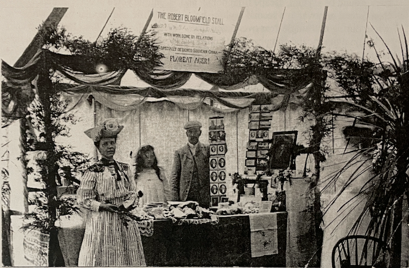
This photograph shows Constance Isherwood, President of the first Robert Bloomfield Society, with her Vice President Arthur Gregory Bloomfield and his daughter Alice Louisa. Taken at a fundraising bazaar at Euston Hall in 1908, it belongs to John Bloomfield, Arthur’s grandson and Alice’s nephew.
There is more on Constance and our predecessors of the first Robert Bloomfield Society in the Newsletter, no. 1. She was instrumental in getting the plaques placed on Bloomfield’s cottage and in Honington church, and died in 1952, aged 70. Arthur Bloomfield (his grandson tells me) was a village carpenter, a fine craftsman. He fixed the plaque on Bloomfield’s birthplace, and it is probable that his work would have been on sale here. The sign says:
THE ROBERT BLOOMFIELD STALL
[?]Donated by the Robert Bloomfield Society
WITH WORK DONE BY RELATIONS
of the Suffolk Poet
SPECIALLY DESIGNED SOUVENIR CHINA
FLOREAT AGER!
************
Newsletter No. 5, March 2003
John Goodridge having ably launched the Society’s Newsletter and produced four most interesting and useful issues, for which the Society is much in his debt, he has now expressed the wish, man of many projects as he is, to stand down. I have agreed to take on the editorship for the immediate future. John had hoped to extend the scope of the Newsletter to include short critical and scholarly essays, and I had already submitted my essay ‘Nature’s Music: Bloomfield’s far from artless song’ for this purpose. It is, therefore, included here. I shall be very glad to welcome more such contributions, as well as shorter discussions of individual poems such as that on ‘Winter Song’ in Issue 3. The present plan, proposed at the November AGM, is to produce two issues of the Newsletter each year.
Unfortunately, our Secretary Philip Hoskins was indisposed during the latter part of 2002. This has underlined, if such were needed, how invaluable a role in the Society Philip has played to date. Though now recovered, he does not feel able to continue as Secretary. The office of Secretary is obviously crucial to the successful functioning of the Society, and we are fortunate that Rodney Lines has offered to take over in this capacity from July. Rodney is retiring Chairman of the John Clare Society and we shall be very pleased to welcome him as one of our officers. Under the circumstances, notice of the AGM, though this had been announced in previous newsletters, was circulated to members at rather short notice and the attendance was relatively small. Dr Tim Burke, in a talk the first part of which appears below, raised issues and questions about the kinds of socializing and ‘friendship’ represented in Bloomfield’s poetry (challenging, perhaps, certain of my own comments on Bloomfield and Wordsworth in the essay on ‘Nature’s Music’).
This year’s AGM will be held once again at the George Eliot Building, Clifton Campus, Nottingham Trent University, and will begin with an informal talk or readings from Bloomfield’s work, with an opportunity for discussion. The date of the meeting will be November 12th, starting at 5.30 p.m. Refreshments will be provided and all our members are very welcome.
A Bloomfield Society summer event is planned in the form of a walk round Bloomfield’s Shefford. It will include the house in which he lived and the pub opposite, where, he recorded, the posts staged, and will end with a visit to his grave in Campton churchyard. This will take place on Sunday 20th July at 1.00 p.m. Details of where to meet in Shefford will be circulated to members as soon as these are known, together with instructions for getting to Shefford. May I urge you to make a diary note now!
Hugh Underhill
Robert Bloomfield Memorial Plaque in Campton
Planning for the plaque is now well advanced; here is an image of the proposed design.
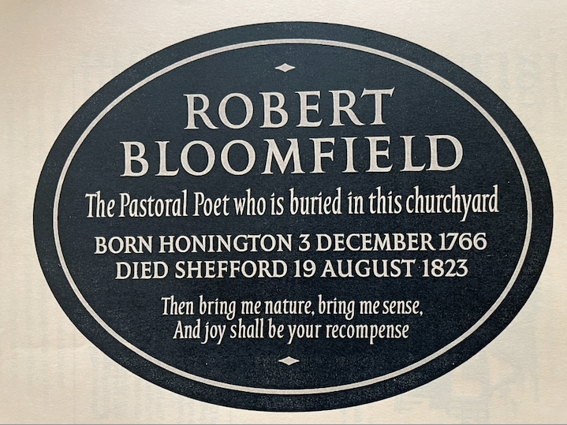
Philip Hoskins writes: This is the proposed design for the memorial plaque to be erected at All Saints’ Church Campton to commemorate Bloomfield’s life and work. The design for the plaque has been approved by the Diocesan Advisory Committee and the remaining formalities are expected to be completed within a few weeks. A benefactor who lives in Campton has offered to donate the cost of the memorial. The plaque will complement the memorial to Bloomfield in Honington’s church erected in 1916 (see Newsletter 2, Nov. 2000) and is a fitting recognition in the place where he is buried.
**********
Future Summer Events
It was disappointing to have the last summer event ‘Bloomfield’s London’ – cancelled. There were various reasons for the cancellation, principally the unattractive prospect for several otherwise interested members of getting around London by public transport. By the time this had been realised, alternative coach transport could not be arranged, except at a price that would make the event extremely expensive for the participants and for the Society.
We would like to hold enjoyable and successful summer events, and this year will be walking round Shefford and Campton (see the editorial note above). For future years there are a range of options : the London tour can be rescheduled, with more appropriate transport arrangements; we can visit the Wye Valley, scene of Bloomfield’s 1807 tour (his poetic record of this tour, The Banks of Wye, was published in 1811); or we can return to Bloomfield’s Suffolk, with the added attraction of the reopened museum in Bury St. Edmunds, where several items of significance in Bloomfield’s life are held, including the table addressed in ‘To My Old Oak Table’, upon which The Farmer’s Boy was composed. I would be very grateful if members could communicate their preference(s) to me, or to any officer of the Society, as soon as possible. Tim Burke
The Poetry of Friendship: Robert Bloomfield, John Clare, and the Labouring-Class Tradition
Tim Burke
This is the first part of a revised version of the paper delivered at the AGM of the Robert Bloomfield Society on 13 November, 2002. A stand-alone copy of this article, including parts I, II and III, is available here.
When John Goodridge and Philip Hoskins first mentioned to me their plan to form a society for those interested in the life and work of Robert Bloomfield, the association, they told me, would be called the ‘Friends of Bloomfield’. Even though our society is nothing other than friendly to Bloomfield and his memory, this would not, perhaps, have been the most appropriate of names: our poet might be more aptly regarded as among the most ‘friendless’ authors of his period. To read Bloomfield’s poems, after all, is to enter a world strikingly unconcerned with friendship and sociability. Addresses to, descriptions of, or narratives about friends are not readily found in his published works, and friendship as an abstract principle is hardly ever invoked.
Although the title of Bloomfield’s 1802 collection, Rural Tales (1802), would seem to imply both a set of social bonds and some type of communal gathering at which such tales might be rehearsed, sociability appears to be occasional rather than permanent, habitual, or framed in legal terms (such as marriage). The ‘Winter Song’ tells of a gathering of ‘neighbours’ rather than friends, and the friendships of ‘Richard and Kate’ and ‘Walter and Jane’ are coloured by the inequalities of power within the marital relationship (however happy the parties may declare themselves to be). Social gatherings also tend to be organised rather than spontaneous in the poems in Wild Flowers, Bloomfield’s next collection (1806). ‘The Broken Crutch’ is set around a wedding feast and ‘The Horkey’ around the rhythms of the work performed in the fields. Far more common in Bloomfield are poems characterised by the pain of friendlessness and/or the memory of friendships that have ended. Such disappointments afflict the young and the old alike: the plight of the Miller’s Maid is intensified because she has ‘no parents, and no friends beside’, while the old French Mariner recalls the dear friends lost in combat: ‘I’ve rode o’er many a dreadful wave, / I’ve seen the reeking blood descend, / I’ve heard the last groans of the brave, / The shipmate dear, the steady friend’. For some of Bloomfield’s speakers, objects become a substitute for human friends: in ‘The Widow to her Hour Glass’, we see a widow trying desperately to fill the hours of the day after the loss of a husband, and talking, pathetically, to an hour-glass: ‘Come friend, I’ll turn thee up again: / Companion of my lonely hour.’ Less plaintively, Bloomfield himself would later open his poem ‘To my Old Oak Table’ by hailing the table on which he had composed The Farmer’s Boy (1800) as ‘Friend of my peaceful days! Substantial friend’: for this ‘honest friend’, he recalls a time of great woes when ‘Resignation was my dearest friend’.
The Farmer’s Boy is Bloomfield’s most extended, and most intense, exploration of friendlessness. In ‘Spring’, Giles performs ‘unheeded drudgery’, and is compared to a solitary ox rather than to the lambs who ‘frisk’ with their ‘playmates’. ‘Summer’ is for him a time of ‘lonely ease’, when ‘solitude derives peculiar charms’ though this statement is curiously placed shortly before the account of the harvest revels. The limited social experience of Giles is largely confined to these harvest festivities, or to family gatherings (at which there are ‘kindred pleasures’ and ‘bond[s] of amity’). A description of sporting boys in ‘Autumn’ does not seem to include Giles as a participant in the games, which are only mentioned within a meditation upon ‘departed friends’. From this meditation, the speaker moves directly to consider ‘Ill-fated Ann’, the solitary madwoman who spends her days sat upon ‘some tufted molehill’ and ‘there weeps her life away’. Although elsewhere in ‘Autumn’, ‘Euston’s Fitzroy’, that is, Bloomfield’s patron the Duke of Grafton, is counted as the ‘poor man’s friend’, this can be no more a friendship between equals than that between Bloomfield and Thomas Lloyd Baker and Robert Bransby Cooper, who paid for their favourite poet to join them on a tour of the Wye Valley in 1807 (an act which secures them the title of ‘friends’ in the resultant poem, The Banks of Wye). In any case, the reference to Grafton is undercut because it follows shortly after the poem’s most striking image of Giles’s friendlessness: ‘To duty’s call he yields, / And strolls the Crusoe of the lonely fields’. This ‘Crusoe’ is not entirely content in his isolation, however, since in this heart-rending passage, he gathers fruit and builds a fire for friends that do not arrive at the appointed time, and who are, we are led to suspect, no more than imaginary companions:
... o’er the flame the sputt’ring fruit he rests,
Placing green sods to seat the coming guests;
His guests by promise; playmates young and gay: –
But Ah! fresh pastimes lure their steps away!
He sweeps his hearth, and homeward looks in vain
Till feeling Disappointment’s cruel pain,
His fairy revels are exchang’d for rage,
The field becomes his prison, till on high
Benighted birds to shades and coverts fly.
Midst air, health, daylight, can he prisoner be?
If fields are prisons, where is Liberty?
Giles is here given an education in romantic philosophy: he must learn, early in his life, that nature is a more than adequate compensation for friendship, and the imagination a greater consolation to the self than social life.
John Clare, for one, learned from Bloomfield that friendlessness as a poetic idea and image could serve as an effective shorthand for announcing one’s creative genius. His poem ‘The Fate of Genius’ is especially adept in deploying this strategy. Clare looks forward and back, both fantasising that one day his ‘rustic genius’ might emerge from ‘darkness’, and lamenting, after the event, the betrayal of the ‘learned friends’ who once championed him. He imagines one of his Helpston contemporaries, now employed as a clerk, cashing in on his intimate knowledge of the newly-discovered poet: ‘“I knew him from a child” the clerk would say, / “And often noticed his dislike to play / Oft met him then lone left by woods and streams… Nor did his habits alter with his age… Nor friends nor labour woud his thoughts beguile / Still dumb he seemd in company and toil…”’. In Clare’s poem, as sometimes happens in Bloomfield’s verse, objects prove to be more faithful friends than people: ‘Hed fancy friends in every thing he found’.
In the decades in which Bloomfield and Clare flourished, literary loneliness was a thoroughly conventional performance, of course. Friendlessness was a popular concept in the fiction of the period: in the gothic romances of Ann Radcliffe and her contemporaries, ‘friendless’ is the preferred adjective of abducted or abandoned heroines who wish for protection. The term is often used in a similar sense by Bloomfield’s fellow labouring-class poets too, especially those who could not find a patron, or found themselves abandoned by their one-time protectors. John Frederick Bryant, a Bristol pipe-maker who published his Verses in 1787, described himself as a ‘friendless’ genius whose problems would be solved ‘would some gen’rous patronising friend / My murth’ring woes and dire vexations end’. Ann Yearsley, another Bristol poet, similarly conflates the terms ‘friend’ and ‘patron’ in describing her short-lived association with Hannah More. Most important, however, for an understanding of why Clare and Bloomfield cultivated a poetic universe without friends, is that long-enduring notion of the Romantic poet as a type of the Blakean prophet, or the Wordsworthian visionary, speaking alone from the top of some mountain or moor, or from the isolated position of one who is not at home in the flux of the city. Keats in his premature sickness, and Coleridge in his opium-fuelled journeys into the imagination, are also key contributors to the romantic mythology of the poet as one capable of transcending all worldly concerns. Labouring-class poets of this time certainly found that their patrons and reviewers were eager to describe them as solitary figures, in part so that their discoveries would fulfil the philosophical criteria of ‘natural’ or ‘original’ genius. This theory, developed in the middle and later eighteenth century, insisted upon the uneducated author as a specialised and isolated personality, granted creative inspiration by nature or God. No labouring-class poet was more attracted to sociability as an ideal and as a practice than Robert Burns, yet much of the early iconography of Burns suppressed this aspect of his work: Wordsworth depicted him, in his poem ‘Resolution and Independence’ (1802), as a more laborious version of his own poetic personality, in other words, as a solitary who ‘walked in glory and in joy, / Behind his plough, upon the mountainside’.
No doubt, labouring-class poets themselves were sometimes happy to live up to this image, and thus collaborated in their own mythologisation. But the tendency of scholars and critics to abstract these ‘peasant poets’ from the communities in which they flourished (a project begun by Robert Southey, in his Lives and Works of our Uneducated Poets, in 1831) has ultimately resulted in a misunderstanding of the labouring-class literary tradition. That tradition is both broader and deeper than is customarily assumed, principally because many of the poets who did not fulfil the pattern of the friendless solitary were jettisoned by literary historians from Southey onwards. If Edward Williams, Janet Little, Edward Rushton and Elizabeth Hands, to name but four such poets, are allowed to take their rightful place alongside Bloomfield and Clare as the most important labouring-class writers of the Romantic period, we might come to a new and fuller understanding of the tradition, and Romanticism generally, as populated not only by solitaries and visionaries, but by poets who cherished and celebrated sociability and communal life, and who invented ways of incorporating these ideals into the form as well as the content of their verse. A more thorough investigation of the labouring-class poetic tradition at the beginning of the nineteenth century also reveals that Bloomfield the man was nothing like so friendless or solitary as his published work might suggest. Anyone who has read Bloomfield’s many letters to and from his friends, a great number of which are held at the British Library in London, will already know this (though one could not guess it from the rather partial selection of his correspondence edited by W. H. Hart in 1870 [reprinted in 1968], which tends to perpetuate rather than call into question the conventional portrait of a solipsistic Bloomfield).
In the next issue of the Robert Bloomfield Newsletter, I will conclude this essay with details of the progress of the friendship of Bloomfield and the previously unknown poet William Lane, and speculate on why it seems to have ended, several years later, in bitterness, jealousy and a public announcement of recrimination.
**********
‘Nature’s Music’: Bloomfield’s not so artless song
Hugh Underhill
A stand-alone copy of this article is available here.
‘The Bard whom Nature greets as all her own…. artless is, like thine, his song’.[1]
For the later eighteenth-century, ‘Nature’s Music’ or ‘The Music of Nature’ were phrases to conjure with. They engage a clutch of the period’s intellectual and imaginative preoccupations, and in evolving ways the adjective ‘Aeolian’, and imagery associated with the Wind Harp, were to continue to exercise a fascination over the literary mind during much of the nineteenth century. Robert Bloomfield may have known of the Harp from an early age. His short poem ‘Aeolus’ appeals to the breeze on a sultry day to ‘Arise’ and, bringing country airs with it to the city, to perform on what is presumably one of the harps made by himself. He wishes that the harp’s ‘soft vibrations’ should ‘whisper love / And fancied choirs of heavenly song.’[2] This diction and imagery is consistent with much that he quotes in his pamphlet ‘Nature’ s Music’. His intention appears to be to endorse such rhapsodizings, but I think that the pamphlet is likely to strike us now as illustrating how ready-to-hand that language and sentiment had become by the date of its compilation in 1808. I want ultimately to address how redundant, in fact, the best of Bloomfield’s own writing makes them. As Marion Walker wrote, ‘Other men’s music rang in his ears’,[3] yet his own world of experience and manner of registering it in verse are distinctive.
The instrument itself had already been known for a long time. Jonathan Mansfield in his Design and Construction of an Aeolian Harp has an Italian illustration dating from circa 1650.[4] It had been a fashion item, or what Geoffrey Grigson tartly calls a ‘toy’, in prosperous English households since mid-century.[5] The instrument-makers Alan and Nina Grove possess a harp made by William Banks of Salisbury dated 1787, the oldest existing English Aeolian harp, and ‘probably the oldest dated harp in Europe.’[6] Grigson gives reasons for thinking that the instrument was ‘launched’ in London between 1741 and 1748 when James Thomson published The Castle of Indolence; certainly from about that date it acquired an emblematic status among poets. By 1806 (perhaps some years previously) Bloomfield was making and selling harps himself. His patron Capel Lofft refers in a letter of that year to a harp ‘constructed by yourself’, and asks ‘Can you give me a hint in what respect your construction differs?’ In a letter of the following year Bloomfield complains of ‘the accumulating plagues which arise from my Harp trade’.[7] The Groves believe that he indeed made important innovations in the design of the harp, and his ‘Nature’s Music’, though presented with his customary openness and modesty, and in his usual unaffected prose, witnesses both to researches of considerable thoroughness, and to an interest in the harp at once practical and technical, and poetic and musical (albeit he more than once calls himself ‘no musician’).
He begins his ‘book of extracts’ with prose passages which include accounts of the history of the harp and its figurations in myth, as well as ‘practical observations’ (as the title-page has it) on its construction, and speculation about the ‘principles’ on which it performs. He then moves on to his ‘poetical testimonies’. For all his immediate commercial and practical worries, and fascinating as the sounds produced by the wind on the harp often were and are found, it is, I think, the preoccupation discussed by Grigson in his essay with the harp as ‘an image and a property in poetry’ that most strongly emerges from Bloomfield’s pamphlet. The early-established conceit that for Giles ‘The fields [were] his study; Nature was his book’ is at the heart of The Farmer’s Boy. So the appeal for Bloomfield of that ‘Music of Nature’[8] which was widely taken to materialize in the sounds from the harp is obvious. There would have been plenty in Bloomfield’s reading to familiarize him with traditional commonplaces about Art and Nature, of ‘nature’ standing in opposition to ‘art’ and ‘culture’. Readers of Addison earlier in the century had been instructed that ‘If we consider the works of Nature and Art, as they are qualified to enter the imagination, we shall find the last very defective in comparison with the former….’ (Spectator, 414). In his ‘Argument’ summarizing Book I of The Task (1785), William Cowper describes ‘The works of nature’ as ‘superior to and in some instances inimitable by art.’ (In that poem, he also uses the phrase ‘Nature’s music’: Book III, line 600.) Some such distinction is felt throughout Bloomfield’s selections. Charles Bucke distinguishes between ‘the Eolian lyre’ as the only ‘natural’ instrument and all others which are ‘artificial’ (p. 121). William Mason (a friend of the poet Gray who had made a harp for himself) hears in the harp ‘…many a warble wild and artless air’ (p. 133), while lines from Mrs. Opie resolve that ‘when art’s labour’d strains my feelings tire, / To seek thy simple music shall be mine’ (p. 139). But this felt opposition makes the title-phrase ‘Nature’s Music’ an oxymoron, the implications of which, I suggest, are either lost on most of Bloomfield’s ‘poetical testimonies’, or which they are disinclined to probe. By contrast, it seems to me, Bloomfield’s own verse, by means I shall indicate later, actually confronts that oxymoron and collapses the traditional dichotomy. He is breaking the mould.
The harp in Spenser’s The Ruins of Time (III.2) which produces ‘most heavenly noise… of the strings, stirred by a warbling wind’ is noted more than once, but Bloomfield judges Thomson’s in The Castle of Indolence (where Thomson imitates and parodies Spenser) the ‘most true and most delightful’ description of the Aeolian Harp’s music:
Behoves no more
Than sidelong, to the gentle waving wind
To lay the well-tuned instrument reclined;
From which, with airy, flying fingers light,
Beyond each mortal touch the most refined,
The God of Winds drew sounds of deep delight:
these sounds being ‘Wild warbling nature all, above the reach of art.’ (I, xl-xli; Remains, p. 129). But Bloomfield’s extracts, in that period when, it often feels, any educated person of sufficient leisure could turn his or her hand to a sonnet or an ode, all draw on the same commonplaces and verse-conventions, and on the fashionable idiom of Sensibility. He himself comments on the way these ‘verses… exhibit a similarity’. ‘Warbling’ and ‘zephyrs’ are almost obligatory, and the notion of sounds beyond the ‘mortal’, as well as above the reach of ‘art’, colluding with imagery of spirits and angels, is everywhere. Mrs. Opie has a ‘rapt enthusiast’ who ‘thinks the melting strains / A choir of angels breathe… / …to the gale their silken pinions stream, / While in the quivering trees soft zephyrs sigh’ (p. 139). ‘Pinions’, ‘ethereal’ and ‘celestial’ have a high popularity rating: ‘Methinks I hear the full celestial choir’ (Thomson again); ‘Ten thousand Sylphs, on lightest pinions borne, / To realms ethereal on your murmurs fly’ (p. 126). The lines Bloomfield cites from ‘Goodwin’ (p. 135) are virtually a compendium of all this, and the writer speaks fancifully of listening to the harp ‘far retired from the busy throng, / In vine-clad cottage’ where ‘Thy murmurs mingling with the moss-fringed brook / Should lull my soul to happiness and peace!’ The poetry of rural retreat, drawing on classical models and the tradition of Pastoral, had been produced in some quantity throughout the eighteenth century; but this is a significantly modified tone. We are verging here on ‘the romantic Nature of the individual soul’ (Grigson, p. 29), rather than the rational Nature of the Augustans. Some extracts acknowledge also the power of the harp’s music to alarm rather than soothe, or to be melancholy rather than rapturous, even, in one ‘testimony’, ‘portending death’. Mrs. Opie finds the music to veer between the two: ‘…but shrill and swift, the tones / In wild disorder strike upon the ear. / Pale Frenzy listens, kindred wildness owns…’ (p. 138). Both the desire for states of mind in which the ‘soul’ could feel in harmony with nature – a withdrawal from the troubled world – and for thrilling effects – wild, frenzied, even frightening – register the current running towards Romanticism.
Brown and Boyle’s survey (see note 4) and Grigson’s essay both augment Bloomfield’s ‘testimonies’ among English writers and show interest in the harp in this period extending throughout European literature. If Bloomfield’s tally has omissions, what is remarkable, given his situation and background, is how far his reading stretched. Striking, though, is the absence of Coleridge, whose ‘The Eolian Harp’ of 1795 and ‘Dejection; An Ode’ of 1802 were both, in addition to a number of other poems which mention the harp, in the public realm by the time Bloomfield wrote his pamphlet. Coleridge explored, with characteristic volatility of mood as well as imaginative range beyond any of Bloomfield’s testifiers, both extremes of response to the music. In the earlier of these poems, ‘that simplest Lute, / Placed length-ways in the clasping casement’ ‘pours such sweet upbraiding’ as well as ‘long sequacious notes’ which ‘Over delicious surges sink and rise, / Such a soft floating witchery of sound / As twilight Elfins make….’ The harp sounded by the wind is a symbol of the creative impulse, of the imagination which for Coleridge synthesises all into unity. In the later ‘Dejection; An Ode’, that touchstone of the Romantic temper, the harp, far from having power to console, sends forth ‘a scream / Of agony by torture lengthened out’. Its sounds are ‘mad’ and ‘tragic’. Neither does Bloomfield, though he had certainly read Lyrical Ballads,[9] seem to have known The Prelude of 1805. There Wordsworth, too, takes the harp’s music as emblematic of Nature’s power to affect mood and shape meditation. At I, lines 101-7 his soul encounters ‘Aeolian visitations’ but the harp’s ‘harmony’ falls to silence (as it would with a lack of a breeze); and at III, l. 137 he describes himself as ‘obedient’ to Nature as ‘a lute / That waits upon the touches of the wind.’ Other extensions of the Aeolian image into Romantic thought such as Shelley’s could not have been known by Bloomfield: the Defence of Poetry of 1821, at the outset of which Shelley defined poetry as ‘the expression of the imagination’ by reference to the Aeolian harp, or a passage of Prometheus Unbound (1820: Act IV, 185-8) which also employs the imagery.
The process of mystification involved in this oxymoron, this idea of ‘nature’s music’, is called by Grigson ‘a pleasant convenient act of self-deception. Man, by artifice if not art, arranges several strings on a rectangular pine-wood box, the wind moves the strings; and the man-arranged music is not man-made, but made from Nature, is Nature’s music, made audible’ (p. 29). The initiators of the process, such as Thomson and Christopher Smart, show a certain Augustan appreciation of the paradox of an instrument constructed by man and then played by nature. (The latter’s ‘Inscriptions on an Aeolian Harp’, first published in 1750, fits Bloomfield’s testimonies well but was apparently unknown to him; his ‘Jubilate Agno’, with its reference to the harp at 1.250, remained unpublished until 1939).[10] But any intellectual bite in that paradox slipped away in the harp’s popularization. The idea of its music became merely a loose image, facilitating an easy projection of self into ‘nature’. The music could be put at the service of any kind of mood, and could stand in almost to order as token of ‘inspiration’, short-circuiting the exigencies of ‘art’. It must be said that the contents of Bloomfield’s pamphlet, and his own ‘Aeolus’, indicate no interest in an explicit critique. He was conscious that in certain respects he was doing something different,[11] but I don’t think he had the means to conceptualize, even had he wished to, how radical a departure a composition like The Farmer’s Boy was making from the ways of perceiving and feeling ‘Nature’s Music’ documents.
We will find plenty of evidence – in such poems as ‘To His Wife’ (‘Thou know’st how much I love to steal away / From noise, from uproar, and the blaze of day … This is the chorus to my soul so dear’, lines 17-18, 31) or ‘Shooter’s Hill’ (‘To hide me from the public eye, / And keep the throne of Reason clear… I took my staff and wander’d here’, lines 17-18, 20) – of Bloomfield withdrawing from the turmoil of city life to harmonize his ‘soul’ with nature. But how interestingly here he is poised, with that reference to ‘the throne of Reason’, between the rational nature, with its essentially civic ethos, of the eighteenth-century pastoralists, and the Romantics’ nature of the ‘individual soul’. Bloomfield is retreating at once like the former from the corruption, excess, and vanity of the city, and like the Romantics from the London of the industrial revolution. Yet his ‘wander’d’ suggests little of the Wordsworthian inner quest; I don’t think Bloomfield would have known what to make of the massive subjective enterprise of The Prelude. And Bloomfield was not only unequipped by education for the realms of metaphysical speculation into which the harp’s music carries Coleridge, but the physical concentration of his verse puts them out of the question. His temper is anti-romantic; there is never that intensity of concentration on self. In the stanzas of ‘Shooter’s Hill’ he is concerned not only with a repudiation of wealth and fame echoing that of the eighteenth-century moralists, but about ‘disease’, ‘want’ and lack of ‘liberty’ afflicting others as well as himself. Bloomfield’s ‘soul’ is only one in a community of souls, seeking to re-establish contact also with the harmonies and rhythms of a lived and toiled-in countryside, where he locates an ideal of ‘amity and social love’ (The Farmer’s Boy, IV, 8) – a version of the civic, in other words. His cast of mind, sober and sociable, is formed by the eighteenth-century, and his language and often style preserve those of its later decades, not by any means free of the stock diction, of borrowings and echoes, or of the standard rhetorical procedures such as personification and invocation. Yet, formed as he may be in that mould and admiring of its products, and though his ‘book of extracts’ reflects the shift in the meaning of that complex word ‘nature’ away from its connotations for Enlightenment rationalism, it is hard to relate his ‘testimonies’ to his own poetic practice. The writing and sentiments there possess an artificiality which looks vacuous beside his own naturalness and down-to-earthness, and are settled within well-worn verse-forms with a certain decorous complacency which the freshness and resourcefulness he brings to a remarkable range of established forms make look tired and uninventive.
Certainly we will find the ‘pinions’, for instance, so beloved of those testimonies: ‘The cawing rook his glossy pinions spreads’ (‘To His Wife’). But these ‘pinions’ are very material wings, not celestial ones. He is always so close in to his very earthly subjects; rather than ‘angels breath’, we have the ‘warm exhalations’ of the animals’ breath as they crowd round Giles waiting to be fed in winter (The Farmer’s Boy, IV, l. 40). Thomson, from whom he takes his model of a ‘seasons’ poem, was constantly, despite his painterly emphasis on the visual, moving away from particularity toward generalization, a formal distancing which disallows the active, intimate relationship with the observed scene we find in Bloomfield – or, one might add, in John Clare’s ‘seasons’ poem, The Shepherd’s Calendar. We’re much more likely to hear the geese raising ‘Their morning notes of inharmonious praise’ (my italics) than any of those fleeting harmonies of his ‘testimonies’. We’ll find no ‘rapt enthusiast’ in Bloomfield, no flights of ‘fancy’. (‘Fancy’ is sometimes invoked but held at a distance and even seen as likely to ‘deceive’, as at The Farmer’s Boy IV, 289.) The poor mad girl Ann, in ‘Autumn’ (line 109 ff.) is oblivious to the health-giving ‘terrestrial bliss’ of the sunbeams: it isn’t ‘ethereal’ uplift that is looked to by Bloomfield, but the blessings of the terrestrial, the domestic and the communal. More perhaps than he knew, he was amending ‘Nature’ to mean the material circumstances and ‘natural’ affections of daily life, while at the same time crafting his verse vehicles with so deliberate an art that those circumstances and affections are made concrete and pointed for his reader. For many of his readers, to judge by the printed ‘tributes’ to him,[12] it was indeed what was taken to be his artlessness that was found appealing. Yet his verse-forms are not to be found, after all, in ‘Nature’; they are made – like music, which we customarily speak of ‘making’. The couplets of The Farmer’s Boy were, he said, adopted as a practical recourse, but they move between picture or narrative-in-miniature and reflection with an unpretentious ease; the poem is built of small blocks of couplets, each wound up and fixed in place with a full-chiming rhyme; this allows much flexibility but at the same time the poem is kept pinned to the realities of daily labour and of a lived and populated world. Whether the traditional ballad or other stanza-form, he makes something of his own of it. ‘The Widow to her Hour-Glass’ even comes close to ‘altar’ or ‘pattern’ poetry, where the shape of the stanza imitates the subject of the poem. One could multiply examples; he seldom if ever seems defeated by the form he has chosen. What is often remarkable is the transparency Bloomfield imparts to his forms; however intricate, they don’t draw attention to themselves, hardly ever seem other than the apt form, the poem’s voice sitting so naturally within it that it’s easy to overlook how subtle and skilful such verse-writing is.
In The Castle of Indolence (II, l. 19) Thomson had invoked an Augustan equilibrium: ‘Nature and Art at once, delight and use combined’. But that seems an abstract idealization beside the realized engagement of art with nature Bloomfield’s verse at its best exemplifies. ‘Nature’s Music’ has particular value as a report on cultural process and the state of taste, manifested in this fascination with the idea of the Aeolian Harp, at the turn of the century, and for the access it gives to Bloomfield’s life and concerns. But already before he wrote the pamphlet, his own writing was significantly in advance of the kinds of productions he documents. He saw the world from a robustly individual angle, with an exact first-hand knowledge of his subject both human and natural, a direct feel for the life and textures of the material world, without the romantic baggage of the supernatural (belief in which he invariably deflates), of thrill-seeking or obsessive introspection, and the unforced but deliberative craftsmanship with which he embodies this vision make his at its best a new, and different, kind of writing.
[1] ‘Tributary poem’ to Bloomfield included by Joseph Weston in The Remains of Robert Bloomfield (London: 1824; see I, p.140).
[2] Remains, I, pp.62-3. It seems likely that Bloomfield never intended `Aeolus’ for publication.
[3] Bedfordshire Magazine, Summer 1954, 205.
[4] Vol. 1 of Stephen Bonner (ed.), Aeolian Harp (Duxford, Cambs.: Bois de Boulogne, 1968-74). The other volumes are: 2. The history and organology of the Aeolian harp, by Stephen Bonner; 3. The Aeolian harp in European literature, 1591-1892, by Andrew Brown, with additional material by Nicholas Boyle; 4. The acoustics of the Aeolian harp: supplement to vols 1-3, by Stephen Bonner and M.G. Davies, line drawings by Vic Woodward.
[5] Grigson’s very useful and interesting essay is in The Harp of Aeolus and other Essays on Art, Literature and Nature (London: Routledge, 1947, pp. 24-46).
[6] John Goodridge, ‘Bloomfield & the Aeolian Harp: A Conversation with Alan and Nina Grove’, The Robert Bloomfield Society Newsletter, No. 3, March 2002, 11.
[7] The letter from Capel Lofft can be found in Selections from the Correspondence of Robert. Bloomfield, ed. W.H. Hart (London, 1870, Letter 41); Bloomfield’s letter appears in The Letters of Robert Bloomfield and his Circle, ed. Tim Fulford, Romantic Circles Electronic Editions. Other letters concerning this ‘trade’ are reprinted in Newsletter, 3.
[8] See the ‘Sonnet’ on p.126 of The Remains, Vol. I. All subsequent page references to ‘Nature’s Music’ are to this text.
[9] See Remains, II, pp. 111, 119.
[10] Karina Williamson in Christopher Smart: Selected Poems (Harmondsworth: Penguin, 1990) comments: ‘…“Inscriptions” is one of the first poems to use the Aeolian harp as a trope for spontaneous lyrical utterance.’
[11] For example, in his ‘Advertisement’ prefacing Good Tidings he speaks of writing on a subject which `appeared… peculiarly unfit for poetry’: vaccination.
[12] In addition to that by Maria Hester Park on p. 140 here, other tributes are included in the Remains, Appendix to Vol 1, pp. 147-86, and in Tributary Verses to the Memory of Robert Bloomfield, the Suffolk Poet (Woodbridge: B. Smith, 1823).
Query: William Holloway
Scott McEathron of S. Illinois University, USA, is seeking biographical details about William Holloway, an early nineteenth-century poet who was a friend of the Bloomfields.
Sunshine and a Surfeit of Suet
Philip Hoskins
Bloomfield’s life in Shefford suffered many ups and downs, often coloured by a lack of money. These extracts from letters to Charles and to Hannah show firstly a rare interval of warm contentment followed by an account of a disastrous meal, typically tinged with a sense of humour retained even in trying times. From a letter from Robert Bloomfield in Shefford to his son Charles, dated 2 March 1818: ‘I feel a placid composure, a kind of sunshine holiday of the soul which I have not felt for two years past. I have paid all my principal debts.’ And from a letter from Robert Bloomfield in Shefford to his daughter Hannah, dated 12 January 1820:
The weather has been desperately cold (at least to me). Our Mutton was frozen today before it was put to the fire, and frozen again when it got upon the plate. I could not get on with it, and therefore attacked your Mother’s plumb pudding into which she had put the Suet with the spade, but my Stomach was wiser than I, and turn’d it out again in less than an hour.
Newsletter No. 6, October 2003
Summer Event
On 20th July, a pleasant summer afternoon, a dozen or so members met outside the Town Meeting Room at Shefford and together strolled around a Robert Bloomfield Trail designed by Philip Hoskins. We began at the house in which the poet lived from 1812 until his death in 1823, with its plaque ‘erected by Constance Isherwood’, founder president of the earlier Bloomfield Society, in 1904, still in place on the wall. Almost opposite is The Brewer’s Tap, in Robert’s time The Green Man, a posting inn (‘We post at the Green Man’, he wrote in 1812). The group took note of a number of other pubs which were in existence in Bloomfield’s time (some of which he mentions in letters), the antique shop which was his friend Joseph Weston’s draper’s and grocer’s shop, the area of the Market – here it is possible to imagine the lively scene of the 1814 victory celebrations in Shefford as described by Bloomfield – and the now so-called Tudor House, originally The Rising Sun. Bloomfield recorded that a performance of She Stoops to Conquer took place in the malt-house still visible to the rear.
We then moved to Campton for the service to dedicate the newly-installed memorial plaque. This was commissioned from Memorials by Artists of Snape Priory, Suffolk, and designed and crafted in Welsh slate by Ieuan Reese. The service was conducted by the Revd Margaret Venables and included a lesson read by Robert Taylor, a pupil of Robert Bloomfield Middle School in Shefford, a tribute by Hugh Underhill, the text of which is given below, and a reading by ten-year-old Connie Bloomfield of John Clare’s poem ‘The Peasant Poet’. The Rt. Revd. Richard Inwood, Bishop of Bedford, preached a sermon based on Bloomfield’s life and then dedicated the plaque. A peal was rung by young Campton bell-ringers who are pupils of Robert Bloomfield Middle School.
After the service members of the church provided refreshments. Editions of Bloomfield’s works were on display, as was Alan and Nina Groves’s reproduction of the Bloomfield Aeolian Harp. Flowers were laid at Robert Bloomfield’s grave by Connie Bloomfield and at the neighbouring grave of his friend Thomas Inskip, who paid for Robert’s burial. Alan and Nina also managed to coax their Aeolian Harp to produce some bursts of ‘Nature’s music’ in the churchyard. The consensus among those attending was that a most interesting and successful afternoon had been passed, and many thanks are due to all those involved in the arrangements: the parish council, Revd Venables, Bishop Inwood and especially Philip Hoskins.
Robert Bloomfield: A Tribute
Hugh Underhill
Robert Bloomfield, who spent the last 11 years of his life in Shefford and is buried in this churchyard: one of the so-called Peasant Poets which Society from time to time took up until some newer whim caught on; or, the Pastoral Poet, as he is characterized both on our newly-installed plaque here, and the old one on his Shefford house.
In a few moments we shall have the opportunity of hearing the poem by John Clare known by the title ‘The Peasant Poet’, not, it seems, John Clare’s own title for the poem. It is a poem which might apply both to Bloomfield, with whom the younger poet Clare felt himself much in tune, and to Clare himself. The ‘love’ and the ‘joy’ we shall hear spoken of in that poem, words which have a very particular weight for Clare, the delight in the commonplace things of nature, which for the poet are not commonplace at all, are much what we find in Bloomfield’s poetry – as our plaque quotes: ‘…bring me nature, bring me sense, / And joy shall be your recompense’ (my italics).
Bloomfield’s Shefford friend Joseph Weston wrote of ‘his pictures…drawn directly from nature’ which ‘are always just and true, like the reflections of a polished mirror.’ I think I’d even call it a kind of transparency: the speaking or narrative voice, the language, the versification, don’t attempt to show off or twist our arms, don’t get in the way of our responses. The pictures, his scenes of rural life, the incidents and personages in his tales, and his reflections, affect us as ‘just and true’ because of the generosity and trust with which he opens himself to them and with which he mediates them to us. There’s an unforced effect, a delicacy which makes us feel that the naturalness and down-to-earthness are not on the one hand simple-minded, unschooled, or on the other, affected, got up. ‘Sweet unassuming minstrel’ was what Clare in another poem called Bloomfield; that unassumingness is not only in his work, but was a characteristic of the man, it seems – ‘a man of mild unassuming manners’ he was called in an obituary notice (though that shouldn’t be taken to imply that he lacked spirit when necessary). And this is despite the fact that, like Clare again, he possessed gifts and capacities which another man might not have been unassuming about at all. These are abundantly apparent in the quality of attention the poetry attests to, the feel for the life and textures of what Bloomfield in his late masterpiece written at Shefford May Day with the Muses calls the ‘real world’ in its ‘thousand dies’, the aliveness of the writing, the informed grasp of verse-structures and the technical means and resources of poetry.
Those considerations, surely, must make us hesitate over what exactly Clare, when he presents us with that ‘Peasant Poet’ figure, is doing. Isn’t this, rather than either himself or Bloomfield, or any individual, a kind of emblematic figure? Clare uses him to make concrete the predicament in which poets of labouring-class background invariably found themselves. Implied in the poetry is a remonstration: why do you insist on classifying and delimiting those such as us, as peasant poets? In his concluding couplet Clare expressly counterposes and dissociates the two terms, the peasant and the poet. This neatly alliterating phrase, peasant poet – it trips off the tongue – imposed on that poem by some transcriber – has too often been used as a put-down: a peasant couldn’t, of course, ever be a proper poet. Most of us in the Bloomfield Society and more generally now prefer to speak of Bloomfield and Clare as ‘labouring-class’ or ‘self-taught’ poets. What Bloomfield isn’t, though he’s often been represented so, is a naif, an artless and unschooled writer.
Bloomfield did, however, speak of himself as a writer of ‘pastoral poetry’ – ‘I must and will be as private a man as pastoral poetry will permit me to be,’ he once wrote (words echoed by Clare’s ‘A silent man in life’s affairs’). And look at the titles of his various books – The Farmer’s Boy, Rural Tales, Wild Flowers, The Banks of Wye, May Day with the Muses. He consciously drew on the long tradition of Pastoral, especially as manifested in many of the eighteenth-century poets who immediately preceded him, and was particularly prompted by James Thomson’s work The Seasons. So certainly, then, a Pastoral Poet. However, when we read The Farmer’s Boy, we seem to be in a different world to that of Thomson’s The Seasons, with its ostentatious artifice. Bloomfield drew as much on the popular and oral traditions of verse and song that he would have found still alive in the rural communities of his childhood, and it’s that closeness to and opening himself, as I put it before, to a ‘real world’, to an actual countryside, which makes his version of pastoral distinctive. His was actually a new and different kind of writing. So I wouldn’t like ‘pastoral poet’ either to harden into a limiting category for him. At the same time, he’s only tangentially affiliated with the ‘nature poets’ of the Romantic movement who were beginning to steal the limelight in his own lifetime. In certain respects, I could argue, his writing looks right beyond them to post-romantic developments. ‘Nature’ for him meant ‘natural’ states of feeling within a family, a community, ‘social amity’ as he put it, and towards the living environment, states so often threatened – and this is a kind of fixed point to which he constantly returns throughout his writing – by those who pursue power and position and riches at the cost of humanity and of despoiling the natural world. One honours him, it seems to me, for the democratic and trusting way in which he holds to that as an overriding value, through all the vicissitudes, the ‘cares’ as John Clare’s poem has it, of his life. He’s an original poet who attends to the human situation in a larger sense than any pigeon-holing phrase allows.
In his volume Wild Flowers (‘Love of the Country’) Robert wrote:
Heav’n permit that I may lie
Where o’er my corse green branches wave;
And those who from life’s tumult fly
With kindred feelings press my grave.
**********
Two Pastoral Poems
This is a slightly edited version of the sermon preached by Bishop Inwood before dedicating the memorial plaque at All Saints, Campton.
From my point of view (and you must realise I am a complete amateur in these things), as I read ‘The Farmer’s Boy’, I was interested to find surprisingly few references to God in the poem and, unless I’m much mistaken, surprisingly few Biblical allusions. I think we have the romantic notion that somehow two-hundred years ago, things were different; that more people were devout; that closeness to the soil somehow meant closeness to the Creator, and so on. God is somehow standing rather remotely beyond the created world, but it’s the created world and its rhythms that (it seems to me) are the focus of wonder for Bloomfield.
Having said that, the final lines of the poem strike a note of praise to the ‘Eternal Power’.
Just a couple of pages earlier, Bloomfield is describing the skyscape of a winter’s day. He sees the clouds in pastoral terms – as sheep; like a flock. If a flock, then a Shepherd. And the ‘Mighty Shepherd’, as he calls him, then comes to mind.
These two passages are, if you like, my texts from Bloomfield for this sermon. But I want to put alongside those another text, this time a very well-known one from the Bible, namely Psalm 23. The idea of the ‘Mighty Shepherd’, from Bloomfield, clearly brought this to mind.
I do this partly to bring out a contrast, as I see it, between the intensely personal nature of the Psalmist’s relationship with his God and the more distant awareness of the ‘Eternal Power’ of Bloomfield’s writing. The pastoral background is similar; but the Psalmist extrapolates from the work of the shepherd to the relationship of God with humanity. ‘The Lord is my shepherd’.
Here is a personal God who has a direct relationship with human beings as the shepherd does with his sheep.
I find this comparison fascinating. Whether the less personal sense of God in Bloomfield’s ‘The Farmer’s Boy’ reflects a part of the world untouched by the Wesleyan revival or simply his own view of religion, or again, whether it’s an indication of how little the church made an impact on ordinary working people, others will know better than I.
Today, though, we come to honour Robert Bloomfield’s achievement in painting for us a picture of life and a period of history from which we have moved a long way. Indeed, in this county the changes in agriculture continue apace, and Bloomfield would be astounded by how few people there are now on the land.
However, what remains true for many of us is the sense of wonder at the natural world; at the changing seasons; and the renewal of the countryside year by year. It still invokes in us that sense of delight he communicates, and my prayer is that it will continue to invoke in each one of us a sense of the presence of a personal God, Bloomfield’s Mighty Shepherd, who can be experienced day by day in the way that our other poet spoke about some three thousand years ago.
**********
Committee Meeting
At a meeting on 11th September at Nottingham Trent University, the committee reviewed in some detail the management of the Society following, in particular, the health difficulties this year of John Goodridge and Philip Hoskins. It was felt, too, that the initial array of roles in the Society might have been over-ambitious, and that for reasons of geography the current Chair and Vice-Chair had been unable to play a full active role in the leadership of the Society. The website was in need of attention which Simon Kövesi was unable currently to offer. It was proposed that these concerns should be raised with the individual officers concerned and certain changes suggested. These will be reported on and put to the AGM in due course.
Our Treasurer Tim Burke reported that the Society has around 50 members and a reserve of more than £500. A revised version of the Society’s leaflet and application form had been prepared and awaited printing. An interesting matter to arise was that of the special relationship which exists between the Society and the John Clare Society, and it was resolved to approach the JCS with a view to closer liaison. The meeting wound up with an exploration of possibilities for future meetings and events, and the outcome of this is summarized below.
**********
Future Meetings and Events
The committee regrets that owing to unforeseen circumstances it will not be possible to hold the next AGM on November 12th as previously announced. Apologies to those who have kept this date free. In view of this, it was decided after some discussion that as 5.30 p.m. on an autumn evening is not the most congenial or suitable time for many members, it would be preferable to postpone the AGM until the spring of 2004, and incorporate it in an informal seminar and reading programme on a Saturday afternoon. This will take place-on Saturday 27th March in the John Clare Lecture Theatre at Clifton Campus, Nottingham Trent University. Further details will be circulated to members as soon as possible. We believe this will be a worthwhile occasion, so please put this date in your diary.
The other major event planned for 2004 is a return visit led by Rodney Lines to Bury St. Edmunds and Honington. It is hoped in particular to visit the Moyses Hall Museum, closed on our previous visit, which houses Bloomfield’s ‘Old Oak Table’ and Aeolian harp, as well as Euston Hall, the home of the Duke of Grafton, who assisted him financially. (‘Where noble Grafton spreads his rich domains,’ wrote Bloomfield in ‘Spring’, ‘Round Euston’s water’d vale, and sloping plains’.) The provisional date for this is the weekend of September 12th-13th. The day will be decided when enquiries have been made into the accessibility of locations, but may we suggest that you also make a note of this event.
The Poetry of Friendship II: Robert Bloomfield, John Clare, and the Labouring-Class Tradition
Tim Burke
This is a continuation of a revised version of the paper delivered at the AGM of the Robert Bloomfield Society on 13 November, 2002. The first part appeared in Newsletter no.5. A stand-alone copy of this article, including parts I, II and III, is available here.
In the course of my research for a recently-published anthology of labouring-class poetry, I chanced upon an obscure author who wrote several poems about his great friendship with Bloomfield. Like Bloomfield, William Lane originated from the lower orders of society; he worked variously as a paper maker, tavern waiter and pastry seller. Born in 1744 in Wycombe, Bucks, he was more than twenty years older than Bloomfield, but as the following poem (published in 1806) reveals, this did not prevent Lane feeling a deep attachment to his fellow poet, whose talent he recognised as superior to his own, and whose friendship he valued deeply:
On Mr B————d’s Indulging the Author with his Company,
from his own House to Hackney, in the Fine Autumn of 1805
Sweet breath’d the breezes o’er the verdant lawn;
The Summer’s sultry heats were all withdrawn;
Sol gave his beams so sober, soft and clear,
And in the balance poiz’d the equal year.
Nor trees bereft of verdure, still their shade
Was welcome oft, and salutary made.
With transient chirp, the finches flitted by;
And larks melodious echo’d from the sky;
Linnets assembled in a tuneful throng,
Congratulate each other in their song.
The ardour which had occupy’d their breast
In former months, now calmly sooth’d to rest;
Complacency resum’d her sober reign,
And satisfaction thrill’d thro’ ev’ry vein:
Pleas’d, that their infant train could cleave the sky,
And independant raise their plumes on high:
Affection sweet, their instinct still retain’d,
And in their bosoms calm composure reign’d:
Each recogniz’d his loving, toiling mate,
And all the pleasing incidents relate,
Attendant on the recent blissful scene –
Connubial bush, or grove, or flow’ry green.
The thrush and blackbird occupy the spray,
And chaunting, welcome the meridian ray;
While distant objects lend their kindest aid,
Diverse, with hill and dale, and light and shade,
And field and grove – the streamlets murm’ring tone;
These beauties thine, sweet nature! all thine own!
Her handmaid art, her feebler aid employs –
Her fairest, strongest, grandest efforts tries,
To grace the scene, and all her charms display;
(Predictive of the sweet auspicious day)
The spires ascending thro’ the lofty trees;
With aspects varying with the varying breeze.
Augusta’s turrets rising on the right;
And Shooter’s antique tower appears in sight,
Which soon detach’d from yonder lofty hill,
Will shine more famous by poetic skill!
But all of art, or nature’s boundless stores,
With each in ceaseless, rich abundance pours,
Give but a transient gust, a sudden glance,
Incapable to fill the vast expanse,
That swells within the space of human thought,
With friendship’s, or poetic fervour fraught;
That for emancipation pants to tell
That certain something indescribable!
Did Collins’ parts, or Bloomfield’s pow’rs possess
My scanty bosom, then I would express
In more emphatic, more exalted strains,
All the enthusiastic breast contains –
In glowing diction, then would I rehearse,
The sweets of friendship, and the charms of verse.
But cease frail muse – the faint detail suspend;
Here is the Man, the Poet and the Friend!
His condescension confidence commands;
He with a lib’ral heart, and out-stretch’d hands,
Revives the weakest, meanest of the throng,
That ever try’d to tell his thoughts in song.
With kind communications, mild and clear,
He warms the heart and captivates the ear;
The Friend advises and the Poet sings,
Soft as Favonius waves his balmy wings.
By Nature’s aid he reach’d Parnassian height,
Nor waited erudition’s tardy flight.
But Ah! I fail Parnassian heights to soar,
Nor can my feeble optics e’er explore,
Where Bloomfield’s native pow’rs his efforts lift,
To pluck the laurel from the topmost cliff!
Nor these excite his vanity or pride;
He chooses down the humble vale to glide!
Like some smooth current, gentle, deep, and clear –
Nor can his sympathetic heart forbear,
To share the sorrows of a suff’ring friend;
And with him down the gloomy vale descend;
Where mutual tales, and corresponding sighs
Press out the briny moisture of the eyes.
But while sweet sympathy extracts the tear,
Some brighter, softer, sweeter scenes appear;
– Interpositions of kind Providence,
Needful supplies – timely deliverance,
With friendly counsel and benevolence!
While each applies the soft, the sov’reign balm,
Sweet resignation – placid, meek and calm;
Sees cheering bounties, and the chast’ning rod,
Alike proclaim a wise and gracious God!
Congratulations close the solemn scene;
While friendship glows in each poetic vein.
In the next issue of the Newsletter, this essay will be concluded with details of the progress of the friendship of Bloomfield and William Lane, and I will speculate on why it seems to have ended, several years later, in recrimination.
Bloomfield at the opera
John Goodridge
Here is a snippet from Bloomfield in an ebullient mood, having borrowed Samuel Rogers’ ticket and visited the opera.
I have had the pleasure of witnessing the best scenery and dancing, and the worst lightning, in England. I saw Narcissus drown himself (and, by the bye, that same Narcissus was worth going three miles to see); I saw a very jolly and delectable looking Venus, and a number of other young things, whose motions indicated that they felt the want of wings, and were very angry indeed because they had them not. They plagued poor little Cupid in a most barbarous manner, because he fell asleep after whetting his arrows: on what? – on a grindstone!
(Letter to Samuel Rogers, 24 Dec 1806, Letter 42 in the Hart edition).
The Barry Bloomfield Collection of Books by Robert Bloomfield
As this newsletter was being printed, the editor received from Valerie Bloomfield, the widow of the distinguished bibliographer Barry Bloomfield, a note prepared by Dr. Elizabeth James of the British Library on Barry Bloomfield’s collection of books by Robert Bloomfield, which has now been presented by his widow to the British Library. Members of the Society will recall that Barry Bloomfield’s death in March last year was recorded in Newsletter no.3. He died before being able to complete his proposed Bibliography of Bloomfield’s works. The collection will become available for study in the Rare Books and Music Reading Room at the British Library during the autumn. This a cause for celebration by the Society and of gratitude to Valerie Bloomfield, as well as of major significance to all Bloomfield scholars. It was not possible to include the full text of Dr. James’s note in this newsletter, but it will appear in the next issue, no. 7.
Newsletter No. 7, Spring 2004
In this issue of the Newsletter, Bloomfield Society members add valuably to what we know about Robert Bloomfield’s activities during his lifetime, his relationships with members of his family, and his dealings with other poets. In surveying the involvement of Robert Bloomfield’s wife Mary with the Joanna Southcott sect, Philip Hoskins underlines our sense of Mary, in view of the sparse information we have about her, as a ‘shadowy’ presence in Robert’s life. Alan and Nina Grove provide details of a surviving ‘drawing’ by Robert himself in a way that might cause us to speculate on the possible existence of other such survivals, and Tim Burke concludes his account of Robert’s relationship with the previously unknown poet William Lane. At the same time, the depth of the collection of the poet’s writings detailed here by Dr. Elizabeth James of the British Library can only expand the possibilities for Bloomfield scholarship. Dr. James refers to the long, and often complex, publishing history of Bloomfield’s writings; this is but one area in which work is waiting to be done.
In Memory of Barry Cambray Bloomfield
As recorded in the previous Newsletter, Mrs. Valerie Bloomfield has presented her late husband Barry Bloomfield’s collection of books by Robert Bloomfield to the British Library. The following memorial note has been prepared by Dr. Elizabeth James.
Barry Bloomfield, who died suddenly in February 2002, was one of the British Library’s most distinguished librarians. As Director of the India Office Library and Records and the Department of Oriental Manuscripts and Printed Books between 1978 and 1985, and then of Collection Development until his retirement in 1990, he was responsible for vast collections which spanned the world. At the same time he was equally well-known outside the profession, and especially in the field of modern English literature, as the meticulous bibliographer of Auden and Larkin. Yet, as members of the Society will know, Barry was much more than a professional librarian and bibliographer. He was also a passionate bookman with an unerring eye for the interesting and unusual. One of the subjects closest to his heart was Robert Bloomfield (of whom he was a collateral descendent), and over the years he accumulated a significant range of books by, and relating to, the poet and his family. This collection has now been most generously donated to the British Library by Barry’s widow, Valerie. It joins the Library’s existing holdings of manuscripts, letters and printed books to form what is probably the largest single resource for research into Bloomfield’s life and work. Consisting of over 300 items, the collection aims to document the long, and often complex, publishing history of his work. To this end, almost all of the volumes are bound in original or contemporary bindings, and many contain early ownership inscriptions, bookseller’s or binder’s labels. About a third of the collection is devoted to separate editions of the best-selling The Farmer’s Boy, especially the fifteen editions published before the poem came out of copyright in 1828. In his 1992 Presidential Address to the Bibliographical Society, Barry concluded that it is rare to find copies of these early editions which correspond exactly, and this is amply borne out by the examples in his collection. They include, for instance, twelve copies of the first edition, representing not only the three recorded issues of the book but variations in imposition, and in the placing and printing of the wood engravings. One of these copies was a gift from Capel Lofft with three additional hand-coloured plates by Adam Buck; another is a manuscript fair copy in an unidentified hand, but with a few variant readings. Other highlights of the collection include two presentation copies of the third edition; a copy of the important eighth edition with two printings of the plates and with additional illustrations; early editions published in New York, Philadelphia, Leipzig, Dublin, Paris and Baltimore; as well as almost one hundred copies of popular Victorian editions, either of The Farmer’s Boy alone or collected with his other poems, in their colourful publishers’ bindings.
The collection has been catalogued and will become available for study in the Rare Books and Music Reading Room at the British Library during the autumn [2003]. Sadly, although Barry compiled a check-list of Robert Bloomfield’s works, he was not able to complete the full bibliography he had planned. We very much hope that his books, so skilfully and imaginatively assembled, may inspire others to continue his research.
Mary Ann Bloomfield – Poet’s Wife and Prophet’s Acolyte
Philip Hoskins
Mary, thy sighs forbear,
Nor grudge the pleasure which thou canst not share;
Make home delightful, kindly wish for me,
And I’ll leave hills, and dales, and woods for thee
(‘To His Wife’ (1804))
When referring in a letter dated 4 October 1814 to his wife as a ‘staunch disciple’ of the prophetess Joanna Southcott, Robert Bloomfield could not have foreseen the cataclysmic event that was to overtake Joanna and cause so much grief to her followers within just two months.
Joanna Southcott, the daughter of a farmer, was born in Gittisham, Devon in 1750. In 1792 she began to receive the voice of God and to dictate her prophecies to two assistants, her ‘handmaidens’. The voice of her mentor instructed her to place certain of her writings in a sealed box, never to be opened until sent for by twenty-four bishops of the Church of England in a time of great national danger. A still unopened box containing the prophecies remains in the custody of the Panacea Society, the society that developed from Joanna’s followers, at its premises in Bedford.
In 1813 when she was aged sixty-four Joanna received from the voice on high the news that she was to bear a divine child named Shiloh. A number of doctors confirmed that she was in fact pregnant and enthusiastically her followers made a magnificent cot complete with hangings and baby clothes for the child. On 25th December, after many days of labour pains, Joanna cried out that the baby was making its way through her side. She died, heartbroken, two days later.
It is recorded that Joanna died of cancer, but her followers believe that the ethereal body of the child was taken by angels to heaven until Shiloh’s destiny should be fulfilled. This was in line with the prophecy in Revelation 12 of a great wonder in heaven that a woman should bear a child who was to rule with a rod of iron and be caught up unto God and to his throne.
Although in the list of Southcottian adherents Mary was one of only two listed with a Bedfordshire location, she would have shared the deep sense of loss suffered by members of the sect. It is likely, too, that Robert Bloomfield’s domestic equilibrium would have been deeply affected by Mary’s grief, and this could well have prompted a downward drift in a marriage that was probably under some strain.
Much had changed since some twenty-five years earlier when Robert had written excitedly to tell his brother George, ‘I have sold my fiddle and got me a wife,’ after having fallen in love with Mary, a pretty girl from Woolwich he had met at the wedding of his brother Nat. Mary and Robert were to be married on 12th December 1790.
Children were soon to follow and Mary preferred to stay at home looking after them while Robert indulged in travelling, and basked in his new and deserved fame. Robert’s poem ‘To My Wife’ is an expression of joy in the natural scenes that he loved to explore and wished in vain to share with her; it is also testimony to a loving and tender relationship that hints at a realisation that she was suffering from a nervous disposition.
In these early days of marriage the relationship was equally balanced when it came to the practical decisions of running the family, as is clear from correspondence at intervals of temporary separation. Robert went to Honington in 1804 to be with his mother when she was dying, and in the summer of 1807 Mary took their lame son Charles to Worthing to benefit from the sea-waters. In these letters Bloomfield sensitively asks for advice and opinion from his spouse.
All this time when relatives sought to benefit from the profits of Robert’s authorship there is little evidence that Mary wished to join in any free-for-all. From a letter to his mother dated around 1797, it is clear that his father-in-law, who was then sixty-four years old, was an agreeable visitor to Robert’s home: in fact ‘doubly welcome, for as well as being a chearful [sic], smiling Man he is sure to more than pay for his entertainment by some means’, Robert writes. It will be remembered that it was this same father-in-law who gave Robert the famous Oak Table but whose sisters in Rotherhithe earned a less favourable reputation in Robert’s eyes in later years. By the time of Joanna Southcott’s demise the tone of the relationship between Robert and Mary had changed markedly. This was also a period when Hannah, Robert’s favourite daughter, was mature enough to provide him with support in what must have been a dysfunctional household. In a letter to Hannah dated 9 November 1815 Robert warned her about a projected visit to Shefford: ‘You will have a rum sort of home here … For God’s sake don’t let Sister Kate come here’. By this time Mary was probably showing signs of a pronounced decline in her mental health, and the death of Robert in 1823 would have been another devastating hurt for her. She must have been proud of her husband’s achievement and reputation as a poetic genius, but her life would have had many hardships to counterbalance the short period of a dozen or so golden years when she was able to share the enjoyment of his fame.
We know little about her widowhood in the subsequent ten years until she was received into Bedford Asylum on 22nd October 1833 and her condition was described sadly as ‘idiot’. Committal to the asylum was accompanied by a demand to the Overseers of the Poor for Shefford to pay weekly the sum of nine shillings a week for her upkeep. She was diagnosed as ‘dangerous to self only’ with intervals of lucidity that were short. This miserable existence did not last and she died at the Asylum on 10th June 1834 at the age of sixty-eight. She was interred at St. Mary’s Church in Bedford.
The few high points of happiness in Mary’s life were clouded by mental instability, especially in her later years. We do not know how much her sufferings were increased by the pressures of sharing life with a poetic genius who was himself constantly suffering ill health, or the degree to which she was harmed psychologically by association with the ideas of a prophet with such a bizarre brand of religious belief as Joanna Southcott. It is impossible not to speculate on Mary’s shadowy presence in Bloomfield’s world and not to wonder, in the absence of any portrait, what she might have looked like.
The Society formed to perpetuate Joanna’s beliefs, which exists in Bedford to this day as the Panacea Society, has recently come to notice not so much for its continued belief in an Armageddon but for its more worldly success under the influence of Mammon: the accumulated value of its portfolio of residential property in the town would have astonished humble predecessors two centuries earlier!
A television documentary about the Panacea Society was broadcast by the BBC in August 2003.
Autumn Newsletter
Please note that there could be a small delay in the appearance of the next, Autumn 2004, Newsletter as I expect to be abroad for an extended period at that time. Editor
Lot 189, The Auction Sale of Robert Bloomfield’s Effects, Shefford, 28th & 29th May, 1824
Nina and Alan Grove
Since 1978, when we first became aware of Robert Bloomfield through our interest in his Aeolian harp in Moyses Hall, Bury St. Edmunds and our introduction to William Wickett and his book, The Farmer’s Boy, we have been curious about Bloomfield’s own level of talent as an artist. We were privileged to be asked to restore Bloomfield’s Aeolian harp for Moyses Hall and therefore had time to study it in great detail. The lid was decorated with two oil-painted swags on either side as gold reserve. The sheer dexterity and beauty of this work made us question whether or not it was in Bloomfield’s own hand. This level of skill could be achieved, with all due respect to Bloomfield, only by continual daily practice. He would not have had the desire or the time for such repetition. We now know, of course, that almost certainly the Poet’s Aeolian harps were decorated by an anonymous outworker on the payroll of Muzio Clementi, the Cheapside-based composer and musical instrument-maker / dealer.
At the same time as we were restoring the Bloomfield harp we found out about the 1824 auction sale catalogue of Bloomfield’s effects, arranged by his daughter Hannah, who had looked after him in his last years, with a Mr. Betts. Lot No. 86 referred to six unfinished Aeolian harps, which interested us since this specifically points to Bloomfield’s entrepreneurial capabilities in the production of these instruments. Also listed for sale were drawings by Bloomfield, lots numbered 185-199. We pondered over what these could have been like. Lot No. 188 specifically read ‘Mr. Bloomfield’s garden, City Road, London’. Lot No. 189 read ‘Ditto ditto’! Some indications of Bloomfield’s skills are evident in the original manuscript of The Farmer’s Boy, housed in the Houghton Library, USA; however, our rather poor photocopy of the time gave little real indication of Bloomfield’s ability as an artist.
Only a few months ago it came to our notice that a drawing by Bloomfield was coming up for auction at a Swindon auction house. The catalogue description gave a full and detailed account of the item. We were naturally excited and determined to buy the work should it satisfy the criteria that we set ourselves.
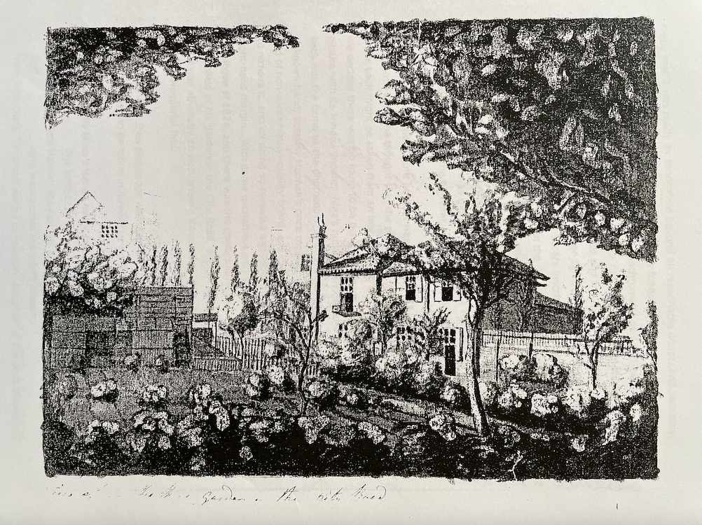
Firstly, that it was really by Bloomfield beyond all reasonable doubt, and secondly, that the bidding did not outstretch our available funds.
On viewing the ‘drawing’, in fact a monochromatic pen-and-wash watercolour (watercolours were referred to as ‘drawings’ in the nineteenth century) we found that it was badly mounted and framed. The fact that it was old framing but not original and had not been tampered with by dealers was a point in its favour, and showed a contemporary inscription presumably by Hannah which read ‘View of my Father’s Garden in the City Road’. The drawing is unsigned but on the reverse of the frame, an early photocopy, written in copperplate style handwriting, read: ‘Drawn by the Poet Robert Bloomfield’. This in itself offered little proof of authenticity and left us a little unsure as to whether or not to proceed. The time was getting closer and we waited with bated breath for the lot to come under the hammer, and we were pleasantly surprised by the amount we had to bid.
On getting the picture home it was evident the frame was of no real importance and Nina thought that the photocopy inscription which was sellotaped to the back might be taken from an inscription on the back of the drawing itself. We decided there was no harm to be done by removing the frame, leaving the picture with its window mount. Nina’s hunch was right, the inscription on the back was the same as the photocopy. It was in sepia ink and of a contemporary unknown hand, possibly Hannah’s once more. Since the window mount was poor and of non-conservation-quality board, and certainly of a later date, we decided to remove it, and on doing so revealed a number 189 written in pencil in the top right-hand margin. With some excitement we made a further check with the sale catalogue of 1824, and there was the confirmation that lot 188 was a drawing by Bloomfield of his garden in the City Road, and lot 189 was dittoed. The pencilled ‘189’ was obviously an auctioneer’s lot number of the Shefford sale in 1824. What a wonderful find!
An interview by John Goodridge with Alan and Nina on the subject of Bloomfield’s Aeolian harps can be found in Newsletter no.3.
His fancy’s left on every place,
The landscape seems his waking dream,
Where Hannah showed her rosy face
And leapt across the infant stream.
(From John Clare, ‘On being visited by Hannah, daughter of the poet Bloomfield’)
Poetry of Friendship III: Robert Bloomfield, John Clare, and the Labouring-Class Tradition
Tim Burke
A stand-alone copy of this article, including parts I, II and III, is available here.
In Newsletters 5 and 6, I argued that the poetry of friendship does not come easily or naturally to English labouring-class poets of the later eighteenth and early nineteenth century. The published verse of John Clare and Robert Bloomfield suggests that the possession of a genius for verse and a thirst for literary society tends, moreover, to isolate one from one’s peers: Clare’s poetic persona, like Bloomfield’s Giles in The Farmer’s Boy, finds friendships difficult to forge and sustain.
The joys and difficulties of friendship also concerned William Lane, a poet who worked in a variety of trades, most often as a paper-maker, in both Buckinghamshire and London. His career as a published poet (between 1792 and 1827) situates him close to Bloomfield, though more than twenty years in age separated them (Lane was born in 1744). Lane’s poem ‘On Mr B———d’s Indulging the Author with his Company, from his own House to Hackney, in the Fine Autumn of 1805’ (published in 1806: see Newsletter 6 for the full text) reveals that this did not prevent Lane feeling a deep attachment to the younger poet, whose talent he recognised as superior to his own, and whose friendship he valued deeply.
Lane’s poem opens with a hymn to the sights and sounds of the landscape beyond London’s city limits, focusing in particular on the linnets who sing to ‘congratulate each other’:
Linnets assembled in a tuneful throng,
Congratulate each other in their song.
The ardour which had occupy’d their breast
In former months, now calmly sooth’d to rest;
Each recogniz’d his loving, toiling mate,
And all the pleasing incidents relate ...
The poem ends by using the same vocabulary to cement Lane’s poetic friendship with Bloomfield: ‘Congratulations close the solemn scene; / While friendship glows in each poetic vein.’ Friendship, like poetic fervour, is ‘something indescribable!’, Lane claims, similarly ‘Incapable to fill the vast expanse, / That swells within the space of human thought’. At times in the poem, Bloomfield is treated with a species of reverence, and is even invested with a Christ-like ability to raise struggling poets, like Lane himself, from oblivion:
His condescension confidence commands;
He with a lib’ral heart, and out-stretch’d hands,
Revives the weakest, meanest of the throng,
That ever try’d to tell his thoughts in song. ...
The Friend advises and the Poet sings,
Soft as Favonius waves his balmy wings.
Unfortunately, we know nothing of Bloomfield’s feelings in return; if the poets corresponded, as seems likely, then none of their letters have survived. Bloomfield nowhere makes mention of Lane or his work, but it is not difficult to fathom how the friendship might have been sustained, since the two men had much in common beyond their labouring-class origins; both write extensively on the landscapes of their native regions, both were great admirers of Robert Burns, both were careful in their published writings to treat political themes – in which both were greatly interested – in only the most oblique ways. (In his autobiography, Fourscore Years of the Life of William Lane, Written by Himself, published in 1825, Lane recalled that an early poetic attempt was dismissed by a potential, unnamed patron as too radical, the work of a ‘Peter Petulant’. It is at this late stage in his career that this radical identity is first acknowledged, and he alludes to a large body of unpublished work, which takes ‘Peter Petulant’ as its nom-de-plume, though this has not survived.)
The friendship did not last. In two of his late poems, Lane’s reverential flatteries have disappeared or been redeployed for ironic purposes. ‘On Mount Parnassus’ (1822), strongly implies that Bloomfield’s work lacked Parnassian inspiration, and in a long poem titled ‘Solomon’ (1819) Lane appears to be responding to a perceived slight; at any rate, the references to Bloomfield as ‘friend’ and to his ‘gen’rous heart’ in the following extract have a pained and bitter irony.
Here B——m——d comes! well Bobby where’s your clue?
Sure there can be little left for you!
Did you not know your brother Burns had been
And mercilessly stript each rural scene,
Of field and fold, of cottage, grove and green?
Has diligently pick’d up every scrap
That lay unnotic’d in dame Nature’s lap?
Thus Denham, Pope and Thomson, Cowper, Burns,
They all have made their choice & serv’d their turns.
And where those nobler geniuses have been,
Sure little can remain for us to glean.
‘Us, us!’ methinks I hear my friend reply,
‘I did not know we claim’d affinity!’
Well, if I’ve claim’d somewhat beyond my due,
Sure, ’tis an honour to be kin to you!
And tho’ there is a great disparity;
Yet in some things, perhaps, we both agree;
Some family resemblance we retain;
We both are poor; but I am poor and vain!
But sure you’ll say, ‘there’s trifling enough;
I wish no more of that ungenial stuff.’
Dear friend, forbear; I have no ill intent,
I have not yet express’d the whole I meant:
Tho’ lit’rally, like me, you may be poor,
You much abound in intellectual store.
And were it possible, you would impart
(I know the feelings of your gen’rous heart)
Most gladly aught essential to my good;
And add to favours formerly bestow’d,
And much increase my debt of gratitude.
Tho’ great the portion, that falls to your share,
You modestly will say, I’ve nought to spare.
Some snarling critic says, ‘You’ll find enough,
We know you only deal in common stuff!’
Well friend, however small and mean my lot,
I’d wish with care, to husband what I’ve got.
My high-born, boasting brethren of the quill
Say, public good, excites, commands their skill!
I frankly must confess I write for gain,
‘Poor Man!’ you’ll say, ‘I fear your hopes are vain.’
Most telling of all, perhaps, is the absence of a single reference to Bloomfield in Lane’s autobiography, which appeared in 1825, the year after Bloomfield’s death. This is particularly surprising because Lane makes a compelling argument for labouring-class poets to be considered as a distinct school, though he condemns those who leave behind their fellow plebeians and aspire instead to the precincts of higher society: ‘We poor aspirants, of the plebeian tribe, are exposed to many disadvantages, not having attained that propriety of deportment and consistency of conduct acquired by education, self knowledge, habit, and experience; and frequently, by aiming to be something more than we ought to be, we render ourselves less than we might have been.’ Bloomfield perhaps was among those who, in Lane’s imagination, had aimed to be something more than he ‘ought’ to be. Perhaps only the discovery of some surviving correspondence will unravel the mystery of the friendship and falling out of Bloomfield and Lane.
Robert Bloomfield Society Meeting and AGM
As noted in the previous Newsletter, a meeting of the Robert Bloomfield Society will be held on Saturday 27 March at Nottingham Trent University (Clifton Campus, Clifton Lane, Nottingham). Professor John Goodridge will give a talk ‘An Englishman, a Welshman and a Scotsman; or Robert Bloomfield’s Radical Ascent of Pen-y-Vale’ on Bloomfield’s ascent of Sugarloaf mountain (see The Banks of Wye, II, lines 57-198).
The meeting will begin at 11.00 a.m. for 11.30. The venue is Room E l22: directions from Reception at the George Eliot Building. There will be a break for lunch, and the Society’s Annual General Meeting will be held in the early afternoon.
A reminder that a return visit to Bloomfield country in Suffolk is planned for the weekend of September 12-13. Enquiries to the Secretary, please.
Gentlemen and Alleys
The following is one of the ‘Anecdotes – Observations’ printed by Joseph Weston in Vol. II ofThe Remains of Robert Bloomfield (1824). Bloomfield’s employment for many years as a shoemaker in Bell Alley in the City of London allowed him, of course, to speak of ‘alleys’ from first-hand experience.
The sovereign contempt with which too many of the wealthy, and (I fear also) of the learned, look upon what are termed ‘the dregs of the people’, has often raised an equal contempt on my side, for that wealth, which engenders such thoughts of the immense distance, which those ‘dregs are from the surface’. The distance is not so great as the vain man flatters himself it is; I have known mechanics, who in general information, and in powers of intellect, have stood decidedly before thousands of their own rank. Is it not decidedly so among gentlemen – one clever fellow to a great many dull ones? I have heard more sense and truth in a tap room, than I have sometimes heard in better company, and there is nothing more striking to me, (and I have been placed so as to observe it,) than the total ignorance of the manner of living among the poor – that superficial and vague idea of who and what they are – of what they talk, and of what they think! Nothing to me has appeared more strange and disgusting, than finding amongst those ranks, raised above the mechanic and the labourer, such a mean opinion of the poor! Gentlemen, ‘tis true, seldom enter alleys, or see the domestic habits of those nests of human wretchedness: and they think, perhaps, that poverty must of necessity be accompanied with ignorance: but I find that a man who works for his living, and reads whatever he can catch –––– –––– ! [sic.] His whole soul is bent to that point; and if nature has given him a talent for observation, no situation can make him contemptible. If a great and noble mind is granted by nature to only one in a thousand – does she order that that one, shall not be born in an alley? That he must be rich, or great? Does nature, when she makes an orator, provide him a seat in the House of Commons? – A poor man with a strong mind will make himself respected in his circle, and make useful remarks on every occurrence. A rich man, with great native powers, will do the same. A poor man, with a moderate understanding, will remain at the bottom of his class. A rich man of inferior powers will do the same, in spite of all that can be done for him
Newsletter No. 8, Autumn 2004
We are fortunate to have a contribution to this issue of the Newsletter from our distinguished President Ronald Blythe. In his review, Ronald Blythe foregrounds the extent to which an oral tradition still survives in isolated incidents in Suffolk. A good deal of Robert Bloomfield’s best writing takes narrative form and draws heavily on popular ballad and the stories he would have heard repeated orally in the Suffolk rural community of his childhood and youth. But Bloomfield’s background was by no means bookless or illiterate. His mother was a village schoolmistress and his grandfather was a reader who lent the family books. In his writing ‘educated’ and popular or oral traditions intersect. He represents, both historically and personally, a crucially intermediate and displaced case.
In the sense that he became a published, and very successfully published, poet he was upwardly mobile; like John Clare, he gained introductions and formed connections of various kinds at levels of society which in the eighteenth and early nineteenth centuries would have been closed to a ‘farmer’s boy’ or a lowly shoemaker. However, this was inevitably accompanied by a certain experience of dislocation or what nowadays we might call ‘alienation’. He had, in a sense, become disqualified for the life of the country poor, could never go back, except in his imagination, except, that is, by writing, to the world he knew most intimately and to which he had once belonged. At the same time, he could never be fully assimilated into the culturally and socially elite class upon which he depended for patronage and readership. Not only does this help account for some of his dissatisfactions while he lived in London and for the bitterness of his final years at Shefford, where he had thought to find peace in rural retirement, but strikingly prefigures the kind of experience of uncertain identity which has often been seen as characteristic of the ‘modern’ writer.
There were, however, exceptions to Bloomfield’s uneasy relations with those of more prosperous, more formally educated or socially elevated background. In an article below, Philip Hoskins draws attention to his association later in his life with the clockmaker Thomas Inskip. Inskip might be categorised as, like the poet, an educated artisan, though he was a considerably more successful businessman and his financial circumstances were a good deal more stable. However, he clearly felt a sense of identification, though he regarded Bloomfield’s poetic abilities as greatly above his own – a ‘master hand to sweep the lyre’. Philip Hoskins gives an account of a recent find which valuably illuminates this important friendship.
Sounds and Songs of Suffolk
Ronald Blythe
Sounds and Songs of Suffolk
Compiled and performed by Ian Prettyman and David Woodward.
Presented by Oonagh Segrave-Daly
Old Pond Publishing, 104 Valley Road, Ipswich IP1 4PA. www.oldpond.com
My immediate reaction after listening to this tape was that every county should have one. It reveals a local dialect untouched by the fashionable interpretations of today’s folk-singing groups and one which allows one to hear both the ‘pure’ and the ‘broad’ versions of the Suffolk accent. It used to be a much admired feat to talk so broad that one was only intelligible to a native of Suffolk and David Woodward performs this in a funny modern (1963) poem called ‘Spring in the Air’. But the remainder of his examples are accurate and often beautiful readings of Suffolk writers, and especially Robert Bloomfield, whose The Farmer’s Boy used to be known by heart by country people. It was recited in village halls and pubs ‘by the yard’, as they used to say. David Woodward’s reading frees it from its literary bonds and the hearer catches some of the original spirit of this once immensely popular work. He understands the descriptions of fieldwork, the erotic interest of the youthful poet when women in the harvest field remove their gowns in order to have better freedom to rake and stook, and the nervousness between men and their employer. His voice is one which Bloomfield would have recognised.
The readings are spaced out over five centuries and start with Thomas Tusser, a musician-farmer who lived near John Constable’s Flatford Mill and whose proverbs are in use to this day, and end with a ‘homage’ poem to the county by Cecil Lay, a now almost forgotten writer who was a neighbour of Benjamin Britten. In-between there is a wonderful tale by George Crabbe about a hard-as-nails woman farmer which is perfectly told, and a grim story by H.W. Freeman about a young sailor cut down in his prime, not by war but venereal disease. It is related as a child sees it. David Woodward is, his proper Suffolk accent apart, a fine storyteller such as would have been heard in the region at one time – such as would have been listened to in Bloomfield’s Breckland. It is especially exciting to hear him speaking ‘horse language’ as a worker gets a harvest cart on the move.
Ian Prettyman’s songs possess a similar ‘group-free’ sound to Woodward’s voice and they break up the narrative often very movingly. Together they provide a truthful ‘Suffolk sound’ and one which needs to be heard by students of rural literature and lovers of the English countryside alike. This tape is a collector’s piece for those who want to come as close as possible to a county and its writers.
David Woodward is a member of the Robert Bloomfield Society.
Thomas Inskip: A Valediction for Robert Bloomfield
Philip Hoskins
Thomas Inskip’s poem ‘Coxhead Hill’ appears below.
The clockmaker Thomas Inskip, with another local friend the grocer Joseph Weston, is credited with persuading Robert Bloomfield to quit London in 1812 in favour of the Bedfordshire market town of Shefford. A telling expression of Thomas’s deep affection for Bloomfield has recently come to light in the form of his valedictory poem Coxhead Hill set in the environs of Shefford.
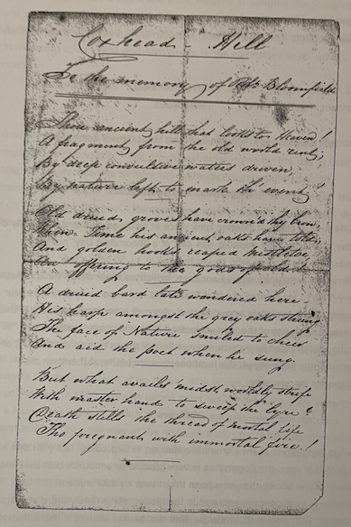
The poem, in precise but spidery handwriting on a thin slip of paper, had been used as a bookmark and was among books and papers left to Janet Ward of Ampthill by her late father. She recognised that the hard-to-read verses were worth looking into and sent them to the Headmaster of the Robert Bloomfield Middle School in Shefford who passed them on to the Society.
Coxhead Hill is written in a formal style and may not be poetry of a high order, but it certainly throws light on the admiration that Inskip felt for his literary friend, as well as his sorrow for his demise and the ill fortune that lay behind it. The hill after which the poem is titled is probably the knoll that lies a mile or so to the north of Shefford and is now known as Cockshott Hill. The scene described by the poem – the hill that he had ‘wander’d down … to die’, and the ‘yonder vale’ where ‘his relics lie’ – clearly points to the churchyard in Campton where Bloomfield is buried.
While Joseph Weston was to move away from Shefford though continuing to maintain links with the Bloomfields, Inskip’s relationship with the poet was longer-lasting. He was loyally active in support for the poet while he was alive, and afterwards in the interests of his family and estate. ‘Coxhead Hill’, dated 17th May 1849, was a culmination of a life in the shade of Bloomfield’s genius, a life which was to end less than four months later that year with his own sudden death in Brighton on 2nd September, believed to be caused by cholera. As poignant a visible legacy is the two adjacent headstones in Campton churchyard which Inskip had instituted: one dedicated to the poet and the other for Thomas and his wife.
Inskip was born at Kimbolton in 1780, the son of Edward and Mary Inskip. After, like Bloomfield, learning a highly-skilled craft in London, he set up as a clock and watchmaker at Ampthill Street in Shefford around 1813, a natural location as the town was still enjoying the fame as an important centre of clockmaking which it had acquired in the late seventeenth and early eighteenth centuries. His business was getting under way just as Bloomfield was settling into a new life in Shefford and trying to retrench financially. Two years later, by now a widower, Thomas married Isabelle Wright, who was to survive him.
His inquisitive mind led him to an interest in archaeology and he gleaned and searched out artefacts from ancient sites around Bedfordshire and Hertfordshire. His finds spanned periods from the Iron Age to the medieval and were exhibited locally while growing into a sizeable collection. Thomas was able to trade in coins and antiques in his shop as a sideline, but his achievement in the field of archaeology was recognized with the acquisition of this collection by what is known presently as the University of Cambridge Museum of Archaeology and Anthropology. There are no less than 40 entries describing Inskip’s trove in the museum’s on-line catalogue and we hope to say more about the collection in a future edition of the Newsletter.
Inskip’s obituary in the Bedford Times said that ‘although occasionally somewhat brusque in his address, and eccentric in habits, he was much esteemed’. We can only reflect with gratitude that without Janet Ward’s intervention the important literary find of ‘Coxhead Hill’, which throws light onto such an estimable key influence in Bloomfield’s life, could so easily have been consigned to oblivion.
References:
Bedfordshire Clock & Watchmakers 1352-1880 by Chris Pickford; Bedfordshire Historical Society Record; ISBN 0 85155 053 3
University of Cambridge Museum of Archaeology and Anthropology; Museum On-line Catalogue at http://www.cam.ac.uk
Coxhead Hill
To the memory of Robt Bloomfield
Thou ancient hill that looks to Heaven!
A fragment from the old world rent;
By deep convulsive waters driven,
By nature left to mark th’event!
Old druid groves have crown’d thy brow,
When Time his ancient oaks have told;
And golden hooks reaped mistletoe,
An offering to the gods of old!
A druid bard late wandered here –
His harp among the grey oaks strung:
The face of Nature smiled to cheer
And aid the poet when he sung.
But what avails midst worldly strife
With master hand to sweep the lyre?
Death stills the thread of mortal life
The fragments with immortal fire!
Fortune relentless to his kind,
Launch’d keener shaft for deeper sigh;
He left his rural harp behind,
And wander’d down the hill, – to die!
In yonder vale his relics lie, -
The wild winds o’er his green turf sway
And wild birds pour their rapture nigh
As if to charm their poet’s sleep.
He sleeps where leafy shadows wave,
Nature of sweetest bard bereft, -
Storm shall weep upon his grave,
Whilst Nature hath a shadow left!
May 17/49 [17th May, 1849]
Thos Inskip
Thomas Inskip also befriended and actively supported John Clare, especially in the Asylum years. He had wished to arrange a meeting between the two men he considered the two truest ‘pastoral’ poets England had produced and always regretted that this had not come about. Clare, as the poem below shows, warmed to Inskip’s appreciation of ‘the rural muse’.
All that the pasture hill or valley yields
The rural muse lays claim to as her dower,
The foliaged woods, the garniture of fields,
Grass-twisting whirlwind and the thunder-shower,
Flag-verging water and each loved wild flower
To all a sense and share of pleasure yields
And whiles away in joy each lonesome hour.
Such rambles, Inskip, as thy fancies choose,
Reading the volume under whitethorn bowers
And woodbine-twisted hedge besprent with dews,
May all thy life be one of happiness,
Pages to read and places to repose;
Thy musing mind loveth the green recess;
Go with the rural muse and seek the brier rose.
The following Bloomfield publications have appeared in the past eighteen months:
Bruce Graver, ‘Illustrating The Farmer’s Boy.’ Romanticism, Vol. 9, 2 (2003)
John Goodridge, ‘“Now Wenches, Listen, and Let Lovers Lie”: Women’s Storytelling in Bloomfield and Clare.’ The John Clare Society Journal, 22 (July 2003).
Simon J. White, ‘Rural Medicine: Robert Bloomfield’s “Good Tidings”‘. Romanticism, Vol. 9, 2 (2003).
Romanticism is published twice-yearly at the University of Edinburgh.
**********
Bloomfield Day and A.G.M.
The 2004 Annual General Meeting took place at Nottingham Trent University on Saturday 27 March. The meeting was part of a ‘Bloomfield Day’ hosted by Professor John Goodridge, who began the day at 11.30 with a talk, ‘An Englishman, a Welshman and a Scotsman; or Robert Bloomfield’s Radical Ascent of Pen-y-Vale’. He pointed out that Bloomfield had experienced his Wye tour and the ascent of the mountain very differently from all other such accounts of the time, especially those of the tourists looking for ‘picturesque’ excitements. In particular, he stressed how much interest Robert shows in, and the amount of research he has done about, the local people and culture, rather than the landscape for its own sake.
**********
Officers
Following discussions at the Committee Meeting in September last year and at the A.G.M this year, the Committee is very pleased to announce that the office of Secretary of the Society has now been taken over by Ed Fordham. Ed has experience in local government, and in the history of his family there are strong associations with Robert Bloomfield. This change has allowed a redistribution of roles among other officers which should facilitate the Society’s management and more aptly reflect the Society’s needs. Rodney Lines, who took over as Secretary when Philip Hoskins was obliged to stand down for health reasons and was previously Chairman of the John Clare Society, moves to the Chair. It has been decided that a formal role of Vice-Chair in our modestly-sized Society is superfluous. Bridget Keegan is to collaborate with John Goodridge in initiating a programme of publications by the Society, and a further collaboration will be that between Sam Ward, Ed Fordham and Philip Hoskins in bringing the Society’s website up to date, Simon Kövesi having regretfully stood down from this role and from the committee as a result of other commitments. In addition, the A.G.M. moved to co-opt Nina and Alan Grove to the committee as ex-officio members.
**********
2005 AGM
The next Annual General Meeting has been fixed for Saturday 19 March at Nottingham Trent University. The provisional programme for the day is that the meeting will be preceded by an informal conference/symposium at which Professor Bridget Keegan and other members of the Society will report on their work connected with the poet. Members may wish to make a note of this: details will be distributed nearer the date.
**********
Visit to Moyses Hall Museum and Euston Hall
For its late-summer event, on a day blessed by some of the finest weather of the summer, the Society visited Moyses Hall Museum at Bury St. Edmunds and Euston Hall. The museum houses the Aeolian Harp which, as the inscription on the lid shows, Robert Bloomfield made in 1808 for his patron Capel Lofft. It is the only known surviving example of his harps. Alan Grove, who with his wife Nina restored the harp in 1980, gave an expert short talk on the harp. We were then given a tour of the museum, which occupies a finely preserved and restored medieval building, by a member of the museum staff. We concluded our visit in front of Bloomfield’s ‘Old Oak Table’, pointing out to the museum staff that a nearby chair-cum-table was mistakenly labelled as being that table. There was a reading of excerpts from Robert’s poem with its opening lines
Friend of my peaceful days! substantial friend,
Whom wealth can never change, nor int’rest bend,
I love thee like a child. Thou wert to me
The dumb companion of my misery,
And oftner of my joys; – then as I spoke,
I shar’d thy sympathy, Old Heart of Oak!
In the afternoon we visited the home of his patron the Duke of Grafton, who paid Robert a pension of one shilling a day. The park with its ‘temple’ (a grand octagonal folly designed by William Kent in 1746) are still clearly identifiable from Robert’s lines in ‘Autumn’:
Where smiling Euston boasts her good Fitzroy,
Lord of pure alms, and gifts that wide extend;
The farmer’s patron, and the poor man’s friend:
Whose Mansion glitters with the eastern ray,
Whose elevated temple points the way,
O’er slopes and lawns, the park’s extensive pride...
(‘Fitzroy’ was the Grafton family name.) Some of the party also tracked down the plaque in the park wall which commemorates the dog Trouncer – ‘Poor faithful Trouncer!’ as Bloomfield called it, which after its death ‘In memory liv’d, and flow’d in rustic lays’ still bearing the inscription quoted by Bloomfield: ‘Foxes rejoice! here buried lies your foe!’.
Rodney Lines, who planned the event, is to be congratulated on the smooth running of a day which the members who attended found greatly stimulating and satisfying.
**********
The Life of a Labouring-Class Poet
Ed Fordham
John Clare. A biography. Jonathan Bate (London: Picador, 2003). ISBN 0 330 37106 1; £25.00
Most historical biographies outside of the Monarchy struggle for information on the childhood and youth of their subject, but this is not the case here. Bate has an excess of detail of the early life of Clare and he doesn’t hesitate to give us a full insight. Such depth is perhaps justified as the emergence of ‘peasant poets’ is attributed to their upbringing, but there is a sense that the story of Clare drags.
In his preface Bate does warn of such detail: ‘It is based on a thorough examination of all the available sources, both published and unpublished’. This is not a story of Clare’s life – that would be a shorter, more succinct volume. This is a scholarly work, awash with detail, references, and citations.
Clare is a difficult subject – limited education, illiterate parents (his judgement!), peasant class, low income, a tortured approach to his own personal life, illness finally defined as madness and the culmination in confinement. All these make it tricky to assess the character, but Bate wrestles his subject down. We are given point by point analysis, the step by step life of Clare is plotted and followed and nothing is missed.
Bate is clearly fascinated by his subject; his curiosity over Clare’s marriage and infidelities spill over but leave room for interpretation. It is without doubt that a new reading of the correspondence of advocate and friend Mrs. Eliza Emmerson will bring a new or different light to Clare’s personal life. The power of language can so mislead over time – great weight is placed on the letter which suggests Clare keeps a picture of Eliza in his drawers upstairs. In fact, nothing says the portrait is of Eliza herself …
Clare’s poetry is still fresh and strong, a freshness and strength deriving from his observations, his normality and, crucially, his localness. He speaks of what he sees and knows. All this at a time when the Peasant Poets were fashionable. London and society wanted to understand the people, but only at a superficial level. Clare does not achieve the success he strives for, he does not hear the praise he wants, and financial insecurity plagues him.
Much in this life relates to Bloomfield. There are interesting insights into the struggle faced by budding poets in the late eighteenth and early nineteenth centuries. The reliance on patronage, the absence of income and monetary reward, and crucially the lack of contact with fellow poets, meant development was isolated. All this magnifies Clare’s achievement, while explaining some of the controls and constraints imposed by editors, financial backers and publishers. It is important to remember that books were a luxury and literacy itself was limited. It is also clear that Bloomfield and Clare never met – any affinity they felt was as fellow poets – though Clare did meet Bloomfield’s daughter. Clare wanted similar success, unaware of the turbulence of the fame Bloomfield experienced.
This is without doubt the definitive work on Clare’s life. Not only will students turn to this volume but it will open Clare up to wider appreciation. Bate removes any doubt about the significance of Clare and makes a serious contribution to our understanding of the labouring-class and self-taught poets in the Romantic period, and of John Clare himself – our tortured friend. No-one interested in poets of the eighteenth and nineteenth centuries, Clare or Bloomfield should be without this biography.
Newsletter No. 9, Spring 2005
Robert Bloomfield Symposium and A.G.M.
A Robert Bloomfield Symposium and the 2005 Annual General Meeting took place at Nottingham Trent University on Saturday 19 March. There was a gratifying attendance and after Rodney Lines in the Chair had extended a welcome to participants, the morning session opened with a paper presented by Sam Ward, researcher at Nottingham Trent University, under the title “‘Your Information thankfully Rec’d”: Clare, Kirke White, and the Bloomfields’. Nottingham-born Henry Kirke White was a contemporary of the Bloomfield brothers Robert and Nathaniel and a volume of his poems was brought out only three years after The Farmer’s Boy by the same publisher, Vernor and Hood. The paper built upon and speculated about evidence that Kirke White admired Nathaniel’s poem on the enclosure of Honington Green, and that John Clare’s ‘Helpston Green’ seems to some extent indebted to this poem. Sam Ward noted that Clare owned extracts from poems by Nathaniel Bloomfield and had all Robert’s books except Banks of Wye. This paper was followed by an intriguing and informative presentation of ‘Images of Robert Bloomfield and his day’ by Ed Fordham and Rodney Lines.
After lunch the A.G.M. was held, minutes of which will be circulated to members. Professor Bridget Keegan then gave a paper on ‘Giles’s Duty: Poetry, Husbandry, Sustainablility’ in which she considered Bloomfield’s writing in relation to present ‘ecocritical’ approaches to literature, demonstrating both Robert’s emphasis upon working with and not just spectatorily admiring nature and his adoption of a third-person persona, ‘Giles’, as a sign of his conscious intervention as poet in the relationship of man and nature. Hugh Underhill ended the symposium with “‘The Broken Crutch”: Bloomfield and Narrative,’ which included a reading of a passage from the poem. Versions of both these papers are included in this newsletter.
The meeting was closed by our host, Professor John Goodridge, amongst whose remarks was the information that the Second Edition of The Selected Poems of Robert Bloomfield is scheduled to appear from Trent Books in September 2005. It will contain the whole of May Day with the Muses and the complete Book 3 of Banks of Wye. Thanks are due to John for hosting, and Rodney Lines and Ed Fordham for organizing, this very successful event.
Honorary Members and Visit to Robert Bloomfield Middle School
Canon Sally Fogden, Rector of Honington, and Adrian Rogers, Headmaster of Robert Bloomfield Middle School, Shefford, have been offered and have accepted Honorary Membership of the Society. This membership will continue in perpetuity for future incumbents of both positions.
Subsequent to his acceptance of this membership, Adrian Rogers kindly agreed to meet, on the morning of 14 April, three of the Society’s officers, Rodney Lines, Philip Hoskins and Hugh Underhill. He took them on a tour of the school, explained its history, and discussed with them ways in which the school’s connection with the Society could be strengthened. What is now the Robert Bloomfield Middle School was founded in 1938 as Shefford County Secondary School. It was renamed in 1953.
The officers were impressed by the courteous and friendly atmosphere of the school, the evidence of a good relationship with and strong support from the local community, and the obviously high academic standards. The outcome of the meeting was a proposal that the Society should fund an annual Robert Bloomfield English Prize awarded to a pupil selected by the English staff for achievement in the subject. This would take the form of a modest trophy and if possible a book relevant in some way to Robert Bloomfield, the headmaster having indicated that such awards provided a particular incentive to his students. It is hoped to arrange the award of the first Robert Bloomfield prize at the awards ceremony for 2005, which will take place on 20 July. The officers are most grateful to Adrian Rogers for his willingness to promote the school’s relationship with the Society and for giving up his time to make their visit so pleasant and productive.
Giles’s Duty: Poetry, Husbandry, Sustainability
Bridget Keegan
A revised version of this article is available here.
Over the past ten years, ‘ecocritical’ approaches to literature have been offering new and powerful ways of reading the poetry of Wordsworth, Coleridge, and, particularly, Clare [see Further Reading, below]. But, to date, environmental readings of Romantic poetry have neglected Bloomfield’s compelling writing about nature. It is the contention of the essay that I presented at this year’s AGM that such neglect must be rectified and Bloomfield should be recognized as an important environmental poet. His work exemplifies what might be called a ‘poetics of sustainability.’ Although much modern eco-criticism tends to privilege writing that focuses on untouched wildernesses, Bloomfield’s poetry, precisely because it is written on a working farm, is overtly mindful of the extent of the interconnections of human and nature, and of the mutual effects of one upon the other. The Farmer’s Boy perhaps more so than a poem like ‘Tintern Abbey’ or ‘Mont Blanc,’ provides the template for a more responsible human relationship to nature. It represents how humanity and nature are intimately interconnected, and in ways more material and more lasting than having nature serve as a handy mirror for the poet’s mind. In The Farmer’s Boy and his later work, Bloomfield makes an ultimately ethical argument about how we should respond to nature.
The Farmer’s Boy, as Donna Landry has argued, demonstrates a ‘georgic environmentalism.’ It advocates an ethic of stewardship, an ethos that is historically appropriate to the poem, and may still be worth consideration in our day. The stewardship model urges a considered and loving care for nature as it acknowledges human dependence upon nature and the need to conserve and preserve natural resources. The concept of sustainability is central to this environmental viewpoint. Within sustainable agriculture, there is the recognition that we must take from the land for our own survival; however, we must do so mindful of the limits of what we can take and aware of what we need to give back to continue to sustain ourselves and the earth.
For Bloomfield, the depiction of Mr. Austin’s farm argues for sustainable agriculture in so far as its practices are praised as both wise and successful. But Bloomfield is not Arthur Young (agricultural theorist and author (1741-1820)). To describe ‘realistically’ a successful farm is not to make a case for the particular ethical orientation necessary to promote sustainability and a care for the earth. Rather, by writing a poem, and writing the poem in the way that he does, Bloomfield provocatively uses the affective powers of poetic language to persuade and to model a responsible relationship to the non-human. The poem employs carefully chosen tones and discursive strategies to describe Giles’s performance of his duties. It thus calls us as readers to remember our duties to the earth.
In all of his poetry, Bloomfield calls upon nature and listens to its response. In The Farmer’s Boy, for example, Giles is shown experiencing his own poetic awakening as he heads to the fields in ‘Spring’:
And genuine transport in his bosom glow’d.
His own shrill matin join’d the various notes
Of Nature’s music, from a thousand throats:
The Blackbird strove with emulation sweet,
And Echo answered from her close retreat;
The sporting White-throat on some twig’s end borne,
Pour’d hymns to freedom and the rising morn;
Stopt in her song perchance the starting Thrush
Shook a white shower from the black-thorn bush,
Where dew-drops thick as early blossoms hung,
And trembled as the minstrel sweetly sung. (ll. 136-46)
Bloomfield, through Giles, listens to nature’s poetry and sees his own poetry as a response to it. Moreover, Giles whistles his accompaniment to the birds on his way to the duty of protecting the hens from the predation of the fox. As such, his imitation of this natural song is explicitly connected, through the sequence of events, to his literal act of animal husbandry.
Just as the ecologist studies the networks of life in a particular ecosystem, the farmer (and the ‘farmer’s boy’) observes his environment with a view toward the overall operations of ‘nature’s economy.’ Bloomfield’s poem illustrates and makes an affective argument about the maintenance of that economy. The poem’s ethical orientation is made clear near the end of the poem, in ‘Winter,’ in words placed into the farmer’s mouth and addressed to Giles. The farmer catechizes Giles in the virtues of proper husbandry:
‘Left ye your bleating charge, when day-light fled,
Near where the hay-stack lifts its snowy head?
Whose fence of bushy furze, so close and warm,
May stop the slanting bullets of the storm.
For, hark! it blows; a dark and dismal night:
Heaven guide the trav’ller’s fearful steps aright!
Now from the woods, mistrustful and sharp-ey’d,
The Fox in silent darkness seems to glide,
Stealing around us, list’ning as he goes,
If chance the Cock or stamm’ring Capon crows,
Or Goose, or nodding Duck, should darkling cry,
As if appriz’d of lurking danger nigh:
Destruction waits them, Giles, if e’er you fail
To bolt their doors against the driving gale.
Strew’d you (still mindful of the unshelter’d head)
Burdens of straw, the cattle’s welcome bed?
Thine heart should feel, what thou may’st hourly see,
That duty’s basis is humanity. (ll. 89-107)
The human responsibility of stewardship is clearly articulated in this passage. Giles’s responsibilities, his duties, have both a moral and practical justification; he learns them through experience, but as the farmer implies, he performs them not only because he is obligated to do so. Performing those duties should lead to an affective transformation that makes him actively desire to care for the animals.
As is clear from his manufacture of Aeolian harps and his interest in their function and form, as evidenced in his essay ‘Nature’s Music,’ Bloomfield’s desire to experience the poetry of nature was no mere metaphoric quest. To be sure, Bloomfield’s work does not demonstrate the more daring experiments of someone like Clare, who wrote poems that literally imitated birdsong. Yet Bloomfield’s poetry illustrates that to understand a particular ecosystem, to love it and care for it, one cannot take a partial view. One must dwell in that environment over the course of time and attempt to experience as much of it as possible. In Bloomfield’s poem, no flights of fancy transport the reader to exotic colonies. We see each scene, each season, not in isolation, but in its connection and relation to other parts. In our analysis of any particular passage, we must look at the passages before and after. Bloomfield’s poetry of nature is metonymic; it operates linguistically through connections and relations, not figurative substitutions. Such a language is well suited to Bloomfield’s argument in the poem, as sustainability asks us to see the connections between human actions and environmental outcomes.
The word ‘ecology’ was not invented when Robert Bloomfield wrote The Farmer’s Boy. Yet the central concept behind the modern science of ecology, the notion that ‘everything is connected to everything else’ on earth, is clearly in evidence in the poem. In the eighteenth century, according to historian Donald Worster, the term ‘nature’s economy’ was typically used to convey this concept. For Bloomfield, poetry is a part of nature’s economy, as much as corn or manure, or the farmer’s labour, or any other thing that sustains the productive and self-renewing interaction between the human and the non-human world. Poetry too sustains that economy. Bloomfield made this argument literal late in his career in the frame-tale for poems included in May Day with the Muses, where the good Sir Ambrose allows his tenant farmers to pay their rent in poetry. To be sure, it is fantasy to imagine a world in which land use and poetry are exchanged at equal value. But by asking us to imagine such a world, Bloomfield extends the argument he enacts in The Farmer’s Boy.
Bloomfield’s vision, throughout his career, was ever and always sensitive to and respectful of nature. That teaching these values remained important to him is underscored by the fact that at the time of his death he was collaborating with his son on the children’s book, The Bird and Insect’s Post-Office. Using delightful letters written in the voices of the animals, the text teaches children the joys of natural history and the pleasures of a close and loving attention to the natural world.
Bloomfield understood the complexities – both practical and ethical – of representing what the human relationship with nature was and could be. He is a true eco-poet. Bloomfield’s environmental aesthetic, like Clare’s, is evident in his desire to speak with not for nature, and his belief that despite the separation between the human and the natural there is an affective connection between the two realms. There is a voice in nature that communicates with us, would we but choose to listen. Bloomfield makes the point simply and powerfully in ‘The Flowers of the Mead’:
How much to be wish’d that the flowers of the mead
The pleasures of converse could yield;
And be to our bosoms, wherever we tread,
The reasoning sweets of the field!
But silent they stand, – yet in silence bestow,
What smiles, and what glances impart;
And give, every moment, Joy’s exquisite glow,
And the powerful throb of the heart.
Further Reading and Resources:
ASLE Online. The website for the Association for the Study of Literature and the Environment. Resources include bibliographies, course syllabi, and information about conferences and publishing devoted to nature writing. Available at: http://www.asle.umn.edu/
Bate, Jonathan. Romantic Ecology: Wordsworth and the Environmental Tradition. London: Routledge, 1991.
– The Song of the Earth. London: Picador, 2000.
Bate, Jonathan and Laurence Coupe, eds. The Green Studies Reader: From Romanticism to Ecocriticism. London: Routledge, 2000.
Buell, Lawrence. The Environmental Imagination: Thoreau, Nature Writing, and the Formation of American Culture. Cambridge, MA: Harvard UP, 1995.
Garrard, Greg. Ecocriticism. London: Routledge, 2004.
Glotfelty, C and Fromm, eds. The Ecocriticism Reader: Landmarks in Literary Ecology. London: University of Georgia Press, 1996.
Kroeber, Karl. Ecological Literary Criticism: Romantic Imagining and the Biology of Mind. New York: Columbia UP, 1994.
Landry, Donna. The Invention of the Countryside: Hunting, Walking, and Ecology in English Literature, 1671-1831. New York: Palgrave Macmillan, 2001.
McKusick, James C. Green Writing: Romanticism and Ecology. New York: Palgrave Macmillan, 2000.
Oerlemans, Onno. Romanticism and the Materiality of Nature. Toronto: University of Toronto Press, 2004.
Rigby, Kate. Topographies of the Sacred: The Poetics of Place in European Romanticism. Charlottesville and London: University of Virginia Press, 2004.
Schama, Simon. Landscape and Memory. New York: Vintage, 1995.
Thomas, Keith, Man and the Natural World, Changing Attitudes in England, 1500-1800. Penguin, 1984
Worster, Donald. Nature’s Economy: A History of Ecological Ideas. Cambridge: Cambridge UP, 1977.
Bridget Keegan is a Professor in the English Dept. of Creighton University, Nebraska.
‘The Broken Crutch’: Bloomfield and Narrative
Hugh Underhill
A stand-alone copy of this article is available here.
I want to begin by quoting John Goodridge in his essay “‘Now Wenches, Listen, and Let Lovers Lie”: Women’s Storytelling in Bloomfield and Clare’. ‘Clare and Bloomfield,’ he says, ‘focus on women’s skills as story-tellers able to command an audience, construct and dramatise a story, control pace and timing, character and speech, humour and pathos.’[1] In fact, a considerable proportion of Bloomfield’s work takes narrative form of one kind or another. Even The Farmer’s Boy could be said to be a version of narrative, the ur-narrative of the seasons, embedded in story-telling since agricultural communities began. And Bloomfield provides numerous anecdotal incidents within that enveloping narrative of the seasons.
A form of narrative which exerted a fascination for the eighteenth century was that of the ‘Life’. One thinks immediately of Johnson’s Lives of the Poets, as well as Boswell’s monumental, and seminal, Life of Johnson, and William Mason’s Life of Gray (the same William Mason quoted by Bloomfield in ‘Nature’s Music’). These had been anticipated in the seventeenth century by Izaac Walton’s Lives which included lives of Donne and Herbert. The ‘Life’, like the seasons, is a kind of universal narrative: birth, childhood, maturity, death are common to all. Alisdair Macintyre has written of ‘a narrative concept of selfhood’ which took hold in the eighteenth century. ‘I am what I may be taken by others to be in the course of living out a story that runs from my birth to my death.’ (After Virtue: a study in moral theory. London: 1981, p. 202). It seems to have become felt that to write a life was to confer and affirm, as it were, an identity, to make sense of a life. (I’ll recur to this point shortly.) Bloomfield’s contemporary the poet laureate Robert Southey was author of several lives, most pertinently, Lives and Works of the Uneducated Poets.[2] John Clare, of course, had proposed to write a biography of Bloomfield himself, though this was never accomplished. But it was an important matter to him: by writing Bloomfield’s life he could have legitimized a new kind of poetic identity, that of the individual of humble origins whose talent and achievement puts him on an equal footing with poets of more privileged background.
Bloomfield’s books sold after his death included works, among others, by Goldsmith, Gray, Pope, Milton, Cowper and Sterne, so he had exposure to plenty of written narrative. George Crabbe, also Bloomfield’s contemporary, was to seize upon the notion of the short story in verse which dramatizes key rites of passage in characters’ lives and develop it to a new sophistication. I know of no evidence that Crabbe read Bloomfield, but there seems to me a direct affinity. Their use of the narrative couplet, for example, has striking resemblances. However, I think the major source of Bloomfield’s interest in narrative is in a rural oral tradition, the telling of stories in a largely pre-literate rural community. The gossip and yarn-spinning to which Bloomfield in his boyhood must many times have sat and listened are vigorously and artfully reshaped in his own tales.
Just as with writing a ‘life’, there is an implicit assumption that to impose on existence a story-structure, to construct it as a formal narrative, is to make a kind of sense of it. Narrative implies the ‘arc’ of a story, a beginning, a middle and an end, the assembling of a series of connections which appear to make that overall sense (though what may be categorized in a general way as ‘postmodern’ narrative makes it its business to subvert that). What kind of sense of things, then, was Bloomfield concerned to establish? In part, perhaps, he unconsciously sought to retrieve poetry from a distancing of art from social life under the pressures of industrial and agricultural capitalism, a separation which became much accentuated as the romantic movement ran its course. Social life – the kindly intercourse which holds families and communities as well as the different orders of society together in reciprocally beneficial relationships – was what was meaningful for Bloomfield, and social life essentially involves a series of narratives, of which Bloomfield gives us fertile examples (the night ‘the ancient Dame’ of Fakenham fancied she was pursued by a ghost, the day the elderly couple Richard and Kate went to the fair, the chequered progress of Walter and Jane’s love and its slightly fairy-tale happy ending, the tales told by country folk in May Day with the Muses, and so on.) And since the social life that he knew was that by and large of the labouring and artisan classes, a dignifying of labour and the poor was intrinsic to his narrative project. Bloomfield did wish to be seen as a poet of equal status with the educated poets, those very poets who were instrumental in maintaining the discrimination between ‘high’ and ‘low’, ‘vulgar’ and ‘polite’. But if this looks like a contradiction, or perhaps better to say, a strain or tension in his work (andhis life), it is in fact one, it seems to me, that he never permitted to affect his steadiness of vision. ‘Let labour have its due!’, he says at the end of ‘Summer’, and I think that throughout his writing he is driven for all his unwillingness to openly endorse any radical position[3] by his knowledge that labour did not get its due, and by an acute sense of the nexus between ‘Gain’ (l.62) and the depredations wrought by an aggressive capitalism – ‘This scythe of desolation call’d “Reform”’, as he refers to it in this poem (1. 68) – upon the rural environment and rural communities as he had experienced them in his youth.
I’m sure he knew that struggle and confrontation were unavoidable in the real world in which he was writing. But I think that it was for him a sustaining imaginative-moral act to bear testimony to, and dramatically affirm, a cluster of values he felt had been lost. Above all, that meant the avoidance of conflict, because what had been lost – or so he felt, rightly or wrongly – was a community living in harmony. I would suggest that this is the overarching narrative, if I may put it so, of his entire poetical enterprise.
‘The Broken Crutch. A Tale’ presents itself precisely as a narrative which embodies this overarching narrative and those tensions between a conservative visioning of the social contract and a potentially radical re-visioning of it. It takes an ideal both of domestic relations – the solicitude of Peggy’s father and uncle for her welfare, her love and consideration for them – and of relations between the classes allowing a wealthy farmer to dispense hospitality to all and to take a humble servant-girl for his wife, and sets them against forms of violence and conflict threatening those ideals. The characters in the tale are at first sight, perhaps, stock figures: the brothers John and Gilbert Meldrum, the upright father and uncle protecting the family honour (‘nor bring the Meldrums into shame’ 1.14), Peggy the uncorrupted country girl (1.32), ‘Young Herbert Brooks’ looking suspiciously like the conventional libertine (at ll.35 ff., in fact, there is a lively characterization of precisely that conventional libertine). But as always in Bloomfield the freshness of presentation means that we experience the conventions as directly felt, the people as if known at first hand by the narrator. Country life and people are by no means, in their detailed presentation, either naively idealized, or morally generalized.
Peggy goes off as a servant to the young squire Herbert’s mansion armed with her father’s admonitions, despite which she is wooed and won by Herbert, and I want to take up the Tale at the point where she writes to her uncle with the news of the marriage proposal.
Then wrote to uncle Gilbert, joys, and fears,
And hope, and trust, and sprinkled all with tears.
Rous’d was the dormant spirit of the brave,
E’en lameness rose to succour and to save;
For, though they both rever’d young Herbert’s name,
And knew his unexceptionable fame;
And though the girl had honestly declar’d
Love’s first approaches, and their counsel shar’d,
Yet, that he truly meant to take for life
The poor and lowly Peggy for a wife;
Or, that she was not doom’d to be deceiv’d,
Was out of bounds: – it could not be believ’d. (lines 165-76)
Here, the narrative drama embodies Bloomfield’s perception of the way persons of the labouring class were confined and contained, if I may put it in this slightly complicated way, by a constructed state of consciousness. However fair the signs, the matching of social unequals is taken to be ‘out of bounds’, something unquestionable. This is a state of consciousness which here not only disallows the possibility of breaking out of their station, but equally disallows that full reciprocity between the classes which Bloomfield cherishes. These are tensions which Bloomfield sets about making his story dramatically and poetically enact. Up to this point, the pace of the narrative has been mostly even and leisurely, but now the verse-movement becomes hurried and agitated, the emphases more strident. At 1.167 (‘Rous’d was…’) the strongly inverted first foot gives a sense of action, of urgency (it’s an old trick in the management of iambics, but I think it fair to say Bloomfield is a master of it), ‘E’en lameness’ is a spondee giving strong emphasis, the alliterative echo of ‘Rous’d’ and ‘rose’ pushes the lines onward. These effects intensify at 1. 176 with the stressed first syllables of the lines, the repetition of ‘Go’, the heavy accents:
‘Go, Gilbert, save her; I, you know, am lame;
Go, brother, go, and save my child from shame.
Haste, and I’ll pray for your success the while,
‘Go, go;’ then bang’d his crutch upon the stile: –
It snapt. – E’en Gilbert trembled while he smote,
Then whipt the broken end beneath his coat;
‘Aye, aye, I’ll settle them; I’ll let them see
Who’s to be conqu’ror this time, I or he’
The father’s disability is dramatically offset by his active, virile brother. This sudden violent incident, the breaking of the crutch, on which the whole tale turns, is at once comic and dramatic: John’s burst of angry energy contrasts so abruptly with his ‘halting’ walk and the pain his lameness causes him. (The tale gathers a certain poignancy from our knowledge that Bloomfield’s own eldest son, as he tells his readers in the Dedication to Wild Flowers where the tale appeared, was lame). Bloomfield’s is not an idealizing vision; these characters are very human. As we see when, in the heat of the moment, Gilbert proposes, extraordinarily, an act of socially insubordinate violence. The description of his mutterings as ‘rebellious’ (1. 186) is, surely, considered and deliberate.
His impetuosity is given in the rapidity of the verse, in the stress on ‘enormous’, in the assonance of ‘o’, the alliteration of ‘b’ and ‘f’: there is a flailing, whirling movement:
Then off he set, and with enormous strides,
Rebellious mutterings and oaths besides,
O’er cloverfield and fallow, bank and briar,
Pursu’d the nearest cut, and fann’d the fire
That burnt within him. (lines 185-9)
How useful that elision ‘o’er’ is: ‘over’ would impede this onward impetus. Gilbert rushes on so, that he becomes breathless (ll. 191-2). Then comes this masterly piece of narrative deferral, the ‘stooping grandame’, contrastingly, and, we shall see, critically, slow-moving, of whom he asks the news. The old woman herself has a story to tell and wants to spin it out. Not a good idea in Bloomfield’s countryside, if you’re in a hurry, to enquire about news. ‘But let me rest’ she says at line 195. Rest was not so easily come by: what better recourse for half-an hour or so’s break as well as the ritual bonding of labouring-dass people than the spinning-out of a yam? At line 205 she insists on being given time to tell her tale out: ‘Aye, but have patience, man!’ It is, of course, the lack of patience, the lack of giving thought – we’re told at line 245 that Gilbert acts ‘without thought or dread – that threatens to dislocate the social harmony. But Gilbert once again loses patience, for which he is duly reproved. Older women are often a steadying influence in Bloomfield’s narratives, though you could say that at the same time she is provoking: this is another humanly unidealized character with her snuffbox and winding around the point. She’s in a long tradition, Chaucer or Shakespeare could have written her, or Crabbe in Bloomfield’s own time (perhaps more acidly).
The cow-boy Gilbert next questions is as frustrating in his way as the grandame. He can’t come to the point either, relishing the goings-on and merriment at the Hall but unable to give clear information. So Gilbert presses on. He arrives at the Hall, not only hospitably welcoming as ever, but evidently prepared for a great celebration; he refreshes himself with ale, but has no appetite to eat (line 233). Following the rush of his journey there are a few moments of stillness, but moments in which Gilbert is beset by agitation, anxieties and perplexity. The tension is broken with a lovely image:
Till with one mingled caw above his head,
Their gliding shadows o’er the court-yard spread,
The rooks by thousands rose: (lines 237-9)
and Gilbert starts into impetuous action again – ‘without thought or dread, The broad oak stair-case thunder’d with his tread;’ (lines 245-6) – his thundering movement delicately contrasted by the bridal party – ‘Light tript the party’. Gilbert’s unmannered and peremptory accosting of Peggy – ‘Now are you married, Peggy, yes or no?’ – is mildly reproached by Herbert: ‘you’re too rough this time’ (l. 259).
The tale is at this point given a new turn with information which has been held back till now (the gift for narrative timing): the serving-man Nathan had been sent early in the morning to bring Peggy’s father to the wedding, but had been delayed as a result of some celebratory over-indulgence. But this suspending of the action is once more broken as Nathan arrives with John Meldrum at this crucial moment. Peggy clings ‘like a dewy woodbine’ (line 290) round her father’s neck, and at last Gilbert comes ‘off his guard’ (line 291). His newly relaxed, generous movement – he ‘Loos’d the one loop that held his coat before,’ (line 293) – is given in that inverted foot and echoing ‘Loos’d … loop’, but yet again he acts without thought: with a noisy spondee, ‘Down thumpt the broken crutch upon the floor!’
This triggers a renewed narrative push, for now the reason for the broken crutch must be explained and misunderstandings sorted out. Gilbert is caught between his honest and natural impulses and his class-consciousness. He makes plain his rebellious intention, but even in doing so betrays himself trapped by the insidious psychology of power-relationships: ‘With this same cudgel … / An’ please you, Sir, I meant to knock you down’ (lines 321-2). The guardedness and ambiguity of that standard deference – ‘An’ please you, Sir …’ – slipped into this forthright declaration is at once comic and shocking. (Unless we read ‘An’ please you, Sir,’ as sarcastic, which I don’t think it possibly can be.) But as Bloomfield wrote in his Preface to Rural Tales, his poems treat of ‘village manners’, of supportive relationships within families, of the natural good-heartedness of these country people, the mutually beneficial relationships holding a community together. Such right feeling is what motivates Gilbert for all his roughness, and is not the preserve of the more socially refined. Herbert proceeds to eulogize Peggy for her possession of ‘nature’s untaught grace’, and the poem’s penultimate line, spoken by lame John Meldrum, has it that ‘Nature will speak, aye, just as Nature feels’. At the same time, Herbert has importantly acknowledged that there need be no social barriers if true feeling is not distorted by pride: he disdains ‘pride’s unfeeling claims’, we are told at 1. 154. It must be said that Bloomfield seems generally at ease with the notion of deference to social superiors where the social contract is properly upheld by them. The essential thrust, though, is a wanting to circumvent the inevitably uneasy relationships between the classes.
But there are tensions here which the poem exposes as not so readily resolvable. Bloomfield is tapping a kind of collective structure of feeling among rural communities. Herbert is what the social superior ought to be or can in some instances be; Bloomfield knows that selfishness, greed and pride are not vices confined to the gentry, and that the simple virtue imputed to Peggy is not universal among ordinary country folk. He knows that the celebratory account of social harmony which occupies the final 16 lines of his poem does not represent an actual state of affairs, and probably that it never had despite his ‘Remembrance’ of a kinder state of affairs. He wants to show good-heartedness and natural feeling going back and forth between the classes, that to be ‘brave good gentlemen’ is not the preserve of one class. But the italicized line-and-a half spoken by John Meldrum shortly before the poem’s conclusion
But from my soul I wish and wish again,
That brave good gentlemen would not disdain
The poor, because they’re poor: (369-71)
are isolated and stressed precisely because that is how it should be but is not: they are not just a forlorn plea, but in effect a protest. The tale’s energy, its buoyancy and onward narrative thrust, are generated by the way a socially transgressive act of violence is incipient in the action throughout; in an uneasy balance between what the poet refers to in himself as ‘warmth’ (1. 76), that is, resentment at the way ‘This scythe of desolation called Reform’ is a violation from above of the social contract, and a desire to dramatize the avoidance of violent confrontation. Abjuring cynicism or bitterness, Bloomfield everywhere wills his set of values in the face of what he knows to be a changed world – and acknowledges to be so by setting his tale in a kind of ‘fairy land’ (1. 60) of the past, its ‘melancholy fall’ emblematized by the felled trees and burnt-down mansion of ll. 57-90. Shifting everything into a vanished past is no more than a device for getting his values dramatized. But the stand he takes is, I think, if not an expression of political radicalism, one of what might be called moral radicalism.[4] Indeed, there is a kind of coded engagement of this moral radicalism with political actualities whether Bloomfield would have willed it or not, because his acquaintance at first hand with what it means for labour not to get its due enforces the connections even if without making them explicit.[5]
There are recurrent suggestions in his work that given that his world has changed, which at one level he accepts, he sanctions the desire for social mobility which was in fact one of the driving forces of those changes, and that when he pleads for labour to have its due, he is investing in a different order of social contract, one in which labour has rights, rather than depending upon the ‘kindness’ and practice of social responsibility implicit in an outmoded social contract.
Thus, contrary to that view of Bloomfield’s ‘artlessness’ which many of his admirers appear to have held, the apparent simplicity, even naivety, of a narrative such as ‘The Broken Crutch’ belies its sophisticated deployment of narrative resources, its skilful manipulation of the reader’s responses, and the complex eddies of thought and feeling which it dramatizes.
[1] The John Clare Society Journal, 22 (July 2003)
[2] ‘I do not introduce Robert Bloomfield here,’ Southey wrote, ‘because his poems are worthy of preservation separately, and in general collections; and because it is my intention one day to manifest at more length my respect for one whose talents were of no common standard, and whose character was of a man whose name was at one time so deservedly popular, should have been past [sic]in poverty, and perhaps shortened by distress, that distress having been brought on by no misconduct or imprudence of his own.’ It is perhaps worth noting that in common with the attitudes of his time, Southey feels he cannot let Bloomfield’s talents, despite his ‘respect’ for them, stand on their own, but must add a ritual commendation of his ‘character’. The story of a life invariably had to involve an exemplary moral narrative. However, Southey never wrote his Life of Bloomfield.
[3] In a correspondence of May 1804 Bloomfield told the radical bookseller Clio Rickman that he had ‘made a determination to be neutral in Politicks and Religion’ and that he ‘must and will be as private a Man as pastoral poetry will permit me’. See Newsletter No.4 (July 2002).
[4] This phrase is used by Clare MacDonald Shaw (ed. John Goodridge, The Independent Spirit: The John Clare Society and The Margaret Grainger Memorial Trust, 1994, p. 90) in discussing women poets read by John Clare.
[5] As I’ve argued elsewhere, it is a direct acquaintance which most of the canonical poets of more privileged social origins could not have.
Meetings and Events
A visit to Bloomfield’s London is planned for Thursday 15th September. We will meet at the British Library in Euston Road, St. Pancras, where Dr. Elizabeth James will introduce us to some of the Library’s Bloomfield manuscripts and other Bloomfield holdings. After a break for lunch, which can be bought at the Library’s restaurant or various coffee shops, the Society will proceed to the site of Robert’s house in the City Road. The day will end at Bell Alley, where Robert worked as a shoemaker. Members are invited to make a note of this date as well as that of the 2006 AGM, which was fixed at this year’s meeting for Saturday 25th March. Enquiries to the Secretary, please
Newsletter No. 10, Autumn 2005
Award to Student at Robert Bloomfield School
Philip Hoskins
The Society reached out to a young audience on the evening of Wednesday 20th July when for the first time its creative writing award was presented to a young student, Heather Saunders at the Robert Bloomfield Middle School Year 8 Leavers Evening, a showcase of the school year’s academic and personal achievements. The Oscar-style ceremony in which award winners were announced from a short list of selected nominations added excitement to a well-organized programme. The evening also celebrated the opening of the brand new school hall.
The school’s formal connection with the poet is relatively recent. It was only in 1953 that the Ministry of Education accepted the proposal by the Bedfordshire County Council that Shefford’s secondary school should be named the Robert Bloomfield County Secondary School. This key decision meant that the poet’s fame would be significantly promoted throughout the county, and the school’s wide rural catchment area centred on the town where Bloomfield spent his later years. As the number of pupils at the school has increased so more young people have been made aware of Robert’s achievements, largely through the conscious efforts of the school staff.
It seemed natural that the committee of the Robert Bloomfield Society should, as a part of its education aims, support the school by the sponsorship of an award. This decision followed an earlier visit to the school by Rodney Lines with members of the Society’s committee, when in discussion with the headteacher Adrian Rogers an agreement to fund the award – a gilt plate that the winner will retain for a year – was reached. It was no surprise to our committee representatives that the school comprising some 720 youngsters was ranked top middle school in Bedfordshire and that in its last OFSTED report it came out with flying colours. The report described its very good leadership under Adrian Rogers and high standards of teaching with pupils proud to belong to the school.
Finding Oneself as a Writer
Ronald Blythe
This is our President Ronald Blythe’s response to his presentation to the Chancellor of the University of Essex by the University’s public orator, Professor Jules Pretty at the conferral upon him of the degree of Doctor of the University on 12th July 2002. It is revealing about how Ronald Blythe found himself as a writer, and indeed how any writer is shaped. It could well describe some of Robert Bloomfield’s struggles in establishing himself as a poet.
Mr Mayor, Chancellor, fellow graduates, although I have listened with pleasure to the Public Orator’s wonderful outlining of my life and work, and to his generous recommendation of myself as worthy of the great honour of being made a doctor of this distinguished University, there is nevertheless something rather strange in hearing about an existence which is certainly my own, but which somehow I have never been told about to my face, as it were. Now and then I found myself wondering “Who can this interesting person be?” For the writer, more than any other individual, is usually only profiled by his readers and their view of who he is does not usually reach him. Critics, of course, have a go at his best and worst features over the years. To have written many books over many years makes it hard for me to have a clear self-portrait or CV for that matter. And so I am extremely moved by the kindness of the University and of Professor Pretty’s summing up of my life.
Some years ago I wrote an essay on a public orator. He was George Herbert, who was Public Orator of Cambridge University during the reign of James I. I had to show the poet at the extremes of his very brief career, because he died when he was 39, as both the voice of academic Cambridge and yet as the voice of a village priest. Two voices but a single tongue, two languages, Latin and an inspired English, but a single poetry.
Every writer eventually finds a language which is unique to himself, or tries to. This language is partially shaped by the times in which he lives, and his own experience of a thousand things, both great and small. Style comes into it, of course. First the style of the ·authors he loves and out of them an emergent style which he can call his own. Quite how the latter finds it way on to the page he will never really find out. But there it is, the way he or she writes – I am sure many people here today are going to be writers. Writers read, they read like gluttons really, never getting enough of another writer’s work, or now and then sometimes making do with just a little shelf of books, and I am thinking about people like Emily Dickinson. Writers like to think they read differently to nonwriters, but who is to say? What they certainly do is to come very close to another writer’s words, to take off from them, or sometimes to drown in them. I must have done some kind of writer-reading ever since boyhood, at first innocently and then knowingly.
My first teachers were not writers but the many artists who lived around here after the last war. It was they who made me take me take my nose out of a book and see and look around. They taught me not to be like the American critic who said, ‘They tell me that life is the thing, but I prefer reading.’ But there was no fear on this account because I was, I think by nature, a natural explorer and a dreamer and a watcher and I suppose some might say a spy. And of course a storyteller. When not reading and writing and connecting history with natural history, and the present with the past, I idled around in these painters’ studios in Suffolk and Essex and Norfolk. But eventually I gravitated towards three poets in particular who lived in this part of East Anglia, James Turner now dead, the Ulster poet W. R. Rodgers who came to live near here, and the South African poet R. N. Currey, who was the English master at Colchester Grammar School. These were another generation but they became my first friends in the opening world of literature. I was now living on the Suffolk coast writing novels and essays, and walking vast miles by myself by the sea, and encountering for the first time that solitude which is the fate or condition of being a writer. The other day I read an interview with Doris Lessing. She made no bones about her lovers long ago and the time and energy they took up. But what did she most love now, she was asked. ‘Oh, solitude, the blessed, beautiful solitude’, she said, as she was walking back to her Hampstead flat. Young writers have to make space for this needful solitude. Old writers are given it in all its limitless pleasure.
When I was on Desert Island Discs, Sue Lawley said, ’You were hard to do.’ This amazed me. I imagined that a longish list of titles would have made it easy for her. My books weren’t hard to read, nor easy to write. Should I perhaps be described as a regional writer, she wondered? Well, I thought, no more than Ben Okri. It is an achievement when a writer is able to make universal what is parochial to him. Thomas Hardy is, of course, the master of this transition.
I suppose I write out of an East Anglian landscape about people and things, or subjects rather, which are not obviously seen. The tensions produced between these home scenes and what is going on, or has gone on elsewhere interest me. I regard myself as a witness, an observer, and as I said – a spy. Or to be perfectly honest, writing has been such a usual activity for me these many years that when I attempt to say what has happened to me on an occasion like this, this lovely occasion, a voice inside me begins to ask, ‘Who is this person you are talking about?’
However, coming to receive a doctorate from the University of Essex does make me very happy: it is wonderfully good of you to give it to me. There will be all kinds of writers here today, for writers exist before their books, their novels, their poems, their journalism, their words on the page, and all I can say to them here is that there can be no escape from what you were born to do. And to wish you well. First find yourselves, then write. And tell the tale. So thank you very much indeed.
Work in Progress
We have long been in need of a scholarly edition of the Letters of Robert Bloomfield. The good news is that such a collection is now in preparation, edited by Tim Fulford, Lynda Pratt and John Goodridge. The editors would be delighted to hear of the whereabouts of any letters in private hands, or in hitherto unrecorded archival locations.
**********
John Lucas and John Goodridge are working on the text of the second edition of Robert Bloomfield, Selected Poems, forthcoming from Trent Editions. This will include the whole of ‘May Day’ and Book III of ‘Banks of Wye’.
**********
The book of essays on Bloomfield to which a number of members of the Society have contributed should come out from Bucknell University Press in early 2006. The title is Robert Bloomfield: Lyric, Class and the Romantic Canon.
**********
The committee is exploring the production of a CD containing readings of The Farmer’s Boy by David Woodward. The final format has not yet been decided but could potential partners or sponsors please get in touch with the Secretary, Ed Fordham.
Brother Bards: John Clare and Allan Cunningham on Bloomfield
Sam Ward
A stand-alone copy of this article is available here.
Although John Clare’s admiration for Robert Bloomfield is well known, his most detailed comments on Bloomfield’s passing date from a year after the event.[1] In letters to Thomas Inskip – on whom see Philip Hoskins’s article in Newsletter No. 8 (Autumn, 2004) – and Allan Cunningham Clare expressed his high regard for Bloomfield’s writing describing him to Inskip as: ‘the most original poet of the age & the greatest Pastoral Poet England ever gave birth to’.[2]
Clare’s letter to Allan Cunningham, written on 9 September 1824, is interesting not simply for his impassioned defence of Bloomfield, but also for the way in which he attempts to define an autonomous tradition of labouring-class writers. At the beginning of the letter Cunningham is addressed as ‘Brother Bard and Fellow Labourer’, adopting the salutation used by Bloomfield in his first letter to Clare of 25 July 1820.[3] Carol McGuirk has noted that Robert Burns’s ‘praise of other writers tends to focus on them as brothers in feeling rather than masters in style’ and this is somewhat similar to the strategy adopted here; suggesting that it was important for labouring-class writers to craft their own literary communities, whether real or imagined.[4]
Allan Cunningham was born in Dumfriesshire in 1784, and before completing his eleventh year at a local dame-school was apprenticed to his brother James, a stonemason. Like other labouring-class writers, he used his leisure hours to read all the books he could lay his hands on, and he took a keen interest in popular songs and stories.
As a child, Cunningham heard Burns read, and he recalled in later life that Burns’s ‘looks and his voice cannot well be forgotten; … while I write this I behold him as distinctly as I did ·when I stood at my father’s knee, and heard the bard repeat his ‘Tam o’ Shanter’.[5] On Burns’s death, Cunningham went to pay his respects to the body and walked in the poet’s funeral procession. The young Cunningham greatly admired other Scottish writers, including James Hogg and Sir Walter Scott. At about the age of eighteen, he and his brother James travelled especially to see Hogg, who later was to become a firm friend; and, when Scott’s Marmion appeared in 1808, Cunningham allegedly walked to Edinburgh and back in the hope of catching a glimpse of the author.
Cunningham contributed most of the pieces collected in R. H. Cromek’s Remains of Nithsdale and Galloway Song (1810). When he initially showed his poems to Cromek they were dismissed as poor imitations of Burns, so he proceeded to disguise them as old songs, at which point they were accepted for inclusion. The book was well received, and while Cunningham’s role was underplayed by Cromek, many realised that the ballads were in fact his.
At the time of his correspondence with Clare, Cunningham worked in the studio of the sculptor Francis Chantrey, a post he held until Chantrey’s death in 1841. Like Clare, Cunningham was a regular contributor to the London Magazine, whose proprietors were his and Clare’s publishers, John Taylor and James Hessey.[6] An unsigned article by Cunningham on ‘Robert Burns and Lord Byron’ had recently featured in the August number of the London, and his assessment of these two poets may have influenced Clare’s remarks on Bloomfield and Byron in his letter of 9 September. Cunningham suggests: ‘One was a peasant and the other was a peer; but Nature is a great leveller, and makes amends for the injuries of fortune by the richness of her benefactions; the genius of Burns raised him to a level with the nobles of the land; by nature if not by birth he was the peer of Byron’.[7] Clare’s letter to Cunningham has been justly remarked, but is worth reprinting here. Regrettably the original no longer appears to be extant, and so the text which follows is based on that given by Frederick Martin in his 1865 Life of Clare:
Brother Bard and Fellow Labourer,
I beg your acceptance according to promise of this autograph of our English Theocritus, Bloomfield. He is in my opinion our best Pastoral Poet. His ‘Broken Crutch’, ‘Richard and Kate’, &c. are inimitable and above praise. Crabbe writes about the peasantry as much like the Magistrate as the Poet. He is determined to show you their worst side; and, as to their simple pleasures and pastoral feelings, he knows little or nothing about them compared to the other, who not only lived amongst them, but felt and shared the pastoral pleasures with peasantry of whom he sung. I had promised that I would visit him this summer at Shefford, but death went before me. He was a warm-hearted friend and an amiable man. His later poems show that his best days were by. His ‘Remains’ are very trifling, but these have nothing to do with his former fame. I never forgave Lord Byron’s sneering mention of him in the ‘English Bards and Scotch Reviewers’; but, never, mind, he has left a genius behind him that will live as late as his lordship’s; and, though he was but a ‘Cobler’, his poems will meet posterity as green and growing on the bosom of English nature and the muses as those of the Peer. I could hazard a higher opinion for truth, but this is enough. Titles and distinctions of pride have long been stript of their dignity by the levellers in genius; at least they have been convinced that the one is not a certain copyright or inheritance of the other. I should suppose, friend Allan, that ‘The Ettrick Shepherd’ [James Hogg] ‘The Nithsdale Mason’ [Cunningham himself] and ‘The Northamptonshire Peasant’ [Clare], are looked upon as intruders and stray cattle in the fields of the Muses (forgive the classification), and I have no doubt but our reception in that Pinfold of his lordship’s ‘English bards’ would have been as far short of a compliment as Bloomfield’s. Well, never mind, we will do our best, and as we never went to Oxford or Cambridge, we have no Latin and Greek to boast of, and no bad translations to hazard (whatever Our poems may be), and that’s one comfort on our side. I have talked enough on this string, so I will trouble you a little with something else. I can scarcely tell you how I am, for I keep getting a little better and a little worse, and remaining at last just as I were. I was very bad this morning, but have recovered this evening as I generally do, and I really fear that I shall never entirely overset it. I have written to Hessey for Dr. Darling’s assistance again today, and I have desired him to forward this letter to you. Drop a line to say that you receive it, and give my kind remembrances to your better half, Mrs Cunningham. I will try your patience no longer with this gossip, so believe me, friend Allan,
Your hearty friend and well-wisher, John Clare[8]
Cunningham replied on the 23 September, however, his letter did not reach Clare until over a month later. The reason for this was given in the following postscript added by Cunningham to the address sheet:
23 Oct- 1824.
My dear friend
I detained this letter after I had written it with the hope of finding a frank but none of those fortunate few[9] came who have the power of enabling poor poets to communicate without paying for it. We ought to petition the Govt to have the correspondence of ‘plackless’ devils of Bards sent free.
Yours ever
AC
Cunningham’s description of himself and Clare as ‘plackless [i.e. penniless] devils’ takes a term from Burns’s ‘Scotch Drink’ (l. 93); and his wish that their correspondence be sent free is based on the fact that unless the postage was accounted for in advance, the recipient had to pay for it on receipt of the letter. This was frequently bemoaned by Clare, especially when the correspondence was unasked for. So, for instance, his comment made in late February the following year: ‘Received a letter in ryhme from a John Pooley a very dull fooley who ran me 10d further in debt as I had not money to pay the postage I have often botherd with these poet pretenders… pilfered…the rhymes…’[10]
According to an entry in his Journal, Clare received Cunningham’s letter on 26 October, and it can be found today among the letters to Clare held by the British Library.[11] – It was given almost in full in J. L. Cherry’s Life and Remains of John Clare (1873), but does not appear to have been printed in full before.[12]
The address sheet is marked ‘Missent to Northampton’ and is postmarked 4 EVEN 4 22 OC 1824.
Dear Clare, I thank you much for Bloomfields note and as much for your own kind letter. I agree with you in the praise which you have given to his verse. That he has living life about his productions there can be little doubt, he trusts too much to nature and to truth to be a fleeting favorite and he will be long in the highway where fame dispenses her favours.
I have often felt indignant at the insulting way his name has been introduced both by critics and poets. To scorn him because of the humility of his origins or his trade is ridiculous any where and most of all here where so many of our gentles and nobles are come from the clods of the valley. Learned men make many mistakes about the value of learning: I conceive it is chiefly valuable to a man of genius in enabling him to wield his energies with greater readiness or with better effect. But learning though a polisher and refiner is not the creator – it may be the mould out of which genius stamps its coin but it is not the gold itself. If education reveals to us the stores of ancient learning and can do as none such revelation[13] has been made by other means – can we hope to know Dante better if we know Italian Homer better if we know Greek or Virgil more intimately if we had learned Latin; than Cary does or Cowper and Dryden did. When Homer travelled to see Men and manners Froissart to seek historic story[14] and Shakespeare came to London to see many-coloured life they stopt at no colleges and the learning they acquired from looking on human life renders the works as wonderful as if they had attended college and been whipt from [?] to [? ].[15]
I am glad to hear that you are a little better – Keep up your heart and sing only when you feel the internal impulse and you will add something to our Poetry more lasting than any of the Peasant Bards of Old England have done yet.
I remain dear Clare your very faithful friend
Allan Cunningham
27 Belgrave Place, 23 Sep’ 1824
[1] This is almost certainly due to gaps in the surviving correspondence.
[2] Letter to Thomas Inskip,10 August 1824. The Letters of John Clare, ed. Mark Storey (Oxford: Clarendon Press, 1985), p. 300.
[3] British Library MS, Eg. 2245, fol. 186r.
[4] Carol McGuirk, Robert Burns and the Sentimental Era (East Linton: Tuckwell Press, 1997), p. 54. For useful thoughts on this issue see part one of Tim Burke’s ‘The Poetry of Friendship: Robert Bloomfield, John Clare, and the Labouring-Class Tradition’, RBNS, No. 5 (March, 2003), 3-6, and John Goodridge, ‘John Clare and Eighteenth Century Poetry: Pomfret, Cunningham, Bloomfield’, The Eighteenth Century: Theory and Interpretation, 42, no. 3 (Fall 2001), 264-78.
[5] Biographical information is based on the entry for Cunningham in the DNB.
[6] The firm had published Cunningham’s Sir Marmaduke Maxwell, A Dramatic Poem; The Mermaid of Galloway; The Legend of Richard Faulder; and Twenty Scottish Songs in 1822. For Clare’s opinion of this collection see his letter to Hessey of 8 April that year (Letters, pp. 236-37).
[7] ‘Robert Burns and Lord Byron’, London Magazine (August 1824), 1st Series, X, 117. Cunningham also describes Byron’s funeral in a manner which warrants comparison with Clare’s own in his autobiographical prose.
[8] Letters of John Clare, pp. 302-303.
[9] A transcription of this letter made in the 1860s or 70s has ‘fellows’ for ‘few’, but if this is the case the end of the word has been concealed by the hinge to which the original is now attached in Eg. 2246.
[10] John Clare By Himself, ed. Eric Robinson and David Powell (Ashington and Manchester: Mid-NAG and Carcanet, 1996), p. 214. Deletions reinstated.
[11] By Himself, p. 189. Clare’s editors suggest that only the transcript of the letter survives, although this is incorrect. The letter is Eg. 2246, fols 391v-392r. 16.
[12] J. L. Cherry, The Life and Remains of John Clare, the Northamptonshire Peasant Poet, Including Letters from His Friends and Contemporaries, Extracts from His Diary, Prose Fragments, Old Ballads (Collected by Clare) (London, 1873), pp. 73-74. I have checked my transcription against the parts included by Cherry and against the transcription of the letter in Northampton MS N62 used by him.
[13] ‘revelation’ is based on the transcription given in NMS N62, though I am not entirely persuaded by this reading.
[14] The transcription in NMS N62 has ‘histories & story’.
[15] I have been unable to decipher these two words in either the original or the transcript.
Meetings and Events
In the last Newsletter a planned visit to ‘Bloomfield’s London’ on September 15 was announced. The committee regrets that it proved not possible to organize this visit at that particular time. It is now ·proposed for Monday 22nd May, 2006, meeting at the British Library at 11 a.m.
**********
A reminder that the 2006 Bloomfield Day and Annual General Meeting will take place on Saturday 25 March at Nottingham Trent University. The principal speaker will be Professor Tim Fulford. Details of both these events will be circulated to members nearer the dates.
Officers
Much to our regret, our founding Treasurer and Membership Secretary Tim Burke has found it necessary to resign his post. He is moving with his family away from the UK. It is difficult to express our appreciation of and gratitude for the work Tim has done in setting up a firm basis for the Society’s membership. He is one of those without whom the Society could hardly have achieved its successful lift-off. We wish him every success in his new venture.Newsletter No. 11, Summer 2006
Bloomfield Day and A.G.M.
The annual Bloomfield Day and General Meeting was held on Saturday 25th March at Nottingham Trent University. The previously announced speaker, Professor Tim Fulford, was unfortunately not able to be present, but members attending had the pleasure of listening to part of the newly recorded reading of Bloomfield poems by Society member David Woodward. His account of the quandaries presented to a reader by some of the rhyming in The Farmer’s Boy appears later in this newsletter. The poems are spoken in authentic Suffolk accent and the reading gave rise to an appreciative and wide-ranging discussion. Among the points made, it was felt that these excellent readings could well be supplemented by a further CD of Bloomfield-associated music which might include fiddle and Aeolian harp, and the meeting asked the Committee to explore possibilities.
Following this discussion, Hugh Underhill gave a talk on the theme of ‘Lovers’ Journeys’ in poems by three poets who were roughly contemporary, George Crabbe, Robert Bloomfield and John Clare. The three poems considered and compared were Crabbe’s verse Tale ‘A Lover’s Journey’, Bloomfield’s ‘Walter and Jane’ and Clare’s ‘I’ve run the furlongs to thy door’, focusing upon the way in which in each poem a lover’s perceptions of the landscape and objects he passes on the way to visit his loved one are imposed by his subjective mood, and the issues this raises in relation to a general transitional movement from eighteenth-century objectivity and faith in reason towards the Romantics’ interest in ‘feeling’ and the need to trust it.
The 2006 Annual General Meeting took place after lunch. Among matters discussed was the need to reallocate the posts of certain of the Society’s officers. Details are given below.
The date of the 2007 Bloomfield Day and A.G.M. was fixed for the 24th March. It is hoped that Professor Fulford will be available to speak on this occasion.
Officers
As noted above, the A.G.M. addressed shortcomings in the administration of the Society and the need for certain changes among the Officers. The resignation of Tim Burke as Treasurer and Membership Secretary of the Society was reported in the last Newsletter. The meeting agreed that the vacant post should now be filled by Angela Underhill. Enquiries about subscriptions and membership should be directed as indicated in the list of Officers on the inside front cover. Subscription Renewal forms for 2006 are enclosed with this Newsletter.
Secondly, greater promptness and continuity in the circulation of notices, agenda and minutes is required, as specified in the constitution. The Society is most grateful for significant initiatives undertaken by Ed Fordham while occupying the office of Secretary, but his heavy commitments make it appropriate for him to fulfil a different role in the Society henceforward. Our founding Secretary Philip Hoskins, who was obliged to resign for health reasons in 2003, indicated that he is now well enough to resume the office. Ed Fordham will remain as a valued committee member.
The Triumph of the Gander and Power Relations in The Farmer’s Boy
Simon J. White
A stand-alone copy of this article is available here.
The gander was and still is renowned for its truculence and aggression. Bloomfield’s account of his confrontations with other farmyard animals is mock-heroic:
At the colt’s footlock [he] takes his daring hold:
There, serpent like, escapes a dreadful blow;
And straight attacks a poor defenceless cow;
Each booby Goose th’unworthy strife enjoys,
And hails his prowess with redoubled noise.
Then back he stalks, of self-importance full,
Seizes the shaggy foretop of the Bull,
Till whirl’d aloft he falls: a timely check,
Enough to dislocate his worthless neck:
For lo! of old, he boasts an honour’d wound;
Behold that broken wing that trails the ground!
(Selected Poems, ed. Goodridge and Lucas, p. 18)
The poet signals quite explicitly that the gander’s posturing should be taken as an allegory for human behaviour that is similarly disruptive: ‘Thus fools and bravoes kindred pranks pursue; / As savage quite, and oft as fatal too.’ (FB, p. 18). On one level this is an attempt to foreground the kind of motivational factors which often lay behind human folly and ambition. But the allegory could also refer to the human chaos that the poet would have confronted in the London of the late eighteenth century. Even admirers of London such as Samuel Johnson acknowledged that life in the great city could be unpleasant: ‘Here malice, rapine, accident, conspire, / And now a rabble rages, now a fire;/ Their ambush here relentless ruffians lay, / And here the fell attorney prowls for prey; / Here falling houses thunder on your head, / And here a female atheist talks you dead’.[1] This is clearly a rhetorically exaggerated representation of life in the metropolis, but the multifarious spectacle of Georgian London shocked foreign visitors such as Cesar de Saussure.[2]
Beyond these general connections, the career of the gander might have had more personal resonances for Bloomfield. As a shoemaker he would have been exposed to the libertine culture which increasingly dominated artisan trades in late eighteenth-century London, partly in response to the threat presented by female and ‘dishonourable’ labour.[3] In his autobiography Francis Place offers a first-hand account of the ‘debauchery’ of young apprentices during the seventeen-eighties and -nineties.[4] It was not only apprentices who behaved in this way; the journeymen did too, both before and after marriage. This kind of behaviour placed families under a great deal of pressure: ‘drinking … sapped funds needed for family life, and it [often] engendered violence.’[5] Bloomfield would have had little time for behaviour which had such a destructive effect upon the family. The need for loving and responsible conduct within the family was a recurrent theme in his later poetry. In the context of the posturing and theatrical gander, the interesting aspect of this culture of resistance is the fact that it ‘focused on consumption and display, spending rather than saving, excess rather than control.’[6] In other words, the honourable apprentices and journeymen, like the gander, felt their position to be insecure, and created the impression, through immoderate and intemperate display, that they still possessed their lost power and dominance.
Bloomfield’s poetry offers a particular point of view in respect of relations within the family. In ‘Summer’ the ‘Harvest-home’ passage provides an insight into his views upon community relations. The feast described in the poem is about shared joy at the successful completion of the most significant task in the agricultural year. It is also about reasserting and cementing relations between the different orders of the rural community. The ‘Harvest-home’ scene represents a kind of equality within inequality: ‘Here once a year Distinction low’rs its crest, / The master, servant, and the merry guest, / Are equal all’ (FB, p. 20). Of course, the power imbalance is still there, but it is veiled by a sense of camaraderie in a common cause. The easy way in which ‘Pride gave place to mirth’ (FB, p. 20) in the conduct of the higher orders, also suggests that relations between all members of the community were marked by an inclusive cordiality. Ironically the ‘unaffected Freedom’ (FB, p. 21) of older rural communities, and Bloomfield does locate his feast specifically in the past, was dependent upon the presence and acceptance by all of certain constraints. It depended upon a network of customary responsibilities and duties which placed a burden of responsibility of some kind upon everyone.
The word ‘Custom’ is ordinarily an indicator of the durability of social relations, but these lines reveal the way in which customs are marked by both strength and fragility. If the attitudes which underpin them decline new ‘tyrant customs’, underpinned by different attitudes, such as a trend towards greater ‘refinement’ amongst farmers, can replace the older customs. By ‘tyrant customs’ Bloomfield probably has in mind the world view of those that had risen to prominence through the accumulation of capital, mainly in London, but also in the other expanding cities.[7]
This is just one more way in which London casts its dark shadow over the rural labouring poor. A quarter of a century later William Cobbett would remark of the same development: farm-houses which were formerly the ‘scene of plain manners and plentiful living’ had become cluttered with ‘decanters, … glasses, the “dinner set” of crockery ware, and all just in the true stock-jobber style.’[8] He would also attribute the poverty of the labouring poor to this change, and locate its source in the ‘stock-jobber’s’ London suburbs.
In a way the posturing of the gander finds an echo too in the behaviour of the new kind of farmer because their ‘Refinement’ is just another kind of display. Like the gander’s behaviour it is destructive; it ‘Destroys life’s intercourse; the social plan / That rank to rank cements, as man to man’ (FB, p. 21). Here ‘intercourse’ has a double meaning because it refers to communication between individuals and between social groupings within communities. Like the gander’s antics, the social ‘display’ of this new kind of farmer is of questionable value: ‘Wealth flows around him, Fashion lordly reigns; / Yet poverty is his, and mental pains’ (FB, p. 21). In destroying the wider community, the empty posturing also destroys the individuals within it. The labourer is impoverished materially to a greater extent than the farmer, but the farmer’s mental and social impoverishment is greater. The labourer is left with the vestiges of an admittedly declining popular culture, while the farmer is left isolated in his new Parlour’.[9]
[1] Samuel Johnson, ‘London’ in The Oxford Authors Samuel Johnson, ed. Donald Greene (Oxford and New York: Oxford University Press, 1984), p. 2.
[2] Richard B. Schwartz, Daily Life in Johnson’s London (Madison and London: University of Wisconsin Press, 1983), p. 167, p. 169. See also Max Byrd, London Transformed: Images of the City in the Eighteenth Century (New Haven and London: Yale University Press, 1978), pp. 80-118.
[3] Anna Clark, The Struggle for the Breeches: Gender and the Making of the British Working Class (Berkeley, Los Angeles and London: University of California Press, 1995), pp. 30-34. Bloomfield himself, who had never been apprenticed, became involved in a dispute about the employment of workers who had learned the trade without undertaking an apprenticeship. Both his employer and George Bloomfield were threatened with prosecution by the Committee of the Lawful Crafts, and Bloomfield had to return to Suffolk for a time as a consequence of fears about his personal safety.
[4] The Autobiography of Francis Place , ed. Mary Thale (Cambridge: Cambridge University Press, 1972), p. 75.
[5] Clark, The Struggle for the Breeches , p. 30.
[6] Clark, The Struggle for the Breeches , p. 31.
[7] Douglas Hay and Nicholas Rogers, Eighteenth Century English Society: Shuttles and Swords (Oxford and New York: Oxford University Press, 1997), p. 85.
[8] William Cobbett, Rural Rides, ed. George Woodcock (Harmondsworth: Penguin Books, 1967), p. 226 and p. 227.
[9] Cobbett, Rural Rides, p. 227.
Simon White’s book Robert Bloomfield: Romanticism and the Poetry of Community will appear from Ashgate Publishing in 2007.
Perfect Rhyming
David Woodward
I have read – I think it was in an article by Professor John Goodridge – that Robert Bloomfield was almost always perfect in his rhyming. As some members of the Society may know, I hope soon to record a reading of The Farmer’s Boy for a C.D. To this end I have been reading the poem repeatedly. How am I to pronounce these two lines?
Stopt in her song perchance the starting Thrush
Shook a white shower from the blackthorn bush.
Were thrush’ and ‘bush’ perfect rhymes? Yes, I think they were in Robert’s speech. In his East Anglian accent the rhyming would have sounded exact. Another East Anglian poet, James Blythe, rhymes the same sounds in his poem ‘May in Marshland’. In his case, ‘bush’ rhymes with ‘lush’:
Oh, the cows are a’going down to mash
The meader grass is growin’ thick and lush
For the summer is a’comin
And the bees are all a hummin
Round the gooseberries a formin on the bush.
A further example in The Farmer’s Boy is where the poet makes ‘spreads’ and meads’ rhyme. In our East Anglian voice spreads is always ‘spreeds’. There is a lovely tale that has gone around the Waveney Valley for many years. An elderly farm-worker had retired but spent some time helping in the farm vegetable garden. He used to have a tea-time break (fourses, pronounced farses) by going to the farm-house where the cook would hand him through the kitchen window a mug of tea and hot toast and dripping. He always requested the cook to give him a good dollop of dripping and ‘spreed it up all round the headlands’. (Headland: another dialect word for the edges of a field or meadow.) He wanted his dripping right up to the crusts.
So I think I will pronounce spreads as ‘spreeds” in
What though abundance round his dwelling spreads
Though ever moist his self-improving meads
But I’m baffled by
Inglorious victory! Ye Cheshire meads
On Severn flow’ry dales where Plenty treads.
I have never heard ‘treads’ spoken as ‘treeds’ in our local accent, and I have decided to use the usual modern pronunciation here. However, both I and the Newsletter editor would be glad to hear from any member who may be able to throw light on this.
David Woodward is author of larn yourself Silly Suffolk: a comprehensive guide to the Suffolk dialect (Nostalgia Publications: Toftwood, Dereham, Norfolk, 1997). The recording of his reading of The Farmer’s Boy has now been completed. There will be two CDs, the second containing readings of ‘The Horkey’. ‘The Man in the Moon’ and ‘Winter Song’. Information about availability and cost of the discs will be circulated to members as soon as possible.
Byron on the Bloomfields
In his English Bards and Scotch Reviewers (1809) Byron wrote dismissively if with characteristic wit of ‘cobbler’ poets and others of the artisan or labouring classes who had been encouraged by patrons to venture into poetry. In a note to the lines given below he refers to ‘Capel Lofft, Esq., the Maecenas of shoemakers, and preface-writer-general to distressed versemen; a kind of gratis accoucheur to those who wish to be delivered of rhyme, but do not know how to bring forth’; and in another, to ‘Nathaniel Bloomfield’s ode, elegy, or whatever he or anyone else chooses to call it, on the enclosures of Honington Green.’
Robert’s brother Nat’s An Essay on War and Elegy on the Enclosure of Honington Green were published by Hurst, Vernor and Hood in 1803, with a lengthy, perhaps somewhat misjudged, Preface by Capel Lofft. William Gifford (1786-1826) was a shoemaker’s apprentice who was sent to Oxford with the aid of a patron and subsequently wrote satires and edited the Quarterly Review. He favoured old-fashioned styles of poetry and detested radicals such as Byron. St. Crispin is, of course, the patron saint of shoemakers.
When some brisk youth, the tenant of a stall,
Employs a pen less pointed than his awl,
Leaves his snug shop, forsakes his store of shoes,
St. Crispin quits and cobbles for the muse,
Heavens! How the vulgar stare! How crowds applaud!
How ladies read, and literati laud:
If chance some wicked wag should pass his jest
Tis sheer ill-nature – don’t the world know best?
Genius must guide when wits admire the rhyme,
And Capel Lofft declares ’tis quite sublime.
Hear, then, ye happy sons of needless trade!
Swains! quit the plough, resign the useless spade!
Lo! Burns and Bloomfield, nay, a greater far,
Gifford was born beneath an adverse star,
Forsake the labours of a servile state,
Stemm’d the rude storm, and triumph’d over fate:
Then why no more? If Phoebus smiled on you,
Bloomfield! Why not on brother Nathan too?
Him too the mania, not the muse, has seized;
Not inspiration, but a mind diseased:
And now no boor can seek his last abode,
No common be enclosed without an ode.
Oh! Since increased refinement deigns to smile
On Britain’s sons and bless our genial isle,
Let poesy go forth, pervade the whole,
Alike the rustic, and mechanic soul!
Ye tuneful cobblers! Still your notes prolong,
Compose at once a slipper and a song:
So shall the fair your handywork peruse,
Your sonnets sure shall please – perhaps your shoes. (lines 765-794)
Two years later, in his ‘Hints from Horace’ (not published ill 1831, posthumously), Byron returned to the attack. ‘Doric’ here has the sense of ‘rustic’.
Then leave, ye wise, the lyre’s precarious chords
To muse-mad baronets, or madder lords,
Or country Crispins, now grown somewhat stale,
Twin Doric minstrels, drunk with Doric ale!
Hark to those notes, narcotically soft!
The cobbler-laureats sing to Capel Lofft! (lines 729–734)
Byron’s notes to these lines are even more waspishly satirical. He does ‘beg Nathaniel’s pardon: he is not a cobbler; it is a tailor…’, but goes on: ‘…these Arcadians … send out their native nonsense without the smallest alloy, and leave all the shoes and small clothes in the parish unrepaired, to patch up Elegies on Enclosures and Paeans to Gunpowder. Sitting on a shopboard, they describe fields of battle, when the only blood they ever saw was shed from the finger; and an Essay on War is produced by the ninth part of a “poet.”’ (This refers to lines in Alexander Pope’s The Dunciad in which he pillories the one-time poet laureate, Nahum Tate.) Of Capel Lofft, Byron writes: ‘This well-meaning gentleman has spoiled some excellent shoemakers, and been accessary [sic] to the poetical undoing of many of the industrious poor. Nathanial Bloomfield and his brother Bobby have set all Somersetshire singing: nor has the malady confined itself to one county.’ Byron has either confused Somersetshire with Suffolk, or is deliberately playing on the stock association of Somerset with country yokels.
Visit to Bloomfield’s London
The committee very much regrets that the visit to Bloomtield’s London proposed for May 22nd once again had to be postponed. The British Library was unable to accommodate us on that day for an introduction to the Robert Bloomfield holdings. However, arrangements have now been completed for the visit to take place on Monday 18th September. Further information is enclosed with this Newsletter.
To Parents
Trifling as the subject may appear to the young and the thoughtless, when a new book for children is introduced into a family, it becomes the indispensable duty of parents, or their superintendants of the nursery, to know its contents. If it inculcates false principles, the pride of wealth, or, more particularly, superstition, let them, for mercy’s sake, use it for lighting the fire. This notion I imbibed forty years ago from my mother, a village school-mistress, and I have never found cause to alter this early opinion. It was then I was taught to prize ‘Goody Two-Shoes’, for its excellent hits at superstition; and to read the ‘History of Jack the Giant-killer’ for the purpose of remarking its abominable absurdities.
Robert Bloomfield’s Preface to The History of Little Davy’s New Hat (1815)
Newsletter No. 12, Autumn 2006
I am glad to be able to include in this issue of the Newsletter an interesting letter written after Robert’s death by his brother George. Despite its length (a ‘long, long scrawl’, as George himself calls it), and occasional slight incoherence, I have reproduced the entire letter, with the omission only of one short passage and some quoted verse, since it helps invaluably to fill in the picture of the Bloomfield brothers’ interweaving fortunes and sense of filial loyalty.
The letter emphasizes how keenly George and his brothers felt their lack of education, and at the same time confirms our sense of the family’s range and love of reading, despite the obstacles and discouragement put in the way of those of such humble origins. This is a topic to which the letter constantly recurs, bearing the marks of the brothers’ bitter experience of publication and the difficulties suffered by them as labouring-class poets in the face of fashion and society. Their need for patronage is made abundantly evident, yet the patronising interference of social superiors, and of the power of the ‘great world’, as George phrases it, over lesser beings, are resented. The letter warns against the charms of poetry as a distraction, particularly for those of humble station, from ‘business’, and recounts how what George considers the ‘folly’ of aspects of his own life, especially that of a man in his station pursuing learning, has left him near-destitute in old age. George writes of the efforts he made to encourage Robert and of the correspondence he undertook on Robert’s behalf. He speaks of Robert’s generosity and of his ‘private friendship and assistance’ having ‘amply paid’ for the pains taken. The brothers are represented as shy and modest men, ‘fond of books’ but with a dislike of ‘strange faces’. There are mentions, perhaps unintentionally comic, of Nat and Isaac’s experiments with mechanical inventions, characteristic of the enthusiasm at this time for entrepreneurship and innovation, and George scatters through his letter much useful detail about Robert’s contacts, reading and self-education.
Visit to the British Library
A small party of members gathered on the morning of 18 September in the entrance hall of the British Library. We were met by a member of the Library’s staff, Kevin Mehmet, who provided us with a brief but expert account of the history of the Library, its functioning and purposes, and the architecture of the present building. His concise and informative talk was of value even to those of us familiar with the Library. We were then taken behind the scenes, a privilege not usually available to the public, to a remarkable display of Robert Bloomfield materials specially prepared by Dr. Elizabeth James. This was meticulously arranged and labelled, and Dr. James proceeded to ply us with details of the Barry Bloomfield Collection and many of the individual items on display.
She began by explaining the role of Barry Bloomfield, whose official title was Director of Collections Development. He had started off with responsibilities for the Indian Office and Asian collections, but this eventually extended to virtually everything. His first love was book collecting. His interest in developing the Bloomfield Collection was linked with his Bloomfield family connection, but the collection took many years to build up. It comprises the majority of the Bloomfield editions published but not all. The editions on display today were mainly from the poet’s lifetime, although there were also some Victorian editions and a few examples of the Library’s large collection of Bloomfield manuscripts.
Dr. James outlined the complex problem of Bloomfield editions, with the poems published in many different styles and formats. Another factor influencing acquisition is that copyright laws were not effectively enforced until the middle of the nineteenth century. Having so many editions enables the Library to compare them and identify differences and inaccuracies.
Barry always tried to acquire editions in their original bindings. In Bloomfield’s time it was customary to print books in temporary card boards leaving the purchaser to select his own permanent binding. This allows us to see how the books were presented to the market, but it also means that they are now extremely fragile. The books in the Bloomfield collection are cased in specially made blue boxes and carry a distinctive bookplate designed by Paul Nash which commemorates Barry’s name.
At the close of Dr. James’s presentation members of the party were given generous opportunity to examine the items on display. Before leaving, our profound thanks, and our appreciation of the effort, time and professional expertise Dr. James had devoted to us, were expressed. It was generally felt that we had enjoyed an outstanding event and were privileged to have been present.
The walk to Bloomfield London sites which had been proposed to follow the Library visit was declined for various reasons by several of the party. Consequently, the decision was taken to postpone this part of the programme to another occasion.
The Editor is grateful to Philip Hoskins for the summary, incorporated above, of his recording of Dr. James’s talk.
Robert Bloomfield School Prizegiving
The annual prizegiving at the Robert Bloomfield Middle School, Shefford, took place on 18 July. Unfortunately, Rodney Lines, who was to attend on behalf of the Society, was at the last minute unable to do so. As a result, no representative of the Society was present. However, the award of The Bloomfield Society Creative Writing Prize was made to Year 8 student Jamie Roe. We are pleased that in addition to presenting her with the gilt plate which passes to each year’s winner, the Society was able to fund an inscribed pen for her to keep. It is hoped to repeat this form of prize every year, and also that on the next occasion a Society member will be present to make the award.
Unpublished Bloomfield Correspondence: George Bloomfield to W. Weston
This is a transcript of a letter from George Bloomfield to a youthful recipient whose identity it has not so far been possible to confirm but who seems likely to have been the son of Robert’s Shefford friend and patron Joseph Weston. It is written after Robert’s death, and is undated. Since George says, however, that he is threescore and ten, and he was born in 1758, it was presumably written in 1828, or thereabouts if George is using ‘threescore and ten’ as a generalized indication of advanced age. Robert had died in 1823.
The transcript has been prepared by Professor Tim Fulford and I would like to thank both him and Suffolk Record Office, Bury St Edmunds, where the manuscript is held, for permission to reproduce it. The text is reproduced without amendment of George’s punctuation or spelling. Where (?) occurs, the manuscript is not clear.
Example draws, where precept fails
And Sermons are less read then Tales
——————Prior[1]
To Mr W Weston
To say I was pleased with the lines you affixed to Banks of Wye is but faintly to express my feelings. I am astonished at the command of language you possess when I consider your youth; Oh how grateful you ought to be to providence and to your excelant parents for your Education!! – the mastery of language may be acquired by Education but the poets art canot be taught. the allusions, Similes, and all the decorations of poetical composition, can be employd but by a few, I could point out 6 or 7 very happy poetical strokes in that little poem (or at least such they appear to me) but I forbear, to you I am an entire stranger you know not but I may wish to praise, whereas at 3 score and 10 I feel it my Duty to deal in truth only you have heard no doubt that grey-beards will prate, I claim the priviledge of a Grey-beard to be allow’d to advise you to be very cautious how you indulge your bent for poetical composition I said above how grateful you ought to be to your parents for your Education &c your gratitude ought to evince itself, in your steady, active, persute of Business, I mean you ought not to let the charms of poesy allure you from what we terms the main chance I should not have been guilty of such freedom had I not been quite certain you are possessed of poetical powers, The marks are upon you
[Here George quotes Nat Bloomfield’s poem ‘The proverbs of Threescore Affectionately Addrest to Eighteen’][2]
If Sir, you are tired, (as I dare say you are) of this string of proverbs, I beg leave to say I am not going any farther that way; the proverbs are from a small voloumn of poems, which that excelant man the late Mr Peter Gedge so kindly printed at his own risque for my Brother Nathaniel; proverbs are very good things in their way, example is better than precept, a few particulars of my misspent life I think may warn you, in early life like you I had a great bent for reading son had read all the Books my mother possessed, it happened we had a relation in the village who had many Books and who took great delight in putting me forward as he termed it.[3] there were at that time but two papers read herebouts (ie) the Norwich, and the Ipswich, By constantly seeing the Ipswich I could talk very finely about the first William Pit, Beckford, Sawbridge, John Wilks, Dr Price Dr Priestly[4] &c &c In short by the time I was 12 my vanity was wonderously improved, I was apprenticed at Thetford, where I saw both the papers, and still indulged my favorite persuit, reading all the Books I could borrow, I started off to London as soon as my time came out, and happening to lodge in a family who were Wesleyan Methodists I went with them to their class and prayer meetings &c, I read every thing I could borrow on the subject of Religion, but curiosity led me to the Tabernacle to hear Witfields preachers roaring away under the banners of Calvin, tearing the poor Arminians[5] to rags, and often went to hear the famous Mr Romaine[6] on the same side, Thus I was plunging in the mists and fogs of Theological controversy, still vainly conceipting I should find it all out, but an accident happened that at once set me free, the Will-with-a-wisp I had been chasing so many years, I now gave up, French America had been conquered, and the great Dispute about the Quebeck Bill came on, I saw 30000 Methodists march in martial order under Lord Gordon, to try to over awe parliament[7] &c this intolerant army disgusted me so I bad adieu to Methodism of both sorts for ever, – but it happened I was soon provided with a new Hobby-horse My mother brought up to London my Little Brother Bob, who proved an excelant companion to me 10 years younger then my self, yet with as strong prejudices against strange faces as I had my self, as fond of Books, but his turn for poetry displayed it self, poets corner in our Dayly paper caught his attention, to indulge him I bought Milton, Thompson, Young[8] and many other standard works in short bought, hired, or borrowed every thing I could to oblige him took him to the Theatres when I had money to the debating societys at Coachmakers Hall[9] &c &c to Give him a chance of learning to accent words &c but neither my self or him ever learned a rule of grammer, five happy years I spent with him in Garrets in London, I was on the wrong side 30 when I left him, and had not acquired money enough to bring me down to Bury I stopd at safron Walden a fortnite, to raise a wind to bring me home, I had now spent the prime of Life from 21 to 30 without bettering my condition, but I hit upon an excelant Expedient to improve my Fortune, I soon met a young woman, we were soon married lived some years in Skiners Lane, had 7 children, the times were then good and we might have still got on as well as our neighbours, but my Brothers in London were poets and both so shy, Nat never came down attal, have not been here these 40 years, Bob came two or three times but slip’d about so slyly few persons saw him, and to this they were both extreemly averse to corrisponding except with me, so that their great friends here applied to me for any information they wish’d for, as those great men the poets were so extreemly cautious of commiting themselves on paper I actualy became a corrispondant of Sir C Bunbury Esq and 20 others, I do not mean that these persons wrote to me (they did not except Mr Lofft) but were often sending queries by servants &c which as I never would be seen if I could help it caused me to lose much time and slur a great deal of beautiful white paper, the private friendship and assistance I received from Bob amply paid me for my loss of time &c. and when they prevailed on me to be a Master (in that which is now Mrs Armstrong the Hatters shop) my Sheepishness increased so as to inspissate me, And besides it pleased God to take from me my Excelant wife. The Gentlemen the Great friends of my Brothers rais’d a subscription for me Mr Wright (once Recorder of this Borough) set it of,) Mr Gedge, Sir C Bunbury, Capel Lofft Esq &c joind raised upwards of 30 pounds, still I was wretched, I had lost all my fireside comforts It was soon discovered I was going to marry a young widow with 4 childrens!! And as I had 5 we had 9 to begin the world with, this imprudent step displeased some of my great friends, But Mr Smith Sir C Bunbury Mr gedge and many others continued to be my Benefactors while they lived. In my second marriage I have had 3 children, have (to late) been brought to my senses, In the 20 years that have past in my present marriage I have seen most of my Brothers great friends removed by Death, it is one of the great trials of those who live to be old, they outlive those they love, and those who were able and wiling to help in Time of Need, were that excelant man Mr Gedge or William Smith Esq Sir C Bunbury, Sir C Davers, Capel Lofft &c now alive old age would to me be disarmed of half its terrors here are none to blame or to accuse, it is the lot of all the aged to out live their friends and benefactors, I am truly grateful to kind providence, still Charles Bloomfield Esq lives, a man who did not know there were such a man as me in the world, who on my Brothers account have been my sure protector and unwearied Benifactor for 30 years, but for whome I must have been in a workhouse years ago; still how precarious is my condition should providence remove him though Mr Hasted and other Gentlemen have often befriended me yet I am at this instant, a poor feeble old man allmost wholly dependant on Charity, I have Grand Children whom I dearly love often nearly naked and bearfoot, and have not the power to help them, And my Self in rags, for though I have clothes given me, my necessities send them up the Spout, my natural Shyness makes me a recluse, for squallid poverty soon pall the beholder, and seldom do I have a second visit from any one unless it is Brassy faced pretenders to poesy, such as David Service Ned Preston &c &c who would willingly count up how many patches are on my old Breeches (I beg pardon) I mean my Small Clothes,—now had I been wise and prudent from 21 to 50 should I have been a poor Despicable being, without the power of Doing any creature on Earth good!!! I had continued health have not kep’d my bed for a single Day since I had the small pox in the year 1765, was a good workman and found the greatest friendship from the wealthy part of society, my present distresses arrise entirely from my too Eager persute of information, and what did the little superficial knowledge I glanend [sic] avail!! True it gratified my vanity while my Brothers lived, with whom I corrisponded, (I never had other confidential correspondents than them) Isaac & Bob are Dead, And poor Nat is near my own Age, O how Vain appears to me, now the waste of time, the waste of Lifes prime, to acquire that which is altogether Vanity my mind I hope is prepared, though I feel my present Dificulties like a man, I hope to bear them like a man, I have no other motive for mentioning them, then as a hint to you to avoid my folly, I am aware of the Dissimilarity of the cases, you have been bless’d with education and have a prospect of succeeding to property I was born at the bottom of the Lowest class of Society, Fielding had a curious Classification of Society, but allowed it was Dificult to Distinguish the top of the bottom class, from the bottom of the top class,[10] but it is easy to see the distinctions in our case I have stated that I have no doubt on my mind but you are one of those Distinguished minds that we disignate a Genius I suppose because we have no terme that will suit better, thus we call Cowper A Genius, he could not succeed as a man of Business, But shone as A Genius, And I believe it is a prevelent oppinion that men of Genius are impressed by their leading propensity into a particular persute, disregarding their worldly Interest For instance Lord Byron declares my unfortunate Brother Nat A madman, now there is doubtless A cause for this malignant Censure of his Lordship, Nat published but one small Voloumn wheras David Service, Ned Preston, Holloway, Pratt and 50 others he never censured at all though they published 10 times more than Nat did of whom he thus express himself:
‘Him to the mania not the muse has seized
Not inspiration, but a Mind diseased’[11]
As Nat wrote against Common Stealing at the time that Common Stealing was all the rage, how probable it is, the Noble Lords family had acquired some Thousand Acres of Land in that way, consequently he would feel sore, Honington Green is most severe upon Common Stealers,[12] Miss Quince the Lady who enclosed the spot into her Croft actually scolded Mr Lofft,[13] Mr P Gedge &c she actually placed the Voloumn on the little shelf in the Garden privy to be reserved for very particular occasions would it not naturally appear to the Noble Lord a species of Madness in Nat to censure so unmercifully that very Class of Society who alone possess wealth sufficient to promote the sale of such works of amusement to any extent!!—Again poor Nat blundered upon a theme which led him to advocate the Christian Religion!!—In his Culprit, p 51
Yea who the lore of distant climes
Canvas, latent truth to find
Who hail our philosophic times
And mans emancipated mind
Oh ye who boast the enlightened age
Who boast your right of thinking free,
If ere ye learn the lessons sage,
Taught in Afflictions school like me,
Should you ere a Culprit stand,
You’ll wish mankind all christians then,
If ere you raise the Culprits hand
You’l wish the Jurors Christian Men
Culprit p 51[14]
Now though this is I think perfectly in character in the Culprit, yet certain it is, that to plead for any particular Religion is esteemed Vulgarism A publication that treats of the veneration and piety that all Religions profess to feel towards the Supreme Being, will pass, but not when we Descend to particulars,—
Some 60 years ago there were some young Gentlemen at Oxford who used to meet in their Rooms to expound the Scriptures to sing psalms and pray &c &c, now this seems to be harmless But they were admonished by the higher powers in the university to desist, and as they still continued the practice they were at length expelled the university!!! This gave rise to A well written pamphlet called The Shaver – this shews that the great World disapprove of what they sneeringly terme enthusiasm Methodism &c &c,[15] There is a Gentleman at Great Gransden Vicarage, the Revd Mr Plumtre, This Gentleman took unusual pains to get my Brother Bob from his retirement thinking that his health sufferd from the confinement: he often wrote to Bob inviting him to Gransden, take his house for his home and breath the free Air &c &c but could not draw him from Shefford, but Mr P is not a man that give up a point easily, he visited Bob at Shefford and contrived to get a promise from him to go to Gransden &c poor Bob though in bad health and low spirits felt compeld to keep his word, he visited Mr P, and while he staid slep’d in a chamber at the corner of the house, Mr P gave the Room the name of poets corner and it will long retain that Name, Bobs account of this parson to me is that he appear’d to him, the best of human beings, so kind, so charitable, and so every way amiable, I was charmed with the picture, when Bob sent me Mr Ps works to read, I thought them excelant, I mentioned them to a gentleman who has been very kind to me, the gentleman seemd to be acurately acquainted with the parsons manner of writing, But said he is a Methodist, told me a tale, of how a young Cantab affronted Mr P, Mr Plumtre sent a voloumn of his, as a present to a young student at Cambridge, the youth instead of reading it wrote on the cover and returned it unopened
There was an Old Woman Lived at Dundee
Out of her B-tt-m there grew a plumbtree
Now I cannot conceive a more gross vulgar and unfeeling insult than this, or one that could more deserve to be phisiced with a stout crab-stick, to such usage Mr P is exposed for advocating the Christian religion!! – and it ought to be a warning to those who do not wish to offend the great world, it is the great world that are the masters of the Great Booksellers in London, and those booksellers are the masters and commanders of the Critics from the Great London packs; down to the little country kennels, As Sir, I consider you as a youth of real genius, consequently think it probable you will be led on from little to much, I therefore think poor Nats failure may lead you to be very cautious in the choice of your themes &c for as it is the great world who alone can pay for Books a writer should avoid as much as he can giving them unnecessary offence.
Poor Nat was very unfortunate in his choice of subjects to write upon, his Loves Triumph[16] make Love and poverty despise wealth and the wealthy mans grandure &c and even his essay on War[17] is conducted on what was then believed to be a false principle (ie) he maintained that the population of the country was too Great!! Hence war is a necessary evil &c Goldsmith makes his vicar of Wakefield say… when I look round on my Children, all blooming around me, I consider my Country my deptor, for presenting it with such a present!! Goldsmith makes the parson urge the lads and lasses to early marriage., The notion that in the population of a state, consisted its wealth, writers of all descriptions entertained this idea 50 years ago, when nat wrote the Idea was still in fashion consequently he offended the great World by what their packs of critics stiled ignorance of the subject,[18] I wish Dear Sir, if (as I think you will) you should be forced by your Genius into a serious attempt at poetry, you may study to give as little offence to the great world as possible, and with unfeigned wishes for your health and prosperity, remain yours Geo Bloomfield
P.S. If Sir you ever find time or patience to read my long long scrawl, you will find my advice is not to follow the allurements of poesy, to the detriment of business &c there are circumstances in my family which if known to youth, might teach them caution, there are other things besides the leading foly, that may be injurious to a man, thus it happen’d that the late Duke of Grafton was prime minister, I loved and revered the Duke, many a day I followed on foot after the good Duke and his hounds, and when Junius[19] and 50 others abused him I felt as much as if he had been my father, hence arrose my mad attachment to political reading hence my Brothers laughing stiled me the politician & but I too had a second hobby my Brothers and Sisters were all Song-smiths all wrote occasional Verses on particular occasions and I too you may laugh if you will, wrote Verses for the Universal, the London, and the Mirror Magns[20] and have sometimes actually received the thanks of the editors, but I assure you on the Veracity of an Historian I never got any thing more (a forlorn trade this) how many hours of valuable time in Lifes prime have I misspent, and besides I was allways rhyming on passing local occurrences &c this brought me a notoreity that often gave me pain, as people choose to see me, and like all my family I had an avertion to strange faces But I never had patience or talents to attempt seriously at poetical compositions or to write any but short pieces, this turn of mine have when I least expected it, and when I most wanted it, been beneficial to me, I had left Thetford more then 50 years, but I love the old Town some are still living there rememberd me, and when the Spa was discovered, I was sent for to the Angel here at Bury, J Burrell Faux Esq was there, he told me in few words, if I wrote a few verses, he would endeavour to get them printed, promote their sale &c he had with him a jolly man the picture of good nature, I have found out since it was Mr Smith the printer from Cambridge the Gentleman who so charitably printed my lines on the Spa[21] but I dared not let my Name appear, I remembered too well how the Dogs of Critics worried poor Nat from first to last Mr Faux sold so many I reciev’d upwards of 40 pounds in my years of old age which was a great blessing to me while it lasted,: John Wright Esq of Kilverston Hall[22] in 1822 advised me to write some verse on stack burning &c[23] this brought me considerable benefit. Mr Dutton like Mr Smith had the charity to print them gratis I inclose you coppys not because of any merit in them but to shew how kind these gentlemen have been to me—as you see my Dapper hobby by accident brought me profit while my great hobby had brought me rags for Nat the next brother to me whose great leading hobby was poetical composition was hunted down by the dogs of critics and his 2nd poney was as unprofitable he studied machinery, invented a horse, the riders weight was to have impeld it along, but as this horse would never move I can give no account of his movements, poor Isaac the next Brother (a bricklayer) lived at Honington, his great hobby was music, he wrote music to a great variety of songs, he published 12 anthems and cleard 15 or 16 pounds profit, he to had a second hobby he invented a self-working pump this hobby he studied for 7 years, Mr Boys, (a gentleman in London) advanced him 10 pounds to go on with, and an ingenious smith, Mr Burrell of Thetford assisted him, Mr Boys advanced him a second 10 pounds, and he made 2 journeys to London on the business, but died suddenly and left it unfinished,!!—It happened luckily for us all that Bob too my youngest Brother had his hoby, descriptive poetry was his grand hobby but to read of the Drama, &c Dramatist & was his and he was at the expense of reading Hunts Examiner[24] for that sole purpose, so that we had [MS ends, remaining sheets lost]
Suffolk Record Office, Bury St Edmunds 406/2
[1] Matthew Prior, ‘The Turtle and the Sparrow’ (1725), lines 190–91.
[2] The poem was published in Nat Bloomfield’s volume, An Essay on War; Honington Green, a Ballad… and Other Poems (Hurst, Vernor and Hood, 1803), p.85. Space permitting, this poem will be included in the next issue of the Newsletter.
[3] The relation here referred to is probably the brothers’ maternal grandfather, Robin Manby, who is known to have lent the family books, among them Gray’s ‘Elegy’ and Goldsmith’s The Deserted Village.
[4] A list of the principal Whig and radical politicians and writers of the second half of the eighteenth-century. The elder Pitt was the minister who led Britain to success in the Seven Years’ War but who later, ennobled as Lord Chatham, presided over the unpopular refusal to let John Wilkes take the seat in parliament to which he had been elected. Alderman William Beckford was a wealthy plantation owner who, in 1770, when Lord Mayor of London, became a Whig political hero by supporting John Wilkes’s campaign to be allowed to take his seat. Wilkes, journalist, pornographer, campaigner for the extension of the franchise was the centre of popular protest, culminating in London-wide riots, when he was excluded from the House of Commons although elected by a majority. Alderman John Sawbridge, also a Lord Mayor of London, was one of Wilkes’s coterie. Drs Richard Price and Joseph Priestley were Unitarian theologians and political writers who supported Whig campaigns for the reform of parliament and, in 1789, welcomed the French Revolution, both as a model for the revolution they hoped would occur in Britain and as a sign of the coming millennium.
[5] I.e. Wesleyan Methodists, who argued that redemption depended on both faith and good works, opposed by the Calvinist Methodists led by George Whitefield, who believed in predestination.
[6] William Romaine (1714-95), a leading Anglican evangelical associated, like Whitefield, with the Countess of Huntingdon’s evangelical movement. Also like Whitefield, a Calvinist famed for his public preaching in London and beyond.
[7] George Gordon led mass protests over the relaxation of laws placing restrictions on Catholics made in the wake of the acquisition of Quebec, with its population of French Catholic colonists. The protests culminated in days of bloody rioting and looting in June 1780.
[8] George refers to James Thomson’s The Seasons (London, 1726–30) and Edward Young’s Night Thoughts (London, 1741).
[9] Debating societies met at Coachmakers’ Hall throughout the 1780s and early 1790s. See Mary Thale, ‘London Debating Societies in the 1790s’, The Historical Journal, 32.1 (March 1989), 57-86.
[10] The passage to which Bloomfield refers occurs in Book 2, Chapter 13 of Henry Fielding’s Joseph Andrews (London, 1742), ‘A Dissertation concerning high People and low People…’: ‘these two Parties, especially those bordering nearly on each other, to-wit the lowest of the High, and the highest of the Low, often change their Parties according to Place and Time; for those who are People of Fashion in one place, are often People of no Fashion in another’.
[11] Byron, English Bards and Scotch Reviewers (London, 1809), lines 765–94.
[12] By ‘Common stealing’ George refers to the enclosure of common land. Nathaniel Bloomfield’s, ‘Elegy on the Enclosure of Honington Green’ was published in An Essay on War, in Blank Verse; Honington Green, a Ballad … and Other Poems (London, 1803).
[13] Miss Quince, the encloser in this case, probably resented Lofft because he wrote the preface to Nat’s volume, extolling the virtues of his anti-enclosure poem.
[14] ‘The Culprit’ also appears in Nathaniel’s An Essay on War, in Blank Verse; Honington Green, a Ballad … and Other Poems (London: Hurst, Vernor and Hood, 1803), pp. 43–59.
[15] George refers to the trial and expulsion of so-called ‘Methodistical’ evangelical students from St Edmund Hall, Oxford in 1768. The students were sons of tradesmen, rather than gentlemen, and they were defended in the press by George Whitfield and by Baptist minister John Macgowan, ‘the Shaver’, whose satirical pamphlet Priestcraft Defended saw 25 editions and was being re-printed as late as 1813.
[16] ‘Love’s Triumph’: another poem from Nathaniel’s Essay on War, in Blank Verse; Honington Green, a Ballad … and Other Poems (London, 1803).
[17] The increase of population is discussed in Nathaniel’s ‘Essay on War’ from An Essay on War, in Blank Verse; Honington Green, a Ballad . . . and Other Poems (London, 1803).
[18] The Revd. Thomas Malthus’s Essay on the Principle of Population, first published in 1798 and repeatedly reworked over the next twenty years, gradually changed the climate of opinion and persuaded the public and parliament that population was in fact too large and becoming larger. Previously, the position espoused by Oliver Goldsmith in chapter one of his 1766 novel The Vicar of Wakefield was the norm – and William Pitt, as Prime Minister, had been concerned to introduce measures tending to increase national population.
[19] Junius: the Whig pamphleteer, whose real identity has never been determined, who attacked the Duke of Grafton and others in his ministry.
[20] George Bloomfield’s poems ‘Lines to a Young Woman’ and ‘Quatduorzain to the new-born Daughter of Capel Lofft Esq.’ appeared in The Monthly Mirror, 15 (1803), 50 and 413.
[21] George refers to his Thetford Chalybeate Spa. A Poem by a Parishioner of St. Peter’s (Cambridge, 1820).
[22] The Wrights of Kilverstone Hall, Thetford, Norfolk were an ancient and powerful local landowning dynasty: it would have been in their interest to have a labouring-class writer lament the rick-burning by which starving rural labourers were protesting at the price of grain (kept artificially high by the interest of landowners in Parliament).
[23] George’s verses on rick-burning were issued as a broadside ‘Friendly Hints Affectionately Addressed, by an Old Man to the Labouring Poor of Suffolk and Norfolk’.
[24] Leigh and John Hunt’s The Examiner (1808–21) featured regular articles on contemporary and Shakespearian drama.
Meetings and Events
As indicated in the previous Newsletter, the 2007 Bloomfield Day and Annual General Meeting will take place at Nottingham Trent University on Saturday 24th March. It is hoped that speakers will include Simon White, author of a forthcoming book on Robert Bloomfield, and Professor Tim Fulford, one of the editors preparing the electronic version of the complete Bloomfield Correspondence. Details will be circulated to members in the New Year.
2007 is the two-hundredth anniversary of Robert’s tour of the Wye Valley, commemorated in his prose journal and his poem The Banks of Wye. The committee plans that this occasion should be marked in an appropriate manner by the Society, and it is hoped, if possible, to hold a Bloomfield Day during summer (the tour took place in August) in the Wye Valley area. Further details will be given in the next (Spring) Newsletter.
Newsletter No. 13, Spring 2007
Robert Bloomfield: Lyric, Class and the Romantic Canon
It isn’t necessary in the context of the Robert Bloomfield Society to dwell on the fact that by the early twentieth century Bloomfield’s writing had ceased to be much regarded. However, the publication of a new book seems an appropriate moment at which to review some of the circumstances of this. Bloomfield continued sometimes, it is true, to be considered suitable fare for schoolchildren and, as Ed Fordham points out in this issue of the Newsletter, his name was kept alive in his local Suffolk. Moreover, there was enough general interest for Constance Isherwood in 1906 to be able to form the first Bloomfield Society. But among the arbiters of literary worth few paid Bloomfield much attention, and one detects among those few an anxiety not to be seen to overvalue a very minor figure whose temporary fame may have had largely to do with extra-literary considerations. (Some of these are also discussed by Ed Fordham below).
W. H. Hudson and Edmund Blunden were figures whose deep attachment to rural subjects led them to value Bloomfield’s work at least in part. Hudson in his Afoot in England (1909) tells how he had discovered The Farmer’s Boy when very young and though ‘it is undoubtedly poetry of a very humble order’, he thinks it ‘worth preserving for more reasons than one, but chiefly because it is the only work of its kind’. Bloomfield ‘is, we feel, dealing with realities,’ and his essay gives the poem generous and very affectionate attention. Nevertheless, Hudson cannot avoid the reservation that ‘he was indeed a small singer in the day of our greatest singers’. Differently from Hudson, Blunden in Nature in English Literature (1929) regrets what he sees as Bloomfield’s attempts to distance himself from his ‘farmer’s boy’ experience and conform to respected literary models. He is unwilling to allow a degree of sophistication in Bloomfield, or that in later work he could have been moving on, extending his range and resources; indeed, he comes perilously close to damning with faint praise. Thus, even such sensitive and sympathetic writers found their appreciation cramped by established literary valuations. Later in the century Rayner Unwin, in The Rural Muse (1954), again finds qualities to commend in The Farmer’s Boy – its ‘truth to experience’, ‘pictorial clarity’, a Wordsworthian use of ‘the language of ordinary life’ – but here too there is a kind of wary fastidiousness in keeping the poet down to size. The Rural Tales are ‘sentimental anecdotes of idealized country life … undistinguished poems’, and the subsequent work is dismissed for its ‘inspirational failure.’ Raymond Williams in The Country and the City (1973) makes judicious use of Bloomfield to advance his case, but perhaps because his eye is more on that case than on the subtler textures of Bloomfield’s writing, he sees Bloomfield’s ‘strengths’ as ‘tamed’ by obsequiousness, both of style and subject, and the pressures of patronage. By 1980, Johnathan Lawson, treating Bloomfield, in a full-length study, with a thoroughness not before attempted, is prepared to take much more seriously than Blunden or Unwin Bloomfield’s capacity to reflect beyond the simplicities of his ‘farmer’s boy’ world, as well as attending with care to the skill and celebratory energy of his ballads and narratives. But assessment is still reservedly pitched – The Farmer’s Boy is ‘a tolerably good poem’ (my italics), and in The Banks of Wye he has lost his ‘authentic voice.’ So even this book, perceptive though it is about Bloomfield’s awareness of the forces at work in his world and what Lawson calls his ‘emotional argument,’ is structured on the premise that there was a decline in Bloomfield’s powers, that he failed to realize his potential. More surprising is that as late as 2004 Robert Druce can offer the judgement that what Bloomfield presented his reader with was ‘a rural idyll far removed from everyday reality’. He notes, reasonably, that Bloomfield’s mind was formed in an eighteenth-century mould – his verse ‘can stand alongside Gray and Collins’ – but to be satisfied that ‘it is to their period that it properly belongs’ is to fail to engage with the resonances Lawson had so carefully explored more than twenty years earlier. In his later work, Bloomfield ‘shrank into a threadbare Augustan mode of rural and sentimental anecdote … quick to decline from pathos into bathos and cloying piety.’ This, appearing in a collection of essays with the title ‘A Natural Delineation of Human Passions’: The Historic Moment of Lyrical Ballads, is surely a missed opportunity in assessing the pregnant relationship of Bloomfield’s work to the materials of Lyrical Ballads and the challenges of Wordsworth’s Preface.
Though it is true that in his later years accumulating troubles curtailed Bloomfield’s productiveness, he continued until shortly before his death to achieve work in which his distinctive qualities of style, perception and feeling – or as he himself put it, ‘sense and spirit and animation’ – are as alive as ever. It is indeed a matter for celebration that we are now at last armed with a formidable counterblast to that narrative of declining powers, one which at many points very directly addresses and revises those limiting perceptions surveyed above. Published in the latter part of 2006, and containing work very largely by academic advisors to or members of the Robert Bloomfield Society, is Robert Bloomfield: Lyric, Class, and the Romantic Canon (Lewisburg: Bucknell University Press). The editors, Simon White, John Goodridge and Bridget Keegan, are to be congratulated for the care they have put into the preparation of this volume and their persistence in seeking out a publisher willing not only to take on a publication of such relative lack of wide appeal but to do it full justice in terms of quality of production.
A review of this important collection of essays will be carried in either Newsletter 14 or 15.
Award of Benson Medal to Ronald Blythe
News of the award of the Royal Society of Literature 2006 Benson Medal to our President Ronald Blythe reached the Newsletter too late for inclusion in the Autumn issue. It is therefore rather belatedly that the committee extends its congratulations on behalf of the Society. This is the latest in our President’s long list of distinctions. The Benson Medal was founded in 1916 by A.C. Benson, scholar, author and Fellow of the RSL, ‘in respect of meritorious works in poetry, fiction, history and belles Iettres’. The medal honours a whole career rather than a single work, and no literary career could be more worthy of it than Ronald Blythe’s.
2007 Bloomfield Day and A.G.M.
On Saturday 24 March members of the Society met at Nottingham Trent University for the annual Bloomfield Day and General Meeting, once more generously hosted by John Goodridge. Following a welcome from Rodney Lines in the Chair, the morning began with a talk by Professor Tim Fulford on ‘Bloomfield in his Letters’. Professor Fulford explained that he had received a grant for the purpose of producing an on-line edition of all the existing Bloomfield correspondence. This will be a freely available and searchable internet site. Work on its preparation is near completion and the site should be accessible late this year. It contains transcriptions of manuscripts held in many places as well as some of the early reviews of Robert Bloomfield’s publications. In this way it will provide us with a very full picture of the poet. One of the advantages of publishing electronically is that it will be possible to make additions and corrections if, as may well happen, new material comes to light. Professor Fulford told us that he had much enjoyed working on the project, warming to Bloomfield and his gentle and humorous manner of letter-writing, as well as to the way in which despite his mildness he was determined to stand up for himself against patronising interference with his work and unpleasant insinuations about his character. The stresses involved in the necessary subjection of a poet in his position to patronage are amply evident. The letters reveal to us a caring family man and one who in his manner of expressing himself always thinks about the feelings of others. He has the capacity to create in words a whole social scene, and we become aware in indirect ways of a political Bloomfield. The later years of the correspondence in particular, the years of recession from 1815 onwards, are of considerable documentary interest. However, a note of sadness sets in following his publisher’s bankruptcy, and in the last few years as his health and fortunes deteriorated there are, in contrast to the prolific letter-writing of earlier years, sometimes only 2 or 3 letters a year. Professor Fulford illustrated his material from selected letters distributed as a handout, and at the conclusion of his talk several members commented on how indispensable his work will be for future students of Bloomfield.
This talk was followed by Dr Simon White’s paper on The Banks of Wye, which is shortly to appear as a journal article in Literature and History, appropriately in this bicentenary year of Bloomfield’s visit to the Wye Valley. The paper explored the way in which the poem concerns itself not only with landscape but with the history and the inhabitants of the region, providing perspectives different from, for example, Wordsworth in his ‘Tintern Abbey’ lines, perspectives which not only contemplate vestiges of the past but uncover a history currently in the making. Dr. White spoke of the poem’s contrast between two histories: that of the large events of political history and that of the common people, who often seem in the poem to be representative of the labouring poor throughout the centuries, for whom myth and legend may offer a different kind of truth to that of factual history. At the close of the paper, a discussion ensued which raised the question of the formal adequacy, given the ambitious and important matter of the poem, of the octosyllabic couplet used by Bloomfield. A sense of uncertainty was expressed about Bloomfield’s success in reconciling form and content.
The AGM was held after lunch. In his introduction Rodney Lines spoke of the gratifying progress in Bloomfield studies and the work of the Society during the past year. In addition to the collection of essays and the shortly available Bloomfield correspondence, the CD of the Farmer’s Boy read by David Woodward had been produced. Further Bloomfield publications were in preparation, and the visit to the British Library by members of the Society had been outstandingly successful. The Society had also produced new publicity material. Minutes of the meeting will be available to members in due course.
The day concluded with an opportunity to listen to the first side, ‘Spring’, of David Woodward’s CD.
Events: Joint Meeting with Blake Society
Tuesday 15 May 2007, 7.30 p.m.
At: City of Westminster Archives Centre, 10 St Ann’s Street, London SW1 P 2DE.
‘Suffolk Punch: The Farmer’s Boy in London’: A Blake Society Lecture by John Goodridge
In a joint meeting with the Bloomfield Society, John Goodridge will explore the parallel lives of Bloomfield and Blake, artisan-poets. This is a welcome opportunity for Blake Society members and Bloomfieldians to share an event, the first occasion on which the two societies have met jointly. Enquiries to Blake Society Press Officer, 01371 851042.
The Farmer’s Boy — a Victim of Fashion?
Ed Fordham
Bloomfield is not nowadays a household name in the poetical canon – among his contemporaries Keats, Clare, Wordsworth and Coleridge lead the field – indeed even Southey outstrips him. But this is not a new thing – after the sensation that was The Farmer’s Boy his popularity was not sustained through sales. Whilst alive his subsequent publications were a relative success,[1] but nothing on the scale of The Farmer’s Boy.
Within Suffolk his literary reputation was established and indeed kept alive – just. Generations of descendants (and some pretty distant ones)[2] have spoken of their famous poet-relative, though even some of these have gone on to forget who the poet, or what the poetry, was. While the name of Robert Bloomfield dropped from view on the national stage, in the pretty small network of literary Victorian Britain it was at least preserved locally and as part of the rural labouring-class ‘peasant poet’ tradition.
There was something of a Victorian revival with collected works being issued in 1845 and 1867, and in 1880 there is a flourish of children’s books which includes the issuing of ‘The Horkey’, ‘The Fakenham Ghost’ and ‘The Birds and Insects’ Post-Office’.[3] However, none of these were enough to sustain, or to reinstate, Robert Bloomfield in the ranks of significant or popular poets.[4] It would seem that Robert Bloomfield, or more specifically The Farmer’s Boy, was in modern parlance a one-hit wonder. Bloomfield was known and his significance appreciated by a few, but it is only now, almost two hundred years later, that his reputation is being restored and his achievement pieced together.
The print trade of 1800 was flourishing in England. Reading was popular and growing. But despite these two facts the simple truth is that print, crucially the ownership of books and reading itself, were preserves of the middle and upper classes. Though Robert Bloomfield is rightly placed within the labouring-class tradition, this has two consequences: by locating where he comes from it promotes understanding, but it also reflects the reality of quite how unique and perhaps bizarre his success was.
What enabled an unknown poet, a shoemaker, from Suffolk, to achieve such success? There are three unlikely elements. First, Robert Bloomfield’s work was edited and promoted by a radical and at times controversial squire, Capel Lofft.[5] Second, his patron (arranged by Capel Lofft) was the former Prime Minister, Henry Augustus Fitzroy, Duke of Grafton.[6] Thirdly, this was a period of social and political history that was dominated by debate on parliamentary reform.
Significant parliamentary reform was not successful until 1832 with the Great Reform Act. This is so named because the act was passed, but in fact for nearly forty years there had been a host of attempts at reform. Indeed, William Pitt proposed a bill for reform of parliamentary constituencies and rotten boroughs in 1785. There are other key factors: Thomas Paine published The Rights of Man in 1791, and The London Corresponding Society was formed in 1792,[7] by a group of London shoemakers,[8] with the aim of getting working men the vote. None of these, like other moves for reform, brought in itself success. But they serve well to illustrate the extent to which England, and specifically London, was debating issues of ‘the people’ and of giving working men the vote.
It is crucial to appreciate, however, that, like purchasing books and reading, the active knowledge of and participation in such debates was still a limited activity confined to the middle and upper classes. Undoubtedly, London had an active network and opportunity for debate and discussion. We know Robert Bloomfield in fact attended these debates when he was a shoemaker. But for the vast majority of England the contemporary debates on working people and reform of the parliamentary system were not a concern.
But it is precisely this point that is crucial to understanding why The Farmer’s Boy was such a success. The debate on ‘the working man’ was live in London and very real in Parliament. But what is it about England in 1800 that causes The Farmer’s Boy to be printed, to sell out, to be reprinted so quickly, and continue to sell? Clearly the skill and effectiveness of the poetry is important, but this would only account for ‘good’ sales. The Farmer’s Boy becomes a best-seller.[9] Robert Bloomfield, The Farmer’s Boy both became fashionable.
Here was a book, by a ‘peasant’, from the labouring classes, later a shoemaker, written about rural England. It is a poem, a good poem, that gives a season-by-season account of the life of the working man – what better way of gaining a quick and easy understanding of the life of the people than by owning and reading this book? The Farmer’s Boy was not a political tract to be condemned, banned or censored.[10] At a time when the debate concerning the role of the working man was so very hot, what individual involved in that debate would not seek to own a copy of The Farmer’s Boy?
There would not have been a house in London active on the social scene that would not have owned The Farmer’s Boy. Every half-decent private library would have owned a copy. It was one of the coffee-table texts of its generation.[11] Just to own a copy would be an illustration of one’s appreciation and understanding of, perhaps even affinity with, the working man. To have read it cover to cover was even unnecessary – selected readings at parties would have dealt with that. The ‘fashion’, the need to own a copy, is further heightened by the sponsorship of the Duke of Grafton, former Prime Minister. And so Robert Bloomfield is plucked from obscurity into the court circles of early nineteenth-century London and it is these factors that takes his book to success and onto best-seller sales of some 26,000.[12]
Yet, whilst The Farmer’s Boy continues to sell and goes on to fourteen reprints, why do his subsequent publications not have the same success? Are they lesser publications, has his poetic skill declined? Absolutely not. Arguably, even stronger poetry can be found in some of his later work; certainly, there is continuous development in style and content.
There is a very modern and apposite parallel. In 1998 Stephen Hawking achieved best-seller status with A Brief History of Time. It is a household text – most people have heard of it, most people have heard of him, and to judge by its sales thousands of homes today own a copy. But how many people read it? Many from a science background celebrate its ability to translate concepts in everyday terms, but most people haven’t read it and, in fact, reviews abound that recognize that for many of us it is still difficult to read and grasp. And more to the point, how many of us who bought a copy then, when it was a best-seller and in the shops, went on to buy any of Hawking’s subsequent publications? Was Stephen Hawking after all not very good? Had we all been won over by science, or by ‘fashion’?
So it was for Robert Bloomfield. In the excitement of fashion and in the fever of parliamentary debate The Farmer’s Boy was timely. Without a doubt its quality as poetry was recognized. But crucially it enabled all those who were either supportive of or opposed to the extension of the franchise to demonstrate their knowledge and sympathy by owning a copy. Some, perhaps many of them, may have read it. But it is clear that they were not so impressed or gripped as to purchase Bloomfield’s subsequent books in the same quantity. Indeed, poetry in early nineteenth-century Britain didn’t produce another book that sold 26,000 copies. The Farmer’s Boy was a tool of the time and a victim of fashion. It is only right, therefore, that Robert Bloomfield is gaining appreciation today, after almost two hundred years of neglect, as more than the author of a one-hit wonder.
[1] Rural Tales went to a fourth edition, Wild Flowers made a second edition, The Banks of Wye got to a third edition.
[2] My grandfather kept a family tradition that we were related to Robert Bloomfield. When traced in fact we are descended from Mary Ann Bloomfield, herself a third cousin – but crucially from Coney Weston, Suffolk, where the Bloomfield family endured and with it Robert’s reputation.
[3] The 1880 publications appear to be led by a Walter Bloomfield (1857-1932), himself a great nephew of Robert’s.
[4] The largest collection is held by the British Library and is principally formed of the collection of Barry Bloomfield, a collateral descendant: Rare Books and Music Reading Room at RAR 821.7
[5] Capel Lofft was a small but significant landowner in Suffolk whose Uncle Edward Lofft had been a patron and supporter of the arts and literature, and he was a Justice of the Peace. He was a controversial radical achieving notoriety over the Sarah Lloyd Trial in Bury St Edmunds in 1799 and through his views on (admiration of?) Napoleon. He died in 1824.
[6] http://www.historyhome.co.uk/pms/grafton.htm
[7] http://www.spartacus.schoolnet.co.uk/PRcorresponding.
[8] 1784 saw a dispute amongst the shoemakers of London and indeed led to Robert deciding/agreeing to move back temporarily to Suffolk.
[9] It is claimed (by Capel Lofft in the 7th Edition) that 26,000 were sold in the first three years – indeed The Farmer’s Boy did run to 15 editions within Bloomfield’s lifetime.
[10] Thomas Paine’s The Rights of Man was banned by the British Government in 1791.
[11] By way of context, however, sales of The Rights of Man are estimated at 1.5 million between 1791 and 1809: http://www.spartacus.schoolnet.co.uk/PRpaine.htm
[12] Barry Bloomfield demonstrated that Bloomfield’s sales in fact continued into Victorian England, keeping up with Wordsworth and Coleridge. It is nonetheless accepted that despite extraordinary early sales, Bloomfield drops from view very quickly.
Review: The Farmer’s Boy on CD
David Cobb
Robert Bloomfield’s The Farmer’s Boy, introduced by Ronald Blythe and read by David Woodward, 2 CD set produced by Stewart Orr Sound Services, Prior’s Croft Barn, Withersdale, Harleston, Norwich IP20 0JG. SOSS CD378a/b
Listening to Bloomfield’s poem read splendidly by David Woodward in the delicate, gentle dialect of Suffolk – what an antidote to all-too-frequent exposure to that of the Eastenders! – is an experience at once soothing and stimulating. As I was enjoying the mellifluous rendering, I found a number of questions coming into mind; questions I propose to share with you, even though at best I can only speculate about possible answers to them, and for the most part it seems unlikely there will ever be firm answers.
Is this the dialect as it was commonly spoken by Suffolkers in Bloomfield’s youth, that is, over 200 years ago? There are, of course, no recordings of people’s speech from that time for comparison, and it seems likely that, over two centuries, due to exposure to ‘received pronunciation’ (RP) over the airwaves, Suffolkese has modified, lost some of its peculiarities. I have to confess that I was in fact surprised how little ‘strong’ the Suffolk accent is: none of those rustic O vowels that make ‘born’ almost indistinguishable from ‘barn’ which, as a ham yokel, I might have been inclined to produce if called upon to impersonate an East Anglian farmer’s boy. To someone like myself, not a trained phoneticist, a mark of Suffolk pronunciation is to move pure vowels in the directon of dipthongs, and to separate out the elements in dipthongs into almost distinct syllables: ‘sky’ in the direction of ‘skoy’, boy in the direction of ‘boy-ee.’ But the most unmissable characteristic of all, a very pervasive one, is the missing Y in words like ‘dew’, which everywhere between Stour and Wash is pronounced like ‘do.’ I speculate that there have been certain shifts in Suffolkese since Bloomfield’s time, but not so marked that he himself would have any difficulty relating to what he heard spoken by people who had been brought up in, and never travelled much from, the rural Suffolk of today.
Is this how Bloomfield himself would have spoken as a youngster? The answer to this question is perhaps not as obvious as it might seem. His mother was a schoolmistress and it doesn’t seem unlikely that she would have tried to deal with some of the more flagrant idiosyncrasies to be heard in the speech of Honington villagers. Was Robert allowed to ‘mix with the rough boys’?
One supposes that, shy as we are told he was in the company of strangers, there would have been occasions when he was asked, by patrons whom he couldn’t refuse without causing offence, to read his poetry to them. How would he himself have read The Farmer’s Boy aloud? In the letter from his brother George to W. Weston (published in the last issue of the Bloomfield Society Newsletter) we read of him being taken to the debating society at Coachmakers Hall to give him a chance of learning to accent words. ‘Learning to accent words’ sounds suspiciously like learning to subdue his Suffolk accent. Robert had an ear for music and might well have been quick to pick up unfamiliar vowel sounds. It would be no surprise if Robert, like many of us, developed a command of several registers, ranging from broad Suffolk (probably containing a few words better represented by asterisks), to quite genteel English as it was spoken in society salons. One might nevertheless speculate that there were certain tics of pronunciation, notably that ubiquitous ‘do’ for ‘dew’, so ingrained that he might never have been able to rid himself of them, under any circumstance. Indeed, anyone who has ever tried to teach English pronunciation to students will know that you can model a sound in the orthodox way till the cows come home, but the learner will go on stubbornly giving you back his own unorthodox version; it would seem this is because he is absolutely deaf to the difference.
So, supposing a certain peculiarity from his Suffolk upbringing lingered on in Robert’s speech, how would people in polite society have reacted to it? My guess is, they would have warmed to its quaintness with a kind of patronising ambivalence that is not unfamiliar to us today. They might have appreciated do-for-dew as a mark of his remarkable emergence from a part – the peasant part – of society, that was not supposed to produce literate poets; at the same time they might have sniggered up their sleeves. It might have drawn a rather comforting boundary for them; they could admire him, but had no need to accept him. We are told Robert was shy; but someone who submits poems to unknown newspaper editors does not seem to me to be shy. Nor does someone who includes in his poem a provocative statement about refinement’s hated curse. Perhaps it was more a question of not wishing to be laughed at, and in society he was sensitive about his accent?
The last of my questions relates to a problem that David Woodward himself identified in Bloomfield Society Newsletter No. 11. There he tells us that, in his belief that Bloomfield was generally aiming at perfect rhyme, he had taken certain decisions about rhyming words that for us are no longer rhymes, an example being ‘bush’ with ‘thrush’. On the CD there are, however, numerous other pairings of words according to the couplet form, which he performs in the modern way that doesn’t rhyme: taste, east: given, heaven; heed, tread: good, blood; home, come; despair, year; reap, escape; peal, hail; wound (= injury), ground; foe, cow: proves, loves; abroad, word; flood, food. And doubtless others that I did not note down. Enough, one would think, to cast some doubt upon the idea that Bloomfield was much obsessed with perfect rhyme.
To round off these uneasy answers to fidgety questions, let’s return to the boon that David Woodward has worked for us. He is an engaging reader, with a gentle voice, and he delivers the heroic couplet with a virtuosity that dispels any prejudice the listener of today may have against it. The technicians, as well as David Woodward, are also to be congratulated on producing a continuous reading of some two hours or so without apparent hesitation or blemish of any kind. Anyone who has read even a short poem aloud to an audience will be able to imagine how much effort was needed to produce such a happy result.
Finally, Ronald Blythe’s introductions lead us into Bloomfield’s world, the poem as a whole, and the individual seasons with the firm and warming elbow-grip of a true companion. I wonder if it might eventually be possible to have some of this background – social and linguistic – in a printed leaflet to accompany the CD?
NOTE
On at least one occasion Bloomfield speaks of reciting his own work. In a letter of Dec. 17 1801 he says that he was invited the day before by Lord Buchan, where he was asked to recite. He did ‘Richard and Kate’ which ‘I spoke with more effect than usual, for the water made its passage to my eyes, and I dare not stop, so I dashed through it. Lord Buchan rose and shook my hand violently’. The ‘than usual’ suggests there must have been other occasions.
David Cobb is a member of the Society. His publications include The Dead Poets Cabaret (Iron Press, 2003), text books, and poetry.
The 2 CD set of David Woodward’s reading continues to be available to members of the Society at £15.00. This is a discount of £1 on the full price and the Society will bear the cost of postage.
Bloomfield Wye Valley Day
As noted in the previous Newsletter, 2007 is the bicentenary of Robert’s tour of the Wye Valley, recorded in his prose journal and The Banks of Wye. The tour took place in August and to commemorate it the Society will meet for a Wye Valley Day on Monday 20th August this year. To cover all the ground described by Robert would need more than one day. A shorter journey is planned, beginning at Monmouth Museum and then travelling south to Chepstow, stopping on the way at Rodbrook, Landogo and Tintern Abbey. Full details and a map are enclosed with this Newsletter, and Philip Hoskins provides background in the following article.
Robert Bloomfield’s Tour of the Wye in 1807: ‘Away, away to fairy land’
Philip Hoskins
A stand-alone copy of this article is available here.
‘The very principal light, a capital feature of my journey was the river Wye, which I descended in a boat for near forty miles, from Ross to Chepstow. Its banks are a succession of nameless beauties.’ Thomas Gray (1770).
1. From Dursley to Chepstow. ‘Upon the Sparkling Stream’
On Monday 17th August 1807, Robert Bloomfield and a party of friends rode out from Uley, near Dursley in Gloucester, descending into the Sever Vale towards Framelode where they were ferried across the River Severn. From there they trundled through the Forest of Dean to Ross-on-Wye, completing the first stage in the ten-day journey that was also to take in Monmouth, Chepstow, Abergavenny, Brecon, Hereford, Malvern, Tewkesbury, Cheltenham and Gloucester; finally returning to Uley.
This circular route was the inspiration for Bloomfield’s great poem The Banks of Wye published in 1811, and his Journal of a Tour Down the River Wye, a prose account published posthumously in The Remains of Robert Bloomfield. Poem and journal are complementary: the prose providing the skeleton of the story against the counterpoint of the much longer account in verse.A feeling of exhilaration that continued throughout the tour had quickly overcome the despondency that Bloomfield had felt earlier when writing ‘Shooter’s Hill’, a time when he was unwell and had included dreams of Cambrian mountains as a key to the restoration of his health. This challenge to overcome low spirits had come with an invitation from his Gloucestershire friends, Mr and Mrs Lloyd Baker, to join them on a Wye tour.
In addition to the Lloyd Bakers, the party comprised Bloomfield, Robert Cooper with his two sons and two daughters, and a governess. A small number of servants accompanied them including the coachmen needed to look after the nine horses and to drive the two sociables, ideally named. These carriages were open vehicles with two seats for passengers placed across the carriage and facing each other; the hood providing partial cover against rain could probably have been kept stowed away.
After spending the night of 18th August in Ross, on a beautiful morning, our travellers climbed aboard a pleasure boat complete with an awning and provisions, to begin their two-day river journey stopping overnight at Monmouth and Chepstow. The sociables were sent on ahead.
The delight in the prospect ahead was realised as:
The boatman stript:
Glee at the helm exulting tript,
And wav’d her flower-encircled wand,
‘Away, away to Fairy Land.’
Light dipt the oars; but who can name
The various objects dear to fame,
Demand the noblest powers of song?
At noon on the first day the boat was moored near Coldwell for a meal. In describing the scene Bloomfield glides from the underwater perspective of watching fish to the surface of the water mirroring the spectacular view.
Here, in one gay according mind,
Upon the sparkling stream we din’d;
As shepherds free on mountain heath,
Free as the fish that watch’d beneath
For falling crumbs, where cooling lay
The wine that cheer’d us on our way.
Th’ unruffled bosom of the stream
Gave every tint and every gleam;
Gave shadowy rocks, and clear blue sky,
And double clouds of various dye;
Gave dark green woods, or russet brown,
And pendant corn-fields, upside down.
2. A Day of Indescribable Pleasure
In the afternoon the passengers disembarked to clamber up Symonds Yat while the boat followed the bend in the river where they boarded again. As they continued down-river Bloomfield was amazed by his first sighting of a coracle being used to fish for salmon, a craft that remained in use on the Wye until the twentieth century.
He described the day in the Journal: ‘My heart is brimful of indescribable pleasure when I think of this day. Beauty in all its variety is perhaps the leading feature; but sublimity is paramount to all considerations at the passage under Coldwell Rocks, and round to New Weir and Great Doward, and thence on to Monmouth.’
3. Tintern
An early start from Monmouth at 6.00am was essential to ride safely the contra tide that would be met on the way. They passed Redbrook and Landago and stopped at Tintern, where everyone was astonished by the dramatic opening of the Abbey door. While Bloomfield’s friends sketched, he entertained them by singing appropriately Psalm 104, the great hymn in praise of God and the order of his natural creation.
The need for haste limited time for breakfast at Tintern but this did not detract from the delight in viewing the Abbey:
Tintern, thy name shall hence sustain
A thousand raptures in my brain;
Joys, full of soul, all strength, all eye,
That cannot fade, that cannot die.
‘Enrapture’ was Bloomfield’s term for the scene with its woods and glades, its wandering river, the magnificent ruined Abbey and its surrounding hills. As the river journey neared its end Bloomfield entertained affection and praise for the knowledgeable boatman, Pollett, who had safely and skilfully brought them to Chepstow:
Pollett, farewell! Thy dashing oar
Shall lull us into peace no more:
But where Kyrle trimm’d his infant green,
Long mayst thou with thy bark be seen;
And happy be the hearts that glide
Through such a scene, with such a guide.
While Bloomfield and his fellow tourists could enjoy the delights of seeing Chepstow castle by moonlight, Pollett and his small crew of boatmen faced the hard exertion of rowing up-stream until the elms that Kyrle planted in Ross would come into view.
4. The Growth of Wye Tourism: The Picturesque Movement
Whilst Bloomfield was savouring his first impressions of the Wye he was taking a river excursion that was part of a burgeoning tourist traffic that had begun much earlier: it was in 1745 that the Rev. John Egerton started taking friends and relatives on boat trips down the valley from the rectory at Ross. By the time of Bloomfield’s trip there were eight pleasure boats plying their way down the river from Ross.
A wider interest in the river’s attractions was fuelled by the appreciation of sublime beauty fashioned by the Revd William Gilpin and his ideas of the Picturesque. Gilpin’s Observations on the River Wye, published in 1783, not only gave an account of his tour of the Wye in the 1770s but also set out histheories on how a landscape should be viewed. He was rather prescriptive and in his opinion a viewshould be broken into varied components of river and terrain – with ideally a ruin and a few peasants to complete the scene – as if in the confines of a picture. The Wye Valley offered limitless examples to support his theories and as a result tourists thronged to enjoy the spectacle of sublime beauty, to sketch and to paint.
One of the ways by which Gilpin encouraged tourists to translate vista into picture was by use of the Claude glass. The device comprised a convex darkened glass and the idea was to hold it high and look backwards into the scene. This gave the effect of softening the view and giving it a picture-like quality. Bloomfield presents almost a Claude-glass-like image of the scene mirrored in the water in his passage, above, about the meal at Coldwell.
Many of these visitors were creatively inspired: by the beginning of the nineteenth century the River Wye had drawn the attention of many artists and poets who were to make their reputations in the Romantic Movement. Turner came in 1792 and 1798, painting Tintern Abbey on a number of occasions, and Wordsworth composed his ‘Lines written a few miles above Tintern Abbey’ in a wood above Llandogo.
Another factor in the growth of tourism was the Napoleonic Wars; the resultant embargo on sea movement to the continent or meant that Britons had to look to their own back yard for travel opportunities: the Grand European Tour was out.
5. Noise and Bustle
Paradoxically, while passing through an area of great natural beauty, Bloomfield – like most tourists of the time – seemed oblivious of the tremendous amount of industrial activity that was doing on and the considerable river traffic with boats of up to 500 tons being built at Monmouth. The wide area of woodland in the lower Wye was being plundered of natural resources: timber, minerals and coal. There was a great deal of metal working with processes powered by the tributaries of the Wye – Redbrook, Whitebrook, and the Angiddy (directly opposite Tintern) – which were all sites of foundries producing iron and copper. The tourists seemed unaffected by furnaces and smoke: in fact they regarded it all as pleasantly ornamental and in a boat at eye-level would not have seemed menacing. Nevertheless Gilpin was not totally oblivious to all the clatter and smoke: he noticed that: ‘The country above Tintern Abbey hath been described as a solitary tranquil silence; but its immediate environs only are meant. – Within half a mile of it are carried on great iron-works, which introduce noise and bustle into these regions of tranquillity.’ The Lower Wye gorge, the jewel in the crown of the river, was left behind by Bloomfield and his friends but there was much to see in the mountainous terrain and beyond on the route that lay ahead.
6. In the Mountains: To the Mountain Top in a Welsh Sociable
On 20th August after examining Chepstow castle, the next stop was at Ragland to examine the castle and to savour its ivy laden walls and the mystery imparted by a vault where any lighted candle was summarily extinguished by (as the village woman guide officiously said) the presence of the devil! These were two of the many castles on the route that were examined, drawn and whose historic significance was described by Bloomfield.
The night of the 21st was spent at Abergavenny on the Usk nestling between the Black Mountains’ Sugar Loaf, Blorenge and Skirrid. The party’s adventurous journey on the following day was to take them to the summit of the Sugar Loaf where they hired an open cart jokingly called ‘the Welsh sociable’ by Bloomfield and which was drawn by three ponies and driven by a ‘red-faced little fellow, named Powel’. As there was not enough room in the cart, some had to ride on single horses, a few of which were fitted with side-saddles for the ladies, including the conspicuously pregnant Mrs Lloyd Baker. The final part of the climb was followed by a picnic a little lower down from the summit. Considerable exertion was required for the last steps to reach the top and Bloomfield explains his inner drive to reach the heights:
Though vast the prospects here became,
Intensely as the love of fame
Glow’d the strong hope, that strange desire
That deathless wish of climbing higher...
7. Welsh Character and Customs
From Abergavenny and Crickhowell the sociables took them to Tretower Court, a late medieval defended house with the remains nearby of an earlier castle, in an area where the Welsh language and character were apparent. Here Jane Edwards, a venerable centenarian supported by her walking stick, asked for alms.
Brecon was reached on the 22nd where two nights were spent. On Monday 24th, Bloomfield was impressed and touched by the Welsh custom of planting flowers over graves which he observed in the churchyard at Hay-on-Wye. He contrasted the tranquillity of the scene with the crowded graves in the Bunhill Fields dissenting burial ground in the City of London.
O boast not, quarries, of your store;
Boast not, O man, of wealth or lore,
The flowers of nature here shall thrive,
Affection keep those flowers alive;
And they shall strike the melting heart,
Beyond the utmost power of art...
8. Hence for Homeward: ‘The Treat Is O’er’
After Hay the character of the landscape changed again as the party reached the massif of Plynlimon, the mountain that is the source of both the rivers Wye and the Severn, and where Bloomfield reluctantly bade adieu to his beloved Wye. He will have to rely on his memories rather than any prospect of seeing its banks again:
Again farewell! The treat is o’er;
For me shall Cambria smile no more:
Yet truth shall still the song sustain,
And touch the springs of joy again.
On the journey towards Hereford, the night’s stop for the 24th, the orchards overhanging the roads reminded Bloomfield of the abundance of the elms in his native Suffolk. The next night was spent at Worcester where the only available lodging for Bloomfield was a shop which also acted as a post office. The shopkeeper/postman ‘man of the house’ was rather lopsided as was his house. This enabled his poet guest to observe through a large fracture in the wall the ostlers and maids at breakfast and their exchanges of pleasantries. The last significant climb was up the Malvern Hills on the 26th which rewarded the travellers with a panoramic view that extended from the Black Mountains to Stratford-upon-Avon, the Cotswolds and the Severn. Although the horses were again there to carry the travellers, Mrs Lloyd Baker, who had coped extremely well with the rigours of the journey, felt constrained to decline.
The final stretch of the journey was from Malvern to Tewkesbury, and to Gloucester by way of Cheltenham, where Bloomfield’s old friend Dr Jenner joined the group on their walks, finally returning everyone to Uley on Thursday 27th August. In the following week Bloomfield stepped off the Oxford coach and was soon united with his wife, Mary, who undoubtedly would have been delighted with her new elegant tea caddy, the gift of Dr Jenner. It is likely that this was the same tea caddy that appeared in the sale of Bloomfield’s effects on 28th and 29th May, 1824.
9. Perspectives
If The Banks of Wye is a picturesque poem, Bloomfield absorbed Gilpin’s theories without subordinating to them his own clear vision and perception. However, Bloomfield offers this compliment in the later paragraphs of the poem:
Here Gilpin’s eye transported scan’d
Views by no tricks of fancy plan’d…
Less obvious is the place of The Banks of Wye in the large corpus of writing that encouraged the growth of Wye tourism. In 1811 when the poem was published Bloomfield was at the height of his powers and was attracting a large readership. Such a successful work must have appealed not only to the literati but also to merchants and businessmen of some affluence who might have found holidaying on the Wye irresistible:
Ye who, ingulphed in trade, endure
What gold alone can never cure;
Steal ten days’ absence, ten days’ ease:
Bid ledgers from your minds depart;
Let mem’ry’s treasures cheer the heart;
And when your children round you grow,
With opening charms and manly brow,
Talk of the WYE as some old dream,
Call it the wild, the wizard stream...
The Wye landscape that Bloomfield knew is more carefully tended now that it is designated an Area of Outstanding Natural Beauty, and survivals of its early industrial age are now less intrusive and more likely to be displayed sensitively as part of an archaeological heritage.
Moreover, the significance of Bloomfield’s The Banks of Wye is now better understood and appreciated. There are recent major critical studies, such as Tim Burke’s ‘Colonial Spaces and National Identities in The Banks of Wye: Bloomfield and the Wye after Wordsworth’, published in Robert Bloomfield: Lyric, Class and the Romantic Canon (2006) and Professor John Goodridge’s paper: ‘“That deathless wish of climbing higher”: Robert Bloomfield on the Sugar Loaf’, due for publication later in the year.
It is timely in the commemorative year 2007 to enjoy The Banks of Wye as a sensitive, intensive and well-crafted poem and to savour the delightful excursion on which it was based.
We gratefully acknowledge the assistance of Mark Bristow of the Wye Valley Area of Outstanding Natural Beauty and Andrew Helme of the Nelson Museum and Local History Centre, Monmouth, in providing information on the Wye and the history of its tourism.
Newsletter No. 14, Autumn 2007
Philip Hoskins
From the Society’s Chairman:
I must share with members my great sadness at the death of our secretary Philip Hoskins. He was taken ill quite suddenly last April and after a spell in hospital died peacefully at home in June.
Philip was the inspiration behind the founding of the Robert Bloomfield Society, into which he put enormous enthusiasm and effort, for he was completely dedicated to restoring Bloomfield to his rightful place in the canon of English Literature. Despite being dogged by ill health during the early years of the Society he persevered with his research promoting the Bloomfield cause and was singularly successful in securing a memorial plaque to Bloomfield in Campton church in 2003. Lately Philip was sufficiently restored to health to take on the role of society secretary again and plunged himself with characteristic dedication into planning the commemorative visit to the Wye valley scheduled for this August when, tragically, illness struck again.
On a personal note, Philip was a pleasure to work with, utterly loyal and conscientious and perhaps above all, a gentleman of the old school, whose like we shall not see again. Committee meetings at the Old Rectory in Campton were a delight, especially accompanied by the excellent hospitality provided by his wife Dorothy. He will be sorely missed by the Robert Bloomfield Society and we extend in particular our deepest sympathies to Dorothy and family at this time of a great loss to us all.
Rodney Lines, Chairman
**********
From the Newsletter Editor:
The Old Rectory at Campton, where Philip and his wife Dorothy came to live in 1973, abuts the churchyard in which Robert Bloomfield is buried. It was here that Philip’s interest in Robert Bloomfield was aroused, and he took responsibility for the care of Robert’s headstone. When in 2000 he, together with John Goodridge and Simon White, proposed the founding of a second Robert Bloomfield Society, his administrative skills and very substantial experience could be turned to advantage in making the project a reality. It is as a consequence of these circumstances that my own association with Philip came about. I had set about remedying my previously slight knowledge of Bloomfield’s writings when I came to live in Bedfordshire a few years earlier.
Philip was born in 1930 in Weston-Super-Mare and attended Grammar School there. At eighteen he was called up for National Service, following which he went to the R.A.F. College at Cranwell, where he trained in administration, and finally took a commission. He once hinted to me that this choice of career was made for him by his family rather than on his own initiative. However that may be, he settled well into life in the air force and derived much satisfaction from his years of service, making several overseas tours on which Dorothy accompanied him. He spoke to me of that time in his life on many occasions with evident pleasure, and I think he was gratified that I was able to tell him of my own relatives who had R.A.F. careers. Certainly the experience he gained in these years stood him in good stead on his retirement from the R.A.F. He joined the Bedfordshire Chamber of Commerce and became its Chief Executive, for his services to which he was made an MBE.
Philip’s funeral took place on June 27th at Meppershall Parish Church. Several members of the Society attended including Adrian Rogers, the Headmaster of Robert Bloomfield Middle School, who brought with him two of his senior students, school councillors Jake Wright and Christopher Cousins. Here he is buried in the same churchyard as the founder and President of the first Robert Bloomfield Society, Constance Isherwood. Robert’s lines in his poem ‘Love of the Country’ may apply aptly now to Philip himself:
O Heaven permit that I may lie
Where o’er my corse green branches wave:
And those who from life’s tumult fly
With kindred feelings press my grave.
It would have been difficult to find a more ideal combination of abilities and aptitudes in a Bloomfield Society Secretary than those possessed by Philip. His invariably courteous and diplomatic manner together with his administrative skills ensured the smooth functioning of the Society. His warmth and gentlemanliness made him always a pleasure to have dealings with, and the hospitality which he and Dorothy provided was matchless. Without his love of Robert’s writing and enthusiasm in promoting it, the Society would not be in the position it now is. As Rodney Lines notes above, it was as a result of Philip’s efforts that the commemorative plaque to Bloomfield was placed on the south wall in Campton church in 2003.
Like many Bloomfieldians he was also an admirer of John Clare’s poetry, and his favourite poet other than Bloomfield was Henry Vaughan, whose poem ‘The Quickness’ was read at his funeral. As he pointed out in Newsletter 4, Vaughan’s and Bloomfield’s paths did in a sense cross when during the Welsh tour Robert’s party visited Abergavenny and Tretower Castle. Vaughan had been born and lived for much of his life at Newton-upon-Usk near Abergavenny, and ‘Tretower Court was part of Henry’s family patrimony even if his father was denied inheriting it through the laws of primogeniture.’ It was perhaps not fortuitous that Philip also derived much enjoyment two or three years ago from reading the life of Thomas Gray, given that poet’s lasting association with country churchyards. He wrote valuably for the Newsletter on Constance Isherwood (no.1), on Robert’s years in Shefford (no.2), twice on the Wye Valley (nos 4 and 13), on Mary Bloomfield and her involvement with the Joanna Southcott sect (no. 7), and on Thomas Inskip’s tributary poem to Robert (no. 8). He had been engaged in further researches into both Thomas Inskip and Constance Isherwood and her background, which he had planned in due course to report in the Newsletter.
It has been a privilege and a pleasure to have been a friend of Philip and to take part with him in his cherished project of a Robert Bloomfield Society. He will be missed immeasurably.
Hugh Underhill
In Bloomfield’s Footsteps along the Wye Valley
Start hence with us and trace, with raptured eye,
The wild meanderings of the bounteous Wye
(The Banks of Wye, Book I)
Poets (like Angels) where they once appear
Hallow the place, and each succeeding year
Adds reverence to’t, such as at length doth give
This aged faith, that there their genii live.
(Henry Vaughan, ‘To the River Isca’)
I have the vanity to hope (critics willing), that my little diary may be the companion of many a happy party, who will sing, and weep, and exult in health, on the same stream, when I am in the dust… (Robert Bloomfield to Mary Lloyd Baker, 13 March, 1811)
On the morning of 20 August a party of Bloomfield Society members gathered in Monmouth at the Nelson Museum and Local History Centre for the start of their day’s exploration of a section of Robert’s tour of the Wye Valley, which had taken place almost exactly two hundred years earlier. Robert and his friends had left Ross by pleasure boat on 18 August 1807, stayed that night in Monmouth, and then continued down the Wye with stops at the village of Llandogo and Tintern Abbey before staying overnight at Chepstow and inspecting the castle the next morning, the 20th.
We were warmly welcomed by the curator of the museum Andrew Helme and members of his staff, provided with refreshments, given information in response to enquiries, and shown parts of the museum’s collection including its display of items relating to the nineteenth-century fashion for Picturesque tourism in this region. We listened to a reading of Robert’s letter written to his wife Mary from Abergavenny on August 21st giving an account of his tour to that point. It was with great appreciation of the kindness shown to us here by Andrew Helme and the museum staff that we left on our journey.
Lacking Robert’s amenity of a pleasure boat and the ‘dashing oar’ of his boatman Pollett, delightedly celebrated in the poem, we were obliged to proceed in our own cars to Llandogo. Here we were able to take a footpath across fields to the exact ‘reach of the river,’ as Bloomfield put it, that his party must have passed, and note like Robert that ‘the cottages rise one over the other, in a manner particularly pleasing’, in a way that appeared very little changed since his time. The passage of Bloomfield’s Journal relating to this scene, and his song ‘The Maid of Llandoga’ were read as we stood here by the ‘pellucid water’ that he had described. We commented on his use of the Welsh name Llewellyn for the maid’s lover, echoing the name of the last prince of independent Wales defeated by Edward I in 1282. Throughout The Banks of Wye Bloomfield shows an enquiring interest in the ordinary people of Wales and the history and legend of the region, in a way which, without overt comment, addresses the contentious political issue of Welsh identity at a time in which an overarching idea of Britishness was being assiduously promoted. This ‘reach of the river’ also presented an opportunity to discuss Bloomfield’s references to coracles and salmon fishing; we read the appropriate passages in journal and poem and benefited from both Alan Grove’s and John Goodridge’s expert knowledge of the subject.
Our next stop was Tintern Abbey, where Bloomfield and his party had breakfasted. Here we stood in the ruin of the great nave and read Robert’s account of his party’s experience there: ‘The door was opened suddenly; and the effect instantaneously overpowered us all, in different ways; it is grandeur in a place where it is least expected…’ He then records that ‘l…gave vent to my feelings by singing for their amusement and my own the 104th Psalm.’ This presented us with what seemed an unmissable opportunity to read (not sing!) from that same psalm. Part of the reason for his friends having invited Robert on the tour was as an antidote to the rather poor health he had been suffering, and in his ‘Shooter’s Hill’, written a little previously as a form of convalescences from that ‘sickness’, he had urged his poetic persona to ‘Rise, like the Psalmist from his woe, / And pour abroad the joyful song.’ Evidently he felt this occasion to be an apt one on which to voice that joyful song indeed and one can see why this particular psalm’s celebration of the variety and richness of nature would particularly have appealed to the lover of ‘nature’s music’.
Later in the afternoon we reached our final destination, Chepstow. Time did not allow exploration of the castle’s interior such as Bloomfield’s party had engaged in, but we stood on the lawns fronting the great castle and again listened to readings from the Journal about the arrival of Bloomfield’s party in Chepstow and their experiences there, including, by moonlight, `an owl hooting lustily from the battlements of Marten’s Tower.’ Gill Goodridge read to us the corresponding section of the poem, the arrival in Chepstow and night coming on, and finally John Goodridge took the opportunity, very appropriately, to say some words in memory of Philip Hoskins. Philip had been largely responsible for planning this day and had greatly looked forward to it; no small part of the day’s success and our general enjoyment of it was on account of his preparations. The day finished with tea in a nearby hostelry before we dispersed.
Mary Lloyd Baker
It was Bloomfield’s Gloucestershire friends Mr. and Mrs. Lloyd Baker who invited him on the Wye tour. Robert conducted a warm correspondence over several years with Mary Lloyd Baker and evidently regarded her as a much valued friend. The fact that she was pregnant during the trip does not, to judge from Robert’s letters and journal, seem to have diminished her cheerfulness and enthusiasm, though it prevented her riding horseback on the final leg of the journey. She had been born Mary Sharp, daughter of William, surgeon to George III; her uncle Granville Sharp was a well-known philanthropist who had been active in the anti-slavery campaign. A very interesting group portrait of the family painted by Johann Zoffany around 1780 includes Mary as a small child (nursing her pet cat!) and can be seen in the National Portrait Gallery. It was commissioned by her father and commemorates the concerts the family gave on board their sailing barge at Fulham. Several of the family are shown with their musical instruments; Granville Sharp holds his flageolets (there are a number of other portraits of him in the gallery). Mary died in 1812; Bloomfield remarks in his 1813 ‘Advertisement’ to the second edition of The Banks of Wye that ‘The Lady whose name appears in the Dedication is no more; she was a wife and mother, in their truest sense. And, it is sufficient for me to say, that she possessed the character which distinguishes her uncle, the venerable Granville Sharp.’
For copyright reasons it is not possible to reproduce the painting, but it can be accessed on www.npg.org.uk
Review
Adam Rounce
Robert Bloomfield, Selected Poems (revised and enlarged edition). Ed. John Lucas and John Goodridge. Nottingham: Trent Editions, 2007, viii+195pp. (978-1-84233-121-3)
This revised selection of Bloomfield’s poetry augments the one hundred and forty pages of its first appearance in 1998 with another fifty five; it also squeezes more verses on a page, by dispensing with running titles. Enlargement and expansion allows the editors to print more extensively from works that were previously only extracted: Good Tidings, or News from the Farm, Bloomfield’s hymn of praise to Jenner and the conquering of smallpox, now appears in full. The Banks of Wye is now represented by the whole of its third book, replacing the letter describing the ascent of the Sugar-Loaf and the invocation to Burns. Its octosyllabic couplets move from the jaunty celebration of nature and fellowship to more introspective and pensive moments, and are a just representation of what is most distinctive in Bloomfield’s poetry. The linked tales of May-Day with the Muses are also published in their entirety. The additions from the previous selection show the effectiveness of Bloomfield’s narrative strengths: the melancholy “The Soldier’s Home’ is another example of that prevalent Romantic theme of the sufferings of the poor under the dislocation of circumstance; a linking passage concerning the stoicism of young lovers faced by illness bears the influence of Cowper’s great poem ‘Yardley Oak’, and the heartfelt expression of the sick lover, ‘Rosamond’s Song of Hope’, illustrates Bloomfield’s tendency to balance out the acknowledged darker side of life with something of a tonic, or at least to face it with endurance. The last tale, the long ‘Alfred and Jennet’, is a love story across classes between a wealthy, sensitive but blind boy and poorer but devoted girl, who sacrifices herself willingly to alleviate his lot. It is easy to imagine a high-Victorian version of it being cloyingly sentimental; Bloomfield has moments of emotional exaggeration, but is saved from its worst excesses (particularly in his poetry from these years, when his circumstances were not of the best), by the atmosphere surrounding these poems. There is the sense in which this poetry celebrates a particular version of pastoral, a vision of rural life that is deliberately (and almost mythically) in the past and, as John Lucas remarks in his introduction, essentially an elegy for it, a way of remembering and passing on its better nature.
A few things from the 1998 edition are lost because of the need to fit in more poetry, chiefly the small emblematic illustrations from contemporary editions that were placed at the head of some poems, and the prose arguments to The Farmer’s Boy. It is with the text of Bloomfield’s most famous work that this edition is truly bold. The Farmer’s Boy is an interesting case for textual study, and this edition makes very clear that what is needed is a critical edition with the space to list all its textual variants, and to comment upon the problems they raise. This selection cannot possibly do this, but what it does instead is to offer an alternative to its earlier version: in 1998, the editors chose Capel Lofft’s 1809 edition of the poems as their copy text, despite Bloomfield’s misgivings over his patron’s editorial interventions. For this revised edition, they have taken the radical approach of publishing for the first time the text of The Farmer’s Boy ‘as Bloomfield wrote it out from memory, in October 1801′, which was the poet’s attempt at preserving the original text for posterity. The manuscript copied from memory is a less genteel poem, closer to Bloomfield than to his polite readers’ (pp. 19, 20).
An editor of John Donne once remarked that the textual problems he faced were easy, except where they were impossible. It is in such a spirit that the attempt to render the text of a poem like The Farmer’s Boy should be judged: understandably lacking the means of representing different versions, the editors here have chosen a way, commendably, that prints a previously unpublished copy, and expresses what Bloomfield is thought to have wanted. It is a decision that respects authorial intention, which is more than Capel Lofft and Bloomfield’s publishers often did; having said this, it was not at all unusual for even the most eminent of authors to have their text changed by the printer, and a house style applied to it, in matters of punctuation. This edition quotes a letter of Bloomfield, where he relates that he is copying the genuine poem from memory, and showing the alterations made by Capel Lofft. He adds ‘N. B. As I am not master of Punctuation I shall not attend to it in the following Sheets, but merely record the original text’ (p.22). This statement raises a question about the source of the punctuation in this memorial manuscript copy, which is not entirely clarified here (showing again the need for a scholarly edition, where such things can be made plain at some length). Did Bloomfield view punctuation generally as relatively unimportant, and to be added by the hands of others? Or was he deliberately aiming at a minimally punctuated text? That is most certainly what he produced, and what is published here. There are other changes, of course (dialect and authentic spellings are retained, such as ‘grandure’ for grandeur and ‘failours’ for failures), but the most striking difference between this text and 1998 is the lack of pointing. Take a few lines from the Harvest-home passage from ‘Summer’, as printed in 1998:
With thanks to Heaven, and tales of rustic lore,
The mansion echoes when the banquet’s o’er,
A wider circle spreads, and smiles abound,
As quick the frothing Horn performs its round;
Care’s mortal foe; that sprightly joys impart
To chear the frame and elevate the hearts.
Here, fresh and brown, the hazel’s produce lies
In tempting heaps, and peals of laughter rise,
And crackling music with the frequent Song
Unheeded bears the midnight hour along.
Every other line ending is routinely stopped and the medial pause of each line is marked, wherever possible, by punctuation, in the manner of an eighteenth-century edition of a couplet poem. If this was a house style or editorial intrusion, the new version printed in this edition avoids it:
With thanks to Heav’n, and tales of rustic lore
The mansion echos, when the banquet’s o’er
A wider circle spreads and smiles abound
As quick the frothing Horn performs its round
Care’s mortal foe, that sprightly joys impart
To chear the frame and elevate the heart
Here fresh and brown the Hazel’s produce lies
In tempting heaps, and peals of laughter rise
And crackling music with the frequent song
Unheeded bears the midnight hour along
The result is different, sometime abrupt (without a comma the wider circle appears to be smiling for a second). and produces line ends where the sense of the sentence concluding is inserted by the reader; punctuation of English poetry had been rhetorical in intent – here the rhetorical flow has to be grasped as it is read, which is sometimes jarring, though the benefit is the sense of immediacy, and the greater reflection of the authorial voice.
Any edition of a poet as individual and varied as Bloomfield is to be welcomed; this one manages to fit in what is most characteristic of his poetic career, offering the reader his most significant work, without feeling slight or tokenistic. Moreover, its appearance in a larger form a decade on from its original publication indicates something of the burgeoning interest in recent years in the fortunes of this always accomplished and often very distinguished poet, for which these editors must take not a little of the credit.
Adam Rounce teaches at Keele University and has edited The Selected Poems of Charles Churchill (Trent Editions, 2003).
Robert Bloomfield School Prizegiving
The award of the Bloomfield Society Creative Wining Prize was this year made to Natalie Panovic. The prizegiving took place on 17 July. The Headmaster Adrian Rogers spoke in memory of Philip Hoskins, and our member Dorothy Clark from Shefford was able to attend to present the prize. The Society is very pleased to be able to continue funding this award and we extend our congratulations to Natalie. Natalie’s excellent use of language was commended, and I am glad to be able to include here her prizewinning poem:
Nightmare
White fluffy clouds pass over my unmoving body.
As I lay in the green glossy fields,
Wild pictures are represented in the clouds.
Famous warriors begin to wield long swords,
In their attempts to ward off their opponents.
Slowly the clouds begin to reshape...
A ghostly wind starts up around this bewitching scenery.
Cold shivers run down my paralyzed spine.
I start to hear a peculiar noise on the breeze
Coming ever closer...
The clouds arise to show grotesque and hideous faces,
Blood seems to be trickling from the mouths of these creatures
Their eyes are bloody red, with evil hidden in them.
A slimy tangle of hair flops over the eves of these unseeing creatures.
They flex their claws like nails
Mud and dirt are embedded under their rotten fingers.
Although these creatures cannot feel my presence.
I feel like they can see in my mind.
Their obnoxious thoughts are corrosive and attack my normal mind
As one of them start to extend their hand.
I’m feeling the unseeing pressure against me.
Coming ever closer..
I wake screaming
Consciousness fills my body.
Awakening all my senses,
I realize I’m bleeding.
It’s only a cut!
But where did it come from?
Richard and Kate Figurines
Last year Mr. J.G. Still, who lives in Worthing, kindly sent the Society a photograph of two figurines apparently dating from the nineteenth century and depicting Robert Bloomfield’s Richard and Kate. Mr. Still writes that these two figurines …have come down to me from my grandfather’s family, probably originally from his grandparents. They are mantelpiece ornaments and stand about six inches high. They are quite delicately modelled, but I am not sure in which material: it may be some kind of slip, or perhaps strengthened plaster of Paris, and they appear to be painted in watercolours. Originally they were in separate glass domes, but these became broken and the wooden bases were riddled with woodworm. From childhood I was fond of them, and I now have them re-housed under glass domes, still separately.
The really intriguing detail about them was the verses printed on a slip of paper attached to each side of the rustic seats, and I always felt that there was a longer story of which they formed a part. Just for luck, then, I tried ‘Google’ with what I thought might be the opening line on the gentleman’s left side, ‘Come, Goody, stop your humdrum wheel’. Of course, there was an instant response, notably a transcript of the poem, all thirty-eight verses appearing in an enquiry printed in the (United States) Southern and Western Literary Messenger and Review of January 1847… entitled ‘Richard and Kate, or, Fair-Day. A Suffolk Ballad’, but with no knowledge of the poet. However, another hit referred to the poem in the works of Robert Bloomfield noted in Project Gutenberg.
So now I am delighted to have the answer to a lifetime’s puzzle: my two figurines are of Richard and Kate, which, I think, must have been made within perhaps twenty years of the poem’s publication. Richard’s seat carries the first two verses and Kate has verse five and six. Google has also provided much information, not only about Robert Bloomfield but also the Society in his memory and I felt I should like to share my pleasure at having this piece of folk-lore in my possession.
Replying to and thanking Mr. Still, Philip Hoskins wrote:
I have not seen, or been aware, of any Robert Bloomfield figures remotely like these. Your examples could of course well have been ‘fairings’ and sold at just the sort of Fair-Day gathering which Richard and Kate were attending. They are I suppose a sign of Bloomfield’s tremendous popularity in the early part of the 19th century.Mr. Still then commented:
The figurines are very delicately moulded… and are hollow. Kate is holding a cup 3/8ths ins. diameter and saucer about ½ ins. diam. made, apparently, in eggshell-thin glass, opaque white. I don’t think these figures are robust enough to have stood up to treatment that fairing had to suffer. There’s no maker’s name anywhere, unfortunately.
Come, Goody, stop your humdrum wheel,
Sweep up your orts, and get your hat;
Old joys reviv’d once more I feel,
Tis Fair-day; - ay, and more than that.
II
Have you forgot, Kate, prithee, say,
How many Seasons here we’ve tarried?
Tis Forty years, this very day,
Since you and I, old Girl, were married!'
V.
Kate scorn’d to damp the generous flame
That warm’d her aged Partner’s breast:
Yet, ere determination came,
She thus some trifling doubts express’d:
VI.
Night will come on; when seated snug,
And you’ve perhaps begun some tale,
Can you then leave your dear stone mug;
Leave all the folks, and all the ale?'
From ‘Richard and Kate; or, Fair-Day. A Suffolk Ballad’. The full text can be found in the new edition of the Selected Poems.
Meetings and Events
The 2008 Annual Bloomfield Day and General Meeting will take place on Saturday 5th April at Nottingham Trent University, starting at 11.00 a.m. As usual there will be a talk and readings, and the AGM will be held after lunch. Further details will be circulated to members when available.
It is proposed to undertake a short walking tour of Suffolk Bloomfield country in late May 2008. This would cover between 3 and 4 miles, mostly on footpaths, and would start and end at the church in Honington, visiting several of the places mentioned by Bloomfield in poems or associated with him. Details to be included in the next Newsletter.
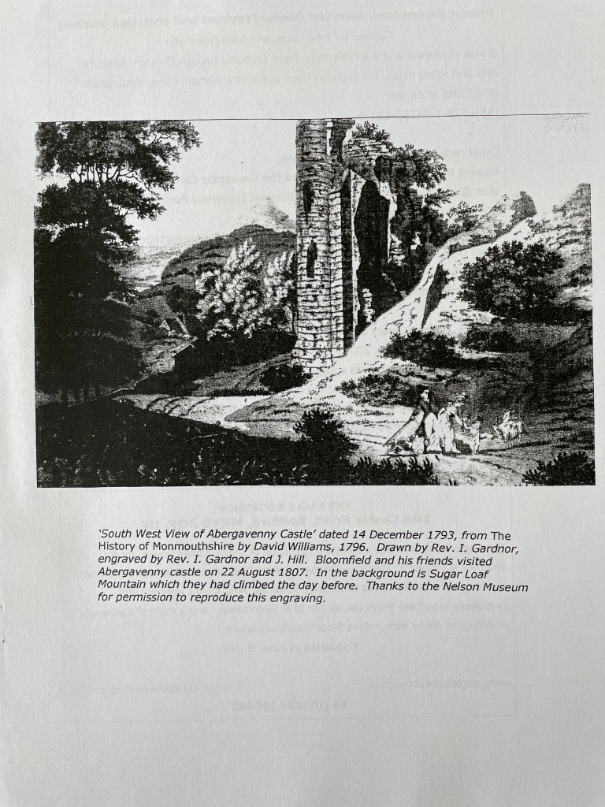
Newsletter No. 15, Spring 2008
Robert Bloomfield Society Secretary
After 9 months searching, and having approached a number of members, the committee regrets that it has been unable to replace Philip Hoskins as Secretary. This is now becoming a matter of urgency. The office of Secretary is a key one; not only does the vacancy put an undue burden on other officers, but the Society cannot continue to function satisfactorily without a suitable person to fill this role.
The Secretary’s job involves:
• Sending out to members notices of meetings and events in good time. The Membership Secretary can supply sheets of labels printed with members’ addresses. Stationery and postage costs can, of course, be reclaimed. However, where possible mailings are included in the Newsletter, which goes out from Nottingham Trent University.
• Organising committee meetings, compiling an agenda, and notifying committee members. This can be done by e-mail to most members. Meetings are on average twice a year, depending on business needing to be done. Most committee meetings now take place in Nottingham or Oxford, so the secretary needs to be able to reach these locations without excessive travel -unless he or she is able to offer an alternative venue accessible by other committee members.
• Attending committee meetings and the AGM and taking minutes, to be written up, and printed off as required.
• Making a contact address available for enquiries, and replying to these. The volume of enquiries has not usually been burdensome.
The committee would be very pleased to hear as soon as possible from any member who might be willing to take on this job, or knows of anybody who might be interested. Please contact the Chair, Rodney Lines, or any of the officers listed on the inside front cover.
Annual Bloomfield Day and A.G.M
The 2008 Bloomfield Day and annual general meeting was held at Nottingham Trent University on Saturday 5 April. There was a wait to open the meeting as the result of train delays, and unfortunately one of our scheduled speakers, Dr. Simon White, was unable to attend following a minor accident. However, as soon as was possible Rodney Lines in the Chair welcomed those attending, and the morning began with a talk by Dr. Selwyn Goodacre on his association by marriage with descendants of the Bloomfield family and his collection of Bloomfield items. Dr. Goodacre entertained us with anecdote which had been passed down through the family, particularly as recounted by his wife’s uncle the Rev. Harry Hildyard Bloomfield. Intermarrying among cousins had, it seemed, been fairly common in the family, and it was believed that Robert was rather fond of his drink. Dr. Goodacre brought with him and displayed to us a generous selection from his collection, which includes several Bloomfield first editions, including American and French, and examples of the very attractively produced Victorian editions. Dr. Goodacre’s care in bringing and showing us his Bloomfield material was much appreciated and interested discussion followed his talk, including some questioning of Robert’s liking for drink. Although the writings do suggest that Robert was fond of a drink, immoderate indulgence does not anywhere seem to be on record, in the way that it is, for example, in the case of John Clare (though the extent of Clare’s drink problem, it was pointed out, has tended to be exaggerated.)
Our second speaker was Professor John Lucas, who spoke on the subject of ballad poetry with particular reference to Bloomfield’s ‘Richard and Kate.’ He began by playing us a recording of Peggy Lee singing the ballad ‘The Folks That Live on the Hill’ with its allusion to Darby and Joan (the names are slightly altered). This was by way of approaching the question: how and why had the theme of longevity in marriage entered the pastoral ballad tradition? Professor Lucas reminded us of the eighteenth-century view of Theocritus as the truth-teller about pastoral life, somewhat in opposition to Virgil, who was seen as more consciously literary, and that John Clare had called Robert Bloomfield ‘the English Theocritus’. If Clare’s idea of Theocritus was probably a critical commonplace of the time, it is certainly the case that in a ballad such as ‘Richard and Kate’ Bloomfield introduces accurate detail about rural labouring-class life. He applies terms of employment, some of them appropriately local, to the aged married couple’s occupations – ‘Wall and Band’. ‘Lucks and Twitches’, ‘Mattock’, ‘Hedging-gloves.’
In his use of the ballad form, Bloomfield may have been influenced by Wordsworth’s Lyrical Ballads – one may suspect here borrowings from ‘Simon Lee’ — but by comparison actual rural employment seems remote for Wordsworth. Indeed, specifics about rural labour are hard to find in eighteenth-century verse. In this respect, Bloomfield is very original, as he is in mentioning families and children such as those in ‘Richard and Kate’. The most popular Roman poet in the seventeenth and eighteenth centuries was not Virgil but Ovid, whose story of the married couple Baucis and Philemon who in extreme age were transformed into trees standing together, does suggest the notion of the faithful ‘Darby and Joan’. The phrase itself was coined by Henry Woodfall in a ballad published in The Gentleman’s Magazine in 1735, and referred to Woodfall’s employer, a printer called John Darby, and his wife Joan. But generally there is an ‘absent tradition’ of poems about love and marriage in old age, a gap filled by Bloomfield, and he may be reflecting a general cultural shift in identifying longevity in marriage with rurality and peasantry. No other writer associated longevity in marriage with the working class until Dickens created Boffin and Mrs. Boffin. Professor Lucas ended by setting Hardy’s ‘During Wind and Rain’ beside Peggy Lee’s ‘The Folks That Live on the Hill’ to show that while Peggy Lee’s voice does lend a certain melancholy to the ballad, Hardy’s poem more fully destabilizes the golden pastoral with its unflinching look at the inevitable ending of lives and disappearance of identities.
The AGM followed after lunch. The Chair opened his Annual Report with a brief tribute to Philip Hoskins who had served the Society so well in the office of Secretary and been the principal mover in the re-founding of a Robert Bloomfield Society in 2000. Apart from this deeply felt loss, 2007 had been a good year. The Society had again been able to fund the Creative Writing Prize at the Robert Bloomfield Middle School in Shefford, and a very successful visit to the Wye Valley in Robert’s footsteps had taken place in August. A new Society website would shortly be available and significant Bloomfield publications had appeared during the year. Minutes of the meeting will be presented at the next AGM or can be sent to members on request.
We are once again extremely grateful to John Goodridge for so generously hosting the day and making facilities available.
Reviews
Simon White, John Goodridge and Bridget Keegan (eds.), Robert Bloomfield: Lyric, Class, and the Romantic Canon. Lewisburg: Bucknell University Press, 2006. 315pp. ISBN-10: 08387-5629-8 -13 : 9780-8387-5629-4 £37.50
‘Anyone interested in Romanticism must consider Bloomfield: his poetry represents a distinctive response to the poetic modes and the kinds of subject matter that for too long have been explored principally through the lens of Wordsworth and Coleridge.’
Thus exhorts Simon White in his lively introduction to this valuable collection of essays, and in doing so he implies that such attention is not being given to Bloomfield, and thereby perhaps that Romantic scholarship is in a somewhat derelict state. Does he have a case? To what extent might this volume validate such a bold claim? For the best part of two decades Romantic scholars have been arguing about such matters, and the canon once dominated so easily by the ‘big six’ (with Byron hanging on by the fingernails due to his alleged Augustan sympathies) has been comprehensively expanded to include a much broader range of writers. Two camps might be identified as leading the iconoclastic assault: feminist critics who have taken up the cause of neglected women writers, and critics espousing working-class or autodidactic poets (for poets it usually is) who were popular in their lifetime, but have been given generally scant attention in the academy. It is probably the case that those critics advancing the cause of women writers have been more successful: Duncan Wu’s expansion of the best-selling Romanticism anthology for example, responded more fully to those claims, and the volume now includes a substantial section on women writers, but Bloomfield still has no place. Going back further, Jerome J. McGann’s New Oxford Book of Romantic Period Verse which set out ‘to make a fair representation of the work being read in the period’ surprisingly omitted Bloomfield. He might be excluded from Lonsdale’s New Oxford Book of Eighteenth Century Verse (rightly well regarded on account of its inclusion of neglected figures) because Lonsdale begins bang on 1700 and ends with like precision (a close run thing therefore for Bloomfield). Things have changed since then of course, but White is probably right in his insinuation that Bloomfield is still not well or widely regarded. He has not established his right to be read as fully as Charlotte Smith; he has fared less well than Burns (who had a head start anyway) or Clare.
Taking White at his word, this volume will make a substantial contribution to ballasting Bloomfield’s case. Its contributors cover a wide range of material and reference to show conclusively that Bloomfield is both far more than a one-poem wonder, and a rich resource for those historical critics who can mine his allusions and context for the purposes of cultural history. These are separate claims of course, although most contributors to this volume probably combine them in essays that frequently understand the poetry as valuable because it educates us in the cultural history of the period. Yet special claims are made for Bloomfield too, and this can be a subtle process, as Scott McEathron demonstrates in his precise identification of what is going on in Bloomfield’s ‘On Seeing the Launch of the Boyne.’ There he notes that ‘somewhere between the eroded innocence and the bedrock of confidence lies the mental realm wherein Bloomfield shaped personal, concrete experience into socio-political commentary.’
That notion of the shaping of personal and concrete experience (a telling conjunction) is one that extends through the volume in the work of other critics too. In Hugh Underhill’s essay on Cowper and Bloomfield, the latter is rendered as more authentic in his responses to a peopled rural landscape because of a certain naturalness, directness and the realization in verse of an ‘indeterminate state of mind.’ For Tim Burke, who shares Underhill’s interest in the dark side of the landscape in examining The Banks of the Wye, Bloomfield’s distinction is in part his ability to hear the authentic voices of the land (literally) and represent them in the poem: he makes a particularly nice distinction in observing that Bloomfield `notate[s] precisely the sometimes harmonious, sometimes discordant sounds … not merely hearing but representing the individual voices encountered in his tour’ in contrast to the ‘still, sad music of humanity’ in Wordsworth’s ‘Tintern Abbey’.
Simon White’s essay asserts a related authenticity in his argument that Bloomfield’s lyrical poems ‘A Visit to Whittlebury Forest’, ‘Shooter’s Hill’ and `To my Old Oak Table’ are at least as interesting as Wordsworth’s and Coleridge’s experiments in the conversation poems (as represented in M.H. Abrams’s claims for them) yet are more grounded. Bloomfield shares a similar aesthetic ‘but in a way that is actually rooted in the material circumstances of the speaker.’
While other contributors may not move so confidently into this subtle but potentially troubled region where social or political commentary merges into structures of feeling, most are vitally concerned with the material history of Bloomfield’s circumstances and historicised readings of his verse. William Christmas’s fine essay examines the political mobility of The Farmer’s Boy, noting its pan-political adroitness; Bruce Graver contributes a learned history of the early illustrations of the same poem, noting how different publishers and patrons push subtly different readings through the visual languages employed; Kevin Binfield produces a complex and persuasive reading of metonymy in The Farmer’s Boy, noting too how Bloomfield’s poem distinguishes itself from those key eighteenth-century texts of rural life that have spectral presence there. John Lucas’s splendid essay, ‘Hospitality and the Rural Tradition: Bloomfield’s “May Day with the Muses” reconstructs the importance of Langhorne’s country Justice and its contribution to an admonitory tradition exposing the plight of the ‘hapless’ rural poor with the breakdown of traditions of responsibility, before examining Bloomfield’s poem in relation to May-Day traditions.
Tim Fulford and Debbie Lee draw surprising but telling parallels between Bloomfield and Edward Jenner in their examination of Good Tidings; of, News from the Farm. They note that the poem’s extolling the virtues of vaccination concurrently restores and fortifies Bloomfield’s vision of pastoral innocence and its inherent wisdom. John Goodridge’s essay on women story-tellers in Bloomfield and Clare, which draws a string of fascinating parallels, situates Bloomfield and Clare in the context of Stephen Duck’s notorious complaint about the garrulousness of women and the broader post-reformation movement that descried ‘old wives tales”. For Bloomfield and Clare however, women’s stories have an educational role and furthermore, they link the vitality of rural life with literary aspiration. Bridget Keegan is interested in restoring to Bloomfield more fully the religious dimension that critics have tended to overlook, and she profitably examines the co-existence of a seemingly conventional creationist theology alongside more popular religious forms and superstitions.
Mina Gorji’s nuanced essay on Burying Bloomfield explores the poet’s relation to the established topos of neglected genius and literary remains, taking in Yearsley, Burns and Kirke White along the way before analysing Clare’s The Mole (a poem rich in literary remains, most notably in relation to Bloomfield). Donna Landry’s essay, ‘Georgic Ecology’ makes a strong case for recognising the distinction of labouring class writing in its sustained tension between the pastoral and is opposite, which at the same time is revealed as a pragmatic response, and not a representation of contradictions magnified by the distorting and still persisting, lens of urban pastoralism. The volume ends with B.C. Bloomfield’s valuable provisional checklist of the published works, with annotations and a record of later editions.
Without a doubt, this volume makes a large and lasting contribution to Bloomfield studies, to our understanding of the period in which he wrote, and to the significance of his literary presence in the writings of others. If Simon White’s rallying cry for Bloomfield’s importance needs justifying, then the weight of scholarship and critical significance that this volume produces is amply up to the task. These essays are remarkably high in their quality, and there are no weaknesses, nor tendentious arguments of special pleading. Is it the case then, that ‘anyone interested in Romanticism must consider Bloomfield?’ Well, ultimately I am not sure that it is, but only because I think the question (and more precisely its immanent assertion of definitive centrality) is the wrong one to ask. Is it the case that anyone interested in Romanticism must consider Blake or Shelley? To put this another way, can Romanticism be imagined without Blake, Shelley, or even Wordsworth? Of course in one sense it can, for Romanticism as we know it is not defined by single writers, even though I suspect Simon White is right in the implication that we have allowed Wordsworth and Coleridge to be overbearingly definitional in this respect. The problem is with the power of legitimation that we have granted to terms like Romanticism. As a movement rather than a period definition (the parallel is with Modernism and look what has happened there) Romanticism either becomes a loose baggy monster with all writers of note included by virtue of their alignment with one or other of its continually shitting and re-ordered tenets, or it is an exclusive category which will always make minor those writers ‘of the Romantic period’ who sit outside these tacit and unstable definitions. In his foreword to this volume, John Barrell makes a related point, asking whether Bloomfield ‘is best understood as a romantic, as some of the authors in this volume suggest, or as a poet who reminds us of another tradition of late eighteenth- and early nineteenth-century poetry that is permanently in danger of being forgotten in our concentration on romanticism?’
Bloomfield’s presence in literary history is essential; if the case has not been made prior to this volume then it is now. His inclusion in such a history should cause us to reconsider the usefulness of the categories we use to give it shape.
Philip W. Martin
Philip Martin is a Professor in the Faculty of Humanities and Pro-Vice-Chancellor at De Montfort University. He is a specialist in the area of Romanticism.
Other reviews of Robert Bloomfield: Lyric, Class, and the Romantic Canon have appeared in: The BARS Bulletin and Review, No. 32 (Dec. 2007); Romanticism, 13:2 (2007).
**********
Simon White, Robert Bloomfield, Romanticism and the Poetry of Community. Aldershot: Ashgate, 2007 ISBN 978-0-7546-5753-8, 171pp., £50.
Robert Bloomfield is best known as author of The Farmer’s Boy which had immense, and to its author, unexpected celebrity on its first publication in 1800. It is, as Simon White explains in this absorbing book, a complex poem. On one level it appears to draw on Bloomfield’s youthful experience in working on his uncle, William Austin’s, farm in Suffolk in the years 1778-81. On another level it draws on a reading of eighteenth-century pastoral and poetry of rural labour which one would not expect of a fourteen-year old. And – to bring in the aspect to which White gives most attention – it clearly draws on Bloomfield’s later experiences in London. Bloomfield went to London in 1781 and trained as a shoemaker. That gave him experience of urban working conditions to put beside his early rural experience; and it gave him much more since, in the 1780s and 90s, he was exposed to political and social ideas, often of a radical sort, which would necessarily influence his retrospective view of the rural society he had left behind him. A further perspective is the almost fifteen-year gap between Bloomfield’s leaving full-time farm-work and starting to write The Farmer’s Boy in 1796. Those years saw changes in the countryside which were harder to reckon with than the changes of the seasons on which Bloomfield’s earlier memories, and the structure of his poem, depend. While Bloomfield’s intellectual horizons were expanding in London, the threat of enclosure and the influx of London money were affecting the Suffolk countryside. The poem, in four books, traces the seasons through the experiences and thoughts of Giles, whom White calls Bloomfield’s ‘alter-ego’, the protagonist through whom the complex ideas of the poem are expressed.
White’s reading of The Farmer’s Boy upsets any view which sees the poem as primarily describing a social idyll in rural England. White draws attention to the physicality in Bloomfield’s description of farm labour, and points out that while severe weather distresses Giles’s body, the treatment of farm animals could grieve his mind. He points out that among the political and social concepts which Bloomfield is likely to have heard debated in London are those on freedom or liberty and those on community or the social harmony best secured by the lessening of ‘distinction’ and fairer sharing of resources. Ideas about freedom may well crop up when one is trying to keep sheep in a field, just as they might when reflecting on one’s own employment in the never-ending task of farming. The question of community arises in the poem particularly in relation to the description of the Harvest-home in ‘Summer’. This was a celebratory occasion of feasting and relaxation for the whole community by right of custom. The politically alert reader might suspect an element of gesture in this event; but any cynicism in Giles is not directed that way. The argument turns abruptly when we find that his socially-inclusive description belongs to the past. There follows a lament for a lost harmony in English rural life as farmers became richer and adopted styles of life at odds with communal parties.
White is perceptive in tracing these ideas through the different layering of the text and readers will be grateful for his careful analysis. His desire, however, to offer the social and political as the major explanatory forces in the poem seems inadequately explored in the sphere of gender. Faced with the disturbing description of mad Poll (Ann) in ‘Autumn’, he suggests that her plight might at least partially be a consequence of broader social change in the countryside’. Poll appears to be an analogue of the luscious Mary, the ‘lovely Maid’ who participates in the harvest in ‘Summer’. Like her Poll has set out with her hat and her finery, but she has failed to attract a lover. Her mental illness causes her to subvert custom in her marking of the rituals of daily life, perhaps reflecting the difficulty of living outside the customary expectations of a young woman in rural society. Any social observation here, however, seems inadequate to the horror of Giles’s picture of both Poll herself, and the circle of watchers whose very sympathy imprisons her further.
Throughout his chapter on The Farmer’s Boy White draws contrasts with Wordsworth in the Prelude. Wordsworth’s descriptions of rural life are compared with Bloomfield’s and found wanting: Wordsworth does not describe physical labour; he luxuriates in the solitude which is burdensome to workers like Giles; he does not respect the communal ways of rural life. Over all is Wordsworth’s egotism and sense of self-election. Exasperating, one admits; but many of the hits against Wordsworth are cited from the Prelude, when his views on solitude and communality are explored much more fully in The Excursion. There is a fault-line between Bloomfield and Wordsworth caused partly by the English class system and partly by Wordsworth’s self-absorption. Wordsworth had had an excellent education and the chance of travel, and once in the Lake District lived among a loyal family of women who suffered themselves to be written out of his script to allow him to claim solitude. But as our smile wears off we might recognise that there is a more significant comparison to be made between The Farmer’s Boy and the early books of the Prelude which is worth retrieving: it is that both draw on youthful memories filtered through adult experience. What are the most celebrated parts of the early books of the Prelude? They are surely those in which the poet’s youthful experiences are most vividly expressed and with the least amount of narratorial comment. One thinks of the boat-stealing incident or the skating episode. Isn’t it that sort of memory which really stands out for the reader of The Farmer’s Boy too?
Bloomfield was fourteen when he abandoned farming; we do not know Giles’s age, but he is still what the title calls a ‘boy’. He is plainly a junior on the farm, being given orders even by the dairy-maid. It may be overdoing it to talk of child labour; but his are memories from early in his working life. This is a matter of huge interest in Romantic writing. We gradually gain a picture of the young Giles, whose tasks clog his shoes with mud, who has a tendency to sleep late in the morning, who has to share a stool at a party and is the butt of jokes from others. On his own he is an observer of nature inviting comparison with Clare. White makes little allowance for the youth of Giles, or the function of his memories of early life; but surely there are places where his recollections come out of the text apparently clean of retrospective analysis, as they do in the Prelude. Readers of Bloomfield will have their own favourites. Mine are the description of the pigs running wild in the oak wood when the acorns fall in ‘Autumn’, humorously revealing the tenuous hold of the farming world on the uninhibited actions of animals, and the description of the night journey to count sheep in ‘Winter’. As the boy Giles walks the familiar lane he is first entranced by a vision of the stars as a heavenly flock of sheep – a ‘spot of time’ – and then terrified by a ‘grisly Spectre’ which turns out to be an old ash tree. That childhood memory of delight and fear, heaven and heil, will surely stand comparison with any other passages about childhood in Romantic poetry.
White’s study of Bloomfield’s later poems is more rounded than his treatment of The Farmer’s Boy. In writing about his later poems in the ballad or lyric styles, White is careful to establish the expectations of the genre, explain any relevant critical views of Bloomfield’s, and supply the historical or cultural information which a modern reader might need. The results are some excellent readings. ‘The Widow to Her Hour-glass’ is a beautiful poem in which Bloomfield soars, perhaps because he is not writing in his own voice. White adds greatly to our reading by his scholarly placing of the humble hour-glass in its historical perspective, and also the role of gleaning in the lives of the poor. Another poem to a domestic object is ‘The Old Oak Table’ which White illuminates by biographical details which ensure that it comes across as the description of the urban worker and family man, in contrast to Bloomfield’s usual rural settings. His move away from his Suffolk boyhood is best expressed by the inspiration Bloomfield derived from his trip to the Wye valley in 1807. Again, White gives a well-rounded context for this poem, with its much wider range of literary references. It is sobering to read Bloomfield’s delight in simply seeing a mountain, when contemporaries could not do so without all the contrivances of the picturesque.
White’s title links Bloomfield to the “Poetry of Community’. That refers not only to his use of communal forms like the traditional tale or the ballad, but also to his treatment of community within his poems, particularly stressing communal occasions like markets, fairs, weddings and May Day. There tends to be ambivalence in Bloomfield as to whether the necessary amelioration of the lot of the labouring poor is to come from looking forward or looking back. White regards Bloomfield as a conservative by temperament, wanting to hark back to the communal spirit he recalls in earlier farming and village life; on the other hand the poet is clearly inspired by the radical writing of his London years to long for social changes which held out the hope of relief to the poor and greater social equality. One would need to be a revolutionary of a type that Bloomfield is not to fail to appreciate that ambivalence, which is constantly played out in his poems.
A similar ambivalence occurs in the more limited sphere of publishing. Only those who had enjoyed a good education would have ready access to spelling, grammar, and the willingness of a commercial publisher to consider taking on a book. This left the labouring-class poet in the situation of having either to submit to patronage to get the semi-colons right; or look back to a pre-print world, either oral or manuscript, where the rhythms and pauses within the narrative can be supplied by sound or lineation alone. This is illustrated by Bloomfield’s act of rescuing The Farmer’s Boy from the attentions of Capel Lofft by writing it out from memory in 1801, and adding a note in which he makes clear that he has a concept of an ‘Original text’ which does not depend on thoroughness in punctuation. The basic issues of social class, and differing opportunities for education and leisure, play themselves out in all aspects of Bloomfield’s life and writing, and White does an excellent job in explicating them. For all his obvious disadvantages Bloomfield has one great strength – a vantage point on the human condition which is denied to those in more fortunate circumstances, and which must always be allowed to contribute to any description of the writing of his period.
This is a learned and well-written book, to which all readers of Bloomfield will find themselves turning in gratitude. White reads Bloomfield attentively, focusing his readings through the concept of ‘community’. That, however, is not the only contextual idea raised in the book’s title. The other is that elusive topic, ‘Romanticism’. ‘Romanticism’ is evoked in the book almost exclusively by reference to Wordsworth and Coleridge. They are held up as poets of ‘interiority and transcendence’ – criteria against which Bloomfield’s works could be thought wanting. But who would argue that now? It is some time since the poetry of the Romantic period has been described in such a limited way. If White had given equal attention to, say, Burns, or to the recently recovered work of women writers (of all social classes), he would have found contexts more welcoming to comparison with Bloomfield. Certain sorts of highly imaginative and introspective poetry may have been what readers of some later periods favoured and denoted ‘Romanticism”; but that sort of poetry was never all that was written in those years usually given as roughly 1780-1830. In claiming Bloomfield as a Romantic writer White is knocking at a door which is already open; if he hasn’t noticed, it is probably because it is he and his colleagues who have opened it.
Claire Lamont
Newcastle University.
Claire Lamont is a distinguished editor. Among her publications are editions of works by Wailer Scott and Jane Austen, and of essays on Romanticism.
Drinkwater on Bloomfield
In his talk at the annual Bloomfield Day, Dr. Goodacre drew attention to John Drinkwater’s 1926 collection of essays, A Book for Bookmen. Here Drinkwater prints Robert’s letter of January 19th 1802 to Lord Buchan, in which Robert celebrates Burns while wishing that Burns might have drunk less and thus lived longer.
This letter had already been published in W.H. Hart’s selection from Bloomfield’s correspondence, but Drinkwater says that he himself has a manuscript copy in his possession, and he is reprinting it as Hart’s ‘pamphlet’ is hard to come by. Dr. Goodacre quoted the opening paragraph of Drinkwater’s introduction to the letter:
‘Robert Bloomfield (1766-1823), like Shenstone, has always been a name; but, unlike Shenstone, he has little virtue left in his poetry when we turn to it again. But he had the good fortune to find Bewick as an illustrator, and his books at least are worth the small change for which they can be bought. Not much of a poet, and yet the cobbler was something of a story, and no one would grudge him the wisp of fame that is still his.’
In addition to perpetuating the mistaken belief that Bewick was Bloomfield’s illustrator, this is characteristic of the cavalierly dismissive attitude to Bloomfield which prevailed in critical circles at that time. As Ed Fordham shows in the following article, it is no longer possible to pick up his books for small change, and, as the reviews in this issue of the Newsletter suggest, it would seem safe to relate this to a now much altered critical perception.
Collecting Robert Bloomfield
Ed Fordham
Being a book collector is tricky – heavy, dust-attracting, a nightmare to move, and the more specialist you go the more expensive they become… But I never thought Robert Bloomfield was that obscure – and if he was obscure (not a household name, that is) then he’d probably be cheap and largely unwanted. Precisely the opposite is the case. I had been on the lookout casually for books of Robert Bloomfield’s poetry since 1988 – not hunting and searching, but just looking in second-hand bookshops in poetry sections. I just hadn’t appreciated that he was out of print and most were Victorian or contemporary printings. It wasn’t until a Nottingham friend tipped me off that there was a Bloomfield edition recently published that I ordered ten copies of the Trent edition of the poems of Robert Bloomfield. It was that book order which triggered a call from Trent Editions and my first contact with the Society:
1. Robert Bloomfield, Selected Poems, Trent Editions, 1998, £9.99
So when in 2003, I wandered into Henry Pordes Books on Charing Cross Road and asked if they had any Bloomfield Books and I got the reply ‘yes’ it stunned me and then set me back £135.2. Rural Tales, 1st Edition 1802. Large quarto paper copy, excellent condition, ex Jeudwine Library, 198x253mm. £135
It was to be the first significant book of what has become a very obsessive hobby. With the Trent edition acting as my guide and the shock of paying so much for my first edition, I set out to fill in the gaps in my collecting ambitions. With hindsight £135 was a good price for what is a lovely clean, large copy, with original covers and a great collecting pedigree. It was a huge leap then – it’s still one of my best books.Scouring antiquarian booksellers across London, Stamford and Guildford is the norm – within a year I accumulated a series of more accessible copies:
3. Hazelwood Hall, 1st edition 1823, 100x1171mm. Plain dark board with brown spine, Cecil Court, London, Nov. 2004
4. Brayley, Views to Robert Bloomfield’s works. Vernor, Hood and Sharpe, April 1806. Exceptional condition, Ex Libris Anne Renier, Jarndyce, Dec. 2004
5. The Farmer’s Boy, 4th Edition, 1801, 130x214mm. Light brown mellow boards, inlaid gilt, very attractive spine, slight splitting to top spine, Jarndyce, Nov. 2005
6. The Farmer’s Boy, 9th Edition, 1806, 100x167mm. Lovely green boards, inlaid gilt, Jarndyce, Dec. 2005
7. Wild Flowers, 1st Edition, 1812, 105x180mm. Plain buff boards, excellent condition, Jarndyce 774, Feb 2006
I now had the bit between my teeth, a sense of what I was buying and of something of the market range. Broadly £30-£60 can secure a good condition, leather-bound, contemporary edition. The early purchase of Hazelwood Hall was a great little gem and one I haven’t seen since and it’s in lovely condition – it was Robert’s last published work whilst alive and had a short print run.
It’s worth mentioning Jarndyce Books at this point. They are without a doubt the specialists in all Victorian literature and my collecting enthusiasm coincided with their then new catalogue. They are located opposite the British Museum and so a long lunch-hour took me there for the first time in 2004. And I found myself confronted by no less than six Bloomfields for sale. As you can see from the list above I weakened and have been a fairly regular customer since. A later visit, however, opened my eyes to a tempting little sideline (to which I of course succumbed), namely the poetry and work ‘by association’. After all I had bought a copy of Brayley’s guide to Bloomfield, so I wasn’t just purchasing direct publications, or limiting the range. And so I found myself buying Nathaniel Bloomfield’s first and only work, a pretty poor set of poems and writing and a clear attempt to trade on his brother’s fame…
8. Nathaniel Bloomfield, An Essay on War, Honington Green etc., 1st edition, 1803, 96x159mm. Lovely brown patina, detached back boards, lovely internal condition, Ex Libris Anne Renier, Jarndyce 763, Feb 2006
Now, a word of caution for the prospective collector – I’m distantly related to Robert Bloomfield so was able to justify to myself my collecting spree, but it is expensive. So I have sought to purchase cheaper editions and this was where the Internet has come into its own. Google had got me as far as understanding the biography and the timeline of Robert Bloomfield’s life. But it was internet site Abe Books that opened up the world of specialist book dealers, and as one of their on-line functions enabled sorting by price I started to gather the war and post-war reprints of the 1940s:
9. The Farmer’s Boy, Staples Books Limited, 1941 softback edition, slightly stained to front otherwise good condition, Abe, July 2004
10. A Selection of poems by Robert Bloomfield, edited by Roland Gant. Crown Classics, The Grey Walls Press, 1947. Very good condition with cover sleeve, Abe, July 2004
These two purchases brought me a better understanding of Robert’s poetry and the way in which he had created an image of what was being defended in the struggle of the war years, an idyll of rural England and of olde rural Suffolk. (Would Robert have understood later being used as a morale-boosting propaganda tool in the 1940s? – the two editions are clearly that!).
I do now use Abe Books solely as a tool for finding editions I want, but am then assiduous in contacting book dealers direct. This gives me greater control over the purchase and I interact direct with small dealers. It has become obvious that there were far more copies of Robert’s poetry out there than the early searches had revealed and his biography indicated that he had been reprinted in significant quantity. So I’m seeking to get a copy of each of the editions. But there was also extensive reprinting in Victorian England.
My Great-grandfather was a great lover of poetry and it was from him that we had the family memory of being related to the Bloomfield family. He had a considerable collection of Victorian poetry books, but they had been lost in a burglary some years ago, and so as I picked up copies of the Victorian reprints I found myself feeling that I was collecting the copies he would have read:
11. The Poetical Works of Robert Bloomfield. A complete edition. Illustrated by Birket Foster. Routledge, c.1860 (American edition?), 121x184mm. Hard cover red, with gifted spine. Very tight good copy, Cecil Court, London, Sept. 06.
12. The Farmer’s Boy, Rural Tales, Ballads, Songs: Wild Flowers; or, Pastoral and Local Poetry. Scott, Webster and Geary, London, 1837, hard brown cover, good condition, gilt pattern to spine. Minor wear to base and top of spine. Badge collectors circle, Oct. 06.
13. Bloomfield’s Farmer’s Boy, Rural Tales, Ballads, Songs, & Wild Flowers Halifax: William Milner, 1843. 81 x 124mm, light brown card covers, gilt inlaid spine. Tight and tidy copy, Stamford, Xmas 06.
14. Poetical works of Bloomfield and Kirke White. London: T Nelson and Sons, 1871. 108x170mm, hardback, blue covers with gilt. Excellent condition, tight and nice, Rose White, Northampton, May 2007.
15. Robert Bloomfield’s Poetical Works. London: Geo Routledge and Sons, 1864. 104x171mm, rich deep green and gilt hard cover, strong cover in good condition, pages broken from spine, good reading copy. Drawings by Birkett Foster etc., Staniland Booksellers, Stamford, July 2007.
16. Robert Bloomfield’s Farmer’s Boy, Sampson Low, Marston Low and Searle, c.1860, 124x178mm. Nice strong copy, green gilt, strong lettering down spine, tight copy, pages as new. St Mary’s Books, Stamford, July 2007.
There is one other aspect of Robert Bloomfield’s poetry that might be easy to miss: his appeal to children. And here the Victorian pride in and love of books, and the period’s great use and appreciation of colour printing, came into their own. In the 1880s, a relative of Robert Bloomfield set out to reprint Robert’s children’s stories – whether for income, maintaining of copyright, or just for re-printing (more to follow a later Newsletter). The result has been a series of children’s books, highly colourful and fairly easily available on the second-hand market today:
17. The Bird and Insects’ Post-Office, 1880. Bright blue cover with gilt inlay and adhesive letters and stamps. Very good internal condition, recollectionsbookshop.co.uk, Aug. 06
18. The Fakenham Ghost, Illustrated by J.L. Wimbush, c.1880, 141x174mm. Hard brown cover with gilt inlaid text. Children’s version, some child scribbling, Appleford Bookroom, Sept. 06
19. The Horkey, by Robert Bloomfield, Macmillan, 1882, 195x250mm. Good colours, strong outer spine but inside pages loose – some totally detached but all there, Treasure Chest Books, Felixstowe, May 07
The range of books actually available is much wider than I would ever have thought. I have made a considerable investment in the hobby and am now passing up copies for which I already have a good quality edition. Further however, I am picking up broken ‘reading’ editions which I can use to take quality photographs of plates and text and not strain the spine of a copy with a tight spine and boards. I sense that there is still a lot more to discover.
Note: The descriptions are as I list them in my own listing – it draws on descriptions often given by the respective dealers, but amended by me to reflect what I actually find.
March 2008
Meetings and Events
Members will have received details of the short walking tour of Suffolk Bloomfield country on Wednesday 28 May. Any enquiries should be made to the Chair, Rodney Lines (see inside front cover.) The date of the 2009 Annual Bloomfield Day and AGM at Nottingham Trent University has been provisionally fixed for Saturday 4th April. You may wish to make a note of this date.
Newsletter No. 16, Autumn 2008
Robert Bloomfield Middle School, Shefford
Prizegiving
The Society is very pleased to have been able to fund once again the annual Bloomfield Society Creative Writing Award to a final year student at Robert Bloomfield Middle School. The award was made this year to Emma Palmer, to whom we extend our congratulations. The prizegiving took place on 15 July and our Membership Secretary Angela Underhill was able to attend in order to present Emma with an engraved pen. As indicated by the Ofsted report below, this is an outstanding school, benefitting from the exemplary leadership of our honorary member, Headteacher Adrian Rogers. It is a great pleasure and indeed a heartening experience to visit the school. The Society is proud of its association.
**********
Ofsted report.
Robert Bloomfield Middle School was awarded the top grade in all categories during its Ofsted inspection in May this year. The report on the ‘Overall effectiveness of the school’ begins: The accuracy and effectiveness of Robert Bloomfield School’s self-evaluation is excellent and inspection evidence confirms that this is an outstanding school. Parents are overwhelmingly positive about the school and submitted many letters of support in addition to the inspection questionnaires. The vast majority say that they are well informed and fully involved in their child’s education. One wrote, ‘I am thrilled to see both of my children excelling in different areas for different reasons; on all counts the school has excelled in providing first class care and education for two very different children.’ The headteacher’s exceptional leadership and relentless energy have ensured that every member of staff shares the school’s vision for the future and that there is no room for complacency. Senior and middle managers are exciting, inspirational leaders who continually seek ways to make the school even better. They work hard and well together driving forward continual improvement. Leaders at all levels are completely focused on raising standards and making sure that all pupils achieve as well as they possibly can. This is done highly effectively through the systematic monitoring of the quality of teaching, by regularly reviewing the curriculum and by supporting staff through a rigorous programme of training linked to the school development plan. Leaders strive incessantly to ensure that each pupil has an equal opportunity to achieve through effective assessment of their individual needs. No child is left behind in this school. Governors have an excellent understanding of school improvement and know how they can help to maximise achievement for pupils too. Pupils are firmly at the heart of all the school does. Leadership and management are outstanding, ensuring that there is excellent capacity to improve even further.
The final ‘Inspection Judgement’ is Grade 1 in all areas, grade 1 indicating ‘exceptionally and consistently high’. There can be very few schools in the country which achieve grade 1 in all areas. Our Chairman has congratulated Adrian Rogers on this remarkable result; the above comments show, of course, that such a result is owing to everybody involved in the school at whatever level, including pupils, working constructively together.
I am grateful to Adrian Rogers for providing me with a complete copy of the inspection report, and to our Shefford member Dorothy Clark for sending me a press cutting (Biggleswade Gazette, 13 June 2008) featuring the school and its inspection.
Robert Bloomfield set to music.
Keri Davies
A revised version of this article, integrating parts I and II, is available here.
Introduction
The formal composition of settings of a poet provides an interesting measure of the reputation of a poet and the reception history of his oeuvre. It does not seem to link in a simple manner to qualities of musicality or melodiousness in the verse being set. Indeed, the example of Schubert (despite his Goethe, Schiller and Heine settings, Schubert concentrated largely on the dilettante or minor verse of his closest friends), shows how poetry of an indifferent, and even trite, calibre can be made into great songs. Perhaps great words can prove a hindrance to the composer, because they have too much life of their own and refuse to take a humble second place to the music. In the words of Boris Ford, ‘What suffices, as far as the composer is concerned, is that the words provide a theme, a drama, a sentiment, which lend themselves to being transformed into the finished song’ (xi). Nevertheless, it is often a pleasure to find composers setting good poetry as in the settings of Bloomfield listed here.
Bloomfield’s work was granted musical setting almost from publication. In contrast, his near contemporary, William Blake, had to wait until 1876 for the first known composed setting of his words (‘On Another’s Sorrow’, for voice and piano by Doyne Courtenay Bell). There were a couple more Blake songs in the 1890s, and then a flood of compositions from 1900 onwards that still shows no sign of stopping. Today, Blake has probably overtaken Burns as the most set English-language poet after Shakespeare, whereas Bloomfield’s (and John Clare’s) settings remain few.
This first search for musical settings of Bloomfield’s verse turns up just over two dozen compositions. Composers, too, are influenced by literary fashion (or Rezeptionsgeschichte as academics call it) and the fashion for Bloomfield was transitory, though intense enough while it lasted. For whatever reason, great or even significant composers seem to have avoided his work. The settings are almost entirely by minor, or amateur, composers – some, I think, stemming from personal acquaintanceship with the poet. The majority of these compositions were written within Bloomfield’s lifetime.
There seem to be very few twentieth-century settings of Bloomfield. The works by Enfield, Huss, Jones, and Selby are all I can trace. The great exponents of English song: Gurney, Ireland, Vaughan Williams, etc., seem to have passed him by. Even Benjamin Britten, who one thought might have responded to a Suffolk poet like Bloomfield as he did to George Crabbe, failed to set any of his poetry.
Robert Bloomfield was himself a capable amateur musician who wrote with music in mind. Thus, ‘The Woodland Hallo’ is subtitled ‘(perhaps) adapted for music’. This list includes two separate settings of these words. Stephen Banfield points out that ‘words for music’, the poet having in mind a hypothetical or real melody as he writes his text, are an important traditional concept in Britain, accounting for many Elizabethan texts, and for much of the poetry of Burns and Moore. Amongst Bloomfield’s contemporaries, one might also note Byron’s ‘Stanzas for music’ and Shelley’s ‘The Indian serenade’ (first published as ‘Songs written for an Indian air’). In a letter to his brother George (8 September 1799), Bloomfield wrote, ‘You know that I have naturally (in common with the rest of the family) an inclination for music, and that I was formerly a beginner in the practice of it’.
The first published musical setting of Bloomfield is a song to the words of ‘Rosy Hannah’ by his brother Isaac. Isaac Bloomfield had some pretensions as a composer though lacking formal training. Robert sought the help of William Shield, Master of the King’s Musicians, in correcting Isaac’s songs for publication: ‘I showed him the songs, and left them with him; he says they want some trifling amendment in the bass, which he will do. Then asking if the three which I gave him were all Isaac had composed, I produced the sketch of ‘The Highland Drover’. … I left them all, and shall hear from him soon’ (letter to George Bloomfield, 23 June 1802). These songs are now lost. Isaac’s only other published work is a group of Six Anthems for the use of choirs where there is no organ (London, 1805?). Did Robert sponsor its publication? The sale catalogue of his library includes multiple copies, lots 172 to 179, of ‘Six Anthems, composed by Mr. Bloomfield’s brother Isaac’. There is a score in the British Library at G.517.a.(2.).
Missing from this list are any settings by William Shield. Writing to George Bloomfield (23 June 1802), Robert comments, ‘have seen Mr. Shield; he is a man simple and unaffected in his manners to a striking degree, and ready to assist where he can. … Mr. Shield was so pleased with my ‘Poll Rayner’, that he has set it long ago, and has it by him (perhaps unfinished)’. Bloomfield’s publishers later proposed that Shield set the ballads included in Bloomfield’s The Banks of Wye (1811). In a letter to John Davy (10 July 1811) he writes, ‘A poem of mine, of considerable length, is now on the point of publication. It contains four incidental songs well adapted for music. The booksellers, who are half proprietors, fixed on Mr. Shield to furnish tunes, and he either will not, or cannot, do it. It is now left to me to seek a friend who will do it; not gratuitously, for your terms will be attended to. The music is intended to be printed with the book, and therefore will have an immediate and wide circulation. I remember your former attentions, and request to know if any such proposal can be listened to on your part, for you are highly capable of doing credit to the work’. The plan foundered when Davy, the Devon-born, London-based composer of popular songs, asked for a fashionable thirty-five guineas to set them. Like the majority of Isaac Bloomfield’s songs and Shield’s ‘Poll Rayner’, these ballad-settings by Davy, if they ever existed, are now long lost.
The settings by Crotch, Firth, and Raper, below, are described as ‘glees’. The Anglo-Saxon term ‘glee’ referred to almost any type of secular part-song other than the often-bawdy canonic catch. From the mid-eighteenth century, and over the next century or so, the ‘glee club’, devoted to convivial part-singing, became a national institution. It grew out of the venerable tradition of male-only tavern music, which was becoming more wide-ranging towards the end of the eighteenth century—and more respectable, some of the clubs going so far as to admit female singers. The glee-singing world was musical, sociable and epicurean, yet in some ways extraordinarily isolated from the great developments of European music. In Bloomfield’s lifetime, the glee thrived as dilettante music, as did the light music of the pleasure gardens.
The most notable composer to have set Bloomfield’s verse is James Hook. Hook was born in Norwich in 1746, and came to London in the early 1760s, quickly becoming a prolific and successful composer. For nearly fifty years, he was organist at Vauxhall, writing over 2,000 songs, and knew a good commercial proposition when he saw it – setting a newly fashionable poet. He composed no fewer than five settings of Bloomfield’s poems between 1805 and 1810. Hook was also a successful music teacher, and Bloomfield clearly knew his Guida da musica instruction manuals, inventing words to some of Hook’s tunes (see The Remains of Robert Bloomfield, vol. 1, pp. 51-56). For some reason, almost certainly financial, Hook left London in 1820 without notice. The manager at Vauxhall kept his place open for a whole season, but he never returned. James Hook died at Boulogne in 1827.
The majority of settings of Bloomfield’s poems are solo songs like Hook’s. Particularly noteworthy is that by the German musician Nina d’Aubigny von Engelbrunner. Composer, performer, singing-teacher, Wynandine Gertrud (‘Nina’) d’Aubigny von Engelbrunner was born in Kassel, 15 April 1770, the second child of Johann Caspar Engelbrunner and Sabine Jacobine d’Aubigny. In 1803, she made her first visit to England, travelling with relatives to London. The same year saw the publication of her Briefe an Natalie über den Gesang, a pedagogical work for singers that Beethoven is said to have admired. She made a second visit to London in 1806 when she may have met Bloomfield, if the dedication ‘insc[r]ibed to Mr Bloomfield’ can be so interpreted. An inveterate traveller, she visited her sister in Calcutta in 1810, making a return visit to India in 1818. By 1826, she was in Vienna, and close to Schubert and his circle of friends. At an evening party (10 April 1827) given by her nephew Eduard Hornsteig, Nina d’Aubigny played harp, and Ludwig Tietze sang songs by Schubert accompanied by the composer himself. She died, unmarried, 27 January 1847. Nina d’Aubigny composed songs in German, French, and Italian. By setting Bloomfield’s poetry, she places him firmly in a context of cosmopolitan European high culture.
The use of traditional tunes by poets, or the invention of their own melodies by poets, provides valuable insight into the musicality of a poet, how the lyric impulse is manifested, and the process of composition itself. Robert Bloomfield belongs with William Blake and John Clare, all poets known to have sung their own work, marking a return to the days of Thomas Campion and John Dowland, when musician and poet were the same person. By using traditional melodies as well as ones of the poet’s own composition, Bloomfield, like Clare, is not, as some allege, simply demonstrating continuity with an oral, predominantly labouring-class, tradition. He was writing at a time when European fashion for folk-song (and imitation folk-song) reached a peak as witnessed by the arrangements of traditional English, Scottish and Welsh songs by Haydn and Beethoven.
Blake sang his verse to tunes of his own invention, now lost; Bloomfield to his own tunes and to traditional melodies. Bloomfield’s Selected Poems, edited by John Goodridge and John Lucas, includes the music of ‘Ligoran Cosh’, to which Bloomfield’s Song ‘The man in the moon look’d down one night’ is set. This tune is also mentioned by Walter Scott in Chapter 24 of The Bride of Lammermoor; its title is a poor transliteration of a Gaelic original. (Unfortunately, the editors chose to offer a late version of the tune, collected in Chicago in the early twentieth century, which leaves unanswered the question of what Bloomfield’s source might have been.) On 17 May 1803, Bloomfield was a guest at Dr Jenner’s 53rd birthday party, singing a song of his own composition in honour of the occasion. The music has not survived. For his sole venture into the theatre, Hazelwood-Hall: A village drama. In three acts (London: pr. for Baldwin, Cradock & Joy, 1823), Bloomfield composed songs, ballads, and glees. Alas all lost.
A provisional list of musical settings.
This list is intended to provide a basis for more analytical and wide-ranging research and criticism. It represents the results of searches through Copac, the catalogues of the British Library, and (for manuscripts) the Repertoire Internationale des Sources Musicales. Not included here are Bloomfield’s settings of his own words, since these are not musical settings in the strict sense in which the literary text is known to be anterior to the music accompanying it. I have also omitted the instances of Bloomfield devising words for existing music such as folk-tunes and musical exercises by James Hook. The arrangement is chronological by publication date (mostly derived from the British Library catalogue), or where possible, the actual date of composition. The sequence demonstrates clearly how Bloomfield’s reputation grew and then abruptly faded. Where possible original copies have been examined and form the basis of the bibliographic description.
Early 19th century
Isaac William Bloomfield, 1761–1811.
Ye darksome Woods: Glee.
MS score (2 leaves).
Notes:
Anonymous. Probably by Isaac Bloomfield
Begins: ‘Ye darksome woods where Echo dwells’. A setting of ‘Hunting Song’ from Rural Tales (London, 1802).
For 3 voices, keyboard optional.
The ‘Prospectus’ included in The Remains of Robert Bloomfield, Vol. I (London: Baldwin, Cradock and Joy, 1824, in all further citations The Remains), states that Isaac Bloomfield’s setting was to be published (London: Goulding) as part of a subscription collection: the anonymous MS. listed as Gooch 1939 may be his.
References: Gooch 1939, 1940.
Source: British Library MS Add 36652, f. 18, 19 [not seen].
1801
Isaac William Bloomfield. 1761–1811.
Rosy Hannah: a favourite new song. The words written by Robert Bloomfield, author of ‘the Farmers Boy’. The music composed by his brother Isaac Bloomfield.(London: Printed for the authors by Rt. Birchall, No. 133, New Bond Street.)
1 score (2–3p); 34cm.
Notes:
With composer’s initials at foot of p. 2.
Caption title. – First line: ‘A Spring o’er hung with many a flower’. Price 1s. Watermark dated 1801.
Strophic setting (3 stanzas). – For high voice with piano accompaniment –6/8; D major; `Not too fast'.
Re-engraved in 1824 in oblong format as ‘Rosy Hannah. From Mr. Bloomfield’s Rural Tales' ([London]. T. C. Bates), and included as pp. 8 and 9 of the Appendix to Vol. I. of The Remains of Robert Bloomfield (printed by Thomas Davison, for the exclusive benefit of the family of Mr. Bloomfield; and published by Baldwin, Cradock, and Joy: London, 1824).
Reference: Gooch 1945.
Sources: Description based on British Library G.361.(26.). – Another copy: Cambridge University Library [not seen].
1801
John Langshaw, 1763–1832.
Dear boy throw that icicle down: ballad with an accompaniment for the piano forte or harp. Composed by W. Langshaw, the poetry by Robt. Bloomfield. (London: printed & sold by Preston, at his wholesale warehouse, 97, Strand.)
1 score (3 p.); fol.
Notes:
In a letter to his brother George (30 May 1802), Bloomfield mentions that ‘Yesterday brought me a very kind letter from Troston, mentioning that a Mr. Langshaw, of Lancaster, had set my ‘Winter Song’, and that a copy is sent to Mr. Lofft’.
Title: Caption title. – First line: ‘Dear Boy throw that icicle down’.
Pr[ice] ls.– Watermark 1801.
Strophic setting (4 stanzas). –Solo voice with accompaniment for piano or harp. –F major; 6/8; ‘Larghetto’.
Sources: Description based on British Library H.2818.f.(7.) and H.2401.f.(9.). In H.2401.f.(9.), the composer’s name has been altered in ink to ‘Jno Langshaw’.
1804
John Davy, 1763–1824.
Songs, glees, &c. in a comick opera call’d The Miller’s Maid [by Francis Goldolphin Waldron]. Founded on one of the admired ‘Rural Tales,’ written by Mr. Robert Bloomfield, the celebrated author of ‘The Farmer’s Boy.’ Perform’d at the Theatre-Royal, Hay-Market, on Saturday, August 25, 1804. The Overture and Musick, entirely new, composed by Mr. Davy ... (London: printed for the author, by T. Woodfall, No. 21, Villiers-street, Strand, and sold in the Theatre.)
19 p.; 8vo
Notes: The first song, a glee, begins: ‘Push about the brown jug, lads, and merrily sing’.
Price Ten-pence.
Music not included.
Sources: Description based on British Library 641.h.13.(10.) and 643.h.6.(1.).
1805
Matthew Cooke, 1761–1829.
Old Ringwood! A favorite hunting song as performed by Mr. Dignum at Vauxhall. The words taken from Bloomfield’s poems. Composed by Matthew Cooke, organist of St. George’s Church Bloomsbury and formerly one of the children of his Majesty’s Chapel Royal.(London: printed for the author by R. Birchall, No. 133, New Bond Street, Oxford Street.)
1 short score (1 leaf, 4 p.); fol.
Notes: First line: ‘Ye shady woods where Echo dwells’.
Price 1s./6d.
Strophic setting (4 stanzas). – For voice and pianoforte. – ‘The Instrumental parts for a full Band may be had of the Author.’ – D major; 6/8.
Source: Description based on British Library G.385.b.(3.).
1805
James Hook, 1746–1827.
Love’s holiday, sung with universal applause by Master Hopkins at Vauxhall Gardens (the words from Bloomfield’s poems.) Composed by Mr. Hook. (London: printed for the author by Clementi & Co., 26, Cheapside.)
1 short score (3 p.); fol.
Notes:
Caption title. – First line: ‘Thy Fav’rite Bird is soaring still’.
[Price] 4s./6d.
Strophic setting (4 stanzas). – For solo voice with orchestral accompaniment, reduced for keyboard. –B flat major; 3/4; ‘Andantino piu tosto allegretto’.
Source: Description based on British Library H.2818.a.(72.).
1807
Nina d’Aubigny von Engelbrunner, 1770–1847.
The woodland hallo. Composed and incribed [sic] to Mr. Bloomfield, author of the farmers Boy, wild flowers etc. etc. by Miss Nina d’Aubigny von Engelbrunner. (London: printed from the stone by and for G.J. Vollweiler at the Patent Polyautographic Press No. 9, Buckingham Place, Fitzroy Square.)
1 score (3 p.); fol.
Notes:
Opening line: ‘In our cottage, first peeps from the skirts of the wood’. From Wild Flowers (London, 1806).
Price 1s.
Strophic setting (3 stanzas). –For solo voice with piano accompaniment. – G major; 6/8; ‘Andantino’.
References: Gooch 1951. The ‘Prospectus’ included in Remains, Vol. I (London: Baldwin, Cradock, and Joy, 1824) states that Miss d’Aubigny’s setting was to be published (London: Goulding) as part of a subscription collection.
Source: Description based on British Library H.1668.(19.).
1810
James Adcock, 1779–1860.
Lucy: a ballad written by Bloomfield. Composed by J. Adcock of Cambridge. (London: printed for G. Walker at his Music Warehouse 106 Great Portland Street.)
1 score (4 p.); fol.
Notes:
Caption title.—Begins: ‘Thy favourite Bird is soaring still’.
Price 1s./
Through-composed. – For voice and pianoforte. – F major; 4/4.
Source: Description based on British Library: G.808.b.(1.).
1810
James Hook, 1746–1827.
Nancy: the words from Bloomfield’s poems; the music composed by Mr Hook. Holograph in ink. 1 ms. close score (p. 81–84); 26x34cm.
Notes:
First line: ‘You ask me dear Nancy’.
Dated ‘Decbr 17 1810’ at top of p. 82.
Marked no. ‘2386’ above date on p. 82.
For solo voice and keyboard. – G minor; ‘Moderato’.
Music starts on p. 82, and continues on 83-84, and finishes on 81.
Source: Cambridge University Library. Manuscript. MS. Add. 6638; p. 69 [not seen].
1810
James Hook, 1746–1827.
The rose trees: the words from Bloomfield’s poems; the music by Mr Hook. Holograph in ink. 1 ms. close score (p. 25–27); 34cm.
Notes:
First line: ‘When tender rose trees first receive’.—A setting of ‘A Word to Two Young Ladies’, from Bloomfield’s Rural Tales, Ballads and Songs (London, 1802), pp. 89–91. Watermark dated: 1810.
For solo voice and keyboard. – G minor; 2/4; ‘Grazioso’.
Source: Cambridge University Library. Manuscript. MS. Add. 6640; p. 25 [not seen].
1810
James Hook, 1746–1827.
Rosy Hannah: a much admired song, with an accompaniment for the harp or piano forte, composed for Mr. Braham, by Mr. Hook. (The words from Bloomfield’s poems.) (London: printed by Messrs Phipps & Co., 25 Duke Street, Grosvenor Square.)
1 score (7 p.); fol.
Notes:
Begins: ‘A Spring o’erhung with many a Flower’.
Price 2s./–.
Through-composed. –For solo voice with accompaniment for harp or piano. – A major; 2/4; ‘moderato’.
A modern edition is included in Hook’s Songs & cantatas: for solo voice with piano, harpsichord or harp accompaniment and optional scorings for flute or guitar, ed. David J. Rhodes. Vocal music; v. 2 (Girvan: Piper Publications, c2000).
Source: Description from British Library G.379.c.(54.). ,
1810
James Hook, 1746–1827.
Winter: a favourite song. Sung at various musical meetings with universal applause. The words from Bloomfield’s poems, set to music by Mr. Hook. (s.I.: s.n.)
1 short score (2–3 p.); fol.
Notes:
Caption title. – Begins: ‘Dear boy throw that icicle down’.
Price 1s./0d.
Strophic setting (3 stanzas). –For solo voice with keyboard accompaniment. –A major; 6/8; ‘vivace’.
A note on the British Library copy states that song was performed ‘by Mr. Gibbons and others'.
Source: Description based on British Library G.379.c.(74.).
1810
James Henry Leffler, 1761-1819.
Lucy: a ballad sung by Mrs. Mountain with universal applause. Composed and respectfully dedicated to Miss Harriot Hutchinson by James Henry Leffler. The words by R. Bloomfield, the celebrated author of the Farmer’s Boy. (London: printed & sold for the author by Preston, 97, Strand.)
1 score ( p.); fol.
Notes:
Caption title.—Begins: ‘Thy Fav’rite Bird is soaring still’.
Price 1s./–.
For solo voice and keyboard. – F major; 6/8; ‘pastorale’.
Source: Description based on British Library G.383.h.(62.) [copy incomplete].
before 1811
Isaac William Bloomfield, 1761–1811.
Dear Boy, throw that Icicle down: Song.
Notes:
A setting of ‘Winter Song’ from Rural Tales [etc.] (London, 1802).
For voice and piano.
Reference: Gooch 1950.
Source: The ‘Prospectus’ included in Remains states that Isaac Bloomfield’s setting was to be published (London: Goulding) as part of a subscription collection. Now lost.
before 1811
Isaac William Bloomfield, 1761–1811.
The Highland Drover
Notes:
A setting of ‘Song for a Highland Drover returning to England’ from Rural Tales [etc.] (London, 1802).
For voice and piano.
Reference: Gooch 1948.
Source: The ‘Prospectus’ included in Remains states that Isaac Bloomfield’s setting was to be published (London: Goulding) as part of a subscription collection. Now lost.
before 1811
Isaac William Bloomfield, 1761–1811.
My favourite Bird is soaring still.
Notes:
A setting of ‘Lucy’ from Rural Tales [etc.] (London, 1802).
For voice and piano.
Reference: Gooch 1941.
Source: The ‘Prospectus’ included in Remains states that Isaac Bloomfield’s setting was to be published (London: Goulding) as part of a subscription collection. Now lost.
before 1811
Isaac William Bloomfield, 1761–1811.
You ask me, dear Nancy, what makes me presume.
Notes:
A setting of ‘Nancy’ from Rural Tales [etc.] (London, 1802).
For chorus and piano.
Reference: Gooch 1942.
Source: The ‘Prospectus’ included in Remains states that Isaac Bloomfield’s setting was to be published (London: Goulding) as part of a subscription collection. Now lost
1815
William Crotch, 1775-1847.
Yield thee to Pleasure old care!: glee. (London: Printed & sold by Rt. Birchall, ...)
1 score (5, [1] p.); fol.
Notes:
Caption title. –First line: ‘Yield thee to Pleasure old care’: glee.
Watermark date: 1815.
For SATB, unaccompanied.
Source: Bodleian Library [not seen]
1818
Henry Smith, fl. 1817–1822.
Six canzonets for the voice with an accompaniment for the piano forte, dedicated (by permission) to His Royal Highness the Duke of Sussex, the words selected from Shakespeare, Pope, Bloomfield, &c. &c. Composed by Henry Smith, organist of the English Chapel, Dundee, Scotland. (Published for the author: Dundee, Scotland, & may be had of the following music-sellers, Messrs. Muir, Wood, & Co., Leith Street, Edinburgh, Mr. Morris, Aberdeen, & Mr. Preston, 97, Strand, London.)
1 score ([i], 36p.); 35 cm.
Notes:
The Bloomfield setting begins: ‘In our Cottage that peeps from the skirts of the wood’.
Through-composed (3 stanzas). –For solo voice with piano accompaniment. –C major; 6/8; ‘allegretto pastorale’.
Contents: Subscribers’ Names (p. 1). –Music: the words from Shakespeare (p. 3). – Rusticity: the poetry from Bloomfield (p. 8). – the complaint: the words from the Portuguese Luis de Camoens by the Right Honble. Lord Vist. Strangford (p. 15). – Sympathy: the poetry of Dr. Warton (p. 22). – The tear: Brinsley Sheridan Esqre (p. 27). – Solitude: the words from Pope (p. 34).
Sources: Description based on British Library H.1683,(64). – Another copy: Glasgow University Library [not seen].
Part 2 of Keri Davies’s provisional list, extending from 1821 to 1965, with a list of sources and further reading, will follow in Newsletter No.17
Annual Bloomfield Day and AGM
The 2009 Annual Bloomfield Day and AGM will be held on Saturday 4th April at Nottingham Trent University, starting at 11 a.m. As usual, there will be a programme of talks and discussion in the morning and the AGM will take place immediately after lunch. Further details will be circulated to members nearer the date. This is the one fixed event in the Society’s calendar; the committee would urge you to make a note of this date and consider, if possible, attending. We would like to welcome as many members as possible at the AGM to review the Society’s progress, and attendance this year was not as large as could be wished.Newsletter No. 17, Spring 2009
Annual Bloomfield Day and A.G.M
The 2009 Bloomfield Day and annual general meeting was held at Nottingham Trent University on Saturday 4 April. Unfortunately, our chairman Rodney Lines was prevented at the last moment from attending, but the meeting, with a very full programme, was well attended. Dr Peter Cochran began the morning with his talk ‘The Farmer’s Boy restored and renovated – at last’, introducing us to his own re-edited text of the poem by reading a passage from ‘Summer’. He read first, in received pronunciation, from Capel Lofft’s doctored first edition, and then in Suffolk dialect pronunciation from his own text derived from Bloomfield’s two surviving manuscripts, the second of which is Bloomfield’s writing out from memory in 1801 of the poem ‘as I wrote it at first’, now held in the Houghton Library at Harvard University. Dr. Cochran’s text is close, though not identical, to that chosen for the second edition of the Trent Selected Poems; among the differences are punctuation and, interestingly, the adoption of the spelling ‘files’ in place of Giles. The effect of this reading was very clearly to illustrate Lofft’s gentrification of the poem, imposing the landowner’s view of farming life, as Dr. Cochran put it, rather than that of the Suffolk farmer’s boy himself, making it not only acceptable by the publisher as a saleable item but also avoiding the political risk of being seen as Jacobinical. Dr. Cochran described this as the ‘silencing’ of ‘a Suffolk voice.’ The reading also brought out how some rhymes work better in Suffolk accent (as is clear, too, in David Woodward’s recorded reading of the poem.)
The repeated softening by Lofft of implied references to farmyard cruelty, such as the gelding of animals and the docking of horses’ tails, also reflected the tastes and the fashionably refined sensibility of an eighteenth-century ‘polite’ reader. Dr. Cochran suggested that Bloomfield had written the poem with his mother in Suffolk primarily in mind, not a polite audience; Lofft had represented Bloomfield as having wished for publication of his poem ‘for the pleasure of giving a printed Copy of it, as a tribute of duty and affection’ to his mother. This can be taken both as evidence that Bloomfield would not have wished his work to be so much distanced from its Suffolk roots, and as part of Lofft’s construction of Bloomfield as suitably unthreatening to his social superiors, humble and respectful. He instanced also Bloomfield’s dissociating himself from Lofft’s Preface with his complaint, in his 1801 ‘Authorial Note’, that he had seen the Preface for the first time only when he handled the already printed book. He looked at the issue of the extent to which Capel Lofft used Bloomfield’s poem for purposes of self-publicization and to promote his own Radical Whig sympathies (though Dr. Cochran took a somewhat sceptical view of Lofft’s radicalism). This was an issue taken up in the ensuing, very lively, discussion. It was acknowledged that Lofft acted with the best of intentions and that The Farmer’s Boy very probably would have remained unpublished without his intervention, and pointed out also that at a time when official suppression of anything that might be seen as subversive was intense and a number of radical publishers had been imprisoned, any publisher was likely to exercise caution and expect his authors to do so.
That there was indeed a potentially subversive politics embedded in the poem was not only brought out by Dr. Cochran’s account of Capel Lofft’s sanitizing of the text, but was explicitly foregrounded by Dr Simon White in his talk ‘Otaheite and The Farmer’s Boy’. This considered why Bloomfield chose to footnote the line ‘Destroys life’s intercourse; the social plan’ towards the close of ‘Summer’ with a passage describing the seemingly classless social relations in Otaheite (mistakenly thought by Bloomfield to be from Cook’s Voyages – in fact, it is from George Forster’s 1777 A Voyage Round the World). These lines are the most radical in implication of any in the whole work and it is clear that Bloomfield wanted their plea on behalf of the labouring classes to be understood, but was looking for a way of achieving this which would be acceptable. Cook, he thought, would be, especially in view of a certain fashionable interest in such writings and in the supposedly ‘unspoilt’ nature of South Sea societies, which could be aligned with a similarly fashionable interest in ‘original genius’ (of which Bloomfield himself, in the reception of his work, was often taken to be an example).
Simon White very interestingly discussed the elements of this interest and the way it became apparent in time that life and social relations in such parts of the world were not so idyllic as they had been thought to be. ‘I was pleading’, Bloomfield said, ‘for kindness between the ranks of society, and it [the passage] seemed to suit my purpose.’ If he could persuade only one farmer to give his men more wages, he should ‘feel pleasure of a lasting sort.’ This, and indeed the whole morning’s talks and discussions, once again brought into the foreground Bloomfield’s awkward situating – difficult indeed for a man of his retiring nature and dislike of confrontation – between conflicting pressures and different cultural traditions. Capel Lofft himself, of course, was attempting to accommodate what could be thought of as opposing positions, that of making Bloomfield’s text acceptable to a polite reading public and at the same the vindication of his own reformist agenda and activities (he was in any case known as an apologist for the principles of the French Revolution), and did this the best way he knew how. Bloomfield’s ‘radical’ plea is certainly very modest, almost as if he himself is not aware of its subversive implications, and he writes, for example, as Dr. Cochran pointed out, only obliquely about maltreatment, transferring the sufferings of labouring people on to beasts rather than people. Here was a man of humble origins who pleaded, however quietly, the cause of a labouring underclass – ‘let labour have its due’ – yet who was obliged for the success of his work and his own financial security to accept meddling in his work by such as Lofft and to some degree the standards of that very class which was apt to deny such a cause. He did himself acquire a good deal of the polish, erudition and prosodic skills at the time largely exclusive to an educated and social elite, which inevitably did distance him to an extent from his labouring-class origins, modifying if not silencing his ‘Suffolk voice’. This complicated his situation further, not only psychologically but because fame brought its own difficulties; on the other hand, it meant that his writing was very fruitfully placed between, and drew strengths from, two cultures and traditions, an oral and popular culture and an educated and literary one. We are indebted to Peter Cochran and Simon White for providing the stimulus to so much valuable discussion. Not least, I think, the morning’s talks and discussion underlined once more the need, already expressed by the editors of the second Selected and in Adam Rouse’s review of that edition in Newsletter 14, for a full variorum edition of The Farmer’s Boy.
After lunch, we were able to visit the University’s Library where John Goodridge showed us the extensive collection held there of original editions of labouring-class poets. We were also able to view on-screen in the library the Society’s relatively new website and the almost completed on-line edition of all known Bloomfield correspondence edited by Tim Fulford and Lynda Pratt. The Society’s website has, of course, been designed by Dr Kerri Andrews, and she very effectively gave us a detailed introduction to it, while Professor Fulford was present to demonstrate the correspondence to us with his customary fluency and wealth of information. Both of these presentations generated much interested comment from members. We then proceeded to the AGM, as a prelude to which we had an opportunity to hear (and tap feet to!) a recording of ‘Robert Bloomfield’s Jig’, a new composition by the Bedfordshire folk-singer Graeme Meek. We are most grateful to Graeme for making a special effort to record this for us in time for our meeting. Minutes of the AGM are available to members from the Membership Secretary on request. As Rodney Lines was not able to present his annual report in person, he has provided the Newsletter with the text, given below.
The date of next year’s meeting was provisionally fixed for Saturday 27 March.
It is hoped to include the text of Simon White’s talk in the next issue of the Newsletter, as well as the music for Graeme Meek’s ‘Robert Bloomfield’s Jig’.
Chairman’s Annual Report
The major event of the past year has been the establishment of the society’s website, which has already succeeded in bringing in new members, and I’m sure will continue to do so, as well as generate interest amongst those who like researching literary matters. Our thanks go to Dr Kerri Andrews for completing a challenging task. Hugh Underhill continues to produce excellent Newsletters which are always eagerly looked forward to by our members, for they are the lifeblood of a society with such a scattered membership countrywide and beyond, and I know I speak on behalf of all our membership in thanking him for all his efforts so enthusiastically undertaken. Angela Underhill has managed our financial affairs successfully for yet another year, which means for a small literary society we are in a very healthy state indeed, and we are all accordingly grateful to her.
Alas, we are still without a secretary. This is not a satisfactory state of affairs to be in, and just because all seems to be running smoothly should not mean a secretary is not necessary. A secretary is the kingpin of any society, and we certainly require one urgently, not simply to add to our credibility as a flourishing organisation, but to carry out the tasks that at present are largely having to be shared out between Angela, Hugh and myself. This is a plea to anyone reading this Newsletter who thinks they may be able to help to come forward and have a go. Apart from the AGM we have only two committee meetings a year, one in Nottingham and the other in Oxford, and we can be very flexible about this and about meeting times. I write this plea in the confidence that someone out there will give us a positive response.
Though, thanks to a combination of motor car engine failure and severe shortcomings of the railway system, I must send apologies for my absence from this year’s AGM, I think we can say that it was one of our best yet, in terms of content and attendance, and all that we promised in the notice sent out was well and truly delivered, with the added bonus of Professor Tim Fulford showing us on screen some of the on-line edition of Bloomfield correspondence. As always, our thanks to Professor John Goodridge for facilitating events at Nottingham Trent University, not least for sterling work in the catering department. Maybe we should have a Vice-Chairman as well!
Robert Bloomfield set to music
Keri Davies
This is Part 2 of Keri Davies’s provisional listing of musical settings of Bloomfield, extending from 1821 to 1965, Part I of which appeared in Newsletter No. 16. A revised version of this article, integrating parts I and II, is available here.
1821
John Marks Jolly, 1790–1864.
The miller’s maid: a melo-drama in two acts. Founded on Bloomfield’s poem of that name, and the songs principally selected from his works. By John Savill Faucit, author of ‘Justice,’ a musical drama in three acts, &c. &c. &c. Performing at the Theatre Royal, English Opera House, with distinguished success. The overture and new music composed by Mr. Jolly. The scenery by Mr. Thiselton. (London: printed for the author; and sold by Longman, Hurst, Rees, Orme, and Brown, Paternoster-Row, 1821.)
[6], 47 p.; 24 cm.
Notes:
The first song, entitled ‘Phebe’ begins: ‘How bright with pearl the eastern sky’. It is modified from Bloomfield’s ‘Mary’s Evening Sigh’ which begins: ‘How bright with pearl the western sky’.
Price 2s. 6d.
Jolly’s music not included.
7 men, 2 women.
Faucit’s text was reprinted (Baltimore: printed and published by J. Robinson, Circulating Library and Dramatic Repository ..., 1822) and (New York: S. French, 1856?). The music by Jolly is apparently lost. There is also a version for toy theatre: The Miller’s maid, or, The rustic lovers: a drama in two acts, adapted to Hodgson’s theatrical characters and scenes in the same (London: printed by and for Hodgson & Co, Juvenile Press, No. 10, Newgate-Street, [1825?]). The few songs are not, it seems, by Bloomfield. Music not included. (British Library 11778.aaa.16.)
SOURCE Description based on British Library T.1068.(9.).
1824
Matthew Cooke, 1761–1829.
Elegy for Three voices. From Bloomfield’s Remains. On the death of his infant son Robert. Matthew Cooke. August 7th 1824.
Holograph MS in ink. Short score (2 leaves)
Notes:
First line: ‘Farewell Farewell my sweet my budding flow’r’. A setting of ‘On the Death of His Infant Son Robert’ from The Remains, Vol. I (London, 1824).
For three voices; optional piano.—E flat major; 2/4; ‘Slow and Pathetic’.
REFERENCE Gooch 1944.
SOURCE British Library Add. MS. 30,521, fols. 8-9. – ‘Purchased of W. Bloomfield, Esq. 30 Mar: 1878’.
1824
Matthew Cooke, 1761–1829.
From Bloomfield’s Remains. A Catch for three voices. Matthew Cooke. August 4th 1824. Holograph MS in ink. Short score (2 leaves)
Notes:
First line: ‘Wine Beauty smiles and social Mirth’. From Remains, Vol. I For three voices; optional piano. – C major; 2/4; ‘Lively’.
REFERENCE Gooch 1949.
SOURCE British Library Add. MS. 30,521, fols. 1–2. – ‘Purchased of W. Bloomfield, Esq. 30 Mar: 1878.’
1824
Matthew Cooke, 1761–1829.
From Bloomfield’s Remains. A Song. Matthew Cooke. August 13th 1824.
Holograph in ink. MS short score (1 leaf).
Notes:
First line: ‘The Man in the Moon look’d down one night’. From Remains, Vol. I.
Strophic setting; 3 stanzas. – For voice and keyboard (figured bass). – G major; 6/8; ‘Cheerful’.
REFERENCE Gooch 1947.
SOURCE British Library: Add. MS. 30,521, Fol. 7. – ‘Purchased of W. Bloomfield, Esq. 30 Mar: 1878.’
1824
Matthew Cooke, 1761–1829.
Hob’s Epitaph. From Bloomfield’s Remains. M Cooke. Sept 19th 1824.
Ink holograph MS: short score (1 leaf).
Notes:
First line: ‘A Grey Owl was I when on earth’. From Remains Vol. I.
Strophic setting; 3 stanzas. – For voice and keyboard (figured bass). – E flat major; 6/8; ‘Andante è doloroso’.
REFERENCE Gooch 1938.
SOURCE British Library Add. MS 30,521, fol. 12. – ‘Purchased of W. Bloomfield, Esq. 30 Mar: 1878.’
1824
Matthew Cooke, 1761–1829.
‘News from Worthing’! From a Beast of Burden to her brother Jack. Written by the late Robert Bloomfield Author of The Farmer’s Boy. Rural Tales &c, The above Song taken from his last work, entitled ‘The Remains’. The Music composed by Matthew Cooke Organist of St. George’s Church, Bloomsbury. Entered at Stationer’s Hall Price 1sh./6d. London: Printed for the Benefit of the Widow and Family of the Late Mr. Bloomfield; and sold by Goulding and Co. at No. 7. Westmorland Street, Dublin.
Holograph MS in ink. Short score (2 leaves).
Notes:
Caption title: ‘News from Worthing! In a letter from a Beast of Burden to her brother Jack’. First line: ‘Brother Jack, I am going to inform you’. A setting of ‘News from Worthing’ in The Remains, Vol. I.
Strophic setting; 7 stanzas. – For voice and keyboard (figured bass). – E flat major; 6/8; ‘Cheerful’.
REFERENCE Gooch 1943.
SOURCE British Library Add. MS. 30,521, fols. 17–18. – ‘Purchased of W. Bloomfield, Esq. 30 Mar: 1878.’
1824
Matthew Cooke, 1761–1829.
Simple Pleasures. From Bloomfield’s Remains. A Song for three voices. Matthew Cooke. August 6th 1824.
Holograph MS in ink. Short score (2 leaves).
Notes:
First line: ‘Thus thinks the traveller journeying still’. A setting of ‘Simple Pleasures’ from The Remains, Vol. I.
For three voices. – E flat major; 2/4; ‘Andante’.
REFERENCE Gooch 1946.
SOURCE British Library Add. MS. 30,521, fols. 5-6. – ‘Purchased of W. Bloomfield, Esq. 30 Mar: 1878.’
1824
Robert William Evans, fl. 1817–1827.
The dawning of the day. Composed by R. W. Evans, June 30th 1824. ([London]: T. C. Bates.)
1 score (4–5 p.); obl. 8vo.
Notes:
Caption title. – First line: ‘The grey eye of morning was dear to my youth’. Inserted as folding plates 4 and 5 of the Appendix to Vol. I of Remains.
Through-composed. – Sets first two stanzas. – For high voice with accompaniment arranged for keyboard, with cues for bugle, horns.
SOURCE Description based on British Library 1467.c.45.
1824
Robert William Evans, fl. 1817–1827.
The flowers of the mead. Composed by R. W. Evans, June 25th 1824. ([London] : T. C. Bates.)
1 score (2–3 p.): obl. 8vo.
Notes:
Caption title. – First line: ‘How much to be wish’d that the Flow’rs of the Mead’. Included as pp. 2 and 3 of the Appendix to Vol. I of The Remains.
Through-composed. – For high voice with accompaniment arranged for keyboard, with cues for horns and bassoon.
REFERENCE Gooch 1935.
SOURCE Description based on British Library 1467.c.45.
1824
Robert William Evans, fl. 1817–1827.
The maid of Landoga. From Mr. Bloomfield’s Banks of Wye. Composed June 29th 1824, by R. W. Evans. ([London]: T. C. Bates.)
1 score (6–7 p.); obl. 8vo.
Notes:
Caption title. – First line: ‘Return, my Llewellyn! the glory’. Included as pp. 6 and 7 of the Appendix to Vol. I of The Remains.
Through-composed. – For voice with accompaniment arranged for keyboard, with cues for bugle.
REFERENCE Gooch 1933.
SOURCE Description based on British Library 1467.c.45.
1824
R. A. Firth, fl. 1819–1835.
Love in a shower. R.A. Firth. ([London]: T. C. Bates.)
1 score (10–11 p.); obl. 8vo.
Notes:
Caption title. – First line: ‘Love in a show’r, safe shelter took’. – From Hazelwood-Hall (London, 1823), act II, scene III. Inserted as folding pages 10 and 11 of the Appendix to Vol. I of The Remains.
Through-composed. – Glee for 3 voices: SAT, optional piano. – G major; 3/4; ‘Vivace’.
Firth’s holograph MS is British Library Add. 30,521, fols. 19–20.
REFERENCE Gooch 1937. Also Gooch 1936 (wrongly attributed to Matthew Cooke).
SOURCE Description based on British Library 1467.c.45.
1834
William Ashton Nield, fl. 1816–1836.
The juvenile musical library; consisting of national stories, newly set to music, by W. A. Nield ... Embellished with sixty illustrations from original drawings by Cruikshank.(London: Allan Bell & Co.; Simpkin & Marshall, 1834.)
1 score (iv, 72 p.); 19x25 cm.
Notes:
Sets ‘The Fakenham ghost’, by Bloomfield.
For voice and pianoforte.
Contents: ‘For the voice, 1. John Gilpin by Cowper. 2. Elegy on Madame Blaize, by Goldsmith. 3. The Fakenham ghost, by Bloomfield. 4. The house that Jack built, &c. For the piano forte, 5. Rondino, by Steibelt. 6. Rondino, by Mozart.’
SOURCE British Library B.241.c. [not seen].
1841
Henry Raper, fl. 1840–1848.
Ye darksome woods where echo dwells. A Glee for four voices. The poetry by Bloomfield. Composed & dedicated to H. S. Wilde, Esqr. By H. Raper. (London: published by Cramer, Addison & Beale, 201 Regent Street, and 67, Conduit Street.)
1 score (17 p.); 35 cm.
Notes:
First line: Ye darksome woods.
Price 4/–
For 4 voices (SATB) with optional piano accompaniment.
SOURCES Description based on British Library H.1682. (21.). – Another copy: Cambridge University Library [not seen]
1868
James Hamilton Siree Clarke, 1840-1912.
The woodland hallo. Words by Bloomfield; music by Hamilton Clarke. (London: Augener & Co., 86, Newgate Street.)
1 score ([1], 6 p.); 36cm.
Notes:
First line: ‘In our Cottage that peeps from the skirts of the Wood.
Price 2/6–.
Plate number: 2032.
For voice and piano.
SOURCES Description based on British Library H.2511. (4.). – Another copy: Cambridge University Library [not seen].
1874
Thomas Ridley Prentice, 1842–1895.
A Matin song. The poetry by Robert Bloomfield. The music by T. Ridley Prentice. (London: Lamborn Cock, 63, New Bond Street.)
1 score (7 p.); 4to.
Notes:
First line: ‘Good morrow to the hills again’.
Price 6d. nett.
No. 47 of Modern Four Part Songs for Mixed Voices.
Through-composed. – For voices (SATB) with piano accompaniment ad lib.
SOURCE Description based on British Library F.585.b. (46.).
1905
Walter Owen Jones, fl. 1877–1919.
The Fakenham Ghost: cantata for treble voices: the poetry by Robert Bloomfield; the music composed by W. Owen Jones. Dedicated by kind permission to General the Duke of Grafton, K.G., C.B., Euston Hall, Suffolk. (London: Hutchings & Romer, 39, Great Marlborough Street.)
1 score ([2], 21 p.); 4to.
Notes:
First line: ‘The lawns were dry in Euston Park’.
Price One shilling net.
For chorus (SA), soprano and contralto soloists, and piano accompaniment.
SOURCE Description based on British Library E.889.e. (4.).
1909
Bertram Luard-Selby, 1853–1918.
The Fakenham Ghost: cantata. The words by Robert Bloomfield, set to music for soprano solo, chorus and orchestra by Bertram Luard-Selby.
(London: Novello and Company, Limited; New York: The H. W. Gray Co., sole agents for the U.S.A., 1909.)
1 vocal score ([3], 30 p.); 26 cm.
Notes:
First line: ‘The lawns were dry in Euston Park’. – With text of poem on page [3].
Price one shilling and sixpence.
Novello’s original octavo edition. – Plate number 12866
For chorus: SATB; acc. arr. for piano.
‘It was with this little cantata that Mr. Luard-Selby won the prize in the recent competition of the Association of Musical Festivals. Bright music allied to humorous words will never cease to appeal to choralists and their audiences, therefore this latest addition to the category should become a favourite piece, especially as it has more purely artistic virtues than humorous descriptive choral works are wont to possess!’ – The Musical Times, vol. 50, no 793 (1 March 1909), 172.
SOURCES Description based on British Library E.1594.v.(4.). – Another copy: Bodleian Library [not seen].
1944
Henry Holden Huss, 1862–1953.
A little serenade: song for medium voice and piano by Henry Holden Huss. (New York: G. Schirmer, Inc., 1944.)
1 score (6 p.); fol.
Notes:
Caption title: A little serenade: Robert Bloomfield, Henry Holden Huss. To Dr. and Mrs. Maximilian Bloomfield. – First line: ‘Sleep you, sweet, then sleep you now.
Plate number: 40497.
For medium voice and piano.
Bloomfield’s authorship of the text could not be confirmed.
REFERENCE Gooch 1955.
SOURCE Description based on British Library G.1276.13.).
1965
Patrick Enfield, 1929–1988?
The maid of Dunstable; for female voices in two parts with piano accompaniment. Robert Bloomfield, set to music by Patrick Enfield. For Geoffrey Waters and the Dunstable Girls’ Choir. (London: Elkin & Co., Ltd., W.1.)
1 score (7p.); 26cm.
Notes:
Caption title. – First line: ‘Where o’er the hills, and white as snow’.
The Elkin new choral series. Part-songs for female voices, 2nd series; 2702. – Pl. no. E. & Co. 2702.
For chorus (SA) and piano.
SOURCES Description based on British Library E.263.q. (31.). – Another copy: Trinity College Dublin [not seen].
Sources and Further Reading
Aubigny von Engelbrunner, Nina d’.
Briefe an Natalie über den Gesang (Leipzig, 1803)
A second edition appeared in 1824.
Aubigny von Engelbrunner, Nina d’.
Deutsche, Italienische & Französische Gesänge (Augsburg, s.d.)
Banfield, Stephen.
Sensibility and English Song: Critical Studies of the early 20th Century (Cambridge: The University Press, 1985)
Bloomfield, Robert
The Remains of Robert Bloomfield ... in two volumes (London: Printed by Thomas Davison ... for the exclusive benefit of the family of Mr. Bloomfield, and published by Baldwin, Cradock, and Joy, 1824)
‘... it is proposed to publish by Subscription a Collection of his best Songs, set to Music, some by himself, some by his brother Isaac, and some by celebrated living composers. ... As soon as 100 copies are subscribed for, the Selection will be printed by Messrs. Goulding and Co. Soho Square, London, who will receive Subscriptions.’ (Vol. I, pp.191–92.)
Gooch 1952.
Bloomfield, Robert.
Selected poems. Revised and enlarged edition. Edited by John Goodridge and John Lucas, with an introduction by John Lucas (Nottingham: Trent Editions, 2007)
Contains the tune for ‘Ligoran Cosh’.
Bloomfield, Robert.
Selections from the correspondence of Robert Bloomfield, the Suffolk poet; edited by W. H. Hart (London, Printed by Spottiswoode, 1870)
Elsberger, Manfred.
Nina d’Aubigny von Engelbrunner (Munich: Buch & Medi@, 2000)
A biography. Based on his PhD thesis, Universität Passau.
Fairchild, B. H.
Such Holy Song: Music as Idea, Form and Image in the Poetry of William Blake (Kent OH: Kent State University Press, 1980)
Fitch, Donald.
Blake set to music: a bibliography of musical settings of the poems and prose of William Blake. University of California publications. v. 5 Catalogs and bibliographies (Berkeley: University of California Press, 1990)
Lists 1,412 settings of Blake.
Ford, Boris, ed.
Benjamin Britten’s poets: the poetry he set to music. Revised ed. (Manchester: Carcanet, 1996)
Gooch, Bryan N. S. with David S. Thatcher, Odean Long.
Musical settings of British romantic literature: a catalogue. 2 vols. Garland reference library of the humanities; vol. 326 (New York: Garland Pub., 1982) Lists 1,624 settings of Blake (using a different count to Fitch), and 3,430 for Burns.
Greene, Gary A.
‘The musical Huss family in America’, American Music, vol. 12, no. 1 (Spring 1994), 31–57.
Matthews, Betty.
‘James Hook and his family’, The Musical Times, vol. 131, no. 1773 (November 1990), 622, 624–25.
Munby, A. N. L.
Poets and men of letters. Sale catalogues of libraries of eminent persons, 1-2 (London: Mansell, 1971
The new Grove dictionary of music and musicians. 29 vols. (London: Macmillan; Washington DC: Grove’s Dictionaries of Music, 2001)
‘Obituary: Thomas Ridley Prentice’, The Musical Times and Singing Class Circular, vol. 36, no. 630 (1 August 1895), 549.
Oxford Dictionary of National Biography (Oxford: Oxford University Press, 2004)
Rennert, Jonathan.
‘William Crotch, 1775-1847’, The Musical Times, vol. 116, no. 1589 (July 1975), 622–623.
Repertoire Internationale des Sources Musicales.
RISM A/II (The UK and Ireland RISM Database: Music Manuscripts, 1600-1800, in British and Irish Libraries) shttp://www.rism-ukie.org>
Wickett, William.
The Farmer’s Boy. The story of a Suffolk poet, Robert Bloomfield, his life and poems, 1766–1823. By William Wickett and Nicholas Duval (Lavenham: Terence Dalton, 1971)
My thanks to John Goodridge for help in identifying the composer Davy, and to an anonymous reviewer for useful comments on an early draft.
Patronizing a Poet: Edward Jenner and Bloomfield
The same problems for Bloomfield which were addressed at this year’s annual Bloomfield day, problems with patronage and the need to balance conflicting commercial and psychological pressures, are also evident in his relationship with the pioneer of smallpox vaccination, Dr. Edward Jenner. At the same time, Jenner’s own rise into public favour with the aid of patronage in some ways parallels Bloomfield’s. The Society is planning during June to visit the Jenner Museum at Berkeley in Gloucestershire. In addition to the intrinsic interest of Jenner’s life and work, this will give us an opportunity to explore the connections between Jenner and Bloomfield. I am very pleased to be able to give below, with the kind permission of Tim Fulford, an excerpt from an article by himself and Debbie Lee, ‘The Jenneration of Disease: Vaccination, Romanticism and Revolution’, which appeared in Studies in Romanticism, 39 (Spring 2000), pp.139-163. It deals in detail with Jenner’s enlistment of Bloomfield for the promotion of his vaccine. Although it is clear that the two men were on amiable terms, and Bloomfield was eager to give Jenner his support, Jenner like Lofft could be said to have exerted a certain pressure on Bloomfield for the furtherance of his own ends.
The first part of the article locates Jenner’s discovery in the context of the country’s contemporary preoccupation with the threat of invasion by Napoleonic France, and the divisions in Britain Itself between revolutionary sympathizers and supporters of the conservative Establishment. Jenner’s work was itself revolutionary and the bucolic associations of vaccination could make it appear subversive. The article documents the initial almost hysterical opposition to vaccination by much of the medical profession, which saw its vested interest in older treatments threatened, and Jenner was widely pilloried, for example in a cartoon by Gillray showing humans sprouting cow-like appendages. In his propaganda campaign Jenner needed to influence those in positions of social power; in particular he attracted the services of romantic poets to make ‘his pastoral medicine seem socially and politically conservative as they sought public approval in a Britain dominated by war with revolutionary France.’
What follow are excerpts from Fulford and Lee’s article. For reasons of space, I do not reproduce here the quotations used by Fulford and Lee in their article. The full text of the poem can be found in The Collected Writings of Robert Bloomfield on this website. Robert Bloomfield. Revised and Enlarged Edition, ed. John Goodridge and John Lucas, pp.76-86 (Nottingham: Trent Editions, 2007). I have also omitted the very full and informative annotations to the article. I recommend the complete article.
Fulford and Lee write: If Jenner sought patrons, he also acted as one. He encouraged a far more popular rural poet than Wordsworth to write verse praising vaccination. Robert Bloomfield, who termed himself a writer of Pastoral poetry, and literally a Cow-boy, was a former farm-labourer and shoemaker… To the poetry-reading public, Bloomfield was marketed as an authentic rustic voice, a peasant turned poet, whose pastorals were rooted in his childhood experience of sheep and cowherding. Bloomfield seemed to accept this version of himself, albeit with anxiety…
Jenner, himself a poet, showed an astute understanding of the possibilities presented by Bloomfield’s success in the burgeoning public sphere addressed by poetry… After all, Bloomfield was not only the poet in vogue, and not only a former cow-herd, but a rustic who had suffered the effects of smallpox. His father had died of the disease when he was a year old. By July 1802 the gentleman-doctor, accustomed to writing pastoral verse himself, was inviting the labourer-poet to tea, with the intention of directing and correcting his vaccination poem. Bloomfield accepted the hospitality, but worried that Jenner was too pressing a patron:
This moment a letter from Dr. Jenner invites me to tea this evening. What shall I do – leave 150 lines of an unfinished subject in his hands? …and yet it is hard to say no in such cases as this. I wish he would suspend his curiosity six months, and I would take my chance. He is a very amiable man, and perhaps rates my abilities too high. He is an enthusiast, in his pursuit. (Letter to George Bloomfield, 21 July 1802)
Jenner was not a man to let the chance for favourable publicity from a fashionable writer go begging. He pursued Bloomfield until his vaccination poem was published. In 1803 he was writing to Bloomfield ‘enquiring my determination as to the poem ‘On Vaccination,’ and expressing great interest in my welfare’ (Correspondence of Bloomfield, 29 Feb. 1803).
Bloomfield’s poem, Good Tidings; Or, News from the Farm appeared in 1804, with a dedication to Jenner. True to Bloomfield’s public image as the farmer’s boy. the poem spread the gospel of vaccination from the country to the town-based public. The poem begins with a pastoral scene… It focuses on a simple, innocent child of nature at play.
[Here lines 1-10 of Good Tidings are quoted.]
But this child is blighted by smallpox: ‘the boy is blind’ (1.22). He is a pathetic figure, an embodiment of rural innocence and natural growth that is tainted by a disease spread from city to country: “When last year’s corn was green upon the ground: / From yonder town infection found its way (48-9).
Bloomfield’s poem is a powerful one because it is driven by his rhetorical efforts to resolve a tension which went to the very heart of his poetic authority as a ‘writer of Pastoral poetry and literally a Cow-boy’. It was a tension that affected Wordsworth and John Clare too, for it arose from the attempt to claim that the idealizations inherent in the genre of pastoral poetry were observable in the lives of contemporary rural labourers. When, as was the case for Bloomfield and Clare, the poets own position as a former labourer was one of the reasons for his fashionable success, the tension became threatening to his commercial prospects and to his sense of identity. Both Bloomfield and Clare suffered declining sales and increasing personal crises.
What is at stake in Good Tidings is the very continuance of a rural way of life upon which Bloomfield’s poetic authority depends. He had made his reputation as a poet who, by virtue of his peasant upbringing (normally an insuperable disadvantage for a would-be poet), could uniquely root the pastoral ideal in the real. But smallpox threatened to uproot the ideal from the experienced world – to destroy innocence and peace as it wiped out whole families and blasted entire communities, Smallpox threatened Bloomfield’s precarious poetic career because it exposed a fatal gap between the real world of farm labourers of which he had personal experience, and the idealized version of it to which his publication as a pastoral poet committed him.
Bloomfield’s sense of the danger his muse was in is evident in the dedication, which pleads that the ‘egotism, so conspicuous in the poem…ought to be forgiven’, in the poem itself, he again apologized for including grim details drawn from his real personal history, for these details undermined the pastoral poetic models to which he (and his readers) wanted to conform. Yet these details constitute the most powerful passage in the poem as smallpox menaces the Bloomfield family’s domestic bliss:
[II.179-92]
As if anticipating Jeffreys attacks on the dismal egotism of Wordsworth’s rural verse, Bloomfield has his imaginary readers criticize him: ‘Why tell us tales of woe, thou who didst give / Thy soul to rural themes, and bade them live? / What means this zeal of thine, this kindling fire? / The rescu’d infant and the dying sire?’ (201-4). To this the poet replies by trading on the affection readers feel for him as author of the Farmer’s Boy. He calls the reader a “Kind heart, he terms himself the lowly minstrel dear to thee (205, 207). He asks for pity on the basis that his humble origins exposed him to the disease which makes visions of rural peace hard to sustain. It he sinks below the pastoral into ‘tales of woe’ it is because he was the child whose father died: ‘Though love enjoin’d not infant eyes to weep, / In manhood’s zenith shall his feelings sleep?’ (211-12). Pathos, it seems, is the device by which Bloomfield will overcome the division between his own experience of rural life and the pastoral terms into which he is expected to translate it.
Pathos is not the poem’s final solution to the tensions in Bloomfield’s position: Edward Jenner is. Vaccination saved Bloomfield’s muse because it made the pastoral ideal seem liveable – at least in one poem. It allowed it again to appear rooted in actual rural life. He said as much explicitly:
[II.81 -94]
The sweet smell of success was the dear fragrance of a cow’s breath, now revealed not just as a feature of rustic song, but as nature’s remedy for diseases bred in towns.
Briefly, Bloomfield’s pastoralism offers to become socially radical. Not only is rural life preferred to urban but, as in Lyrical Ballads, rustics seem wiser than gentlemen. Jenner, Bloomfield tells us, had been dependent upon rural knowledge, on the local ‘tradition’ known to Gloucestershire pastoralists that contact with cows prevented smallpox infection. But it this seems to make professional medicine secondary to rustic experience, Bloomfield soon suggests that Jenner had raised pastoral lore to the status of scientific truth. In the process, in Bloomfield’s heroic portrait, he became godlike, giving healing law to the whole world. By the poem’s climax, its pastoralism was neither radical nor levelling: vaccination did not lower men to the level of cattle: Jenner did not simply codify what cowherds already knew. Instead, through Jenner, the cowshed came to command the international stage:
[II.115-26]
In the image of the rose (‘the dairy’s boast, the simple, saving Rose’) Bloomfield made the blister raised in the vaccinated arm into a symbol of natural beauty and fertility. Jenner, scattering vaccine roses, had become a romantic hero – a godlike genius who harnessed the hidden virtue of nature. Vaccination killed the ‘foul serpent’ contagion and allowed villagers to ‘Love ye your neighbours’ without fear of infecting their own children (237, 243). In other words, it restored Eden and allowed God’s commandments to be lived out on earth. Jenner’s victory over smallpox was an apotheosis of the pastoral life which Bloomfield declared himself uniquely fitted to celebrate:
[II. 365-70]
Jenner saved Bloomfield’s pastoralism (at least in the short term) by allowing him to maintain the idealizations that his gentlemanly public expected. In return, Bloomfield helped Jenner’s publicity drive, assistance which Jenner relished. After the poem was recited to a special meeting of the Royal Jennerian Society, he rewarded Bloomfield with a silver inkstand. Later, he sent a silver tea-caddy for Mrs. Bloomfield.
(end of excerpts from Fulford and Lee).Brothers on Jenner
Robert’s brother Nat had the same reasons for celebrating and supporting Jenner’s discovery of smallpox vaccination as Robert. He lost, their brother George reported, ‘two sweet Boys: who both died within a few days of each other, by that dreadful disease the smallpox’, a third child died, according to Capel Lofft, of the same cause while his 1803 volume, in which the ‘Lyric Address’ appears, was in the press. He is very considerably the lesser poet – Byron’s gibe that such artisan-poets should not be encouraged by patrons and were better left to their own trades is, if unkind, perhaps nearer the mark in Nat’s case – but it is certainly of interest to see his ‘Lyric Address to Dr. Jenner’ beside Robert’s ‘Song’ at Jenner’s birthday. Nat’s poem possesses its own dignity and is clearly heartfelt, but is in a very conventional eighteenth-century rhetorical mould, with rather mechanical rhyme and rhythm – though the final couplet’s antithesis of ‘Trifle’ and ‘World’ is neatly enough managed. It allows us, however, to see just how deftly Robert turns his compliment; his ‘Song’ adopts much of the standard manner of panegyric vet contrives to invest the conventions with his characteristic freshness: though not attempting strikingly original effects, it is rhythmically more subtle and much more imaginatively resourceful than Nat’s poem. Its sense of decorum, of appropriateness to the festive and celebratory occasion and to is addressee, is exact. It reiterates, too, an important theme of Good Tidings, that of Jenner’s discovery deriving its efficacy from a rural source, and conforms to the pattern Fulford and Lee trace in the later part of their article of the gradual elevation of Jenner to the status or national hero.
LYRIC ADDRESS TO DOCTOR JENNER
Rejoice, rejoice, Humanity!
The fell, destructive, sore Disease.
The pest of ages, now can be.
Repell’d with safety and with ease.
He well deserves his Country’s Meed,
By whom the peerless blessing came.
And thousands from destruction freed.
Shall raptur’d speak of JENNER’S name.
Yes, JENNER’S vigilance is crown’d,
A sovereign antidote is given:
The blessing flows the Nations round?
Free he diffused the gift of Heaven.
So well approv’d its sure effect.
To turn aside th’ impending harm,
And shall parental Love neglect
To minister the precious balm?
Oh! no; beware of dire Delay.
Ye, who caress your infants dear.
Defer not from day to day.
From month to month, from year to year:
Lest you, like me, too late lament,
Young life bereft of all its joy,
Clasp now the Gift so kindly sent,
Lest you behold your dying Boy!
Lest you see with trembling Fear,
With inexpressible Distress;
The purple spots of Death appear,
To blast your Hopes and Happiness:
Lest your keenest grief to wake,
Like mine your suffering prattler say,
‘Go, bid my Father come and take
Those frightful Spots and Sores away.’
Quickly from such fears be free:
Oh! There is Danger in Delay!
Say not to-morrow it shall be: . . .
To-morrow! No: to-day, to-day.
Embrace the Blessing Heaven hath sent;
So shall you ne’er such pangs endure
Oh! Give a Trifle to prevent,
What you would give a World to cure.
SONG, SUNG BY MR. BLOOMFIELD
At the Anniversary of Doctor Jenner’s Birth-Day, 1803
Come hither, mild Beauty, that dwell’st on the mountain,
Sweet handmaid of liberty, meet us to-day;
Thy votaries philanthropy ask from thy fountain,
A soul-cheering nectar wherewith to be gay.
The cup may o’erflow, and new grapes still be growing;
The eyes of the drinkers resplendently shine:
But grant us, bright nymph, with thy gifts overflowing,
To lighten our hearts, and to relish our wine.
Is Beauty’s gay rosebud a prize worth ensuring?
Its guardianship rests with the friends of our cause.
Shall we mark unconcern’d, what the blind are enduring?
No! mercy and peace are the first of our laws.
Wave, streamers of victory; be bravery requited;
Be sails, in all climes, still with honour unfurl’d;
All lovers of man with cause are delighted;
‘Tis to banish the fears, and the tears of the world.
All nations shall feel, and all nations inherit
The wonderful blessing we place in their view,
And if in that blessing a mortal claims merit,
Oh! Jenner – your country resigns it to you!
From the field, from the farm, comes the glorious treasure,
May its life-saving impulse – all fresh as the morn –
Still spread round the earth without bounds, without measure,
Till Time has forgot, when his Jenner was born.
Newsletter No. 18, Autumn 2009
Visit to the Jenner Museum and Berkeley Castle
A small group of members visited as planned the Jenner Museum on Thursday 11th June, a pleasantly fine day. The connection between Jenner and Bloomfield and its significance was discussed in some detail in the previous Newsletter. The museum is amply and interestingly informative about Jenner’s life and work, as well as the subject of vaccination generally. No exhibits were on view in the museum linking Jenner with Bloomfield, but Hugh Underhill was able to meet the museum director, Sarah Parker, and discuss the connection with her.
Adjacent to the museum are the thirteenth-century parish church, and Berkeley Castle, which Bloomfield visited at the end of his Wye tour in 1807. The church, of historical interest in itself, contains the Jenner family vault in which Edward Jenner is buried, and a tablet monument to Jenner. On a guided tour of Berkeley Castle, we were able to check impressions against Robert’s comment that he ‘gained much comparative information, from here observing a castle, still habitable and perfect, with all the characteristics of a castle which I had so repeatedly seen in a state of dilapidation.’ The castle is indeed still habitable, the home of the Berkeley family, and the tour imparted much information, not only of a comparative kind. One is still shown the cell and dungeon in which according to tradition Edward II was imprisoned and murdered. None among us was unduly affected by the ‘horrid kind of appearance’ Robert found in this, and we enjoyed a valuable and memorable occasion.
Robert Bloomfield Middle School Annual Prizegiving
The annual Prizegiving at the Robert Bloomfield Middle School, Shefford, was held this year on 14 July and the Society once again funded the Creative Writing Award. The award was made to Bethany Summerfield and our Membership Secretary Angela Underhill attended the evening to present Bethany with an engraved pen. Bethany’s poem ‘The Earth’, if first and foremost reflecting our contemporary ‘green’ concerns, is strikingly close in spirit to the environmentalism in Bloomfield’s poetry about which Bridget Keegan writes in her recent study of labouring-class poetry (see below, p.17). That it should have been awarded the Society prize therefore seems particularly appropriate; Robert, one feels, would certainly have warmed to the poem. We are very pleased to extend our congratulations to Bethany and to print here with her permission her prize-winning poem.
The Earth
As changeable as can be from raging hot deserts to the ice-cold polar caps.
Life can be tough but that’s no reason to disrespect the planet.
It gives us life and we give it pollution, it gives us love and we give it hate.
The planet is beautiful but tough, life is tough but we want it easy.
So we spoil it and don’t listen to its pleas.
We kill its gorgeous animals for no reason and kill our own kind too.
We are the most hated species on earth, that’s our fault.
Nature is beautiful, from raging rivers to gushing geysers.
Nature is wonderful, from super snow to awesome autumns.
Nature is wonderful, but we spoil it,
We kill for metal gadgets, that’s wrong, stop it now
Otaheite and The Farmer’s Boy
Simon J. White
A stand-alone copy of this article is available here.
When Robert Bloomfield published his long poem The Farmer’s Boy in March 1800 he included, as an appendix, an account of Otaheite from what he thought was Cook’s journal of his voyage to the South Seas. He prefaced the extract with a very short citation from ‘Summer’: ‘Destroys life’s intercourse; the social plan’. At the end of ‘Summer’ Bloomfield provides an account of an older inclusive harvest-home celebration and this line occurs in a lament for the decline of such festivals. The narrator remarks:
Such were the days, — of days long past I sing,
When Pride gave place to mirth without a sting;
Ere tyrant customs strength sufficient bore
To violate the feelings of the poor;
To leave them distanc’d in the mad’ning race,
Where’er Refinement shews its hated face:
Nor causeless hated; — ’tis the peasant’s curse,
That hourly makes his wretched station worse;
Destroys life’s intercourse; the social plan
That rank to rank cements, as man to man:
Wealth flows around him, Fashion lordly reigns;
Yet poverty is his and, and mental pains.’ (II, 333–344)
He goes on to condemn ‘The widening distance which I daily see’ (II, 349),[1] and to rage ‘Has Wealth done this? … then Wealth’s a foe to me; / Foe to our rights; that leaves the pow’rful few / The paths of emulation to pursue: … / For emulation stoops to us no more: / The hope of humble industry is o’er; / The blameless hope, the cheering sweet presage / Of future comforts for declining age.’ (II, 350-356) He concludes his lament with the plea: ‘Let labour have its due! my cot shall be / From chilling want and guilty murmurs free: / Let labour have its due; then peace is mine, / And never, never shall my heart repine’ (II, 397-400).
In the annotated fair-copy manuscript of The Farmer’s Boy that Bloomfield produced in 1807 he notes: ‘In reference to this passage [the one I have just cited], and as I thought, by way of illustration, I subjoined an extract from Cooks voyage not knowing but it was written by Cook himself, which I now find was not the case. … I was pleading for kindness between the ranks of society, and it seem’d to suit my purpose. And if I could believe that what I have said of letting “Labour have its due” would in only one instance persuade a Farmer to give his men more wages, instead of giving, or suffering him to buy cheap corn in the time of trouble, I should feel a pleasure of the most lasting sort, having no doubt but that an extra half crown carried is worth, morally, and substantially, a five shilling Gift, to those who in the House of their fathers work for bread.’[2] The extract was in fact from George Forster’s A Voyage Around the World which was first published in 1777, the same year as Cook’s own account of his second voyage. Bloomfield may have mistakenly understood that the passage was from Cook’s journal because he extracted it from one of the parallel reviews of Forster and Cook. The Lady’s Magazine; or Entertaining Magazine for the Fair Sex and The Town and Country Magazine, or Universal Repository for May 1777 both printed this passage in their reviews of the two volumes. Or he may have taken it from one of the numerous histories of Cook’s voyages which included passages lifted from Forster. For example John Hamilton Moore’s A New and Complete Collection of Voyages and Travels which was first published in 1785 or the anonymous A New, Authentic Collection of Captain Cook’s Voyages round the World first published in 1786.
In a way Bloomfield’s mistake reflects the problems that George and Johann Reinhold Forster had in selling their book. Despite the fact that it received more favourable reviews than Cook’s own journal, as the introduction to Thomas and Bergof’s edition points out, it was ‘abridged, pirated, printed in excerpt – in short, everything but sold’.[3] But it is Bloomfield’s reasons for including the extract in an appendix to The Farmer’s Boy that are most interesting. In the annotation to the 1807 manuscript he remarks that he ‘was pleading for kindness between the ranks of society, and it seem’d to suit … [his] purpose’.[4] He cannot have been unaware of the diverse ways in which the south-sea islanders had been represented. In asking his audience to read even part of his poem through the lens of Cook’s or anyone else’s account of Otaheite, he was inviting them to make a number of associations, some of which would not necessarily have reflected unequivocally upon either the poet or his poem. Bloomfield would have had some knowledge of the manner in which individuals of renown from a labouring-class background were received by polite society. The poet would have been familiar with the story of Stephen Duck and may have known about the experience of James Woodhouse and Ann Yearsley. He was certainly sensitive about the way in which he himself would be viewed by polite society, and later remarked in a letter to Lofft: ‘I feel my situation to be novel; the world looks at me in that light; I am extremely anxious on that account.’[5] When he eventually managed to wrest editorial control of The Farmer’s Boy from Capel Lofft (his editor / patron), Bloomfield did reveal that he was also sensitive about the manner in which he had been represented in Lofft’s preface. In his own preface to the 1809 edition of his poems he took some pains to correct the idea that he arrived in London: ‘dress’d just as he came from keeping Sheep, Hogs, &c … his shoes fill’d full of stumps in the heels [and that he] slipt up … [because] his nails were unus’d to a flat pavement’.[6] He should therefore have been alive to the implications of inviting a reading of his poem through the lens of Oataheite or the Otaheitians.
Mai (or Omai) whom Cook brought back to England in 1774 would have been the most immediately identifiable Otaheitian for the majority of English people and was received by polite society as a quasi labouring-class subject. He was feted in the way that Bloomfield himself would be during the months after the publication of The Farmer’s Boy. To the surprise of polite society, Omai’s manners were found to be genteel. Samuel Johnson compared the manners of Constantine Phipps, Lord Mulgrave, unfavourably with those of Omai and noted that ‘there was … little of the savage in Omai.’[7] Frances Burney remarked that Omai ‘appears in a new world like a man who had all his life studied the Graces, and attended with unremitting application and diligence to form his manners, and to render his appearance and behaviour politely easy, and thoroughly well bred’.[8] On the other hand Johnson did appear to think that Omai had developed his good manners through his contact with polite society in England, remarking that ‘all … [he] has acquired of our manners was genteel’.[9]
Howsoever he developed them it seems that Omai’s politely genteel manners rendered him worthy of notice. By way of contrast Cook, whose father had been a day labourer, was regarded as one-dimensional, workmanlike, and awkward and uncomfortable in polite company. According to Burney, Cook was ‘well-mannered and perfectly unpretending; but studiously wrapped up in his own purposes and pursuits; and apparently under a pressure of mental fatigue when called upon to speak, or stimulated to deliberate, upon any other.’[10] The patrons and readers of labouring-class poetry were similarly obsessed with the manners and pretensions of the poets. Like Cook, labouring-class poets were expected to be ‘unpretending’ and it helped if they had genteel manners. Capel Lofft reassured readers of The Farmer’s Boy that the poet had ‘amiable’ manners and was uninterested in any ‘fame’ or ‘advantage’ that he might derive from the publication of his poem.[11] In other words he could be admitted (temporarily) to polite company and did not have a desire to rise above his station in life.
One of the most famous statements regarding the value of labouring-class poets was apparently made by Samuel Johnson. According to Boswell, Johnson remarked of James Woodhouse: ‘it was all vanity and childishness: … such objects were, to those who patronised them, mere mirrours of their own superiority. “They had better” (said he,) “furnish the man with good implements for his trade, than raise subscriptions for his poems”.’[12] The question of how Omai could or should be assisted by his English friends was similarly a moot point for many observers. When the time came for Omai to return to his native land much was made of the assortment of gifts which he received from his patrons. According to the editor of Omiah’s Farewell; Inscribed to the Ladies of London ‘Omai … [was] returning to his native isle, fraught by Royal order with squibs, crackers, and a various assortment or fireworks, to show to the wild untutored Indian the great superiority of an enlightened Christian prince.’[13] Of course this remark is meant to be a reflection upon the shallow nature of English polite society. But it also reflects upon Omai who like so many labouring-class poets is apparently dazzled by the superficial glamour of polite society. Cook later noted that from ‘being much caressed in England, [Omai had] lost sight of his original condition’.[14] The anonymous editor’s remarks imply that like Woodhouse, Omai would have been better served if he had been furnished with useful objects. Indeed both Cook and Forster remark with satisfaction upon the fact that Omai did not go completely unprovided with items that might help him to re-establish himself in a reassuringly lowly and pastoral position on his return to Otaheite. Cook expressed confidence that Omai would ‘endeavour to bring to perfection the various fruits and vegetables we planted, which will be no small acquisition’ but believed that ‘the greatest benefit these islands are likely to receive from Omiah’s travels, will be the animals that have been left upon them’.[15] Forster even hoped that the animals might ‘hereafter be conducive, by many intermediate causes, to the improvement of [the islander’s] intellectual faculties.’[16]
The islanders’ supposedly limited intellectual capacity is not something that was necessarily looked upon in a disapproving manner. Forster had noted that the gifts which Omai received from his patrons in polite society, which included ‘a portable organ, an electrical machine, a coat of mail, and [a] suit of armour’, appealed to his ‘childish inclinations’.[17] But the primitive innocence of the Otaheitians was also celebrated at a time when a great deal of thinking on genius derived from the ‘rediscovery’ of Homeric and later Ossianic primitivism. Like labouring-class poets. the Otaheitians were seen as being uncorrupted by education, closer to nature, and therefore in some way closer to the primitive origins of human endeavour. Controversially, many observers saw a kind of Golden Age in Otaheite where the island’s human inhabitants appeared to exist in an environment which somehow provided all of their needs without the requirement for any corresponding effort. After he has provided a lengthy description of the produce of the island Hawkesworth concludes: ‘All these, which serve the inhabitants for food, the earth produces spontaneously, or with so little culture, that they seem to be exempted from the general curse, that “man should eat his bread in the sweat of his brow”.’[18] This view of Otaheite was still common in the early 1790s when Edward Edwards remarked that ‘what Poetic fiction has painted of Eden, or Arcadia, is here realized, where the earth without tillage produces both food and clothing, the trees loaded with the richest of fruit, the carpet of nature with the most odiferous flowers.’[19] Of course, representations like these were very far from the truth, partly because they were often based upon views from the sea. Even when Europeans did land they tended to remain in the area of Matavai Bay. Moreover, early descriptions of Otaheite are heavily biased towards the experience of the island elite with whom the Europeans resided and spent most of their time.[20]
Some observers offered a more balanced view. It is true that the extract which Bloomfield chose for his appendix presents Otaheite in a similar manner to Hawkesworth and Edwards: ‘Where the climate and the custom of the country do not absolutely require a perfect garment; where it is easy at every step to gather as many plants as form not only a decent, but likewise a customary covering; and where all the necessaries of life are within the reach of every individual, at the expense of a trifling labour; … ambition and envy in a great measure be unknown.’[21] But elsewhere Forster represented the elite as exploitative and devoted more space to the laborious experience of ordinary people. There are numerous occasions in A Voyage Around the World when the reader glimpses his disillusion at the unravelling myth of the Otaheitian Golden Age: ‘We flattered ourselves with the pleasing fancy of having found at least one little spot in the world, where a whole nation, without being lawless barbarians, aimed at a certain frugal equality in their way of living, and whose hours of enjoyment were justly proportioned to those of labour and rest. Our disappointment was therefore very great, when we saw a luxurious individual spending his life in the most sluggish inactivity, and without one benefit to society, like the privileged parasites of more civilized climates, fattening on the superfluous produce of the soil, of which he robbed the labouring multitudes.’[22]
Notwithstanding Forster’s equivocation, the common view of Otaheite at the time that Bloomfield completed The Farmer’s Boy — April 1798 — was of a place where exploitative labour was almost unknown. Bloomfield felt great anger at what he considered to be the exploitative turn in community relations in the English countryside. He described the transition in relations as ‘this change, ungracious, irksome, [and] cold’ (II, 347). Therefore to invite a contrast between rural Suffolk, where new ‘Wealth’ was responsible for the ‘widening distance’ (II, 349) between rich and poor, and a place where ‘[the appearance of] distinctions’ was ‘reduce[d]’ almost `to a level’,[23] was to do more than to plead ‘for kindness between the ranks of society’ as Bloomfield evasively put it in his 1807 manuscript note. If the appendix and the passage, to which Bloomfield directs his reader’s attention in the headnote that introduces it, are taken together they can be read as a radical call for the transformation of English society. Some conservative observers were concerned about the possibility that apparently positive accounts of south-sea islands might encourage English subjects to challenge the social and gender status quo. Hawkesworth’s account of Otaheitian sexual mores, particularly the rites of the Arioi, had caused a sensation, particularly his suggestion that ‘different [sexual] customs are the result of different circumstances, and … cannot be attributed to moral deficiencies.’[24] But the concern went beyond just sexual moral questions. The apparent ease with which Otaheitians of all social classes obtained their daily bread was regarded as dangerously seductive for the labouring poor. During the later 1790s, runaways on south-sea voyages were severely condemned in ways that they had not been before. The author of A Missionary Voyage to the Southern Pacific in the years 1796, 1797, [and] 1798 remarked of a runaway that ‘The indolent life he had led at Otaheite, the unobstructed ease with which all of his sensual appetites had been gratified there, with his aversion to labour, and the prospect of its necessity, which a return to Europe held up to his view, strongly urged him to prefer a lazy savage life upon these unpromising islands to his native Sweden, which he knows to have advantages only for the industrious.’[25]
In light of such fears it is strange that Bloomfield’s appendix did not draw the ire of conservative reviews. The British Critic did express concern at the tone of the closing passages of ‘Summer’. The reviewer observed that ‘the author [had] received some impressions, probably at the debating society, of a questionable kind’.[26] This is a reference to Bloomfield’s brother’s account in the preface of the poet’s visits to ‘a Debating Society at Coachmaker’s-hall, [which he apparently frequented occasionally] but not often’.[27] The reviewer may not have read the appendix, or might have assumed that, like the rest of the paratextual material in The Farmer’s Boy, it was introduced into the volume by Capel Lofft. In any case it is an important document and impacts upon the way the poet and his poem could and perhaps should have been received and read. The appendix certainly problematizes Bloomfield’s apparently innocent call for ‘Labour’ to be given its ‘due’ in the closing lines of ‘Summer’.
Simon J. White is author of the most comprehensive study of Bloomfield to date, Robert Bloomfield: Romanticism and the Poetry of Community (Ashgate, 2007). He teaches at Oxford Brookes University and is Robert Bloomfield Society archivist. This article is a version of his talk at this year’s annual Bloomfield Day. I am most grateful for his permission to include it in this issue of the Newsletter.
[1] Robert Bloomfield, The Farmer’s Boy: A Rural Poem (London: Printed for Vernor and Hood, 1800), Book II, 1. 341. All future references will be to this edition and will appear within parenthesis in the text.
[2] Robert Bloomfield, The Farmer’s Boy (Houghton Library, MS Eng. 776.1, fol. 27).
[3] George Forster, A Voyage Around the World, ed. Nicholas Thomas and Oliver Berghof, assisted by Jenifer Newell, 2 Vols (Honolulu: University of Hawaii Press, 2000), Vol. I, p. xxxvi.
[4] Bloomfield, The Farmer’s Boy (Houghton Library, MS Eng. 776.1, fol. 27).
[5] Selections from the Correspondence of Robert Bloomfield; The Suffolk Poet, ed. W. H. Hart, F. S. A. (London: Spottiswoode and Co., 1870; repr. Walton on Thames, Surrey: Robert Ashby, F. L. A., 1968), p. 12.
[6] Robert Bloomfield, The Farmer’s Boy, 4th edition (London: Printed for Vernor and Hood, 1801), p. xxiv.
[7] James Boswell, Life of Johnson, ed. by R. W. Chapman and Pat Rogers (Oxford: Oxford University Press, 1980), p. 723.
[8] The Early Diary of Frances Burney, 1768-1778, ed. by Annie Raine Ellis, 2 Vols (London: George Bell and Sons, 1907), Vol. I, p. 337.
[9] Boswell, Life of Johnson, p. 723, my italics.
[10] Frances Burney, Memoirs of Doctor Burney, 2 Vols (London: E. Moxon, 1832), Vol. I, pp. 270-71.
[11] Bloomfield, The Farmer’s Boy, 4th edition, p. xx.
[12] Boswell, Life of Johnson, p. 443-44.
[13] Omiah’s Farewell; Inscribed to the Ladies of London (London: Printed for G. Kearsley, 1776), p. iv.
[14] James Cook, A Voyage to the Pacific Ocean, 3 Vols (London: Printed for W. and A. Strachan, 1784), Vol. II, p. 106.
[15] Cook, A Voyage to the Pacific Ocean, Vol. II, p. 110.
[16] Forster, A Voyage Around the World, Vol. I, p. 12.
[17] Forster, A Voyage Around the World, Vol. I, p. 11.
[18] John Hawkesworth, An Account of the Voyages Undertaken … for Making Discoveries in the Southern Hemisphere, 3 Vols (London: Printed for W. Strachan and T. Cadell, 1767), Vol. II, p. 186.
[19] E. Edwards and G. Hamilton, Voyage of the H.M.S. Pandora [1791], ed. Basil Thomson (London: Frances Edwards, 1915), p. 108-09.
[20] Dana Lepovsky, ‘Gardens of Eden? An Ethnohistoric Reconstruction of Maohi (Tahitian) Cultivation’, Ethnohistory, 46:1 (1999), 1-29 (4).
[21] Forster, A Voyage Around the World, Vol. I, p. 199.
[22] Forster, A Voyage Around the World, Vol. I, p. 165
[23] Hawkesworth, An Account of the Voyages Undertaken … for Making Discoveries in the Southern Hemisphere, Vol. I, p. 199.
[24] Anne Maxwell, ‘Fallen Queens and Phantom Diadems: Cook’s Voyages and England’s Social Order’, The Eighteenth-Century: Theory and Interpretation, 38:3 (1997), p. 249. See also Hawkesworth, An Account of the Voyages Undertaken … for Making Discoveries in the Southern Hemisphere, Vol. II, p. 128.
[25] A Missionary Voyage to the Southern Pacific Ocean … in the years 1796, 1797, 1798. Compiled from the journals of the officers and missionaries (London: Printed by S. Gosnell for T. Chapman, 1799), p. 301.
[26] The British Critic, 15 (1800), p. 602
[27] Bloomfield, The Farmer’s Boy, 4th edition, p. ix.
Complete Robert Bloomfield Correspondence
As those members on the Bloomfield e-mailing list and/or the creighton edu. e-mailing list will know, the electronic edition of the complete Bloomfield correspondence, in preparation for 4 years, is finally published officially on-line. The announcement by the publisher, Romantic Circles, runs as follows:
Romantic Circles is very pleased to announce the publication of a new electronic edition, The Letters of Robert Bloomfield and his Circle, edited by Tim Fulford and Lynda Pratt, with Associate Editor John Goodridge and Technical Editor Laura Mandell.The Suffolk farmhand turned London shoemaker Robert Bloomfield was the most popular poet of the early nineteenth-century before Byron, admired not just for the authenticity that stemmed from his childhood experience as a rural labourer, but accepted as a master of narrative and versification – the living continuation of the Georgic and ballad traditions epitomized by James Thomson and Robert Burns. This edition of Bloomfield’s correspondence makes fascinating reading for anyone interested in what it was like to be a professional poet in the early nineteenth century. Intimate, humorous, self-analytical, Bloomfield’s letters show from the inside what it was like to work in the rapidly expanding book market. They reveal the power of the publisher, and show Bloomfield struggling, as Wordsworth and Clare also did, with gentlemen patrons who resented the independence that sales gave their proteges. Throughout, they demonstrate Bloomfield’s difficulties in straddling the labouring-class culture from which he came and the polite culture of his readers and supporters. This is partly a matter of what they discuss – work in garrets, poor relief, popular songs and political protest, for example. Bloomfield meets the radical shoemaker Thomas Hardy and converses with Hardy’s fellow-accused in the 1794 treason trials, John Horne Tooke; he also corresponds with Paine’s admirer Thomas Clio Rickman.
Invaluable resources for the social historian, like the memoirs of Francis Place and the more passing comments of William Blake, Bloomfield’s letters open up a world not recorded in print at the time, and absent from most twentieth-century histories. With Clare and Rogers among his correspondents, and with Moore and Wordsworth among his admirers, Bloomfield emerges here as a writer who was for a while central to the poetic culture of the Romantic era. Intended as a resource for scholars of Bloomfield and of labouring-class writing, this edition includes an introduction and extensive editorial apparatus and features transcriptions of Bloomfield’s unpublished poems, critical remarks and children’s writings. It incorporates over forty reproductions of illustrations to his poems (Bloomfield was one of the most heavily illustrated poets of the day). Also collected are contemporary reviews of his poems and the texts of poems by his brothers George and Nathaniel.
‘To Immagination’: an unpublished Bloomfield Poem
Among the Robert Bloomfield manuscripts held by the British Library together with the correspondence is a 439-line poem, `To Immagination’ (sic), composed by Robert in 1800 but never published. Tim Fulford has now published a complete transcript of the poem, adding a valuable essay ‘To “crown with glory the romantick scene”: Robert Bloomfield’s “To Immagination” and the Discourse of Romanticism’. This can be found in Romanticism (University of Edinburgh publications), Vol.15, No.2 (July 2009), pp.181-200.
As Tim Fulford says, the poem ‘is an important addition to Romantic-era verse that may prompt us to reconsider what it was to be a Romantic and who was allowed to become one.’ This is also, of course, a very significant addition to the Bloomfield oeuvre as we know it; in the reach of its subject-matter it is something of a tour de force, and throws much light on Bloomfield’s striving at the time to turn himself into a poet who could legitimately join the ranks of formally educated gentlemen poets of the period. Fulford’s essay traces the way, following Coleridge’s lead, ‘Imagination’ became the salient criterion of Romantic verse and subsequently ‘In the twentieth century…became one of the defining features of the newly-institutionalized practice of literary criticism in universities.’ That we can now see Bloomfield as having set out to write a paean – ‘Stay sleepless guest! aieriel traveler stay;’ – hitherto unknown, directly to the power of poetic imagination, reveals to us an astonishing lacuna in our perception of that creative and critical configuration. At the same time, that he appears assiduously working to emulate an eighteenth-century part-Augustan, part proto-Romantic and ‘visionary’, diction and manner in the poem – a sort of ‘Look, I can do it too!’ – rather than drawing on the sources in popular culture from which so much of his writing derives its strengths, or conducting a considered revaluation of dominant poetic practices in the Lyrical Ballads manner (which in fact he much admired), raises a series of questions about his ‘Romantic’ credentials and his place in the revisionist project seeking to insert or reinstate labouring-class writing in the poetic canon. The work of labouring-class writers, Fulford points out, cannot simply be lumped together as a collective representation of a class experience; at times, in fact, its voices can be as individual and idiosyncratically self-expressive as those of the familiar ‘bourgeois’ Romantic paradigm. In Bloomfield’s work itself we will certainly find both an affirmation of labouring-class community and dignity – ‘Let labour have its due!’ – and the voicing of distinctively personal situations. However, in staking a claim in ‘To Immagination’ to the sublime or ‘visionary’ mode and, if not to the formal stanza, nevertheless to the elevated and celebratory grandeur of the ode, Bloomfield was moving outside the poetic genres and subjects permitted to a member of the humbler classes. He was, in effect, the farmer’s boy or artisan shoemaker trespassing on the property of gentlemen, and this was a barrier he finally could not cross, whatever the encouragement (though also the customary patronizing intrusiveness), evident from the Letters, of Capel Lofft. ‘To Immagination’ remained unpublished, and Bloomfield gradually sank from view as a figure of any account in the Romantic canon.
Tim Fulford’s argument extends further than I have been able to indicate here. We are indeed indebted to him both for his invaluable work on the Bloomfield correspondence (together with that of his fellow editors and assistant editor) and for making available to us this newly unearthed poem. Whether our admiration for the audacity of the poem, and our sense of encountering a vein of feeling and expression we had not previously suspected in Bloomfield, can offset a certain effect in the writing of the poet working against the natural grain of his talent, is an issue to which I am sure some of us will want to return.
Bloomfield’s Jig – a new song
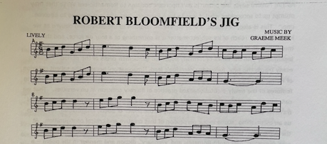
Copyright © Graeme Meek 2008 Graeme Meek is a member of song duo Life and Times and dance band Time of Your Life. see http://www.lifeandtimes.info, http://www.lifeandtimes.me.uk & http://www.myspace.comfbroadsidesrevisited
This is the music for ‘Robert Bloomfield’s Jig’, a composition by the Bedfordshire folk-singer Graeme Meek, which was played at this year’s Annual Bloomfield Day and AGM (see Newsletter 17, p.3), specially recorded for us by Graeme.
Bloomfield’s London Residences
Hugh Underhill and Sam Ward
A stand-alone copy of this article is available here.
Here is a quiz question for readers of the Newsletter, to which some will know the answer. What is the connection between the following nursery rhyme or popular song and Robert Bloomfield?
Half a pound of tuppenny rice,
Half a pound of treacle.
That’s the way the money goes,
Pop goes the weasel.
Up and down the City road,
In and out the Eagle,
That’s the way the money goes,
Pop goes the weasel.
Every night when I go out
the monkey’s on the table.
Take a stick and knock it off
Pop goes the weasel.
A penny for a ball of thread
Another for a needle,
That’s the way the money goes,
Pop goes the weasel.
All around the cobbler’s bench
The monkey chased the people;
The donkey thought ‘twas all in fun,
Pop goes the weasel.
In 1800, after the initial success of The Farmer’s Boy, Robert was able to move with his family to a small house standing in its own grounds in Shepherdess Walk just off the City Road. We have so far been unable to trace the exact location of this house, but we know that it stood near an ‘ale-house’ called the Shepherd and Shepherdess – curiously appropriate for a man who had once been employed shepherding on his uncle’s farm. In letters from this time he gives his address as ‘Near the Shepherd and Shepherdess, City Road, London’ (see, for example, a letter of January 1802 to ‘the Right Hon. C.J. Fox’ – none other than Charles Fox). Prior to this, according to his brother George, he had lodged on first arriving in London at the age of fourteen at 7 Fisher’s Court, Bell Alley, Coleman Street, then in furnished lodgings at Blue Hart Court, Bell Alley, and then, having married Mary Anne Church in December 1790, ‘by dint of hard working…he acquired a bed of his own, and hired the room up one pair of stairs, at 14 Bell Alley’. His daughter Hannah had been born in October 1791, and there was an obvious need for more adequate accommodation (though one suspects no. 14 was only marginally so).
Bell Alley, though nominally still in existence, is transformed by modern building and no trace of any of these addresses is now to be found. Shepherdess Walk, however, remains a prominent thoroughfare, if very far from possessing the rural character suggested by its name – it was originally a path across fields from the city to Islington. It seems that the air was considered purer here than in the city and this made the area an attraction, though the City Road, so named because it led to the City from the direction of Islington, had been cut through the surrounding meadowland in 1761. In a letter of 1824 to Joseph Weston, after Robert’s death, George writes: ‘The only luxury I ever knew him [Robert] indulge in, was a Cockney garden; and here he was more to be pitied than blamed. He staid some time after he came into money in his old lodgings in Mulberry-court, till he was literally hunted out of it. [Mulberry Court is a little south of City Road.] Persons of consideration, who came in great numbers to see him, complained of the place being disagreeable. Mr Peter Gedge, the printer, called on him—gave him half-a-guinea, and advised him to get into a better situation. Robert then hired a respectable lodging in Short-street, Moorfields. His landlord put the key under the door in the night, and left Robert to pay £9 rent to the proprietor of the house, or lose his goods. He then hired a very small house near the Shepherd and Shepherdess, in the City Road. Here he had, what was certainly, a large Cockney garden! Readers may recall that Robert’s own watercolour drawing of his Shepherdess Walk garden, authenticated on the verso in his daughter Hannah’s handwriting and bearing the Lot no. 189 from the sale of his goods at Shefford in 1824, was reproduced in Newsletter no.7. The original is now in the possession of Bloomfield Society members Nina and Alan Grove.
Clearly visible from the corner of Shepherdess Walk with the City Road stands the Eagle pub. This, we know, occupies a site on or near that of the Shepherd and Shepherdess in Bloomfield’s time. An alehouse and tea gardens, the Shepherd and Shepherdess had stood there since 1743 and was pulled down about 1825. One Thomas Rouse, a contractor active in developing the area, then built the Eagle Tavern as the centre of what became a very popular resort for Londoners, with a Grecian saloon and theatre, tea-gardens and dancing pavilion. We know, of course, that Robert had himself visited one of the popular London pleasure-gardens, Ranelagh, near the Chelsea Hospital, in 1802, recorded in his poem ‘A Visit to Ranelagh’ in Wild Flowers, where the Peace of Amiens in that year was being marked. This was clearly an exception to his usual habits: ‘To Ranelagh, once in my life, / By good-natur’d force I was driven’. He confidently deploys a playful anapaestic line to mock the absurdities of the fashionable behaviour he observes there, and we are left in no doubt of his view of the pointless frivolity of these goings-on. He also wittily describes his impressions of the famous pleasure-garden at Vauxhall, in a letter of July 1800, addressed to the merchant William Vaughan. He would, one supposes, have been less than enthralled by such a pleasure-garden, had he still lived there, so close to his own house.
There are, perhaps inevitably, Dickensian associations. David Mander in More Light, More Power: an Illustrated History of Shoreditch (1996: contains information about the Eagle together with striking illustrations) claims ‘Dodd the Dustman’, who had his dust heaps at the north end of Shepherdess Walk by the Regent’s Canal, as the ‘model’ for Mr. Boffin in Our Mutual Friend, though in the novel ‘Boffin’s Bower’ is situated further west on the canal, at Battle Bridge near King’s Cross. But the Eagle certainly features in the story ‘Miss Evans and the Eagle’ in Sketches by Boz, describing in some detail the various amusements and facilities available. Samuel Wilkinson takes his fiancée Jemima Evans – or in the pronunciation generally applied, ‘Miss Ivins’ – together with Miss Ivins’s ‘friend’ and ‘friend’s friend’, to the Eagle for an evening’s entertainment. The evening ends in an unseemly fracas as a result of the ladies being brazenly admired by two other gentlemen.
The Eagle was rebuilt again in 1901 as a public house and this appears to be the building which still stands. This present-day Eagle displays upon its side wall, easily to be seen from the City Road, a large painted board with the words and tune of the second verse of ‘Pop Goes the Weasel’. (According to Mander, the tune is that of an old Morris Dance.) This is not quite the innocuous nonsense rhyme it may now appear. A variation on London street-ballad, evolving, one assumes, orally through various versions (different versions survive) before being recorded in print, this, as an example of popular verse, though definitively urban rather than rural, might have held some interest for Bloomfield had he known it. No doubt the City Road, in common with many other London streets, had a pawnbroker’s shop and the OED cites to pop as mid-eighteenth-century slang for ‘to pawn’. Once essential groceries have been bought (‘tuppenny rice’, ‘treacle’) funds are running low for drinks at the Eagle. Something called a weasel is being pawned in order to pay for more drinks. The long, straight City Road is on a steady incline, so ‘up and down’ may apply in two senses. It has been suggested that weasel here is either some kind of tool or possibly a tailor’s iron (since needle and thread occur later), or Cockney rhyming slang: weasel and stoat, a coat. The monkey in the third verse must be ‘a receptacle for liquor’ (OED quotes Mrs. A.M. Bennett, 1797: ‘A goodish wench in the main, if one keeps a sharp look-out after her, else she will sup the monkey’). A stick appears to have been a shot or dash of spirits, often one slipped into tea or coffee, and still current is the phrase ‘to knock it off’, to knock back a drink, requiring another trip to the pawnbroker. Why in the fourth verse tailor’s requisites were needed is anybody’s guess, though perhaps this is simply a reference to basic necessities of any household. Again, the monkey chasing people around the cobbler’s bench in the fifth verse, as well as the donkey, may contain topical or slang references which are now lost, unless one takes them for hallucinations produced by an advanced stage of inebriation. (For an interesting discussion of the rhyme and its symbolism, see Chris Roberts, Heavy Words Lightly Thrown: The Reason Behind the Rhyme (London: Granta, 2004)).
In a letter dated 7 April 1812, Robert respectfully addresses the 4th Duke of Grafton reminding him of the ‘donation’ of fifteen pound yearly which his father the third Duke had made him. He hopes to have this continued. ‘I would not thus intrude now,’ he writes, ‘had I not determin’d to live in the Country and actually sent my Goods and Wife and five Children to Shefford in Bedfordshire for I find the expenses of London housekeeping too heavy for my precarious income, and have besides by no means good health.’ This appears to be his last extant letter written before the move to Shefford, for from May of that year the majority of his letters are superscribed ‘Shefford. Beds.’. After this, Bloomfield did stay in London on several occasions, principally to spend time with one or other of his children, or to conduct negotiations with his booksellers and literary advisers; and, towards the end of his life, it would seem as though he contemplated a permanent return to the City. In September 1819, he wrote to Hannah that on the previous Saturday he had ridden to Paddington: ‘and had a long intensive search for a dwelling but about there the houses are large and very dear. I find I still like the City Road, but that is undergoing a great change for the large gardens on each side by the Old Turnpike are cutting up to form a Basin for the Regents canal.’
Bridget Keegan, British Labouring Class Nature Poetry 1730-1837 (Palgrave Macmillan, 2008)
Members of the John Clare Society will have noted in the most recent Journal a review by M.M. Mahood of this recent work by Bloomfield Society member Bridget Keegan. The book covers a wide range of labouring-class poetry from the chosen period, with chapters on both Bloomfield and Clare. That on Bloomfield develops the theme of Bridget Keegan’s article in Newsletter no 9, ‘Giles’s Duty; Poetry, Husbandry, Sustainability’, in which Keegan writes of Bloomfield’s environmentalism – ‘He is a true eco-poet.’ Many of these labouring-class poets, writes Keegan, ‘began to formulate a politics that today can be identified as anticipating threads that would become important within the environmental movement.’ As the publisher’s blurb says, ‘The book expands the canon of British poetry and broadens the scope of environmental literary criticism by exploring the question of how an author’s class background affects his or her engagements with the natural world.’
In her review M.M. Mahood calls Robert Bloomfield ‘surely the poet laureate of Compassion in World Farming.’ This is another important addition to Bloomfield and Clare studies, and to work on the much larger context of labouring-class writing from which they emerge.
2010 Annual Bloomfield Day and AGM
The 2010 Annual Bloomfield Day and Annual General Meeting will take place at Clifton Campus, Nottingham Trent University on Saturday 27 March. Details of the programme for the day will be distributed to members nearer the date, but we hope to include a discussion of the previously unpublished poem ‘To Immagination’ (see above). The 2009 day was well attended and of very considerable interest, and the committee hopes that as many members as possible will able to attend again in 2010.
The Richard and Kate figurines, of which photographs appeared in Newsletter No. 14 and again in No. 16, have now been very kindly donated by their owner Mr. J.G. Still to the Society. He hopes, he says, that the Society may find an appreciative permanent home for them. As discussed in Newsletter 14, the exact provenance of these figurines, the purpose for which they would have been made, and even the material of which they consist, are problematical. If possible, we shall display these at the annual Bloomfield Day, and in the meantime we shall try to discover more about them. No decision has yet been taken by the committee about where they might eventually be kept; however, if any member might be interested in giving them a home, could he or she please contact the Membership Secretary.
Newsletter No. 19, Spring 2010
2010 Annual Bloomfield Day and AGM
This year’s annual Bloomfield Day and AGM took place at Nottingham Trent University on 27 March. The morning opened with Professor John Goodridge talking to us about the transcriptions he is in the process of making from the Thomas Inskip correspondence with John Clare as well as with William Knight, the steward at the Northampton Asylum from 1845 to 1850 (Northampton Clare Manuscript 54). John focused upon a number of letters from the eighteen-forties which evoke a community of feeling between Robert Bloomfield, Clare and Inskip himself. John drew attention to the exuberance and expressiveness of much of Inskip’s writing and his somewhat self-dramatizing style, as well as to a repeated note of sourness and anger, though as well as being angry and anxious Inskip could be very funny. A passage in one letter about being treated by doctors for constipation is broadly comic, but despite the comedy exemplifies the anxieties as well as down-to-earth attitude to the world of the humbler classes of the time. John reminded us that labouring-class writing in the 1790s had been marked by a certain paranoia. Such writers, with whom Inskip appears to ally himself – in the following discussion, our members Julia and Patricia Blalock, descendants of Inskip, made the point that although a prosperous clockmaker Thomas had come from a farming family and experienced a hard early life – were deeply worried about what was happening in England, not only by the sense of deprivation brought about by the enclosures, but also by the repressive atmosphere in the wake of the French Revolution, the clamping-down on freedom of expression. A sense of resentment deriving from those years is still felt in these letters of the 1840s. Another note sounded in these letters also carried over from earlier years is that of the habits and attitudes of the Regency roué. By the time Inskip writes to Clare at the asylum in 1846 ‘Old Time hath turned the Glass many many times’, ‘those two old Cronies Time and Death have been very busy of late years amongst the Poetic tribe.’ ‘Southey is dead! – Crabbe is dead! – Bloomfield is dead!’ He recalls drinking sessions in London with Clare, ‘Many hours with the Grape and the Laurel’. ‘O the days when we were young!’, he exclaims in a later letter, Clare apparently having commented to him on Bloomfield’s ‘Lucy’, ‘And the armfuls of petticoats we rumpled!’ Here he bemoans the fact that Clare and Bloomfield never met, as he had always wished them to do. ‘I always regretted that your promise solemnly made to me to come and pay us a visit at Shefford was never put into execution, and none of us regretted it more than Bloomfield.’ As John noted, there was the occasion when, travelling back from London, Clare was too drunk to get out of the coach at Shefford.
Inskip speaks of intending to visit Clare in the Northampton asylum and asks whether ‘the Muse sometimes condescend[s] to visit your huge Walls?’ He does not however, have in mind the ‘Muse’ of aristocratic writers, but one who is democratic in her sympathies, a subject about which he and Clare had obviously talked with each other in the past. ‘….you will remember how we decided years ago… that she is very shy of stately mansions… of this we have glorious proofs… of the preference she has given to the humble cottages of Honingtons and Helpstones.’ That alliteration neatly enforces the affinity he perceives between Bloomfield and Clare in writing a distinct kind of poem, an affinity in which, though clearly conscious of the inferiority of his own efforts at poetry, he includes himself. Giving Clare news of Robert’s widow Mary Anne – ‘long since left this life’ and of his grown children, Inskip declares: ‘Poor Bloomfield! When I see you we will clap our feet together’, smoke a pipe, for Robert ‘dearly loved a Pipe’, and ‘embalm his memory with a Cloud.’ In a further letter of 1846 he bemoans the state of poetry and speaks of ‘my hatred for the Class who would banish from Mankind the cultivation of Taste and would fain make Poets Slaves, and the Muse walk in Chains – I know that you sympathize with me, or at least you used to do, in my hatred of the little Great.’ It is clear that he thinks of himself as part of a circle in which he includes Keats as well as Clare and by implication Bloomfield when he was alive, a circle engaged, as well as in writing verse, in debating the merits of poets both past and contemporary. He mentions a satirical poem he has published, as well as an Elegy on the death of Keats in the Bedford Times, and that he is writing a brief biography of Bloomfield – ‘none but myself have such ample materials for the purpose’.
In a slightly later letter, early in 1847, we learn that Clare was still wanting to read Bloomfield twenty-four years after his death, and has asked Inskip whether he knows of any single volume of Bloomfield, though he replies that he does not (rather oddly, for as our member Selwyn Goodacre, a collector of Bloomfield, pointed out, many editions were available by this time). His anger at the way poets of the humbler class are treated by publishers and aristocrats continues to spill over; he quotes his own poem ‘Cant’: ‘My choler rises and my Soul’s in arms.’ Writing to Knight, he touches, as John commented, on the interesting idea of Clare and Bloomfield as record keepers, keeping alive a vision of a rural England now passing or passed – though he criticizes Clare in graphic terms for not taking enough care over his poems (not a word of this to Clare himself, or perhaps he may be offended). He is, however, frank with Clare himself in the last of the letters about which John Goodridge spoke, in April 1847. He tells him that ‘you have left the workmanship in one or two places rather Slovenly’. ‘You must not be offended’, however, but ‘Remember that England never produced a Pastoral Poet before the day of Bloomfield and yourself’. Indeed, such poetry may never be possible again, because ‘there is nothing left in the shape of Rural Dramatis Personae to talk like your Country Lads and Lasses; and as for flowers, not a Poet of the present day would know how to gather them and form them into a Nosegay if he could even blunder on the places where they grew…’ Strongly emerging here is a view of the countryside being policed: ‘ . . . in searching the hedgerows for blue violets and blue hyacinths he might likely enough stumble on a blue Policeman; – no Peggy Meldrum [see Bloomfield’s ‘The Broken Crutch’] is to be found nowadays on either side of a hedge there is in fact hardly such a thing left as an English peasantry, the whole character is blighted and almost withered out of existence by the cursed refinement of modern Life…’
After John Goodridge’s lively, insightful and informative overview, one looks forward to the completion of his project. These valuable letters, idiosyncratically vivid and full of interest in themselves, sketch a kind of emotional history of the period, certainly amongst those of the humbler classes and of radical sympathies, and enhance our sense of the sympathy and rapport Bloomfield and Clare, both as men and poets, although they never met, felt with each other.
The next item on our programme was a discussion of Bloomfield’s 439-line poem “To Immagination’, until recently unpublished (see Newsletter No.18 for details of Tim Fulford’s article on and publication of the poem). This was very ably introduced by Sam Ward. Bloomfield had begun the poem, he noted, in May 1800, so it was his first major composition after The Farmer’s Boy. It had been thought from his correspondence that Bloomfield had destroyed all copies, until the version now restored to us was discovered by Tim Fulford among the Bloomfield manuscripts in the British Library. As Tim Fulford remarked in his article, it is ‘an ambitious piece that was a considerable departure in style and subject-matter – an ode in the poetic territory marked out by poets renowned for their sublimity, such as Mark Akenside, Edward Young, William Collins and Erasmus Darwin’. Although the poem very strongly echoes such poets, especially Darwin’s The Botanic Garden (1789, 1791), as well as the American Joel Barlow’s A Vision of Columbus (1787), which ‘surveys the American continent from the skies as Bloomfield does in “To Immagination”, it is more, thought Sam Ward, than a pastiche or exercise. It modifies the eighteenth-century manner in a labouring-class way. This might be more clearly seen if we could be certain that the version now available to us is the poem Bloomfield wanted to write. We know that Capel Lofft intervened in the writing of the poem, and the question arises, to what extent is the text we have Capel Lofft’s poem, suitably gentrified, rather than the poem Bloomfield intended? The original version, it appears, was in blank verse, not the Popean couplet we have here. Bloomfield, it would seem, was trying not to compose in his head as he had done, for the purpose of memorization, The Farmer’s Boy, but in more formal written manner, but perhaps Capel Lofft, betraying his own limitations, judged the well-rehearsed eighteenth-century couplet more appropriate. It is certainly clear, however, that this is a conscious and deliberate effort to write in a manner different to and more elevated than The Farmer’s Boy, more approaching that of the educated, gentlemanly poets. indeed, echoes of Milton in the text may make us wonder how Miltonic the blank verse version may have been, and part of the interest of even the couplet version we now have is in the clues it gives us to the extent and nature of Bloomfield’s reading. It is, for example, difficult not to suspect the direct influence of Akenside’s ‘The Pleasures of Imagination’ (1744, 1759).
During our discussion attention was drawn to concerns in the poem which we might recognize as those of Bloomfield the labouring-class poet. The extended ‘lamentation’ (Il.120-147) of the American Indian employed in effect as slave labour in the Brazilian gold mines parallels, even if the language is different, Bloomfield’s protests elsewhere at the exploitation of the poor labourer to feed the appetite of the powerful classes for wealth and refinement. The Indian stresses that he is made a slave in his own land; his land has been taken from him as many in the English labouring classes felt their land had been in the course of enclosure. The same note is struck again as imagination crosses the Atlantic to Africa and dwells upon ‘The Negro’s mourning’ (Il. 272ff.); he also is enslaved and exploited: ‘Labour without reward. Poor injur’d race!’ ‘. . . what avails when avarice holds a bar?’ However, attacks on slavery may also be found among the gentleman-poets, so that even here we are confronted with awkward evidence of Bloomfield (or Capel Lofft?) borrowing in a patchwork manner from established poets, writing, as John Lucas pointed out, a Cento poem in which it is difficult to sift out the authentic Bloomfield voice as we would recognize it elsewhere. An instance strikes us immediately when we encounter the poem’s opening invocation and compare it with the invocation which opens The Farmer’s Boy. That ‘blest Spirit’ he calls upon there to animate his ‘humble lines’, which will ‘Retrace the paths of wild obscurity’ and not attempt the sublime, seems quite other than the muse invoked in ‘To Immagination’, which is enlisted to summon just that more elevated ethos and manner. It is entirely evident that Robert’s ambition here is to distance himself from the peasant-poet tag and to compose a poem in a voice and manner quite distinct from that we might usually think of as Bloomfieldian. In view of such considerations, however we may value the insight ‘To Immagination’ gives us into Bloomfield’s poetic aspirations and into the conflicting pressures with which as a labouring-class poet he was confronted, we may perhaps come to feel that he was right not to publish this audacious but very derivative piece of work.
It is not, of course, possible here to cover all aspects of this discussion, but those present participated with enthusiastic and well-informed contributions, confirming the significance of this newly-discovered poem for our understanding of Bloomfield’s life and work.
After lunch we were able to listen to a reading by Dr. David Woods of a passage from his novel Mappa Mundi. By way of introduction David spoke of the flexibility and freedom which the novel genre permitted him in exploring the material which interested him. The novel is set in the summer of 1947 and concerns a boy who has a copy of Bloomfield’s The Banks of Wye and follows, floating on a raft, Robert’s route down the Wye in 1807. The boy has stolen the Mappa Mundi and plans to take it with him in his search for a cave in the Limestone opposite Tintern. A second character appears in the novel visiting the same scenes, an elderly man 60 years later – that is, two hundred years after Robert – a man who may or may not be the boy grown older. This permits the interweaving of three strands of reflection on the places and scenes passed: those of the boy, of the older man, and of Bloomfield himself in his poem and journal. David Woods plays intriguingly with this notion of reflection, the boy having noticed that a good deal of Bloomfield’s text focuses on reflections of the surrounding landscape in the water. hence the poem’s reflections on these reflections are echoed in both the boy’s reflections and those of the older man. The impression on a first hearing was that this layering deftly gives substance to the narrative despite its surface fluency and lack of portentousness. David’s reading was a pleasure to listen to, expressive and easily paced.
The AGM completed the afternoon. Rodney Lines’s annual report below gives some indication of the ground covered. Minutes of the meeting are available from the Membership Secretary on request.
Chairman’s Annual Report
The past year has been one of steady progress for the Robert Bloomfield Society, in which membership has grown, scholarship and research have developed, and an enjoyable though thinly attended visit to the Edmund Jenner Museum in Gloucestershire took place. I believe our Newsletter is evidence of the scholarship and research that is taking place, and reflects much credit on the Society and on Hugh Underhill in particular for all the effort put into it. Likewise, Angela has safeguarded our finances well for another year so that for a small society we flourish very well indeed. The secretary situation, however, is still not resolved and I make no apologies for mentioning this yet again, as we urgently need help. It is not a huge task, but it is an essential one. We now have only one committee meeting a year, plus the AGM, so it certainly would not demand a great deal of travelling. The facilities offered us at Nottingham Trent University’s Clifton Campus are excellent and make our meetings very worthwhile and enjoyable. We live in hope! Meanwhile, this year’s Bloomfield Day and AGM was an excellent occasion at which we welcomed two new members who turned out to be descendants of Bloomfield’s Shefford friend and supporter, Thomas Inskip. The two talks and the reading were all well researched and well presented and broke new ground in every case, and we are most grateful to the three contributors. Similarly, our gratitude again to Professor John Goodridge – and daughter Rosie – for making us so welcome and providing an excellent lunch. I should also like to thank members who tendered their apologies for being unable to attend. It tells me you are thinking of us and that we have your support, and you know you will always be welcome it you can join us on a future occasion.
‘THE POET ANGLING’: an Anecdote Concerning Robert Bloomfield and a Previously Unrecorded Epigram
Angus Whitehead
A stand-alone copy of this article is available here.
In the spring of 1812 Robert Bloomfield and his family left London and rented a house in the Bedfordshire town of Shefford, opposite the Green Man in Bedford Street.[1] We currently know little of Bloomfield’s final eleven years there. Although initially enthusiastic about the move to Shefford, by the 1820s he appears to have become disenchanted. In a letter to Thomas John Lloyd Baker, the poet refers to Shefford as ‘this vile little town’.[2] This note first discusses a previously unrecorded ‘anecdote’ of Bloomfield’s encounter with a member of the local landowning aristocracy which may have soured even the first years of the poet’s residence in Bedfordshire. The note concludes with a discussion of a previously unrecorded epigram by Bloomfield written to mark the occasion.
Although Bloomfield rarely refers to fish and never to the sport of fishing in his published poetry,[3] his letters reveal that the poet was a keen angler. Writing to his daughter Hannah in 1811, Bloomfield recalls that over thirty years earlier, as a boy growing up in the North Suffolk villages of Honington and Sapiston, he had ‘caught, with my bare hands, fish that would rival a mackerel, and caught gudgeons with a crooked pin’ in the Blackbourne, the brook running between the two villages.[4] In September 1804 while staying in Northamptonshire with patrons Thomas Grant and Augustus Henry Fitzroy, third Duke of Grafton, Bloomfield wrote to his wife Mary that he had ‘caught ten pounds of perch with a rod and line on Saturday last, we had them for dinner that day, and on Sunday.’[5] By mid-1806 Bloomfield appears to have already visited Shefford and fished in the river and canal nearby. In a letter to his friend Thomas Inskip, a Shefford resident, Bloomfield asks Inskip to ‘give my respects to your friends upon the Ivel’, an allusion to the river Ivel, a major tributary of the Ouse which ran through the north-western outskirts of Shefford, not far from the poet’s future home in Bedford Street.[6] In June 1810, in the company of Shefford friends, Bloomfield fished rivers on the Bedfordshire estates of his patrons Sir George Osborne and Samuel Whitbread.[7] However, although the poet’s subsequent correspondence includes a reference (written by Hannah) to his sons Charles and Robert fishing near Shefford in July 1819, no references to Bloomfield angling have been traced in his surviving correspondence after June 1810.[8]
In an article published in The Mirror of Literature, Amusement and Instruction on Saturday 14 August 1824, almost a year after Bloomfield’s death, a correspondent, presumably a resident of Shefford and almost certainly a friend of Bloomfield, discussed the poet’s encounter with a local landowner while fishing at Shefford.[9]
ORIGINAL ANECDOTE OF BLOOMFIELD
About the second year of Bloomfield’s residence in Shefford in Bedfordshire, he was one day (as is the unrestricted custom or every boy in the town) angling in the river Ivel, when he perceived in the road at a furlong’s distance, two persons on horseback, one of whom came galloping down the field to him, and with all the insolence of a pampered menial, inquired, ‘Do you know that you are trespassing? this river belongs to Lord On-l-y, and he has sent me to order you off.’ The poet immediately began packing up his tackle, but before he could finish, down comes his lordship himself, and inquiring the poet’s name, repeats the message in propria persona; the poet hastened his departure, and never again, although very fond of angling, trespassed by dipping a hair in that river. Bloomfield’s feelings, at all times of the most sensitive quality, were much affected by the rebuke of this Boeotian lord; he went home and wrote him an apology for standing on a common and angling in a paltry stream which the inhabitants of Shefford have been from time immemorial accustomed to fish in with impunity; with this apology the matter ended. The whole business was duly appreciated by the poet’s neighbours, and the following epigram, written on the occasion, may perhaps serve to perpetuate it:
EPIGRAM
THE POET ANGLING
As Giles stood patient, angling by a stream,
Lo! a gaunt presence the meek poet aw’d!
The better fish wouldn’t bite, roach, dace, and bream,
Gudgeons were shy, – he only caught a lord!![10]
The anonymous correspondent’s reference to ‘About the second year of Bloomfield’s residence in Shefford suggests this incident occurred sometime between April 1813 and April 1814. ‘Lord On-l-y’ can be identified as Robert Henley Ongley, Lord Ongley, second Baron Ongley of Old Warden Park, near Shefford.[11] The encounter between Ongley and Bloomfield, apparently on or near the grounds of Old Warden Park, can have occurred little later than the ‘second year of Bloomfield’s residence in Shefford’ because Lord Ongley died aged 42 on 20 August 1814, and was succeeded by the eleven year old Robert Henley-Ongley, his eldest son.’[12] Bloomfield may have been an unwitting victim of Lord Ongley’s consolidation of his estate at Old Warden. According to the Bedfordshire Archives and Records Service, Ongley ‘seems to have begun a policy of consolidating the family estates in Bedfordshire […] At the inclosure of Southill in 1800 he exchanged much of his property there with Samuel Whitbread to make his estates more compact around Old Warden Park and he also bought up a number of small neighbouring estates’.[13] Bloomfield’s letter containing his ‘apology’ to Ongley is untraced. However, although the epigram is not explicitly ascribed to Bloomfield, ‘The Poet Angling’ was in all probability written by the poet: its wit and vocabulary suggest Bloomfield’s authorship.[14] The author of the ‘Original Anecdote’ was perhaps reluctant to directly ascribe an acerbic attack on a member of the aristocracy, subsequently deceased, to the ‘meek poet’, and author of The Farmer’s Boy. ‘The Poet Angling’, closely resembles other epigrams by Bloomfield, such as ‘On Hearing of the Translation of Part of the Farmer’s Boy into Latin’ composed in early 1801 and ‘Wine, Beauty, Smiles and Social Mirth’ posthumously published in Remains of Robert Bloomfield (1824).[15] ‘Giles’ is of course the name of the central figure of The Farmer’s Boy. As in ‘On Hearing of the Translation of Part of the Farmer’s Boy into Latin’ Bloomfield often referred to The Farmer’s Boy itself by the name of ‘Giles’.[16] However, elsewhere in his poetry and correspondence Bloomfield also used the name when referring to the writer of The Farmer’s Boy, as does the writer of ‘The Poet Angling’.[17]
Bloomfield’s epigram features some instances of veiled, but barbed humour. In the Anecdote the author refers to ‘Lord On-I-y’. One might have expected the author to have written ‘Lord O—-y’. However, by writing ‘On-I-y’ the author of the anecdote elaborates a play on words, drawing attention to the last words of the epigram ‘he only caught a lord’ and a possible pun on the name Ongley. Bloomfield’s reference to ‘Gudgeons were shy’ in the last line of the epigram is also significant. According to the Sporting Magazine, gudgeon were the easiest fish for anglers to catch, being a fish that ‘bites very eagerly’.[18] The anonymous author cites a couplet of a song from John Gay’s The Beggar’s Opera: ‘What gudgeons are we men,/ Every woman’s easy prey.’ Bloomfield’s reference to ‘shy’ gudgeon would have struck early nineteenth-century readers as an oxymoron. Bloomfield, unable to attract such easy prey as ‘gudgeon’, in this period a word synonymous with fool, can only catch an even more gullible ‘fish’: a ‘Boeotian’, inconsequential aristocrat intent on apprehending trespassers.[19]
Bloomfield in his ‘apology’ to Lord Ongley is also uncharacteristically sharp. Since the publication of The Farmer’s Boy in 1800, Bloomfield had been used to kinder treatment from both gentry and aristocracy.[20] That Ongley himself should order the poet off his land even after discovering Bloomfield’s identity seems telling, bearing in mind Bloomfield’s fame and acquaintance with Ongley’s genteel neighbours Osborne and Whitbread. The poet’s reference in his ‘apology’ to Ongley, to his ‘standing on a common and angling in a paltry stream which the inhabitants of Shefford have been from time immemorial accustomed to fish in with impunity’ may suggest Ongley’s recent enclosure of a stretch of river that local inhabitants had hitherto been permitted to fish freely. The reference may also suggest a recollection of Bloomfield and his brothers’ childhood experiences of walking in the pastures belonging to the Duke of Grafton around Honington.[21] Bloomfield wrote to his brother George in August 1801, ‘on Sunday last, some verses of Nat’s about my parents and the enclosing of Honington Green, had melted me into salt water, and opened every latent weakness of my heart to a very uncommon degree.’[22] In his poem ‘Elegy on the Enclosure of Honington Green’ Nathaniel Bloomfield recalls that during Nathaniel, George and Robert Bloomfield’s childhood in North Suffolk during the 1760s and 1770s:
The Green was our pride through the year,
For in Spring, when the wild flow’rets blew,
Tho’ many rich pastures were near,
Where Cowslips and Daffodils grew;
And tho’ such gallant flow’rs were our choice,
It was bliss interrupted by Fear –
The Fear of their Owner’s dread voice,
Harshly bawling ‘You’ve no business here.’[23]
However, the primary focus of Nathaniel Bloomfield’s ‘Elegy’ is the later enclosure about 1801 of Honington Green, a small piece of common land on the margin of which Bloomfield and his brothers had been born and bred. Of the Duke of Grafton’s enclosure of the Green, Nathaniel Bloomfield observes:
Not Avarice itself could be mov’d
By desire of a morsel so small:
It could not be lucre he lov’d;
But to rob the poor folk of their all.[24]
Robert Bloomfield expressed similar sentiments on the enclosure at Honington: ‘my native Green, with its daisies, I never shall [see again]. To take such a small bit of ground and divide it into three, was hardly worth while. What man, with a sack of wheat on his back, would stoop for one grain?’[25]
Bloomfield’s encounter with Lord Ongley may also suggest a context, or catalyst for Bloomfield’s mock-heraldic bookplate, engraved for Bloomfield by W Jackson of Gutter Lane, Cheapside, in 1813.
According to W.J. Hardy, the design features:
A farmer on cow-back [who] does duty as a crest, two ploughmen act as supporters, whilst the bearings on the shield represent every variety of agricultural implement, every occupant of a farmyard ordinarily met with, and the farmer’s boy himself, in an attitude suggestive of his having done full justice to the fare provided at a harvest-home not conducted on abstinence principles. The quarterings include three open volumes, and across the pages of one is printed ‘The Farmer’s Boy’.[26]
More recently Bruce Graver has suggested the engraving reflects Bloomfield during his residence at Shefford as ‘a little feisty, subversive, more than a little jaded, still clinging to “the honest pride of having proved […] that a poor man may still possess qualities which [the learned and wealthy] are forced to admire.”’[27] But Bloomfield’s design also closely parodies the coats of arms of aristocratic families such as Lord Ongley’s.[28]
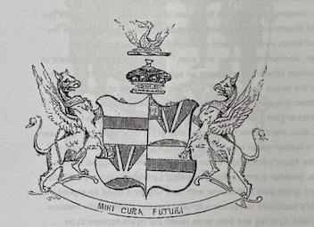
[Ongley Crest. From Edmund Lodge, The Peerage of the British Empire (London: Sanders & Ottley, 1839), 378.]
Bloomfield’s motto hangs on a scroll or cloth below his ‘coat of arms’, like Ongley’s Latin motto, ‘Mihi cura futuri’ (‘my care is for the future’) [illus. 2]. But the motto itself (in plain English), ‘FRIENDS IN NEED AND A FIG FOR THE HERALDS’ seems to privilege the labouring classes (‘FRIENDS IN NEED’) while deriding the pretensions of the nobility. Similarly, in ‘The Poet Angling’ ‘roach, dace […] bream, [and even] Gudgeons’ are valued more highly than ‘a Lord’. Bloomfield’s ‘coat of arms’ includes supporters, in the early nineteenth century, still an exclusive privilege of the nobility. However, instead of Ongley’s `[t]wo griffins argent, collared […] chained’[29] and rampant, Bloomfield’s coat of arms features ploughboys, affronté and passant, as supporters. While the Ongley crest above the escutcheon features a crown and above ‘On a wreath; a phoenix in flames, holding in his beak a fireball’,[30] Bloomfield’s crest is a ploughboy riding a cow. Ongley’s escutcheon merely features four fields, alternating simple geometric designs. Bloomfield’s bookplate is far more complex. While the left field of Bloomfield’s escutcheon incorporates eleven small designs the majority of which portray aspects of Bloomfield’s life as farmer’s boy, shoemaker, Aeolian harp-maker and poet,[31] the design on the right field of the escutcheon appears to represent an agitated Bloomfield. While Hardy interprets the image as portraying a drunken Bloomfield at a rural harvest home, Graver suggests the design reveals Bloomfield ‘shaking his noisemakers at [the opposite field] as if it were a flock of jackdaws.’[32] However, Sam Ward correctly observes that ‘[t]he capering figure […] wears a cobbler’s leather apron and holds a cobbler’s shoe strap and hammer.’[33] Indeed, the figure’s stockings, apron and small hammer suggest that he is an artisan, perhaps a shoemaker, Bloomfield’s profession since the 1780s. In the light of the poet’s encounter with Lord Ongley it could be argued that Bloomfield’s bookplate comprises a forceful parody of aristocratic heraldry. In profile with right leg and both arms raised the figure appears to be imitating the martial heraldic symbol of a lion rampant. This 1813 representation of Bloomfield, an increasingly impoverished and marginalized shoemaker, poet and Aeolian harp-maker, as ‘artisan-poet rampant’ framed by a mass of heraldic quarterings representing Bloomfield’s range of achievements as farmer’s boy, craftsman and poet may be interpreted, like the epigram and the ‘apology’, as a rejoinder to Lord Ongley’s pretensions, minimal accomplishments and ‘violat[ion of] the feelings of the poor.’[34]
I am grateful to Keri Davies for reading and commenting extensively on an earlier draft of this note
Angus Whitehead is an Assistant Professor at the National Institute of Education, Singapore.
[1] See William Wickett and Nicholas Duval, The Farmer’s Boy; The Story of a Suffolk Poet (Lavenham, Suffolk, 1971), 53; Robert Bloomfield, Letter to Hannah Bloomfield, 9-10 November 1815 (Letter 297), Tim Fulford and Lynda Pratt (eds.), The Letters of Robert Bloomfield and His Circle, Electronic Edition (all references to Bloomfield’s letters hereafter are from this electronic edition).
[2] Robert Bloomfield, letter to John Thomas Lloyd Baker, 25 May 1821 (Letter 351).
[3] Bloomfield’s sole reference to fish in his published poetry appears in Book I of The Banks of Wye where he describes how while he and his hosts dined on a boat on the Wye near Ravencliff and Coldwell Spring, ‘fish [.] watch’d beneath/ For falling crumbs’, The Banks of Wye (London, 1813), 18.
[4] Robert Bloomfield, letter to Hannah Bloomfield, 28 August 1811 (Letter 268).
[5] Robert Bloomfield, letter to Mary Ann Bloomfield, 4 September 1804. See also Robert Bloomfield, letter to Mary Ann Bloomfield, 9 September 1804 (Letters 138-9). Bloomfield also describes himself as ‘fisher-general to the family’ (see Robert Bloomfield, letter to Mary Ann Bloomfield, 15-16 September 1804, Letter 140).
[6] Robert Bloomfield, letter to Thomas Inskip, 27 June 1806 (Letter 189). According to Samuel Taylor, writing in 1800, the Ivel contained ‘pike, perch, fine eels, crawfish, and abundance of common fish’ (Samuel Taylor, Angling in All its Branches (London, 1800), 2). Bloomfield, writing to Hannah from Shefford in late 1815, jokes ‘Such is the changing state of things here, that I expect in my next to have to say somthing (sic) like the following, “The Ivel has taken into its head to turn about and run towards Clophill, it would do your heart good to see how it contrives to get up the waterfall at Chicksands.”’ (9-10 November 1815; Letter 297). Four years earlier, in a letter to his friend Mary Lloyd Baker discussing his proposed move to Shefford, Bloomfield mentions the advantage of ‘the free ramble by a stream full of fish’ (letter to Mary Lloyd Baker, 14-15 August 1811 (Letter 265). Bloomfield is almost certainly referring to the Ivel.
[7] Robert Bloomfield, letter to Mary Ann Bloomfield. 25 June 1810 (Letter 251).
[8] Robert and Hannah Bloomfield, letter to James Bloomfield [nephew], 27 July 1819 (Letter 338).
[9] Perhaps the author was Thomas Inskip. Inskip later published anecdotes in an article entitled ‘Bloomfield and his Latter Days’, The Odd Fellows’ Quarterly Magazine, vol. IX, NS (July, 1847), 346-49. Bloomfield had known Inskip since at least 1806. See Robert Bloomfield to Thomas Inskip. 27 June 1806 (Letter 189).
[10] ‘Original Anecdote of Bloomfield’, The Mirror of Literature, Amusement and Instruction, Saturday 14 August 1824, 118-19.
[11] Ongley’s title was a recent creation in the Irish peerage (July 1776) (see Edmund Lodge, The Genealogy of the Existing British Peerage, 6th edn (London, 1838, 372))). Roger Fulford has described Robert Henry Ongley as ‘a rough Bedfordshire peer’ (Roger Fulford, Samuel Whitbread, 1764-1875: A Study in Opposition (London, 1967), 336). A letter from Ongley to Samuel Whitbread reveals his attitude to the plebeian inhabitants surrounding Old Warden Park and perhaps Ongley’s failing health. ‘I have been confined almost entirely to my bed since Thursday last … [Old] Warden is full of vagabonds’: 18 December 1811, Whitbread Correspondence, Bedfordshire County Record Office, W 1/333, cited Alan F. Cricket, ed., Samuel Whitbread’s Notebooks, 1810-11, 1813-14 (Bedford, 1971), 80.
[12] See Gentleman’s Magazine September 1814, 294. Ongley’s father, Robert, Lord Ongley, had been an MP for Bedfordshire. Anne Fitzpatrick, estranged wife of Bloomfield’s early patron Augustus Henry Fitzroy, third Duke of Grafton, appears to have assisted the second Lord Ongley win his Bedfordshire seat. See Matthew Kilburn, ‘Anne Fitzpatrick’, ODNB.
[13] ‘The Ongley Family’ Bedfordshire Archives and Records Service http://www.bedfordshire.gov.uk/CommunitvAndLiving/ArchivesAndRecordOffice/CommunityArchives/OldWarden/TheOngleyFamily.aspx accessed 2 June 2009.
[14] Note for example the Epigram’s inclusion of ‘gudgeon’, a word rarely used in eighteenth and early nineteenth-century poetry. Before 1800 Amos Cottle wrote ‘The Sparrow and the Gudgeon, a Fable’, but the poem was not published until 1837 (see Joseph Cottle, Early Recollections (London, 1837) Vol. I, 121-34. However, the word appears regularly in seventeenth-century poetry. See for example ‘[…] Flownder, Pout, the Wraith, the Gudgeon, and the boneless Seal’, Nicholas Billingsley, ‘The World’s Infancy’ (London, 1658). ‘Gudgeon’ appears in Bloomfield’s letters and was clearly part of the poet’s vocabulary (see Letter 268).
[15] See Robert Bloomfield, Letter to George Bloomfield, 24 February 1801, Letter 50. ‘On Hearing of the Translation of Part of the Farmer’s Boy into Latin’ was published in The Monthly Mirror, 11 (1801), 271 as ‘Impromptu. On hearing that part of “The Farmer’s Boy” was translated into Latin’. See also Robert Bloomfield, Rural Tales (London, 1802), 105. ‘Wine, Beauty, Smiles and Social Mirth’ was published in The Remains of Robert Bloomfield (London: Baldwin, Craddock,and Joy, 1824), Vol 1, 40.
[16] See Letters 16, 49, 63, 64, 70, 286.
[17] See the MS poem included in a letter to Mrs Palmer, 7 December 1802 (Letter 101), Robert Bloomfield to George Bloomfield (Letter 115) and ‘THE INVITATION’ at the beginning of May Day with the Muses. See John Goodridge and John Lucas, Robert Bloomfield; Selected Poems (Nottingham, 2007), 140. Bloomfield’s friend and fellow poet William Holloway also addressed Bloomfield as ‘Giles” in ‘An Epistle from Roger Coulter of Dorsetshire to his Friend Giles Bloomfield the Suffolk Farmer’s Boy’ (Monthly Mirror, May 1802, 350).
[18] ‘To Angle for Gudgeon’ Sporting Magazine; or Monthly Calendar, October 1793, 39.
[19] See Thomas Holcroft, Anna St Ives: a Novel (London, 1794), Vol VII, 97.
[20] Bloomfield received support and patronage from, amongst others, the third and fourth Dukes of Grafton, the Earl of Buchan, Sir Charles Bunbury and Samuel Whitbread.
[21] In a letter to fellow poet William Holloway, Bloomfield recalled the ‘pleasure I have so often found in roaming about the flower-deck’t meadows at Honington with my Brothers.’ Robert Bloomfield, letter to William Holloway, before 11 June 1809 (Letter 238).
[22] Robert Bloomfield, letter to George Bloomfield, 27 August 1801 (Letter 55), See also Robert Bloomfield, letter to George Bloomfield , 1 November 1802 (Letter 98).
[23] Nathaniel Bloomfield, An Essay on War (London, 1803), 36.
[24] Ibid, 37.
[25] Joseph Weston, ed., Remains of Robert Bloomfield (London, 1824), II, 53. Here Bloomfield appears to recall specific lines of ‘Elegy on the Enclosure of Honington Green’. Compare stanzas 15, 18.
[26] W J Hardy, Bookplates (London, 1893), 164-5.
[27] Bruce Graver, ‘Illustrating The Farmer’s Boy‘, Simon White, John Goodridge, and Bridget Keegan, eds., Robert Bloomfield; Lyric, Class and the Romantic Canon (Lewisburg, 2006), 66. Graver cites Bloomfield’s letter to Elizabeth Glover, 1 November 1801 (Letter 66). Bloomfield’s bookplate is reproduced figure 16 (ibid.).
[28] See the Ongley crest reproduced in Edmund Lodge, The Genealogy of the Existing British Peerage (London, 1838), 372. Bloomfield’s first encounter with heraldry may have been the coats of arms of George I and the funeral monument to seventeenth-century landowner John Ball in the chancel of St Andrew’s church, Sapiston (see Roy Tricker, St Andrew’s Church, Sapiston, Suffolk (London, 2005), 7).
[29] Hugh Clark, The Peerage of the Nobility of England, Scotland and Ireland (London, 1779), 216.
[30] Ibid.
[31] The three top left designs in the left field represent two sets of crossed shoemaker’s tools intersected by a horizontal bar featuring a work bench; the top right designs represent pigs and a sheaf of corn divided by a diagonal bar, represented as a ploughed field. The bottom right hand design. represents three open books, one of which is engraved ‘Farmers Boy’, below an Aeolian harp and a sheet of music; the bottom left hand design features a bird (a goose?), a hay wagon and a plough horse.
[32] Graver, 66.
[33] Sam Ward, ‘Robert Bloomfield’s Bookplate’, The Robert Bloomfield Society Newsletter, No. 1, June 2001, 8.
[34] Robert Bloomfield, The Farmer’s Boy (London, 1800), 46. While Ongley’s father and grandfather’s achievements are listed, genealogists have little to say concerning the life of the second Lord Ongley. See for example Lodge, 372.
The First Robert Bloomfield Society
Motto: Floreat Ager! – ‘May the field bloom’
President: Miss Constance Isherwood, Meppershall Rectory, Shefford, Beds
Vice-Presidents: Mr. Walter Bloomfield, Mr. Joseph B. Cooke, Mr. Edwin Craven-Lee, Mr. G.F. Alldritt and Mrs. Writer (née Bloomfield).
Treasurer: Rev. R. Isherwood, Meppershall Rectory, Shefford, Beds.
Nota bene:
The Aim of this Society, which was founded on May 4, 1904 on the occasion of the Unveiling of the ROBERT BLOOMFIELD Memorial Tablet at Shefford, Bedfordshire, is to promote an Enthusiastic interest in the beautiful Pastoral Poems of ROBERT BLOOMFIELD, and to keep his memory for ever green. It behoves the Members to be ever on the look out for Early Editions of the Poems, and Relics of the Poet, which when found should be notified to the President, who will endeavour to acquire them from the funds of the Society.
All books and relics will be taken care of by the President who will lend them to any of the Members, who may desire to borrow them.
Members are asked to read every one of the Pastoral Poems, in order to become familiar with them all, and also to interest their friends in them. Besides this Members should take an interest in the haunts of the Poet, and prevent, if possible, the destruction and demolition of his Birthplace at Honington, Suffolk, and ‘Bloomfield House’, Shefford, where the Poet lived for eleven years, and died on August 19th, 1823, and also to visit, when in the neighbourhood, the last resting place of the Poet in Campton Churchyard (one mile from Shefford), and to see the grave is kept in good order.
The Aim of the Society is to purchase, eventually, Bloomfield House, Shefford, in order to fit it up as a Museum to contain the books and relics collected by the Society.
It has been customary, since the formation of the Society to celebrate the Anniversary of the Birth of the Poet – December 3rd (1766) – by placing flowers, contributed by the Members, on the Poet’s grave.
There is now no Subscription or entrance fee, and each Member is supplied with a Badge (‘A Bunch of sweet Lavender on a ground of primrose silk’), and it is understood that a member joins for life.
This note is taken from a typescript prospectus, not dated, but probably later than 1910, the date on some notes by E. Craven-Lee attached to it. It was published in The Bedfordshire Magazine, Vol 23, No 178 (Autumn 1991), p. 60.
Newsletter no. 20, Autumn 2010
‘With kindred pleasures moved, and cares opprest,
Sharing alike our weariness and rest
Who lives the daily partner of our hours
Through every change of heat, and frost, and show’ers;
Partakes our chearful meals, or burns with thirst
In mutual labour, and in mutual trust,
The kindly intercourse will ever prove
A bond of amity and social love.’
The Farmer’s Boy, ‘Winter’, 1-8
As we move towards winter and with the not entirely inappropriate words of Bloomfield ringing in our ears, it is time to reflect on two important anniversaries. John Goodridge described the first Robert Bloomfield Society Newsletter as a small acorn, adding – with suitably Bloomfieldian imagery – ‘please nurture it and help it grow into a large and perfectly sturdy and useful oak.’ It is now ten years since our society began, and coincides with this, the twentieth Newsletter, not perhaps a sturdy oak yet, but useful certainly, and growing all the time. It is a remarkable achievement for a small literary society, and an occasion which should not go unrecorded. We are all deeply grateful to Professor Goodridge for his pioneering efforts, and to the vision of the late Philip Hoskins, and for the dedicated and hard work of Hugh Underhill, who has continued to nurture the Newsletter into very healthy leaf. The society is growing too, slowly but steadily, and has done much to place Bloomfield in his rightful position in English literature, something we must all be proud of. May the Robert Bloomfield Society and its Newsletter long continue to flourish.
Best wishes,
Rodney Lines, Chairman
A Personal Note on Robert Bloomfield from our President Ronald Blythe
It is just ten years and twenty Newsletters since John Goodridge drew us all together at Nottingham Trent University to remember Robert Bloomfield. Since then a wealth of discovery, scholarship and delight in this poet has revealed him as a far more considerable writer and musician than any of us at that time could have imagined. We know that John Clare loved him and regarded him as his mentor. But the real Robert Bloomfield had more or less vanished – slipped from sight. Students and elderly country folk knew him only as the author of The Farmer’s Boy, and nothing more. I knew Bloomfield because he lived not all that way from us, and I was in my teens thrilled by the propinquity of local writers and artists. I cycled to his birthplace and wrote about him in The East Anglian Magazine, and was proud of him, as I was of George Crabbe, for they belonged to us Suffolk people, as did John Constable and Benjamin Britten, and at sixteen I saw them all as good as each other just because they shared our county. But then I did observe that when Constable quoted Bloomfield, which he often did, and with deep understanding of both his poetry and his background, that another writer came into sight, one far more intelligent and meaningful than my localized celebrity. For example, the great landscape painter, whose father employed a number of farmer’s boys, felt himself indebted to someone who to his mind could put into words their ideal relationship. Tragically, the agricultural order which exists in Bloomfield’s world was breaking down in Constable’s world. John Clare of course would describe it. As these great changes took place, and as Constable witnessed to his distress their impact on his beloved Stour Valley, he appeared to have turned more and more to the old order which Bloomfield saw along the Norfolk-Suffolk border, and to writing verses from The Farmer’s Boy under his pictures.
Once in a pub near Bury St Edmund’s, my brother and I, ‘hardly old enough to lift the latch’, as they said, heard an elderly farmworker reciting the poem and then step-dancing. It seemed to me the very last native familiarity with Bloomfield – this in the Thirties. My knowledge of him came from W.A. Dutt’s Some Literary Associations of East Anglia (1907), still a treasure. Dutt quotes William Hazlitt. ‘As a painter of simple natural scenery, and of the still life of the country, few writers have more undeniable and unassuming pretensions than this ingenious and self-taught poet.’ Dutt himself, writing during the agricultural depression which overwhelmed Britain before World War One, saw Bloomfield as realistic, although again like most of us before John Goodridge and our Society revealed his full output and character, he can only give the repetitive narrow view. ‘Bloomfield, however, sang the song of servitude to the land which demands so much of him and gives him so little in return – and in giving expression to the woes and pains, and humble aspirations of the farm-hand he struck only such notes as would find a responsive chord in the breasts of his fellow servitors… he gave us no eagle-flights…his flights were like those of the little brown birds which seldom rise far above the field furrows; he sang at times of the soaring lark, but was himself the grey linnet keeping close to the earth; and like the linnet he was the better loved by quiet country folk for his humbler strains.’
I must admit that he was better loved by me when his intellectual power was shown, not by earlier critics, but by a musical instrument. Bloomfield made and played, via the most etherial sound known to man, wind harps. When I listened to this Aeolian music in his parish church at Honington, it dismissed all the condescension with which he had been praised. It made him enormously interesting to me, and this interest has been expanded during the life of our Society by scholarship. It is not unusual for excellent writers to be imprisoned by repetitive clichés which sum-up their work. The fact remains that those who previously had for one reason or another to write something about Robert Bloomfield knew little about him. Charles Lamb, a far from unkind person, had somehow laid down the foundations of what he was, and for a century or more after no one dug deeper. We have. It is to our credit that in a decade we have exposed an extraordinary writer-craftsman who in turn is able to reveal much about us. We are making him live – and he is making us conscious of an original mind.
A new selection of Ronald Blythe’s writings over fifty years has been published as Aftermath: Selected Writings 1960-2010 by Black Dog Books, 104 Trinity Street, Norwich NR2 2BJ, ISBN 978-0-9549286-9-8, £18.99. It has a Foreword by Richard Mabey and includes extracts from Akenfield and Divine Landscapes, The View in Winter, his introductions to Hazlitt and Henry James, and much else.
As noted by both Rodney Lines and Ronald Blythe, this issue of the Newsletter is not only the twentieth but also marks the tenth anniversary of the founding, or more precisely refounding, of the Robert Bloomfield Society. The inaugural meeting or ‘launch’ was held at Nottingham Trent University on 10 October 2000, with John Goodridge, Simon White, and our much missed founding Secretary Philip Hoskins being primarily responsible. Our president Ronald Blythe spoke. So we have reached something of a milestone. It was proposed at the time of the launch to issue two newsletters and to hold if possible ‘one social/cultural event and one academic event’ each year. This pattern has been sustained until this year, with a Bloomfield Day and AGM around Easter and a visit to a site connected with Bloomfield later in the year. Unfortunately, it has not so far been possible to organize this year’s proposed revisiting of the Moyses Hall Museum, but it is hoped that the visit will take place at a future date. Among notable successes have been a walk around Shefford followed by the dedication in Campton church of a memorial plaque to Bloomfield in 2003; a visit to Moyses Hall Museum and Euston Hall in 2004; to the British Library in 2006, where we were given privileged access to the library’s Bloomfield holdings with a detailed introduction by Dr. Elizabeth James; to the Wye Valley in 2007 following part of Robert’s route in The Banks of Wye; the 2005 Annual Bloomfield Day when Rodney Lines and Ed Fordham presented ‘Images of Robert Bloomfield and his day’ and papers were given by Sam Ward, Bridget Keegan and myself; and the 2009 Bloomfield Day when Dr. Peter Cochran spoke about his edition of The Farmer’s Boy, Simon White gave a paper, and Tim Fulford and Kerri Andrews introduced the electronic edition of the Bloomfield letters. After a dip for a year or two, membership has slowly increased, with some members inevitably dropping out but new members joining each year. It stands at present at 65. The main threat to the effective functioning and successful continuation of the Society remains the failure to find a Secretary to replace Philip Hoskins. A secretary is really the essential linchpin, co-ordinating meetings and events, communicating with members, and available as a contact for both members and non-members. Finally, I must mention that the Society is indebted in no small way to John Goodridge for providing facilities for the committee to meet and hosting the annual Bloomfield Day and AGM, as well as arranging the printing and sending-out of each issue of the Newsletter.
Hugh Underhill
Robert Bloomfield Middle School Annual Prizegiving
The annual Prizegiving and Year 8 Leavers’ evening at the Robert Bloomfield Middle School in Shefford was held on 19 July. This is, in fact, the fifth such occasion at which a representative of the Society has presented the Creative Writing Award funded by the Society. The prizewinning student Rowan Lewis was presented with an attractively bound hardback copy of the Penguin anthology Poems for Life. Membership Secretary Angela Underhill once again attended the evening to make the presentation. This anthology, though otherwise very representative, regrettably does not include any of Robert Bloomfield’s poetry; Angela was unable to trace a suitable anthology which does. However, the anthology seemed an appropriate award to such a gifted young writer such as Rowan.
Sauce for the Daw
John Lucas
A stand-alone copy of this article is available here.
The birds of England’s eastern shires have been well served by poets. Quite apart from Clare, there is Crabbe, whose observation of Suffolk’s shorebirds and waders, while they don’t match in detail his studies of its flora, are memorably acute; there is Lincolnshire’s Tennyson, who, after modernized plumbing had been introduced to his house, apparently enjoyed nothing so much as lying in a hot bath, smoking his pipe and reading about some of the birds on which he had written well as he would continue to do; and in our own day, Lynn Wycherley, who hails from fen country and whose poetry I have the privilege to publish, has written with extraordinary attentiveness about the tawny owl, skylark, goshawk and Bewick swan, among others.[1] In addition, Peregrine, by the great maverick ornithologist, J.A. Baker, provides not merely a detailed study of a bird he thought about to vanish from post-war Essex – ironically it has flourished whereas other birds whose continuing abundance he took for granted have virtually disappeared – but does so in prose of such luminous intensity that not to call it poetic would be simply churlish. Here, for example, is Baker on an October sighting of a male peregrine. (Called a tiercel.)
I saw his colours clearly in the brilliant light: back and secondaries rich burnt sienna; primaries black; underparts ochreous yellow, streaked with arrowheads of tawny brown. Down the pale cheeks the long dark triangle of the moustachial lobes depended from the polished sun-reflecting eyes. Through the smoke, through the spray, he glided over the wall in a smooth outpouring, like water gliding over stone. The waders shimmered to earth and slept. The hawk’s plumage stained through shadows of smoke, gleamed like mail in glittering spray.[2]
You could spend a long time analysing how Baker comes by his effects here: the aplomb that makes possible a paragraph of almost armorial, static, description to be followed by one of irresistible movement, as though the bird, having been studied in leisurely detail, almost as though it is perched on a wrist, is now released into activity, one in which beauty is combined with threat. (‘Brute beauty and valour and act, oh, air, pride plume’.) It takes a true writer to convert the adjectival ‘stained’ into a verb and so energize it, give some sense of the peregrine’s looming, thrilling, menacing presence above the sleeping waders.By comparison with the writers mentioned above, Bloomfield has little to say about birdlife and perhaps understandably most of what he does is to be found in The Farmer’s Boy. There are, for example, some breezy lines in ‘Summer’ where Giles is described as assailing the hedge-sparrows (as they must be) who ‘from the mazes of the leafy thorn / Drop one by one upon the bending corn’ (lines 55-9), and, in the same book, a longer passage notes how he bends his hat into an imitation telescope in order to watch a skylark’s flight: ‘He views the Spot, and as the cloud moves by / Again she stretches up the clear blue sky / Her form, her motion, undistinguis’d quite / Save when she wheels direct from shade to light’. (The entire passage runs lines 88-106). The image of a boy peering through a hat that he has rolled into a miniature telescope, like a poor man’s version of Herschel, is almost a topos of the time, one used by Bewick among others. Nor is that all. In ‘Spring’, the whistling Giles adds his ‘shrill mattin’ to the dawn chorus in which
The Blackbird strove with emulation sweet
And echo answer’d from her close retreat
The sporting Whitethroat on some twigs-end borne
Pourd hymns to freedom and the rising morn
Stopt in her song perchance the starting Thrush
Shook a bright show’er from the Blackthorn-bush
Where dewdrops thick as early blossoms hung
And trembled as the Minstrel sweetly sung. (lines 139-145)
Those keen to credit Bloomfield’s influence on later poets may want to note here the line in ‘Home Thoughts from Abroad’ where Browning calls up a memory of how
After April, when May follows,
And the whitethroat builds, and all the swallows!
Hark, where my blossomed pear-tree in the hedge
Leans to the field and scatters on the clover
Blossoms and dewdrops — at the bent spray’s edge —
That’s the wise thrush…
These passages undoubtedly warrant some comment. Not here, however. Instead, I want to draw attention to a moment in ‘Autumn’. Moment is all it is. Bloomfield is describing a Sunday which brings the pastor to his church where ‘from the hollows of the tower on high / The greycap’d Daws in saucy legions fly.’ (lines 87-8). Blink and you miss it. I admit I would have done so had it not been for the serendipitous fact that as I was re-reading The Farmer’s Boy with an eye on what I might write for this, the 20th Number of the Bloomfield Newsletter, I was also reading Mark Cocker’s remarkable Crow Country as well as re-reading for the first time in over 40 years Daniel Deronda. Had I forgotten or had I not even noticed in my original reading how often George Eliot attaches to the pre-married Gwendolen Harleth the soubriquet ‘saucy’? To give just three of what I feel to be countless instances. Mrs Davilow, Gwendolen’s mother, imagines telling her sister that she will not get Gwendolen to marry for her pleasure, ‘becoming rather saucy when she identified herself with her daughter.’ A little later, George Eliot refers to the girl’s ‘saucy satire’, and later still, when she has become engaged to Grandcourt, Gwendolen asks Daniel Deronda whether he objects to her hunting, suiting to her words ‘a saucy movement of the chin.’ It seems plain that, by the time George Eliot is using the word, ‘saucy’ has become, as it were, gendered. The word is exclusively reserved for women. They are potential Saucy Sals. The OED gives as the predominant 20th century ‘smutty, suggestive’, but that isn’t what George Eliot has in mind. It’s more that Gwendolen is ‘pert, sprightly’, though her sprightliness will be hobbled by Grandcourt’s viciousness.
But clearly, Bloomfield can’t have meant his jackdaws to be any of these things. Look the word up in Johnson’s great Dictionary of the English Language and you find that he considers it not to come from ‘sauce’ but from the Latin ‘salsus’ – which my Latin Dictionary gives as ‘salty, satirical’ – and he thus includes among its meanings `contemptuous of superiors; insolent; impudent; impertinent.’ In these related meanings the word hasn’t therefore much changed since Shakespeare used it in Othello, where Roderigo tells Brabantio that his daughter is in the ‘lascivious’ Moor’s clasp, although should Brabantio know this – which he clearly doesn’t – ‘we then have done you bold and saucy wrongs.’ Gone beyond the bounds of civility, he means, which is more or less what Macbeth means when he admits to being bound in by ‘saucy doubts and fears,’ of rebellion against him. The usurping king knows that there will be those in his kingdom who are contemptuous of the authority in which he’s dressed himself.
Well, jackdaws do have a reputation for impudence, though of a playful kind, which I doubt Bloomfield intends. His ‘legions’ of jackdaws are, I suspect, rather more like an unruly mob. But why? At this point we need Mark Cocker’s assistance. Cocker lives in rural Norfolk where he is able to study the vast throngs of corvids that gather of an evening before setting off for their roosting places. (These roosts are quite distinct by the way from rookeries, which are used only during the short season when the birds breed.) And one thing to emerge from his fascinating study is that crows, rooks and jackdaws roost together. Different as they may be, the jackdaws especially distinguishable not merely because they are shorter than either rook or crow but have the grey cap which Giles notices, they all come together at roosting time. In studying the birds’ habits Cocker, like any sensible ornithological writer, goes to Clare for confirmation of his own observations. Hence, his quoting some lines from The Shepherd’s Calendar, where Clare notes how
many a mingled swathy crowd
Rook crow and jackdaw noising loud
Fly to and from the dreary fen
Dull winters weary flight agen
Flopping on heavy wings away
As soon as morning wakens grey
And when the sun sets round and red
Returns to naked woods to bed
‘January: A Winter’s Day.’[3]
The swathy (swarthy) crowd includes nearly all those smaller corvids – not ravens – whom Clare notices regularly keep company and whose habits are also decidedly regular. Measuring the approach of night, Macbeth observes that ‘The Crow makes flight to the rooky wood.’ Cocker says that ‘In pre-industrial times, before the wristwatch was a birthright, the birds’ outward and homeward processions acted as the slow-swinging metronome for the agricultural day. Farm workers used rook flights as a means of knowing exactly when to down tools’.[4] Far from unruly, then, the birds seem to operate to rule.
As with most communities, however, newcomers are liable to be resented. Territorial rights are to be protected.
The rooks begin to build & pleasant looks
The homestead elms now almost black with rooks
The birds at first for mastership will try
They fight for sticks and squabble as they flye
& if a stranger comes they soon invade
& pull his nest in pieces soon as made
The carrion crow & hawk dare never come
They dare to fight like armys round their home[5]
Cocker tells an extraordinary tale of driving past a field where he notices two rooks surrounded by a large circle of their kind. A few hours later, when he returns, the crowd has vanished, the two are dead. Why had they been killed? Were they interlopers? Had they offended against some corvid law? Were they guilty of sauciness to their own kind? What seems certain is that rough justice had been administered and its operation tells against any sense that the swathy crowd is lawless, even though the law by which it operates feels in this instance one that might have given even Draco pause. (Though probably not for long.) The circle constituted not some out-of-control mob but a parliament or anyway court martial of crows. In which case, and though I wouldn’t want to press the case, we might note that Giles sees ‘legions’ of daws’ flying from the tower, and that the prime, Latin, meaning of legion is a number – usually 5,000 – of Roman soldiers.
Well, stone the crows or stone a crow. Yet this expression, which neither Brewer nor Partridge carries, and which, less surprisingly, doesn’t turn up in the very inadequate Oxford Dictionary of Idioms, isn’t right for the context. ‘Stone the crows’ is tongue-in-cheek: ironic amazement. The Pope is a Catholic. Well, stone the crows. Crows are stoned. They are or were the arable farmer’s public enemy number one. They don’t obey his rule to keep off the land. ‘No road here.’ Clare resented such a notice. Rook, crow and jackdaw couldn’t give a damn. They are omnivorous feeders. They eat carrion, they kill small birds and animals for food — but they also eat grain. I doubt if the young boys sent out in all weathers to stone crows off newly-seeded ploughland bothered which corvid they were taking aim at. They were all pests, all insolently indifferent to efforts to drive them away, all saucy. Only a well-aimed stone could disperse them, at least for a short time. Then, back they’d come. Impudent, unruly, saucy. Nottinghamshire and England’s great bowler, Alfred Shaw, 1842-1906, always insisted that the phenomenal accuracy which made him far and away the most economical bowler of his generation came from a childhood of stoning crows in fields near his native Burton Joyce. His close friend, Arthur Shrewsbury, 1856-1903, for years an England as well as Notts. opening batsman, and with whom Shaw ran a successful sports business, thought Shaw unrivalled for line and length, and there is a touching story that they are buried twenty-two yards from each other in Gedling graveyard and that Shrewsbury’s gravestone has fallen flat — bowled out by Shaw, wags affirm, though in fact poor Shrewsbury was one of a disturbingly high number of cricketers to have taken their own lives. (And, for the record, I should add that I have never found either gravestone.)
Bewick took a more tolerant line on corvids. In vol.1 of his History of British Birds: Containing the History and Description of Land Birds, he writes of the rook that they:
are fond of the erucae of the hedge-chafer, or chestnut brown beetle, for which they search with indefatigable pains. They are often accused of feeding on the corn just after it has been sown, and various contrivances have been made both to kill and frighten them away; but, in our estimation, the advantages derived from the destruction they make among grubs, larvae, worms, and noxious insects, greatly overpay the injury done to the future harvest, by the small quantity of corn they may destroy in searching after their favourite food.
But Bewick confirms Clare’s account of the rook as a no-nonsense brawler when it comes to defending its patch. Rookeries, he says, ‘are often the scenes of bitter contests; the new-comers are frequently driven away by the old inhabitants, their half-built nests torn to pieces, and the unfortunate couple forced to begin their work anew in some undisturbed situation.’ As an instance of this, he cites the pair which built its nest on the vane of the spire of a building near Newcastle Exchange, ‘the nest and its inhabitants turning about with every change of wind. They returned and built their nest every year on the same place till 1793, soon after which the spire was taken down’.[6] Persistently saucy, we might say.
[1] Lynne Wycherley’s collections are At the Edge of Light (2003), North Flight (2006) and Poppy in a Storm-Struck Field (2009), all published by Shoestring Press.
[2] The Peregrine, The Hill of Summer & Diaries: The Complete Works of J.A. Baker, Introduction by Mark Cocker & edited by John Fanshawe, Collins, 2010, p.49. (The Peregrine, based on ten years of field observations, 1955-1965, was first published in 1967.)
[3] In fact, Cocker uses the Tibbles’ text, from their Selected Poems, whereas I have gone to Robinson and Summerfield’s Oxford edition. But for Cocker’s purpose, the text he uses is perfectly adequate.
[4] Mark Cocker, Crow Country: A Meditation on Birds, Landscape and Nature, first published by Cape in 2007, reprinted Vintage 2008, p.122. Actually, metronomes don’t swing, they click back and forth, though that’s hardly enough of an error to hang a man on. Hugh Underhill reminds me that in the piece he wrote on `The Broken Crutch’ in the ninth issue of the Bloomfield Newsletter, he drew attention to the image of rooks rising by thousands ‘Their gliding shadows o’er the court-yard spread’. Thousands is no exaggeration. Cocker notes that during the evening pre-roost gatherings of rooks, crows and jackdaws, ‘no matter how many thousands…have poured away from the grounded mass, the original volume seems as great as ever…. When the flow ceases altogether you realize that this fantastic tumult involving tens of thousands of birds is finite after all’ (p. 4) And later, p. 128, he reports the roost at Hatton Castle in Aberdeenshire, reckoned in the 1971 bird census at 65,000 birds.
[5] I have taken as text here the 1973 MidNAG edition of Birds Nest, edited by Anne Tibble, p.53. The following poem in the edition, ‘The crows will swee above’ points out that crows build so high they need never fear boys who try to rob birds’ nests: ‘They seek their house together in the gloam / & only from the stranger feel alarm’. Who is the stranger? An outsider crow? A falcon? But as long as the crow stays put the falcon can’t hurt it. Driving through Tasmania in 1997, my wife and I were suddenly alerted by the posture of a crow that was cowering – there is no other word – on a dead tree branch in a field beside the road, its shoulders hunched, feathers ruffled. The cause of the bird’s panic became clear when a marsh harrier swooped massively down and perched on the branch within a foot or so of the petrified crow. The crow did not stir, and after a few moments the marsh harrier lifted off before climbing steadily up and away. Perhaps it had already killed and eaten, but anyway falcons seize their prey in flight, swooping or ‘stooping’ on them, the talon at the rear of their claw positioned so as to drive into the neck of their victim and effect an instant kill. They can’t kill a sitting bird.
[6] My text is from the Paddington edition of Masterpieces of the Illustrated Book, 1976: A History of British Birds by Thomas Bewick, pp. 85-6. 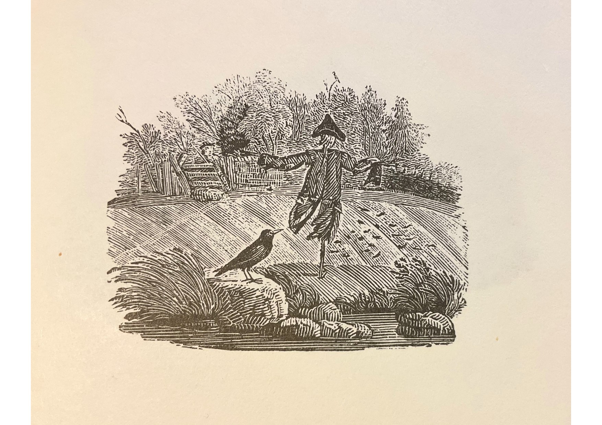
Bewick’s great work was first published in 1826 with his own superb illustrations. As well as The Rook, he illustrates and writes about The Jack-Daw (as he has it) and The Crow. For this last, he supplies not only a full-fig. illustration but a wondrous tailpiece in which a crow sits on a stone beside a stream looking at a scarecrow.
I would like to report that the look is one of insolent sauciness but honesty compels me to admit that I can’t be sure. (On Bewick, see also n.5 to Tim Fulford’s ‘Two New Letters’ below.)
Two New Letters of Bloomfield and his Circle
Tim Fulford
After the publication of the online edition I jointly edited— The Letters of Robert Bloomfield and his Circle—I was delighted to receive notice of two previously unknown letters held by the James Smith Noel Collection at Louisiana State University in Shreveport. The curator of the collection, Robert C. Leitz, III, Ph.D, having discovered them tipped into a copy of George Gordon, Lord Byron, English Bards and Scotch Reviewers: A Satire, vol. II Illustrated, collected and arranged by Arnold Wood (New York: Charles B. Richardson, 1865), was kind enough to send me transcriptions. Later this year, they will take their place in the online edition; I’m happy to be able to give readers of this Newsletter a preview of them. Chiefly significant in that they shed further light on the role of Capel Lofft and Thomas Hill in promoting and editing the work of Bloomfield and other labouring-class poets and artists, they also reveal the importance of magazine publication in the period.
***
Robert Bloomfield to Thomas Hill, [1] 11 September 1801
City Road, Sep 11th 1801
Dear Sir
Probably you may have heard of the great loss sustained by your correspondent, and my friend, at Troston[2] —Mrs Lofft died on Tuesday morning just after a painful! illness.
In a letter to me by Mr Lofft[3] on the preceeding Sunday is this passage; which I thus fully state to you to discharge myself of as much of the request as appears for me to fulfill.—
‘I mentioned some months back that there was a young man of the name of Hole of whose abilities as a young engraver on wood I had seen some promising specimens, and who would be soon out of his apprenticeship to Mr Bewick.[4] The apprenticeship will expire this month. His name is Henry Hole,[5] a sister of mine was his Godmother. I wish him to come to Town if he could have a safe and beneficial introduction to business. Will you mention this to Mr Hill, Mr Park,[7] and others of our friends. I think he seems likely to be a modest, sober, and industrious youth, and that he has shown both ingenuity and application. Any reference that might be thought nessisary would, of course be made to Mr Bewick in case there should be an opening where there is so much employment for this art.’
Mr Lofft did not by his letter of Sunday, seem to think Mrs L in more danger than for some time before, but I yesterday had the statement from his own hand, of her death.—
If the Poetical department of the Mirror is not overstocked perhaps the following lines would not disgrace it.[8] If my blemishes appear to you, be so kind as return it to me that I may insert it in the pending Vollon, where Mr Lofft expects to see it, as it has his approbation already.
Song.
For A Highland Drover, returning from England.
By Robert Bloomfield, author of the Farmer’s Boy.
Now fare-thee-well England, no further I’ll roam,
But follow my shadow that points the way home;
Your gray southern shores shall not tempt me to stay,
For my Maggy’s at home, and my children at play;
Tis this makes my Bonnet set light on my brow,
Gives my sorrows their strength, and my bosom its glow.
Farewell Mountaineers! My companions adieu!.
Soon, many long miles when I’m severed from you,
I shall miss your white Horns on the brink of the Bourne,
And o’er the rough Heaths where you’ll never return;
But in brave English pastures you cannot complain,
While your drover speeds back to his Maggy again.
O Tweed! gentle Tweed, as I pass your green vales,
More than life, more than love, my tired spirit inhales;
There, Scotland, my darling lies full in my view,
With her barefooted Lasses and Mountains so blue;
To the Mountains away! My heart bounds like the Hind;
For home is so sweet, and my Maggy so kind.
As day after day I still follow my course,
And in fancy trace back every Stream to its source,
Hope cheers me up Hills, where the road lies before
O’er Hills just as high, and o’er tracks of wild Moor;
The keen polar Star nightly rising to view;
But Maggy’s rny Star, just as steady and true.
O Ghosts of my Fathers! O Heroes, look down;
Fix my wandering thoughts on your deeds of renown,
For the glory of Scotland reigns warm in my breast,
And fortitude grows both from toil and from rest;
May your deeds and your worth be for ever in view,
And may Maggy bear sons not worthy of you.
Love, why do you urge me, so weary and poor?
I cannot step faster, I cannot do more;
I’ve pas’d silver Tweed; e’en the Tay flows behind:
Yet fatigue I’ll disdain;—my reward I shall find;
Thou sweet smile of innocence, thou art my prize,
And the joy that will sparkle in Maggy’s blue eyes
She’ll watch to the southward; . . . perhaps she will sigh,
That the way is so long, and the Mountains so high;
Perhaps some huge Rock in the dusk she may see,
And will say in her fondness, ‘that surely is he.’!
Good Wife you’re deceiv’d; I’m still far from my home;
Go, sleep, my dear Maggy; tomorrow I’ll come.
Your Obedien Servt
Robert Bloomfield.
Address: Thos Hill Esq No. 7 Henrietta St Covent Garden
***
Capel Lofft to Thomas Hill, 24 May 1804
Dear Sir,
I have already intimated to you my Sentiments of the uncommon Merit both in Subject & Execution of the Poem which I now send[10]
I have therefore only to refer to that Letter[9] both for my sentiments & for the Poems on which the Author & I wish Mr Hood[11] to undertake the publication
Mr Bloomfield has kindly offered to take charge of the MS
There are little alterations which I might think expedient to make in it: but these I have not at present intimated. Writing as I did in the Saga of the Farmers Boy that it should be first presented as a candidate for publication exactly as it stands[12]
Mr Bloomfield, I am persuaded, and so is Mrs Lofft,[13] will earn much of true Fame by his poem on vaccine Inoculation.[14] She has greatly improved it: and we think it an exceedingly interesting & beautiful Poem. The Contagion appears to us most happily appropriate poetical, & graceful.
I am,
Dear Sir,
Yrs sincerely
Capel Lofft.
I rather incline to think that there is truth in Discovery. Mentions of a vast Planet above 1000 & millions of miles beyond the Herschilian.[15] What is said of its bylaws agrees astronomically with what is said to be its period. I do wonder, however, that they have not seen it at the Royal Observatory at Greenwich: which by a letter from the elder Mr Walker[16] I learn to be a Fact: but far more that they have no information concerning it; which I understand from the same authority. This would startle my belief of it: if the circumstances did not so well cohere.
Thomas Hill Esqr
Thurs: 24 May 1804.
How like you the ode on Negro Emancipation in St Domingo?[17]
[1] Thomas Hill (1760-1840): by trade a drysalter at Queenhithe, was also the editor of the Monthly Mirror and a book-collector. He supervised the publication of The Farmer’s Boy and published in the Mirror verse by Bloomfield and other rural labouring-class poets including Thomas Dermody and Henry Kirke White. Hill occupied a house in Henrietta Street, Covent Garden, London, and a cottage at Sydenham, Kent, where he entertained writers, actors and artists.
[2] Troston Hall, Capel Lofft’s house, near Bloomfield’s birthplace Honington, Suffolk.
[3] Anne Lofft, née Emlyn, married to Capel Lofft since 1778, died on 9 September 1801. Her widower married again in spring 1802.
[4] Capel Lofft (1751-1824) was a Whig gentleman-landowner and lawyer who argued for parliamentary reform, the abolition of slavery and for the traditional rights of the rural poor to glean the fields at harvest. He became, like the 3rd Duke of Grafton and many of Bloomfield’s supporters among the gentry and aristocracy, a Unitarian. He was removed from the magistracy after having, in 1800, jumped into the tumbrel taking Sarah Lloyd, a servant girl, to the scaffold, and harangued the crowd about the injustice of the sentence. Lofft was a writer of verse for magazines, especially sonnets, a collection of which he edited (Laura (1813)). He was an impetuous, energetic and tactless patron of Bloomfield who, having received the manuscript of The Farmer’s Boy from George Bloomfield, used his connections to have it published. His later falling-out with Bloomfield, precipitated by his insistence on including his own editorial comments as footnotes to Rural Tales, was never total.
[5] Thomas Bewick (1753-1828): with his younger brother John (1760-1795), Bewick revived the art of woodcut illustration, with animals, birds and rural scenes his speciality. The Bewicks illustrated editions of poems by Gay and by Goldsmith. Bloomfield admired Thomas’s A General History of Quadrupeds (1790).
[6] Henry Hole (1782-1852): born in Newcastle, Hole was apprenticed to Bewick from 24 March 1794 until autumn 1801. Hole engraved cuts for the 1808 edition of Felicia Dorothea Browne (later Mrs Hemans), Poems. He retired from the profession on inheriting a landed estate in Derbyshire.
[7] Thomas Park (1758/9-1834): trained as an engraver, Park became a poet, book-collector, antiquary, bibliographer and editor—not least of Bloomfield’s poetry. He lived in Piccadilly, then Portman Square, and from 1804 at Church Row, Hampstead.
[8] Bloomfield’s `Song for a Highland Drover’ was published in The Monthly Mirror, which Hill edited, 12 (September 1801), 197-98. It was collected in Bloomfield’s Rural Tales (1802), where ‘not worthy’ in the final line of stanza 5 is corrected to `not unworthy’.
[9] Here Lofft refers to a manuscript poem about which, in a letter to Bloomfield of 9 May 1804 (letter 128 of The Letters of Robert Bloomfield and his Circle), he asked, ‘Shall I send Mr Boundens poem to Messrs Vernor & Hood or Mr Hill or to you or how? I wrote to Mr Hill but have not yet his answer. My Proposals for the Author are these if they will print & publish the First Edition at their own risque clear of Expense to the Author allowing him half or not less than a third of the Net profits of that Edition to be open to a New Agreement between the Parties for the 2d or any subsequent edition’. Joseph Bounden was the author of Fatal Curiosity, or, the Vision of Silvester; a Poem, in three books (London: Longmans, 1805)—a work designed to illustrate the perils of knowing the future that was damned with faint praise in the Monthly Review, 48 (1805), 435-36 and condemned by The Annual Review for 1805, 4 (1806), 566 in these words: ‘Woe to the wight whose “fatal curiosity” leads him to cut open these lethargic leaves! His heavy slumbers will certainly be unblest by the genius of poetry’. Bounden remained in correspondence with Lofft and published more poetry, including The Deserted City; Eva, a tale in two cantos; and other poems (London, 1824), a publication which also met with mixed reviews.
[10] Lofft’s letter to Hill on the subject has not been traced.
[11] Thomas Hood (d. 1811): a bookseller in Dundee before 1799, Hood was the active partner in the publishing firm of Vernor & Hood, London from 1799 to 1811. Hood published The Farmer’s Boy, Rural Tales, Wild Flowers and the stereotype edition of the Poems of Robert Bloomfield. He argued with Lofft over the latter’s editorial interventions in Bloomfield’s texts—and this, perhaps, was the reason Lofft preferred to approach Hood over Bounden’s poem via Bloomfield and via Hill.
[12] Lofft’s willingness to let Hood see the manuscript of The Farmer’s Boy exactly as it stood did not prevent him, after Hood had undertaken to publish it, from altering it so as to replace many of Bloomfield’s earthier descriptions with polite circumlocutions. For the original manuscript text, as reconstituted by Bloomfield in later years, see Robert Bloomfield, Selected Poems, rev. edn., ed. John Goodridge and John Lucas (Nottingham: Trent Editions, 2007).
[13] Sarah Watson Lofft, nee Finch: a magazine poet published in The Monthly Mirror and The Morning Chronicle, Finch became Capel Lofft’s second wife in spring 1802, with Bloomfield making her wedding shoes.
[14] Good Tidings; Or, News from the Farm, Bloomfield’s poem about smallpox and vaccination, was published in 1804 with the Loffts’ alterations. See letter 128 of The Letters of Robert Bloomfield and his Circle.
[15] Lofft was a keen astronomer. Here he refers to reports of a new heavenly body much more distant than Uranus, discovered in 1781 by William Herschel (1738-1822). The body to which he refers was most likely Juno whose discovery was formally reported on 1 September 1804, by German astronomer Karl L. Harding. Juno was the third asteroid to be discovered: as with the previous two, Ceres (discovered by Guiseppe Piazzi (1746-1826) in 1801) and Pallas (discovered in 1802 by Heinrich Wilhelm Matthaus Olbers (1758-1840)), it was at first thought to be a planet; Herschel coined the term ‘asteroid’ to describe these small star-like bodies in 1802.
[16] Adam Walker (1731-1821), an astronomer and popular lecturer on science who taught Shelley as a schoolboy. By Lofft’s good offices, Bloomfield was given tickets to attend a lecture by Walker in March 1800. See Bloomfield to Lofft, 5 March 1800: letter 23 of The Letters of Robert Bloomfield and his Circle.
[17] Lofft, a longtime opponent of the slave trade, had forwarded to Bloomfield a packet containing Thomas Clio Rickman’s ‘An Ode in Celebration of the Emancipation of the Blacks of St Domingo, November 29, 1803’ (London, 1804). This prompted Bloomfield to write to Rickman, a radical pressman and admirer of Thomas Paine, on 29 May. Rickman replied on 30th with an offer to sell Bloomfield’s poem (presumably Good Tidings) from his shop. See letters 129 and 130 of The Letters of Robert Bloomfield and his Circle.
My famous poet
Ed Fordham
It was a very short note, but it was very definitive. According to my grandfather Edward Alan Fordham, we were related to a famous poet. I’ve been aware of the claim for some years; my father and uncle spoke of it too, but as my grandfather passed away in 1983 I’ve never had the chance to ask him for more information. My great-grandfather, in common with many Victorians, loved Tennyson: ‘who crossed the bar’ is cited on his and his wife’s gravestone. But the precise connection to anyone was very unclear – how famous? A household name? I searched but with little sense of direction and instead busied myself with the broader family history. It was 1999 when I found the will of a distant Suffolk cousin James Fordham – in which he listed his surviving sons and daughters. That in turn led me to their birth and christening records and then their death certificates. And hidden away in the War Graves Commission I found Ebeneezer Bloomfield Fordham, died 1918 in Cologne, Germany. Bloomfield as a poet was unknown to me, but my genealogical knowledge twigged that this was probably a maiden name and so I did a search on Bloomfield and Suffolk and bingo – I had found my poet. I can’t deny a hint of disappointment – this was in modern terms no household name, I hadn’t read any Bloomfield poetry at school or since, but nonetheless I found references in encyclopaedias and the Oxford Biographical Dictionary. The precise relationship was still pretty unclear so I clung to the idea that we might be a direct descendant or descended through a close nephew/niece. Ebeneezer’s grandmother, as I had guessed, was a Mary Ann Bloomfield and as I searched Suffolk (largely around the villages of Barningham and Coney Weston) I found I could barely move for Fordhams and Bloomfields. And so as I went from bookshop to bookshop where previously I had browsed the poetry section, picking up an occasional Sylvia Plath, Adrian Mitchell or Stevie Smith. Now I searched and searched for Bloomfield. Nothing!
Just how famous was he? So I put the word out across my family and started asking in second-hand bookshops – some recognition of the poet but little of collections and books… I was due to meet a friend in London, just off Charing Cross Road and I was unusually early – Henry Pordes Books was open. `Bloomfield?’, I asked slightly plaintively. ‘The poet, not the photographer.’ And twenty minutes later I was standing outside with an 1800 first edition, large print copy of The Farmer’s Boy and £145 pounds lighter. I could have skipped down the street. Since then, of course, John Goodridge and Nottingham Trent University have revolutionized the profile and awareness of Robert Bloomfield. The Internet has unlocked information, be it original books, biographical details or more. For my part I now have my ‘famous poet’ – John Clare is the household name in his genre I tell people who ask – and I not only have a growing antiquarian book collection of contemporaneous editions but am increasingly picking up the colourful Victorian re-prints.
My parents and family are now very aware of Bloomfield. I discover my great-grandfather’s own collection of poetry books was stolen just after he died and the house was empty so I’ll never know if he owned a Farmer’s Boy or others. But now at least the family ‘legend’ has some meat on the bones. The only bit I hadn’t fully appreciated, however, was the sheer distance of the relationship between my three times great grandmother (Mary Ann Bloomfield) and Robert. But it’s very clear to me that if you lived in Suffolk your family tradition relating to Bloomfield had been sustained. (My family villages of Coney Weston and Barningham are very close to Euston Hall and Honington).
It’s well known that Robert’s fame in his own time was substantial, that in Victorian England he had a significant following, was widely reprinted, and achieved sustained sales. But as a consequence of the major boom in fame of Keats, Tennyson and other Romantics, Bloomfield’s waned, overtaken in his own field by Clare. But it’s clear to me that the pride, the local fame, and the tradition of Robert Bloomfield’s success, have been sustained over the generations in East Anglia and specifically in Suffolk. You don’t have to spend long there to find someone who when you explain your interest they reply `I’m related, my wife is related, etc., to Robert Bloomfield’. It’s happened to me in Hepworth, Bury St Edmunds, Ipswich, Newmarket and Mildenhall (and indeed one of the volunteer helpers at Euston Hall when the Society visited was a collateral descendant). Occasionally you encounter claims to direct descent from Robert, though the evidence shows that no such descendants exist. But the collateral descendants have ensured that the word-of-mouth fame of Suffolk poet Robert Bloomfield has survived. Given the renaissance in academic and literary appreciation of Robert Bloomfield’s work I have often wondered whether there is now a next stage of development.
The first task would be to secure wider and more sustained appreciation of his work in Suffolk, Bedfordshire and also in the City of London – the three places that have significance in his life and literary development. The second would be the direct marketing of Robert, his fame, achievements and poetry, to his collateral descendants. These are numerous and generating awareness and a pride amongst this set of people would work to bolster the Society, the interest in him and the maintenance of his reputation. The third would be the commissioning of a substantive biography. Without a doubt the 2003 authoritative John Clare by Jonathan Bate has added significantly to the lasting impact of Clare. Indeed there has been a recent flourish of interest in the labouring-class poets and the development of rural poetry, and a reassessment of the romantic tradition. Robert is unique in threading these three areas together and was in many ways the precursor to all.
There is a lot to do and it’s incumbent on all of us to move appreciation of Bloomfield forwards over the coming months and years.
Ed is the 2nd cousin, six times removed of Robert Bloomfield.
Portrait engraving after a design by Solomon Polack
The portrait is owned by Bruce Graver and I am grateful for his permission to reproduce it.
On 5 October 1800 Robert wrote to his brother George as follows:
Sunday Night, October 5
Dear George,
One of the enclosed papers is a discontinued journal, it may contain some information. The other paper your good sence will teach you to Burn. My portrait was taken some time ago by a miniature painter named Polack the painting was about five inches high; the engraving will be publishd next month. I don’t like the painting much. the print is published by subscription, for the benefit I believe of the engraver and the brother-in-law of Hood who employs him.
See Letter 38 of The Letters of Robert Bloomfield and his Circle.
Bloomfield refers to the miniature painter Solomon Polack (c.1757-c.1839), who worked in London, exhibiting at the Royal Academy, after immigrating from Holland. The picture was engraved by Brown and published, 1800, by Vernor and Hood.
Newsletter No. 21, Spring 2011
Annual Bloomfield Day and AGM
Members gathered at Nottingham Trent University on 2 April for this year’s annual Bloomfield Day and AGM. Our invited speaker, Dr. Adam Rounce, began the morning with a talk on ‘Bloomfield and the Eighteenth Century’. He pointed out that it was the eighteenth century which gave Bloomfield his poetic influences, influences which have become somewhat erased, covered over by Romanticism, and that the particular qualities of Bloomfield’s poetry developed from there. Dr. Rounce compared passages from Thomson, Cowper and Gray with passages of Bloomfield to show how Bloomfield found, from within their influence, his own voice, and how this significantly differs from precedents. In his ‘Winter’ from The Seasons Thomson gives us portentous vistas and grand passages from which morals are drawn. But Bloomfield’s ‘Winter’ avoids Thomson’s sententiousness, its concerns more practical and its feeling more humane. A passage in Book III of The Banks of Wye evoking a gloomy day and musing ‘many a solemn hour’ on the misdeeds of history may in mood remind us of Crabbe’s gloomy moralizing, but Bloomfield suddenly breaks away and restores emotional equilibrium as the day resumes ‘Light, life, and gladness’ and ‘contemplations on the dead’ flee. When in ‘Shooter’s Hill’ Bloomfield contemplates ‘some lone soul, whom no one sees’ in whom ‘genius’ may ‘glow’, we inevitably recall Gray’s ‘flower…born to blush unseen’ in his famous ‘Elegy’; not only, however, is Bloomfield’s style more prosaically down-to-earth, but where there is a certain fatalistic acceptance in Gray’s view of ‘Chill penury’, Bloomfield links ‘Want’s foul picture’ to human agency, to the neglect of those with ‘power and will’ to ameliorate want. Bloomfield is closer to Cowper and Clare in his love of little things – ‘From trifles oft my raptures spring’, he says in ‘Barnham Water’ – and ‘personal solidarity with nature’. The feelings Bloomfield associates with his old oak table resemble those of Cowper ‘On the Receipt of my Mother’s Picture out of Norfolk’, but here too there is a crucial difference. Cowper’s sense of personal suffering is more indulged, and though he celebrates the art that ‘baffles time’s tyrannic claim’, there is here, as in his ‘Yardley Oak’, an underlying sense of determinism, the inescapable spectre of Calvinism. Bloomfield is content to rest with the consolations of domesticity, of where he is rooted. And in ‘The Soldier’s Home’ his vision of the effects of change is much more celebratory and positive than Cowper’s in ‘Yardley Oak’. It is, of course, with Clare that Bloomfield’s expression of a kind of universal sympathy has the closest affinity. Bloomfield in ‘Shooter’s Hill’ love[s] to mark the flow’ret’s eye,’ and ‘Sees God in every shining stone, / And revels in variety’; Clare, in ‘The Flitting’, feels ‘at times a love and joy / For every weed and every thing.’
The freshness and clarity of Adam Rounce’s presentation, and his touches of humour, were much appreciated and several of his points were informatively enlarged upon in the following discussion.
After the lunch break we were privileged with a preview of Tim Fulford’s new on-line edition of The Banks of Wye, which he had very kindly offered to present to us. This, like the Bloomfield correspondence (to which, incidentally, additions continue to be made), will be available in the near future on the Romantic Circles website (https://www.romantic-circles.org/editions/) [Also on this site.] Tim Fulford explained that Bloomfield had spent four years on the poem, with the result that the MS exists in different states, and these different MSS are described; moreover, the three published editions contain variant readings. These variant readings are all listed and, an advantage over a printed variorum edition, can be simply accessed by clicking on the on-line text. Persons and places mentioned in the poem are indexed and can again be accessed by clicking. Tim very interestingly demonstrated several examples. New material available here is the MS of the Journal of a Tour down the River Wye which was published in the Remains. It is pointed out that this printed version was slightly censored and some passages excised: these are restored. Once again, fruitful discussion took place and it hardly needs to be said that this excellent work will provide yet another invaluable resource for readers and for Bloomfield scholarship.
The AGM completed the afternoon. As usual; minutes of the meeting will be available to members from the Membership Secretary on request. And we are once again most grateful to John Goodridge for providing facilities for our day and arranging refreshments.
‘The rude inelegance of poverty / Reigns here alone’: Robert Bloomfield’s Portrait of St Andrew’s church, Sapiston, in The Farmer’s Boy
Angus Whitehead
A stand-alone copy of this article is available here.
It[1] is well established that both the context and many elements of the content of Robert Bloomfield’s poem The Farmer’s Boy (completed April 1798) derive from the poet’s own boyhood experiences two decades earlier: the five years spent working as a labourer on his maternal uncle William Austin’s farm at Sapiston, North Suffolk from the ages of 11 to 14. However, claiming that in The Farmer’s Boy Bloomfield ‘says very little about his origins, his education, his early life and work’, John Lucas has described the poem as ‘a backward-glancing presentation of rural circumstance provid[ing] us with a vision of tranquility, of human comfort and harmony, a kind of discreetly utopian account of the “natural” world very far removed from the contentious actualities of the moment.’[2] Conversely, Simon White suggests that, ‘[t]he poem that resulted from this act of recall is not the straightforward idealization of life in rural Suffolk it is often said to be.’[3] Expanding upon White’s suggestion the following note discusses a short passage from ‘Autumn’, Book III of The Farmer’s Boy, in which Bloomfield draws upon identifiable details of his working life at Sapiston. My reading of this passage suggests that parts of Bloomfield’s first major poem do engage with the ‘contentious actualities’ of agricultural life in North Suffolk during the late 1770s. Lucas suggests that in several passages in ‘Summer’, the second section of The Farmer’s Boy, Bloomfield represents the present as contentious by contrasting the past (presumably Sapiston in the 1770s) with the present (the late 1790s).[4] in discussing lines 78-99 of ‘Autumn’, I will argue that Bloomfield’s careful deployment of ‘little particulars’[5] in representing his youth at Sapiston twenty years later reveals the Euston estate about the late 1770s not as the site of ‘a vision of tranquility’, but rather a far from utopian past, already manifestly impacted upon by enclosure and other improvements.
In October 1797, during the period in which he was composing The Farmer’s Boy, Bloomfield wrote to his mother, recalling his period of employment on his late uncle’s farm:
It is sixteen years last June since I washed my old hat in the Horse-pond and sold my smock for a shilling to Sam Shelver’s boy, and set off to London to turn shoemaker, and I always remark that though I am acquainted with the principle [sic] alterations and deaths and changes, children grown to Men and Women since, &c, the first thought that is, I mean whenever not thinking of other things my mind returns to the country, for the first moment, it always presents the old picture. I see my uncle master of the farm instead of my cousin, and can see in imagination my old neighbours and things just as they were[6]
After completing the poem, in a letter to an unidentified bookseller, Bloomfield described how he wrote the poem ‘intending it as a present to an aged mother now living on the spot; to whom the Church, the Mad Girl, the Farm-house, and all the local circumstances of the piece are intimately known.’[7] In The Farmer’s Boy, then, it appears that Bloomfield is consciously drawing upon vivid memories of his working life at Sapiston.[8]
In ‘Autumn’, the penultimate section of The Farmer’s Boy, Bloomfield describes the ‘Sabbath’ as a period of general leisure for the rural community, with one noted exception:
Kind rest extends to all;…save one poor beast
That true to time and an[d] place, is doom’d to plod
To bring the Pastor to the House of God
Mean structure where no dust of Hero’s lie
The rude inelegance of poverty
Reigns here alone: else why that roof of straw?
Those narrow windows with the frequent flaw?
O’er whose low cells the dock and mallow spreads
And rampant nettles lift their spiry heads
Whilst from the hollows of the tower on high
The greycap’d Daws in saucy legions fly.
Round these lone walls assembling neighbours meet
And tread departed friends beneath their feet
And new-brier’d graves that prompt the secret sigh
Shew each the spot where he himself must lie.[9]
Several reviewers of The Farmer’s Boy singled out this passage for particular praise. The British Critic described ‘the village meeting on a Sunday’ as ‘very picturesque’ and the Monthly Visitor judged ‘the church and the church-yard’ as ‘very happily described’.[10] More recently, Mina Gorji has suggested that the passage contains poignant echoes of Thomas Gray’s ‘Elegy Written in a Country Churchyard’.[11] Gorji’s reading especially might suggest that Bloomfield here is deliberately deploying a general and rather derivative description of a country churchyard. But a closer reading informed by newly uncovered details of the socio-historical context of Bloomfield’s immediate surroundings as a child employee on Austin’s farm during the late 1770s suggests that Bloomfield is rather drawing upon the specific and peculiar details of his ‘second’ local village church, notably its diminutive size, genuine antiquity, and remoteness. Nevertheless, despite Bloomfield’s attempts to provide a historically and geographically specific account of Sapiston c. 1780, the pervading influence of Gray’s ‘Elegy’ meant that contemporary reviewers experienced difficulties seeing beyond Gray’s poem and appreciating Bloomfield’s close observations. The British Critic’s sense that the description of the church is ‘very picturesque’ works in much the same way: picturesque viewing is so ingrained by the turn of the century that it is difficult for critics to distinguish between a close observation of a specific locale and a generalized evocation of a country churchyard in the modes of either Gray’s ‘Elegy’ or the Picturesque. I hope the following setting of Bloomfield’s Sapiston church passage in a detailed historical context will help throw into relief Bloomfield’s close observation through memory of a village in transition in the late 1770s.
As the writer of A Concise Description of Bury St Edmund’s and Its Environs (1827) recognized, in this passage, Bloomfield is describing Sapiston’s parish church of St Andrew.[12]
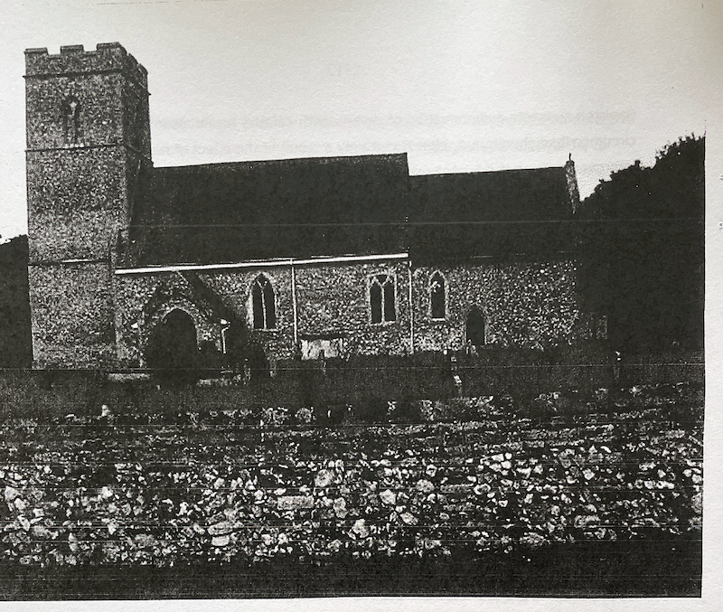
Illustration 1. Sapiston Church, August 2008 (Angus Whitehead).
Up until the middle of the fourteenth century the village of Sapiston lay to the east of, and in close proximity to the church. About 1350, the village removed several hundred metres north, leaving the small church and a nearby farm in their original location, isolated among fields of pasture. William Austin’s farm appears to have been built on or near the site of this medieval farmhouse.[13] Before the building of a new rectory closer to St Andrews about 1866, the incumbent minister almost certainly lived in Sapiston village at some distance from the old church.[14] The secluded location of St Andrew’s informs Bloomfield’s description of the church’s ‘lone walls’ (‘Autumn’ line 100) and his suggestion of the distance to and from ‘the house of God’ that the Pastor’s ‘poor beast […] is doom’d to plod’.
Jonathan Lawson describes these lines as ‘a bit of humour’ and ‘whimsically humorous irony.[15] However, topographical evidence suggests the passage is borne of a memory based on close observation, a clergyman’s horse unlike other animals in the community denied rest on the Sabbath, echoing Bloomfield’s sentiments of sympathy for poorly treated horses and other animals expressed elsewhere in The Farmer’s Boy.[16] The ‘Pastor’ referred to here can be identified as Robert Andrews who in 1730 was presented the curacy at St Andrew’s, Sapiston by Charles FitzRoy, second Duke of Grafton (1683-1757), Lord Chancellor and grandfather of William Austin’s landlord and Bloomfield’s future patron, Augustus Henry FitzRoy, third Duke of Grafton.[17] Andrews had been incumbent at St Andrews for almost 50 years and must therefore have been over 70 years old when the eleven-year-old Bloomfield was first employed at Austin’s farm in 1777.[18] Andrews’ advanced age might have necessitated his arrival on horseback and could perhaps explain Bloomfield’s reference later in the ‘Autumn’ section of The Farmer’s Boy to the ‘tedious service’ on Sundays at St Andrews.[19] But the passage may also suggest some hint of class distinction between the pastor and his congregation. The fact that only ‘one poor beast’ is doomed to work on the Sabbath at Sapiston suggests that only the pastor rides to church and therefore is the sole member of the gentry now attending the church and that the labouring-class congregation, including Giles’ master, arrives on foot.[20] Bloomfield’s focus in this passage is upon the horse rather than the pastor. It is almost as if it is the horse rather than the pastor’s will that brings the latter to church. Bloomfield seems to hint at the pastor’s virtual absence from his labouring-class parishioners’ lives. Thus Bloomfield’s treatment of the pastor here appears to have more in common with George Crabbe’s ‘contemporary’ description of the absent ‘busy priest’ in Book I of The Village than with Oliver Goldsmith’s nostalgic reference to the ever visible ‘village preacher’ in The Deserted Village. In the passage cited above, Bloomfield describes the church as a ‘[m]ean structure’ exhibiting the ‘rude inelegance of poverty’ not evident elsewhere. St Andrew’s is a diminutive pre-Norman church, lacking the fifteenth century remodelling evident in neighbouring churches in Suffolk. The nave is too narrow for a central aisle and there is capacity for no more than 100 worshippers.[21] By the 1770s Sapiston had a population of almost 200.[22] Thus during Bloomfield’s childhood the church was old, simple, and inadequate for contemporary needs.
White has recently suggested that scholars of Bloomfield should ‘consider the impact of the poet’s London life upon The Farmer’s Boy’.[23] Indeed, during his period of composition of The Farmer’s Boy (May 1796-April 1798), Bloomfield’s recollections of this small rural church two decades earlier may have been coloured by over fifteen years of worshipping at different, and on occasion far more elegant churches in the metropolis such as the Unitarian church in Old Jewry and St Paul’s Cathedral.[24] However, while still a ‘farmer’s boy’, the adolescent Bloomfield might have made comparison between the ‘mean structure’ at Sapiston with the nearby church of his birthplace and childhood, All Saints, Honington, at which his mother was a regular worshipper. All Saints is considerably larger and was almost certainly better maintained than St Andrew’s. Its features include larger and more ornate windows and porch, as well as a wall painting of St Thomas of Canterbury.[25] In the same passage Bloomfield observes that at St Andrew’s ‘no dust of Hero’s lie’. Indeed, unlike St Paul’s cathedral, St Andrew’s, without a crypt, contains no remains of ‘Hero’s’ past or present.[26] The church does feature a wall memorial to landowner John Bull and ledger slabs to members of the Aldham family, owners of the manor at Sapiston. These date from the first half of the seventeenth century, before the building of Euston Hall and the creation of the surrounding estate by Henry Bennett, Earl of Arlington about 1666, later inherited by his grandson, Henry Fitzroy, illegitimate son of Charles II and First Duke of Grafton about 1675.[27] However, these indicators of gentry formerly present at Sapiston do not feature in Bloomfield’s representation of Sapiston in The Farmer’s Boy. Bloomfield’s reference to St Andrew’s ‘roof of straw’ is consistent with J. Storer’s 1806 engraving of the church.
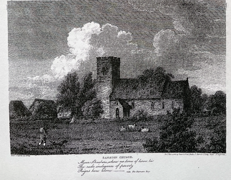
Illustration 2 ‘SAPISTON CHURCH’ by J. Greig in E. W. Brayley, Views of Norfolk, Suffolk, and Northamptonshire, Illustrative of the Works of Robert Bloomfield (London, 1806) (Collection of Angus Whitehead).
As late as 1855 William White described Sapiston church as ‘an ancient thatched fabric.’[28] But Bloomfield’s observation that: ‘The rude inelegance of poverty/Reigns here alone: else why that roof of straw?’ seems troubling. Most buildings in the vicinity would have featured thatched roofs, including William Austin’s nearby farmhouse and Bloomfield’s mother’s house and All Saints church in neighbouring Honington.[29] However, other details of Bloomfield’s description are clearly recognizable from a present day exploration of St Andrews. The description of ‘narrow windows with the frequent flaw’ alludes to the thin thirteenth-century traceried lancet windows of clear glass visible on the north and south sides of the church.[30] Bloomfield’s reference to the ‘hollows of the tower on high’ refers to the double belfry windows in Sapiston church’s early fourteenth-century square embattled western tower.[31]
Bloomfield observes that at ‘sermon time’, ‘Round these lone walls assembling neighbours meet / And tread departed friends beneath their feet’.[32] A reviewer in The British Critic describes the ‘assembling neighbours’ as a ‘village meeting’.[33] Greig’s 1806 engraving of St Andrew’s, Sapiston reveals a very small churchyard area surrounded by a wicket fence, surrounding an area far smaller than the walled churchyard in evidence today. Economic considerations may have motivated the Duke of Grafton and his stewards to utilize as much of his estate as possible.[34] Therefore potential churchyard space was used as sheep pasture.[35] In such circumstances, as Lawson has observed, Sapiston churchgoers had little choice but to step on friends’ graves, and reflect on the fact that they themselves would in all probability not lie beside their dead friends, but replace them.[36]
Bloomfield’s description of the meeting of labouring-class parishioners in St Andrew’s churchyard concludes with an allusion to ‘new-brier’d graves that prompt the secret sigh / Shew each the spot where he himself must lie’.[37] In their notes to their edition of Bloomfield’s Selected Poems, John Goodridge and John Lucas suggest that perhaps the graves are briared ‘as a protection against body snatchers.’[38] However, an article in Time’s Telescope for 1829 indicates a different purpose: ‘The shoots of the bramble are used to briar graves in churchyards, to protect them from cattle.’[39] This seems particularly apposite at Sapiston, a church surrounded by sheep-grazing pasture, and horses were occasionally tethered in the churchyard.[40] In Beauties of the Scottish Poets; or Harp of Renfrewshire (1821) in an annotation to Sherrif’s song ‘Adown the Green Dell’ (which includes the line ‘On the brier-bound grave of my dear’) the editor of the anthology notes:
‘We were much pleased’ says a Pedestrian Tourist, ‘with the neat appearance of some of the more remote villages in the south of England: – the graves were firmly laced with a kind of basket-work of briers, brambles &c. many of these had taken root, and being kept in order, cast even a cheerful look over the silent mansions of the dead, and evinced, on the part of the survivors, an affectionate regard for the memory of departed relatives; which in too many instances we find cease the moment they are consigned to “the dark and narrow house.”’[41]
Although by the first decades of the twentieth century the practice of briaring appears to have been long abandoned and forgotten,[42] the practice dates back to before the mid-seventeenth century when Jeremy Taylor wrote in The Rules and Exercises of Holy Dying (1651): ‘[…] the summer gives green turf and brambles to bind upon our graves […] and you can go no whither but you tread upon a dead man’s bones’.[43] The fact that this practice continued among the labouring poor of Sapiston suggests a continuation of seventeenth-century traditions in spite of the circumscribed churchyard, almost certainly a result of the effect of recent agricultural improvements on the Euston estate.[44]
In this exploration of the specific context of the poet’s portrait of St Andrew’s, Sapiston, I hope I have demonstrated that this section of Bloomfield’s ‘Autumn’ is not merely a generalized, derivative paean to a pastoral past, but rather a detailed portrait from memory of Sapiston church, c. 1779. Bloomfield’s portrait is inextricably linked to the contentious actualities of life on the modernized Euston Estate, an agricultural milieu already in the process of rapid change during the late 1770s. If Bloomfield writing in the late 1790s exhibits nostalgia here, it is often a nostalgia for the surviving remnants of an agricultural life and its traditions that pre-date the arrival of the FitzRoy family and which survived, despite agricultural developments, into the poet’s childhood and employment by his uncle William Austin.
Angus Whitehead is Assistant Professor at the National Institute of Education, Singapore. His note ‘The Poet Angling’ appeared in Newsletter no. 19.
[1] I wish to thank Hazel Mary Whitehead for her assistance in researching this note and Andrew James Smith and Ken Davies for their comments on an earlier draft of the note.
[2] John Lucas, ‘Bloomfield and Clare’, John Goodridge, ed., The Independent Spirit: John Clare and the self-taught tradition (Helpstone, 1994), 57 and 59. Lucas goes on to describe Bloomfield’s representation of a ‘society of mutuality’, a past ideal that is prelapsarian and innocent of enclosure, and posits this as the reason Bloomfield became for Clare and other readers ‘our English Theocritus’ (see Lucas 62-3). As I suggest below, while this may have been Bloomfield’s ideal, it is not the world he is consistently describing throughout The Farmer’s Boy.
[3] Simon White, Robert Bloomfield, Romanticism and the Poetry of Community (Aldershot, 2007), 30.
[4] See Lucas, 61-2.
[5] Bloomfield’s phrase: see Robert Bloomfield, letter to George Bloomfield, 8 September-6 October 1799, Tim Fulford and Lynda Pratt eds. The Letters of Robert Bloomfield and his Circle. Hereafter all of Bloomfield’s letters are cited from this edition.
[6] Robert Bloomfield, letter to Elizabeth Bloomfield, 22-[29] October 1797.
[7] Bloomfield, letter to an unidentified bookseller [before 21 June 1798]. As late as 1809 Bloomfield recalled to his daughter Hannah ‘the road leading down from the Heath field towards Sapiston was my favorite boyish walk and makes a conspicuous figure in The Farmer’s Boy.’ Robert Bloomfield to Hannah Bloomfield 14 September 1809.
[8] Bloomfield’s patron, Augustus Henry FitzRoy, third Duke of Grafton, appears to have recognized the `local circumstances’ portrayed in The Farmer’s Boy, notably William Austin, Bloomfield’s uncle and employer. In February 1800, Grafton wrote to Capel Lofft, ‘The character [Bloomfield] has given was well deserved by William Austin’. Cited Capel Lofft, letter to George Bloomfield, 1 March 1800.
[9] Robert Bloomfield, The Farmer’s Boy, ‘Autumn’, lines 77-9. Text cited from a ‘genuine Copy’ MS copy of poem reprinted in Robert Bloomfield, Selected Poems, ed. John Goodridge and John Lucas, 2nd edn (Nottingham, 2007) [hereafter Selected Poems] All subsequent references to and quotations from The Farmer’s Boy are taken from this version of the poem.
[10] The British Critic and Quarterly Theological Review (June 1800), 605; The Monthly Visitor (March 1802), 228.
[11] See Mina Gorji, ‘Burying Bloomfield: Poetical Remains and “the unlettered muse”’, Simon White, John Goodridge, and Bridget Keegan eds, Robert Bloomfield: Lyric, Class, and the Romantic Canon (Lewisburg, 2006), 242-3.
[12] Anon., A Concise Description of Bury St Edmund’s and Its Environs (London, 1827), 284. See also The Suffolk Literary Chronicle (October 1838), 8. Sapiston lies east of and adjacent to the village of Honington, Bloomfield’s birthplace and parental home, separated by the River Blackbourne (in fact a small stream), a tributary of the River Ouse. Contemporary engravings of ‘THE FARM HOUSE AT SAPISTON’ by J. Storer and `SAPISTON CHURCH’ by J. Greig appear in E. W. Brayley, Views of Norfolk, Suffolk, and Northamptonshire, Illustrative of the Works of Robert Bloomfield (London, 1806).
[13] See Brayley, 31; William Wickett and Nicholas Duval, The Farmer’s Boy (Lavenham, Suffolk: Terence Dalton Limited, 1971), 11.
[14] See Syd Thurlow, Village Life and Folk Remembered (Sapiston: Syd Thurlow, 2004), 36.
[15] Jonathan Lawson, Robert Bloomfield (Boston: Twayne Publishers, 1980), 84.
[16] See for example Bloomfield’s descriptions of the docked ‘Poor patient Ball’ in ‘Summer’, lines 205-16, and Dobbin and the post horse in ‘Winter’, lines 155-212. For a discussion of Bloomfield in the context of contemporary writings on animal rights, see White, 27-8, 47-8.
[17] A Concise Description of Bury St Edmund’s and Its Environs, 285; A. A. Hanham, ‘Charles Fitzroy’, ODNB. `Pastor’ is a word Bloomfield uses elsewhere when referring to a minister of a church at which he worshipped. See Robert Bloomfield, letter to Revd Samuel Tillbrook, 24 February 1817.
[18] Andrews had married Bloomfield’s parents at Sapiston in June 1755. See Wickett and Duval, 9; International Genealogical Index. He also officiated when Austin married Bloomfield’s maternal aunt, Judith Manby at Sapiston church in 1759 (IGI). Andrews died in 1784, 14 years before Bloomfield completed The Farmer’s Boy. See A Concise Description of Bury St Edmund’s and Its Environs, 285. Bloomfield briefly returned to his birthplace of Honington during that year (see ‘Preface’, Robert Bloomfield, The Farmer’s Boy (London: Vernor and Hood, 1800 [third edition]), xv). William Austin was baptized 11 November 1734 at Sapiston Church (IGI). He was therefore in his mid-forties during the period 1777-81 recollected by Bloomfield in The Farmer’s Boy.
[19] See Selected Poems, 45.
[20] Iron rings on the eastern wall of St Andrew’s church suggests that in earlier periods members of the congregation did ride to church, leaving their horses tethered in the surrounding churchyard (see Roy Tricker, St Andrew’s Church, Sapiston, Suffolk (London, 2005), 3). The Pastor represented in the passage from ‘Autumn’ discussed in this note, apparently does not attend the ‘harvest home’ portrayed in ‘Summer’ (see Selected Poems, 40). However, the May day poetry competition held by Sir Ambrose Higham at Oakly Hall in Bloomfield’s last volume of poetry, May Day with the Muses (1822) begins with a blessing from Higham’s ‘venerable chaplain’. See Robert Bloomfield, May Day with the Muses (Selected Poems, 145). Surviving wall memorials in St Andrew’s church (see Tricker, 7) suggest that members of the gentry were resident at Sapiston, attending services at St Andrew’s church during the mid-seventeenth century. It might be argued that these memorials bear testimony to earlier social cohesion between the labouring class and the gentry, celebrated in Bloomfield’s ‘The Broken Crutch’. Bloomfield may have connected the Fitzroy family’s acquisition of the Euston estate about 1670 and the consequent disappearance of a visible gentry at Sapiston with the disappearance of formerly cordial and direct social intercourse between nobility, gentry and the labouring class.
[21] Rubble walls and ‘[s]ections of layered masonry indicate that this is an early structure’ (Tricker, 2). ‘Most of the visible features date from the late-thirteenth and early fourteenth-century remodelling, with hardly any of the fifteenth-century work usually so prominent in East Anglian churches.’ [ibid].
[22] I base this figure on the fact that just over twenty years later (1801) Sapiston had a population of approximately 207. See James Bell, A New and Comprehensive Gazetteer of England and Wales (Glasgow, 1835), vol. III, 407.
[23] See White, 8.
[24] See Capel Lofft, ‘Preface’, Robert Bloomfield, The Farmer’s Boy (London, 1800), vi; Robert Bloomfield, ‘To My Oak Table’, see especially lines 73-84, Selected Poems, 94-7. There may therefore be some retrospective irony in Bloomfield’s describing St Andrew’s diminutive tower as ‘on high’.
[25] However, like St Andrew’s, All Saints’ Church, Honington, had a ‘roof of straw’. All Saints’ is perhaps referred to obliquely in The Farmer’s Boy in the lines ‘the distant chime / Of sabbath bells he hears at sermon time / That down the brook sound sweetly in the gale / Or strike the rising hill or scim the dale.’ (Selected Poems, 44). Bloomfield is referring here to the sound of the bells of nearby St Andrew’s travelling over the fields and River Blackbourne, a tributary of the Ouse that separates Sapiston and Honington. It is perhaps significant that the bells of the much nearer St Andrew’s are not mentioned. The young Bloomfield would almost certainly have encountered the more recent and even more ornate FitzRoy family church of St Genevieve in Euston Park.
[26] The first and second Dukes of Grafton are interred at St Genevieve’s.
[27] The author of A Concise Description of Bury St Edmund’s and Its Environs (285) notes seventeenth century monuments to members of the Bull, Crofts and Aldham families.
[28] William White, History, Gazetteer and Directory of Suffolk (Sheffield, 1855), 729.
[29] See J. Storer’s engravings ‘The Farm House at Sapiston’ and ‘Honington Church and the cottage in which Robt Bloomfield was Born’ in E. W. Brayley, Views.
[30] Curiously, what might strike a twenty-first century visitor as the more aesthetically pleasing aspects of both the exterior and interior of St Andrew’s, for instance the twelfth-century south doorway and font (see Tricker, 2-6) do not feature in Bloomfield’s exterior description of the church and churchyard.
[31] See Thomas Kitson Cromwell, Excursions in the County of Suffolk (London, 1818), vol 1, 107. Syd Thurlow recalls during his boyhood at Sapiston in the 1920s, a century and a half on after the period Bloomfield recollects in The Farmer’s Boy, ‘The Church tower was full of owls, jackdaws and pigeons.’ Thurlow, Village Life and Folk Remembered, 13.
[32] Selected Poems, 44.
[33] The British Critic and Quarterly Theological Review (June 1800), 605.
[34] See Arthur Young, General View of the Agriculture of the County of Suffolk, 3rd edn (London, 1804), 269. See also Nathaniel Bloomfield, An Essay on War (London, 1803), xviii-xix, 29-40 (esp. 36). Although ‘Elegy on the Enclosure of Honington Green’ laments principally the enclosure of a small section of common land at Honington c. 1800, Nathaniel Bloomfield’s poem recalls the impact of earlier policies of enclosure at Euston upon the labouring poor c. 1775.
[35] In his ‘Wye Journal’ (1807) Bloomfield describes a churchyard at Hay: ‘[.. .] it was a beautiful, sad, impressive sight which will make me detest the unhallowed mob of bones in Bunhill Fields more than I ever did before: let me be buried any where [sic] but in a crowd’: Joseph Weston, ed., The Remains of Robert Bloomfield (London, 1824), I, 36.
[36] See Lawson, 84. On 27 December 1789 George Bloomfield wrote to Robert Bloomfield ‘I went last Monday to Honington, and saw poor little Isaac interred […] In digging his grave, they took up what time had left of the coffin, &c. of my brother John.’ See George Bloomfield to Robert Bloomfield, 27 December 1789.
[37] Although Bloomfield appears to have remained largely forgotten throughout the twentieth century, it is intriguing that Bloomfield’s line ‘Shew each the spot where he himself must lie’ is perhaps unconsciously echoed by a line in Philip Larkin’s own reflection on imminent mortality, ‘Aubade’: ‘Unresting death, a whole day nearer now, / Making all thought impossible but how / Where and when I shall myself die’. Philip Larkin, Collected Poems (London, 1990), 208. Barry Cambray Bloomfield, Larkin’s bibliographer, was a descendant as well as a bibliographer of Bloomfield.
[38] Selected Poems, 183. The practice is also alluded to in Samuel Jackson Pratt’s poem ‘Tears of Genius: Occasioned by the Death of Dr. Goldsmith’ (1774): […] Th’briar-bound graves shad’wing with fun’ral gloom […]’ Oliver Goldsmith, The Poetical Works, Complete, of Oliver Goldsmith (London, 1816), xliv. See also shoemaker poet James Woodhouse’s ‘Talamon and Colinet: A Pastoral Elegy’: ‘[…] o’er his grave, / With vulgar turf and twisted brier bound […]’ James Woodhouse, Poems on Several Occasions (London, 1766), 133. Sapiston’s remoteness from any major city makes Goodridge and Lucas’s body snatcher theory seem highly unlikely.
[39] ‘The Naturalist’s Diary for October 1829’, Times Telescope for 1829; or A Complete Guide to the Almanack (London, 1829), 371.
[40] In such an isolated area the threat of foxes and badgers disturbing new graves may also have been a consideration.
[41] Beauties of the Scottish Poets; or Harp of Renfrewshire (Glasgow, 1821), 424.
[42] A 1921 contributor to Notes and Queries suggests briaring was ‘a passing custom so to treat graves.’ J.T.F., ‘Grave to be turfed and “bryered”’, Notes and Queries, 12 S, IX, Nov. 26, 1921, 431.
[43] William Hale, ed., Jeremy Taylor, The Rule and Exercises of Holy Dying (London, 1838), 4.
[44] Indeed responsibility for the neglected state of St Andrew’s church and churchyard in the late 1770s can feasibly be attributed to the third Duke of Grafton: whereas preferment for All Saints, Honington was the responsibility of the crown, St Andrew’s was under the gift of the Graftons (see Tricker, l). By the date Bloomfield composed the poem, his uncle William Austin, his aunt Judith Manby Austin, and several of their children had been buried in Sapiston churchyard. George Bloomfield recalled of William Austin about 1798 ‘I saw numbers of the husbandmen in tears when he was buried. He was beloved by all who knew him.’ Letter to Capel Lofft, cited in ‘Preface’, Robert Bloomfield, The Farmer’s Boy (London, 1800), xvi. A passage in ‘Autumn’ preceding Bloomfield’s description of Sapiston church and churchyard, reads like a eulogy to his late uncle and former employer: ‘good old Master […]/ Heav’n bless his memory! Bless his honour’d name!/ The poor will speak his lasting worthy fame’: Selected Poems, 42. Simon White, John Goodridge, and Bridget Keegan eds, Robert Bloomfield: Lyric, Class, and the Romantic Canon (Lewisburg, 2006), 242-3.
National Trust Countryside Poem
Last year the National Trust launched an online poll to find the nation’s favourite countryside poem from a new National Trust anthology. Ten poems were shortlisted by poet and Director of National Poetry Day Jo Bell from the poetry anthology Ode to the Countryside and members of the public were asked to vote for their favourite on the National Trust website. ‘Poets have always written about the places they belong to, and which belong to them,’ says Bell. ‘Nowadays it might be the Manchester cityscape or a community landmark, but these classic poems collected by the National Trust are reflective, rural and relaxing.’ One of the ten poems selected by Jo Bell was an excerpt from Robert Bloomfield’s ‘Spring’. The passage begins at line 165, ‘The clatt’ring Dairy-Maid immerst in steam’, and ends at line 198, ‘and Mary sings some lover’s am’rous dreams’. To this excerpt Bell has given the title ‘Milking Time’. No final result of the polling appears to have been announced, though the greatest number of votes recorded on the website is for a passage from Elizabeth Barrett Browning’s ‘Aurora Leigh’.
Queen of Knitters
Towards the end of last year I received a request for information about Bloomfield’s Judie Twitchet. I was able, of course, to direct the enquirer to the famous local gossip and ‘Queen of knitters’ in ‘The Horkey’. Bloomfield explains on p. 33 of Wild Flowers that she ‘was a real person, who lived many years with my mother’s cousin Bannock at Honington.’ Although Judie was no longer living at the time Bloomfield wrote his ‘provincial ballad’ –
Poor Judie! – Thus Time knits or spins
The worsted from Life’s ball!
Death stopt thy tales, and stopt thy pins,
And so he’ll serve us all.
– it appears that there are real Twitchets, or Twitchetts, in East Anglia to this day. The enquiry came from David Twitchett in Essex. He says that he discovered Judie in a racing report of about 1836 when researching a Georgian jockey called Twitchett. We appear, he says, in various books of nursery rhymes in the persona of ‘Old Mother Twitchett [who] has but one eye’ (a needle), also in James Jones’s From Here to Eternity, as Tabitha Twitchit (a variant spelling apparently) who is mother to Tom Kitten in the Beatrix Potter tales, and in Beatrix Potter’s Journal. He will, he says, try to print the poem in a future issue of the Twitchett newsletter. David’s website is at http//twitchett.me.uk
Campton Church Flower Festival
Writing to our Chairman Rodney Lines, Campton member Dorothy Clark reports that on the weekend of 5th-6th June last year a flower festival, ‘A Celebration of Village Life, Past and Present’, was held at All Saints’ Church, Campton. Robert Bloomfield was featured among the various displays relating to village life. Unfortunately, she says, the official photographer only featured the flowers to one side. However, she describes the display (arranged by Judy Seath) as follows: ‘It was sited below the Welsh slate memorial on the wall [the plaque on the south wall commemorating Robert Bloomfield] and enclosed either side with flower arrangements. The brown background drape was dipped centrally to display a large assortment of farm tools, all with long handles and looking well used. I recognized a hoe, a rake, a scythe, a shepherd’s crook, a very large mallet and a saw-pit saw. Centrally there was a tied bunch of growing cereal. Prominently across these tools there was a strong-looking leather plough horse-harness. Amongst the tools a typical farm labourer’s “lunch” was tied in a coloured handkerchief attached to a stick, and a small stone flagon. His [Bloomfield’s] poetry book was displayed at the bottom. To one side and below the flowers a glossy white notice with black writing quoted the inscription on his grave, and there was a splendid wreath. A second notice amongst the lunch things gave a brief précis of his life, working on his uncle’s farm as a boy, moving to London, publication of The Farmer’s Boy in 1800, coming to Shefford in 1812, and his death in 1823.’
We are most grateful to Dorothy for informing us of what appears to have been an imaginative display. As Rodney comments, Bloomfield is clearly well recognized and respected in the locality, which should augur well for our visit in August.
Meetings and events
To mark the death of Bloomfield in Shefford on 19 August, it is proposed to arrange a visit to Shefford on or about that date this year. The visit would include a walk around the town noting sites mentioned by or known to Robert, if possible lunch in Robert’s local ‘The Green Man’ (now the ‘Brewery Tap’), and a visit to Campton church to view his grave in the churchyard and the plaque which the Society arranged to be placed inside the church in 2003. It might also be possible to visit the nearby churchyard at Meppershall, where the founder of the first Bloomfield Society in 1904, Constance Isherwood, is buried (her father was Rector of Meppershall), as is also our late secretary, Philip Hoskins. This promises to be an interesting and enjoyable day. Please make a note in your diary: exact details will be sent to members nearer the date.
Our 2012 Annual Bloomfield Day and AGM is provisionally fixed for Saturday 31 March.
The Wye Valley: Romantic representations, 1640-1830
This international conference is to be held at the Village Hall, Tintern, Monmouthshire from 6 to 8 July 2011, on the banks of the Wye, with views over to the abbey ruins, with the aim of revisiting one of Britain’s paradigmatic cultural sites: the Wye Valley. This resonant site, as the organizers say, has been central to British poetry, art, aesthetic theory, picturesque tourism and political intervention. There will be illustrated lectures on the picturesque tour of the Wye undertaken by such writers and artists as Wordsworth, Gilpin, Bloomfield, Turner and Thelwall. Lecturers will also talk about local poets Coleridge, Southey, Dyer, Traherne and Vaughan, and about the Piercefield estate, the history of the valley and picturesque landscaping. There will be a walk to the iron forges in the Angidy valley and an excursion to Piercefield and Chepstow Museum, and a chance to use that famous picturesque device, the Claude glass. Members will recall that in 2007 a party from the Society followed Robert’s route along the section of the Wye from Monmouth to Chepstow in order to commemorate his tour of 1807.
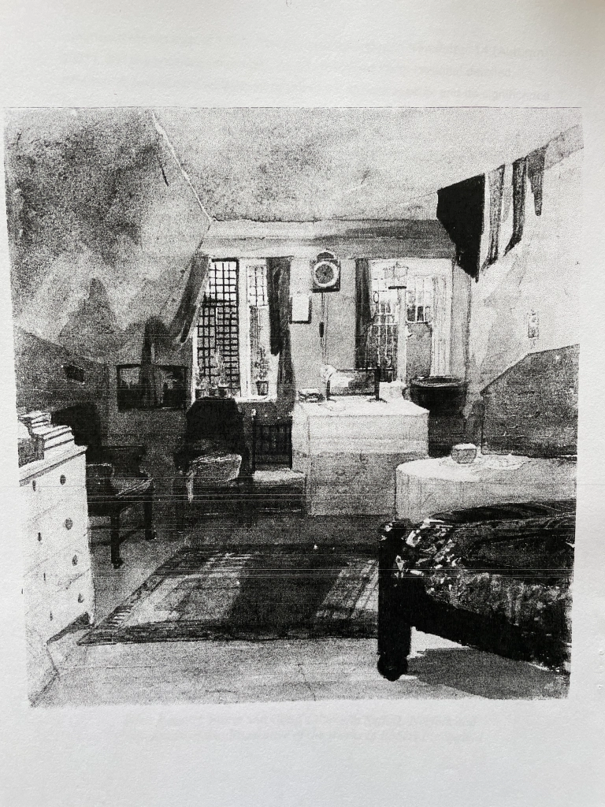
This watercolour of the interior of the garret lodging of Robert Bloomfield in Little Bell Alley, Coleman Street is one of a large series of drawings and watercolours of buildings and antiquities in London by John Wykeham Archer held by the British Museum in 17 portfolios (registration number 1874,0314.8). It is dated 1850, so the furnishings of the room are unlikely to be as they were when Bloomfield lodged there. John Wykeham Archer, (1808 – 1864) was a topographical watercolourist, illustrator, etcher, engraver and antiquary.
© Trustees of the British Museum
My thanks to Sam Ward for drawing my attention to this watercolour.
Newsletter No. 22, Autumn 2011
A Secretary at last!
The committee is very pleased to announce that after the long vacancy following our loss of Philip Hoskins, Dr. Kerri Andrews is to become Secretary of the Society. Kerri is lecturer in English Studies at the University of Strathclyde and is also secretary of the British Association for Romantic Studies (BARS). In Rodney Lines’ words welcoming her, this means we are now a full team again and a properly legitimate, functioning society. Kerri is indeed welcome and we look forward to working with and supporting her.
Robert Bloomfield Academy Annual Prizegiving
It was a pleasure once again to present the Creative Writing Award at the Robert Bloomfield Middle School (now Academy) in Shefford on 19th July. This year I received a beautifully written letter from Year 8 pupil Alexa Greer inviting me to the presentation. She wrote: We, at Robert Bloomfield Academy are very proud of our school and how it was named… I really hope that you can come to celebrate our time at Robert Bloomfield with us.’
The prize, a copy of Robert Bloomfield’s Selected Poems (Grey Walls Press), a pen, and the gilt plate which passes to the winner each year, was awarded to Lucy Marriott. Headteacher Adrian Rogers and his staff are always very welcoming and the award evening, when all the Year 8 leavers and their families are present, is a particularly enjoyable occasion. The Society is very pleased to maintain contact with such an outstanding school.
Angela Underhill
Society Summer Event
A group of members gathered at Shefford on the 19th August, a pleasantly warm summer’s day, to commemorate Robert’s death on that day 1823. A very enjoyable and informative tour was made of sites which would have been familiar to Robert or are associated with him. The natural place to start was ‘Bloomfield House’ in Northbridge Street, with its plaque erected by Constance Isherwood, founder president of the first Bloomfield Society, in 1904. A passage from Robert’s letter of 4 July 1814 to his daughter Hannah was read out, describing his adornment of the house for the Peace celebrations (after the abdication of Napoleon) of that summer. We then moved on to the building which had been his good friend Joseph Weston’s grocery and haberdashery shop, noting as we passed Barclays Bank which had been the Cock Inn in Robert’s time, as well as the White Hart and the Black Swan, both of which Robert would have known. It was chiefly through Weston’s agency that Robert came to live at Shefford; Weston owned the house Robert rented from him for £15 a year. Almost opposite Weston’s shop is the church of St. Michael’s and All Angels. This had been a chapel of ease for the inhabitants of Shefford as their parish church was at Campton, the town itself being known as Shefford-cum-Campton. Some traces of the original fourteenth-century structure remain in the tower. The present church was built in 1822, so Robert must have seen it in course of construction. Standing beside the wider area of the High Street which had been the market place, we listened to Robert’s vivid account in the letter to Hannah of the elaborate masquerade-like celebrations and the sumptuous dinner which had taken place there. Next we looked at what had been ‘the Malthouse at the Kings Arms’, now just visible from the street behind other buildings, where Robert tells Hannah in 1815 a performance of She Stoops to Conquer took place.
In his account of the peace celebrations Robert mentions that among other town dignitaries (‘Mr. Weston’ was prominent) ‘Mr. Potier, the Catholick priest’ had been present. Some surprise was expressed that the town would have had Catholic worshippers at that date before the Catholic Emancipation Act was passed, and we looked at the Saint Francis buildings which include the Presbytery, Saint Francis church (Grade II listed) and what was until 1974 the Saint Francis Home for orphan boys (the present buildings postdate Robert). Subsequent researches have shown that there was in fact a Catholic presence in the town since before Robert went to live there. Our morning in Shefford concluded with light lunch in what is now ‘The Brewery Tap’, opposite Robert’s house, but had been ‘The Green Man’ in his time, mentioned by him in correspondence. After lunch we drove the short distance to Campton village to view Robert’s grave in the All Saints churchyard and the plaque on the south wall of the church installed by the Society in 2003. Beside Robert’s headstone and touchingly inclining toward it is that of his Shefford friend Thomas Inskip; Inskip had paid for Robert’s stone. Arrangements had been made previously with one of the church wardens for the church to be opened and we were warmly received. Of interest in addition to the Welsh stone plaque is the chapel containing monuments to members of the Osborn family of Chicksands and a memorial to the Rev. Edmond Williamson. Robert had dined with Sir Charles Osborn at Chicksands Priory in 1810 and this had helped precipitate his move from London the following year. Edmond Williamson was the Campton rector in Robert’s time and evidence suggests that they were on friendly terms. The last stop in our peregrinations was the church and churchyard at the neighbouring village of Meppershall. Here are to be found the burial places of Constance Isherwood and her father, the then Rector of Meppershall and Treasurer of the first Bloomfield Society. Finally, Dorothy Hoskins showed us the very beautiful headstone, in the same Welsh stone as the Bloomfield memorial plaque in Campton church, of her husband Philip, buried here in 2007, as recorded in The Newsletter at the time (see back cover).
It was a great pleasure to have Dorothy of our party and to benefit from her knowledge, as a longstanding resident, in the area of Shefford, Campton and Meppershall.
Pilgrimage to Poet’s Grave
In an epilogue to their book A Farmer’s Boy (1971) Wickett and Duval record the bi-centenary celebration of Bloomfield’s birth in December 1966 at Honington. They add that ‘the homage to Bloomfield was still incomplete’ so the following summer a party of over a hundred children made a pilgrimage to Campton, where they each laid a bunch of flowers upon his grave. A newspaper report from 1967, held in the Suffolk Record Office, records a ‘pilgrimage’ made by some 84 pupils (a little at odds with the book’s 100), aged 10 to 11, of the Honington village school, led by the headmaster Mr. W.W. Wickett, to Shefford and Campton. They visited the poet’s grave and ‘each laid a posy of flowers, and joined in singing the song “Come let us sing a song of praise”,’ which Mr. Wickett wrote for the Bloomfield bi-centenary celebrations at Honington’. The party was met at Shefford by the Rev. H.H. Bloomfield, rector of Holwell, a ‘kinsman’ of the poet, and went to the Robert Bloomfield Secondary Modern School (the present middle school) where the visitors were welcomed by the school orchestra and had a picnic lunch. A small exhibition connected with Bloomfield had been arranged.
Harry Hildyard Bloomfield appears on the Bloomfield family tree. He was born in 1900 and was rector of Holwell, Herts.
John Harris’s ‘Robert Bloomfield: his Life and Lays’
In 1868 John Harris published Luda: a Lay of the Druids, a miscellany of poems and essays, which included an essay on Robert Bloomfield. John Harris lived from 1820 to 1884, and was a tin and copper miner at Dolcoath Mine, Camborne, in Cornwall. He was born at Bolenowe – a village near Camborne – and later lived nearby at Troon and Falmouth. In his Preface to the volume Harris writes: ‘Little did the author think, some twenty years ago, when toiling in one of the oldest and deepest mines of Cornwall more than two hundred and forty fathoms under the surface, by day, and sometimes into the nights, in the heat, foul air, sulphur, and exhaustion consequent on such an occupation, that he ever should write a preface to his sixth publication in the form of a book presented to the public.’ He laboured, he says, ‘in the darkness of the earth…from his thirteenth until his thirty-seventh year’, but speaks of his present ‘usual avocation as Scripture-reader.’ This may help explain a certain note of piety in the Bloomfield essay, and Harris’s tendency to simplify, to take too much at face value, such religious sentiments as one finds in Bloomfield. His ‘Caleb Cliff: a Dramatic Fragment’ is essentially a temperance tract, which one would think hardly to Bloomfield’s taste.
Harris has a tendency to purplish effusiveness (in the text which follows, I have retained his concluding overwritten and cliched sentence as an example), as well as to laboured catalogues of country scenes where the descriptive language and imagery show little flair or freshness, and to a moralism characteristic of its time. However, I have selected passages from his essay for their interest as a mid-Victorian perspective on Bloomfield and for Harris’s sympathetic response to the work of a fellow labouring-class poet. He says in the Preface that though a few of his own poems ‘owe their origin to the mining days of the writer’, most of them have outdoor country subjects, which perhaps partly explains his interest in Bloomfield, but he identifies with Bloomfield as an artisan poet of humble background as much as a ‘pastoral’ or ‘peasant’ poet. As an epigraph to his essay, he quotes Burns: ‘An honest man, though e’er sae poor, / Is king o’ men for a’ that.’ For the details of Robert’s life, Harris is heavily dependent, as indeed we all are, on the biographical details George Bloomfield supplied to Capel Lofft for the first edition of The Farmer’s Boy – at times, indeed, he follows George word for word – though he is much given to decorating these with fanciful passages in the vein of ‘It is easy to imagine him…’ I have omitted some of his use of familiar factual material, as I have much of his somewhat plodding strings of speculative incident and his paraphrasing of some of the poems. My omissions are marked by ellipses:
We have selected Robert Bloomfield, the shoemaker poet, as the subject of this essay; trusting it may encourage the young to persevere in the path of duty, though it may be rough and steep, and success will surely come at last to cheer the earnest worker. The annals of English literature are replete with examples of self-culture, men and women too, on whom genius dowered her choicest treasures, who by dint of perseverance have attained undying renown, and are now admitted into the mighty Temple of Fame. Amongst these we now reckon Robert Bloomfield, who achieved his greatest reputation when toiling with several other workmen in a miserable London garret… We contend that genius will rarely languish for want of a theme. The possessor of the rare gift discovers material for his structure in the mysteries of every-day life… [Here Harris provides a lengthy résumé of possible ‘every-day’ themes] Genius is not confined to the courts of princes, or decked in robes of royalty. Sometimes it emerges from the shepherd’s hut on the old hill’s side, where the rocks are lined with poetry, and the crags warble music. Sometimes it issues forth from the factory amid the rush of machinery and the hum of busy toil. Sometimes it steals from the garret in the city, leaving a light on its onward way. Sometimes it awakens in the dark depths of the mine, whose sulphur-caves ring with mystic notes; and sometimes it ennobles the shed of the shoemaker… In the early part of the present century a shoemaker might be seen in one of the back streets of London, standing before a bookstall, asking the price of an old dictionary… after considerable parley the bargain is struck, and the old dictionary is purchased for fourpence. The buyer is George Bloomfield… Robert then lived with him in a garret at No.7, Fisher’s Court, Bell Alley, Coleman Street, employed as an errand-boy; and was to be rewarded by being instructed in all the mysteries of shoemaking… We have no narrative of Robert Bloomfield from his seventh to his eleventh year. During this time he was no doubt a ready learner in the school of Nature, and she taught with loving lips her boy-pupil… When eleven years of age, Robert was sent to work on the farm of his uncle, Mr. Austin, who was then residing on the lands of the Duke of Grafton at Sapiston, adjoining the village of Honington. Mr. Austin is described as a respectable man, though the delicate frame of the boy seemed unfitted for the work. With him he remained two years and a half. His mother then wrote to his brother in London, asking his advice as to the disposal of Robert; and he offered to take him and teach him his business… One Sunday evening his brother took him into a Dissenting meeting-house in Old Jewry, which was much crowded with the most genteel people. They stood in the aisle to listen, and the Rev. Mr. Fawcett’s eloquence filled little Robert with astonishment. After this he often attended the preaching service in Old Jewry, where he learned to accent what he called hard words, and gained the most enlarged notions of Providence… Whilst other boys were at play, Robert Bloomfield was at his books, though his library only consisted at this time, we are told, of a History of England, ‘The British Traveller,’ and ‘The London Magazine’. Think of this, young men of England, surrounded as you now are with the wealth of many minds, with libraries and institutions and advantages which evermore flood your path: think of this, and bestir you to wondrous deeds. Books and schools now fill the land almost like trees the forest, so that if a youth achieves not a respectable education, it is his own fault. The works of our great Shakespeare can now be obtained for a shilling, Lord Byron for sevenpence, and dear John Bunyan’s ‘Pilgrim’s Progress’ for a penny. ‘The London Magazine’ contained a ‘Poet’s Corner,’ which always interested young Robert, who now began to write verse: and at the age of sixteen his first pastoral poem, entitled ‘The Milkmaid on the First of May,’ graced the pleasant page… At this period of his history Robert removed with his brother to another garret in Bell Alley. Here the Boy-poet was regaled with a new acquaintance in a James Kay, a native of Dundee, who lent his Thomson’s ‘Seasons’ and Milton’s ‘Paradise Lost’… Having occasion to leave London, he again visited the farm where some of his early days were passed… In 1784 he returned to London, and was bound as an apprentice to a shoemaker named Mr. John Dudbridge; his brother George paying five shillings for Robert by way of form as premium… He now took a fancy to a comely young woman of the town of Woolwich, whose father was a boat-builder, and whose name was Church… Poor man! he got a wife first, and had to get household stuff together afterwards… At length, by hard working and strict economy, he acquired a bed of his own, and hired a room up one pair of stairs in Bell Alley. The landlord kindly gave him leave to work in the light garret two pair of stairs higher; and here, amid six or seven other workmen, in the thirty-second year of his age, his active mind employed itself in composing The Farmer’s Boy, more than one half of which, comprehending five or six hundred lines, was finished before a word was written on paper
By his wife he had five children. That the years of his married life were pleasantly passed, we think we discover in his productions. Take for instance the first three stanzas of his ‘Winter Song:’ [The three stanzas are quoted] …It [Capel Lofft’s 1800 edition of The Farmer’s Boy] was well received, and soon became popular. The admiration it produced was so general that within three years after its publication more than twenty-six thousand copies were sold, and the shoemaker was encouraged to proceed. When we consider that the price of the volume of one hundred and eighteen pages was five shillings, and name of the writer unfamiliar to the public, this must be allowed to have been a great success. And what encourages an author more than the purchase of his books? True, praise is pleasant, and fame is comely; but give him these alone, and the drink soon becomes insipid, and he turns away from the sickly stream with a weight upon his heart. A poet has to pay for his bread like other men, in addition to his printer’s bills. How many an humble toiler from the rustic cottage by the road-side… how many thus located, dowered with the gift of genius, are left to languish and fall for lack of that timely aid which the affluent should rejoice to bestow! Should you ever have a child of song among you, one of your own kindred and name, one of humble origin and birth, whose hands are dignified with the dust of labour, but who notwithstanding has yearnings after immortality, encourage him by deed of kindness, words of love, and the purchase of his books; and you will fill his soul with sunshine, and after ages shall rank you with the generous Capel Lofft… The latter years of his life were passed in circumstances of trial. He had profited, it is true, by his writings, and the Duke of Grafton allowed him a small pension of a shilling a day: but frequent sickness prevented him from working, and his gains became exhausted. He again sought the fresh air and flowers of the country… He died at Shefford, Bedfordshire, August 19th, 1823, not having quite completed his fifty-seventh year; leaving a widow and four children, and crowned with a wreath of laurel which will remain green for ever. In the following year the MS. of his ‘Farmer’s Boy’ in his own handwriting was sold for fourteen pounds…[1] Within the last few years a neat stone has been placed over his grave in Campton churchyard, bearing his name, the dates of his birth and death, with this line underneath: ‘Let his wild native wood-notes tell the rest.’
Robert Bloomfield’s poetry may be compared to a clear quiet river, flowing pleasantly along through beautiful rural scenery, reflecting as in a mirror the objects on its banks.[2] It is needless to say that his work is devoid of classical and general literature. Natural scenery, natural feeling, faithful pictures of the rural homestead, and the manners and customs of country life unaffectedly portrayed, are the themes which he so judiciously selected, and which under the magic influence of his muse live in his lays[3] for ever. His poems show us himself, the benevolence of his heart, and the simplicity of his character. In them we read the history, and see exhibited the man. And he was a man in the true sense of the word. His conduct was without reproach. His biographers describe his character as almost without spot or blemish. He was a faithful and affectionate husband, father, and friend. ‘I never knew his fellow,’ said his brother, ‘for mildness of temper and goodness of disposition.’ … We now proceed to give some selections from the ‘Farmer’s Boy’… [Harris’s first ‘selection’ is ‘Spring’ lines 19-36]
The life-like incidents which make up the ‘Farmer’s Boy’ are no doubt a reproduction in verse of his own early experience. He brings no faun or dryad or coy peerless nymph upon the scene; but dairy maids, and dobbins, and pigs, and poultry, such as may be met with any day in any country parish. He was a natural genius and a born poet… The gentle poet has made a singular omission in his ‘Farmer’s Boy;’ he does not speak of hay-making, which is one of the many sunny seasons of peasant life, particularly in Suffolk. Our next quotation is entitled ‘The Market Night,’ which is a wondrous piece of poetic painting…. [Stanzas VI to XVIII are quoted] How truthfully this is all brought before us! We see the peasant children asleep on their pillows, and watch the anxious mother, as she stands trembling in the doorway, cheered with the twinkle of a star through the thin vapours, and the sound of the old farm gate, as it falls back against the post. As for the old gate, we seem to hear it bang against the fastening. And then the arrival of Dapple, the farmer clothed in snow, the kind greeting of the wife, and the joy of the preserved father, – how it thrills the spirit, and our hearts overflow with a deeper love!
‘Abner and the Widow Jones’ is written with much spirit and energy…. We give the first stanza of the poem, referring the reader to Bloomfield’s volume, for the happy conclusion of this well-told tale…. ‘The Broken Crutch,’ though somewhat quaint, contains many fresh descriptive passages.[4] [lines 176-184 quoted]… then his [Gilbert’s] rushing into the hall and up the broad oak staircase amid the rustling dresses of the bridal party, and the entrance of old John, her [Peggy’s] father, when Gilbert is so unguarded that he ‘loosed the one loop that held his coat before; / Down thump’d the broken crutch upon the floor,’ – is rehearsed with much spirit. This poem throughout is conceived in a happy style, and cannot fail to arrest the attention of the reader.
There is a high moral and, may we not add? a religious tone in the poetry of Robert Bloomfield, which is one of its commendable characteristics. Here is a verse from ‘Shooter’s hill,’ which will exemplify this assertion: [stanza V]
We cannot pass over ‘The Fair Day’ without expressing our opinion that it is one of the finest ballads in the language. And that genuine effusion, ‘To my old Oak Table,’ on which he had written ‘The Farmer’s Boy,’ how sweet and pathetic! How it gushes with the tenderness of home affection and the warmth of his dear fireside! … ‘The Widow to her Hour-Glass’ has been a favourite from our early days… Many eminent critics, such as James Montgomery, Dr. Nathan Drake, S. C. Hall, Sir Egerton Brydges, Hazlitt, Bernard Barton, and others, have paid tribute of respect to Robert Bloomfield, and eulogized the writings of the shoemaker poet.
If any of our readers are unacquainted with the writings of Robert Bloomfield, and should desire to add the book to their library, it may be easily procured for a small sum, if ordered at any stationer’s shop in the kingdom. We shall feel amply repaid for our pleasant labour in writing this sketch, if it should prove the medium of calling attention to the two surviving daughters of the poet, who, we learn from the ‘People’s Magazine,’ are now living at Hoxton in very indigent circumstances. Surely this sad state of things ought not to be, while there remains a fund for relieving the necessities of literary celebrities and their families. One of his daughters, Charlotte, still retains among her few humble treasures a copy of the ‘Farmer’s Boy,’ with the following inscription on the fly-leaf in her father’s handwriting: ‘To my dear Charlotte this volume, by which I was first known, and the contents of which will longest keep my name alive, is given by her affectionate father, Rob. Bloomfield. May 19, 1817.’[5]
The life and lays of Robert Bloomfield furnish an instructive lesson, which the young especially would do well to ponder. He who would win his way in this busy world must do it by dint of labour and perseverance. True, a poet is born, not made; but though this is now an acknowledged fact, unless the possessor of the ‘gift Divine’ labours with his talent, he achieves but little honour, lives and dies in obscurity, and lies at last unepitaphed. Let the motto of every young man, and young woman too, be, ‘Trust and try, trust and try;’ and success will ultimately crown their efforts…’[6] In conclusion: a true poet is undeniably one of God’s great gifts, and is not nurtured in the garden of Art, or trained to perfection by any scholastic rule. He is not polished by wearing diamond rings, or led to honour in golden chains. He owns no teacher but the great full universe which overflows with the grandest song. He reads eternal records in the brook-tuned valleys…[7] When the mausoleum shall be ground into powder, and the long-towering pyramid is dashed to the dust; when the lettered brass is consumed by the rust of ages, and the monument of the warrior is seen no more; when the ivy-covered castle shall have passed away, and the plough shall glide over the foundations of the city, the words of the true poet shall live, waxing brighter and brighter till the eternal hills grow old, and the stars burn out in their sockets.
I am most grateful to David Everett of Camborne, Cornwall for drawing attention to John Harris’s essay.
[1] The catalogue for the sale of Bloomfield’s books and household items on the 28th and 29th May 1824 lists several original MSS in Robert’s own handwriting, including that of The Farmer’s Boy. Harris probably found his figure of fourteen pounds in the Penny Cyclopedia of the Society for the Diffusion of Useful Knowledge, Vol. 5 (1836), p.11. The figure is also given in an item on Bloomfield by George Daniel in Notes and Queries, No.167. (I am indebted to Sam Ward for these details.)
[2] A lay is strictly speaking a poem written to be sung and most lays belong to the medieval period. While Bloomfield did write verses to be sung and a number of his shorter poems were set to music, ‘lay’ is scarcely a term applicable to The Farmer’s Boy or the bulk of his other work. Harris’s fondness for it reflects nineteenth-century fashion, especially that for medievalizing. Scott’s Lay of the Last Minstrel dates from 1805, and Macaulay’s Lays of Ancient Rome from 1842.
[3] Is Harris’s comparison influenced by The Banks of Wye? It considerably simplifies and sentimentalizes the character of Bloomfield’s work, even in that poem. However, the sentimentality here and in several other passages may well represent a more general response to his work in the middle and later nineteenth century. Generally in his essay Harris fails in his rather naive enthusiasm to see that Bloomfield’s writing has its darker, more uneasy and sometimes indignant shades.
[4] What does Harris find ‘quaint’ about one of Bloomfield’s most skilful pieces of verse narrative? His own summary of the poem’s incident effectively conveys its liveliness and momentum.
[5] Harris derives his information from The People’s Magazine. An Illustrated Miscellany For All Classes, published by the Society for Promoting Christian Knowledge, Dec. 7th, 1867. An article ‘A Poet of the People’, to mark ‘The fact that a century has just passed away since the birth of the poet Bloomfield’, appears on pp.9-11. It is headed by an engraving of the portrait of Bloomfield ‘From the Original Painting by Rising, in the possession of Bloomfield’s daughters’. The inscription `To my dear Charlotte…’ is reproduced in Robert’s actual handwriting. The article is unsigned.
[6] On the whole in the essay Harris’s frame of mind appears conventionally Victorian; here he rehearses the familiar doctrine of ‘self-help’.
[7] One may warm to Harris’s identification with Bloomfield as an accomplished poet of impoverished origins and little formal education but at the same time feel, again, that he simplifies and sentimentalizes. Bloomfield self-educated to a level of considerable sophistication, certainly not careless of ‘Art’, if in some respects not over-fussy about ‘scholastic rule’. For Giles the farmer’s boy ‘The Fields [were] his study, Nature was his book’, but Giles is not the mature Bloomfield.
Obituary – Mrs Emilie Isherwood (aged 72) Extract from Bedfordshire Standard, Friday 24 November 1916
In view of our summer visit to Meppershall, the following obituary of Constance Isherwood’s mother is of interest.
Mrs Isherwood’s death occurred on 14 November after some months of suffering, patiently born. She was the only daughter of Mr Walter White of St Mary Axe in the City of London, was christened in St Andrews’ Undershaft, Eastcheap EC, and came from an old Huguenot family. While quite a girl Mrs Isherwood took an active part in helping the victims of the severe outbreak of cholera in the parish of St Luke’s, Berwick Street WC and visited among numerous cases of smallpox, typhoid and scarlet fever in the parish of St Martin’s-in-the Fields, Charing Cross. Mrs Isherwood also did much voluntary work among newspaper boys at St Mary’s Newington, SE when the late Dr MacLagan (afterwards Archbishop of York) was the Rector. During her residence in Regent’s Park Road NW, her only son (the Rev Cyril Isherwood), curate-designate of All Saints’ Islington was born in 1887. During the ten years vicarate of her husband at Stoke Row, Henley-on-Thames, Mrs Isherwood threw herself heart and soul into the life of the parish and acted as organist. Here, as at Meppershall, she did much for the cause of temperance and foreign mission. Mrs Isherwood helped to support Lady Selborne’s Home for Distressed Gentlewomen and the Robert Phillimore’s Settlement on the Land for Factory Girls near Watford. With her son, she was an ardent supporter of the great cause of women’s suffrage, belonging to the militant section.
Transcribed by Philip Hoskins, Bedford Record Office, 6 March 2006.
Newsletter No. 23, Spring 2012
Annual Bloomfield Day and AGM
Our annual Bloomfield Day took place as usual at Nottingham Trent University, this year on 31st March. Our first speaker was Professor Bridget Keegan (Creighton University, Omaha), who has established herself as one of the leading Bloomfield and labouring-class poetry scholars. It is seven years since Bridget last addressed us and it was a great pleasure to have her with us again. Her topic was ‘The Poet as Labourer: Occasional Poets and Occasional Poetry’. She began by commenting on the very large number of manual labourers who were writing poetry during the 1700s. This prompts the question: why did labouring-class writers choose poetry rather than the novel or other literary genres? Poverty meant that such writers were obliged to work and poetry could be fitted into evenings and holidays, while writing it was also cheap. And what were they to take as a subject? Their lack of education (though many were notable autodidacts) excluded the more elevated subjects, as well as manner, of the gentlemanly poets. Some wrote about their work, but ‘occasional’ poetry distinguishes labouring-class writing – poems on receiving books, on being published, on reading the works of another poet, on being asked to write, about festive events: what may be called meta-literary occasions. In a burgeoning capitalist economy, much labour was strictly supervised and subject to the exigencies of time. Hence we find that it is the largely unsupervised labourers, whose time is to a degree their own, who have opportunities to write verse: shoemakers, weavers, shepherds. Professor Keegan commented on the labouring-class poet’s insecure sense of identity, and doubts about whether shoemakers and the like really could be the authors. An Introduction by an authoritative figure was common. Bloomfield himself, however, is ‘interesting for how he deviates from predominant patterns as much as for how he exemplifies them.’ His difference suggests his well-founded confidence in his own gifts. There is little occasional poetry in the main body of his work, though a good number of examples, mostly unpublished in his lifetime, appear in the Remains. His genius was to find a way for the work of the farm to regain its proper place in poetry, while community and family as subjects richly engage his imagination.
We were very pleased to welcome as our next speaker a relatively new member of the Society, Dr. Andrew Rudd, on the topic ‘Bloomfield and Poetry of the Imagination’. This considered Bloomfield’s ‘To Immagination’, unpublished by Bloomfield but published for the first time together with an essay by Tim Fulford in 2009. Dr. Rudd looked carefully at possible sources of Bloomfield’s poem and at his attempt at ‘a type of imaginative poem and a register of poetic diction’ quite unlike that of the Bloomfield we know from his published work. Like Bridget Keegan, he concluded by stressing the ‘entirely individual direction’ of Bloomfield’s work. The complete text of this talk is given below, p. 11, and Bridget Keegan’s talk will appear in the Autumn Newsletter.
The next item on the programme was a copiously illustrated introduction by Ed Fordham to the collection of books belonging in his lifetime to Bloomfield’s Shefford friend and patron Thomas Inskip, which Ed has purchased. He described the provenance and history of this collection and its eventual purchase at auction by the Eagle Bookshop in Bedford. Many of these books bear Inskip’s personal stamp or signature, or that of his son Hampton, and two are signed by Bloomfield. Given that Inskip and Robert were close friends and lived in such near proximity, Ed thought it reasonable to assume that many of them would have at some time passed through Robert’s hands and in some cases originally belonged to him. This is certainly so in the case of a volume of Mrs. Opie’s poems signed by him, and Inskip may have bought some of the books at the sale after Robert’s death. Hence the collection adds valuably to our knowledge about his reading. One book contains a manuscript page of a poem ‘Stanzas written by the margin of Southill Lake, 1814’ which, though the handwriting has not been authenticated, is clearly by Inskip himself. (Southill is a village a few miles from Shefford, with which Inskip’s family had close links.) Ed provided us with a transcript of this poem as well as a complete descriptive listing of the books in the collection. He is continuing to investigate unresolved questions about some of the items, and there was discussion of where the collection might eventually be deposited. It is hoped to publish Ed’s listing in a future Newsletter.We have to thank John Goodridge not only for providing us with a more than adequate buffet lunch, but following this a talk based on his forthcoming book on John Clare, rounded off with a musical entertainment! He spoke on the topic: ‘“Here Bloomfield lay beside the brook”: Clare, Bloomfield and Memorialization’. The line ‘Here Bloomfield lay beside the brook’ opens the second stanza of John Clare’s ‘Song’ (‘The rushbeds touched the boiling spring’) in which Clare imagines Bloomfield resting ‘many an hour’ by a brook while ‘Hannah shewed her rosy face’. Clare’s song is inspired by Bloomfield’s own ‘Rosy Hannah’ in which ‘A rosy lass approach’d my view’ as the speaker lingers by ‘A spring, o’erhung with many a flower’. He then accompanied himself on the guitar as he sang with much panache his own settings of ‘Winter Song’, ‘Sonnet: To 15 Gnats’ and ‘Song: The Man in the Moon…’ This musical interlude marked a departure from our usual Bloomfield Day programmes and was a delight for us all.
The day ended with the Annual General Meeting ably chaired as always by Rodney Lines and, as he himself notes below, attended by our Secretary Kerri Andrews, unable to be present at the meeting, via Skype.
Chairman’s Annual Report
The three noteworthy events of the past year have been the appointment of a new secretary, Dr Kerri Andrews, reported in newsletter number 22, our visit to Shefford on the 19th August to commemorate Bloomfield’s death in 1823, and the annual Bloomfield day at Nottingham Trent University on the 31st March this year. The latter was once again an excellent occasion attended by our regulars and two very welcome research students. The day began with an address by Professor Bridget Keegan from Creighton University in Omaha, Nebraska, making a welcome return after seven years, followed by Dr Andrew Rudd, while Professor John Goodridge stood in for Kerri Andrews, unfortunately detained by academic duties in Scotland. John certainly broke new ground by playing his guitar while singing some Bloomfield poems set to music, demonstrating what a fine lyricist Bloomfield really was. This was followed by Ed Fordham talking about his recently acquired collection of books owned by Thomas Inskip. We also broke new ground again at our AGM by having a video link with Kerri so that she could still act as secretary from her base at Strathclyde University. Most impressive technology! We are, as ever, most grateful to our contributors and to Nottingham Trent for hosting this event – and to John Goodridge’s catering efforts. I know it is difficult for many of our far-flung membership to get to Nottingham, but the fact that Kerri, Angela Underhill and I received so many apologies indicates the serious support of members unable to attend, and I am grateful for this. I am also grateful to all officers and members of the committee for all they voluntarily do, not forgetting my wife, Pauline, who designed the new cover of our latest Newsletter.
Rodney Lines
Recent Work on Bloomfield and related areas
Simon White, ‘Otaheite, Natural Genius and Robert Bloomfield’s The Farmer’s Boy’, Romanticism 17.2 (2011): 160-174. A revised and augmented version of the article which appeared in Newsletter no. 18 (Autumn 2009). Introducing his argument Simon White writes: ‘This essay will examine polite society’s response to south-sea islanders – in particular the Otaheitians – and labouring-class poets. It will argue that the response to both was driven by the same idea of a relationship between a lack of access to education and elite culture, and some kind of reconnection with the classical Golden Age.’
*****
Simon Kovesi, ‘Finding Poems, Making Text: John Clare and the Greening of Textual Criticism’, Romanticism 17.2 (2011): 135-147. This essay begins with an interesting discussion of two ‘talismanic lines’ from Clare’s ‘Sighing for Retirement’: ‘I found the poems in the fields / And only wrote them down’, which may remind us of Bloomfield’s ‘The fields his [Giles’s] study, nature was his book’ in its suggestion of a response to the natural world unmediated by cultural assumptions or poetic precedent. The estrangement of the individual from nature has been a persistent preoccupation of romantic poetry, and these lines, Kovesi argues, point toward ‘the closure of the gap between human subject and natural object’. Editing Clare, of course, has been a constantly problematic and complex task. The essay goes on to propose, since any form of editing a poet’s text, even the traditional ‘variorum’ in which the aim is to provide the reader with all known variant readings, results in a construction of a poetic identity and a text which may carry with it an ideological content (even ‘nature’ is in various ways an ideological construction), a radical ‘green’ editorial methodology and presentation. (‘Green’ because, in a way analogous to Clare’s attempt to convey a direct rapport of the poet with nature, nothing intervenes between reader and text.) Parts of the discussion are highly theoretical and Kovesi himself concedes that his proposal is an ‘idealistic consideration of what might be possible’ rather than (or such is the implication) a practical proposition.
*****
Stephen Van-Hagen, The Poetry of Mary Leapor, Greenwich Exchange, 2011. Born of a humble family in Northamptonshire, Mary Leapor’s strongly feminist verse underwent, like so much labouring-class and women’s writing, nearly two-and-a-half centuries of relative neglect. This book notes, however, that ‘in the past three decades Mary Leapor’s reputation has soared to heights unseen even in the aftermath of publication of her two posthumous collections of poetry in 1748 and 1751. Today she is widely regarded as having possessed the most memorable poetic voice of any woman poet of the mid-eighteenth century.’ This study ‘assesses the reasons for her dramatic resurgence in popularity.’ Leapor ‘is rehabilitated as a poet of contradictions, ambivalences and multiplicities, a poet, in her own words, who is “aukward still” – for twenty-first-century readers as much as for our eighteenth-century forebears.’
*****
Ed Fordham, Gallant and patriotic sons. The villages of Coney Weston and Barningham during World War One. London: Libretto Publishing, 2011. While not concerned with Robert Bloomfield’s life and work or its period, this is a thoroughly researched and informative account of villages very close to his birthplace during World War One, by a member of the Society who is a descendant of one branch of Robert’s family.
Robert Bloomfield: The Inestimable Blessing of Letters.
This is a new volume of Romantic Circles Praxis Series. It includes an editor’s introduction by John Goodridge and Bridget Keegan, and essays by Tim Fulford, Peter Denney, Ian Haywood, and Bridget Keegan. I am most grateful to John Goodridge (Nottingham Trent University), Bridget Keegan (Creighton University) and Romantic Circles for their permission to print here the Introduction to this valuable new collection of essays. All qquotations from Bloomfield’s letters are referred to by the letter number from The Collected Letters of Robert Bloomfield and his Circle.
How can we consistently praise the inestimable blessing of letters and not wish to extend it? (Robert to George Bloomfield, 30 May 1802)
This enthusiastic comment from the poet Robert Bloomfield to his older brother reflects one of the more varied and vigorous letter-writing sensibilities of the Romantic period, one that has hitherto been neglected, but is now gloriously showcased by the new online collection of the letters of Bloomfield and his circle, to which the present collection of essays forms a companion volume. Unlike many other eighteenth- and nineteenth-century laboring-class poets, Robert Bloomfield was able to sustain and develop his publishing career. While none of his subsequent publications received the acclaim of his debut poem, The Farmer’s Boy (1800), after his initial success Bloomfield rightfully considered himself a professional author for the remainder of his life. His letters, made available to a modern audience for the first time with this online edition, document one artist’s struggles (and sometimes his victories) to share his unique voice and vision. Even though Bloomfield’s published legacy is rich and varied, the publication of his extant letters, as well as additional letters to and about him, reveals new and exciting insights into Bloomfield the artist and the man. Bloomfield in his letters demonstrates his active and thoughtful engagement with the London literary scene, with the broader literary culture of his day, and with his fellow laboring-class poets. The letters also provide a fascinating historical resource for those interested in the lives of the members of an extended laboring-class family, as they negotiated the new forms of mobility available to them in the early nineteenth-century, both geographic and intellectual.
Although some of Bloomfield’s correspondence was made available in Joseph Weston’s 1824 Remains, and some in W. W. Hart’s Selections of the Correspondence of Robert Bloomfield (London, 1870; reprinted Redhill, Surrey, 1968), Tim Fulford and Lynda Pratt’s electronic edition offers a comprehensive and easily-searchable resource for anyone wishing to know more about Bloomfield and his personal and literary milieu. The letters and complementary texts offer insight into the poet’s larger literary concerns as well as his more quotidian activities. They include reflections on his creative process as well as detailed accounts of his personal finances. In short, the letters enable modern readers to better understand what made Bloomfield one of the best-selling poets of the early Romantic period, and they offer a compelling argument about the intellectual value of the recovery and study of laboring-class literary culture in general. The essays included in this collection highlight and draw attention to aspects of Bloomfield’s literary production that would likely not be possible without the full access to his letters that this edition provides. As Tim Fulford notes in his introduction to the letters, Bloomfield’s significance to the Romantic period has only recently begun to be reevaluated, and the following essays further the project of enriching our understanding of the poet’s significance within a wide range of contexts.
One particular epistolary exchange, highlighted in four of the essays, illustrates how the correspondence enables us to rethink Bloomfield’s consequence to literary history. This is the series of letters between Bloomfield and T. J. Lloyd Baker, one of the poet’s many ‘friends’ throughout his career. Bloomfield had enjoyed a long relationship with Lloyd Baker, his wife Mary, and his wife’s family, the Sharps, including joining them on the trip along the Wye that formed the basis of Bloomfield’s ambitious long poem. (Among the more noteworthy members of the Sharp family was Mary’s uncle, the celebrated abolitionist Granville Sharp, another interesting connection for the poet.) The exchange of 1821 is exemplary of the tensions between the public and the private, the personal and the professional that were particularly fraught for poets of laboring-class origins. Bloomfield had to negotiate these tensions throughout his career, and, as this series of letters reveal, his patience had begun to fray.
While Bloomfield was burdened throughout his life with significant difficulties, he did not fit many of the stereotypes often associated with the cult of ‘natural genius’ that affected the reception of so many other poets with plebeian origins, including early tragic death and chronic mental or physical illness, although as Peter Denney suggests, common ideas about original genius gave Bloomfield a potential justification for refusing to air any political opinions. But like other poets of his class (most notably John Clare), because Bloomfield’s first major poem was ‘semi’-autobiographical (as Ian Haywood discusses), much of the initial interest in the work was based as much upon curiosity about the author as appreciation for the work. And polite readers had certain expectations about what laboring-class poets should and should not say — both publicly and privately. These expectations are transparent in Lloyd Baker’s letter, which castigates Bloomfield for holding political and religious views that could be considered ‘radical.’ Bloomfield’s rightfully indignant response helps to reveal some of the shifts in the poet’s understanding of what expectations could be legitimately imposed upon him. A similar transformation of patron-poet relations is evident in the study of earlier laboring-class poets, including Ann Yearsley and James Woodhouse. While Lloyd Baker’s letters demonstrate the late survival of the old patronage system well into the Romantic period, Bloomfield’s responses indicate just how far the poet’s sense of his professional identity — and his personal rights — had altered in the twenty years since his debut publication. These four letters touch on civil and creative liberties, family relations, the right to privacy in politics and religion. They challenge the more irenic presentation of the good-natured and well-behaved shoemaker poet that has perhaps made Bloomfield less enticing to modern critics who (like the poet’s contemporary audience) seem more drawn to writers whose lives embody more thrilling catastrophe or controversy.
The essays in this companion collection elaborate upon the themes encapsulated in the letters discussed above and make a strong case for why Bloomfield continues to be worthy of study. They also suggest how much more remains to be said about this prolific poet. Tim Fulford’s essay, which opens the collection, demonstrates that contrary to most caricatures of the isolated Romantic genius, Bloomfield’s letters show his intense sociability. Fulford highlights some of the key themes and motifs from 426 letters available in the edition. He challenges the view of Bloomfield as a strictly ‘rural’ figure, elaborating upon his engagement in urban — and more significantly — suburban life. Nevertheless, the letters reveal too Bloomfield’s dedication to keeping alive village traditions important to himself and his family, and provide a degree of lively ethnographic detail of various popular customs, festivals, and pastimes. Bloomfield engages in nature-tourism like fellow early Romantics such as Coleridge, but his letters describing his clerical toils anticipate Victorian scenes such as those Dickens depicts in Great Expectations. Regardless of the subject matter, as Fulford demonstrates, ‘[t]he abiding theme of Bloomfield’s correspondence is the control of his own words.’ While Bloomfield was as besieged as any laboring-class poet by various patrons throughout his career, his letters show his skill in negotiating a variety of difficult social and financial transactions. His perspicacity, intelligence, and commitment to his art are continually underscored in his correspondence.
Following Fulford, Ian Haywood offers what may be the riskiest and most iconoclastic — but also the most provocative and productive — reading of Bloomfield to date. While other critics have hinted at some of the potentially darker elements in Bloomfield’s work, Haywood uses a psycho-biographical approach to uncover the underside of the more congenial and complacent public image that Bloomfield (or at least his patrons) wanted to project. Focusing in particular upon the remarkable passage describing the slaughter of the lambs in The Farmer’s Boy, Haywood argues that this dramatic primal scene provides a key into a persistent pattern of mental anguish and psychic struggle that the pastoral façade of much of Bloomfield’s writing would seem to disguise. Like Fulford, Haywood asks us to look beyond a conventional reading of the rurality of The Farmer’s Boy and to see in the georgic moments of violence evocations of contemporary events such as the 1798 Irish rebellion. Haywood integrates information from the letters into his reading of the poem to reveal degrees of ambivalence, anxiety, and guilt heretofore largely ignored in Bloomfield’s writing, offering insight into the possible shadow side of the seeming bucolic bliss ostensibly celebrated in the text.
While Haywood looks to possible political allegories embedded in the scenes of animal slaughter, Peter Denney’s essay takes up the question of Bloomfield’s politics and explores this dimension explicitly. Bloomfield’s avowed refusal to discuss politics or religion in his poetry sets up an immediate roadblock for such an analysis, but by framing his discussion of any political dimension of Bloomfield’s writing within the parameters of cultural expectations surrounding ‘natural’ or ‘original’ genius, Denney is able to complicate productively our understanding of Bloomfield’s own nuanced sense of his relationship to the pressing social questions of his day.
Finally, Bridget Keegan focuses on some of the literary texts made available along with the letters in the Fulford and Pratt online edition, namely Bloomfield’s writing for children. These seemingly ‘simple’ works also embed a degree of social and political complexity that the other contributors have similarly highlighted in their essays. For example, while the moralistic plot of Little Davy’s New Hat might seem yet another fairy tale of virtuous poverty rewarded, Bloomfield incorporates concrete details evoking the famines of the 1790s. And the charming letters of The Bird and Insects’ Post Office evince the same ambivalence about violence toward animals that Haywood draws attention to in The Farmer’s Boy. Keegan aims to show that Bloomfield’s efforts in the genre of children’s literature are of a piece with his other writing—both published and personal.
Far from providing the definitive reading of the letters and new materials made available in this edition, these essays attempt to further enrich the critical discussion of Bloomfield’s significance, modeling the variety of ways in which his work might be approached and the wealth of possible future readings that are possible through access to this larger body of his writing. Having, together with Simon White, edited and published the first modern collection of critical essays on Bloomfield in 2006, we are delighted to see how much these letters have added to current knowledge of this important poet, and fully anticipate that the letters and the critical conversation they have begun to inspire here will lead to future work and inspire other scholars of the period to investigate Bloomfield’s rich oeuvre, one that is becoming increasingly central to the discussion of the Romantic cultural and social environment.
*****
The editors would like to acknowledge the generous assistance of Jill Havlat and Krystal Kirwan who helped with the final preparation of these essays for publication. Bridget Keegan would also like to thank Gail Jensen, Dean of the Graduate School at Creighton University, for a small grant to help in the production of these essays.
The Bloomfieldian Imagination and the Sublime: Notes on ‘To Immagination’ (1800)
Andrew Rudd
A stand-alone copy of this article is available here.
Bloomfield is familiar to us chiefly for his poetry of rural life and labour, but his long and exceptional poem ‘To Immagination’ shows him as a poet tackling what at the time were regarded as more ambitious subjects: the operation of the human imagination and the sublime. Bloomfield composed the poem in 1800 but it was not published in his lifetime. Tim Fulford’s invaluable article in Romanticism (Volume 15, No. 2, July 2009), where the manuscript was presented for the first time, describes Bloomfield’s wish to free himself from the poet-labourer tag which he had arguably acquired through the publication of his first major work The Farmer’s Boy (1800). Fulford and Sam Ward have both argued that, in ‘To Immagination’, Bloomfield was attempting a type of imaginative poem and a register of poetic diction which were both typically regarded as the preserve of the educated classes (see details of the fascinating discussion of the poem at the 2010 Annual Bloomfield Day contained in Newsletter No. 19). We know that Capel Lofft made editorial interventions through his usual means of tidying orthography and grammar and, in this instance, reworking the metre from the blank verse of the original into Neo-Classical heroic couplets. As we know from the letters, Bloomfield resisted this and so the manuscript remained, in Fulford’s words, ‘a fragile, though powerful, experiment that crystallises some of the most significant issues for poets in the early nineteenth century’.[1]
I wish to take my cue from this suggestive description of the poem and will discuss, firstly, some existing models of imaginative poetry which acted as possible influences on Bloomfield; and secondly, to explore in more detail the nature of the Bloomfieldian imagination and particularly its response to human suffering and the challenge of the sublime. Being partly an act of emulation, and stylistically Bloomfield’s most ambitious work, `To Immagination’ is obviously indebted to well-known earlier poems of the mid-eighteenth century such as Edwards Young’s Night Thoughts (1742-5) and Mark Akenside’s The Pleasures of the Imagination (1744).[2] It is composed in the style familiar from the works of Alexander Pope and employs typical Neo-Classical machinery such as the opening apostrophe addressed to Imagination: ‘Stay sleepless guest! aierial trav’ler stay’ (1).[3] With its keen sense of topography and the natural world, Bloomfield’s poem may well owe a debt to Joel Barlow’s The Vision of Columbus (1787) and Erasmus Darwin’s The Botanic Garden (1791), and to the former’s Southern American setting in particular. I would like to discuss two other possible influences on the poem, the first James Beattie’s The Minstrel; or, the Progress of Genius (1771-74) and the second a hugely popular work published immediately before Bloomfield was writing, Thomas Campbell’s The Pleasures of Hope (1799). It is worth noting that, in a letter to his brother George dated 15 June 1800, Bloomfield records that his publisher, Thomas Hood, gave him a copy of Campbell’s poem when the two men met in London.[4] The manuscript of ‘To Immagination’ is dated May 1800, but it is not inconceivable that Bloomfield had expressed an interest in Campbell’s poem or even read a copy that had been lent to him.
What connects the three works is that they each explore the operations of a particular faculty of the human mind: respectively, genius, hope and imagination. Imagination is the means of linking the other two with its capacity to call absent objects into being before the mind’s eye and, before the Romantics granted a privileged status to imagination in its own right, was seen as the facilitator of other, higher mental processes. In The Minstrel, Beattie offers a didactic and cautionary message about the free vagrancy of imagination. The work also associates the wayward fancy with the untutored lower orders, whom the more experienced, and certainly more learned, poet frequently chides. The Minstrel follows Edwin, described as a ‘visionary boy’ and ‘poor imp’ who roams the Scottish wilds and scorns his father’s homespun injunction to ‘let man’s sphere confine his view’.[55] But he has no such wish to remain a mute, inglorious Milton: his rhapsodic wanderings form a significant portion of the first part of the work, whilst Beattie warns us that ‘Romantic visions swarm on Edwin’s soul’ (p. 67). Towards the end of the poem, Edwin encounters a hermit who urges the boy to return to his more sequestered former life. In doing so, the hermit conjures an Arcadian view of rural simplicity which concludes ‘Hail poverty! If honor, wealth, and art, / If what the great pursue, and learned admire, / Thus dissipate the soul’s ethereal fire’ (p. 72). This attitude towards imagination as a socially destabilising force, which arguably remained influential at the time Bloomfield was writing, was hardly likely to find favour with the cobbler and former farm labourer. It is tempting, therefore, to regard Bloomfield’s vision of imagination as a conscious departure from this aspect of Beattie’s poem. We could go further and see the figure of the hermit as an effective proxy for Lofft. During one conversation in the poem, Edwin receives a lesson on poetic genius in which his Romantic ‘enthusiasm’ is tempered into Beattie’s approved doctrine of Neo-Classical idealism:
Of late, with cumbersome, though pompous show,
Edwin would oft his flowery rhyme deface,
Through ardour to adorn; but Nature now
To his experienced eye a modest grace
Presents, where Ornament the second place
Holds, to intrinsic worth and just design
Subservient still. Simplicity apace
Tempers his rage: he owns her charm divine,
And clears th’ambiguous phrase, and lops th’unwieldly line (p. 87).
The ‘unwieldly’ 12-syllable Alexandrine which constitutes the final line is a poetical joke, which again points us to the somewhat recondite nature of this genre of poem; the poet shares his witticism directly with the reader who is presumed to be similarly learned. The sort of attitude towards the untutored imagination lends poignancy to Bloomfield’s reference in the opening lines of ‘To Immagination’ to ‘the eyes of those…whom Fortune always favours, but not mine’ (13-15). Bloomfield’s version of the imagination, I suggest, not only offered the narrative disembodiment necessary to transcend his farm-labourer reputation, as Fulford has detailed, but also mental release from physically oppressive circumstances. This second quality is almost tangible as Bloomfield urges imagination to ‘Mount through the regions of the whistling wind…stretch on thy cloudless way, and lightly scim / O’er Chili’s hills, Peru’s enchanting groves, / Scenes that unfetter’d fancy dearly loves’ (19-24), a yearning for escape comparable to the opening of Keats’s ‘Ode to a Nightingale’.
A second possible influence on ‘To Immagination’ is Campbell’s Pleasures of Hope, a best-seller of its day which would have been reasonably familiar to reading circles across the country – which may explain Hood’s gift of the poem to Bloomfield in 1800. In this poem, imagination appears as an emancipating spirit rather than as an errant, or even a usurping, act of mind, as it does in Beattie. Reflecting social changes as well as developments in attitudes to the subject more widely, Campbell’s imagination is a democratized force that is accessible to, and capable of benefitting, people from all social backgrounds. Like Bloomfield’s poem, The Pleasures of Hope embarks on a thrilling flight of imagination that crosses oceans and soars above continents, yet it still takes note of individual cases of pity and distress; a distinctive dynamic which, I suggest, the two poems have in common. Whereas Beattie’s hermit urges Edwin to confine his view to the domestic sphere, Campbell exhorts imagination to summon up ‘every form, that Fancy can repair / From dark oblivion’.[6] Addressing fancy directly, the poet commands ‘thy glittering wings explore / Earth’s loneliest bounds, and Ocean’s wildest shore’, ‘Behring’s rocks’, ‘Greenland’s naked isles’ and ‘Oonalaska’s shore’ (pp. 7-8). Hope and imagination are to Campbell ‘inseparable agents’ (p. 49). In this poem, we see this pairing bringing consolation to the poor man and woman ‘unpitied by the world, unknown to fame’. ‘O there, prophetic Hope! thy smile bestow, / And chase the pangs that worth should never know’ (p. 18).
Bloomfield’s imagination similarly carries him high above the Americas, leaving behind the haunts of man and revelling in the glories of the natural world. The parallels to Darwin’s The Botanic Garden are clear as the poet delineates hills and dales, mountains and rivers and luxuriant vegetation thronged with exotic animals and birds. The aerial flight of the mind’s eye is thrillingly executed and is a fine artistic achievement on Bloomfield’s part. Yet, once again, Bloomfield distinguishes his version of imagination as if in reaction to an established model. Campbell’s emphasis on hope, quite logically, leads him on to hail ‘bright Improvement’, who tills the soil and fells the tree (p. 26). Bloomfield, on the other hand, and perhaps with an ex-countryman’s surfeit of ploughed earth, hankers instead after a virgin landscape ‘where human foot ne’er trod’ (73). In his poem, human activity is associated with depredation and greed. The gold in the mountains led the conquering Spaniard to enslave the ‘native masters of the soil’, who have ‘borne / From age to age, with never-ceasing pain, / The conqueror’s lash, and toil’d for others gain’ (113-15).
The enslaved Indian, a sun worshipper denied in the recesses of the mine access to his god, accuses the mountain of enticing the foe with its ‘whispering wealth’ and of gilding the warriors dreams’ (137). Here perhaps we see Bloomfield’s natural empathy with a labourer ‘for others gain’, admittedly sharpened considerably here into the condition of a slave.Intriguingly, Bloomfield questions imagination directly, asking ‘heard thou…misery’s accents fly to grace divine?’ (148-50) and putting in doubt imagination’s power to respond effectively to revealed suffering. There is an aporetic note here that distinguishes Bloomfield from the more optimistic Campbell. Similarly, as Bloomfield’s poem swoops on along the course of the Amazon, Bloomfield rebuffs Campbell’s doctrine of hopeful improvement, praising instead ‘Woods, where the echoing Axe was never heard; / Nor Man e’er proudly said, with hand upreard, / Thy course thou silver current shall be here, / Grow there dark Forest; be that Valley clear’ (182-5). Instead, he insists that ‘Nature’s triumphant glories are their own’ (189). In this landscape, the ‘Tawny Nations’ (meaning the Indian inhabitants of the country), pursue lives of Rousseau-like simplicity, heavily laced with the motif of the noble savage. The native warrior hunts, he does not farm, he disdains restraint and ‘nature only needs’. Lest we forget, this is also, of course, the Amazon: ‘Where with firm step, and eye indignant seen, / With Amazonian hardiness of mien, / The Female lifts the shield, disdaining fear, / And grasps by turns her infant and her spear’ (230-3). We can view these passages as mere formulaic compounds of stock poetic imagery, or take the more interesting biographical view that hints at Bloomfield’s complex attitude towards land and landscape.
The connection between tended land and human evil is reinforced in the next section of the poem, which crosses the sea to the West Indies, where the poet sees the changeless prospect of tended lawns and plantations. These conceal the infinite horror of African slave labour. Again, Bloomfield invokes imagination as a spur to humanitarian sentiment, this time addressing his (English) readers directly as he adjures us to ‘Glance but thine eye across th’Atlantic wave, / The negros mourning ends but in the grave’ (212-13). Here, hope, Campbell’s lodestar, is ‘like a budless stem’ which ‘from day to day / No tempting fruit lets fall, to chear his way’ (274-5). Again, we detect a measure of fellow-feeling when Bloomfield denounces ‘That worst of ills amidst a wretched whole, / That death of Genius, dead weight on the soul, / Labour without reward’ (281-2). There are, incidentally, only a few moments in this poem when Bloomfield breaks his sentences across the middle of a line, creating a jarring, arresting effect. This is one of them. Another follows immediately as Bloomfield asks ‘what avails when avarice holds the bar, / Truth’s inspiration;? pitty’s wordy war? / Most unavailing mine’ (288-90). The tone is strikingly bitter and again Bloomfield seems to doubt imagination’s efficacy as a means of redress. Thwarted, his imagination, ‘claimant of my vagrant song’ (291), quits the scene.
In the slightly obscure final section of the poem, the idea of imagination as a force for good accessible by all modulates into a reflection of the outward limits of the human mind. Turning northwards to Canada, the poet beholds the mighty cataract of the Niagara Falls. This panoramic ‘complicated scene’ (304) is challenge enough to visualize and Bloomfield adopts the register of the sublime to convey ‘horror’s indescribable recess’ (335), the dizzying chasm of the waterfall. But this attempt to elevate his register leads him almost immediately to consider the insufficiency of human utterance. Treatment of the sublime carried its own set of conventions and space does not permit me to rehearse them here, but Bloomfield opens up a gap at this point between timeless nature – the stuff of the sublime – and language’s power to describe natural wonders such as the waterfall. The ‘Inchanting horrors’ were formed ‘in the infancy of time’ and their greatness ‘defied language’ and (significantly) also ‘Defy’d Immagination’s bolder flights’ (336-341). Lest the reader thinks the modern poet will now attempt what his forbears failed to do, Bloomfield makes clear that he will not artificially strain his muse in this way. Instead, he posits that sublime spectacle will always confound representation, for ‘bellowing depths and heights’ speak through ‘times revolving hour, / “Thee we deride, and mock the pencil’s power”’. At the end of this passage Bloomfield describes his imagination as ‘foild` (339-44).
Turning from nature, the poet is cheered by what he describes as ‘a friendly vision in thy train’ (344) in form of refracted light creating an angelic vision in the water vapour. This grants Bloomfield a second wind. He describes the voyages to the new world of missionaries, who taught ‘mankind / A more devotional and purer praise; / And preached the living God a thousand ways’ (369-71) and so atoned for the sins of the conquistadores. But it is the refulgent moonlight which inspires a fresh and final transport and which summons up an imagined but no less fervent hymn to the Creator God, sung by the tribesmen ranged along the waterside:
To him, who here upon your fruitfull ball
These traits of greatness from your hand let fall;
Who gave the wand’ring world in hallow’d hour
These feeble glim’rings of his mighty power,
Ye Nations let your chorus mount on high,
His glory be the theme; let echo fly (400-5)
At the climax of the poem, the nations shout, the forests howl, the angels sing and the earth shakes in reply. Here, we are in the territory of high Romantic exultation, Bloomfield’s muse poised on the most daring pinnacle. Can he sustain this pitch? The question for him, rather, is whether an authentic, human voice such as his can, or even should, sustain it. Words failing him, the poet’s more eloquent tears ‘gush forth…speech of the soul, that never dwelt in sound’ (419-21). The overriding impression here is Bloomfield’s consciousness of mortal weaknesses and his aversion to poetic hubris. He credits imagination for ‘ardent mounting high, / To prostrate worlds, to Immortality’ but begs to be spared ‘jaded from thy daring flights’ (422-6). ‘Domestick peace’ and ‘connubial love’ once more invite his exhausted vision: he concludes ‘I yield’ (427-8) and the poem ends with the conventional figure of a seraph pointing aloft, signifying eternal happiness and song.
How then do we categorize Bloomfield’s notions of imagination? Did he feel he was trespassing in social and stylistic territory that was not his own, and so deliberately brought imagination back to earth at the moment it dared to touch the sublime? His refusal to accept Lofft’s proposed emendations suggests, to the contrary, a personal pride in this particular poem and unwillingness to compromise. We see in ‘To Immagination’ Bloomfield’s affinity with the downtrodden, his harking back to an age of natural simplicity and authenticity and his scorn for over-cultivation, all facilitated by the workings of an imagination that is categorized by reticence, even modesty, that personally I find very attractive. His is a Romantic but a personal voice, which combines elements familiar from celebrated figures such as Beattie and Campbell as well as other influences. Bloomfield was obviously alert to established poetic models of imagination yet he turned them in an entirely individual direction that we may reasonably assume was bound up in his personal experiences. In closing, I submit that Bloomfield’s ‘Creating power,! sweet florist of the mind’ (252) offers a corrective to some of the worst faults of the Romantics, solipsism and egoism, and we should credit him for the depiction of a questing but also questioning imagination, which is continually alert to its own integrity.
Andrew Rudd teaches Romantic and colonial literature at the Open University in London.
[1] Tim Fulford, ‘To “crown with glory the romantick scenev”: Robert Bloomfield’s ‘To Immagination’ and the Discourse of Romanticism’, Romanticism Volume 15, Number 2 (July 2009), 180-200 (190). For evidence of tension between Bloomfield and Lofft on the subject of the poem, see letters 49 and 70 of The Letters of Robert Bloomfield and his Circle, ed. Fulford and Lynda Pratt.
[2] An edition of The Poetical Works of Mark Akenside dating from circa 1798-1800 is part (No. 6) of the Inskip Book Collection owned by Ed Fordham. It is highly likely that the collection includes books from Bloomfield’s personal library which were given to Inskip on, or before, Bloomfield’s death in 1823.
[3] All line references from ‘To Immagination’ are from the MS printed in Fulford, ‘To ‘crown with glory the romantick scene’.
[4] Robert Bloomfield to George Bloomfield (15 June 1800), letter 32 of The Letters of Robert Bloomfield and his Circle.
[5] James Beattie, The Minstrel; or, The Progress of Genius: and other Poems. To which is prefixed, A Life of the Author (Edinburgh: Thomas Oliver, 1804), p. 47.
[6] Thomas Campbell, The Pleasures of Hope, with Other Poems (Edinburgh: Mundell, Doig and Stevenson, 1808), p. 4.
BLOOMFIELD DAY 2001-2012: A CHRONOLOGY
John Goodridge
The Robert Bloomfield Society was co-founded in 2000 by the late Philip Hoskins, MBE and myself, Professor John Goodridge of Nottingham Trent University. The Society was launched on 10 October 2000 at a gathering addressed by Ronald Blythe, who had been invited to become its President. We have held 11 annual events at Nottingham Trent over the 12 years of our existence, as well as a regular series of summer excursions to Bloomfield-related places. As we move into our second decade as a Society we thought it would be helpful to members to have a summary of our annual Bloomfield Day events.
Wednesday 14 November 2001, NTU, 1st AGM of the Robert Bloomfield Society, with readings and discussion. The main speakers were John Lucas on what drew him to Bloomfield, and Hugh Underhill on ‘Winter Song’. We ‘decided to continue holding our AGMs at Trent’.
Wednesday 13 November 2002, NTU, 2nd AGM, again beginning with ‘informal readings and discussions from 5.30pm’. Talk by Tim Burke on ‘The Poetry of Friendship: Robert Bloomfield, John Clare, and the Labouring-Class Tradition’.
Saturday 27 March 2004, from 11.00 a.m. (postponed from 12 November 2003), NTU, 3rd AGM and Bloomfield Day, with a talk by John Goodridge on ‘An Englishman, a Welshman and a Scotsman; or Robert Bloomfield’s Radical Ascent of Pan-y-Vale’. The move to the Spring was part of a greater shake-up, made at a committee meeting at NTU on 11 September 2003, to make things easier, following the year’s health difficulties of the Society’s two principal founders, and among signs that the fledgling Society was getting overstretched. This was the first time we called it a ‘Bloomfield Day’.
Saturday 19 March 2005, NTU, ‘Robert Bloomfield Symposium’ and 4th AGM. Speakers were Sam Ward on ‘Your Information thankfully rec’d: Clare, Kirke White, and the Bloomfields’, ‘Images of Robert Bloomfield’ by Ed Fordham and Rodney Lines, Bridget Keegan on ‘Giles’s Duty: Poetry, Husbandry, sustainability’, and Hugh Underhill on ‘The Broken Crutch’: Bloomfield and Narrative’.
Saturday 25 March 2006, NTU, 5th AGM and Bloomfield Day, with a Talk by Hugh Underhill on ‘Lovers’ Journeys in Crabbe, Bloomfield and Clare’. This was preceded by listening to part of David Woodward’s CD of The Farmer’s Boy, and a subsequent discussion.
Saturday 24 March 2007, NTU, 6th AGM and Bloomfield Day, with talks by Tim Fulford on ‘Bloomfield in his Letters’, and Simon White on The Banks of Wye. Saturday 5 April 2008, NTU, 7th AGM and Bloomfield Day, with talks by Selwyn Goodacre on his Bloomfield collection and connections with the Bloomfield family, and by John Lucas on ‘Richard and Kate’. Saturday 4 April 2009, NTU, 8th AGM and Bloomfield Day, with talks by Peter Cochran on ‘The Farmer’s Boy restored and renovated — at last’, and Simon White on ‘Otaheite and The Farmer’s Boy’, with a tour of the NTU labouring-class poetry collection and a presentation of the online edition of Bloomfield’s letters. Saturday 27 March 2010, NTU, 9th AGM and Bloomfield Day, with talks by John Goodridge on the Inskip/Clare correspondence, and Tim Fulford on ‘To Immagination’. David Woods read from his novel Mappa Mundi. Saturday 2 April 2011, NTU, 10th AGM and Bloomfield Day, with a talk by Adam Rounce on ‘Bloomfield and the Eighteenth Century’ and a presentation by Tim Fulford of his forthcoming online edition of The Banks of Wye. Saturday 31 March 2012, NTU, 11th AGM and Bloomfield Day, with talks by Bridget Keegan on ‘The Poet as Laborer: Occasional Poets and Occasional Poetry’, Andrew Rudd on ‘Bloomfield and poetry of the imagination’, Ed Fordham on the Inskip collection of Bloomfield association books and materials, and John Goodridge who sang three new settings of Bloomfield poems and spoke on ‘Here Bloomfield lay beside the brook’: Clare, Bloomfield and Memorialization’. See also the Autumn 2010 Tenth Anniversary Issue of the Newsletter (no.20) for further details of the launching of the Society and some of the events held between 2000 and 2010.Newsletter No. 24, Autumn 2012
Robert Bloomfield Academy Annual Prizegiving
At this year’s Robert Bloomfield Academy Awards night on 17th July I had the pleasure of presenting the Society’s Creative Writing Award, a poetry anthology, pen and the customary gilt plate, to Year 8 student Basmah Malik. The winning poems are below, and Basmah was delighted that these are published in the Newsletter.
Angela Underhill
Every Time I see your Smile
Every time I see your smile
My heart starts to race for a while
Your smile is like the sunshine
It shines so very fine
Whenever I’m sad
Or I’m feeling bad
I turn to the side
And there is your smile
But now you’re gone
I’m all alone
There is nothing to do
But I’ll never forget you.
Every time I see your smile
My heart starts to race for a while
Near or far…
Wherever you are
I will never forget your smile.
Family Symbols
Family is a word we all use
It is a symbol of unity
A symbol of love,
A group of people to help when something
Is hard and tough
Love is hard to describe
But wherever you go
Whether it’s to see your grandparents,
Or aunties and uncles
There is always a surprise of love
Unity is a little something we see every day
It’s like a community
Where your family is here day by day
Together and forever
Will your family stay
Just remember…
To never change!
A Distance Tear,
She’s got eyes that see the devil
Her soul, her heart ripped
Those scars on her wrist
They resemble each time she got the fist
I can see it in her eyes
All the pain she’s hiding
I can see the true tears
Even when she’s denying
Even through the darkness
With the black sky glittering
I can see her fake smile,
Slowly disappearing
Close your eyes darling
As I have faith in you
Erase the pain, the scars
You will make it through
Blow the candle out
Rest that tear
The past is over
Happiness is near
Basmah Malik
Bloomfield as Occasional Poet
Bridget Keegan
This is a slightly abridged version of the talk given by Professor Keegan at the 2012 Annual Day.
A stand-alone copy of this article is available here.
In a forthcoming essay (from which the following is adapted), I discuss the role of occasional poetry in the history of eighteenth- and nineteenth-century labouring class poetry. Because labouring-class writers were more limited than middle and upper-class authors by pressing constraints on their time, occasional verse was a welcoming mode. It is safe to say that almost every labourer poet stressed that he or she could only occasionally be a poet. Indeed, scholars of the field have remarked upon the fact that a significant percentage of the volumes produced by labouring-class poets are entitled Poems on Several Occasions or Poems on Various Occasions. These collections, moreover, contain poems describing and celebrating those times when the artist was liberated from manual labour and could attend to creative work. A large number of Bloomfield’s poems – in particular his major locodescriptive work, The Banks of Wye – are written about or during times when he is away from home and work, visiting scenic spots for health or pleasure. Thus, although all poets write occasional verse, it is my contention that occasional poetry provides unique insights into what distinguishes labouring-class writers. Bloomfield’s relationship to occasional poetry is interesting for how he deviates from predominant patterns as much as for how he exemplifies them.
Occasional poems deal with a particular moment or event. They do not rely on invention or imagination solely; the most basic definition of the form stipulates that it ‘relies on a verifiable external event as its genesis’.[1] Eighteenth-century labouring-class occasional poetry tends to focus on explicitly literary occasions: poems on receiving books, on being published, on reading the works of another poet, and on being asked to write. These meta-literary occasions allow labouring-class poets to reflect on the paradoxes of their identity and to experiment in self-fashioning. What is most intriguing about Bloomfield is the relative dearth of occasional poetry in the volumes published in his lifetime. While there is an ample selection of occasional verse to be found in the Remains, that verse is rarely what I am calling meta-literary. The occasional verse he writes is nonetheless useful to understanding Bloomfield’s sense of his identity as a poet from a labouring-class background.
Writing a longer, sustained poetic work, something that did more than just respond to an occasion, involved time – as we know from reading in his letters about the challenges Bloomfield faced in putting his tour of the Wye into verse. The labourer’s time was a commodity whose value was renegotiated during the eighteenth century. It’s no surprise that E.P. Thompson’s classic essay ‘Time, Work-Discipline, and Industrial Capitalism’ explicitly draws upon the poetry of Stephen Duck and Mary Collier to illustrate the tensions surrounding changing perceptions of a labourer’s time.[2] Thompson and later John Goodridge show how The Thresher’s Labour illustrates the clash of seasonally-driven agricultural rhythms and industrial clock time, and how The Woman’s Labour reveals the added pressures on women’s time due to housework and childcare.[3] In the earlier part of the eighteenth-century, poets followed Duck and Collier and attempted to address limits of time and material by making their labour the topic of poetry. Unsurprisingly, the three most poetically productive occupations were those which were largely unsupervised and where workers had the most control over their time: weavers, shoemakers, and shepherds. Bloomfield’s work as an apprentice shoemaker may have actually given him the time for poetry, as one of his tasks in the garret where he worked was to read the newspaper aloud, and this is how he discovered the Poet’s Corner to which he would contribute his earliest pieces.
Labouring-class poets, like any poet of the period, composed poetry on a wide variety of events including weddings, birthdays, and other festive occasions (here we can note Bloomfield’s song ‘at the anniversary of Dr. Jenner’s birthday, 1803’). They penned poems about military victories or other issues of national and international concern (most notably the slave trade).[4] Bloomfield has his ‘On seeing the launch of the Boyne’ or the poem prefacing 1802’s Rural Tales, ‘Peace,’ commemorating the Treaty of Amiens. But plebeian poets wrote most about the circumstances allowing them to write and the occasions for coming to writing.
Because of the need to authenticate that a labourer could indeed write, volumes of labouring-class poetry often appear with elaborate enframing: typically an introduction penned by an authoritative figure, an apology from the author, and a list of subscribers who collectively validate the artist’s endeavours. Rare was the labouring-class poet who published without the aid of a patron or patrons, although patronage relationships varied greatly.[5] Bloomfield’s relationships with the Duke of Grafton and Capel Lofft show his involvement with both the more residual modes of aristocratic patronage as well as what was throughout the eighteenth century the more emergent type, namely a politicized patronage by bourgeois backers. While poets continued to write poems of gratitude to those who assisted their publication financially, intellectual rather than monetary assistance was more frequently and more interestingly commemorated. The role of women as supporters of labouring-class poets, from Queen Caroline in the 1730s, to Clare’s advocate Eliza Emmerson in the 1830s, is a story that has yet to be told in full, though younger scholars like Emma Trehane are beginning to tell this fascinating tale. Bloomfield’s relationship with Mary Lloyd Baker and her sister Catherine should most certainly be included in any such future study.
While Bloomfield is careful gratefully to acknowledge his supporters in the prose prefaces to his work, it seems noteworthy that poetic praise for them is tellingly absent; I was somewhat caught by surprise that a poet remembered for his great humility and deference so rarely makes his debt to the great the subject of his verse. We see something of an acknowledgement of the more generic ‘Benevolence’ and ‘Greatness’ which affords him the opportunity to return home in the poem ‘On Revisiting the Place of My Nativity’, which introduces later editions of The Farmer’s Boy. How to read this absence is a question worth considering. To my mind, such a dearth of this particular kind of poetry seems to suggest Bloomfield’s innate, well-founded, if tacit, confidence in his gifts.
Physical hardships were frequently recorded in poetry, but the social hardships were more painful. That poems in this category appear both early and late in the century suggests that despite the growing number of labouring-class poets, public acceptance remained elusive. Labouring-class poets’ desire for acceptance and literary community, whether imagined or real, was profound, particularly given the isolation many of the authors felt. Poets such as Mary Leapor describe poignantly how their double identity as labourer and poet estranged them from the literary community they aspired to join and the plebeian community in which they lived. Her ‘An Epistle to Artemesia. On Fame’ shows her struggle for polite acceptance, while her ‘Epistle to Deborah Dough’ shows her alienation from her labouring-class relatives.
Later in the century Robert Burns predominates as the subject of many an occasional poem. Burns’s death spurred a flood of poems in his memory, the majority by Scottish poets, appearing well into the nineteenth century. While Bloomfield did not write a separate homage to Burns, the episodic structure of The Banks of Wye could allow us to read his celebration of Burns’s memory, in Book 3, as a discrete occasional piece, one that enables us a glimpse of his sense of his own identity as a landscape poet in particular. Addressing the ‘Spirit of Burns,’ Bloomfield remembers not just the poet, but the poet’s countryside: ‘How have I wept o’er all thy ills, / How blest thy Caledonian hills! / How almost worshipp’d in my dreams / Thy mountain haunts, – thy classic streams!’ Burns’s ‘giant strength’ as a poet is mirrored by the majesty of the Scottish mountains and Bloomfield wonders whether the less grand but still majestic elevated prospects he is enjoying along the Wye ‘were nought to thee.’ Comparing Scottish and Welsh mountains provides a vehicle for Bloomfield to negotiate his relationship to the far more celebrated fellow poet of the plough, and although he muses whether Pen-Y-Vale and the other peaks are ‘For thy northern lyre too mean,’ his ensuing celebration of Blorenge, Skyrid, Plynlimon and Cader Idris commemorates their equally rich literary heritage, dating back to the Welsh bard Taliesin. That he should use the space of this poem to assert his admiration for but independence from Burns shows us his humility as much as his confidence in his poetic abilities.
Such confidence is not unfounded. While Bloomfield may certainly have claimed his achievement ostensibly lesser than Burns’s, it’s worth remembering too, as Tim Fulford has noted in the introduction to his and Lynda Pratt’s edition of Bloomfield’s letters, that for a period in the early nineteenth century, Bloomfield was a major not a minor poet. Thus we should not be surprised that he is more often the recipient of occasional poems of praise from other poets, and a good example is given in the Remains, though other poets names might be added to the list of those writing fondly of Bloomfield, most notably John Clare and fellow shoemaker poet Charles Crocker who has a poem entitled ‘Bloomfield’s Grave. Occasioned by Reading in a Newspaper that the place where that poet was buried was not distinguished by a common grave stone.’
The need to explain the ‘wonder’ of a cobbler (or a bricklayer or a thresher) writing is often the basis for the most occasional of occasional verse, detailing the often trivial circumstances of a poem’s composition. Some of the verse in this category might also be categorized as performances in so far as there was an expectation of immediate remuneration for the effort. One cannot blame writers for wanting to be paid and perhaps eventually being able to trade their day job for creative work. As John Dolan observes, occasional poems frequently give poets the space to address their ambitions explicitly. Milton’s Lycidas is the most celebrated example. Duck’s ‘To a Gentleman who requested a copy of verses from the author,’ humbly apologizes for the author’s want of skill and for the want of a topic. Even with more humble ambitions the conclusion of the poem sees Duck relinquishing this momentary time of writing and returning to the scene of his primary occupation, whose immediate demands take precedence.
But why stand I my Fate accusing so?
The Field calls me to Labour; I must go:
The Kine low after Meat; the hungry Steed,
Neighing, complains he wants his usual Feed.
Then, Sir, adieu: Accept what you did crave,
And be propitious to your humble Slave. (47-52)
The work of animal husbandry trumps the occasions for poetry, and in the struggle between competing occupations the thresher prevails over the poet. It was Bloomfield’s genius, however, in 1800 to find a way for the work of the farm and the farmer’s boy to regain their proper place in poetry.
Bloomfield was less inclined to use occasional verse as a place to perform struggles with his artistic vocation. Only a few occasional pieces are scattered throughout the published work. In many respects, because so many of Bloomfield’s published poems are in the form of songs or tales – writing about others and not himself – he avoids both the dangers and the opportunities that writing about his craft directly could create. The Remains, however, includes a wealth of occasional poems, although these are, again, not predominantly meta-literary. Rather, on the whole, they are concerned with linking family relationships to the genesis of the poem. An early poem, included in the ‘Poetical Fragments’ of the Remains makes this clear. It is entitled: `To His Mother, With a Copy of ‘The Farmer’s Boy’:
‘To peace and virtue still be true;’
An anxious Mother ever cries,
Who needs no present to renew
Parental love—which never dies.
Yet, when to know, and see and hear
vAll that the GREAT and GOOD have done,
This present will be doubly dear ….
‘Your favour’d poet is – MY son.’
Likewise the poem ‘To His Wife’ which has the poet revisiting the place celebrated in the published poem ‘Lines Occasioned by A Visit to Whittlebury Forest, Northamptonshire, in August 1800. Addressed to my Children.’ In a manner that strikes me as Wordsworthian (and by 1804 Bloomfield may have read ‘Tintern Abbey’), we see Bloomfield’s commemoration of the natural scene made all the more poignant for being overlaid with his sense of longing for the feminine presence of his wife to enjoy it with him. Other occasional poems to family include Bloomfield’s very early ‘Elegy,’ one of his earliest compositions, penned in memory of his half-brother Isaac Glover; the aforementioned poem on the launch of the Boyne was written for his father-in-law, a shipwright; and the last occasional poem included in the Remains is ‘On the death of his infant son Robert.’ The intimate quality of many of these pieces, their emphasis on family, underscore the typical association of occasional poetry with ‘unimportant poetry’ (for lack of a more precise term) – poetry that speaks to circumstances significant only to few or for a minor moment in time (even if they deal with serious topics like a child’s death). Yet as we know now from the letters, Bloomfield’s sense of family was absolutely essential to his identity. While it is true, as Fulford notes, that Bloomfield’s ‘chief delight…was to escape London and literary correspondents, and take to the hills’ – the kind of excursions and visits to picturesque places that are the fodder for occasional verse – it is also very clear that Bloomfield’s other major delight – as well as his major care – was his family. Bloomfield is, as John Goodridge has argued, a remarkable poet of community and of family. Goodridge has discussed how this is manifest in the tales and songs of rural life, poems that are at once nostalgic (as is the late May Day with the Muses) but that also give voice to a rich imaginative world whose continued vitality Bloomfield strove to represent. We cannot fully understand or appreciate Bloomfield as a writer without seeing him in the fullness of the many and very intense personal relationships he formed and about which he wrote occasional poetry. In this respect, Bloomfield breaks something of the mould of the alienated and isolated natural genius that is elsewhere evidenced in some of the broad swathes of labouring-class occasional verse. While we know the last years of his life were not happy ones, it is precisely because of the strong support of his children, first and foremost of his daughter, Hannah, that we have access in the Remains to the poetry and other writings that represent his later and earlier unpublished work, including many occasional poems. Bloomfield’s engagement (or lack thereof) with the meta-literary occasional verse that occupied many of his ‘brother [and sister!] bards and fellow labourers’ demonstrate, I believe, a confidence in his abilities as a writer that make him exemplary – in both senses of the term – of the labouring-class tradition. His occasional writing is private and intimate. His published collections reveal a quiet confidence – and a justified confidence! – in his gifts and vision. Indeed, now that we have the benefit of reading his correspondence in full, we can be confirmed in our vision of a writer with a secure sense of himself and his artistic vision, something of a rarity among labouring-class poets.
[1] John Dolan, Poetic Occasion from Milton to Wordsworth (Basingstoke: Palgrave, 2000), 2.
[2] E.P. Thompson, ‘Time, Work-Discipline, and Industrial Capitalism,’ Past and Present 38.1 (1967), 56-97.
[3] John Goodridge, Rural Life in Eighteenth-Century English Poetry (Cambridge: Cambridge University Press, 1995).
[4] See James Basker’s Amazing Grace: An Anthology of Poems about Slavery, 1660-1810 (New Haven: Yale University Press, 2002). Labouring-class poets from Duck and beyond are well represented in this collection.
[5] Of only a handful of poets with no apparent support networks to facilitate their publication are John Bancks in the early part of the century and John Freeth near the end.
A collection of 33 books from the Inskip Family of Shefford
The text of Ed Fordham’s talk at the 2012 Annual Bloomfield Day, again slightly abridged.
1. What are we looking at? There are 33 books – mainly early 19th century, with some exceptions – with clear identifiable association with Thomas Inskip and Robert Bloomfield. Most are poetry or have a poetic link and most have some kind of inscription, stamp or means of attributing them.
It is clear that this might only be part of a collection – that it may have been added to or some taken out and that they did not all come together at once.
This is however, a collection of high quality leisure reading by someone who was widely read and understood the value of the books. A few have been barely touched but some are so highly used and handled as to be on the verge of falling apart, with some pages missing and detached boards.
2. What do we know? I purchased the books as a collection in October 2007 from The Eagle Bookshop in Bedford and agreed to keep the books together as a collection. This is the first time I have presented the books publicly.
Peter at Eagle Books was surprised that the local auction house, Peacocks, failed to pick up any of the associations of the books and just labelled it as ‘a box of poetry books’. On that basis it caught his eye and he bought it. A fellow dealer subsequently told Peter that the Inskip Collection had been split up fairly early on, divided amongst members of the Inskip family and so had then passed down the generations and trickled away.
So we do know there was a larger collection – possibly 3 or 4 times larger and that further books may or may not have survived, and be held elsewhere.
A Bloomfield Society member who is a great-great-grand-daughter of Thomas Inskip did not know of the surviving book collection and herself has no contemporaneous items from Thomas Inskip.
We do know that the Inskip family name has been in part lost through maternal lines of descent and hence this collection of books was sold off, with no or little realization of its possible significance until it came into the hands of Peter at Eagle Books, Bedford.
In terms of understanding how Thomas Inskip came to have these books at all – and in particular the Bloomfield books – we do know some details. From the Catalogue of Bloomfield’s effects which were sold after his death, we know that his books were sold off in bundles, with no real distinction between books by Bloomfield and books that were read and owned by him.
So it is highly possible that at least some of these books came from that sale. By buying them at the auction Inskip was able to help the widow and family of his friend Robert Bloomfield and gain for himself books on a subject, poetry, that he himself valued and appreciated.
However, of this collection only five have a direct and proven Bloomfield provenance – books 1-5 – but it is possible that more of them were owned by Bloomfield himself.
3. Assessing and cataloguing the collection. The collection arrived with me as a box of books – organized to fit in the box, rather than reflect any particular structure. Therefore I have sought to catalogue them to reflect either their ownership or their date. As with a coin hoard that is found in a museum with no record of when and where it was found, we don’t know the full or precise detail of the library or shelves on which these books sat. We do know, as I have said, that there were once other books and it is clear from the various inscriptions that they were part of a valued library. It is also evident from their condition that they have been read and appreciated over many years; based on dates within the books, certainly from 1802 (Book 5 – Mrs Opie’s Poems – is the earliest attributable book), down to 1899 (book 26 is inscribed ‘E. M. Riffs 1899’).
As a start I have recorded title and author, inscriptions and known ownership, and briefly described the book itself. I have not yet physically measured each book, nor done a full photographic study – I do, however, have some photographic examples to accompany this presentation. As regards the ownership of the books, there are a large number of the books that have inscriptions or stamps in them. Only 3 have no markings or signatures. The collection can be notionally divided into the following identifiable sections:
Direct association with Robert Bloomfield (5 books)
Direct association with the Inskip Family (21 books)
Associated with E M Juffs (3 books)
Associated with Thomas Ayres (4 books)
Unmarked (2 books)
1 book to E Andrews from T Henderson
1 much used copy of Study of the English Tongue – associated with the Dawson family
Some of the books have multiple provenance: one book is inscribed by Robert Bloomfield, Thomas Inskip and Hampden Inskip; 7 are inscribed by Thomas and Hampden Inskip; 2 are inscribed by Thomas Inskip and Thomas Ayres; and one owned by Bloomfield inscribed by Thomas Ayres.
4. The collection and how it came together. It is clear that most of the books were purchased new. Many of the texts are still extremely tight even where the covers and boards themselves are loose, and some have an air of having never been read at all. Two have additional loose leather covers that have been made to protect the books when facing extensive use and reference.
But more specifically, the collection gives an insight into the book trade and book purchasing in the early 19th century. Some initial observations:
• This was a collection that principally came together in Shefford, though some of the Bloomfield books might have been acquired while he was in London and moved with him in 1812 when he came to Bedfordshire.
• The books remained in the Inskip family from the point of acquisition by Thomas, down to the point of auction in 2007. The Inskip heritage was understood and appreciated by the owners over the generations, but was missed by the last owner and auctioneers.
• None of the books have card covers – all have boards that are marbled or leather, often with gilt edging and spines. These were as much display library copies as reading copies.
• Many of the books were purchased brand new from a bookshop soon after publication.
• Some of the books were identifiably purchased in Shefford itself.
When purchasing a book in the early 19th century one would go into a bookshop and select the book wanted, the cheaper version of which would have plain card covers. Wealthier or showier clients would then have the book covered with leather covers, some gilt embossed highlights to the cover, the spine and occasionally to the inside covers, and marbling would then be applied. One would duly collect or have the book delivered a few days later.
Many books had unfinished page edges. One could buy them like that and have them covered, when the pages would be trimmed, giving the publication a tight feel. Occasionally marbling would be applied to the page edges, as in the case of book 3.
Books 17 and 18 are both original card covers, with paper spines and untrimmed paper edges. They are the only ones in the collection.
There was clearly a bookshop in Shefford itself, C Stafford’s, probably frequented by Bloomfield and Inskip; indeed, book 31 still has its tradesman’s sticker inside. We can be confident that this book was ordered, bound, labelled and then collected from the local Shefford shop, probably by Inskip himself, but possibly by Bloomfield.
In the case of book 24, someone has written ‘Inskip, Shefford’ in the cover. It is likely that this was a later owner of the collection – probably E. M. Juffs, who has written in book 26 in the same handwriting in 1899. Obviously it was felt helpful to record the Inskip, Shefford, connection.
It’s likely that E. M. Juffs was one-time owner of this collection and an Inskip descendant through a maternal line who no longer lived in Shefford but possibly in Bedford, and wished to preserve the memory of the Inskip, Shefford link. Further work with the Inskip family might help to clarify this relationship.
5. So what do the books themselves tell us? The subject matter of the books – largely poetry – is helpful in making direct attribution to Bloomfield and confirming what we already know about Inskip’s own interest in poetry and support for the arts. We know the pedigree of the books themselves. Where they belonged to Robert Bloomfield we know they then passed directly to Thomas Inskip either through gift or purchase, but probably after Robert’s death in 1823. Some of the books have multiple pedigrees, notably Thomas Inskip and his son Hampden. Others are Thomas Ayres and E. M. Juffs. These might with some research be confirmed as descendants of Hampden Inskip or another branch of the family – one of Hampden’s sons was Alfred Thomas Inskip (d.1938), though his name does not occur in any of these books. With the exception of one book which has a newspaper cutting from 1904 tucked inside it, there is no direct evidence relating to the 20th century. We can therefore be fairly confident that this was a collection that came together in the early 19th century – starting with Robert Bloomfield (1766-1823), moving to Thomas Inskip (1780-1849) and then to his son Hampden (1816-1876). Few books have been added to this collection in the late Victorian era or the 20th century; it was perhaps recognized that the set represented an earlier heritage and should be kept intact.The collection obviously at some point passed from Thomas Inskip to his son Hampden though we cannot assume that this took place when Thomas died in 1849. Book 18 is stamped by Thomas but also inscribed by Hampden in June 1835 when his father is still alive – was this a nineteenth birthday present? It is possible that the collection did not pass down through the Inskip family as a whole and recognizable collection but as a number of books that eventually came together over a period of time. Further, given the books were sold in Bedford, it is clear that at some point the books left Shefford and came to Bedford; this is supported by the inscription `Thomas Ayres, Bedford’ in book 32.
6. The significance of the poetry and the texts. That some of the books have been widely handled while others appear untouched is itself revealing. There is one large hard-backed leather-bound book, a ‘Study of the English Tongue’, that is very extensively used and almost tatty – it has a number of early Victorian markers throughout and has been inscribed and doodled in by children in the 19th century. The book is essentially a Georgian thesaurus – a reference book – used by writers, scholars, indeed poets, or those seeking learning and self-development. It has no direct attribution of ownership but was clearly a book much referred to by its owner.
I would suggest that what we have here, previously known only from letters, is direct evidence of what Robert Bloomfield and Thomas Inskip were themselves reading – Francis Bacon, William Falconer, John Pomfret, Oliver Goldsmith, John Langhorne, Edmund Cartwright, Mark Akenside and of course Amelia Opie. Indeed, book 4, Armine and Elvira, signed by Bloomfield himself, gives us such evidence of Bloomfield’s reading and perhaps leaves the way open for a further understanding of influences and styles.
Book 5, however, Poems by Mrs Opie, confirms relations we already know: copies of poets’ own books were being sent to each other as presentation gifts. It also indicates that Robert was significant enough for fellow poets to be seeking approval from him. It’s worth noting that Amelia Opie was living in Norwich and London and this witnesses to Bloomfield’s wider reputation across East Anglia.
Book 7, Poetical Works of Falconer, Goldsmith and Pomfret, has pencil notes in the back. Currently illegible, it will be possible to place these under infra-red lighting and make the notes legible once more. These appear to be old and might be important.
But it is in the back of book 12 that a real gem is hidden. Here we have a hand-written poem ‘Stanzas written by the margin of Southill Lake’. It is dated 1814 and appears to have been written by Thomas Inskip – the name of the author has been deliberately crossed out. Whether this is a first draft or a polished version is yet to be researched. I have transcribed the poem as best I can.
In conclusion, it is clear that this collection should be recorded and kept together for further study and analysis. It gives us a direct and contemporaneous insight into the reading and libraries of Robert Bloomfield and Thomas Inskip. It is not a complete picture, but it is significant. It confirms and further evidences the close relationship between Robert Bloomfield and Thomas Inskip and the appreciation of that relationship in the Inskip family down the generations. It also gives us an insight into the book trade and purchases, specifically in Shefford.
Stanzas written by the margin of Southill Lake, 1814
From strife, from toil, from anxious care
From envy grief removed
To this calm spot I oft repair
These shades so dearly lov’d
There may the soul a Sabbath find
Here muse oer Natures plan
Here may the philosophic mind
Think on thy perils – Man!
Toss’d by each beath your restless waves
In idle tumult play
A world a tide of servile slaves
Thy impulse thus obey
Light as the Summer clouds they fly
Through life’s uncertain fate
Frail as the summers insects die
Unconscious of their fate
For as the dust when whirlwinds rage
Is swept in clouds along
So rolling time from Age to Age
Sweeps off the human throng
But whether to oblivious Night
The thoughtful mind returns
Or shines aloft – a spirit bright
Or downward sinks and burns
Learnings proud search thans depths profound
Hath not to Man reveal’d
In Fates portentous Volume bound
The secret rests concealed
In vain we search, in vain we pry
All human records through
Ages and Realms alike reply
We only guess’d like you
Faiths feeble lamp indeed a gleam
By dreary hope supplies
That only darkness Follys dream
With tender doubt – and lies
Yet still in sorry silent hour
The goading thoughts molest
Deride the help of reasons powr
Yet will not let her rest
Great God thy dread designs unfold
So dark to human thought
We only know what though hast told
And though hast told us, Nought
The Inskip Book Collection
1. The Farmer’s Boy, Robert Bloomfield, 4th edition 1803 – dark brown splash marble covers with red and gilt spine, inscription page torn out – probably was signed – cover ink stain suggests it was signed by T Ayres, and probably therefore by R Bloomfield and possibly stamped by T Inskip.
2. Rural Tales, Ballads and Songs, Robert Bloomfield, 1806 – tan brown covers with nice gift edging, black and gilt spine, nice blue and black marbling front and back insides. Cover page inscribed ‘Thos R Ayres from’ above a stamped T* Inskip.
3. The Farmer’s Boy, Robert Bloomfield, 10th edition, 1808 – tan brown covers with intricate gilt inlay edging, black and gilt spine, nice blue black marbling, rare surviving attached book marker, first cover page has Ts Inskip stamp and T R. Ayres signature, with opposite page ink stain.
4. Armine and Elvira, Edmund Cartwright, 9th edition, 1803 – brown edges cover with black and gilt spine, stunning green and red marbling to covers, inside and page edges, very tight almost untouched throughout, reverse of third page signed R. Bloomfield, and principal title page signed T. Inskip and H. Inskip.
5. Poems by Mrs Opie, first edition, 1802 – brown marbled covers with brown cover edges, light gilt to spine – plain inside covers, first surviving cover page signed T Ayres, main title page inscribed ‘From the Author to R. Bloomfield’ in the handwriting of Robert Bloomfield. Copy tight, but front board detached and spine torn and slightly tatty.
6. The Poetical works of Mark Akenside, c.1798-1800 – grey marbled covers with brown edges and gilt edging with red and gilt spine, inside same grey marbling, second cover page inscribed ‘J. Collins from’ and stamped ‘ T* Inskip’, reverse side has hand-inscribed T. Inskip.1807 in banner form and third page stamped Ts Inskip, tight copy throughout. Matching pair to book 7 below.
7. The Poetical works of Falconer, Goldsmith and Pomfret, c.1800 – grey marbled covers with brown edges and gilt edging with red and gilt spine, inside same grey marbling, first cover page stamped Ts Inskip, reverse side has hand-inscribed T. Inskip. 1807 in banner form and second and main title page inscribed H. Inskip. Highly engraved and illustrated with a pull-out ship plate with key. Two pages at back have extensive pencil writing now faded, technology laser might make this legible. Matching pair to book 6 above.
8. The Poetical Works of John Langhorne in two volumes, volume 1, 1776 – plain brown cover, red, black and gilt spine, main cover page stamped T* Inskip. Tight copy in nice condition, scuff to rear board and slight foxing towards front. Inside cover inscribed 3/-.
9. The Poetical Works of John Langhorne in two volumes, volume 2, 1776 – plain brown cover, red, black and gilt spine, first cover page stamped Ts Inskip, also numbered page 3 stamped Ts Inskip. Tight, text barely opened, reverse board slightly warped.
10. Essays, moral, economical and political, Francis Bacon, 1807 – plain tan cover with gilt spine, first cover page inscribed Tho. Inskip in a circle, main title page inscribed twice – once T. Inskip, Shefford (which has been partly cut when the book was trimmed and bound) and second H. Inskip. Tight copy in nice condition, striking engravings.
11. Burke’s Inquiry into the Origin of our Ideas of the Sublime and Beautiful, 2nd edition, undated – mini pocket edition with green marble covers and plain green spine, title page inscribed T. Inskip and above the Preface also T. Inskip, Shefford.
12. The Poetical Common Place Book, 1st edition, 1822 – mini pocket edition with plain brown covers and simple black and gilt spine – title page stamped T Inskip with ink stain on facing frontispiece of Sir Walter Scott. Collection contains one poem of Robert Bloomfield, pages 343 and 344, ‘The Father’s Lament’. The last page has a poem, written on both sides of an oversize page entitled ‘Stanzas written by the margin of Southill Lake, by T Inskip (crossed out), 1814’. Tight copy good condition.
13. Sketches of Obscure Poets, 1833 – hessian boards with green leather edges, brown and gilt spine. Inscribed on frontispage T. Inskip 1833 and H. Inskip. Very good condition, tight copy.
14. Lives of the later Poets, vols 1, 3 and 5, 1753. All brown leather boards, gilt edging and red and gilt spines. Good condition, slightly battered but nice.
Volume 1 stamped T*Inskip on first page. Tear on cover page – possibly a signature removed.
15. Volume 3 inscribed on first page which is cover page H. Inskip, stamped T*Inskip on first page of life of Sir John Denham – possibly before text was trimmed as stamped very close to page edge.
16. Volume 5 stamped T.Inskip on first page, also on first page of the life of Eustace Budgell, Inscribed H Inskip on cover page
17. The Rambler, Samuel Johnson, vols 1 and 2 of 3, undated, plain original card covers, spines paper and slightly tatty and worn, un-trimmed. Volume 1 Inscribed on cover page H Inskip and inscribed on front page T Inskip.
18. Volume 2 inscribed on cover page Hampden Inskip June 1835 (when Hampden is 19), inscribed on front page T Inskip.
19. Poems by Samuel Rogers, 1822, first edition – Brown board with carved border lines, red and gilt spine. Some stunning delicate woodcuts throughout. Inside cover has poem, ‘The Dearest, anthology for 1840’, cut out of a newspaper and pasted in. Cover page inscribed T. Inskip (in pencil), front page H Inskip.
20. Poems, moral and descriptive, Thomas Dermody, 1800 – Brown and black speckled board covers with gilt rope edging, and red and gilt spine. Inscribed T R Ayres on cover page (ink overwriting pencil), 2nd cover page has a woodcut of Mr Dermody stuck in over a banner signature of T. Inskip 1807, 3rd cover page stamped T. Inskip, and front page stamped T. Inskip. Tight and nice copy – very 18th century in font style.
21. Corn law Rhymes, third edition, 1831 – brown hessian-like covers with brown edges, red and gilt spine, torn space on title page which was signature of T. Inskip – nice tight copy in very good condition.
22. The History of Guy, Earl of Warwick, 10th edition, 1759 – small tight edition with card covers and stretched leather overlaid, straight grooved to edge of front cover, blank leather spine – first page inscribed H Inskip, Shefford, July 1827.
23. Clarendon and Walpole, Lord Clarendon’s Essays, 1819 – clean leather covers, gilt edging, black and gilt spine – very tight and clean copy – inscribed H Inskip on title page.
24. Guy’s Elements of Astronomy, 1819 – plain black leather with gilt inlaid letters on cover and spine, nice pull-out boat map diagram with key – inside cover has written in pencil what appears to be G. M. Spalding (?), and then a reference to page 82 (which itself has a pencil marking on it) and overwritten in a bolder hand ‘Inskip Shefford’.
25. The Works of Lord Byron, in 5 volumes, vol. 1, 1817 – rich brown and red marbling inside covers, brown leather covers, with gilt edging and engraved geometrical cover design, black and gilt spine – inside ‘E Andrews, the gift of T Henderson Esq.’ – nice copy in good tight condition.
26. The History of Sir Charles Grandison, 8 volumes, vol. 1, seventh edition 1776 – plain brown leather covers, red and gilt to spine – inside cover written in pencil E. M. Juffs, 1899 – good condition, slight bulging of the pages and covers.
27. The English Reader, pieces in prose and poetry, Lindsay Murray, third edition, 1801 – plain brown leather covers with simple gilt lines across the spine, no titles or lettering – inside front cover plain paper and inscribed in ink W Bean, and in pencil E Juffs 1899, inside back cover is inscribed W Bean three different ways (2 in ink and 1 in pencil).
28. Lessons for each day of the year, 2nd edition, 1807 – plain brown leather covers with mug stain to front, tatty pages with the cover and title pages missing – inside the front cover ‘name’ has been written out 7 times and in pencil it is inscribed E. Juffs.
29. Paradise Lost, John Milton, 1725 – plain leather covers with light gilt edging – front board detached, stamped on cover page, back board and on frontispiece is ‘St Veronica’s Cottage, 13 Elmhurst Road, Forest gate, E.’ Above the cover page stamp is the inscription James Harris. Tucked into the book are two newspaper cuttings about the saving of the manuscript of Paradise Lost in 1904
30. Essays on the most important subjects in religion, Thomas Scott, 1830 – good condition, dark black cover board, with red and gilt spine. No visible markings or inscriptions.
31. Poems, Henry Neele, first edition, 1823 and Feast of the Poets, Leigh Hunt, 1815 – light tan leather boards, red and gilt spine. No inscriptions or markings. Inside cover has a small sticker ‘Bound by C Stafford, Shefford’ – good condition and very tight copy.
32. Nicholas Nickleby, Charles Dickens – card boards with faded and browned drip run marbling – very loose and broken spine, book detached from spine – 3rd cover page inscribed ‘Thomas Ayres, Bedford’, title pages missing.
33. Study of the English Tongue – a very tatty, battered and used copy – book detached from spine and cover and title pages missing – a very worn leather cover to the card boards and extensive notes and graffiti (some childlike) to the front and back covers, includes calculations of pounds, shillings and pence. Several names inscribed, James Dawson repeatedly in front, at reverse a range of scrawled inscriptions Ann, Sarah, Mary, William, James Dawson, Mary Throssel, July 1802
Another Collectors Item
Ed Fordham bought his Inskip Collection from Peter Budek at the Eagle Bookshop, Bedford. The same bookshop has now acquired a small bound notebook (approx. four and a half by three and three quarters inches), lettering on the spine of which reads ‘Thomson Seasons’. But in fact the notebook contains a complete manuscript version of The Farmer’s Boy, including the Argument for each book, running heads on each page, page and line numbering, ‘Extracts from the Appendix’, and ‘A Sonnet, the first production of a very young lady’. It is dated April 22 1792, the date on which Bloomfield completed the poem. Below that date, in a very small hand, is written ‘Copied 1802’. The whole is followed by a quatrain headed ‘Epigram. To Robt Bloomfield Author of the Farmer’s Boy’. This text appears to be copied, word for word (including the sonnet by the young lady and the date April 22 1792), from the 1801 fourth edition of The Farmer’s Boy. A key detail is the quatrain ‘Epigram’. This closely resembles the quatrain usually attributed to Henry Kirke White but with some variant readings. This variant version of the quatrain is quoted by Capel Lofft in the 1801 fourth edition, where he attributes it to ‘V.L.G’, not to Kirke White: ‘I have the pleasure of adding a neat and pleasing EPIGRAM, in which, on its appearance in the Bury Post, I recognized the son of a deceas’d Friend, whose abilities were no common rate, and whose Taste of elegant Litterature [sic] and his Talents have been happily inherited.’
`V. L. G.’ is almost certainly Charles Valentine Le Grice (1773-1858). The Charles Lamb Collection held by the Harry Ransom Center includes a fair copy of an `Epigram on Bloomfield’ with an undated note (in Lamb’s hand) ascribing it to Charles Valentine Le Grice. His authorship would certainly fit with Lofft’s note in the fourth edition, as Le Grice was born in Bury St Edmonds, the eldest child of the Reverend Charles Le Grice (1741-1792), the incumbent of St James, Bury. C. V. Fletcher’s unpublished PhD thesis, ‘The Poems and Letters of Henry Kirke White: A Modern Edition’ (1980) says that the ‘Epigram on Bloomfield’ was first attributed to Kirke White in The Remains, though it’s not in the first edition (1807). The earliest edition I (S.W.) can find which does include it is the fifth (1811), though I haven’t been able to check the second, third, or fourth. More significantly though, Fletcher was unable to find a manuscript authority for the poem and therefore takes his text from an edition of 1823. The quatrain appears to have been wrongly attributed to Kirke White ever since. My (H.U.) Victorian complete Bloomfield quotes the quatrain in the slightly amended version and does attribute it to Kirke White, so by that time (1857) it had obviously gained currency as his. What’s more, Charles Valentine Le Grice, published a translation of Longus’s Daphnis and Chloe (1803), which he dedicated to Bloomfield as follows:
Sir, this translation was first suggested by the perusal of your Farmer’s Boy, the beauties of which were still fresh in my mind, when I accidentally met with the following work of Longus. In this pastoral novel, as in your poem, rural employments and rural amusements form the basis of the story, and the plan for it, like yours, is regulated by the succession of the seasons.
And as revolving seasons changed the scene
From heat to cold, tempestuous to serene,
Through every change still varied their employ,
Yet each new duty brought it’s share of joy.
(The Farmer’s Boy. Spring, I. 33.)
Below the quatrain is written in the notebook ‘On the Funeral of His Royal Highness Frederick Duke of York’, as if it is the title of another poem, but nothing follows. Presumably this would be the famous Duke who died in January 1827. This is in a somewhat shaky hand and partly capital letters. Is it the same individual, 25 years later, as copied Bloomfield’s poem, or added by somebody else? But we have been unable to resolve the question of who copied The Farmer’s Boy into this notebook.
Hugh Underhill. Sam Ward.
The Banks of Wye: An Edition
Tim Fulford’s Romantic Circles electronic edition of The Banks of Wye is now available on-line. This is an extremely valuable addition to the tools for the study of Bloomfield and can be accessed in multiple ways. Tim describes the edition as follows:
This edition presents a rare surviving example of the kind of multimedia production that arose from one of the new cultural activities of the late eighteenth century — the picturesque and antiquarian tour. It comprises a facsimile of the manuscript sketch — and scrap-book that Robert Bloomfield made after his 1807 tour of the Wye, an annotated transcription of the prose tour-journal that he incorporated into his scrap book, and a collated and annotated text of the poetic versions of the tour that were published (as The Banks of Wye) in 1811, 1813, and 1823. Also included are reproductions of the engravings that illustrated the 1811 and 1813 publications, deleted or unadopted passages from the manuscript of the poem, and a selection of reviews from journals of the time. The whole represents a visually and verbally rich response to the fashionable tour of the Wye. Bloomfield’s manuscript sketch- and scrap-book is an example of the newly popular fashion for on-the-spot sketching. Full of self-penned images of views and ruins, it is a fine example of the visual culture that the English gentry began to produce and to value, a homemade book to pass around in drawing rooms before turning either to the latest set of engravings published by Mr Turner or to the poetic tour — The Banks of Wye — that Bloomfield himself issued in print. Bloomfield, indeed, hoped to issue not just the poetic tour but also the `whole triple-page’d Journal, Drawings, prose, and rhime’. Cost prohibited such a publication at the time: only now, with this composite edition of poem, prose, scrap- and sketch-book, can we see the multimedia response to the Wye that was then accessible only to the intimate friends among whom the manuscript circulated.
Newsletter No. 25, Spring 2013
Annual Bloomfield Day and AGM
Dear Boy, throw that Icicle down,
And sweep the deep snow from the door:
Old winter comes on with a frown… `Winter Song’
It was alleged to be spring but old winter, however long in the tooth, had decided to stage a ferocious comeback. Indeed, there was some confusion about whether our Annual Day fixed for 23rd March would take place at all. At the last minute, however, a resolute few arrived at the Clifton campus to listen to the one speaker able to be present, Ian Haywood, and to attend the AGM. John Goodridge, our usual host, was unable to be with us, but thanks are due especially to our secretary Kerri Andrews for salvaging the day and ensuring that we were fed. Tim Fulford further helped save the day with a talk on some newly-acquired Bloomfield letters.
Ian Haywood enlarged on his essay ‘Lambs to the Slaughter. The Farmer’s Boy and images of terror’ in The Inestimable Blessing of Letters. He addressed what he called the myth of Bloomfield as an innocuous ‘peasant poet’ which had been created around him right from the publication of The Farmer’s Boy, and which he struggled constantly to resist, caught between his natural desire to attract a public for his work and his determined aspiration towards independence and integrity both as man and poet. Applying a ‘psychobiographical’ method of analysis, Ian pointed to ample evidence of ‘mental pain’ in both Bloomfield’s poems and letters, and possible trauma in his early life. His success as a poet was always shot through with anxiety. This stimulating and accessibly informal talk was met with much discussion, concurring in particular about the evidence for Robert’s striving always to be ‘his own man’.
Tim Fulford then commented upon, and provided transcripts of, two previously unknown letters, one from Nathaniel to George Bloomfield, and the other from George Bloomfield to J. Burrell Faux, one-time mayor of Thetford. These had been acquired from Mrs. H.C. Coppock of Cambridge following an enquiry made by her to the Society. The first of these letters, dated 21 February 1802, concerns Nat’s having, ‘with Robert’s advice… consign’d [his] pieces to Mr. Gedge’. Peter Gedge was a printer, bookseller and newspaper publisher of Norwich and subsequently Bury St. Edmunds and the pieces are the ‘Essay on War’ and other poems, eventually published in 1803 by Vernor and Hood. He refers to two alterations he wishes to have made to his MSS, and his wish that it should not be mentioned that he is a tailor, on the grounds that it had become commonplace at the time to use ‘tailor’ as a term of ridicule! The second letter, of 18 May 1822, expresses the hope that poems George has published ‘FRIENDLY HINTS AFFECTIONATELY ADDRESSED, BY AN OLD MAN TO THE LABOURING POOR OF SUFFOLK AND NORFOLK: Occasioned by reading the Accounts of the poor deluded Men who have suffered at Norwich and Ipswich, for burning Corn Stacks, &c.’ and ‘Thetford Chalybeate Spa. A Poem by a Parishioner of St. Peter’s’ ‘will eventually bring me a few Shillings’ to comfort him in what he elsewhere refers to as his ‘Time of Need’ in old age. These poems can be accessed in The Letters of Robert Bloomfield and his Circle. Space permitting, I shall include the text of the poems in the next Newsletter.
The AGM followed with the chair taken by Angela Underhill in the absence of our Chairman Rodney Lines, after which members delivered themselves once more to the mercy of ‘old winter’.
‘very unpleasant, and a violation of […] modest propriety’: Regency Reviewers’ Encounters with Bonaparte in Robert Bloomfield’s ‘The Shepherd’s Dream: or, Fairies’ Masquerade’
Angus Whitehead
A stand-alone copy of this article is available here.
Despite the publication over the last decade or so of an unprecedented number of academic publications concerning the labouring-class poet as well as several annotated editions of his writings, Robert Bloomfield’s position in Romantic scholarship over the last two decades has remained a tentative one. Although not awarded an entry of his own, in an entry on peasant poets in the Oxford Companion to the Romantic Age (2001), Jon Mee devotes half a paragraph to Bloomfield. In the same volume lain McCalman and Maureen Perkins briefly allude to Bloomfield as the inaugurator of ‘a dangerously ephemeral fashion’, that of the initially successful (but ultimately doomed) peasant poet.’[1] In the first and second editions of his Romanticism: an Anthology (1994, 1998), Duncan Wu includes two fairly generous excerpts from Bloomfield’s bestselling poem of 1800, The Farmer’s Boy. However, following the pioneering 1998 Trent Edition of a selection of Bloomfield poems, Wu curiously excised all selections from The Farmer’s Boy from the third edition (2006) of Romanticism.
The farmer’s boy, shoemaker, poet, composer and Aeolian harpmaker’s later volumes of poetry have, until very recently, remained in almost total obscurity. William St Clair in The Reading Nation (2004) makes no reference to Bloomfield’s last volume of poetry May Day with the Muses. In his Foreword to Simon White, John Goodridge and Bridget Keegan’s Robert Bloomfield; Lyric, Class and the Romantic Canon (2006), the first volume of rigorously critical essays to explore Bloomfield’s life, work and contexts, John Barrell reflects on twentieth to twenty-first century neglect of Bloomfield and his own earlier (c 1970s) expectations in reading Bloomfield, and consequent lack of interest in the labouring-class poet’s work post 1800: ‘I wanted Bloomfield to remain the farmer’s boy of my first acquaintance, negotiating under pressure with Thomson on behalf of the working class.’[2] Here Barrell’s recollection echoes at least one contemporary reader of the first edition of Bloomfield’s fourth volume of poetry The Banks of Wye (1811):
Truth to be pleasing in a poet must be embellished by fancy and recommended by elegance It gains nothing by the ornament of rusticity. The ruins of ancient castles and the remains of magnificence which Tintern abbey yet exhibits, the feelings they must excite and the reflections they give birth to, required to be painted by another hand than the author of the Farmers boy. If B is desirous of pleasing he must be contented to describe Suffolk scenery and to tell the virtues of Suffolk Cheese. Yet the Gleaners song will not prove his title [?] even to this adaption [sic?] of his powers. Why should the burden of the song lie on the paltry pleasure derived from putting on a new gown. If he gives us such minutiae of the mind, what would he tell us on less interesting subjects? Why if he was describing a farm yard we should not only be gratified by the capering of colts, the clucking of poultry, the gambols of the lambs and the playful vivacity of the little pigs, but for our further amusement he would probably grope in the mud of the horsepond or lead us to wallow in the filth of the stye.[3]
Revisiting Bloomfield via Lyric, Class and the Romantic Canon’s unprecedentedly careful readings of Bloomfield’s work from The Farmer’s Boy (1800) to May Day with the Muses (1822), Barrell poses a pertinent question concerning how we should now read Bloomfield as a poet of his time: ‘is he best understood as a romantic […] or as a poet who reminds us of another tradition of late eighteenth-and early nineteenth-century poetry that is permanently in danger of being forgotten in our concentration on romanticism?’[4] In this paper I discuss Regency reviewers’ sympathetic, vigorous but diverse, and often contradictory, responses to Bloomfield’s last volume of poetry, a collection until recently neglected even by Bloomfield scholars. Building on Simon White’s 2007 reappraisal of Bloomfield’s later poetry, I attempt to demonstrate that despite Bloomfield’s near decade-long silence after the revised second edition of The Banks of Wye (1813), a volume of poetry so profoundly unlike The Farmer’s Boy, or the two succeeding volumes Rural Tales and Wild Flowers, Regency reviewers and readers continued to read and praise his later, and as I will argue often politically engaged, work. I will go on to suggest how such responses to later poetry by Bloomfield might inform our twenty-first-century readings of a poetry that cannot only be identified as Romantic, but which also draws upon other, lesser known traditions.
May Day with the Muses (1822) was Bloomfield’s fifth (sixth if we count Good Tidings) and final volume of poetry. Like James Hogg’s The Queen’s Wake, published nine years earlier, the work is framed as a series of performances by a variety of poets.[5] However, in Bloomfield’s work the poems are composed and performed not by medieval court bards but by contemporary labouring-class poets in a visibly early nineteenth-century rural context. These rural poets perform in response to the aged lord of the manor at Oakly Hall, Sir Ambrose Higham’s request for poems in lieu of rent.[6] Throughout the twentieth century (The Banks of Wye aside), May Day with the Muses remained the most neglected of Bloomfield’s five volumes of poetry published in the poet’s lifetime. Rayner Unwin, writing in 1954, asserted the poem ‘did nothing to advance [Bloomfield’s] reputation. Sentiment drifted with little thought into sentimentality, and rhyming became a laborious technique without the urgency of self-expression.’[7] But William Wickett and Nicholas Duval, writing in 1971 offered a more nuanced reading. While acceding that ‘It is in this work that the trivialities of sentimentality occur more frequently than anywhere else in his writings’, Wickett and Duval note that,
…most of this is in a way intentional since the story-tellers were only passionate and could not be expected to rise to any great poetical heights. The title has a wisp of humour about it, and the whole poem is replete with a nostalgic happiness, with Bloomfield, as ever, back in his homeland.[8]
For Wickett and Duval ‘There is […] something almost Chaucerian about the way in which he weaves these quite ordinary tales of country life into a most fascinating and appealing narrative.’[9] As Jonathan Lawson recognizes, the poem was ‘a moderate success’ on publication: two editions appeared in the space of a year.[10] Lawson also notes the ‘surprisingly high’ quality of the poetry, often ‘exceed[ing] the quality of the [earlier] songs and ballads themselves’.[11] More recently, John Lucas has demonstrated how a close reading of May Day reveals ‘the depth and heterogeneity of [Bloomfield’s] skill as a poet’.[12] Simon White agrees with Lucas: May Day ‘contains some of Bloomfield’s best poetry, and the collection is perhaps his most imaginative in overall conception.’[13] White also draws attention to May Day’s engagements with contemporary events through Bloomfield’s complex allusion and allegory.[14]
However, Lucas and White’s recent readings of May Day are constrained by our lack of detailed historical-biographical information concerning Bloomfield, especially after his move from Shepherdess Walk in London (just off the City Road) to Shefford, Bedfordshire, in the spring of 1812.[15] In its absence White suggests that May Day ‘has been neglected because, unlike The Farmer’s Boy, it was not a best-seller and received no attention from contemporary reviewers.’[16] In fact May Day was eagerly anticipated, and between May 1822 and early 1823 at least 11 reviews of May Day appeared. Bloomfield’s bibliography has remained in incomplete and fragmentary form since the sudden death of his collateral descendant B.C. Bloomfield in 2002, but I suspect that there are more reviews for May Day than for any other of Bloomfield’s works.[17] Two reviews of May Day were admittedly lukewarm: a review in Josiah Conder’s dissenting, highly literate Eclectic Review (June 1822), perhaps by James Montgomery, reads Bloomfield in this last volume as victim of a critical ebb-tide following acclaim for The Farmer’s Boy, his own weak frame, perpetual ill health and anxieties, and an 1820s taste for daintiness; the poems themselves are described as the fragile results of a poet long in poor health, but which, if approached sympathetically will yield rewards: ‘he must be a ruthless and a heartless critic who would by rough handling doom them to fade a moment before their time.’[18] In the highly influential The Literary Gazette (11 May 1822) Irish critic William Paulet Carey, unimpressed by the volume’s conception and its perceived vulgarisms, gave an uncharacteristically subdued response: ‘its merits are not, in truth, very striking, and we can only say that it contains some natural sketches of rural life, inferior to, though not inconsistent with, those in The Farmer’s Boy.’[19] However, eight other reviews were uniformly enthusiastic. The General Weekly Register (12 May 1822) asserted that Bloomfield’s new poem was pleasant, did not injure the poet’s reputation, and surpassed the poetry of John Clare. La Belle Assemblee (June 1822) praised the volume as ‘lively […] enchanting [and] delightful’.[20] The Monthly Magazine (June 1822) admired Bloomfield’s ‘straight forward and candid dealing with his reader, which establishes between them a perfect understanding and community of feeling’[21] and noted the ‘materials of a very agreeable nature in this pretty little poem.’[22] For the writer of the review of May Day included in The Monthly Censor, or, General Review of Domestic and Foreign Literature, the poem
recalls that careless period when we listened with no fastidious judgment to the rustic melody of the ‘Farmer’s Boy,’ and thought he discoursed most eloquent music. Whatever we there found in him to please, rises in association from the perusal of this little volume; we have the same characteristic touches of simplicity, the same occasional outbreakings of nature; and, if it must be said, the same coarseness of incident, the same rudeness of versification.[23]
Of most interest, is the extensive (10 page) review in the conservative Blackwood’s Edinburgh Magazine (June 1822), in which John Wilson described May Day as ‘one of the most agreeable [poems Bloomfield] has ever written, and one that shews that his powers are in noways impaired.’[24] Praise from Blackwoods and other influential journals suggests, contra White, a largely positive and popular critical reception of May Day with the Muses which must have influenced the Regency reading public during the second half of 1822.[25] Yet one section of May Day troubled a number of reviewers, provoking various, animated responses.
‘The Shepherd’s Dream: or, Fairies’ Masquerade’, the third poem in the May Day with the Muses cycle, is recited by John Armstrong, an ageing shepherd.[26] Armstrong, after folding his sheep at sunset, his heart overflowing, rests by a lake and in a dream-like state (‘forgetfulness rather than sleep’) observes countless fairies enacting a warlike narrative. A ‘stripling’ leads a group of fairies in numerous ambitious campaigns until ultimately vanquished by the fairies of the north, though mourned and admired by a significant number in defeat and death. The shepherd ‘awakes’ invigorated and empowered: ‘took up my staff, as a knight would his lance, / and said ‘Here’s my scepter, my baton, my spear, / And there’s my prime minister far in advance / Who serves me in truth for his food by the year.’[27] From the mid nineteenth century until 2006 the poem received scant attention. Lawson, enthusiastic about much of May Day, merely notes ‘The Shepherd’s Dream’ has little to recommend it.’[28] John Lucas has recently suggested that the poem reflects Bloomfield’s approval of the status quo in spite of the agricultural distress of the early 1820s, and compares it to Hannah More’s ‘The Shepherd of Salisbury Plain’.[29] White, however, provides a careful and illuminating reading of ‘The Shepherd’s Dream’, drawing attention to the poem’s unusual and difficult anapestic metre, and its medieval imagery. As White demonstrates, the poem is clearly not what it initially seems.[30] But White’s reading, illuminating as it is, only takes us so far. Despite admirable attempts to link the poem to dream vision poetry, Langland’s ‘Piers Plowman’, ‘Paradise Lost’, Thomas Parnell’s translation of ‘Homer’s Battle of the Frogs and Mice’, Gulliver’s Travels, contemporary Jacobin politics, Shelley’s ‘Triumph of Life’, and Keats’ Fall of Hyperion’, White’s reading lacks substantially illuminating context.
Building on White’s findings, I now want to suggest two further contexts which may help to illuminate The Shepherd’s Dream.
1. Dream
In his choice of title for John Armstrong’s poem, ‘The Shepherd’s Dream’, Bloomfield appears to draw on a less than obvious Elizabethan source, Chapter 91 of William Warner’s epic fourteen-syllable lined poem Albion’s England (1589). The work would not have been widely available to early nineteenth-century readers, but Bloomfield could perhaps have accessed a copy via the libraries of his affluent friends and patrons, such as Capel Lofft, Nathan Drake and Thomas Park. In this section of Warner’s poem, sometimes referred to as ‘The Shepherd’s Dream’, a shepherd, like John Armstrong ‘twixt sleep and waking’ has a dream vision of fairies, the chief of whom, sitting bare-bottomed on the shepherd’s face, discusses the then current state of England, notably the introduction of Protestantism, tobacco, and carriages, before suggesting an emigration to still Catholic and fairy-friendly Ireland. The episode was reprinted in Joseph Ritson’s Fairy Tales; Now First Collected (1831). Ritson died in 1803. Perhaps Bloomfield encountered the poem or at least this section in an earlier anthology? Chapter 91 begins:
A SHEPHEARD whilst his flock did feed
him in his cloke did wrap,
Bids Patch his dog stand sentenell,
both to secure a nap,
And, lest his bagpipe, sheephoke, skrip,
and bottel (most his wealth)
By vagrants (more then, many now)
might suffer of their stealth.
As he twixte sleepe and waking lay,
against a greene banks side,
A round of fairies-elves and Larres
of other kind, he spide:
Who, in their dancing, him so charm’d,
that though he wakt he slept,
Now pincht they him, antickt about,
and on, and off him lept,[31]
The source seems illuminating. In the verse preamble to Bloomfield’s ‘The Shepherd’s Dream’, Bloomfield’s description of Armstrong, his hat, and decorated staff (a section of the poem Regency reviewer John Wilson highlighted as most excellent) simultaneously suggests a shepherd both of and not of contemporary England and antiquity. The parallels between Warner and Bloomfield’s poems suggest that Bloomfield’s ‘The Shepherd’s Dream’ also functions as a far less benign form of social commentary than Lucas’ reading suggests. However, Bloomfield’s poem’s full title ‘The Shepherd’s Dream: or, Fairies’ Masquerade’ suggests that the poet is also drawing upon a more modern, less English source of inspiration.[32]
Surprisingly, although White comes tantalizingly close in his 2007 reading, no modern Bloomfield scholar has hitherto drawn specific attention to the contemporary context of the ‘The Shepherd’s Dream’, and its distinctive lexis of ‘stripling’, ‘cockleshell’ (can cockleshells be discovered by English freshwater lakes?), and ‘lily’. However, about 2000, Stuart Semmel stumbled on the key to the poem after entering the term ‘fallen greatness’ into the search engine of Chadwyck-Healy’s English Poetry Full Text database.[33] In Bloomfield’s poem, after the fairies of the North vanquish the stripling, they send him in a cockle shell to a stone in the middle of the lake ‘where they mocked fallen greatness and left him to die’ (May Day, 52). At this it seems to the shepherd that several fairies ‘bewail’d him that fell, / And liked not his victors so gallant, so clever’ (May Day, 53). As Semmel observes, ‘fallen greatness’ is a peculiarly telling phrase regularly used during and after the period of Napoleon’s second exile to St Helena in the Summer of 1815 and his death in early May 1821.[34] Armed with the information that the Shepherd’s Dream and the fairies’ masquerade is an allegory of the overreach and ultimate fate of Bonaparte, at the hands of his victorious allied adversaries, the poem takes on new dimensions. Initially incomprehensible imagery can be seen to derive from specific allusions to Napoleon’s military career. For instance, the ‘silver birds upon poles’ of stanza 2 are Napoleonic Eagle-topped standards, the ‘bird split in two’ displayed on the ‘Colour’d rags upon sticks’ (May Day, 51) of the fairies of the north are now less a reference to pagan augury as White suggests but to the flags of the Austrian and German (but, significantly, not British) forces at Waterloo.
Unlike modern Bloomfield scholars, Regency reviewers of May Day with the Muses, quickly recognized the allusion to the recent threat, defeat, exile and death of Napoleon in ‘The Shepherd’s Dream’.[35] That recognition perhaps explains the momentary check in several Regency reviewers’ enthusiasm in discussing May Day. Several reviews deploy silent censure. For instance, Carey in the Literary Gazette mentions the poem, but declares that he will not wish to quote any line from it. Similarly, the unknown reviewer in the General Weekly Register mentions the poem, but makes no comment or quote. The Monthly Magazine’s reviewer, after identifying the allegory in detail, concludes that while the versification is ‘pretty’ the poem is ‘very unpleasant, and a violation of that modest propriety and suitable choice of subjects, for which we have before bestowed praise on the poet’, and will not quote a line.[36] Yet most reviews neither condemn nor ignore the poem. A reviewer in Thomas Campbell’s The New Monthly Magazine praises the poem’s ‘lively and playful manner’, ‘wherein the poet slyly interweaves the fortunes and downfall of Bonaparte’.[37] The Monthly Review describes Armstrong’s poem as ‘a very fanciful dream which is in fact an allegorical description of the French Revolution and the great political events that have followed it.’[38] John Wilson in his Blackwood’s review provides a detailed commentary on the poem:
It must have puzzled the audience not a little, and on first reading it was to us an enigma. It is no less an affair than a poetical summary of some of the principal events in the latter part of Napoleon’s life – the Russian expedition – his subsequent campaigns, his banishment to Elba – return to Paris – Waterloo – and St Helena. – It will be remembered, that Mr Bloomfield was the protégé of Capel Loft, a gentleman who believed with Sir Richard Phillips, that Napoleon was a man of pacific disposition, fond of home-comforts, and an empassioned lover of freedom. It is extremely laughable to observe honest Robert Bloomfield adopting such insane absurdities: but the poem, notwithstanding, is excellent, and we cannot help quoting it. By excellent, we mean spirited, poetical, and imaginative.[39]
Wilson, merely amused that Bloomfield should express such sentiments, and far from sharing the reticence of several the other reviewers just cited, reproduces ‘The Shepherd’s Dream’ in its entirety. In so doing Wilson not only reveals an early critical appreciation of Bloomfield’s late poetry, but also a calm dismissal of Bloomfield’s supposed ‘insane’ admiration for Napoleon. Reports of spontaneous illuminations in London windows at the inaccurate news of Napoleon’s escape from St Helena reported in the Times in 1818 suggest a ready, sympathetic readership for Bloomfield’s oblique, nuanced elegy for Bonaparte.[40] For Wilson the excellent poetry outweighs the ‘insane absurdities’ of the allegory.[41]
This is intriguing, especially when we notice that Bloomfield’s principal moral focus in the poem is not so much Napoleon’s life and defeat as his treatment by the allied powers in 1814 and 1815. As Tim Fulford has recently observed Bloomfield ‘was present at Dover in 1814 when the generals and diplomats disembarked, fresh from the defeat of Buonaparte.’[42] In ‘The Shepherd’s Dream’ these figures in miniature (and we should note that it is not merely Napoleon and his forces but also their adversaries who are ridiculed in diminutive form) are portrayed as having initially defeated Napoleon through sleight of hand rather than by courageous performance in battle and Napoleon is portrayed as a Christ-like (or should that be Prometheus-like?) lost leader, betrayed by Pharisaiic, Roman, or perhaps Druidic authorities: ‘they found a large stone which they fix’d him upon,/ And threaten’d, and coax’d him, and bade him be quiet’ (May Day, 52).[43]
The recovery of a Napoleonic reading of ‘The Shepherd’s Dream’ also helps us appreciate Bloomfield’s careful overarching schema for May Day. The preceding Forester’s tale of the fallen oak with its allusion to Princess Charlotte’s death at Clermont in 1817, clearly has a domestic republican message, as several contemporary reviewers (including Wilson) noted, as does White. The detail suggests the forester and perhaps his enthusiastic audience are radically disposed, and not necessarily peacefully so. The succeeding poem, ‘The Soldier’s Home’, might be read as offering, like ‘The Shepherd’s Dream’, a negotiated critique of England’s overseas involvement in the Napoleonic wars.[44]
As Wilson observes in his review, Bloomfield was initially a protégé of Capel Lofft, a radical and supporter of Napoleon. Lofft’s support and interference in the publication of The Farmer’s Boy and Rural Tales is well documented. What is less well known is the role of another supporter of Napoleon, Bedfordshire neighbour and later patron of Bloomfield c. 1810-15, Samuel Whitbread II. In this context, May Day with the Muses’ setting, Sir Ambrose Higham’s democratized garden party, resembles Whitbread’s own festivities at his Bedfordshire seat at Southill.[45] Perhaps, more tellingly, Bloomfield’s ‘The Shepherd’s Dream’ also may have been influenced by a masquerade that formed part of the peace celebrations at Shefford in early July 1814. As Bloomfield reported in a letter to his daughter Hannah:
the Herald was follow’d by a Band, but to accommodate that Band a Boat was procured from Chicksands, placed upon a carriage, and surmounted by boughs of Oak and Laurel, and in the front rode Judy Basterfield in White, and crown’d with a wreath, as the emblem of Peace. In the procession rode Mr Williamson &c, Mr Walker, (two church parsons,) Mr Potier, the Catholick priest, and Briggs the Methodist preacher, and all who could procure Horses, or wish’d to join the Cavalcade, In the rear of which appeard an old black Horse decorated with an enormous pair of Bullock’s horns place’d near his ears. On his back rode the Devel with a monstrous Mask and horns to corispond, and drest in a black cloak. Behind him rode (riding backwards both on a Horse) a lad with a pale Mask, and in the utmost trembling and destress, to represent the fallen Emperor. Both these perform’d their parts extreemly well, and cause’d the utmost laughter.[46]
Whitbread was profoundly affected by the initial defeat of Napoleon in 1814, and committed suicide on 6 June 1815, during the period of the Hundred Days, just twelve days before Waterloo. Whitbread’s death must have adversely affected Bloomfield’s already precarious financial and social position at Shefford.
In October 1819 John Clare told Isaiah Knowles Holland ‘[Bloomfield] is coming out again this Winter but what poem I know not.’[47] Bloomfield had not published anything since his children’s story Master Davy’s New Hat in 1815, and no poetry since the second, revised edition of The Banks of Wye in 1813. He would not publish May Day with the Muses until mid-1822. Clare is therefore probably belatedly referring to rumours of Bloomfield’s ‘work in progress’ ‘a descriptive poem of Southill’, widely reported in papers and journals during the spring of 1818.[48] In an 1821 letter replying to Granville Sharp’s son-in-law, Thomas John Lloyd Baker’s request that the poet contradict circulating rumours of his radicalism, Bloomfield suggested that the former radical shoemaker Thomas Hardy, whom Bloomfield had met under duress in Bedfordshire, was the origin of ‘the report that I was writing a poem on Southill and Whitbread.’[49] Nevertheless, it seems strange that Hardy’s ‘false’ report of the poem complete with name should have spread so widely in the press: at least seven magazines reported that the poem was in preparation in the spring of 1818. The excitement generated by rumours of Bloomfield returning to print, surely bear witness to Bloomfield’s fame and popularity as a poet even two decades after the publication of The Farmer’s Boy. Conversely, Bloomfield might indeed have experimented with such a poem describing the seat of his late Napoleon-supporting patron and dedicated to Whitbread. ‘Southill’ could therefore have contained more overtly radical sentiments than either ‘The Shepherd’s Dream’ or ‘The Forester’.[50] As Bloomfield observes in The Banks of Wye (1811), ‘The pen [can potentially] lead[..] to fame – or jail.’ Is it possible that it was ‘Southill’, rather than May Day, that Bloomfield failed to find a publisher for c. 1820? Or perhaps Bloomfield censored himself, as he had done in 1809 in revising his 1806 Suffolk dialect poem, ‘The Horkey’ for his two-volume stereotype edition of The Poems of Robert Bloomfield[51]. Whatever happened, something of the spirit of that suppressed, untraced, or perhaps merely imagined poem, as well as Bloomfield’s esteem for Whitbread, lives on in Bloomfield’s reworking of Warner’s ‘The Shepherd’s Dream’ as elegy for Bonaparte as well as ‘The Forester’, both published in May Day with the Muses in May 1822 and welcomed by a significant audience of regency reviewers and readers; poetry which continued to be widely read far into the Victorian era.
An earlier draft of this paper was read at the ‘Reworking the Regency’ conference, University of Melbourne, 8-10 October 2009. My thanks to Keri Davies for his invaluable advice and generous assistance.
[1] Iain McCalman and Maureen Perkins, ‘Popular Culture’, Ian McCalman ed, Oxford Companion to the Romantic Age (Oxford, 2001), 222.
[2] John Barrell, Foreword, Simon White, Robert Bloomfield; Lyric, Class and the Romantic Canon (Bucknell University Press, 2006), 11. Barrell also recalls his 1960s responses to post Farmer’s Boy Bloomfield when reading him: ‘too relaxed, too anecdotal’ (ibid).
[3] Unknown contemporary annotations on a copy of the first edition of The Banks of Wye, c. 1811, private collection.
[4] Barrell, 12. More recently, Tim Fulford has plausibly attempted to place Bloomfield firmly within the Romantic tradition. See Tim Fulford, ‘To “crown with glory the romantick scene”: Robert Bloomfield’s “To Immagination” and the Discourse of Romanticism’, Romanticism. Volume 15 (2009), 181-200.
[5] Higham has determined to devote himself to his estate and tenants and retire from town, where ‘[i]n streets a roaring mob with flags unfurl’d / And all the senseless discord of the world.’ Robert Bloomfield, May Day with the Muses (London: Printed for the author and for Baldwin, Cradock and Joy, 1822), 5.
[6] Contemporary reviewers expressed their amusement at this as a possible solution to England’s social and economic problems, c. 1822-3. See for example La Belle Assemblee, or Bell’s Court and Fashionable Magazine, Saturday 1 June 1822, 5; Monthly Magazine, June 1822, 420.
[7] Rayner Unwin, The Rural Muse (London: George Allen and Unwin Ltd, 1954), 108. Unwin does not even bother to list The Banks of Wye and May Day with the Muses in his bibliography.
[8] William Wickett and Nicholas Duval, The Farmer’s Boy; the Story of a Suffolk Poet (Lavenham: Terence Dalton Ltd, 1971), 59.
[9] Wickett and Duval, 58.
[10] Jonathan Lawson, Robert Bloomfield (Boston: Twayne Publishers, 1980), 46. As Lawson notes, ‘a second edition was called for the same year.’ (ibid.).
[11] Lawson, 126. For Lawson, May Day is ‘not the worst of Bloomfield’s verse’ (ibid).
[12] John Lucas, ‘Hospitality and the Rural Tradition’, Simon White, John Goodridge and Bridget Keegan, eds., Robert Bloomfield; Lyric, Class and the Romantic Canon (Lewisburg: Bucknell University Press, 2006), 22-3.
[13] Simon White, Robert Bloomfield, Romanticism and the Poetry of Community (Aldershot: Ashgate, 2007), 5. White’s unprecedentedly careful reading of May Day draws attention to its playful tone, and democratized Romanticism. See White, 121 f.
[14] See White, 121 f.
[15] Careful, focused archival historicist research would help to illuminate May Day in the way Barrell throws light on Clare’s poetry and Bloomfield’s own Farmer’s Boy in The Idea of Landscape and the Sense of Place: an Approach to the Poetry of John Clare (1972).
[16] White, 5.
[17] Though more research is required in this area, I suspect that the reviews for May Day are not quite as uneven as they were for its predecessors, Wild Flowers and The Banks of Wye.
[18] [James Montgomery?] ‘Art. VII. May Day with the Muses. By Robert Bloomfield’ [review], Eclectic Review, June 1822, 549.
[19] The Literary Gazette, No. 277, Saturday 11 May 1822, 289.
[20] La Belle Assemblee (June 1822).
[21] Monthly Magazine (June 1822), 420.
[22] Monthly Magazine (June 1822), 423.
[23] ‘Art. XXXVII. May Day with the Muses. By Robert Bloomfield, Author of the Farmer’s Boy, Rural Tales, &c.’ 12mo. pp. 100. 4s. Baldwin and Co. 1822., The Monthly Censor, or, General Review of Domestic and Foreign Literature Vol. 1 (June 1822), 457-8.
[24] Blackwood’s Edinburgh Magazine (June 1822), 725. The review was reprinted in its entirety in the Parisian journal Galignani’s Literary Gazette (Paris, 1822), 347-55. Other reviews appeared in Colbourne’s The New Monthly Magazine (August 1822), Rivington’s The Monthly Censor (August 1822), the Monthly (September 1822), and the Brighton Magazine (1823). There are indications that May Day was eagerly anticipated as early as April 1821 in the London Magazine (April 1821), 431. That a second edition was being prepared is mentioned in the London Magazine (December 1822), 691.
[25] Sections of May Day regularly appeared in anthologies during the nineteenth century. See for example Remember Me! New Years Gift or Christmas Present (London: J. Poole, 1826): ‘The Shepherd’s Dream’, 68-70; A Poetical Melange (Edinburgh: George A. Douglas, 1828): ‘The Soldier’s Home’, Vol. I, 67-70; Classic Cullings and Fugitive Gatherings (London: M. Arnold, 1831): ‘My Favourite Child’ [first section of ‘Alfred and Jennet’], 89; Sam Weller’s Budget of Recitations (London: J. Clements, 1838): ‘The Soldier’s Return’ [‘The Soldier’s Home’] [unattributed], 211-2; D. Barton Ross, The Rhetorical Manual, or Southern Fifth Reader (New Orleans: J. B. Steel, 1854): ‘The Soldier’s Return’ [‘The Soldier’s Home’], 367-9; John Seeley Hart, Class Book of Poetry (Philadelphia: E. A. Butler and Co., 1857): ‘The Soldier’s Return’ [‘The Soldier’s Home’], 326-8; J. S. Laurie, The Fifth ‘Standard’ Reader; or, Poetry and Adventure (London: Longman, Green, Longman and Roberts, 1863): ‘The Soldier’s Home’, 146-8.
[26] It is interesting to note that four out of the six poems included in the May Day with the Muses cycle are recited by middle-aged or elderly men. This detail perhaps problematizes John Goodridge’s suggestion that women are the predominant story tellers in Bloomfield’s poetry. See John Goodridge, ‘“The only Privilege our sex enjoy’: Women’s Storytelling in Bloomfield and Clare’, White et al (2006), 159-77.
[27] May Day, 53.
[28] Lawson, 128.
[29] See Lucas, 135.
[30] See White 138ff.
[31] William Warner, ‘The Shepherds Dream’, Joseph Ritson, Fairy Tales: Now First Collected (London: Payne and Foss, 1831), 79.
[32] Warner’s and Bloomfield’s fairies are not the ‘harmless fairies’ described by Lawson, or indeed those expected by the patrician Sir Ambrose Higham, but the mischievously vindictive fairies of traditional English folklore. See John Dover Wilson, Life in Shakespeare’s England (Penguin, 1944), 40-5. Bloomfield’s appropriation of Warner may explain the initial strangeness of the form and content of Bloomfield’s ‘The Shepherd’s Dream’. Bloomfield also deploys fairies or allusions to fairies in ‘The Broken Crutch’, the ‘Autumn’ and ‘Winter’ sections of ‘The Farmer’s Boy’, ‘Barnham Water’, ‘The Miller’s Maid’, ‘Whittlebury Forest’ (in which Bloomfield applies the phrase ‘fairies’ to his children), and The Banks of Wye (1811, 117-9). See also Bloomfield’s letters: to William Vaughan, 22 July 1800 (where Vauxhall is described as a gathering of hundreds of fairies), to John Lloyd Baker (4 October 1814), Mary Lloyd Baker (16 January 1808) and Hannah Bloomfield (8 October 1808). In the latter Bloomfield refers to stones called ‘fairy cakes’ and still prevalent belief in fairies at the rural village of his childhood Honington, Suffolk. Interestingly the Eclectic Review reviewer places Sir Ambrose in ‘fairyland’ (p. 549)
[33] See Stuart Semmel, Napoleon and the British (New Haven: Yale University Press, 2004), 225. Semmel, email to author, 1 September 2009. Semmel describes ‘The Shepherd’s Dream’ as ‘an oddly affecting poem’ (Semmel, 225).
[34] See Semmel, 225. Thus Napoleon died a year before publication of May Day with the Muses. Passages at least of ‘The Shepherd’s Dream’ must therefore have been composed quite soon after Napoleon’s death. The poem then functions as a mediated elegy to Napoleon. It must have also been one of the last poems composed for the collection. In 1823 Bloomfield was reading the memoirs of Mann Joseph Emmanuel Auguste Dieudonne, Count De Las Casas, Comprising a Letter from Count De Las Casas at St. Helena to Lucien Bonaparte, Giving a Faithful Account of the Voyage of Napoleon to St. Helena, the Residence, Manner of Living, and Treatment on that Island. Also a Letter Addressed by Count De Las Casas to Lord Bathurst (London, 1815) (see letter to Charles Bloomfield, 2 May 1823). Bloomfield may have consulted the book when writing ‘The Shepherd’s Dream’. As Semmel demonstrates, there was considerable British sympathy and admiration for Napoleon in defeat and exile during the late 1810s and early 1820s (see Semmel, 221-39). In the summer of 1822, having read Napoleon’s surgeon Barry O’Meara’s account of Napoleon’s captivity, Carlyle wrote, ‘Since the days of Prometheus vinctus, I recollect of no spectacle more moving and sublime, than that of this great man in his dreary prison-house; given over to the very scum of the species to be tormented by every sort of indignity, which the heart most revolts against; – captive, sick, despised, forsaken; – yet rising above it all, by the stern force of his own unconquerable spirit, and hurling back on his mean oppressors the ignominy they strove to load him with’ (c. 1 August 1822, cited Semmel, 225). Bloomfield’s fairy Napoleon is similarly Prometheus-like and ultimately triumphant over his gleeful in victory and mocking adversaries. In 1822 Bernard Barton also published his Napoleon, and Other Poems.
[35] We therefore encounter here Bloomfield’s criticism of France and England post Bonaparte during the summer of 1822 precisely at a time of rapprochement.
[36] Monthly Magazine (June 1822), 422. However, in September 1823 the Monthly Magazine’s obituary to Bloomfield, described ‘The Shepherd’s Dream’ and ‘The Soldier’s Home’ as the poem’s ‘great merit’ (Monthly Magazine (September 1823), 376.
[37] New Monthly Magazine (August 1822), 365.
[38] Monthly Review (September 1822), 94.
[39] Blackwood’s Edinburgh Magazine (June 1822), 727.
[40] The Times, Saturday, Nov 21, 1818; pg. 2 reports the supposed escape of Napoleon.
[41] Details in the poem can perhaps be plotted against events in Napoleon’s later career: for example, the confusion over who set the fairies’ woodstack on fire (see May Day, 50) recalls the burning of Moscow after the Battle of Borodino in September 1812. Bloomfield’s earlier ‘On Repairing a Miniature Bust of Buonaparte’ might be paralleled with ‘The Shepherd’s Dream’ in their respective nuanced, mediated treatment of Napoleon. The thrust is of an exciting leader seemingly initially right – but subsequently going tragically wrong. In his use of ‘stripling’ and ‘fallen genius’ to describe the fairy playing Napoleon in ‘The Shepherd’s Dream’, Bloomfield seems to be drawing upon a contemporary British body of literature about Napoleon. In the preface to ‘The Shepherd’s Dream’, John Armstrong is introduced as Sir Ambrose Higham’s shepherd-employee (see May Day, 45). Yet by the end of the poem, via his dream, Armstrong seems to have become a truly independent figure monarch of his own republic: ‘My minister heard as he bounded away, / And we led forth our sheep to their pastures again.’ (May Day, 53). This seems to have much to do with the fairies’ re-enactment of Napoleon’s behaviour in defeat, and the ‘moral’ drawn towards the end of the poem, which the shepherd seems enlightened by and acts upon: ‘a fairy step’d forward, and blew through a shell, / “Bear misfortune with firmness, you’ll triumph for ever”’ (May Day, 53).
[42] Fulford, ‘Introduction’, The Letters of Robert Bloomfield and his Circle.
[43] Bloomfield is clearly part of a wider strain of writing about Napoleon, c 1822.
[44] Bloomfield’s tales such as ‘The Broken Crutch’ and the later ‘Alfred and Jennet’ included in May Day recount members of the gentry enthusiastically courting and marrying labouring-class women, perhaps echoing the marriage of Bloomfield’s Whig patron Sir Charles Bunbury to a woman from the lower classes. See also the denouement of ‘Hazelwood Hall’ in which the newly gentrified Mary Maythorn does not forsake her wheelwright sweetheart Joel Spokeum.
[45] See Roger Fulford, Samuel Whitbread, 1764-1815: a study in opposition (Macmillan, 1967), 231; [A E Richardson et al., Southill; A Regency House (London: Faber & Faber, 1951).
[46] Letter to Hannah Bloomfield, 4 July 1814.
[47] Mark Storey, ed., The Letters of John Clare (Oxford: Oxford University Press: 1985), 17. Storey is confused by Clare’s remark (see Letters, 241). Clare’s letter to James Augustus Hessey, 11 May 1822 indicates that May Day had been published by that date (see Letters, 239).
[48] For example, in Colburn’s New Monthly Magazine (March 1818), 145; Eclectic Magazine, European Magazine, Blackwood’s Magazine (February 1818), 585, The Literary Panorama and National Register, Vol. 7 (March 1818), 958; The Gentleman’s Magazine, Vol 88, Part I (February 1818), 158; New Monthly Magazine. The Repository of Arts, Literature, Fashions, Manufactures, &c, Volume 5, no. 27 (March 1818), 189; The Christian Observer (February 1818), 124.
[49] Bloomfield’s mock heraldic bookplate. c. 1813, features the motto, ‘Friends in Need and a Fig for the Heralds’. See Bruce Graver, ‘Illustrating The Farmer’s Boy’, White et al, Lyric, Class and the Romantic Canon, fig. 16.
[50] The Banks of Wye (London: Vernor and Hood, 1811), 123.
[51] If it ever existed, Joseph Weston and Bloomfield’s daughter Hannah may have encountered the Southill MS, when editing the posthumous Remains. But with Weston already countering criticism of Bloomfield they could not afford to include anything too controversial, such as Bloomfield’s attack on Lord Ongley. See ‘“THE POET ANGLING”: an Anecdote Concerning Robert Bloomfield and a Previously Unrecorded Epigram’, The Robert Bloomfield Society Newsletter, No. 19, Spring 2010, 7-16.
Review
John Clare and Community, JOHN GOODRIDGE
Cambridge, Cambridge University Press, 2013 xiv + 252 pp., ISBN 978 052188 702 1, £55
Goodridge’s study, which seeks to (re)locate Clare within two very different communities – ‘that of his native village, and the community of poets who inspired him’ (p. ix) – is a timely intervention in both Clare studies and Romanticism more generally, given the increasing interest in seeing Romantic-era writers in terms of networks. This book sits comfortably and usefully alongside studies by David Fairer, Felicity James, and Daisy Hay, amongst others. As Goodridge makes clear throughout, however, Clare’s engagement with community, whether literary or parochial, is often fraught: the examples of Bloomfield and Chatterton, for instance, haunt Clare’s poetry, both as inspiration and cautionary tale; and Clare’s frequent escapes from village life into the quiet hedgerows and byways round Helpston attest to the difficulties of writing within a different sort of community. Goodridge’s book is split into two halves, one focussing on the literary communities – imagined and real – with which Clare engaged, and the other centred on the manner in which Clare’s involvement with, or withdrawal from, various forms of community shaped the ways in which he represented rural life. The book is evenly divided, allowing for an admirable balance to be struck between Goodridge’s enquiries into these various influences on Clare’s life and works. In the four chapters of the first half Bloomfield, Chatterton and Keats loom large and are offered by Goodridge as exemplars of the ways in which Clare engaged with both contemporaries and predecessors. Of particular interest is Goodridge’s argument that Clare’s poetry was steeped in, and shaped by, eighteenth-century poetic influences to a perhaps surprising extent: though, as Goodridge also notes, Clare sought to adapt these models and to blend them with others. The poetry of John Pomfret is identified as an important feature of Clare’s poetic development, but, in contrast to Pomfret’s ‘silent study’ in ‘The Choice’, which Pomfret wished to be stocked ‘with the “noblest authors’ such as ‘Horace and Virgil’ […] Clare in “The Wish” would like the “choicest authors”’, including ‘Scott, Burns and MacNeill […] and Templeman and Hurn’, with ‘no sign of Horace, Virgil or Pomfret’s neo-classical ‘solid Learning’ (p. 39). Thus Clare’s early ‘literary community’ is shown by Goodridge to be teeming, something that is particularly important to Clare because of his labouring-class status: ‘the hopes and especially the fears of his precarious position, as a labouring-class poet trying to find a toehold in the literary world, find useful means of expression in these eighteenth-century poetic models’ (p. 43).
Contemporary poets are important, too, especially Bloomfield and Keats. There is sadness in Goodridge’s description of Clare’s failure to meet either poet – he missed Bloomfield because of a blinding hangover after a heavy night in London, and Keats through the latter’s ill-health – but their influence on Clare is shown to be potent, even at one remove. In Chapter Three, which looks at what Goodridge calls the ‘Clare-Keats dialogue’, the author presents intriguing new manuscript letters which offer a fresh perspective on what is otherwise a relatively well-known piece of literary history. Here the comparisons are really quite lovely, especially Goodridge’s discussion of how when imagining themselves in the woods Keats needs to use two senses (such as sight plus smell), but Clare’s vision is more than enough to produce descriptions that are clear and precise. Other differences, and many similarities, are drawn out, the most important of which is perhaps the two poets’ shared desire for a brotherhood with their fellow poets.
Whilst Goodridge does not necessarily show that Clare and Keats found ‘brotherhood’ with each other, it is a potent idea which is brought to bear on the subsequent chapter, a sustained analysis of Clare’s textual relationship with Bloomfield. Goodridge rightly notes that the connection between Bloomfield and Clare is an under-discussed aspect of Clare criticism, something which this chapter does a great deal to address. As with so many other groupings with which Clare engaged, his response to the nebulous tradition of labouring-class poets was ambivalent: in some ways other labouring or ‘peasant poets’ were his rivals, and if he considered them so ‘his views of them seemed to vacillate’ (p. 85), Goodridge suggests. Clare, though, ‘revered’ Bloomfield (p. 86), owned the majority of his works, and was eager to accumulate the rest (p. 87). It is particularly sad, then, that Clare did not manage to call in on Bloomfield on his way back home from London: as Goodridge notes, Bloomfield was eager for companionship, and, he argues, both Bloomfield’s and Clare’s poetry unsentimentally articulated the harshness and loneliness of rural life. Although, as Goodridge shows, their literary relationship was clearly productive, the missed opportunity of their failed meeting is one of the more frustrating and tantalizing moments in literary history.
The second half of this study looks more closely at various sorts of poems by Clare, and seeks to consider the relationship between the community of ‘brother bards’ and the physical community of Helpston which Goodridge takes to include its ‘environment, culture and ecology’ (p. 105). The first chapter in this section places Clare’s enclosure poems – and Clare himself – very effectively within the continuing community of those who read and remember the places Clare identified: by ‘Naming, saying and remembering’ the ‘sad story’ (p. 123) of Swardy Well we are all, poets and readers alike, Goodridge suggests, keeping something alive, preserving something, through a communal effort. These ideas are developed in the next chapter, where Goodridge draws out how the ‘interaction between human and non-human communities is read as a complex, subtle exchange of behavioural responses that can be unexpectedly enriching’ (p. 147), despite the fact that many of Clare’s humans were famously oblivious to nature, or their effects upon it.
The final two chapters do a great deal to further locate Clare and his poetry within long-standing yet contemporary debates about the ways in which people and place shape each other, ideas explored in recent years by folk musicians such as Chris Wood and Show of Hands, and writers including Robert Macfarlane, amongst many others. In Chapter Seven Goodridge examines ‘the loss of what the Victorians called calendar customs’ (p. 149), the seasonal and religious festivals that would have made up the rural year, whilst in Chapter Eight attention is turned to the community’s repository of ‘songs, ballads and stories’, the old women of the village, their long memories, and the tradition of telling stories. This is a tradition which Goodridge argues is central to Clare’s poetry, and the author’s focus on female voices here serves as a useful counterpoint to the exclusively masculine community of ‘brother bards’ offered in the first half of this study.
Goodridge’s book develops the scholarly debate about Clare in various important ways, particularly its exploration of the relationship with Bloomfield. But it is also alert to the ways in which Clare’s poetry intersects with modern concerns – many of which Clare would have recognized. It is therefore a useful text for those interested in how we preserve traditional cultures in England, and the effects of technological and social changes of all sorts on those cultures. It is also a very beautiful book: Carry Akroyd’s painting ‘Swaddywell Field’ is a lovely cover. Yet this image too can be seen as part of the wider importance of this book, and also of Clare’s poetry. Whilst Swardy Well itself is gone forever, as are many other beautiful spots, and valuable local customs, around the country – as a result of enclosure, or the mechanization of farming, or the drift of people towards cities — Clare, his readers, artists influenced by him, scholars, and readers, form part of a continuing community that remembers what is past, and therefore in some way preserves it for the future. It is a community that Clare might have been glad to be part of.
Kerri Andrews, University of Strathclyde
As well as Secretary of the Robert Bloomfield Society Kerri Andrews is Secretary of BARS (British Association for Romantic Studies)
Inskip’s descendants
In an e-mail response to Ed Fordham’s article in Newsletter 24, Thomas Inskip’s descendant Pat Blalock writes: ‘In the Autumn newsletter there was an article about the collection of 33 books from the Inskip family of Shefford (I am the great x 3 granddaughter of Thomas Inskip). It said that some of the books have the name Thomas Ayres inscribed in them, and continues with a hope that further research might confirm him as a descendant of Inskip. I am able to confirm that he was indeed Thomas Inskip’s grandson. Thomas Richard Ayres, born 1842, was the eldest child and only son of Martha (Inskip) and Edward Ayres. Martha was the youngest of two daughters from Inskip’s first marriage (wife unknown).
In the Thomas Inskip letters at the very end of his life he writes that Martha and her children had returned to the Inskip household after some trouble with her husband Edward. In Inskip’s will it is stated that Martha’s share of Inskip’s estate must be ‘paid into her own hands…to be for her separate use independent of her husband…’
A few years ago I exchanged some e-mails with a descendent of Edward and Martha Ayres. He owns a very beautiful carriage clock with the maker’s mark ‘Thomas Inskip of Shefford’.
So some of the books were passed to Thomas Ayres, I imagine, either directly from Thomas Inskip or from Martha Inskip (Ayres).
The other name mentioned in the article is E. M. Juffs. I have no idea who that is but will see if I can find him/her.’
The Cobbler Laureate
Dean Parkin, an East Anglian freelance poet who reads and performs widely, has published a small book of poems ‘The Sunshine of Fortune’, inspired by the artists and writers of Suffolk and Essex. He explains that this has been part of a residency that has just finished which ‘has led me to discover, among other things, the life and work of Robert Bloomfield which I’ve found fascinating. The title of the collection is a quote from a Bloomfield letter to his brother George (the full quote is used in the poem). I’ve posted the poem on my website.’ http://www.deanparkin.co.uk/#/poem-the-cobbler-laureate/4574836341
Centenary
Bedfordshire and Luton Archives Service celebrates its Centenary Year in 2013 – the first County Record Office in England (established by Dr. George Herbert Fowler at Shire Hall Bedford in 1913). Records relating to Robert Bloomfield include his last letter of 2 July 1823, to the poet A.A. Watts (letter no. 371a of the online Letters of Robert Bloomfield and his Circle) and a badge of the first Robert Bloomfield Society set up by Constance Isherwood of Meppershall – a yellow silk strip attached to a pin, with R. B. 1904 on it and a picture of lavender. These two items featured in a talk at the Archives Service on March 8th 2013 ‘A few of our favourite things’. For further Bloomfield records see catalogues at: www.bedford.gov.uk/archive
Angela Underhill
Meetings and Events
Following this year’s savage weather in late March, a later date is proposed for the 2014 Annual Bloomfield Day and AGM. Details are not yet settled but we hope to be able to announce these in the Autumn Newsletter.
**********
Rodney Lines writes:
We intend to celebrate our President Ronald Blythe’s 90th birthday by a visit with him to Moyse’s Hall Museum at Bury St Edmunds, followed by a journey round Honington, Sapiston and Troston with lunch at a local hostelry. This will take place on Saturday, 25th May. Details will be sent out to members later. I do hope you will be able to join us.
Newsletter No. 26, Autumn 2013
Year 8 Leavers’ Evening at Robert Bloomfield Academy
The presentation of awards to Year 8 leavers took place this year on 18 July and I was once again invited to attend on behalf of the Robert Bloomfield Society. The Academy has decided to rename the Society’s annual writing award. It is now, appropriately, the ‘Robert Bloomfield Society Award for Poetry’. The school itself will in addition present a Robert Bloomfield Academy Creative Writing Award.
The winning poem this year was ‘A Forest – Seasons’ by Alex Thorne and I was very pleased to present Alex with a Parker ball point pen, £10 book token, and the usual gilt plate. Angela Underhill.
A Forest – Seasons
The forest was alive, crying tears of rain as the savage wind swept through it.
The trees moaned in the wind, groaning with the effort to stay upright.
They shuddered in pain as the final leaves were ripped off leaving behind the bony skeleton
The forest sighed with relief as blanket of snow covered it,
Giving it its long yearned rest.
The melting snow created a river of diamonds, sparkling in the warming sun.
The leaves suddenly burst out of their soft shell, giving the forest a new life,
Waking the animals from their long slumber, bringing them hope.
Suddenly the forest bloomed with its new found life,
A man changing his clothes.
The sudden heat ordered the flowers to bloom,
Creating a sudden burst of brightness radiating throughout the forest.
The lovely green leaves give a welcome retreat for the walkers below.
Hushed whispers travel through the trees warning them of the autumn to come,
‘Prepare,’ they cry, ‘Prepare.’
The rain comes in from the nearby cliffs,
Turning the leaves a rusty red and orange much to the trees’ regret.
Their protection once again turning to dust.
The trees were dying embers of a once flourishing flower
Dancing their last dance as they flutter to the ground.
By Alex Thorne
Exchange of Letters between Robert, Hannah and Thomas Batchelor
In an article in the Bedfordshire Magazine for Autumn 1975, Alan F. Cirket says: ‘In correspondence with Hannah, daughter of the poet Robert Bloomfield, in 1825, regarding publication of letters between himself and her father, Batchelor points out that a poem in Bloomfield’s Remains, was in fact written by himself ‘at a time in which I was a vain aspirant for poetical fame’, and published in 1801. A copy of Batchelor’s Village Scenes presented by the author was one of the items sold at the sale of Bloomfield’s effects in 1824.’ (Vol. 15, No.114, p.46)
Item X135/35, 36 in the Bedfordshire and Luton Archives consists of the letter from Hannah to Thomas Batchelor and a draft reply sending two letters, 1820, 1822, of which only a shorthand transcript appears, and stating that the poem on p.151 of the Remains was composed by himself.
Cirket’s wording is slightly misleading as it may be taken to imply that a poem attributed to Robert in The Remains was actually written by Batchelor. The poem on p.151 of Vol.1 is in fact among the ‘Poetical Tributes to Robert Bloomfield’ included in an appendix and is attributed clearly to ‘T. B—R.’ There is no indication of where Batchelor published this poem in 1801; it does not appear in his 1804 collection Village Scenes, the Progress of Agriculture, and Other Poems (London: Vernor and Hood). Thus we have only Batchelor’s reply in the shorthand of his own devising but no way of knowing whether Hannah ever received and acted upon this letter. The proposed ‘Memoir and Correspondence’ (see Hannah’s letter below) unfortunately never came to fruition.
Hannah’s own letter to Batchelor is as follows:
***
12 Providence Mews(?) Finsbury Square
August 24th, 1825
Sir,
It is in contemplation to publish a ‘Memoir and Correspondence’ of my Father compiled by his friend Mr. Weston (who some years since resided at Shefford.) He has selected for inclusion the enclosed letter if you will permit its publication. – If you happen to possess any of my father’s letters, you would much oblige us by the loan of them to see if they contain anything useful to the proposed work. Will you Sir do our family the favour to accept from them a copy of my Father’s “Remains”? They were published last summer and a copy was intended to be sent to you long ago as a mark of esteem which I know my dear Father felt for you, altho’ many causes commenc’d to render him too inert to cultivate well the friendships which were offer’d him. – When you have done with the letter you will oblige us by returning it to me addressed as above. –
I am Sir yours very respectfully Hannah Bloomfield
***
The second of Robert’s replies to Batchelor (May 1822) recorded in his shorthand draft is Letter 360 in the electronic edition of The Letters of Robert Bloomfield and His Circle (he spells the name ‘Bachelor’). It corroborates Hannah’s report of her father becoming ‘too inert’ to respond to offers of friendship.
Thomas Batchelor was born in Marston Moretaine, Bedfordshire, on the 25th September 1775 but the family moved to a farm owned by the Duke of Bedford at Boughton End, Lidlington in 1792. In 1808 Batchelor published a General view of the Agriculture of the County of Bedford, and in 1809 An Orthoepical Analysis of the English Language, and An Orthoepical Analysis of the Dialect of Bedfordshire. As mentioned above, he also developed a system of shorthand (his grandmother was the sister of Thomas Gurney, the first person to be appointed shorthand writer to Parliament). Some of his notes for this survive. See Cirket’s article for more details. He died on the 25th February 1838.
The poems in his Village Scenes possess little of Bloomfield’s freshness and distinctiveness. The affinities with Bloomfield lie in his humble origins, his being largely self-educated, and his direct experience of farming. He wrote in defence of tenant farmers (of which he was one himself) against landowners in a way which may remind us of Robert’s pleas on behalf of the rural poor. Though he appears to have had a good deal of difficulty managing his own farm, largely as a result, by the terms of his father’s will, of having to do so in collaboration with his brothers, he was certainly known and respected as an agricultural writer and also as an innovator in the design of agricultural machinery. His phonological investigations, though little regarded at the time (even by himself), have also in more recent times gained some recognition.
A copy of Batchelor’s Village Scenes was certainly included in the sale of Bloomfield’s books and other items in 1824. Item X135/33, 34 in the Bedfordshire archives is a letter from H.H. Goodall, East India House, to Thos. Batchelor at Lidlington, 1 June 1824. He says that he has purchased a copy of Batchelor’s poems at the sale of Robert Bloomfield’s effects, and asks whether Batchelor presented it to Bloomfield. In a draft reply of the same date Batchelor explains that the gift of the book to Bloomfield was probably made by his brother, though the Catalogue of Sale describes it as ‘presented by the author’.
Hugh Underhill
Mary Ann Bloomfield
In surveying the involvement of Robert Bloomfield’s wife Mary with the Joanna Southcott sect, Philip Hoskins, in Newsletter 7 (Spring 2004), underlines our sense of Mary (as I commented in that newsletter), in view of the sparse information we have about her, as a ‘shadowy’ presence in Robert’s life. She survived her husband by almost eleven years. ‘We know little about her widowhood,’ he writes, ‘until she was received into Bedford Asylum on 22nd October 1833 and her condition was described sadly as Idiot’. Committal to the asylum was accompanied by a demand to the Overseers of the Poor for Shefford to pay weekly the sum of nine shillings a week for her upkeep. She was diagnosed as ‘dangerous to self only’ with intervals of lucidity that were short. This miserable existence did not last and she died at the Asylum on 10th June 1834 at the age of sixty-eight. She was interred at St. Mary’s Church in Bedford.
The few high points of happiness in Mary’s life were clouded by mental instability, especially in her later years. We do not know how much her sufferings were increased by the pressures of sharing life with a poetic genius who was himself constantly suffering ill health, or the degree to which she was harmed psychologically by association with the ideas of a prophet with such a bizarre brand of religious belief as Joanna Southcott.
Attempts by Philip and other Society members to trace her grave failed until recently to yield results. St. Mary’s church is now redundant, the churchyard tends to be overgrown, and lettering on virtually all the headstones is indistinct. However, with the aid of records held by the Society of Genealogists, we have now located it, somewhat hidden away near the back of the churchyard. That the lettering faces the back wall of the churchyard does not make finding it easier. The epitaph makes clear that the headstone was erected by her children.
Beneath
are deposited the remains of
MARY ANN BLOOMFIELD
widow of Robert Bloomfield
author of the ‘Farmer’s Boy’
who died on the 20th of June 1834
aged 69 years
her children pay this tribute
to her memory
Hugh and Angela Underhill
Bloomfield and Samuel Rogers
Samuel Rogers (1763-1855) was a wealthy banker as well as the poet of The Pleasures of Memory (1792) and Italy (1822-28). He aided Bloomfield with advice, hospitality and by acting as banker for the monies subscribed on Bloomfield’s behalf. He was noted for his biting wit in conversation. The following is an excerpt from Samuel Rogers and his Contemporaries by Peter William Claydon (London: Smith, Elder & Co, 1889): ‘A letter from the poet of “The Farmer’s Boy” – the chief poem Robert Bloomfield had then published – shows that he had long known Rogers and received many benefits from him. Bloomfield had just given up his situation in the Seal Office and gone to the neighbourhood of Shooter’s Hill to recover his health and peace of mind. His family, he says, had been dreadful sufferers from small-pox, and he had in consequence felt most forcibly the importance of the Vaccine discovery, and had written a poem of about four hundred lines on the subject, which had pleased Mr. Capel Lofft, and which Dr. Drake had approved. The poem was now to be sent to Rogers and to Dr. Jenner for their judgement on it. “I hear you inquired after me at Mr. Stothard’s. Thank you, sir, for this, and every kind remembrance; this sweet kind of friendship springs up like a fountain in a desert; it is inexpressibly gratifying. By the bye, I have [in] a small piece called ‘Barnham Water,’ something on the subject which I should like you to see.” Bloomfield never fully recovered his health, and some years after this letter was written, Rogers exerted himself to procure a pension for him. He was three years younger than Rogers…’
Other correspondence between Bloomfield and Rogers, much of it concerning Bloomfield’s financial affairs, can be found in the on-line edition of The Letters of Robert Bloomfield and His Circle.
Peter William Clayden (1827-1902) was a British Nonconformist journalist and author of strong liberal views. He was a Unitarian minister from 1855 to 1868. For a short time he edited the Boston Guardian, then wrote on political and social topics for the Edinburgh Review and the Cornhill Magazine. His second wife was grandniece of Samuel Rogers. He is buried in Highgate Cemetery.
Newsletter No. 27, Spring 2014
Change to Officers
Kerri Andrews has indicated her wish to stand down as our secretary. She is finding travelling to Society meetings from her home and academic post in Scotland too onerous. We greatly regret the loss of Kerri as Secretary (she will, of course, remain a member of the Society) and would like to express our appreciation and thanks for the excellent work she has done during her term. We are, however, very pleased to announce that Sam Ward has agreed to take over in this capacity. Sam’s name will be familiar to members. He is a long-standing member of the Society and its committee and a frequent contributor to the Newsletter. He will combine his post of Website Editor with that of Secretary. Sam is also the Archivist of the John Clare Society.
Bicentenary of Bloomfield’s Birth
Listed under ‘Further Reading’ in the Trent Editions Selected Poems is an article in English for Summer 1967, ‘The Farmer’s Boy: Robert Bloomfield, 1766-1823’ by A. J. Sambrook, marking the bicentenary of Bloomfield’s birth. (As mentioned in the last Newsletter, I am grateful to Ed Fordham for directing my attention to this article.) The bicentenary appears to have been largely disregarded at the time and it is commendable that this article should set about redressing that omission. But the opening sentences strike a note which can be detected throughout: ‘Centenary celebrations [i.e. of Clare’s death in 1864] have recently reminded us that John Clare is the one great authentic English “peasant poet”, but another anniversary should, perhaps, not have gone wholly unnoticed. For it was on 3 December 1766 that Robert Bloomfield was born in a tiny Suffolk village, and it was the unprecedented success of this “peasant poet’s” work that prepared a ready market for Clare’s 1820 volume.’ The guardedness of ‘another anniversary should, perhaps, not have gone wholly unnoticed’ suggests that the writer is anxious not to appear to overstate Bloomfield’s importance or unduly celebrate his work.
Sambrook has worthwhile things to say about The Farmer’s Boy, and these can be set against the determined downplaying of Bloomfield’s achievement. ‘The charms of this book are by no means entirely faded’, he writes, if again with a touch of condescension. He usefully (for those who do not know Bloomfield) if predictably (for those who do) notes the importance of Thomson’s The Seasons in providing Bloomfield with a ‘framework of the seasons’ as a way of organizing his own account of a farm-labourer’s life (though as John Lucas and others have detailed, the ancestry of The Farmer’s Boy is more various than that). The seasons bore down with particular pressure upon the agricultural labourer, dictating the nature of his tasks from month to month, and for Bloomfield the ‘georgic tradition of eighteenth-century poetry’ is a natural starting point. Sambrook nicely observes that Bloomfield is ‘particularly effective in describing the smallest objects of nature, where he has something of the close eye and the genial tenderness of a Gilbert White’, and quotes examples such as the passage describing ‘the small dust-coloured Beetle’ at ‘Summer’, lines 71-82. ‘In their very nakedness’ his perceptions ‘give some sense of the country boy’s immediate involvement in the natural scene.’ Well said, though ‘nakedness’ is intended also to indicate a limitation. And the essay is not always prepared to acknowledge the importance of that effect of ‘immediate involvement’, the directness with which the poem handles rural life and the nature of Giles’s labours, or the individuality which sets his writing apart from Thomson and the ‘georgic tradition’ in general. Sambrook is too ready to see Bloomfield as a lesser Thomson, borrowing Thomson’s clothes but never able to carry them off with the same style.
Quoting lines 261-2 of ‘Winter’, Sambrook comments that ‘he also attempts another, “higher” georgic strain when, for instance, he follows Thomson into the airy realms of natural religion’. But this passage is quite clearly bracketed by Bloomfield as a seductive but specious flight of fancy from which the labourer must rapidly detach himself – ‘neglected duty calls’. The return to earth is abrupt and imperative, while in the ensuing passage Giles dismisses ‘Fancy’s formful visions’ lest they ‘should deceive’, an instance of the distrust of superstition and fancifulness which is a constant in Bloomfield’s writing. He is always so much closer than Thomson to the feel and sinew of rural life and labour; indeed, what the comparison reveals is indeed the ‘airy realms’ which much of Thomson’s poem occupies. And this article shows no sense of the resonances of the imagery of the sheep and the shepherd; the reiteration in Bloomfield’s writing of references to sheep, shepherds, lambs and, yes, pastors (a word, as Angus Whitehead has pointed out, which Bloomfield seems to prefer to ‘priest’ or ‘minister’) clearly indicate that the imagery here is more than simply the nod to conventional pieties which Sambrook implies.[1] And this, surely, is the point: ‘traditional georgic’ and pastoral may have been Bloomfield’s natural starting point but he then sets about refashioning them in his own distinctive manner, and in doing so, as Simon White has put it, ‘problematizes rural life’. A failure to grasp the oblique relationship between Giles the farmer’s boy and Bloomfield the mature man and poet has in the past often led to oversimplified readings of the poem, and there is no sign that the distinction has been recognized here. Something considerably more complex than a straightforward narrative of life as experienced by a farmer’s boy, with little of Thomson’s reach, is at issue.
In this effort to depict Bloomfield as not much more than a stumbling and derivative follower of Thomson, Sambrook also draws attention to what he calls ‘rather too much Thomsonian expansiveness’. He illustrates this with lines 57-66 of ‘Spring’, the lines which begin ‘Fled now the sullen murmurs of the North, / The splendid raiment of the Spring peeps forth,’. Bloomfield almost certainly does take his cue for his poem’s opening invocation from Thomson, there are Thomsonian echoes throughout, and the phrase ‘splendid raiment’ is a little too redolent of eighteenth-century poetic diction. But if we take a passage in Thomson such as this:
And see where surly Winter passes off
Far to the north, and calls his ruffian blasts:
His blasts obey, and quit the howling hill,
The shattered forest, and the ravaged vale;
While softer gales succeed, at whose kind touch,
Dissolving snows in livid torrents lost,
The mountains lift their green heads to the sky. ‘Spring’, lines 11-17
I note a reaching for elevation of style, a level of artifice quite foreign to Bloomfield: there is a somewhat empty, even melodramatic, rhetoric in ‘surly winter’ and ‘ruffian blasts’, whereas one does hear something of the sounds of winter in Bloomfield’s ‘sullen murmurs’; a similar exaggerated rhetoric infuses `blasts’ (a conscious poeticism), the alliterative ‘howling hill’, ‘shattered’, `ravaged’ and the Latinate and contrived ‘livid torrents’ (Thomson, of course, was writing for an educated readership which would have expected elaborate rhetoric.) I hear in Bloomfield by comparison a quite different voice. And it isn’t easy to find in Thomson’s poem such plainness of diction as in lines 60, ‘Delight still more and more the gazing eye’, while in the following passage I find in the lines ‘Wide o’er each field in rising moisture strong / Shoots up the simple flow’r, or creeps along / The mellow’d soil…’ the characteristic Bloomfieldian freshness and delicacy (the ‘genial tenderness’ Sambrook finds elsewhere) and hear that authentic voice – not quite like anybody else. Thomson would not have been much interested in that ‘simple flow’r’. Adam Rounce, speaking at the 2011 Annual Bloomfield Day, compared passages from Thomson, Cowper and Gray with passages of Bloomfield to show how Bloomfield found, from within their influence, his own voice, and how this significantly differs from precedents (see Newsletter 21). Every poet must start from the models to hand, but Bloomfield was always his own man and never a slavish imitator, of Thomson or anybody else.
It seems rather strait-laced, in a critic who purports to admire Clare, to find as Sambrook does an ‘awkward and prurient facetiousness’ in the description at Summer’ line 169-80 of the dairymaid helping the reapers. The scene could almost come from Hardy, and records a very natural and human response of the farmhands to a blooming and cheerful young woman in mild undress. There is a failure to perceive in this lively passage the Bloomfieldian concern with and direct knowledge of the dynamics of rural community, of the sharing of labour and the raillery which keeps up spirits during the long hours of physical toil, the ‘social converse’ (line 165) in which the dairymaid willingly bears her part. And I think we have laid to rest by now the notion that The Farmer’s Boy and other of Bloomfield’s works such as May Day with the Muses are merely exercises in nostalgia, though Sambrook finds that nostalgia is the poem’s ’emotional core’. Living in London Bloomfield missed the countryside, but there is no evidence that he thought of his life as a farm labourer or the lives of the rural poor as ever having been idyllic. Yet I don’t think he could have written of the ‘harvest home’ as he did (‘Summer’, 299ff.) and remembered a time when the classes of rural society were on such easy terms with each other (as also in the opening lines of ‘Winter’) if something of the kind had not been within his experience.[2] His uncle William Austin may have been more kindly than many another farmer, and it is worth noting that he was a tenant farmer, so perhaps socially not so far removed from his workers as the grander class of farmer.[3] If there was not genuinely an atmosphere of ‘kindly intercourse’ (‘Winter’, line 7) at his farm and in his household, where did Bloomfield get the idea from? But as Cobbett, for instance, or Arthur Young observed from factual experience, major economic and social change was affecting the countryside throughout the period in which Bloomfield was writing. He was certainly not alone in perceiving a turn for the worse and in deploring exploitation of the poor labourer to feed the appetite of the powerful classes for wealth and refinement. This is something other than simple nostalgia: there is no such single ’emotional core’ to his writing, and the mix includes underlying anxieties and darker intimations such as were discussed by Ian Hayward at the 2013 Bloomfield Day.[4] Like all good poets he is concerned to use the resources of language and verse-form to give us a concrete realization of lived experience, and concerned in addition to voice an ideal rather than an actuality of social relationships (particularly apparent also in the transparently idyllic May Day with the Muses), from which the perceived contemporary situation represents a considerable falling-short.
Finally, consistent with what seems to have been until recently a common view among those who have bothered to look at all at Bloomfield, Sambrook is dismissive of the work which followed The Farmer’s Boy. ‘In his first book he had fully worked out his narrow vein of talent…’ No mention of his skill and resourcefulness in the use of narrative and, indeed, of a range of different verse-forms, of the adroitness and warmth of his songs, of the intricacies of Good Tidings, The Banks of Wye or especially May Day with the Muses, or of the deeply-felt and distinctively Bloomfieldian ‘To His Wife’, ‘To a Spindle’, ‘To My Old Oak Table’ or ‘The Widow to her Hour-Glass’. We can certainly be thankful that the effort has been made, in a prestigious journal, to rescue Bloomfield from total invisibility. But what this article perhaps most demonstrates is how, as I take it has now become widely accepted, for 3 or 4 decades in the second half of the twentieth century a particular set of critical assumptions and too rigid a regard for an established canon stood in the way of a broader engagement with a non-canonical literature and both a more historicized and more generous reading of the rich and complex context in which those ‘major’ figures subsisted. Bloomfield studies and the investigation of the whole larger field of labouring-class writing have come a long way since 1967.
Hugh Underhill
[1] See ‘“The rude inelegance of poverty / Reigns here alone”: Robert Bloomfield’s Portrait of St Andrew’s church, Sapiston, in The Farmer’s Boy, by Angus Whitehead, showing that change on the Grafton estate as a result of agricultural ‘improvement’ was already well under way at the time of Robert’s boyhood. See also Bridget Keegan in Robert Bloomfield: Lyric, Class and the Romantic Canon, who suggests that ‘egalitarian social possibilities’ underlie some of the seemingly pious passages in Bloomfield’. Bloomfield’s are not the artificial and idealized sheep and shepherds of traditional pastoral. Crabbe in The Borough, incidentally, writes of ‘The Vicar – The Curate’ and uses the term ‘priest’ more commonly than pastor. This reflects their larger differences of feeling and concern.
[2] He says in the letter to George from the Preface to Poems (1809) that ‘In the “Harvest Home” you will find the essence of letters which you wrote formerly to London’ (see Selected Poems p.21). This suggests either that such practices were still continuing after Robert had left Sapiston or that they were still alive in George’s memory.
[3] In a letter of 11 April 1788 to his cousin William Austin, Robert says: ‘give my duty and respects to all the family, I am very thankful for the great favours and respect shown me by my Unkle and all of you, and will endeavour still to deserve them’. George says in a letter to Capel Lofft that their uncle ‘was beloved by all who knew him.’ (Quoted by Lofft in the 1800 Preface to The Farmer’s Boy.) The extended invective in the concluding lines of ‘Summer’ against ‘Refinement’ and ‘innovations’ regrets that ‘That good old master’ no longer shakes his labourers’ hands. The good old master Bloomfield has in mind must surely be William Austin. Interestingly, these lines also suggest that the ‘tide’ of ‘refinement’ is sometimes against the natural inclinations of the farmers themselves.
[4] See the slaughter of the lambs in the concluding lines of ‘Spring’, as reflected upon in Ian, Haywood, ‘The Infection of Robert Bloomfield: Terrorising The Farmer’s Boy’ .
Northampton exhibition – ‘John Clare and the Shepherd’s Calendar’
As admirers of Clare and members of the John Clare Society will know, 2014 marks another Clare anniversary. Clare died on May 20th 1864, 150 years ago this year. To mark the occasion a new memorial is to be dedicated in the churchyard of St. Botolph’s, Helpston during the John Clare festival, and a remarkable exhibition, ‘John Clare and the Shepherd’s Calendar’ has been mounted at the Northampton museum and art gallery. The Farmer’s Boy and The Shepherd’s Calendar are, of course, closely related poems, closer to each other than either is to Thomson’s Seasons, even though Thomson’s poem was the major spur for both these humbly-born men to write their own poems. Clare was another who knew all about the effects of the seasons on the agricultural worker, and the centrepieces of this exhibition are a series of twelve pen and ink-wash drawings, one for each of the months as represented in The Shepherd’s Calendar, with appropriate quotation from Clare’s poem. These finely evocative and atmospheric drawings are by Northamptonshire artist Peter Newcombe, and were done by him in 1967 and 1968: there could be no better moment to re-exhibit them in the town in which Clare spent the last clouded years of his life than this anniversary. Line and wash are handled with great subtlety and expressiveness and the closely detailed observation of country scenes is exactly fitting for Clare’s lines. Accompanying Newcombe’s drawings are paintings from the museum’s collection of Northamptonshire roughly at the time John Clare lived ‘reflecting the rural landscapes that so inspired him’, as well as some Clare manuscripts and personal items, Clare’s death-mask, and, particularly interesting, the portrait by George Maine of Clare sitting in the portico of All Saints’ church: he frequently walked from the asylum and sat in this portico reading or writing. The exhibition runs until 8th June.
New Manuscripts of George and Nathaniel Bloomfield
John Goodridge
I have recently taken receipt of a group of manuscripts that are largely new to Bloomfield scholarship, and cast interesting light on the thoughts and activities of Robert’s two literary brothers, George and Nathaniel, especially regarding the publication and reception of Nat’s volume An Essay on War… and Other Poems (1803), and George’s strongly-held opinions on contemporary political and social matters. I shall list and briefly discuss them here, and give a few extracts for a flavour of their contents. They may be read in full, once they have been digitised, via the open-access online edition of The Letters of Robert Bloomfield and His Circle.
1. Letter from Nathaniel Bloomfield to George Bloomfield, 21 February 1802
This is largely new to scholarship though a substantial extract from it is quoted by Capel Lofft in his Preface to Nathaniel Bloomfield’s poetry collection An Essay on War; Honington Green; &c. (1803). The quoted section was presumably copied to Lofft by George from this letter. Nathaniel was very anxious about the publication of his poems, and especially self-conscious about his profession of tailor being aired, as often occurred in the poetry volumes of labouring-class poets. Lofft confirmed his worst fears by not only announcing him as a tailor, but insensitively quoting this very letter about his anxieties on the subject. Nat had written:
I know there is in the publick mind as great a Contempt for him who bears the appelation of Taylor, as Stern has made old Shandy have for the Names, Simken, Nicky or tristram, ‘how many Ceasars and pompy’s (sais he) by mere inspiration of the Names have been render’d worthy of them, and how many are there who might have done exceeding well in the World, had not their Characters and spirits been totally Depress’d and Nicodemus’d’ and I will add Taylor’d into nothing’ in the rehearsal (professedly written for ridicule) the author to make the most ridiculous part of it still more riddiculous, tells us that it was written to a Taylor and by a Taylors wife. even the deserning spectator has given into this common-place railery, in the monkey’s letter to his mistress on the transmigation of souls, he has made the soul which inhabited pug’s body (in recounting the humiliating state it had formerly been in,) say that he had been a Taylor, a shrimp, and a tom-tit. it is from these causes as well as from the Effeminate habits and appearance contracted by a recluse and sedentary life, that in every mind, the enlighten’d as well as the ignorent the Ideas of Taylor and Insignificance are insepperably linkd together
2. Letter from George Bloomfield to James Burrell Faux Esq, 18 May 1822 This is new to scholarship, and relates to George’s broadsheet poem, a copy of which is enclosed with the letter: Friendly Hints, Affectionately Addressed, By An Old Man, to the Labouring Poor of Suffolk and Norfolk: Occasioned by reading the Accounts of the poor deluded Men who have suffered at Norwich and Ipswich, for burning Corn Stacks, &c. (Bury, 1822), in which George advises the poor not to riot, burn stacks, etc.
3. letter from George Bloomfield to James Burrell Faux [3 October, prob. c. 1819-20]
This is new to scholarship. It enclosed Nat’s letter to George of 1802 or a copy of it. George introduces it in his characteristically dramatic style:
Sir If you have time or patience to read The Enclosed you will see the terror poor Nat was in Lest the Critics should smell out he was a Taylor!! If my attempt should be thought worthy being sent into such hands what will they say of an superannuated Cobler A Cobler the Very Lowest of all Occupations by general Consent allowd it would smell of Wax of pauperism &c &c to so great a degree it might Endanger their Lives!!
There are three other enclosures with this letter, all verse. First, a detached title page for a manuscript draft of George’s Thetford Chalybeate Spa. A Poem by a Parishioner of St. Peters (1820). Then a detached page from a notebook, lines 265-280 of an unidentified longer poem, beginning ‘When flowering shrubs their spangled livery wear’, possibly from ‘Lines most respectfully address’d to The gentlemen of the Spring Company at Thetford Norfolk’, though the verse is in a rounder, more youthful hand than that of the covering letter, and may not even be by George at all. There is an interesting note on the back of this:
I have often been of A party to go down the river our Voices or instruments were mock’d by Echo, that river has that quality in a Great Degree, but its Shores are uneven and unwooded, and no Striking objects to gratify the Eye if We except Santon Cathedral &c but for Clearness, sound, and Sharp, Sweet air, it is not excelled by any Water I ever saw—
The river is probably the Little Ouse, which runs past Santon and Thetford, and the `cathedral’ is probably All Saints’ Church, Santon. Finally, there is a page containing manuscript lines from Thetford Chalybeate Spa, headed ‘General View of summer &c.’
4. ‘Coppy of an old letter’, signed G.B. and dated 28 December 1822, hand-sewn from five leaves of the same small, narrow notebook paper as the enclosures to (3).
This is a copy of George’s letter to William Holloway of 4 June 1809 (letter 238 in the online edition), introduced by one of George’s tirades about the way his brother’s poem An Essay on War was mauled by some of the critics:
My Brothers and my self placed amongst the poorerest of the poor, have through Life been much amused by the bustle and strife amongst The higher classes of society for wealth and power, But poor Nat who have some talent wrote A poem, an Essay on War indeavouring to prove that War is a natural consequence of the rapid increase of Man, And though to be deplored, is mercifully suffered by kind providence, as War is mercy itself compared with famine Poor Nat little thought what A dressing he would receive from the snarling Critics!! Those Nameless Critics seemed to have A rancorous spite at Capel Lofft, The Editor (Than whom a better meaning man never existed) And sneering said, another Bloomfield poor Mr L thought he had found A whole Nest of poets H! — Nats poems certainly possess Merit of A poetic kind but those Gentlemen would admit of no species Merit as to his augument they Scouted it as Derogatory to the human Charracter!!!
5. Document entitled ‘Crude Thoughts’, dated 18 January 1823, three pages of writing on a single folded sheet, dated and signed Geo Bloomfield, Well St, Bury St Edmunds, January 18th 1823. This is another George Bloomfield ‘special’, a ferocious attack on William Cobbett, whom George sees as an opportunistic demagogue and typical ‘farmer’, talking up famine to raise prices:
When the famous Cobbet came first from America Driven out by The Government as A Man who could not Live even under A popular Government, he started as a pitite but pit did not give him much Countenance, finding he could not get on in this way Cobbet took to his old way of abuse, in which he is excelled by none, I at that time found out what his object is, If any party would give him A Lucrative job we should have heard no more of Cobbet, Thus Jack Wilkes when he acquired the Chamberlainship of the City of London, we heard no more of his Liberty &c A good job would have quieted Cobbet in the Same way But what Astonish me most is his impudence!!— he now stand forward as a Champion of the people, though it is notorious to Every body he has allways on all occasions joind his brother Farmers in all their allarms of Famine &c though it is self evident there never was a real Scarcity at no time Last war, there never was a time but if A man had not Money to give the Farmers their price but he might have had thousands of Loads of Corn!!
6. Single sheet, headed (on the back) ‘Free thoughts on the Humours of the chase and the Park’.
This, the last of the new papers, begins with George’s lovely childhood anecdote in which the Bloomfield brothers, on a reluctant squirrel-hunt, are caught ‘trespassing’ by Robert’s future patron (though Robert himself, then aged two or three, would perhaps have been too young to have been of the party):
In the year 1769 our Esquire at Honington (Mr Quince) had a party of Gentlemen Boys at his House On a Visit to Master Quince, the Young Norfords from Bury &c,– My Self and Brothers were invited as Mrs Q knew though we were very poor, our Mother took all possible care of our Morals, – The young Gentlemen proposed Squirrell hunting in Euston park,!! – My Brothers and Me were affraid to go, But the young Gentlemen Said they knew Mr King the Keeper would Let us hunt, we went, and Just as my Brother Nat had ascended to the top of the Lofty Oak to dislodge the Squirrel The Duke and Dutches of Grafton in an Open Carriage and pair of poneys drove up, the Duke immediately ordered us out of the park and Desired us to hunt on our own premises!!
This burning memory of youthful humiliation is only a metaphor, though: George’s real target is again Nat’s critical tormentors, introduced via a delicious compound neologism:
There higmightinesses the Critics have converted the free fields of Genious into A park and have long Usurped the sole propriety thereof to themselves, But it some times happen that the unlearnd poor are sufferd to Enter this Literary park to hunt for fame and profit. Bob Burns the ploughman and Nan Yearsley the Milk Woman were very successfull, And Jiles the Farmers Boy did wonders!! But poor Nat had the same Luck in the Literary park as we had in Euston park was orderd out by the Lords of the Soil!! Poor Snip was deemd A poacher!! he saucily enterd the park and Mounted Aloft in Heroics and gave the lie Direct to the new scheme of philosophy! ! Tis said that some 40 years ago the frightful brain of A German philosopher found out that by Education &c Mankind might be raised to A State of perfection little short of the perfection of Angelis, so that War and all the great Evils of humanity would ceace for ever,! ! ! –Nat opposed those Utopian notions in beautiful! Blank Verse, The Critics could not find fault with the Poetry so they seized the augument
George’s strong consciousness of a successful tradition of labouring-class poetry (and associated pride in the achievements of ‘Jiles the Farmers Boy’, his brother Robert, whom he didn’t always admire) is only one of many interesting facets to this document. Tim Fulford’s detailed and useful footnotes, which will be included in the full online versions of these texts, explain many more of the references in this and in the other documents. I am grateful to Tim for much of the contextual information included here. I also owe a debt of gratitude to Mrs Heather Coppock of Cambridge, who with her late husband carefully preserved these papers for many years, and has now very kindly passed them on to us to process and preserve.
Newsletter No. 28, Autumn 2014
Annual Bloomfield Day and AGM
As members will know, the Annual Bloomfield Day planned for the 10th May had to be cancelled at short notice. The committee much regrets that efforts to reschedule this event have come to nothing. We apologise, therefore, for the failure to hold a 2014 AGM. Meanwhile, a financial report can be obtained on request from the Treasurer (see inside front cover).
The 2015 Annual Bloomfield Day and AGM is provisionally fixed for Saturday 9th May at Nottingham Trent University. Details will be sent to members nearer the time but please make a note of this date.
Year 8 Leavers’ Evening at Robert Bloomfield Academy
The presentation of awards to Year 8 leavers took place this year on 21 July. Unfortunately, Angela was unable to attend this year on behalf of the Robert Bloomfield Society to make the presentation of the ‘Robert Bloomfield Society Award for Poetry’ but she arranged for a member of staff to present the usual Parker ball point pen, £10 book token, and the gilt plate to the prize-winning student. The winning poem this year was ‘Stars Back Home’ by Kathrine Chambers. This is a poem of exceptional accomplishment for such a young writer, with a poet’s feel for form and metre; it is also most appropriate in this anniversary year of the start of the First World War. I am very glad to be able to print the poem below.
Stars Back Home
Sometimes I look up at the sky,
And think of its counterparts back home,
And try so hard to answer why
Am I no longer allowed to roam?
I see the gas, the smoke, the fire,
The pounding rain and persistent snow,
But the stars I’ll never see again,
And neither will my German foe.
The stars at home shine so bright,
But here my light is a single flare,
Lighting up the precious night,
Sneering like a hunter’s snare.
The smoke at home is from a fire,
That crackles fiercely at my loved one,
But here the cold is oh so dire,
And smokes hisses at a lost sun.
Sometimes I look up at the sky,
And wish it was the one back home,
But here is where I’ve come to die,
Oh, why?! Am I no longer allowed to roam?
Charles Bloomfield: A Biography, with Extracts from his Work, by Walter Bloomfield
The following ‘biography’ of Robert’s son Charles was published by Walter Bloomfield in the 1875 volume of the magazine The Leisure Hour. This was a long-running periodical which appeared weekly from 1852 to 1880 and then monthly until 1905. It described itself as ‘an illustrated magazine for home reading’. I am making the assumption, though there is an element of doubt about this, that the author of this biography was Walter Bloomfield (1857-1932) the son of Robert’s last surviving nephew Joseph Bloomfield. Walter published a novel Holdenhurst Hall (1895), a poem ‘Esther’ (1892), and edited and wrote a preface for reprints of Little Davy’s New Hat in 1877, The Bird and Insects’ Post-Office (1880) and ‘The drunken father. A ballad’ (a National Temperance Publication, 1880). He was later a Vice-President of the first Robert Bloomfield Society (founded 1904). Walter would have been only 18 in 1875 and was not born until after Charles’s death, yet appears to have first-hand knowledge of Charles’s life. He states that he possesses numerous letters written by Robert, which must have been handed down to him through the family. These letters now form part of the British Library’s holdings. Much of the detail here will be well known to members of the Society but it is interesting to have it presented from a viewpoint other than the familiar ones, for example that of Robert’s brother George. I reproduce the text exactly as it appears in the magazine article and punctuation and spelling are as they appear there:
It is not often that the poetical faculty descends from father to son: but the Bloomfield family affords a remarkable exception. Charles Bloomfield was the third child and eldest son of Robert Bloomfield, the well-known author of ‘The Farmer’s Boy,’ whose exquisite descriptions of rural life have given so much pleasure to lovers of pastoral poetry. Charles was born at Finsbury, London in 1798, and the first years of his childhood (from 1800 to 1812) were spent at his father’s cottage near the Shepherd and Shepherdess Inn, City Road, London, and it was here that he received the first rudiments of English education from his father. I have no record in any of the numerous letters I possess, written by his father about this time, that he exhibited any indications of being a future poet; but at drawing and painting he was precocious, his representations of flowers and of country scenes produced at this period exhibiting a skill that he never afterwards surpassed.
His eminent art qualifications, combined with his quiet and modest bearing, secured him the especial favour of many of his father’s best friends, including Robert Southey, Capel Lofft, Dr. Jenner, Thomas Park, of Hampstead, and particularly Samuel Rogers [see Newsletter 26 on Rogers]. When Robert Bloomfield published his poem ‘Good Tidings; or, News from the Farm’, wherein the discovery of vaccination is alluded to as a blessing to humanity, Dr. Jenner was from thenceforth his friend; and it was one of the boasts of Charles Bloomfield, in after-life, to affirm that he was vaccinated by the great Edward Jenner, the discoverer of vaccination – an operation the good doctor was obliged, from excessive popularity, to refuse to perform on many persons of distinction and influence. Until the year 1807 he was the only son, and was favoured by his parents and friends accordingly. Their hopes of his further advancement were, however, greatly shattered by an accident that happend [sic] to him while very young – he broke his leg. His illness was long and severe, and tedious were the careful watchings of his parents during that painful probation. He never thoroughly recovered from the effect of his accident, but was slightly lame ever afterwards. Wild Flowers; or, Pastoral and Local Poetry, his father’s third work, and which contains some of his most successful compositions, including ‘Abner and Widow Jones,’ ‘The Horkey,’ and ‘To my old Oak Table,’ and other poems that afterwards became very popular, was dedicated to him, he then being in his eighth year. The following is a copy of the dedication prefixed to the first edition, published in 1806 by Vernor, Hood, and Sharpe, of the Poultry; and by it will be evident his father’s love for him.
TO MY ONLY SON
MY DEAR BOY, – In thus addressing myself to you, and in expressing my regard for your person, my anxiety for your health, and my devotion to your welfare, I enjoy the advantage over those dedicators who indulge in adulation – I shall at least be believed. Should you arrive at that period when reason shall be mature, and affection or curiosity induce you to look back on your father’s poetical progress through life, you may conclude that he had many to boast as friends, whose names, in a dedication, would have honoured both him and his children; but you must also reflect that to particularise such friends was a point of peculiar delicacy. The earliest patron of my unprotected strains has the warm thanks which are his due for the introduction of blessings which have been diffused through our whole family, and nothing will ever change this sentiment. But amidst a general feeling of gratitude, which those who know me will never dispute, I feel for you, Charles, what none but parents can conceive; and on your account, my dear boy, there can be no harm in telling the world that I hope these ‘Wild Flowers’ will be productive of sweets of the worldly kind; for your unfortunate lameness (should it never be removed) may preclude you from the means of procuring comforts and advantages which might otherwise have fallen to your share. What a lasting, what an unspeakable satisfaction would it be to know the Ballads, the Plowman Stories, and the ‘Broken Crutch’ of your father would eventually contribute to lighten your steps to manhood, and make your own crutch, through life, rather a memorial of affection than an object of sorrow! With a parent’s feelings, and a parent’s cares and hopes, I am, Charles, yours, R. B.
In the year 1812, Robert Bloomfield removed from London to Shefford, Bedfordshire. He had been ill, and his popularity was a constant source of annoyance to him – visitors calling to congratulate him on the success of his last poem, The Banks of Wye, whither he had been to recruit his health. They came in such numbers that he could not prosecute his studies in the quiet way necessary to the production of such works as he delighted in, poetry, correspondence, etc.; so he retired to the country, his eldest daughter, Hannah, being then in her twenty-first year; Charles, the subject of this notice, fourteen; and Robert Henry, the youngest of the family, five. He resided with his father at Shefford with but little interruption to the time of his (Robert Bloomfield’s) death, which occurred on the 19th of August, 1823. He had, however, been for some time at London and at Canterbury,[1] where he had a connection with a newspaper that was published there; but for the last fifteen years of his life he was employed by Archibald Weir, solicitor, of Coopers’ Hall, a benevolent gentleman, to whose excellent qualities I myself can bear testimony. He married Hannah, his cousin, the youngest daughter of his uncle, Nathaniel Bloomfield, whose essay on ‘War’ etc., was severely handled by Lord Byron in that peer’s ‘English Bards’ and ‘Hints from Horace’. I am well assured he passed through life more happily than many men perhaps as worthy as himself.
I subjoin a few poems hitherto unpublished, as far as I am aware, and even in these days of superior education I fancy there are some who will peruse them with pleasure. The first one I give was a favourite with the poet Wordsworth.
LETTER FROM A GANDER TO A TURKEY-COCK[2]
Old friend, you certainly have merit;
You really are a bird of spirit!
I’m quite surprised, I must confess;
I did not think you did possess
Such valour as you’ve lately shown –
In fact, ’tis nearly like my own.
You know I’ve always been renowned
For bravery, since first I found
That I could hiss; and feel I’m bolder
Each year that I am growing older.
You must, I’m sure, have often seen,
When in the pond, or on the green,
With all my family about me,
(I can’t think how they’d do without me,)
Some human thing come striding by,
And how, without a scruple, I
March after him and bite his heel;
And then you know the pride I feel
To hear, as back I march again,
The feat extolled by all my train.
But if I were to tell you all
The valiant actions, great and small,
That ever were achieved by me,
I never should have done, I see;
For cows, and pigs, and horses know
The consequence of such a foe –
However, I am glad to find
That you have such a noble mind,
And think, my friend, that by-and-by
You’ll rise to be as great as I.
Your old friend, HISS.
MORNING
Grey twilight steals along the eastern sky,
And morn’s pale blushing tints still deeper grow;
The joyous lark awakes, and soaring high,
Carols in sunbeams; while the earth below
Is wrapt in dusky shade; – a splendid glow
Of crimson light flushes the early day;
The songs of birds in one wild chorus flow,
As mounts the sun; and quivering in his ray,
The dews of evening fly: – night’s shadow rolls away.
SONNET TO A STREAM.
Still rippling on; – whether the wintry sky
Frowns in reflection from thy crystal bed,
And the drear landscape nakedly is spread
In sullen bleakness to the weary eye; –
Or when, as now, skimmed by the darting fly
’Mid th’ o’erarching shade of full-robed trees,
That wave their proud heads in the summer breeze –
Or at the evening hour, when light winds die
Into the midnight stillness, and the moon
Upon thy margin throws her glittering beam;
Thy silvery current still, with murmuring sound,
Unsullied flows; or if disturbed, as soon
To purity returns; a beauteous stream –
An unexhausted stream, through all the seasons round.
Charles Bloomfield died on the 26th of April, 1853, [3] just after he had paid a visit to Honington, in Suffolk, the birthplace of his father. At the time he was busily engaged preparing a complete edition of his father’s works for the press. He lies buried in Kensal Green Cemetery, in accordance with his often expressed wish to lie near the remains of Thomas Hood, the poet. A notice of him will be found in the supplement to the Times for April 28th, 1853.
[1] Robert wrote to Charles on October 28th 1822 at Minster, Isle of Thanet (Letter 364 of The Letters of Robert Bloomfield and his Circle). His last extant letters to Charles are addressed to Monkton, Thanet (23 December 1822 and Feb. 1st 1823, Letter 366). Father and son are at that time collaborating on The Bird and Insects’ Post Office, which Robert hopes will repair his finances. Charles was perhaps then employed in Canterbury. His employment by Archibald Weir was presumably after his father’s death, as Robert, always much concerned about Charles’s efforts to earn a living, makes no mention of it in his letters.
[2] The ‘Letter’ is in fact Letter VIII in ‘The Bird and Insects’ Post-Office’, and ‘Morning’ and ‘To a Stream’ were included in The Remains (there ‘To the Stream’). The last of Charles’s four poems in The Remains is ‘Christmas’, addressed to ‘Dear Hannah’, dated December 30th 1823, and includes a grieving allusion to their father’s death.
[3] This date for Charles’s death conflicts with the date of 1863 given on the Bloomfield family tree designed by Marguerite Evans in 1979 and repeated in the Romantic Circles Letters. In view of the notice in the supplement to the Times, 1853 must be correct. A letter from Capel Lofft’s son Robert Emlyn Lofft at Troston to Charles dated 14th February 1840 may allude to Charles’s efforts to collect material for this never-published complete edition (Letter 426).
Six Generations of Bloomfields
Items Z338/6 in the Bedfordshire and Luton Archives comprise letters from Clara Writer, née Bloomfield, to a Mr. J. B. Cooke. Item 2338/3, a letter dated July 13th 1910, includes a photographic montage of six generations of Bloomfields. The six Bloomfields shown are clearly identified by Clara. Interestingly, she identifies herself as the daughter of Alfred Bloomfield and granddaughter of Robert’s daughter Charlotte. For some reason Charlotte appears twice on the Bloomfield family tree with contradictory information. The first entry, where she is shown as Robert’s daughter, states that Charlotte had ‘no issue’ but the second notes her marriage and 2 children, one of whom is Clara. Both Clara’s sons (Frank, shown as a child here, and his brother) were killed in the First World War.
The Last Letter
Item Z338/15 in the Bedfordshire and Luton Archives is a small book entitled (in MSS) ‘A Memorial of Robert Bloomfield, The Pastoral Poet’. It includes what is described as ‘A priceless relic. The last letter written by Robert Bloomfield, addressed to his friend A A Watts, Poet.’ This is now no.371a in the The Letters of Robert Bloomfield and his Circle and I reproduce it here.
***
Shefford. Beds. July 2. 1823
Dear Sir
I receivd last night by Coach from Baldwin & Co. a parcel containing your letter dated 25th of February last, and you must have deemed my silence at least very strange and very reprehensible, I beg to assure you that I feel hurt at this long delay, which <makes> me appear like any thing but honourable or civil. The letter itself, and the kindness <wishes> express’d in it are not of a nature for me to have slighted for an instant, and I therefore write now by the first post, to thank you for thus thinking of a man so buried and so obscure as myself.
If the work is not too far advanced I will endeavour to give you a little <further> information about myself, if you still think it worth receiving, but I am too unwell to be prolix. A few words of reply from you may state whether I am too late, and how far this may be accepted as an apology far for what is past.
I am, Sir, your most Obed. Servant
Rob Bloomfield.
***
[Alaric Alexander Watts (16 March 1797 – 5 April 1864). As a journalist Watts was involved with a number of conservative newspapers. In 1850 he declared bankruptcy. In 1854, Lord Aberdeen came to his rescue by awarding Watts a civil service pension. In 1856 he was back to editing, publishing the first issue of Men of the Time. Watts died in London on 5 April 1864. His poems were collected as Lyrics of the Heart, published in 1850. In 1867 a collection of his poems was published in a volume titled The Laurel and the Lyre.]
Robert Bloomfield, the Suffolk Poet
A second, much later, paper by Walter Bloomfield is this ‘memoir of Robert Bloomfield’. It dates, as Walter explains in a prefatory note, from 1913 and was published in Proceedings of the Suffolk Institute of Archaeology, Vol.15, Part 1 (1913). I have omitted lengthy quotations from the material from George Bloomfield used by Capel Lofft in his Preface to The Farmer’s Boy, and a number of other passages. My thanks to Sam Ward for his invaluable assistance in tracking down this second memoir.
[NOTE. This paper was originally read as a lecture to the Ipswich Literary Society, on December 12th, 1913. It consists of extracts, copied for the most part verbatim, because of their value as contemporary matter, or because their writers had intimate relations with Robert Bloomfield, which they described in letters of singular charm.]
Robert Bloomfield’s life covered almost exactly the reign of George III. His birth-year, 1766, is three years before Watt took out his patent for the steam engine; and 1823, the year of his death, is eight years after Waterloo – between those two fateful dates occurred the industrial revolution of England, the political revolutions of the Napoleonic Wars, the spiritual revolution associated with John Wesley, and the revolution in poetry represented by Pope’s ‘Essay on Man’ on the one hand and Wordsworth’s ‘Lyrical Ballads’ on the other. Of those 60 years or so, Bloomfield lived the first 15 as a village child and ‘Farmer’s Boy’ at Honington; the next 30 in London alleys or in his London City Road cottage, working as a shoemaker and composing his poetry; and the remainder in a country cottage at Shefford, in Bedfordshire, where he died. These three periods may serve as convenient divisions for a sketch of Bloomfield’s life. The first Bloomfield of whom we appear to have a record which is both interesting and reliable, was Isaac, a butcher at Melton, who died at Mildenhall in 1722, leaving a legacy to S. Peter’s Church, Ipswich. His son, another Isaac, was born at Melton, and apprenticed as a tailor in Framlingham, This Isaac married twice; from the first wife descended our Robert Bloomfield, and from the second wife – Susan Clift, a well-to-do widow – descended Charles James Blomfield, Bishop of London. The different spellings of the family name – Bloomfield and Blomfield – are not so trivial a detail as may be supposed. One of the sons by the first marriage – and there were sixteen children living when Isaac married again – was George, the grandfather of our Robert. This George was a tailor, like his father, settled at Pakenham; he is described by his grandson George – Robert’s brother – as being ‘entirely destitute of prudence and temperance; he had every advantage of fortune, but – he took in Magazines! He had a most pleasing address, was famous good company, had a fine musical tenor voice of unusual strength and compass, and his company was courted by all the dashing boys of the day. His father had to drop him; and in an angry fit the son altered the spelling of the family name from Blomfield to Bloomfield. “I won’t,” he said, “be of the same name as old Grypus… the old man would to the last join his sons if they could raise the wind for a spree, and would be the gayest of the gay. And his descendants became famous fiddlers, poets, fine singers, and rare topers.”’[1]
We can scarcely be surprised that ‘Old Grypus’ left his money to the son by the second marriage – the marriage, indeed, which had brought most of the money – and, of course, that branch of the family was satisfied to retain the old spelling.
To return to George Blomfield, or Bloomfield – this gifted and spirited and imprudent and impudent grandfather of our Robert is an ancestor to be remembered and his qualities will reappear in his descendants, as we shall see. His son, George, was Robert’s father, who was also a tailor; he married Elizabeth Manby, of Brandon, and they settled in a cottage at Honington on Honington Green. They had six children, four sons and two daughters, and in every one of the sons there are marked characteristics traceable to a gifted mother no less than an uncommon grandfather. George, the eldest, a shoemaker, has written in vigorous and moving letters the story of his more famous brother Robert’s early life; there are also other letters of his dealing with contemporary affairs, in a singularly original and readable fashion; the following is a typical specimen (he was then living at 2, High Baxter Street, Bury St. Edmunds, and the date is Jan. 28th, 1830): ‘Our politisians are all at logerheads. The farmers want protecting duties, a high and steady price for corn. The poor with open mouths demand cheap bread. The machienests say were they but encouriaged steam would do all the work allmost without cost. The labouring poor think every engine throw them out of employ by thousands. The rich clamour for the repeal of the Malt Duty, the poor say take the tax off beer, for, sais they, we pay the Beer Duty, while the rich escape it. The poor say (as they have no property) lay on a property tax; this throws the rich into strong fits.’[2] Nathaniel, the second brother, composed a philosophical poem on War, and an elegy on the Enclosure of Honington Green, poems which caused Byron to write –‘If Phoebus smiled on you / Bloomfield, why not on brother Nathan, too? / Him, too, the mania, not the muse, has seized / Not inspiration, but a mind diseased / And now no boor can seek his last abode, / No common be enclosed without an ode.’ (English Bards and Scotch Reviewers, 1808.)
In Isaac, the third brother, appeared more of the qualities of the erratic grandfather – he composed anthems, he set to music Robert’s ‘Rosy Hannah,’ and he depended on Robert for the expenses connected with the engraving and publishing of this music; he made researches into that elusive problem, perpetual motion, and again Robert had both to maintain him and to find the means for the experiments; for years he lived rent-free in the family cottage which Robert had bought from the rest of the family.
And now we come to Robert himself – born, as has been said, in December, 1766. His life opened sadly. Before he was a year old his father died of small-pox, and the mother was left with six children; the incidents connected with this death, described, as the years went on, to the young lad, moved him deeply, and when Jenner’s remedy of inoculation became well known, Bloomfield took this very unpromising topic as the subject of a long poem, published in 1804, which he called ‘Good Tidings, or News from the Farm.’ In this poem he describes with power the small-pox Epidemic in his own village, and the loss of his father as a consequence of it.
Such was the entry into life for little Robert Bloomfield. George shall continue their story: [Walter quotes the passage from Capel Lofft’s Preface to The Farmer’s Boy dealing with Robert’s childhood, beginning ‘Though the mother was left a widow with six small children, yet with the help of friends she managed to give each of them a little schooling’ and ending ‘She wrote therefore to me and my brother Nat (then in London) to assist her, mentioning that Robert was so small of his age that Mr. Austin said he was not likely to get his living by hard labour.’] It was agreed, therefore, that Robert, then between the age of 14 and 15, should go up to London, George agreeing to teach him shoemaking, and Nathaniel, who was a tailor, promising to clothe him. The arrival in London in June, 1781, whither he was taken by his mother to be met by George, is described by the two brothers from their respective points of view. [Walter quotes from Capel Lofft’s Preface and from the Preface to the stereotyped edition of The Farmer’s Boy, signed by Robert Bloomfield, and dated June, 1808, at City Road, London.]
And so comes to an end the first period of Bloomfield’s life, the period of the experiences and emotions he was to describe twenty years later in the Farmer’s Boy, while working in a London garret as a shoemaker. We come now to the long middle period of Bloomfield’s life, the thirty years in London. The descriptions of that life, which he and George have given us, are extraordinarily interesting as showing how the poor lived and worked in London at the end of the eighteenth century. George was then living at a Mr. Simm’s, No. 7, Pitcher’s Court, Bell Alley, Coleman St., close to Cheapside. ‘It is customary,’ he says, ‘in such houses as are let to poor people in London to have light garrets for mechanics to work in. In the garret, where we had two turn-up beds and five of us worked, I received little Robert…Robert was our man to fetch all things to hand. Every day when the boy from the public house came for the pewter pots and to hear what porter was wanted he always brought the yesterday’s newspaper … after Robert came he mostly read for us, because his time was of least value. He frequently met with words that he was unacquainted with; of this he often complained. I one day happened at a bookstall to see a small dictionary which had been very ill-used. I bought it for him for fourpence. By the help of this he in a little time could read and comprehend the long and beautiful speeches of Burke, Fox, or North.… I at that time read the London Magazine, and in that work about two sheets were set apart for a Review. Robert seemed always eager to read this Review.… I observed that he always looked at the Poet’s Corner. And one day he repeated a song which he composed to an old tune. I was much surprised that he should make so smooth verses; so I persuaded him to try whether the editor of our paper would give them a place in Poet’s Corner. He succeeded, and they were printed.’ And so we get Robert Bloomfield in print for the first time in 1786, with a poem styled ‘A Village Girl,’[3] whom he places in scenes like those in the daydream of Wordsworth’s ‘Poor Susan’: the village maid who was also an exile from the country and who lived ‘at the corner of Wood Street,’ a few streets away from the rural shoemaker. Soon after, the brothers fell in with a singular character living in the same alley. ‘He was a native of Dundee, a middle-aged man, of a good understanding, and yet a furious Calvinist.’ He had many books, such as Thomson’s ‘Seasons,’ ‘Paradise Lost,’ and some novels. These books he lent to Robert, who spent all his leisure hours in reading the ‘Seasons.’ ‘I never heard him give so much praise to any book as to that,’ says George.
One more picture of this period of self-education ought not to be omitted: ‘One Sunday, after a whole day’s stroll in the country, we, by accident, went into a dissenting meeting-house in the Old Jewry, where a gentleman was lecturing. This man filled Robert with astonishment… Robert always quickened his steps to get into the town on a Sunday evening soon enough to attend this lecture. The preacher’s name was Fawcett. His language was just such as the Rambler is written in; his action like a person acting a tragedy; his discourse rational, and free from the cant of Methodism. Of him Robert learned to accent what he called hard words, and otherwise improved himself, and gained the most enlarged notions of Providence.’ It was just at this period, when the young Bloomfield’s inner life was thus developing, that a check came. His fellow workmen discovered that he was learning the mystery of shoemaking without having been regularly apprenticed. They threatened to prosecute his master for employing him and his brother for teaching him. Master and brother were a stiff-necked pair, and told them to do their worst; George added some spirited references to the bad character of one of their committee-men. A serious labour dispute was only avoided by the milder Robert’s begging to be allowed to retire from the storm. He returned for two months to Suffolk to his old master at Sapiston. And here, ‘with his mind glowing with the fine descriptions of rural scenery which he found in Thomson’s Seasons,’ he again re-traced the very fields where he first began to think. Here, free from the smoke, the noise, the contention of the city, he imbibed that love of rural simplicity and rural innocence which fitted him in a great degree to be the writer of the Farmer’s Boy.
On returning to London, Robert agreed to fall in with his fellow-workmen’s demands, and went through a form of apprenticeship, becoming in due course a journeyman shoemaker. We now hear of him studying music and learning the violin, and in 1790, at the age of 24, he marries Mary Ann Church, the daughter of a Woolwich boatbuilder. He tells his brother George, who had now settled at Bury, that he had sold his fiddle and got a wife. Like most poor men, he got a wife first and household furniture afterwards, and the pair settled in a court on the east side of Moorgate Street, near to the spot where he lodged on first coming to London. The landlord of his hired room kindly gave him leave to sit and work in the light garret two pair of stairs higher. In this garret, amid six or seven other workmen, his active mind employed itself in composing the Farmer’s Boy. Bloomfield himself described afterwards to an enquirer, with characteristic modesty, the composition of this – his first and best and best-known poem. The enquirer thus tells the story: ‘Either from the contracted state of his pecuniary resources to purchase paper, or from other reasons, Mr. Bloomfield composed the latter part of his ‘Autumn’ [which contains 360 lines] and the whole of his ‘Winter’ [which contains 400 lines] in his head, without committing one line to paper. But this is not all. He not only composed and committed that part of his work to his faithful and retentive memory, but he corrected it in his head, and, as he said, “I had nothing to do but to write it down.” By this new and wonderful mode of composition, he studied and completed his Farmer’s Boy in a garrett, among six or seven of his fellow-workmen, without their ever once suspecting or knowing anything of the matter!
The possibility of publishing the Farmer’s Boy does not seem to have troubled its auther [sic] much – apparently he thought it no uncommon production, and his main wish, as regards its publication, was to get it printed, without expense, in order to be able to send a copy to his mother. As he was entirely unknown to any one acquainted with the publishing of such matter, he approached three or four publishers, only to be met with coldness and even with snubs. He then sent his one copy of the poem to his brother George, at Bury, asking for his frank opinion, and adding ‘I have no copy of it except in my memory. Having never been instructed in grammar, it may abound in faults of that kind which I am not aware of.[4] The management of stops I don’t pretend to. As I could not send my mother a printed copy, I don’t trouble much to know whether it was want of merit or want of patronage that made me fail. – Your affectionate brother, R B.’
George at once wrote one of his arrestingly frank, human letters to Mr. Capel Lofft, the squire of Troston, a parish adjoining Honington, Bloomfield’s birthplace.
Mr. Lofft was one of those typical eighteenth century characters who, to the cultivation of law, letters, and politics, added the activities of the Whig type of country gentleman.[5] He was at once struck by this strangely-acquired MS. and by the ingenious letter with which George introduced it. It was submitted to critics of like gifts, and its good fortune was assured. All this occurred in November, 1798. In March, 1800, fifteen months later, the Farmer’s Boy appeared in all the glory of fine type, and with Bewick wood-cuts.[6] But during the whole of those fifteen months Bloomfield was told nothing of the progress of his patron’s plans as to printing and publication. ‘I knew it to be in good hands,’ he says, ‘yet… I felt much anxiety; and (having the poem then perfect in my memory) after a hard day’s work, with my back to the fire, and in the stillness of the night, I have often repeated aloud the whole or greater part of the poem, until my wife was fast asleep, before I could find resolution to put out the candle… At length, in March, 1800, my brother Nathaniel (with whom I wish the world was better acquainted) called to say that he had seen in a shop window a book called The Farmer’s Boy, with a motto. I told him I supposed it must be mine…but I knew nothing of the motto, and I the more believed it to be mine, having just received through the hands of Mr. Lofft, a request to wait on the Duke of Grafton in Piccadilly. I had a very slight personal remembrance of the Duke from my childhood; and I felt as most men would feel in my circumstances on a similar occasion… I met with condescension in its noblest features, and even with congratulations, and amongst the conversation was very naturally asked “How I liked the execution of the work? Was it not beautifully printed?” I replied that I had not seen it. The Duke himself then brought from the Library one of the large paper copies and spread it on the table. Giles never was so hard put to it in his life to keep his face in order as at that moment. At that moment the Preface was as new to me as the Poem was to the world. I could not read it there, but on my return home, I saw the high praise which my brother had given me, and which had been so advantageously laid before the public by Mr. Lofft. I thanked them both for having spared me the task of telling my own story, thanked God for his providential interposition, and felt my heart at ease.’ It is a moving story, perfectly told. To realise exactly what it all meant to Robert Bloomfield one must know that he was just then depressed in spirits, in ill-health, in extreme poverty, and enduring daily the sight of a sick wife and two sick children, without the means of relieving their ills.
The sale of the Farmer’s Boy is an equally amazing story. Its publication had been entrusted, on the half-profits system, to a London firm of good standing, Messrs. Vernon and Hood.[7] For the last nine months of 1800 Bloomfield’s share of the profits was over £600, in the next twelve months it was over £500. In this connexion one recalls Wordsworth’s account of his own early earnings; he told Matthew Arnold that ‘for he knew not how many years his poetry had never brought him in enough to buy his shoe-strings.’ The demand for the Farmer’s Boy was such that the hand-printing presses of the period were scarcely equal to the task of supplying the public.[8] Large numbers were shipped to America where the book was pirated wholesale. In England alone, 26,000 copies were sold in two years, a circulation of poetry said not to have been equalled until the publication some years later of Byron’s ‘Childe Harold’s Pilgrimage.’[9]
Bloomfield is now at the apex of his fortune, and his story is at the climax of its interest. This obscure shoemaker received invitations to become the guest of the Duke of Grafton, and of the gentry of Suffolk and Norfolk. Pitt and Fox wrote their congratulations to him; he was introduced to Coleridge, Wordsworth, Campbell, and Rogers; George Morland painted a ‘Giles, the Farmer’s Boy;’ distinguished people began to call on Giles in his alley lodgings. To a man of Bloomfield’s shy temperament the embarrassments of such fame were very real. Among other results it caused him to leave his alley for a cottage in the City Road, at the spot where Shepherdess Walk joins that road, and where the Eagle Tavern now stands. Here he lived until 1812 – when he removed to Shefford, in Bedfordshire—writing and publishing poetry at fairly frequent intervals, poetry which was still popular, but which never equalled, in popular success, that of the Farmer’s Boy. In 1802 appeared the Rural Tales, the first of which, ‘Richard and Kate’ was a great favourite at the time; in 1804 came Good Tidings, or News from the Farm, and in 1806, Wild Flowers, another series of pastoral and local poems. With these comes to an end the true Bloomfield note, though he published in 1811 the Banks of Wye,, a record, in verse, of a tour down the Wye made in 1807. May Day with the Muses was published in 1822, and in 1823 an appallingly feeble play, Hazlewood Hall, written when he was utterly broken down mentally and physically, and issued just before his sad end in 1823.
In the last years, thus rapidly sketched, Bloomfield experienced changes in his personal conditions as violent as those which preceded these years. The Remains, published after his death, show him to have had a mind of considerable activity; he read much standard poetry, he was interested in the facts of natural history – he made observations for example, on the formation of the spider’s web, and wrote for his children what he called ‘The Bird and Insects’ Post Office,’ which consists of a series of imaginary letters, some of them in verse, sent by the common birds and insects to each other; he kept up the study and practice of music; he made Aeolian harps,[10] and wrote a pamphlet on the history of this kind of harp; he took lessons in drawing, and some of his sketches are preserved amongst the Bloomfield MSS. in the British Museum.
The one quality it is not possible to find in him is worldly prudence. Although he must have received for some years, from his various publications, an income of £500, we know of no investment of any kind made by him, nor any provision for the time when his powers must fail and the sale of his books decline. Moreover, as has been mentioned above, he was extremely generous to his relatives, who were too poor to repay him.[11] When, therefore, his publishers failed in 1812, he lost some £300 at a time when his income did not exceed £200, and when his family consisted of three daughters and two sons. From this period onwards his story is as sad and depressing as it had been during the period immediately preceding the publication of the Farmer’s Boy – again there is poverty, chronic ill-health, involving loss of sight, and loss also of his wonderful memory.
Public subscriptions were asked-for on his behalf, the Literary Fund made him a grant of £40, and Lord Liverpool promised to put him on the State’s Annuity List as soon as the Funds would allow. But before that period arrived the end came on August 19th, 1823. He was buried in the churchyard of Campton, a small village in Bedfordshire, adjoining Shefford, where he had lived for nearly twelve years.
In the Remains, referred to above, is a collection of ‘Poetical Tributes to Robert Bloomfield.’ The one which will appeal to Suffolk readers was written by Bernard Barton, of Woodbridge, and a quotation from it will fittingly close this sketch of Bloomfield’s life
Peace to the Bard whose artless store
Was spread for Nature’s humblest child,
Whose song, well meet for peasant lore,
Was simple, lowly, undefiled.
Yet long may guileless hearts preserve
The memory of thy verse, and thee;
While Nature s healthful feelings nerve
The arm of labour toiling free,
While Suffolk Peasantry may be
Such as thy sweetest tales make known,
By cottage hearth, by greenwood tree,
Be Bloomfield call’d, with pride, their own!
**********
From Walter Bloomfield’s Preface to his reprint of The History of Little Davy’s New Hat (1877)
‘Because it cannot now be obtained, and I esteem it an excellent story, not only deserving attention as being the production of him who wrote The Farmer’s Boy, but for its own real merit, I republish it. The mighty changes that have taken place since this story was written slightly affect its descriptions only, and render the book not less pleasing and instructive than on the first day of its publication, the simplest human feeling and sympathies, of which it exclusively treats, remaining the same for all time.’
**********
And the full text of his Preface to The Bird and Insects’ Post-Office (1880)
The Bird and Insects’ Post-Office was projected by Robert Bloomfield, author of The Farmer’s Boy etc., excepting Letters VIII, X, and XVI by his eldest son Charles. It was the author’s intention to publish it uniformly with his other juvenile work, The History of Little Davy’s New Hat, but he did not live to do so, and it was therefore included in his literary Remains, published in 1824 – a year after the poet’s death – in two volumes, price twelve shillings. Its circulation, in consequence, has been extremely limited, its form of publication preventing its introduction to children; for this reason, and because I think it would be a pity for it to be shut up for ever in a dusty old volume from the little ones, for whom it was written, I have sent it forth in the form originally intended for it to assume. The original manuscript in the author’s autograph, I recently presented to the Trustees of the British Museum. March 1st, 1879.
[1] [Walter Bloomfield’s note:] Bloomfield MSS., British Museum [now British Library], part of a statement written by George Bloomfield, Robert’s brother. Another version of this story is given in Views illustrative of the Work of Robert Bloomfield, London, 1806. See the rare pamphlet (1870) by W. H. Hart, a relation of Bloomfield on the maternal side, giving a selection from Bloomfield’s correspondence.
[2] [Walter Bloomfield’s note:] All George’s letters have these touches of racy shrewdness, and are worth printing. There are at least three in the Library of Moyses’ Hall, Bury St. Edmunds.
[3] The poem appeared in Say’s Gazette for Wednesday, May 24th, 1786.
[4] [Walter Bloomfield’s note:] It contained many examples of the well-known peculiarity of the East Anglian verb. One example may be given: “Boy, bring the harrows, try how deep the rain Have forced its way.” Farmer’s Boy, ‘Summer’, lines 33-34.
[5] [Walter Bloomfield’s note:] Boswell met Capel Lofft at dinner at Mr. Dilly’s on May 17th, 1784. Johnson and others were present. This is Boswell’s picture of Bloomfield’s patron – ‘Mr. Capel Lofft, who, though a most zealous Whig, has a mind so full of learning and knowledge, and so much exercised in various departments, and withal so much liberality, that the stupendous powers of the literary Goliath, though they did not frighten this little David of popular spirit, could not but excite his admiration.’
[6] The woodcuts were not in fact by Bewick (a frequently repeated mistake) but by Bewick’s apprentice John Anderson. See inter alia Bruce Graver, ‘Illustrating The Farmer’s Boy’, Robert Bloomfield. Lyric, Class, and the Romantic Canon. H.U.
[7] [Walter Bloomfield’s note:] Mr. Hood was the father of Tom Hood, the poet.
[8] [Walter Bloomfield’s note:] It was issued in three sizes, Royal Quarto, price 18/‐, Octavo, 10/6, Smaller octavo, 7/6.
[9] [Walter Bloomfield’s note:] All these details in reference to the first issues of the Farmer’s Boy are taken from the MS. ‘Life,’ in the possession of H.R.H. Prince Frederick Duleep Singh. [In a prefatory note to the published lecture, Walter says ‘A MS Life of Robert Bloomfield, written by his grandson, the Rev. Walter Bloomfield, [was] presented by him to H.R.H. Prince Frederick Duleep Singh, dated 22 June 1891.’ This note is puzzling. Were the MS ‘Life’ and possibly also the biography of Charles Bloomfield written by a different Walter? No ‘grandson’ Walter appears on the family tree. Prince Frederick Duleep Singh (1868-1926) was a younger son of Duleep Singh, the last Maharaja of the Sikh Empire, who had been exiled to Britain by the Indian colonial authorities. The reasons for presenting the memoir to the prince are unclear, though there was a local connection, as the prince lived for 20 years near Thetford. [The MS is now held by Cambridge University Library, Dept. of Manuscripts and University Archive, MS. Add 8550. H.U.]
[10] At Moyses’ Hall, Bury, is the Aeolian harp which Bloomfield presented to Capel Lofft. This harp was given by Mr. Lofft’s son to Prince Frederick Duleep Singh, and by him to the Bury Museum.
[11] See the comment on this, by Bloomfield’s contemporary Crabbe, in Crabbe’s ‘Life and Letters,’ vol. I, p. 245, under the date, July 3rd, 1817.
Newsletter No. 29, Spring/Summer, 2015
Members will be aware that John Goodridge is shortly to retire from Nottingham Trent University. This has repercussions for our Newsletter, which for 15 years John has printed and distributed. At this year’s AGM (see below) it was decided after a discussion that in future it will be only possible, given increasing postage and printing costs, to produce a Newsletter once a year. An occasional news sheet will be sent to members with essential information as and when necessary.
However, it is hoped in 2016 to produce an expanded issue to mark the 250th anniversary of Robert’s birth in 1766. If any member would like to contribute to this issue in the form of an essay, a reminiscence of the Society’s activities, a personal response to or appreciation of Robert’s poetry or individual poems (perhaps ‘What Bloomfield or this poem or poems mean to me and why I value them’), or any other appropriate comment, I would be glad to receive the contribution at any time before June 2016. Illustrations would also be welcomed.
Robert Bloomfield Day and AGM 2015
The 2015 Bloomfield Day on the 9th May took the form of a celebration of John Goodridge’s work on Bloomfield and Labouring Class Writing and his support for the Society over the 15 years of its existence. The day began with a talk by John Lucas on ‘An Unattributed Fragment by George Crabbe’. Proceeding in John’s customary scholarly manner, the talk took towards its conclusion a very appropriate and amusing turn. The text is printed below.
Sam Ward followed this with unpublished Bloomfield prose and verse on the subject `My Garden’. This can be interestingly compared with Robert’s own drawing of his London garden in Shepherdess walk, which was reproduced in Newsletter no.7, inscribed by, presumably, his daughter Hannah ‘View of my Father’s Garden in the City Road’, and on the reverse in the same handwriting ‘Drawn by the Poet Robert Bloomfield’.
Hugh Underhill then read the first stanza of Robert’s ‘Song for a Highland Drover Returning from England’, which, with its drover longing to once more see his beloved Scotland, seemed highly appropriate in view of the results of the general election only two days previously.
Now fare-thee-well, England; no further I’ll roam;
But follow my shadow that points the way home:
Your gay southern shores shall not tempt me to stay;
For my Maggy’s at home, and my children at play!
’Tis this makes my bonnet sit light on my brow,
Gives my sinews their strength and my bosom its glow.
The suggestion that the name Maggy might be substituted by Nicola had to be ruled out on account of the disruption to the anapaestic metre, skilfully deployed by Bloomfield to mime the drover’s northward journey. (One may be reminded of John Clare’s lines in ‘July’ of The Shepherd’s Calendar describing the Scottish drovers ‘Wild to our rushy flats and plains’ wearily driving their cattle south.)
He followed this with an overview, in his role as Newsletter editor, of the first four newsletters edited by John Goodridge, quoting John’s introduction to Newsletter no. 1, June 2001:
First things first: welcome to the Robert Bloomfield Society. Our fledgling organisation aims to bring together all those who admire Bloomfield’s poetry and prose, and we shall be organising regular events each year to bring our members together and advance the study of Bloomfield, his historical context, and the tradition of autodidactic, rural and local verse that he exemplified. The purpose of this Newsletter is to provide details and reports of our activities, act as a forum for discussion and information exchange, and publish new material on Bloomfield… This is, to change my metaphor, a small acorn. Please nurture it, and help it to grow into a large, and preferably sturdy and useful oak…
I, Hugh Underhill, have attempted in editing the Newsletters from no. 5 onwards to be faithful to the intentions expressed by John here. This first issue went on to describe the events surrounding the founding of the society and its launch on 10 October 2000. This was followed by a note from our founding secretary Philip Hoskins on the launch by Constance Isherwood of the first Robert Bloomfield Society on 4 May 1904. Finally there was an illustration of Robert Bloomfield’s purpose-designed bookplate, a slightly arch parody of the formal bookplates of the time, with comments by Sam Ward.
No.2 recorded the Society’s visit to Bloomfield country on 19 September 2001, and of particular interest and importance in these early Newsletters was John’s ‘Conversation with Alan and Nina Grove’ on ‘Bloomfield and the Aeolian Harp’ with an illustration of the harp restored by Alan Grove and now at Moyses Hall Museum (Newsletter no.3). No. 4 included an article by Philip Hoskins ‘Around Bloomfield’s Wye’ following in Robert’s footsteps as described in his prose journal of his visit and in The Banks of Wye. Sadly, Philip died in June 2007 before being able to join those members who in August retraced Robert’s journey (see Newsletter no. 14), an event largely planned by Philip himself.
And it is in John’s footsteps in these first four issues of the Newsletter that I have been gladly able to follow ever since.
Our next talk, ‘Bloomfield and John Dyer: the Poetry of Hill Country’, was by Tim Fulford, who reminded us of Bloomfield’s admiration for Dyer and that John had provided us with editions of both John Dyer’s Selected Poetry and Prose and (co-edited) Bloomfield’s Selected Poems. Dyer ‘was a formative influence on the poem he [Bloomfield] wrote after first visiting Dyer’s native land, The Banks of Wye. Tim traced allusions in Bloomfield’s evocations of ruined monuments such as Raglan castle overlooking the Wye and Dyer’s of ‘ancient Towers’ above the Towy in his Grongar Hill. This was an elegant tribute to John’s work and I am grateful to Tim for permitting the full text to be printed below.
We then broke for lunch before holding the AGM. The Day closed with readings, by Rodney Lines of the harvest dinner passage in ‘Summer’, John Goodridge of the passage in ‘Autumn’ about ‘poor Poll’ and that in which Giles gathers and roasts sloes, and Hugh Underhill of ‘The Fakenham Ghost’.
An Unattributed Fragment by George Crabbe
John Lucas
I’m going to read from a fragment that is attributed to George Crabbe but before I do so I ought to offer a prefatory remark about the lines. They were probably written in the 1820s, after Crabbe had published Tales of the Hall, and at a time when he had more or less run out of steam as a poet. But Crabbe was a poet of habit – he often set himself to write lines every day – and habits, including habits of writing, die hard. In the last full decade of his life – he died in 1832 – we find Crabbe starting a good many poems several of which were left incomplete.
Others seem to be deliberate parodies, among them ‘In a neat Cottage.’ I suspect Crabbe began this poem intending it to be an entirely serious ‘cottage tale’, but then allowed it to develop into something of a comic critique of Wordsworth’s plain style, the style pre-eminently of ‘Michael’, as here, where a rural community is being sketched in:
The Persons whom Elizabeth beheld
Were a few Peasants from the neighbouring Green,
Farmers of Occupations small, and Wives
Of these small Farmers! Who in modest Pride
Looked kindly down upon the Cottage Dames,
Wives to the Lads who laboured for the Farm.
These few lines are, I imagine, enough to give a sense of Crabbe’s gifts as pasticheur, though should anyone want to consult the poem they will find it in Arthur Pollard’s edition of New Poems by George Crabbe, 1950.
Since Pollard’s edition further work has come to light, most spectacularly, perhaps, a long poem in the stanza form Crabbe had adopted in the early ‘World of Dreams’, much admired by later commentators, although The Voluntary Insane, as the poem published for the first time in 1995 is called, was probably written in the years following the death of his wife in 1813. It also owes something to Crabbe’s opium-induced dreams.
No doubt other poems and parts of poems will turn up at some future date or dates. Like The Voluntary Insane, the passage I am going to read, a pastiche of Chaucer, isn’t in Pollard; I came on it by indirect means when I was completing my short critical monograph on Crabbe due to be published by Greenwich Exchange later this year, and although I decided not to make mention of it there, partly because it is no more than a fragment and partly because I cannot guarantee its provenance, I don’t think there can be any objection to my reading it on this occasion.
Crabbe, it hardly needs saying, is coming late to a tradition which had begun rather more than a hundred years earlier than the fragment I tentatively date to the mid-1820s. As we all know, in the early 18th century an interest in what was almost immediately called ‘the primitive’ began to take hold and soon became a cultural norm. One of its starting points is the unfortunate James Purney, who tried in (I think) 1713 to restore in his own inept verse what he called the ‘Gothic original’ of The Faerie Queen, and a fashion for using the Spenserian stanza runs through such poets as Shenstone and Beattie, with whose work Crabbe was certainly familiar, as he was with the fake Ossianic fragments and Chatterton’s Rowley Ballads. By the time we get to the end of the 18th century, when Crabbe himself was beginning to publish, Spenser had become almost universally accepted as a great poet, and the influence of his work can be detected in most of Crabbe’s contemporaries.
From Spenser the trail inevitably led back to Chaucer. Dryden, a poet Crabbe greatly admired, had famously been bowled over by his reading of The Canterbury Tales, as the most breathless exultance of his ‘Here is God’s Plenty’ indicates [see Dryden’s Preface to his Fables Ancient and Modern]. But a more general re-awakening of interest had to wait until later. It is however in full swing by the 1790s, in part prompted or enabled by the edition of Chaucer’s complete works, published in 1783 as part of Bell’s British Poets: Complete from Chaucer to Churchill. And `medievalizing’ was as much visual as it was verbal. For example, the engraver Robert Cromek (1770-1812) commissioned Thomas Stodhard (1755-1834) to make for him a picture of Chaucer’s pilgrims on their way to Canterbury. Then, in 1806, Blake, who three years earlier had made a pen and tempera portrait of Chaucer, showed Cromek the designs for his own planned ‘Pilgrimage to Canterbury’. Unfortunately for Blake, it seems that Cromek, who was an out-and-out rogue, secretly paid another artist, William Bromley, to copy Blake’s designs and hand them over to Stodhard.
The appearance of Blake’s picture, or indeed of Stodhard’s, which was shown a little earlier, may, however, have been reported to him; and he could have seen reproductions of either or imitations, because the pictures were deliberately made of a size that could be hung above a mantelpiece, and so bought for many a household; and it is anyway likely that Crabbe would have been interested in a poet so ardently recommended by Dryden and whose Tales in many ways anticipate his own interest in couplet narrative. Moreover, Blake drafted a work to which he gave the provisional title ‘Chaucer’s Canterbury Pilgrims: Being a Complete Index of Human Characters as they Appear Age after Age,’ and 1810 is the year of Crabbe’s The Borough which, if not a complete Index of Human characters, does include a huge range, from infants, through lovers, men of god and Law, to the Parish poor, and, thence, to the murderer, Peter Grimes. I suspect that the praise of Chaucer’s ‘complete Index of Human Characters’ was by then something of a commonplace.
Blake’s picture, the full title of which David Erdman, in his Catalogue of Blake’s Drawing and Art Work gives as ‘THE CANTERBURY PILGRIMS from Chaucer – a cabinet Picture in Fresco – Thirty Figures on Horse-back, in a brilliant Morning scene’ was shown in London (Broad Street, Golden Square) in 1809. I have no idea whether Crabbe would have seen Blake’s work, though I doubt it, not so much because he does not mention it in any letter we have – the Letters which have survived are, it has to be said, comparatively few; more importantly, Crabbe was at that time an infrequent visitor to London.
At all events, two years later, when Crabbe’s greatest work, Tales in Verse, was published, a long review in the British Critic made a pointed comparison between Crabbe and Chaucer, noting, for instance, that ‘If Mr. Crabbe cannot claim an equal rank with Chaucer in the variety and compass of his powers, and is below him in bold delineation of character, he has in these tales proved himself happy in seizing the little peculiarities of mind, and those strong though small complexional tints and shades, which discriminate the heroes of cottage and counter.’
The anonymous critic then chalks up to Crabbe’s advantage the fact that, unlike Chaucer, he has not stooped to the indignity of titillating a loose imagination by allusion, jests, or descriptions of a vicious or prurient tendency… We would gladly consent to have all that now lives in verse of Chaucer or Prior blotted out of existence if so we might be rid of the filthy tales which they have produced to the disgrace of their own memories, their own times, and of literature in general…’
I have no idea how Crabbe thought about what is almost a back-handed compliment – he may not be as good but at least he doesn’t bring a blush to the cheek of the young person – but his fascination with the God’s plenty provided in Chaucer’s work may well be traceable in the following fragment, which seems to take its cue from elements of Chaucer’s presentation of the Abbot, the Ship’s Cook, the Miller, and others beside…
And with us rode a goodly man well able
It seemed to teach the yonge or dine at table.
Both wyde and talle ywas, of manly lookes,
And like to be a scholar at his bookes:
Full sodeine he would give proof of this knowledge
And alle seyde he was of some greate college,
For certes he would quote whereof he knewe,
And as he did so wonder of hym grewe.
It wasse observed that our host, Harry Bayley,
Him woulde beseech to entertain us dayley,
Which, being modest, he was lothe to do,
But when prevailed upon for sure he crewe,
And in so sweet a manere we all swore
That never had we known swich sport before.
Nor was this vanitie, for when put on
To give his name he onlie answered ‘John’ –
But yet our companie called him ‘a Good Rich Man,
As parfait Knight as was since life beganne,’
And our host seyde ‘This is a man of parts
Which alle here can take unto their hearts’;
And thinking so, right well we could agree
To thanken him full gladly for that he
Had broughten good ofttimes to our smalle band;
Labring to make our name known through the land.
Whereat his good cheere, few as we might be,
Ensured we were a right good companie.
All vowed this true, and as we journeyed on,
We raised a toast to honour Goodman John.
And at this point the manuscript breaks off.
Further research will undoubtedly be required in order to guarantee the provenance of these lines, but given their appropriateness to the present occasion, I thought you would like to hear them.
Bloomfield and John Dyer: the Poetry of Hill Country
For John Goodridge
Tim Fulford
A stand-alone copy of this article is available here.
John Goodridge, founder of the Bloomfield Society, has for many years been an advocate of the poetry of Dyer. He’s a lover of the Welsh Marches too – and a onetime shepherd’s boy. This piece is dedicated to him, in gratitude for his fertile and generous scholarship and his energizing enthusiasm. Dioch John!
Bloomfield admired the poetry of the Welsh poet John Dyer, and borrowed from it in The Farmer’s Boy. It was a formative influence on the poem he wrote after first visiting Dyer’s native land, The Banks of Wye (1811). In the rolling Cambrian hills for the first time, Bloomfield took upon himself his Welsh predecessor’s aim of exploring the effects on the reflective mind of recalling a spot marked out by both natural beauty and human history. In climactic verses on ruined Raglan castle, near Abergavenny, once the last stronghold of the Royalists in the Civil War, Bloomfield first evokes the triumph of nature over man’s achievements, however violent and heroic they once were:
Majestic Ragland! Harvests wave
Where thund’ring hosts their watch-word gave,
When cavaliers, with downcast eye,
Struck the last flag of loyalty:
Then, left by gallant Worc’ster’s band,
To devastation’s cruel hand
The beauteous fabric bow’d, fled all
The splendid hours of festival.
No smoke ascends; the busy hum
Is heard no more; no rolling drum,
No high-toned clarion sounds alarms,
No banner wakes the pride of arms;
But ivy, creeping year by year,
Of growth enormous, triumphs here.
Each dark festoon with pride upheaves
Its glossy wilderness of leaves
On sturdy limbs, that, clasping, bow
Broad o’er the turrets’ utmost brow,
Encompassing, by strength alone,
In fret-work bars, the sliding stone,
That tells how years and storms prevail,
And spreads its dust upon the gale.
(Banks of Wye, Book III, lines 19-40)
The ivy embraces the stone: as the castle moulders, the plant prospers, until the monuments of martial valour are encased in a ‘wilderness of leaves’ and the sounds of human life give way to the stifling constriction of the creeper. These are sophisticated verses that demonstrate how much could still be achieved in the Augustan rhyming couplet. Partly this is a matter of allusion: Bloomfield harps upon a passage in Dyer’s ‘Grongar Hill’. Viewing the ivy-covered ruined tower as a symbol of time’s depredations, he invokes Dyer doing the same in some of the best-known lines in eighteenth-century verse:
ancient towers crown his brow,
That cast an aweful look below;
Whose ragged walls the ivy creeps,
And with her arms from falling keeps;
So both a safety from the wind
In mutual dependence find.
’Tis now the raven’s bleak abode;
’Tis now the apartment of the toad;
And there the fox securely feeds;
And there the pois’nous adder breeds,
Conceal’d in ruins, moss, and weeds;
While, ever and anon, there falls
Huge heap of hoary moulder’d walls.
Yet time has seen, that lifts the low,
And level lays the lofty brow,
Has seen this broken pile complete,
Big with the vanity of state;
But transient is the smile of Fate!
A little rule, a little sway,
A sunbeam in a winter’s day,
Is all the proud and mighty have
Between the cradle and the grave.
(71-92)
And Bloomfield also invokes Milton, whose serpent Satan, bringing destruction into Eden, is not far behind the snake-like plant that ‘with pride upheaves’ itself at the tower’s expense. Recognizing these allusions, readers expect what follows to be a meditation on the inevitability of decay, loss and mortality. This expectation in turn lends urgency to the passage’s lexical vividness, rhetorical insistence and syntactical energy: Bloomfield pressures his reader to feel awed and threatened by a nature that, in the figure of the ivy, represents the triumphant and vampiric power of death, supporting itself on the works of mankind. This is a post-Edenic fallen world, where nature is both beautiful (as in the glossiness of the leaves) and menacing because time, death and – in Miltonic terms – sin are fundamental to its growth. It is a world, too, in which nature and humanity (here represented by historical monuments to human deeds and achievements) are at odds.
Bloomfield continues with a meditation on time, history and nature that is in productive tension with the poetry to which he is alluding—engendered by it yet contradicting what it suggests:
The man who could unmoved survey
What ruin, piecemeal, sweeps away;
Works of the pow’rful and the brave,
All sleeping in the silent grave;
Unmoved reflect, that here were sung
Carols of joy, by beauty’s tongue,
Is fit, where’er he deigns to roam,
And hardly fit—to stay at home.
Spent here in peace,—one solemn hour
(’Midst legends of the Yellow Tower,
Truth and tradition’s mingled stream,
Fear’s start, and superstition’s dream)
Is pregnant with a thousand joys,
That distance, place, nor time destroys;
That with exhaustless stores supply
Food for reflection till we die.
(Banks of Wye, III, 41-56)
‘What ruin, piecemeal, sweeps away’ echoes the lines Johnson added to Goldsmith’s Deserted Village, ‘trade’s proud empire hastes to swift decay / As ocean sweeps the labour’d mole away’. Thus Bloomfield bolsters his illustrative use of landscape imagery by calling on the magisterial self-confidence with which Johnson links social comment to natural event. Not for Bloomfield, however, Johnson’s certainty about the enduring power of independence (‘While self-dependent power can time defy / As rocks resist the billows and the sky’ (Deserted Village, lines 429-30); his meditation on time traces a more intricate, introspective route – a Wordsworthian route. ‘[O]ne solemn hour / . . . / Is pregnant with a thousand joys’ is conceptually close to Wordsworth’s ‘One impulse from a vernal wood / May teach you more of man, / Of moral evil and of good, / Than all the sages can’ from ‘The Tables Turned’, although for Bloomfield it is the encounter with nature’s overwhelming of humanity’s works, rather than solely with its beauty, that makes visiting the spot so endlessly educative. The surprising word here is ‘joys’: as in ‘Tintern Abbey’ the visitor unexpectedly derives joy from a scene that should, because it reveals the passing of time, produce melancholy. This is, then, no simplistic sightseeing event, no mere touristic picturesque, but a complex response that discovers, as the paradoxical one/thousand phrasing suggests, a complex of feelings in a brief encounter. These feelings are joys, despite the evidence of destruction that causes them, because they fertilize a human activity that turns out to be less vulnerable to time than castles and towers are – the activity of reflection that vivifies the mind and restores the past in memory and that, though it may die with us, survives in the form of ‘legends’ and tradition – the stories, songs and poems that we make and that others repeat after us. And these, implicitly, renew the ‘carols of joy’ that long-dead denizens of the castle once sang with `beauty’s tongue’. This, of course, is an implicit poetic; Bloomfield, in the poem he is deriving from past poems, is adding another turn to the traditions, legends and songs that allow us to redeem from oblivion the works of the past – and survive beyond ourselves. Allusion is here the key – the result and guarantor of reflection: alluding joyfully in the poem, he retrieves the songs of yore from the ivy’s clutches – demonstrating that poetry survives death even when, as in ‘Grongar Hill’, it asserts death’s all-encompassing power. This is to use the fact of allusion to counter the meaning of the words alluded to; it is also, therefore, to assert its corrective power, and Bloomfield own redemptive power as the allusive poet – although the assertiveness is muted because Bloomfield aligns his own act of redemption with that of tradition. Verse endures – is renewed in allusion – when all else is confined to a brief span ‘between the cradle and the grave’.
As a response to landscape, and to ruins, Bloomfield’s Raglan meditation is as profound, though not as self-foregrounding, as `Tintern Abbey’, to which it compares in its intimation of the ability of the human mind to overcome time’s depredations when that mind, fertilized by an encounter with a temporally-shaped landscape, is prompted to reflect upon itself and assert its power of song. But it remains isolated, lost in a poem of occasional brilliance that was published without its more original lines and without the prose journal and sketches that should have accompanied it. Bloomfield missed a chance, owing to his booksellers’ reluctance and his own inhibiting consciousness of what was proper for a labourer-visitor writing at the touring-gentry’s behest. As a result it was easy to neglect the merits of his Wye: literary criticism, although idealizing a fellow nature-poet’s imaginative response to the Wye valley, damned the poem with faint praise. In the twentieth century, Bloomfield’s reputation dwindled to nothing. If, after Wordsworth’s ‘Tintern Abbey’, the Wye was a critical testing ground for Romantic poetry, then Bloomfield failed the test. This failure was not of his own making: his Raglan meditation shows that Wordsworth’s egotistical sublime was not the only way to bring into being a new and distinctive response to landscape. Bloomfield’s ‘Dyer’ poetry was also an innovative and individual discourse—The Banks of Wye was a celebration of tourism as a social amusement that the sober Wordsworth could not have made, but that still allowed for meditations on nature as intense as Dyer’s famous response to Grongar Hill.
Tim Fulford’s paper is to be published in his forthcoming monograph Romantic Poetry and Literary Coteries (Palgrave 2015).
Robert Bloomfield’s Claim to Fame?
Sam Ward reports that the Bloomfield Society gets a mention in a new book due out later this year; H.J. Jackson’s Those Who Write for Immortality: Romantic Reputations and the Dream of Lasting Fame (Yale University Press):
‘A potential candidate for recovery from long-term neglect in the twenty-first century is Robert Bloomfield, Clare’s precursor, author of The Farmer’s Boy (1800), the poem which sold most copies and which circulated most widely in the Romantic period. A Robert Bloomfield Society was founded in 2000, its leadership overlapping with that of the Clare Society and its goals and methods much the same. The society promotes Bloomfield as an “unjustly neglected poet”’ It faces an uphill battle, however: Bloomfield is out of favor now, partly because he was all too well known in his own day. In the long term, where neglect is a selling point, contemporary popularity can be a serious problem’ (p. 204). A few pages later, Jackson does give some credit to the Bloomfield Society, though her final conclusions on Robert’s merits aren’t at all positive:
The twenty-first century has seen some foundational scholarly work in the form of bibliographies, collections of essays, edited selections from the poetry, and a good online edition of letters. The Bloomfield Society does what it can to encourage broader support and the histories of Blake and Clare suggest that the movement might gain strength over time. A good biography could yet turn the tide. But I find it hard to believe that Bloomfield will ever gain more than a coterie following – a niche market, as opposed to the multiple markets that sustain a really thriving reputation – because his work fails the fundamental test of threshold quality.
Bloomfield’s inspiration came from eighteenth-century masters such as Thomson, Gray, and Cowper; his diction and verse forms were comfortably old school even in 1800. He composed in his head and revised very little; these techniques tend to generate verse that is easy to remember because it is both rhythmically and verbally predictable and uncomplicated. And the content is as predictable as the form – unexceptionable, but unsurprising. The seasons pass, winter evenings settle in, lovers are sorrowfully separated and joyfully reunited, the poet reflects on the virtues that sustained them. It is a greeting-card school of poetry. In order for it to find its way into academic and popular anthologies or collections that nurture new audiences today, it would have to meet standards that have evolved in favour of complexity and unconventionality – as many works by Clare or earlier examples of Crabbe, Cornwall [pseudonym of Bryan Waller Proctor 1787-1874, an associate of Hunt, Lamb and Hazlitt], Hunt, and Southey could do – or else the standards would have to change. At present, the case for Bloomfield can only be made on extraliterary grounds, highlighting his class, his regionality, his status as a self-educated writer, or his influence on one other rising star, John Clare. For a multitude of reasons, therefore, Bloomfield seems likely to remain no more than a local hero – a fate that would surely have satisfied him. (pp. 214-15).
Sam remarks that Bloomfield is harder to sell to people than Clare. There is perhaps a discussion to be had about the reasons for this. But I think members will object to the characterization of Bloomfield’s work as ‘rhythmically and verbally predictable and uncomplicated’ and find it ridiculous to assign the work to ‘a greeting-card school of poetry’. And Jackson is too categorical in so bluntly saying that Bloomfield is out of favour now. That was the case for a long period, but she doesn’t give the Society its due for the amount of rehabilitation of Bloomfield’s reputation that it has achieved since 2000. It is certainly true, however, that the lack of a good biography is keenly felt.
Newsletter no. 30, Spring/Summer 2016.
250th Anniversary Issue

Robert Bloomfield’s parents George Bloomfield and Elizabeth Manby married on 1st June 1755. Robert was born in Honington on Wednesday 3rd December 1766 and his father died of smallpox only 11 months later. It was this personal loss which had repercussions for much in his childhood and later life. It lay behind his Good Tidings of 1804 and his celebration of Edward Jenner. Three of his brother Nat’s children also died of smallpox (see Good Tidings lines 215-228; also Angus Whitehead’s ‘Note’, p.29) and his compassion for those suffering the effects of that dreadful disease is characteristic. We can’t quite compete with 400 years of Shakespeare but it is fitting that this issue of the Newsletter should be dedicated to commemorating Robert’s birth in the humble but not unlettered circumstances from which his very distinctive achievement developed.
In addition to Robert himself, his near-contemporary George Crabbe features in this issue. Not a great deal has been written about a certain correspondence of the two in terms of a shared Zeitgeist and at times similar subject matter, though Simon White mentions Crabbe several times in his Robert Bloomfield: Romanticism and the Poetry of Community and also discusses Bloomfield and Crabbe in his Romanticism and the Rural Community. However, the two poets’ shared Suffolk provenance and concern with what Crabbe called ‘a real picture of the poor’ would seem, despite their evident differences, to invite some consideration of their writing side by side.
RBS members will no doubt be intrigued to learn that we have a descendent of Robert’s brother Isaac among our membership. See the later article ‘A Family Connection Revealed’ by Jim Stevenson.
It is with sadness that I must also report in this Newsletter the death on 26th April of Peter Moyse, a well-known member of both the John Clare and Robert Bloomfield Societies. He attended Bloomfield Society events and, skilled photographer as he was, recorded them with photographs. A selection of his photographs is included below together with a commemorative note by John Goodridge. Although some of these have appeared previously in the Newsletter it seems appropriate to reprint them now in Peter’s memory.
I am most grateful to all those who have responded to my call for contributions to this anniversary issue.
From our Chairman, Rodney Lines
Bloomfield: spreading the word
31 Jan 2014
In March 2013 I was asked to give a Saturday afternoon seminar on a poet of my choice at Fydell House in Boston, Lincolnshire. This fine eighteenth-century mansion seemed to be the ideal setting for what I had in mind, so I chose Bloomfield. Some 35 people attended and I asked how many were acquainted with Robert Bloomfield – apparently no-one was. Undaunted I proceeded, illustrating my talk with maps of Bloomfield’s Suffolk, biographical details and extracts from The Farmer’s Boy and the whole of ‘To My Old Oak Table’. Judging by the feedback and questions some two hours later it seemed to have gone down successfully, especially since I was asked for a return visit this coming March. However, the most gratifying feature was an e-mail a week later from the Chairman telling me that while on a brief visit to London that week she and her husband had bought a copy of Bloomfield’s poems and then a print of his portrait from the National Portrait Gallery.
September was different. On a dark and rainy night I eventually found the minute hamlet of Little Gidding, the setting of one of T.S. Eliot’s famous Four Quartets, deep in the border countryside of Cambridgeshire and Northants. Some 20 people, members of a local poetry society, had braved the weather to travel to the splendid community centre there, dedicated to the memory of Nicholas Ferrar, George Herbert and T.S. Eliot. Definitely worth a visit, by the way, if you’re ever in the vicinity. Again, no-one was familiar with Bloomfield, but an hour and a half later the enthusiastic feedback told me that his poetry was as capable of inspiring present-day audiences as much as ever. Comments featured the flow of his verse, the apparently effortless rhyming, no wasted words in creating a vivid picture of rural life, and more importantly that it was not merely descriptive poetry but the voice of a man who hated cruelty to animals, spoke out against the senselessness of war, highlighted the harshness of agricultural labour as well as its joys and who himself knew loneliness and isolation. I came away realizing that I too had learnt a great deal that evening.
A people without history
Is not redeemed from time, for history is a pattern
Of timeless moments. So, while the light fails
On a winter’s afternoon, in a secluded chapel
History is now and England. T.S. Eliot, ‘Little Gidding’
Robert Bloomfield Society Poetry Award – July 2015
The 2015 presentation of awards to Year 8 leavers at the Robert Bloomfield Academy, Shefford took place as usual in July. Angela was unable to attend on behalf of the Robert Bloomfield Society but a member of staff made the presentation of the ‘Robert Bloomfield Society Award for Poetry’ to the prizewinning student.
The winning poem this year was ‘The Shimmering Lake’s Performance’ by Chloe Forgham. This is once again an impressive piece of writing. The ‘performance’ observed might well be one Robert Bloomfield would have appreciated, while the solitariness of the watcher (‘Just for me’) might also suggest Wordsworth. The poem’s idiom and set of references, however, clearly mark it as of the present day. I am once again very glad to be able to print the poem below.
The Shimmering Lake’s Performance
Early evening,
the setting sun
throws its beams
across the lake
like a torch.
The water ripples and
the light dances
across the surface
as if it were
a performance.
Just for me as I sit in the soft, long grass,
the soft breeze rushes through the leaves
in a melancholy whisper.
It seems like the world has stopped and the
only thing moving is the lake
as small waves fly slowly along.
The sun turns from orange to crimson red,
and the lake reflects every colour.
As the slither of moon rises into the sky,
the lake refracts the white glow into a bright spectrum of colour.
Then all of a sudden, the moon is hidden
by a large charcoal coloured cloud
floating in the jewelled sky.
The wind blows an applause
through the leaves;
and darkness falls.
The performance is over.
The 2016 awards will be presented on 18th July. The Academy will be marking Robert’s anniversary with a ‘Poetry Day’ on the 2nd December.
An Unfinished Fragment by George Crabbe: Errata. Crabbe’s Assistance
John Lucas
On July 3rd, 1817, George Crabbe, who had journeyed up from his living in Trowbridge for a month in London, and who was enjoying what he called the city’s ‘Distinguished Society’, wrote in his Journal:
Letter from Trowbridge. I pity you, my dear John, but I must plague you. Robert Bloomfield. He had better rested as a shoemaker, or even a farmer’s boy; for he would have been a farmer perhaps in time, and now he is an unfortunate poet. By the way, indiscretion did much. It might be virtuous and affectionate in him to help his thoughtless relations, but his more liberal friends do not love to have their favours so disposed of. He is, however, to be pitied and assisted.
I have taken this from The Cresset Press edition (1957) of The Life of George Crabbe, by his Son, first published in 1834. Readers can also find it in Thomas Faulkner’s edition of Crabbe’s Selected Letters and Journals (1985), together with a not very helpful footnote telling us that Bloomfield was indeed a shoemaker as well as a poet, though Faulkner provides no information as to who John could have been, nor what assistance Crabbe was proposing for the ‘unfortunate poet.’ Presumably money, but perhaps with the admonition/advice/caution that Bloomfield was to hang on to whatever ‘assistance’ he received. Crabbe must have heard that Bloomfield’s wife, a follower of Joanna Southcott, was cleaning him out in order to supply that mad sect.
But what did Crabbe think of Bloomfield as a poet? Does the suggestion ‘He had better rested as a shoemaker’ imply that he knew of Johnson’s dismissive swipe at James Woodhouse, of whom Johnson had remarked contemptuously that ‘They had better furnish the man with good implements for his trade, than raise subscriptions for his poems. He may make an excellent shoemaker, but can never make a good poet. A school-boy’s exercise may be a pretty thing for a school-boy: but it is no treat for a man.’ These are the words Boswell credits Johnson with using, and they have the ring of truth about them. In all likelihood Crabbe had read Boswell’s Life and it’s possible that he recalled Johnson’s words when he came to make his own judgement on Bloomfield.
Possible, but not probable. Crabbe owed a great deal to Johnson, to whom he had been introduced nearly forty years earlier through the good offices of Edmund Burke and Sir Joshua Reynolds. Johnson not only admired ‘The Village’ when he read it in draft, he made some revisions to the manuscript version. According to Boswell, he even wrote lines 15-20 of Book One of ‘The Village’.
On Mincio’s banks, in Caesar’s bounteous reign,
If Tityrus found the Golden Age again,
Must sleepy bards the flattering dream prolong,
Mechanic echoes of the Mantuan song?
From Truth and Nature shall we widely stray,
Where Virgil, not where Fancy, leads the way?
‘The sentiments of Mr Crabbe’s admirable poem,’ Boswell notes, ‘as to the false notions of rustic happiness and rustic virtue, were quite congenial with Dr. Johnson’s own.’ As for Johnson himself, in returning the manuscript of ‘The Village’ to Sir Joshua Reynolds, who had presumably been shown it by Burke, Crabbe’s first patron, the great man wrote: ‘I have sent back Mr Crabbe’s poem, which I have read with great delight. It is original, vigorous, and elegant. The alterations I have made, I do not require him to adopt; for my lines are, perhaps, not better than his own: but he may take mine and his own together and, perhaps, between them, produce something better than either.’ Reynolds forwarded the letter to Crabbe, adding that ‘If you knew how sparing Dr. Johnson deals out his praises, you would be very well content with what he says.’ (See for this, Crabbe, The Critical Heritage, ed. Arthur Pollard, 1972, p.41).
Any young poet would be thrilled to learn that a revered elder admired his work. For Crabbe, Johnson’s words must have been a salve to use against the later barbs of, among others, Wordsworth, Coleridge, and Hazlitt. Not that Crabbe lacked for admirers. But Johnson’s praise would have meant more than most. Yet I doubt it turned his head. His remark about Bloomfield being an unfortunate poet may echo Johnson on Woodhouse but isn’t, I think, intended as a sniffy dismissal of his younger contemporary. (Bloomfield was born in 1766, twelve years after Crabbe and died nine years before him, in 1823. In passing I should note that the Cambridge Guide to English Literature gives both Crabbe’s birth date and Bloomfield’s death date wrongly.)
But nor, I think, was Crabbe paying lip service to the developing cliché of the poet as someone cursed by his gift. ‘But there may come another day to me; / Solitude, pain of heart, distress and poverty.’ Crabbe knew from personal experience at least as much as Wordsworth about pain of heart, and as a young, would-be poet he experienced both distress and poverty. In his long life, Crabbe had much to endure, and he certainly didn’t merit Clare’s scornful ‘Whats he know about the distresses of the poor musing over a snug coal fire in his parsonage box.’ Though he eventually achieved fame and the security of money in the bank earned by his pen and, thanks to Burke’s influence, his living as a clergyman, anyone who reads his work will know he was intimately acquainted with and sympathetic to the rural poor. His disenchanted, unsentimental account of life in provincial England comes from a wide and deep knowledge of the actualities of rural life.
Not surprisingly, therefore, Crabbe took a sardonic view of writers who presented country life and labour as defined by tranquil contentment. ‘Bards of rural ease,’ he called them, and even if it was Johnson came up with the phrase ‘mechanic echoes’ to suggest such bards being in thrall to a soft-focus pastoralism, Crabbe would have agreed. There is very probably an intended pun in the phrase: the echoes are ‘mechanic’ because they are unthinking, automatic, made according to rote, and at the same time the echoes are contained in verses composed by those Johnson defines in his Dictionary as ‘mean; servile; of mean occupation’ (James Woodhouse?). Suppose the words to be Johnson’s, it was nevertheless Crabbe who asked the ‘gentle souls, who dream of rural ease, / Whom the smooth stream and smoother sonnet please; / Go, if the peaceful cot your praises share, / Go look within and ask if peace be there.’
Crabbe could not have had Bloomfield in mind, of course, because in 1783, when ‘The Village’ appeared, The Farmer’s Boy hadn’t been written, let alone published. But assuming Crabbe read it – we don’t know that he did but his curiosity would surely have been piqued by the poem’s success and the fact that the poet hailed from his own county of Suffolk – might he have decided that Bloomfield could be numbered as one more of the ‘bards of rural ease’? In his essay ‘The Farmer’s Boy and Contemporary Politics’ William J. Christmas remarks that the ‘counter-pastoral world of sweat, penury, and exploitation that had appeared in the poems of Stephen Duck, Mary Collier, and George Crabbe’ had to be left out of his own poem (Robert Bloomfield: Lyric, Class, and the Romantic Canon, eds. White, Goodridge, and Keegan, 2006). Which is true, but I can’t believe that Crabbe would have been indifferent to Bloomfield’s detailed knowledge of the life about which he writes, let alone his handling of the couplet form. Though Crabbe puts the couplet to greater, more taxing uses – ones that point the way for Browning – he would have recognized in Bloomfield an accomplished practitioner of a form badly in need of repair and renovation.
That, I’m pretty certain, would have guaranteed his respect. He might have derided Woodhouse – though I don’t know that he did – but he wouldn’t, I’m pretty sure, have taken Bloomfield to be a latter-day version of the shoemaker Johnson considered would never make a poet. He’d have been far more likely to shake his hand.
Having said which, I should add that while Crabbe would almost certainly have read Bloomfield, there is as far as I know no evidence they ever met. The chances of them having done so are slim. When Bloomfield was enjoying his brief period of fame and modest fortune Crabbe was tucked away in various midland vicarages, from which he rarely ventured except to make an occasional visit to his home town of Aldeburgh; and by 1812, when Bloomfield moved to Shefford to set up as a bookseller, Crabbe was first nursing an ill wife, and then, in 1814, and following her sad death, his move to the living at Trowbridge took him far away from Bedfordshire. Not that he was from then on immured in the South West. He made a momentous trip to Abbotsford to stay with Sir Walter Scott, whom he admired as wholly as Scott admired him, and, as we have seen, he also made occasional forays to London where, despite keeping to his self-imposed discipline of writing thirty lines a day, he met a good many poets.
But Bloomfield wouldn’t have been among them, because he was by then broke. I don’t know what material assistance Crabbe was able or willing to provide the unfortunate poet. We do, however, know that Byron, a great admirer of Crabbe’s work, at about this time persuaded Murray to take Crabbe on. Not only that. He leant on the publisher to supply Crabbe with a generous advance against royalties. As a result Murray offered £3,000 for Tales of the Hall and the copyright on all the poet’s earlier work. That was in 1819, by which time Crabbe was in reasonable financial health, and he would, I imagine, have been more than ready to act as a Man of Benevolence: to come to Bloomfield’s assistance and to persuade others he met in London, including the well-heeled, such as the banker-poet, Samuel Rogers, Thomases Moore and Campbell, and Lady Holland, to do the same.
[See Newsletter 26 for a note on Samuel Rogers’s friendship with and help to Bloomfield (H.U.)]
John Lucas’s George Crabbe. A Critical Study appeared earlier this year from Greenwich Exchange. ISBN: 978-1-906075-93-4
Lovers’ Journeys, Widows’ Tales
Hugh Underhill
This is an edited extract from a talk given at Bloomfield Day 2006.
A stand-alone copy of this article is available here.
Bloomfield’s ‘Walter and Jane’ (Rural Tales, 1802) concerns a lover journeying to meet a beloved, which perhaps inevitably brings to mind Crabbe’s verse Tale ‘A Lover’s Journey’ (Tale 10, Tales in Verse, 1812). The two poets were roughly contemporary: George Crabbe, the elder of the two born in 1754, Robert Bloomfield 12 years later, though dying in 1823 before Crabbe in 1832. Both were born and bred in Suffolk and both possessed a strong sense of place; both were of humble origins (Crabbe a notch above the labouring class by birth but still in early life well acquainted with hardship and poverty). Crabbe’s Village was published in 1783, The Farmer’s Boy 1800, Rural Tales 1802, Crabbe’s The Borough 1810 and his Tales in Verse 1812, The Banks of Wye 1811. As noted by John Lucas above, when Bloomfield fell upon hard times in 1816 and an appeal was directed ‘To the Friends and Admirers of Robert Bloomfield’ to raise a subscription for him, Crabbe’s response, as well as echoing Johnson’s words on Woodhouse, to an extent resembled that of Byron concerning the Bloomfields (Robert and his brother Nat) in his English Bards and Scotch Reviewers, and later in his Hints from Horace (see Newsletter no.11) that the Bloomfields had been mistakenly encouraged to attempt poetry. Crabbe’s comment is considerably less barbed than Byron’s, but as John Lucas asks, what did he think of Bloomfield as a poet? We cannot be certain, but insofar as he read Bloomfield’s work at all he does not appear from the tone of that response to have been to any great degree one of those ‘admirers’. Crabbe’s works do not appear in the catalogue of books sold after Bloomfield’s death, but one would think he must at least have known of Crabbe’s work. Nevertheless these two poets lived through the same social and economic developments in their contemporary England, the same currents of thought and feeling, which inevitably form the context of their writing, so that comparisons readily suggest themselves, despite the differences in feeling and attitude which I intend to touch on here. And it may be noted in passing that on account of their social status, patronage was a large issue for both. In both poems a lover’s perceptions of the landscape and objects he passes are imposed by his subjective mood – eager anticipation, apprehension, dejection.
James Thomson, the model for Bloomfield as a poet of the natural world, had proceeded on the ostensible assumption that that world can be objectively seen, described and generalized. Crabbe’s Tales derive much of their energy from the tension between an outlook grounded in that same eighteenth-century or Augustan objectivity and faith in reason (by Augustan we mean those eighteenth-century poets who took the Classics of the period of Augustus in particular as exemplars), and his sensibility to the Romantic currents running in favour of ‘feeling’ and the need to trust it. Bloomfield’s cast of mind was also formed by the eighteenth-century, but he takes a decided step away from the ‘Augustan’ in his wholly unsceptical embracing of that need to trust feeling. Both poems, then, participate in this transitional movement, and feed into Romantic concerns with the relationship between the perception of objects in the outer world and subjective states. Also of significance is the way Crabbe, as we see in his early poem The Village (1783), follows Goldsmith in ‘The Deserted Village’ (1770) in voicing a sense that the pastoralism of such as Thomson and Gray no longer represents a real experience of rural England (‘But times are altered’, says Goldsmith). That is if traditional pastoral ever did: Crabbe is more radical than Goldsmith. He will give us, he says, in a much-quoted line, ‘the real picture of the poor.’ But after that early essay in a kind of documentary and generalizing deflation of conventional pastoral, he turned to narratives concerning particular lives, though as I have suggested those lives are always embedded in and informed by a ‘real picture’ of English society. What we find in ‘The Lover’s Journey’ is a radical uncertainty in the young lover about the nature of what he is observing, an uncertainty both of feeling and judgement. Crabbe himself adopts an authorial impartiality, apparent in both an amused, lightly satirical detachment from his characters and an opening moral-philosophical generalization, which the Tale is to exemplify. This is a statement about the interplay of objects, sense-impressions, and emotional states: ‘It is the soul that sees; the outward eyes / Present the object, but the mind descries; / And thence delight, disgust, or cool indiff’rence rise’ (1-3). This is a more down-to-earth account of perception than that of David Hartley’s ‘association of ideas’, so influential at the time, and one rooted in Crabbe’s profound attentiveness to the way people actually behave. His lover’s capacity to colour what he sees with his own fluctuating states of mind readily leads us to question the security of his moral vision as well as of his ‘love’ for his ‘Laura’. The lovers’ fancifulness includes their bestowing of the machinery of popular Romance on what otherwise appears to be a conventional relationship between two young people from middle-class families. To each other, they are Laura (the Lady in Petrarch’s sonnets) and Orlando (the lover in As You Like It), though they are, the narrator drily tells us, Susan and John ‘in the parish register’ (23). The gently mocking phrases – Orlando is Laura’s ‘faithful slave’, he is a ‘fond traveller’ – are those of experience looking at innocence rather than of the stern judge of youthful folly; the tone throughout the tale is lightly comic. Not only, however, does this initial dry observation neatly imply the lovers’ immature fantasizing, but in its play on levels of perception it measures youthful fervour against social reality, actual circumstances.
Now landscape-description is intrinsic to ‘The Lover’s Journey’, but not as in what one might loosely term ‘nature poetry’. Crabbe’s interest is in human relationship to the natural scene, and in using landscape-description to reveal psychology or states of mind. Orlando arrives in eager anticipation at his destination only to find that his beloved has already left to visit a friend – ‘He hurried forth, for now the town was nigh / “The happiest man of mortal men am I.” / Thou art! But change in every state is near, / (So may the wretched hope, the blest may fear)’ (204-7). He is promptly beset by vexation and by jealous doubts and fears. Petulantly riding to join his beloved through a ‘fair’ landscape of ‘deep, fat meadows’, he takes every opportunity to find fault. ‘“I hate these scenes,” Orlando angry cried.’ And with a deft half-line, Crabbe underlines what is colouring Orlando’s perceptions: ‘“Tis a vile prospect: – Gone to see a friend!”’ Part of the richness of this tale is that it neatly surveys the social stratification of the time, from gypsies, through labourers, the middle classes, to the prosperous landowning class. Orlando passes a great Hall and park-prospect, the kind of scene so often celebrated in poetry of the seventeenth and eighteenth centuries as epitomising all that was best – order, plenty, hospitality – in the English social dispensation, but from which Orlando now draws the moral that ‘for one so bless’d, / A thousand reasoning wretches are distress’d’ (275-6). The reproach to grandeur and pride looks to have justification, one which finds ready echoes in Bloomfield, but here it is a perception seized upon to suit his state of mind. He is adrift, constantly vacillating, unable to apply proper measure and proportion to his view of the world beyond himself, uninstructed both in personal emotions and in the way his own economic security and independence make him, unlike the poor blacksmith in Bloomfield’s tale, protected. Climbing a hill, he gains a view of a wedding-ceremony, and extraordinarily, since his own purpose is marriage with Laura, he launches into a tirade against marriage, his ‘spleen beheld them with prophetic view’ (298; earlier he had deplored ‘spleen’.) He foresees a life of ceaseless distresses necessarily entailed in marriage. Yet as he grows near to his goal (316), ‘the resentment melted all away’, and he is kindly and joyfully greeted by Laura. Subsequently, on the return journey of the couple to her home, the two lovers are so utterly engrossed in each other that they are oblivious to the scenes around them, as Orlando is on his own return journey on the ‘morrow’ to his home. For the mind to be ‘absent’ and the eye ‘vacant’, as they are described, may suggest that the couple are now sufficiently assured of each other to put aside their romantic excesses, but there is little here, surely, to persuade us of a very active engagement with reality.
Robert Bloomfield’s ‘Walter and Jane’ opens:
Bright was the summer sky, the Mornings gay,
And Jane was young and chearful as the Day…
Tufts of green Broom, that full in blossom vied,
And grac’d with spotted gold the upland side,
The level fogs o’erlook’d; too high to share;
So lovely Jane o’er looked the clouds of Care; (1-8)
Here’s ‘The Lover’s Journey’, similarly summery:
Fair was the morning, and the month was June,
When rose a lover; love awakens soon;
Brief his repose, yet much he dreamt the while
Of that day’s meeting, and his Laura’s smile.
It is much the same pacing and pitch, the same turn of the line on a caesura, the same rise and fall, the same point of rest on the rhyme. This is the eighteenth-century heroic couplet, but subtly modified by each poet to do a new sort of job and masterfully deployed by each for narrative effect. Significantly, however, Bloomfield affects us as more easy-going, he has that peculiar way of appearing to let the verse take its own course (though in fact he’s wholly in control of the direction the narrative is taking), without Crabbe’s sceptical, satiric bite. Bloomfield’s lovers are also looked upon from the lightly amused vantage point of later life, and there are touches of comedy, but rather than assuming Crabbe’s critical distance from his young people, Bloomfield asks the maturer reader to enter sympathetically into their lives: ‘Age, tell me true, nor shake your locks in vain, / Tread back your paths, and be in love again’. His tale is of a ‘poor blacksmith’, a village servant-girl, and a humble widow, providing no scope for the pampered and second-hand sentiment of Crabbe’s ‘Orlando’ and ‘Laura’. Bloomfield’s lovers would be hard put to it to make sense of those affected names. Jane has little thought of ‘love’ until she notices how Walter suspends his labours whenever she passes his forge. There’s none of that irony which Crabbe imparts to Orlando’s view of ‘joyful rustics’ and village maidens (80), nothing picturesque or romanticized about Walter’s ‘straw-roof’d shed, in ranges where / Hung many a well-turn’d shoe and glitt’ring share’. It’s presented to us for just what it is, and what he makes is valued for its workmanlike quality. Yet the unexpected death of Jane’s Mistress and hence loss of her position is given to us with a rapid narrative economy matching Crabbe’s:
When at the Goal that bounds our prospects here,
Jane’s widow’d Mistress ended her career’ (33-4, a very Crabbe-like ring).
…The mansion sold, (Jane’s peaceful home no more,)
A distant village own’d her for its Queen,
Another service, and another scene;
But could another scene so pleasing prove,
Twelve weary miles from Walter and from Love? (36-40)
Walter, however, loses little time in travelling those twelve miles to visit her; the next sabbath-day ‘had scarcely dawned when Walter hied / O’er hill and dale, Affection for his Guide.’ That word affection carries, as it were, Bloomfield’s signature, and suggests a different texture of feeling here. But this opens a passage which in early editions of Rural Tales carries the synoptic page head ‘The Lover’s Journey’ (this 10 years before the publication of Crabbe’s tale). And it is a journey in some ways comparable with the first part of Orlando’s, in the landscape passed through (a heath, common land) but also in the exhilaration which makes light of the twelve miles:
O’er the brown Heath his pathless journey lay,
Where screaming Lapwings hail’d the op’ning day.
High rose the Sun, the anxious Lover sigh’d;
His slipp’ry soles bespoke the dew was dried;
His last farewell hung fondly on his tongue
As o’er the tufted Furze elate he sprung;
Trifling impediments; his heart was light,
For Love and Beauty glow’d in fancy’s sight; (51-8)
But again, significant differences: Walter is on foot (he shoes the horses of the farmers and gentry but can keep no horse himself), and the authenticity of detail – the journey is ‘pathless’ but Walter finds his way easily – must come from knowing precisely what it is like to make such a journey on foot across such a landscape and in that weather. His vision of his beloved may be aided by ‘fancy’ but the fancifulness is minimal: this is a young man who is, surely, closer to reality than Orlando. The meeting with Jane ‘Renew’d his passion, – but destroy’d his peace’. (effective rhetorical balancing.) He is suddenly beset by ‘A clay-cold damp of doubts and fears’, but these are none of the solipsistic jealousies which afflict Orlando: the page head here becomes ‘Self-Denial’, something Orlando certainly never contemplates. Nor does Orlando ever face these confrontations with ‘Conscience’ and the hard economic realities of what marriage means for a poor man: ‘Truth, at whose shrine he bow’d, inflicted pain; / And Conscience whisper’d, “never come again.”’ Walter denies himself visits to Jane but ‘A month’s sharp conflict only serv’d to prove / The pow’r, as well as truth, of Walter’s love.’ He resolves to go to Jane again after all, but primarily out of consideration for her feelings – ‘His own sweet, injur’d, unoffending Maid.’ The page head is now ‘The renew’d Journey’, which again somewhat parallels Crabbe’s tale, for despite the fine day and the pleasantness of the summer heath, Walter is soon overcome by irresolution and ‘anguish’. He sinks down upon ‘the scatter’d Daisies’, paralyzed by conflict between his sense of the worth and ‘truth’ of his and Jane’s love for each other, his confidence in his own capacity for hard work to support a wife, but realistic fears for the future should they marry. At length, in a lovely image of separate rivulets of water merging, he is almost at the point of recognizing their union as right and irresistible. With a deft dramatic touch, it is precisely at this moment that he is roused from his lethargy by ‘a gentle sound’ of footsteps. ‘His heart beat high, for Jane herself was there.’ This moment of willed yet in part coincidental meeting has an effect of dramatic and psychological inevitability. For a few moments Jane distrustfully holds herself back from Walter. The feigned indifference here, the attempted display of ‘maiden pride’, are reminiscent of Crabbe’s power to anatomize tactical or self-deceiving emotional ploys. Jane speaks:
‘I’ve travelled all these weary miles with pain,
To see my native village once again;
And show my true regard for neighbour Hind;
Not like you, Walter, she was ever kind.’
’Twas thus, each soft sensation laid aside,
She buoy’d her spirits up with maiden pride;
Disclaim’d her love, e’en while she felt the sting;
‘What, come for Walter’s sake!’ Twas no such thing.
But when astonishment his tongue releas’d,
Pride’s usurpation in an instant ceas’d. (151-160)
‘Pride’ is another Bloomfield signature-word, a recurrent pejorative. This couple are incapable of sustaining any kind of false pride or emotional manoeuvring, Walter is ‘untaught’ and can only speak in plain words what he feels: ‘“My dearest Jane,” the untaught Walter cried, / As half repell’d he pleaded by her side; / “My dearest Jane, think of me as you may”’ (177-9). So they set off together, the narrative detail affirming their mutual accord, to visit the elderly widow Hind. They share a joy in the widow’s humble home – ‘Small was its store, and little they desir’d’. They find her effortfully drawing water from her well, and Walter hurries to her assistance; immediately, with intuitive, indeed maternal, sympathy, she discerns that all has not been well with Jane. Bloomfield here indulges in some atmospheric scene-painting and mood-setting:
Now, while the Seed-cake crumbled on her knee,
And Snowy Jasmine peeped in to see;
And the transparent Lilac at the door,
Full to the Sun its purple honours bore,
The clam’rous Hen her fearless brood display’d,
And march’d around; while thus the Matron said:
‘Jane has been weeping, Walter; – prithee why? (195-201)
Even the fiercely maternal hen participates in this picture of unspoilt naturalness and caring domesticity; the lilac and jasmine seem actively beneficent agents, the seed-cake, plain as it is, is an emblem of unforced sharing and hospitality. Jane ‘felt for Walter’ and pleads with the widow not to ‘scold’ him for ‘he has much to say’, whereupon Walter explains the circumstances of the young couple’s distress. Hearing his doubts about a man so poor as him marrying, the widow launches into an account of her own marriage, her life with Hind, just as poor as Walter: an instance of the centrality Bloomfield accorded women’s narrative, and his view of older women as steadying influences in village life, seeing things in proportion (what Orlando can’t do). She puts the case for the primacy of love irrespective of wealth: ‘…Love plied his arrows thicker still:/ And prov’d victorious; – as he always will, / We brav’d Life’s storm together…’
Here a further correspondence with, and difference from, Crabbe offers itself. Widow Hind’s life-experience has been markedly in contrast to that of Crabbe’s widow in ‘The Widow’s Tale’ (again ‘Tales in Verse’, 1812). For widow Hind love and marriage have furnished an inestimable enrichment; for Crabbe’s widow, love and marriage have brought only distress and disappointment, even if, finally, a kind of acquiescent ease. Her young friend Nancy, a farmer’s daughter, has returned home from being rather fancily educated and tends like Laura and Orlando to romanticize herself. The refined manners she has learned cause her to rebel against her father’s insistence that she should play her part in the farm tasks and his hope that she might marry a neighbouring young farmer. The widow recounts the history of her own marriage and persuades Nancy to put aside romantic dreams and marry sensibly. ‘Let not romantic views your bosom sway,’ she exhorts Nancy, ‘Yield to your duties, and their call obey:’ (351-2)
At this point in Bloomfield’s poem, effectively deferred till this late stage in the narrative, we learn for the first time of ‘Walter’s kinsman’. This uncle, we hear from the widow, has just died. Bloomfield deftly combines the introduction of this personage who in the remaining 100 lines or so of the poem is to be the source of a significant development, with the assertion by the widow of the overriding value she places upon, once again, ‘Affection’, emphasised by its repetition:
that Drone,
Your poor old Uncle, Walter, liv’d alone.
He died the other day: when round his bed
No tender soothing tear Affection shed –
Affection! ’twas a plant he never knew; –
Why should he feast on fruits he never grew? (225-230)
The contrast is with those who through their love brave Life’s storm together. The way the widow endorses the quality of affection in terms of the natural world – ‘plant’, ‘fruits’ – might be seen as a critique of the artificial game-playing of such as ‘Laura’ and ‘Orlando’. The page head now becomes ‘The Victory’: ‘Love, conquering power, with unrestricted range / Silenc’d the arguments of Time and Change’ (239-40). ‘Time and Change’: those two elements which preoccupied Crabbe throughout his writings – we wonder what their effect upon such as Orlando and Laura is going to be. ‘Dame, I am a fool,’ cries Walter. He had, he says, considered going for a soldier (the threat from Napoleonic France was ever-present at this time) and forgetting his love for Jane. But instead of wielding a sword, he will stay and ‘make Shares’ (Bloomfield’s readers would have caught the allusion to Isaiah: ‘and they shall beat their swords into ploughshares’ 2.4); he turns to Jane – ‘“And you, sweet Girl,” – ‘, but the line is cut short as ‘a glancing shadow at the door / Announc’d a guest’. (It is important to note, however, that at both lines 135-6 and here the ‘victory’ has been achieved by Walter within himself before events arrive to smooth its way.) The local Squire, having watched from his window Walter and Jane pass on their way to Widow Hind’s, has followed, bringing with him the savings Walter’s uncle had ‘with a miser’s spirit worshipt’, left with him in trust for Walter. The contrast between the miserly uncle and the generous group gathered in the widow’s cottage is pointed; what are abstract moral precepts in so much eighteenth-century poetry are concrete moral actions here. The squire makes his own addition to the good fortune:
He [the Squire] found what oft the generous bosom seeks,
In the Dame’s court’seys and Jane’s blushing cheeks,
That consciousness of Worth, that freeborn Grace,
Which waits on Virtue in the meanest place.
…‘Here , in this Purse, (what should have cheer’d a Wife,)
Lies, half the savings of your Uncle’s life!
I know your history, and your wishes know;
And love to see the seeds of Virtue grow.
I’ve a spare Shed that fronts the public road:
Make that your Shop; I’ll make it your abode. (276-80, 283-8)
This somewhat fairy-tale resolution of Bloomfield’s narrative is represented as the just desert of virtue and good-heartedness. Surely not the world as Bloomfield or Crabbe experienced it, but perhaps to be read, like much in Bloomfield’s work, as emblematic of his values and characteristic of his remarkable readiness to put faith in life and the human capacity for right feeling. Crabbe so often implies that love can only flourish where there is social and economic compatibility, and fairy-tale endings don’t occur. Indeed, even where that compatibility appears to exist, as between Laura and Orlando, the tale is non-committal about how much substance there is in their ‘love’. Bloomfield’s poem does recognize the necessity of some accommodation of love to social and economic reality. But what is insisted is that given love and right feeling ‘Comforts may be procur’d and want defied, / Heav’ns! With how small a Sum, when right applied!’ (295-6). ‘Hope promis’d fair to cheer them to the end: / With Love their guide, and Goody for their friend’ (340-1). One might add that where for Bloomfield friendship comes to the assistance of love, under Crabbe’s more sceptical scrutiny it may be in danger of disrupting love – it is at the bidding of a friend that Laura is absent from home when Orlando first arrives.
A Useful Newsletter
It is with much pleasure and gratification that I have received this note from our member Richard Burleigh. He is fairly representative of our membership in belonging to a senior age group and lacking the means to attend meetings. He is also representative of the geographical scattering of our members. The Society’s committee has been obliged to accept with some regret that for the most part only a handful of members is able to attend meetings and events, a situation which among other things limits the Society in celebrating this anniversary year. Nevertheless, it is clear that the Newsletter has a useful function in linking our membership and keeping members in touch. Hugh Underhill
Although now resident in the wilds of Dorset (actually I am confined to a wheelchair and am in a local residential care home) I came originally – some decades ago! – from the heart of East Anglia so Robert Bloomfield and his works have a special value for me. I am a compulsive book collector (a bibliomaniac?) with a wide range of interests. Fortunately daughter Julie lives in Charmouth as I do and kindly acts as my ‘chauffeur’ so I am taken to all the local Book Fairs etc. I belong to too many literary societies and have a tendency to allow the Newsletters and Journals to pile up waiting to be read! However, the Robert Bloomfield Newsletter is an easy read and gets read completely as soon as it arrives. It is very important to me in every way. My only constraint is that being immobile I do not attend meetings. Of course, I belong to other local poet societies – John Clare and William Barnes for example. There are no societies as far as I am aware for the poets Edward Slow of Mere, Wiltshire and Robert Young (Rabin Hill) of Dorset but I do have some of their books.
A Note on Edward Slow and Robert Young
John Goodridge
The two local poets Richard Burleigh mentions in his letter above, Edward Slow of Mere, Wiltshire (1841-1925), and Robert Young, ‘Rabin Hill’, of Sturminster Newton, Dorset (1811-1908) are not quite forgotten, and are certainly remembered locally. I have been digging around, and have managed to get hold of a modern edition of Slow’s poems, and a recent selection of Young’s life-writing, if not his poems. I’ll briefly describe them.
Figgity Pooden: The Dialect Verse of Edward Slow, selected and introduced by John Chandler (Trowbridge: Wiltshire Library & Museum Service, 1982)A pocket-sized book, this packs a lot in. It has a decent introduction, a list of secondary sources (much of it hard to find local material), and a full bibliography of Slow’s publications. There are 120 pages of poems, including his popular smuggling poem, ‘The Wiltshire Moonrakers’, other comic and dramatic narratives, songs, topical materials, verse celebrations of folk culture and much else. ‘Haymeakin Zong’ (p. 104) catches the flavour and energy of Slow’s lyrical verses:
When Midzummer is draain nigh,
An grass in mead an yield is high;
Up we tha zun away da go,
Tha mawers var to lay it low;
Wie gleamin sythe thay ael the day,
Da whet, and swet, an mow away;
While wives da vollie on behind,
An sheak tha swaths out to tha wind.
CHORUS
Var haymeakin in zummer prime,
Is a joyvul happy time.
The ‘joyvul’-ness makes an interesting comparison with ‘The Thresher’s Labour’ (1730) by an earlier Wiltshire poet, Stephen Duck, for whom women in the field are intruders rather than valued workers. Duck would have appreciated, though, that beautifully internally-rhymed line, ‘Da whet, an swet, an mow away’: or as Duck puts it in his neo-classical way, ‘Our weary Scythes entangle in the Grass, / While Streams of Sweat run trickling down apace’ (lines 122-3).
Robert Young, Early Years: Recollections of Life in Sturminster Newton in the Early Nineteenth Century, edited with an introduction by Alan Chedzoy (Dorchester: Dorset Record Society, 2008), Dorset Occasional Papers, no. 1
This A4-sized pamphlet has a more specialized purpose, that of bringing Robert Young’s ‘recollections’ into the local history fold. The introduction is short but sound, and there are excellent photographs and a decent index. Young is a good storyteller, and the recalled dialogue and rich descriptive detail with which he peppers his remembrances make this a lively and interesting read, well worth seeking out. I was dismayed not to find a modern edition of Young’s Poems in the Dorset Dialect (last published in 1910), and surprised, given his local prominence and his friendship and literary kinship with William Barnes. His most celebrated poem, ‘Rabin Hill’s Visit to the Railway: What he Zeed and Done and What he Zed About It’ (4th edition, 1904), an extended verse-tale, is well worth re-printing, both for its dialect wit and narrative energy. Sadly, neither Young nor Slow has an entry in the Oxford Dictionary of National Biography, though Slow has been ‘Wikipedia-ed’. Thanks to Richard’s letter, they both now have entries in the online ‘Database of Labouring-Class Poets’ (see my academia.edu web page for the latest version of this). But clearly, there is still a long way to go before these two fine poets get their proper recognition, and people more widely can enjoy them again. As Robert Young wrote (qtd. p. 3): ‘True girtness, I repeat the word, / Is found in many a worker’s home; / And many a noble working man / Do pass drough life unheard, unknown.’
Thomas Inskip of Shefford
Patricia Blalock
About ten years ago my elderly mother asked if I could trace her family tree on the Internet. She remembered her paternal grandmother Alice had grown up in Shefford, Bedfordshire, in a family called Inskip. My mother believed the Inskip family to be well-to-do, possibly even titled and she had always been curious to know more. It didn’t take long to locate Alice’s father, Hampden Inskip, watchmaker of Shefford, but it took some quite impressive detective work (if I say so myself!) to trace his father. But I did eventually find him and so began a journey which led me directly to the poets Robert Bloomfield and John Clare. Hampden’s father was Thomas Inskip, watchmaker of Shefford. Once I had a name and dates I googled him and came across the website ‘One-Name Study’ which had several pages devoted to people with the name Inskip and here I found ‘our’ Thomas: ‘Thomas Inskip, Watchmaker, (around 1780 Kimbolton – 1849 Brighton) – Famous watchmaker. Friend of the Poets John Clare, he published Clare’s first book of 5 poems [I have found no evidence of this] and Robert Bloomfield. Editor of the Bedfordshire Times 1848. Amateur archaeologist and collector of Roman relics, his collection is now in the Fitzwilliam Museum, Cambridge. He died of cholera in Brighton.’
Inskip was born to a family of yeoman farmers but unlike his forebears he was sent to London to be an apprentice to a clock and watch maker. He later set up shop in Shefford. His first wife (sadly unknown) died leaving him with two young daughters. In 1816 he remarried, this time to a Shefford woman, Isabella Wright, and had a further two children, a daughter and a son, Hampden, Alice’s father.
At some point, probably in London, he befriended Robert Bloomfield who was desperate to leave the city for the peace and quiet of the countryside. In 1812, at Inskip’s suggestion, Bloomfield moved his family to Shefford. Bloomfield’s fame was declining and by the time of his death in 1823 the Bloomfield family were living in poverty. Inskip, always aware of legacy, paid for Bloomfield’s headstone. Toward the end of Bloomfield’s life Inskip tried desperately to set up a meeting between Bloomfield and John Clare, who was a great admirer of Bloomfield. Sadly this meeting never happened. What a meeting of great minds that would have been! After Bloomfield’s death, Inskip continued to support Clare. He was a regular correspondent, always encouraging and sympathetic, always respectful and with reminders of happier days. Inskip’s own life was not without heartache. One of his daughters and her children had to return to the family home after a violent incident when her husband had threatened her and the children with a knife. This extra financial burden meant that Inskip, who was in poor health, could not retire as he had wished, although he did find the time to visit Clare who was by then an inmate in the Northampton Lunatic Asylum.
This obituary gives us an impression of how highly Inskip was regarded by his contemporaries:
‘DEATH OF THOMAS INSKIP, THE POET. – this individual died on the 2d instant, at Brighton, of cholera. He was 70 years of age. For many years he has been well known in the literary world as a writer of considerable merit and originality, and more particularly by the association of his name with that of Robert Bloomfield. The latter part of Bloomfields [sic] life was spent at Shefford in the society of Mr Inskip, for whom he entertained the most cordial regard. Thomas Inskip was well known to most zealous antiquarians as one of the most indefatigable collectors of his day and for contributions to some of the archeological publications, and his papers read before the Archeological Society, evinced the enthusiasm with which he dipped into the dark regions of antiquity.’ The Scotsman. Saturday 15th September 1849.
At the time of my research I had heard of both Bloomfield and Clare but had never read any of their poems and knew nothing of their lives, so here my genealogical studies went off on a tangent as I started reading about these two great poets and more importantly, their poems. Ten years later my bookshelves are filled with books of poetry and biographical accounts of both Bloomfield and Clare (although of course Bloomfield deserves a lot more attention!) and one single slim volume by Thomas Inskip himself, his epic poem ‘Cant’. (Original MS held in the British Library and now surprisingly available in book form from eBay and Amazon). Mother was given the family tree she had wanted and although not titled as she had hoped, I think Thomas Inskip gave her and all the family an ancestor to be truly proud of. But for me he has become much more. I thank my great, great, great grandfather for introducing me to those glorious poets Robert Bloomfield and John Clare. It is as if he handed me this gift down through the years. Their words have made my life infinitely richer. I thank him for caring for those two troubled and brilliant men. For encouraging and supporting them and trying his best to get their work published and recognized. I thank him for offering them both friendship and some like-minded understanding, which in their hard, difficult lives I feel sure gave them some small comfort. Thomas Inskip is buried in Campton churchyard. His headstone leans slightly to the left, towards and almost touching that of his friend, Robert Bloomfield.
Commemoration of Peter Moyse, ARPS
Our founder-member Peter Moyse died on 26th April, aged 85. I first met Peter almost thirty years ago in the ‘Hills and Holes’ nature reserve near Helpston. I knew his photographs of John Clare country from a small exhibition of them in Newcastle University Library that had inspired me to join the Clare Society. Now here was the man himself, on all fours, pointing a very large camera lens at an innocent pasque flower, while his wife Mary stood guard. Both of them were filled with the most wonderful zeal for John Clare, his poetry and his landscape. Founder members and stalwarts of our sister organisation the John Clare Society, they had retired to Helpston in search of the poet who had once lived there, ready to make themselves busier than ever in his service. In addition to running the Society for many years as Secretary and Treasurer they pursued their individual projects on Clare, Mary applying her formidable skills as a genealogist to assembling Clare’s family tree and writing occasional articles for the Clare Journal, Peter through his prodigious photographic gifts.
Peter’s first book, John Clare: The Poet and the Place, was published in 1993, and a further edition came out in 1999. Its beautiful monotone photographs have inspired, and continue to inspire Clare lovers. Mary, sadly, died in 1997, and Peter soldiered on alone, a good-humoured and much-loved figure in his village and beyond. He joined the Robert Bloomfield Society, again as a founding member, when we launched it in 2000. He was appointed a Vice-President of the Clare Society in 2003. Peter pressed on with his photography, and John Clare: A Poet for All Seasons was published by Melrose Books in 2012, gathering some of his best colour photographs of Clare country.
I shall remember Peter very fondly indeed, as the person whose pictures led me into the fellowship of the Clare Society which in turn inspired me to co-found the Bloomfield and Chatterton Societies; and as a person whose presence was at the very centre of the Clare Society and of Clare’s world, both literally (for he lived at the very centre of Helpston), and metaphorically. Peter’s wonderful reading of Clare’s poetry – marvellously comic or expressively serious – enlivened many Society gatherings; his lugubrious, ironic sigh of ‘I resign’, invariably preceding his carrying out one’s latest unreasonable demands on his time and energy, always made me laugh. He will be much missed by Bloomfieldians and Clareans alike.
John Goodridge (johnagoodridge@googlemail.com)
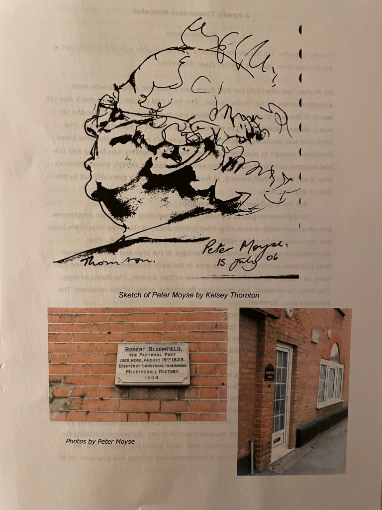
A Family Connection Revealed
Jim Stevenson
Society member Jim Stevenson has sent this remarkable account of discovering his descent from Robert’s brother Isaac Bloomfield.
My Mother had often told me that there was a Poet and a Bishop who were ancestors of her on her Mother’s side. The Poet had written The Farmer’s Boy (or was it ‘A Minstrel Boy’?) and one of them was buried in St Paul’s Cathedral (or was it Westminster Abbey?) or maybe he was interred in Poets’ Corner? The confusion was probably as much mine as my Mum’s because by the time I was interested enough to question her in any depth her memory was failing and she had become quite confused. So my earlier attempts to identify these ancestors was, if not exactly half-hearted, at least made significantly more difficult by the lack of any real clues. But then, suddenly, all was revealed! And thanks largely to my wife; she was watching a television programme one afternoon which was coming from Tintern Abbey on the River Wye. We knew the area well as lots of her relations were more or less local to it. The Commentator spoke of the industrial heritage of the Wye and then mentioned that a famous poet had visited the area in the early nineteenth century and had been so inspired by its beauty that he had written a poem, The Banks of Wye. The Poet, he revealed, was one Robert Bloomfield, author of the renowned The Farmer’s Boy. Eureka!! Bloomfield was the maiden name of my Mother’s Grandmother! The genealogical research then became much more focussed and proved to be hugely rewarding. Not only had we established the identity of the Poet, but soon found that Charles James Blomfield, Bishop of Chester and London, was Robert’s cousin. Two birds with one stone! And, incidentally, although Charles was buried in All Saint Church, Fulham there is a memorial to him, by G. Richmond, on the south wall of the ambulatory of Saint Paul’s Cathedral! Now I must admit that, to my shame, until then I had never heard of Robert Bloomfield. On reflection that might have been owing to the fact that he was classified as one of the ‘Romantic Poets’ along with Byron and Shelley etc. and, as a genre, they did not especially appeal to me, my preference being for the more narrative style of Tennyson and, more especially, Kipling. OK, so Bloomfield had written his share of love poems but nothing had prepared me for his sheer eloquence and the delightful whimsy in so much of his work. I had, I suppose been thinking more of the old song, ‘To be a Farmer’s Boy’: ‘Oh, to plough and sow and reap and mow, / And be a Farmer’s Boy-oy-oy-oy, / To-oo be a Farmer’s Boy’
But how wrong I was and Oh! what I had been missing all those years!
My first move then, of course, was to Google ‘Robert Bloomfield’ and I was stunned by the amount of information that was available, and that provided a good start. I then looked for any books by, or about, him and found exactly what I was looking for, The Farmer’s Boy. The Story of a Suffolk Poet, Robert Bloomfield his Life and Poems. I was fortunate enough to find, online, a second hand copy in almost pristine condition for the princely sum of £1.40 (plus £2.40 post and packing – but then there’s always a snag!) The book had been excellently researched and the biographical detail totally fascinating. It reproduced a lot of his poems including, of course, The Farmer’s Boy and several more light-hearted poems and ballads. My Googling also revealed the wonderful ‘Robert Bloomfield Society’, which I promptly joined. It has been the source of a great deal of information and I was able to obtain a copy of the Bloomfield Family Tree; an extremely well researched and detailed piece of work created and hand-drawn in 1979 by Marguerite Evans and this provided the information which enabled me to establish my family connection to Robert. The Tree clearly shows the relationship between Robert and his cousin Charles James Blomfield, the Bishop, and also explains the reason for the different spelling of the surnames (an intriguing story in its own right). There was however, for me, one major shortcoming in the Bloomfied Family Tree; it doesn’t actually record my Great, Great Grandmother in an identifiable manner. My Great Grandmother’s maiden name, as I’ve said, was Bloomfield , Elizabeth Ann Bloomfield and her parents were Charles Bloomfield and Ann Watson, born in c1801 and 1806 respectively and I could not at first relate directly to these on the Tree. But then, after some extensive study of the tree, I finally came across the elusive Charles snuggled in between two of his brothers, Isaac and Joseph. His father was Isaac, the eldest brother of Robert, the Poet.
The tree didn’t record much detail for Charles, no wife or marriage date or issue etc. but the date of birth was right so I had no doubt then that I had found the right Charles and this was subsequently confirmed for me by some wonderfully detailed research cheerfully undertaken by my Grandson. So Robert, The Pastoral Poet, was my Great, Great, Great, Great Uncle!
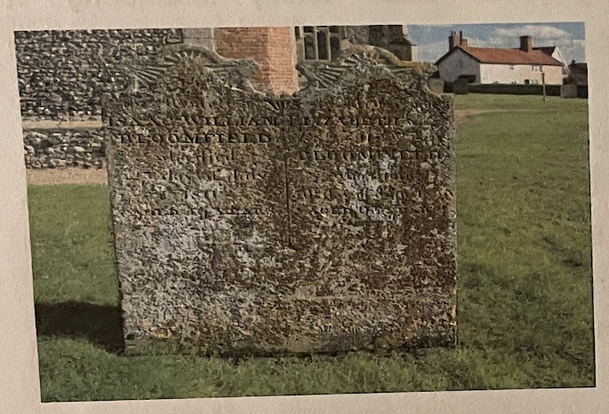
The dual headstone of my Great, Great, Great Grandfather and his wife. The inscription reads: In memory of ISAAC WILLIAM BLOOMFIELD who died 27th day of July 1811 aged 49 years. The inscription for Elizabeth is less legible but records her death as 1835, aged 75 years. The cottage where Robert was born can be seen in the background.
My wife and I went over to Suffolk for a few days in March for a family get-together on Mothering Sunday and our Granddaughter’s husband was kind enough to take us down to ‘Bloomfield country’. What a total joy that proved to be. We started, naturally, at Honington, where Robert was born, and it is a charming place. We were lucky enough to be able to get into the Church to see the beautiful plaque in memory of Robert that was placed there on the 150th anniversary of his birth (just 100 years ago). I was hoping to find the grave of Robert’s Father but not really expecting too much as his death from the dreaded smallpox meant that there was little likelihood of any form of public commemoration. Instead, to my huge delight, I found the headstone of Robert’s brother, Isaac William Bloomfield, who was my Great, Great, Great Grandfather!
Robert’s birthplace Bloomfield Cottage and the adjoining Bloomfield Farmhouse are in an excellent state of preservation with the latter boasting some fine decorative work on the outside walls. I was particularly intrigued by the little mouse apparently scurrying along one of the beams – a trademark of one of the craftsmen perhaps? I would love to hear from anyone who could enlighten me as to its significance. Neither my wife nor I are overly agile these days so we drove the short distance to Ixworth where the young Robert had, for about three months, received some extra-curricular schooling in what today might be termed ‘creative writing’ and then to Euston, Troston, Fakenham and Sapiston soaking up the almost palpable Bloomfield atmosphere. Sapiston was especially atmospheric; we drove slowly along the lane bordering what was William Austin’s farm where Robert had worked as a boy and although I have never been an eidolist I could literally feel his presence and could visualize him working on those fields, hacking out turnips from the frozen ground to feed the livestock. A truly magical experience and one that I will long remember.
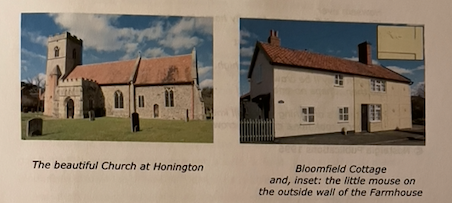
Rooks and Crows
David Woodward
Our member David Woodward’s poem ‘Rooks and Crows’ appeared in his book larn yourself Silly Suffolk (Nostalgia Publications: Toftwood, Dereham, Norfolk, 1997). His article ‘Perfect Rhyming’ appeared in Newsletter no.11 and he is the reader in Suffolk dialect on the CD of The Farmer’s Boy (Stewart Orr Sound Services).
I wonder if you know
T’difference ’tween a rook and a crow?
Got asked once
When I was a boy at school
I con’t tell ’em
And I felt such a fool.
I’d read in a cyclopaedia
Rooks are gregarious
’Cos, I dint know what that meant,
But I was curious.
If I’d a little more know
I’d a told ’em difference ’tween a rook and a crow.
So I asked an ’ol boy on the farm
And he told me, with a lotta charm,
‘You see an ’ol rook on thas own
Well… thas a crow.
But, if you see a crowd a crows
They’ll be rooks.’
Why can’t they put it like that in them books?!
Howsem ever
’Ol crows all flock when they fly home to roost.
So tea-time, come dusk
When Mum’s maakin’ the toast
You’ll look up into a grey sky
And see a devil a’ rooks flyin` high.
Happen they’ll be crows…
So then…’haps no-one knows!
Ah…there’s one thing we do all know.
Neither a rook nor a crow can crow.
© Nostalgia Publications 1996
Good Tidings, or News from the Farm: A Note
Angus Whitehead
Published in 1804, Bloomfield’s third publication was ‘a poem’ in heroic couplets like The Farmer’s Boy, and in many ways drawing on the world of that initial most successful work. The complete title for this poem celebrating a major medico-scientific breakthrough (‘good tidings; or news from the farm’) seems in itself to fuse and underline georgic-pastoral and Christian biblical sentiments. Bloomfield’s ‘Advertisement’ for the poem proclaims the ‘downfall’ of smallpox which in the poem itself is personified as a serpent, a pest, a fiend. In the Advertisement Bloomfield also writes of how in ‘Tidings’ he is able to turn a potentially unpromising subject into poetry via ‘domestic anecdote’. Bloomfield is what Singaporeans might call a stakeholder in the cause of the eradication of smallpox: his father had died from it when Bloomfield was an infant, his brothers’ families had been repeatedly fatally affected by smallpox – even in the midst of Bloomfield composing this poem. By contrast, all four of Bloomfield’s children were inoculated and escaped the disease. Bloomfield says he is inspired to write this warning, celebration and call to arms not by the muse, but by heaven, truth, the ‘source of all mercies’.
The title page reveals Good Tidings was ‘Printed at the Parnassian Press for Vernor and Hood’. I have yet to pursue what else if anything the Parnassian Press published at this time. The title epigraph from James Thomson seems predictable but then the lines are not from The Seasons, Bloomfield’s Ur-text vis-a-vis The Farmer’s Boy, but from Thomson’s considerably lesser well-known, by the early nineteenth century at any rate more obscure, ‘Poem to the Memory of Lord Talbot’. The choice of epigraph, then, might make us reflect on Bloomfield’s wider poetry reading and development in the four years between being raised out of poverty by the success of The Farmer’s Boy in 1800 and Bloomfield’s composition of Tidings in 1804.
Hitherto I have overlooked this poem, not really paying it that much attention. Perhaps it seemed too of its time, scientific. Perhaps I had fallen into the early reception trap from his first patron Capel Lofft onwards of expecting Bloomfield to remain a farmer’s boy or at least to remain within a georgic remit. Ironically, closer reading reveals Bloomfield to be doing exactly that in this poem. Engaging with the poem seriously, I was struck by Bloomfield’s deft handling of shifting perspectives in the early part of the poem. We begin encountering the beautiful energetic small boy blinded by smallpox, who can play with the other boys until they want to go tree-climbing etc, but then abandoned and alone, resembling Giles in several passages of The Farmer’s Boy. Similarly, the child who remembers being able to see before the smallpox attack, is like Giles a child of feeling, experiencing both transports of imagination and despair. In his enforced solitude the child singing extempore songs forms a nosegay of flowers he cannot see, therefore attaining solace through nature and art, which he presents to his Mother. And at that moment she becomes in her suffering and emotion the privileged subject and speaker perspective of the poem. In this role she responds to the reader-speaker’s interview-like questions, echoing the pity-fuelled interrogations of ‘the crowd’. The town is represented as a source of infection for the countryside, just as the town and its demands deplete and drain the countryside in several moments in The Farmer’s Boy. In the mother’s affecting account I particularly like the description of the night-light dying in its socket as the Mother recalls watching her boy by night, which seems subtly to gesture to one of the evils of smallpox that Bloomfield repeatedly highlights: blindness. Her tale – which might have made a ‘Rural Tale’ on its own – is one of warning borne of bitter, now avoidable, experience. Bloomfield does not overtly urge all to get children inoculated but the message is clear.
The poem could be seen as inoculation propaganda and thence topical today. But the poem is also a triumphant British biblical hosanna celebrating Severn-based Jenner and the cow in finally (British and female Lady Mary Wortley Montagu having already taken us halfway there) potentially eradicating smallpox globally. While unsettlingly, via the smallpox physician William Woodville, the East is cited as the historical source of the dreaded disease, the English farmyard, most specifically the ‘fragrance of the heifer’s breath’ are celebrated as the natural traditional means finally unearthed of the universal salvation of mankind from a disease that blinds children, disfigures (notably young British female) beauty and can also kill.
Tidings gives thanks for reliable positive science which has exceeded even Bloomfield’s expectations. Jenner, a man of hard science, is also imagined as a man of feeling and contemplation – rather like Cortez in John Keats’ sonnet ‘On First Looking into Chapman’s Homer’. In Bloomfield’s enthusiasm the moment of Jenner’s discovery takes on almost messianic connotations.
The smallpox phenomenon is presented by Bloomfield in martial terms: past victims are unsung martyrs in a long domestic and unsung war, mariners who didn’t quite make it to shore. Whereas the Indian palm and native British oak had grieved for centuries, the scar of the smallpox vaccination is celebrated in the very English image of the rose. The Rose is also deployed in this not long poem as a symbol for the pox-bearing East and later the beauty of British maids disfigured by smallpox. But while smallpox is now potentially eradicated it endures in memory. Halfway through his poem Bloomfield abandons Woodville’s historical accounts of foreign decimation by smallpox in order to give a national, domestic, potentially more moving family account: he becomes confessional, intimate, albeit in relating a memory he personally must have been too small to remember. In his account of his family’s trial by smallpox in his infancy, Bloomfield relates how smallpox, while initially bringing communities together, ultimately alienated and isolated members of those same communities. While Bloomfield in infancy is a lucky survivor/escapee of the disease in the 1780s, we note the absence of the priest as well as family at Bloomfield’s father’s night burial. And here Bloomfield seems to sense his readers’ imminent discomfort at his offering them ‘tales of woe’ as opposed to ‘rural themes’, even though he protests the infant that nearly died was their celebrated Giles from the beloved Farmer’s Boy. But the stakes are too high. Bloomfield seems to demand his 1804 readership make judgement on the poem and the issue. It seems even in the process of writing the poem ‘the fiend’ still mortally affects his family.
A key theme is protecting the complexions of ‘British maids pre-eminently fair’. Female beauty for Bloomfield is the source of healthy poetic inspiration, and male emotion. In celebrating the death of smallpox Bloomfield also celebrates the survival of British female beauty. Also in India and in America amongst the Native American Indians receiving truth ‘by female pray’rs’ Britain is imagined as the heaven-borne bringer of hope and mercy. One can imagine William Blake being rather chary of Bloomfield’s sanguine national if peaceful pride here, particularly when rebellious Sri Lanka is represented as simultaneously repressed and placated. The poem is simultaneously a celebration, a lament and an exhortation. Joy mixed with sadness for those who did not make it. But it is also evidence of Bloomfield’s growing ability and skill as a creator of wide-ranging and complex poetry. If only we could hear Bloomfield as he passionately recited the poem in Jenner’s Honour.
Angus Whitehead teaches in Singapore and his work appeared in Newsletters 19 and 21.
Newsletter No. 31, Spring / Summer 2017
This is the last issue of the Newsletter which I shall edit. I have edited 27 issues following John Goodridge’s initial 4 and it is time for me to step down. The years are taking effect on me and the Society now faces uncertain circumstances. There is some doubt about its continuing viability quite in its present form, given a slowly diminishing and largely ageing membership. The Society has achieved much during the time of its existence. Its stated aims to promote awareness of Robert Bloomfield’s life and work and to encourage the publication of works relating to the poet have been amply fulfilled. The increasing accumulation of Bloomfield resources in this period has been impressive and these will remain in place for future scholarship and general interest. As John Goodridge points out, ‘this year will see the publication online of a full edition of Bloomfield’s poems, to complete the rich set of resources that are available, including the letters edition, Tim Fulford’s beautiful multimedia Banks of Wye edition, and Bridget Keegan and my collection of Bloomfield essays. When the poetry edition comes on-stream, the online Bloomfield resources will be rather better than Clare’s!’ There is no intention or wish to close the Society but the committee is exploring possible future directions, perhaps a ‘slimmed-down’ version. We would much like to hear from members with their views and suggestions. We shall also be glad to hear from any member who might be interested in taking over editorship of the Newsletter (in a different format if wished), as well as any who might wish to join the committee or assist in the Society’s administration.
Newsletter no 30, the 250th anniversary issue, contained a note by Angus Whitehead on Bloomfield’s Good Tidings; Or, News from the Farm, his extended poem on the afflictions of smallpox and celebrating Edward Jenner’s discovery of a smallpox vaccine. Jenner’s discovery was, as indicated in that Newsletter, of considerable significance for Robert and his family. This is now followed up and amplified by our member Paul Green’s very informative article ‘On Smallpox: Edward Jenner, Lady Mary Montagu and the Good Tidings of Robert Bloomfield.’
Hugh Underhill
On Smallpox: Edward Jenner, Lady Mary Wortley Montagu and the Good Tidings of Robert Bloomfield
Paul Green
Adieu ye Parks, in some obscure recess,
Where gentle streams will weep at my Distress
Where false Friends will in my Grief take part,
And mourn my Ruin with a Joyfull Heart,
There let me live, in some deserted Place,
There hide in shades this lost Inglorious Face.
Ye Operas, Circles, I no more must view!
My Toilette, Patches, all the World Adieu!
(Lady Mary Wortley Montagu, ‘Satturday, The Small Pox, Flavia’, from Six Town Eclogues, 1716)
From yonder town infection found its way;
Around me putrid dead and dying lay.
I trembled for his fate: but all my care
Avail’d not, for he breath’d the tainted air;
Sickness ensu’d – in terror and dismay
I nurs’d him in my arms both night and day,
When his soft skin from head to foot became
One swelling purple sore, unfit to name;
(Robert Bloomfield: from Good Tidings; Or, News from the Farm)
The questions of why, or how, a particular virus mutated into the exact qualities needed to enter and attack the human system might seem unanswerable; but it did, and its effects blighted whole civilizations for thousands of years. Smallpox seems always to have been with us; if there is something uncertain about this statement, then it might be better to say that smallpox probably emerged in the human world around 10,000 BCE, although the only hard evidence for this assertion is found from observing the state of Egyptian mummification dated some approximately 3,000 years before actual discovery. Most countries and continents have, at certain times, experienced the ravages of this most virulent of diseases. During the sixteenth century, Cortez and Pizarro were alike responsible for spreading smallpox throughout the Aztec and Inca populations. Chile was similarly affected, and a century later, West Coast Native Americans suffered a depletion of about a third. The disease traversed eastward, spreading suffering and devastation as it went. Deaths amid the Ojibway, Cree and Sioux tribes reached as high as 95%. The Mandan tribe of North Dakota – sometimes described as ‘Welsh Indians’, and possible descendants of Madoc’s voyage of 1170 – suffered near-extermination; although the smallpox they contracted was probably the result of receiving a consignment of contaminated furs from the American government. It was a credible attempt at ethnic genocide. Canada had also suffered smallpox plagues in 1702-3; but it was not until 1902, after two major epidemics in Boston and New York City, that a serious door-to-door vaccination programme was started in the states of America.
Most of the inhabited world – from Europe and Asia, through to Australia and the Pacific Islands – has at various times been the subject of the smallpox pestilence. Often thought of as originating, and thriving, in the ‘filth’ of the extremely poor, its victims were duly spread throughout the entire range of most societies. During the eighteenth century, smallpox was responsible for the deaths of 400,000 individuals every year in Europe. Monarchy was never excluded, and in cases of recoveries the disease would have been responsible for one third of noticed blindness.
A technique of variolation was introduced and organized by Lady Mary Wortley Montagu in London during 1721. In itself, variolation meant the practice of making the body immune to the ravages of smallpox by introducing pus from a live sore into an intentionally prepared wound. As successful as this sometimes was, it was later ousted by Edward Jenner’s innovative discovery and use of vaccine prepared from cowpox, varieties of this pox seeming to have natural immune qualities against the more dangerous smallpox.
In the twentieth century smallpox was to account for a staggering 300-400 million deaths throughout the world. By the early 1950s there would be around fifty million cases occurring each year. At the start of the 1960s there were estimates that fifteen million would contract the disease in any twelve-month period, with two million of them actually dying. Now, and from 1979, but only after extensive early research and vaccination campaigns, the WHO has agreed that the smallpox virus has been defeated. It deserves to be, although the long war against it was never won easily. For many the smallpox epidemics may have been thought of as a Scourge of God, but time and science proved the point differently. It was possible to take the Devil by the tail and toss him aside.
II
Smallpox was a disease caused by the variola virus. It entered the body through the lungs, and was then carried through to the internal organs, most of which succumbed to the infection. The effects of the virus then spread to the skin, where it multiplied and caused a rash. The other recognizable symptoms included fever, severe headache, backache, and chronic vomiting – all of these commencing some twelve days after the initial contact. The rash would appear three days later, showing itself as small, almost delicate pink spots that grew, enlarged, and started to rise. By the end of the third day these spots would have become blisters, some six millimetres in diameter, and anchored fairly deep within the skin. Eventually, these blisters shrink, dry, and fall away, although they always leave a visible scar. In the worst cases, those afflicted die of blood-poisoning. Secondary infections could include permanent blindness and there might also be a degree of internal bleeding. Once infection has taken place there is no effective remedial treatment known to contain it, although efforts were sometimes used to attempt its control and make the body immune.
Variolation, or inoculation, seems to have first emerged in China during the 1500s. It allowed for scabs to be taken from the bodies of those still in the early stages of the disease, these scabs being ground into a powder, and kept at body temperature for about a month – less so in hot weather, more in winter. These crushed scabs would be ground with a small quantity of plant seeds, then administered by the nose through a curved silver tube, either inserted into the right nostril of a boy, or a girl’s left. Within a week, those variolated would show symptoms of the disease, but with a quick abatement guaranteed. In India, a needle was dipped into the pus of a mature sore. This same needle was used to create punctures, either in the forehead, or just below the deltoid muscle, which were then covered with a rice paste. There were the same ensuing smallpox symptoms, with a similar quick recovery. The practice of variolation would have spread through other Asian countries and from these travelled a course further until reaching the Balkans. It was, then, known about, and introduced later into Britain, being widely practised by the time of Edward Jenner.
III
When the plain truth tradition seem’d to know,
By simply pointing to the harmless Cow,
Though wise distrust to reason might appeal;
What, when hope triumph’d, what did Jenner feel!
Where even hope itself could scarcely rise
To scan the vast, inestimable prize!
(Good Tidings, lines 109-114)
Edward Jenner was born in 1749, and was variolated in 1756, when he was eight years old. The variolation of children involved the bleeding of them repeatedly, giving them little to eat, and allowing only one special drink prepared to sweeten their blood. The normal method, which would have also been used on the child Jenner, was to scratch one of the arms with a knife, and then place a number of smallpox scabs into the cuts. With their arms bandaged, the children were kept inside an inoculation barn until recovery some weeks later. Primary symptoms usually commenced after the first week and cleared some three days later. Even so, it took a child an average of one month to fully recover from the encounter, aggravatingly weakened as he, or she, would have been by the accompanying starvation measure. Jenner, as it is easy to imagine, thoroughly disliked the experience. When he was thirteen, Jenner was allowed to study medicine with a Sudbury surgeon and apothecary named Daniel Ludlow. Later he was apprenticed for two years to John Hunter, but it was when he was still with Ludlow that Jenner first heard of persons who had contracted cowpox and found themselves immune to smallpox. His mentor, John Hunter, held with unconventional views, and it was these that probably fuelled a later desire in Jenner for a better understanding of the connection between cowpox and smallpox, although most progress would have to be reserved for the years after he had completed his apprenticeship and returned to his home town of Berkeley. It was not until 1796 that he made the crucial breakthrough. On May 14th of that year he began his now famous experiment. He captured the pus from a cowpox sore that had infected a milkmaid, and applied it to the scratched arm of eight-year-old James Phipps who had never previously been infected by either cowpox or smallpox. The milkmaid Sara Nelmes and the boy James Phipps could hardly have known that medical history would remember and revere their names for well over a century, as well even as the name of Nelmes’s cow, Blossom.
After two months, Jenner repeated the procedure, but this time using pus from a smallpox sore, and observed no detrimental effect. Phipps became the first person to become immune to smallpox, and during his life was variolated many times, simply to prove his continued immunity. As inconceivable as it might now seem, Jenner’s findings proved to be too daring and revolutionary for the Royal Society to accept. They refused publication of his paper, so in 1798 he published it as a book with the London firm of Sampson Low. The book proved a best-seller, especially amongst the medical elite and other non-medical intelligentsia. Yet he found there were never enough local volunteers. Vaccination became more usual in London, through the activities of Henry Clive, a surgeon, and doctors, such as George Pearson and William Woodville. Jenner, it seems, embarked on a nation-wide survey, with the results also confirming his theories regarding resistance to smallpox, or variolation amongst those who had previously contracted cowpox. Naturally, because the treatment was still in its infancy, there were errors, and a number of controversies had to emerge; but there was an eventual wide-scale acceptance, and the emerging practice of vaccination spread rapidly. By 1800 it had been adopted by most European countries. One doctor John Haygarth, sent a sample to Benjamin Waterhouse, a physics professor at Harvard University. In his turn Waterhouse introduced the practice of vaccination to New England, and then persuaded Thomas Jefferson to promote it in Virginia. A while later, Waterhouse was also enlisted by Jefferson to commence a national vaccination programme throughout the whole of the United States.
Jenner, of course, achieved world-wide recognition but always refused to make money from his discoveries. His research received two important grants from the British Parliament, but the time he spent on it eventually told on his private medical practice, and his own affairs became difficult. He had been honoured, but had also received critical attacks, and even found himself the brunt of malicious ridicule. Yet his dedication to research had succeeded, and in 1840 vaccination replaced variolation, which in turn became officially prohibited. The Latin word for cow being vacca, vaccinia meant cowpox, which is why Jenner coined the term vaccination to promote his discovery. In the garden of Chantry House, where his family lived, Jenner erected a small single-roomed hut and chose to name it ‘The Temple of Vaccinia’. It was from here that he administered free vaccination to the very poor. Yet he had begun to lose his family to yet another scourge, that of tuberculosis. By 1820 his build-up of sorrows had forced him to seek relief in solitude. He suffered a stroke, but recovered enough to continue for a short time longer. One morning, after returning from an evening visit to a dying friend, he was found dead in his study. He had undergone a second, more massive stroke during the early hours of Sunday, January 6th, 1823. He now rests, alongside his parents, son, and wife, in Berkeley Church.
IV
Dear must that moment be when first the mind,
Ranging the paths of science unconfin’d,
Strikes a new light; when, obvious to the sense,
Springs the fresh spark of bright intelligence.
So felt the towering soul of Montagu,
Her sex’s glory and her country’s too;
Who gave the spotted plague one deadly blow,
And bade its mitigated poison flow
With half its terrors…
(Good Tidings, lines 95-103)
Although Edward Jenner was of paramount importance to the final eradication of smallpox, he was not the first person to have shown an interest in immunisation. There had been several investigations made, in Germany and England, regarding the apparent immunity against smallpox achieved after inducing cowpox into healthy bodies. During an epidemic of 1774, Benjamin Jesty – a Dorset farmer – succeeded in protecting his family by using a cowpox vaccine. It is conceivable that Jenner was aware of this, but he would have been more familiar with the innovatory progress in inoculation (or variolation) made by Lady Mary Montagu.
Lady Montagu was born in 1689, the daughter of Evelyn Pierrepoint, the fifth Earl of Kingston-upon-Hull. In 1712 she eloped with Edward Wortley Montagu, her father rejecting the suitor and proposing another of his choice. The early years of the marriage, which cannot now be thought of as successful, were spent in country seclusion; but her husband became MP for Westminster, then was appointed Lord Commissioner of the Treasury, both positions inevitably requiring a relocation to London. In 1716 he was made Ambassador at Istanbul, and his wife accompanied him there. He was recalled in 1717, although he and Lady Montagu did not actually leave until 1718. When his wife finally returned to London, she did so with a familiar knowledge of the Ottoman practice of variolation. She had become an avid writer, and although much of her output was to remain unpublished until the 19th and 20th centuries, she was a recognized campaigner, respected, but also vilified by the likes of Alexander Pope, probably because she had reputedly rejected his advances as a lover, and Jonathan Swift, whom she openly despised. Even though her poems were sometimes published, they were often plagiarized, or even pirated completely, by appearing under different authorship names. Her experience with smallpox was personal because her brother had died of it. She, too, had suffered the disease, but chose to hide the scars to her otherwise not unappealing features with a veil.
During her first year abroad, Lady Montagu encountered the inoculative process of ingrafting, also called variolation. She recognized how this relied on actual infected material from a mild smallpox sufferer, but was so impressed by the results that she became determined to allay the spread of the disease further, and in 1718 arranged for her five-year-old son to be inoculated. After she had returned to London, she also allowed her daughter (then four years old) to be variolated, but this time publicly and in full view of the court physicians. Being personally convinced about the benefits of variolation, she campaigned for fuller trials, and in 1721 six Newgate prisoners were variolated. Each effect was meticulously observed. All of the prisoners survived, so were rewarded with their early release. Six charity children were also successfully variolated, and then, in 1722, variolation was performed on the two daughters of the Princess of Wales. Given such royal involvement, the practice of variolation became an accepted standard for use against smallpox, although by no means should it have been thought infallible. Even so, for the next seventy years, variolation was used as the preferred form of inoculation, until the arrival and involvement of Edward Jenner.
What more, though, of Lady Montagu? Her marriage proved a failure, and she spent most of her later life out of England estranged from her husband and friends, although she returned to live in London a short time before her death in 1762. Her achievements, though, would appear to be twofold, because even if she had refrained from committing herself to the promotion of variolation, her literary activities were impressive. She was a feminist before feminism was recognized as a cause to rally to. Unfortunately, her daughter, Lady Bute, destroyed her mother’s diaries, but the letters written from Turkey were, a year after her death, collected and published as she had wished. Other editions, selections and collections of both letters and poetry were to follow. It would be too easy to assess her concern with social conditions only in terms of her promotion of variolation. Recognition must also be given to her views and writings in the feminist context. Given her own marital disappointment, she was open to others who had experienced similar, or even worse, ill use, and in extreme cases, physical injury. She could see marriage as both inconsequential and a bondage:
For would’st thou fix Dishonour on my Name,
And give me up to Penitence and Shame!
Or gild my Ruin with the Name of Wife,
And make me a poor Virtuous Wretch for Life?
Could’st thou submit to wear the Marriage-Chain,
(Too sure a Cure for all thy present pain)…
Tho’ ev’ry softer Wish were amply crown’d,
Love soon would cease to smile, when
Fortune frown’d.
(Mary Wortley Montagu, ‘An Elegy to a Young Lady’ (1733))
V
Lady Montagu, of course, had herself once been a victim of smallpox, and exhibited noticeable facial scars. Edward Jenner, though not a sufferer, had been made to undergo variolation when still a child. Robert Bloomfield, author of the bucolic poem, Good Tidings; Or, News from the Farm, had lost a parent, and three children belonging to one of his brothers were also claimed. Bloomfield’s poem is of some significance here. Even the comparative rarity of a poetry that was instigated by a specific scourge is enough to single it out from most other bucolic offerings of the time, including those from the so-called self-taught writers. If Bloomfield’s poetry is in the main an evocation and celebration of the lives of the rural poor, Good Tidings stands a little apart in its concentration upon the effects of sickness and death, as well as of a particular scientific discovery, on country life. [Though Angus Whitehead’s ‘Note’ suggests not untypical of Bloomfield’s compassionate concerns, and evidence of his growing confidence and sophistication as a poet. H.U.] There are three-hundred-and-eighty-six lines, the first thirty-six serving as an introduction, and to tell the story of a blind boy. For the most part, the child is happy within the bounds of his affliction, and able to play alongside other children – until the suggestion comes that they down their playthings, leap a ditch, and start upon a search for birds’ nests. Apart from a brief mention of his blindness in the first line, and another in the twelfth, we could assume that the boy was little different from his mischievous playfellows, but the idyllic innocence has been abruptly shattered and the boy is left, for the moment, lost and isolated. Yet not for long; like any normal child of his age he invents new pastimes and sings remembered songs. Eventually he plucks and ties a bunch of white and yellow flowers and carries them back as a prized nosegay for his mother. In the following lines (36-74) the mother recalls better days with her son still able to see; then, when prompted by pitying voices, tells of an infection (not yet named) that began in the nearby towns and then spread into the countryside. She talks of the ‘putrid dead and dying’ and how she ‘trembled’ for her child’s fate. But her care for the boy ‘Avail’d not’; he breathes in the taint and becomes sick. Lines 54-6 relate how ‘I nurs’d him in my arms both night and day, / When his soft skin from head to foot became / One swelling purple sore, unfit to name’. Her vigils continue, but while she neither complains, nor bewails her role as mother, her watchfulness and anxieties bear only partial fruit; the boy recovers it is true – but he is found blind! The paragraph ends: … ‘ask me no more: / God keep small-pox and blindness from your door!’
Lines 65-78 complete an authorial aside imploring intervention, divine or otherwise, to reduce the smallpox demon, and then convey such a conquest through every country that has known its scourge. Given the possibility, that day, when it came, would be glorious. Then line 73 starts with the pronouncement that such a day has indeed arrived! From this point on, the poem works toward a triumphant applause for the triumphant marriage of Science with beneficent Nature (‘the harmless Cow’, line 110); yet the science involved is no abstract theory-mongering, but the result of research into apparent immunity from smallpox in those farm and dairy workers who had at one time previously contracted cowpox. The poem, though, is unable to proceed this far immediately. Lines 79-94 eulogize the benefits of the countryside – the meadows, heaths and farmlands where Bloomfield spent his boyhood, and then, in lines 85 and 90 especially, restates its major theme of deliverance from the smallpox scourge, by asserting that the ‘blood of kine’, and ‘the fragrance of the heifer’s breath’ could bestow blessings beyond what childhood dreamt of. This, of course, is leaping forward to Edward Jenner’s innovatory work, although mention of his name does not occur until line 112. Lines 95-104 consider the earlier achievement of Lady Montagu, but have to acknowledge that her efforts were not enough: ‘…yet, with loathing still, / We hous’d a visitant with pow’r to kill’ (lines 103-4).
Then comes Jenner’s contribution. Lines 105-32 concentrate upon his Severn practice, and then the eventual discovery that cowpox produced immunity to the scourge, whether one calls it smallpox, ‘purple pest’, or merely ‘fiend’. All of the names are just as relevant. The introduction of a cowpox blister to the arm of even the smallest child could reduce the chances of it contracting smallpox to virtually nil. Bloomfield metaphorically names the blister a rose, ‘a simple, saving Rose’. Confirmation of the efficacy of Jenner’s treatment would be received from every land: ‘And confirmations sprung in ev’ry land’ (1ine 122). Lines 133-160 trace the ravages of smallpox epidemics through such countries as Arabia, India, Greenland, Britain and Peru. Considering the extent of the plagues, the list could have continued. The imagery Bloomfield uses, however, is sometimes striking, as in the case of the British Islands, which possess their oak, a tree recognized for its unusually long life. But its ‘giant bulk’ had been quite unable to assuage or deter the countless sufferings and deaths from smallpox that had happened around it. The image itself is compatible with the bucolic materials of Bloomfield’s other writings. He attempts a list of epidemics, but then checks himself, questioning the need to pursue his subject ‘to a foreign shore’, and returns to his ‘homely narrative of… Familiar griefs’ (lines 157-8).
In lines 161-200 Bloomfield returns to the subject of the peasantry. Amid ‘Calm village silence’ an old woman lives her life in the hope of heaven; yet she ails. In pain, and feverish with the first symptoms of smallpox, she accepts help from a kindly neighbour. But the widow dies, and the neighbour carries the contagion back to her home. ‘Home’: Bloomfield repeats the word, possibly to underline the fact that he is writing of his own home. The helpful neighbour was his mother. She has six children, and is still nursing one. Most think he will die, but the family survives, at least mother and children. ‘One of riper years’ – Bloomfield’s father – did not. He died, and was buried within twenty-four hours, with no one to stand over his grave, and with little, if any, religious ceremony: ‘Religious reverence forbade to speak: / The starting Sexton his short sorrow chid / When the earth murmur’d on the coffin lid, / And falling bones and signs of holy dread / Sounded a requiem to the silent dead!’ (lines 195-200).
At line 201 an anonymous questioner asks the intention of the preceding narrative, which appears to be preferring an attitude of misery rather than describing rural contentedness. In his reply the poet wishes the questioner to consider that the nursed child was himself, and the deceased father his. Now that he is fully grown, would it be correct for him to forget life’s catastrophes? Bloomfield thinks not, because it would be ignoble for the mature man to subdue his feelings about these childhood experiences and the continued sufferings arising from smallpox. The first twelve of lines 215-278 relate to the two outbreaks of smallpox visited on his brother’s family: ‘That marked affliction which a brother bore; / That storm of trouble bursting on his head, / When the fiend came, and left two children dead!’ (lines 216-18).
‘The foe implacable returns again / And claims a sacrifice; the deed is done – / Another child has fall’n, another son!’ (lines 224-6). This second encounter must have taken place very near to the writing of the poem, because the next line tells how the young cheek of the deceased is ‘now…scarcely cold’. He calls upon ‘Indignant Reason’, and pity and joy to speak warnings, and to spread the tidings of the new vaccine, in preference to variolation, among all present and future parents. The mild stranger that he asks them to bid welcome in line 241 is, of course, Jenner’s vaccine, while lines 245-6: ‘Give not a foe dominion o’er your blood, / Plant not a poison, e’en to bring forth good’ must refer to the earlier and still practised inoculation by the variolation method, which meant the introduction of a mild form of smallpox into the unafflicted body. Even though variolation worked, it failed to erase the variola virus, which would then have been carried, and in some cases passed on, by the inoculated person. The following lines celebrate not only ‘life and health’ but the effects of untarnished physical beauty: …‘for, Beauty’s call / Rouses the coldest mortal of us all’ (lines 259-60). ‘That the sweet precincts of the laughing eye / Dread no rude scars, no foul deformity?’ (lines 267-8). Smallpox, when not causing death, was apt to leave victims either blind or badly scarred, or both, by the pock marks of healed blisters. Bloomfield looks forward to a future devoid of mortal sickness as well as of deformity and blemish.
In lines 279-301 Bloomfield’s hope is that there are also remedies for other afflictions to be discovered. He casts pessimism aside and includes an account of ‘warrior nations’ – Cherokee Indians in America – who petitioned their white man’s government for assistance in fighting the epidemics that were afflicting their once proud tribes with ‘dying thousands’.
Continuing to celebrate the spread of vaccine inoculation to other lands, the poem notes that despite the doubtful blessings of British Colonialism, India receives the benefit of Jenner’s discovery: ‘Whate’er we hear to hurt the peace of life, / Of Candian treachery and British strife / The sword of commerce, nations bought and sold, / They owe to England more than mines of gold; / England has sent a balm for private woe; / England strikes down the nations’s bitterest foe’ (lines 307-12).
In Europe, war and upheaval in recent years have taken their toll, but despite the harms brought about by conflict, despite ‘whole legions’ of the dead, scientific truths were being advanced and ‘New germs’ of life had ‘sprung up’. In a kind of rhetorical aside, Bloomfield regrets that exultation must always mingle with ‘a sigh’. Lines 321-30 invoke reminders and memories. Bloomfield wishes to conjure up the spirits of the recent dead, so that their names may be whispered, the names of those who had aspired to social positions, parents who had barely reached middle age, and ‘childhood’s thousand thousand swept away’ (328), as well as the victims of smallpox reported to have been brought to the Isle of France (Mauritius) by a Dutch ship.
Lines 331-48 tell the story of a young person, given passage to England, only to contract smallpox after a few months and die at Rotherhithe in 1784. Though not named in the poem, the boy was a certain Lee Boo, a second son of the Abba Thuile, the ruler of the Pelew Islands. In a kind of benediction as the poem draws to its close the past victims of smallpox and the ‘brave stranger boy’ are exhorted to ‘Sleep sound’ (351). Bloomfield wishes also to sing England’s praises. He concludes his poem as a eulogy of the country that was able to present the world with a simple, safe cure for its smallpox epidemics. He reverts to the bucolic setting of cottage and farm and offers a picture of hope, rejoicing amidst the countryside’s meadows and paths: ‘In village paths, hence, may we never find / Their youth on crutches, and their children blind’ (lines 371-2).
An emblem of rejuvenation is presented in the person of a milkmaid rising from her bed, secure in the fact that there will be neither scars nor injuries to expect nor beware of. The new life she heralds is one of uncontaminated years, with balmy days filled by sunshine and spring. There are no ‘Praise God’ affirmations, for the thanksgiving should be to Nature and, strewn as flowers at its feet, a complementing Science.
SOURCES
The text used for Good Tidings; Or, News from the Farm is from the revised edition of Selected Poems, Trent Editions, 2007. Other articles or books either read or consulted are: The Robert Bloomfield Society Newsletter, Spring 2009 and Spring / Summer 2016. ‘Robert Bloomfield’ (en.wikipedia.org); Stefan Riedel, ‘Edward Jenner and the History of Smallpox Inoculation’ (www.ncbi.nlm.nih.gov); Edward Jenner (wikipedia); Roland Mathias, Snipe’s Castle, Gomer Press, 1979; Carol Barash, ‘Lady Mary Wortley Montagu’ (www.thepoetryfoundation.org); Salah Zaimeche et al, ‘Lady Montagu and the Introduction of Smallpox Inoculation to England’ (www.muslimheritage.com); About Lady Mary Wortley Montagu (www.thepoetryarchive.org); ‘History of Smallpox’ (wikipedia)
A downloaded CD of Denise Riley reading a selection of poems by Lady Montagu is available from http://www.thepoetryarchive.org
See also Tim Fulford and Debbie Lee, ‘The Jenneration of Disease: Vaccination, Romanticism and Revolution’, Studies in Romanticism, 39. no. I (2000), 139-63
250th Anniversary Exhibitions
Bedford Central Library hosted a small display in December 2016 to celebrate Robert Bloomfield’s 250th anniversary. Items induded photos of the original Society set up by Constance Isherwood, extracts from a musical score to ‘The Flowers of Mead’, and articles on Bloomfield. Bedford Reference Library holds a complete bound collection of the Society’s Newsletters.
‘The first of rural bards’: Robert Bloomfield (1766-1823) in Word, Music and Image
To mark the anniversary of his birth, a new exhibition in Cambridge University Library’s Entrance Hall from 13th December to 14th January curated by John Wells, Senior Archivist, Department of Manuscripts and University Archives, celebrated Bloomfield’s achievements as represented by his own writings and by works of art and music inspired by them. It drew on the Library’s Special Collections, including manuscript verse, autograph correspondence, music and printed books, and benefited from the acquisition in 1984 of the Bloomfield collection assembled by Robert F. Ashby (exhibits with CCA-CCE.34 classmarks). The exhibition opened with an apparently unpublished manuscript memoir of Bloomfield, written by Walter Bloomfield, the son of the poet’s last surviving nephew; in an introductory letter the author declares that ‘the major portion of it contains information which must be new to everybody unconnected with my family’ (See Newsletter no 28 (Autumn 2014) for an edited version of this memoir. As indicated there, it was not in fact unpublished. It appeared in Proceedings of the Suffolk Institute of Archaeology, Vol.15, Part 1 (1913)). The text is prefaced by a pedigree showing, among other things, Robert Bloomfield’s relationship to Charles James Blomfield (1786-1857), Bishop of London.
Several settings of Bloomfield’s verse to music are known, most of them dating from his lifetime or shortly afterwards. The exhibition included a setting of ‘Rosy Hannah’ by his elder brother Isaac (1762-1811), printed on paper watermarked 1801, which may have appeared before the poem was included in Bloomfield’s second collection, Rural Tales, ballads, and songs, in 1802.
There were also posthumous publications on display, charting Bloomfield’s continuing appeal to later generations. The exhibition finished with a diminutive pamphlet edition of Bloomfield’s ‘The Drunken Father’, published around 1880 in aid of the temperance movement, with a preface by Walter Bloomfield, the poet’s kinsman and author of the manuscript memoir which opened the exhibition.
**********
I regret to have to record the death earlier this year of Richard Burleigh who contributed interestingly to the 250th Anniversary Newsletter.